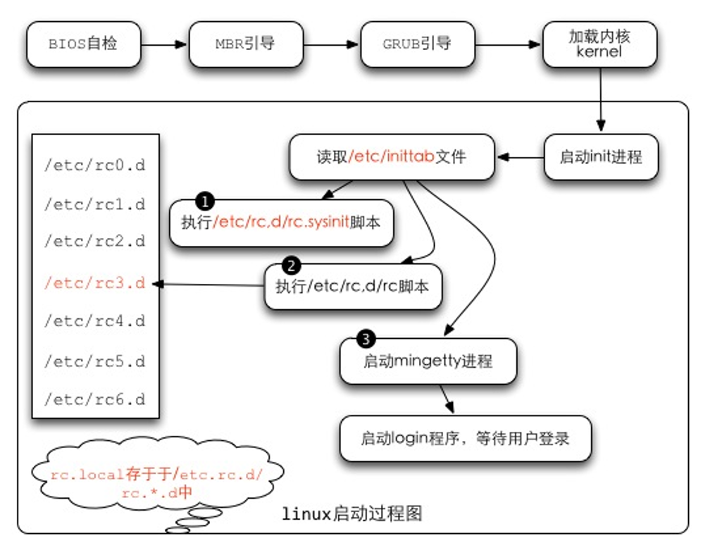
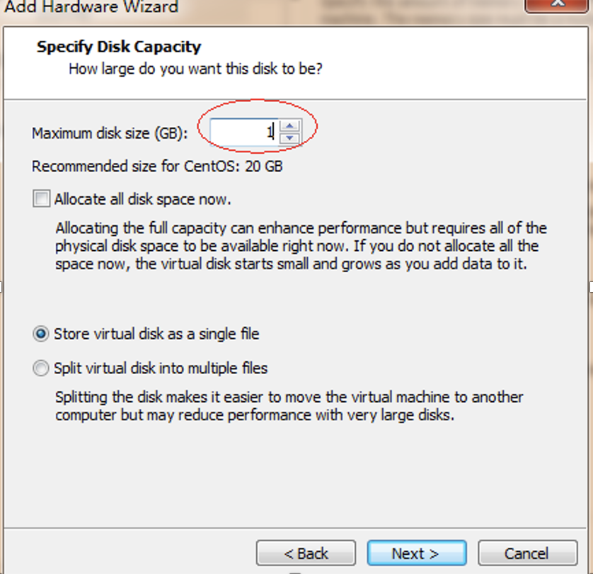
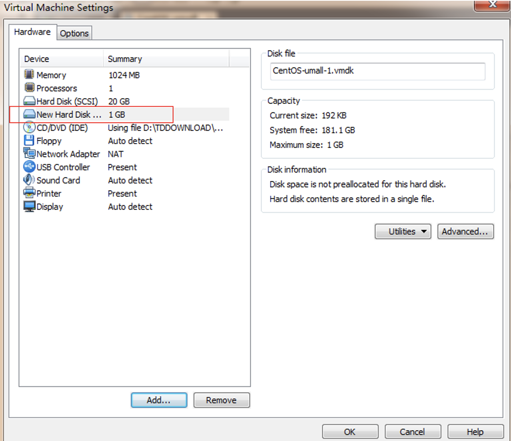

介绍
这是我在2012年学习 linux 的笔记。当前仅是linux基础部分，其它如多机房运维、集群等在中级篇(未发布)。
我本身是做 java 开发的，但在当时(12年)，你会发现技术大会上面很少有讲 java 的，都是说架构、系统变迁等之类的。 所以仅是学好 java 够了吗？他依赖的数据库，运行的环境，集群、架构等需不需要我们去学习。
如果多年以后再往回看，go/rust也兴起来了。语言很重要，但不应该成为决定性的因素。千万不要给自己设置上限，例如我是java开发，我就只学java，不学其它。
像有些知识，如LAMP、nagios、cacti等因为新技术的兴起（如容器化等），已经不用或少用，我这里就不会再列出来了。
linux 命令这块很多上参考了《鸟哥的linux私房菜》。初学者可以多看看。
其它笔记大部分是手敲的，建议大家也这么做。有时候你看起来会了，实际上却什么都不懂，动手才会加深理解和记忆。
当时笔记 linux 环境是基于 CentOS 5 的，现在 CentOS 已经快不维护了。如果不特别说明当前环境都是基于 CentOS7.9的。
初学者进入一个领域，往往陷入细节 或 抓不住重点。久了人就会疲惫和迷茫，最后放弃( xxx 从入门到放弃)。
我的建议是：找人带。找培训班(靠谱的)或网上课程(如极客时间)，不要自己一个人闷头学，这样效率很低。
找人带的好处是：相当于你站在别人的肩膀上，起点比较高。
如果你是天才就另说。
植一棵树最好的时间是十年前，其次是现在。
end.
如果文档对你有帮助，你可以捐赠支持一下，谢谢！ ^_^

Linux安装
centos7.9系统安装文档
1.安装过程
准备软件与系统
CentOS-7-x86_64-DVD-2009.iso
VMware
新建虚拟机

开始安装
选择语言为English、键盘布局类型为us
设置时区 Asia/Shanghai
确认安装位置, 默认
配置网络参数
设置开机启用
配置GATEWAY、DNS,这里默认用DHCP
设置主机名 n1
选择安装软件包, 最小化安装

开始安装程序
设置ROOT密码
安装完成, Reboot重启
关闭防火墙和 selinux
# 临时关闭防火墙
systemctl stop firewalld
# 永久防火墙开机自关闭
systemctl disable firewalld
# 临时关闭SELinux
setenforce 0
# 查看SELinux状态
getenforce
# 开机关闭SELinux
# 编辑/etc/selinux/config文件，如下图，将SELINUX的值设置为disabled。
linux系统的开机启动过程 2012-06-16
1. 启动流程
- (1) BIOS自检--加载 BIOS 的硬件信息与进行自我测试，并根据配置取得第一个可启动的设备；
- (2) MBR引导--读取并运行第一个启动装置内MBR的boot Loader (即grub, spfdisk 等程序)；
- (3) 加载内核kernel--根据boot loader的配置加载 Kernel ，Kernel会开始检测硬件与加载驱动程序；
- (4) 启动init进程--在硬件驱动成功后，Kernel会主动调init进程，而init会取得run-level信息；
- (5) init 运行/etc/rc.d/rc.sysinit文件来准备软件运行的操作环境(如网络、时区等)；
- (6) init 运行run-level的各个服务之启动(script 方式)；
- (7) init 运行/etc/rc.d/rc.local 文件；
- (8) init 运行终端机模拟程序mingetty来启动login 程序，最后就等待用户登录；

1.1. BIOS,boot loader与kernel载入
BIOS，开机自检与MBR
- (1) 主机在开机的时候，读取BIOS。
- (2) 系统会根据读取的BIOS的数据，进行加电自检 (power on self test, POST)， 然后开始执行初始化硬件检测，并设置 PnP 设备，确定可开机的设备后，就开始读取启动设备的数据 (MBR 相关的任务开始)。
- (3) 主机开始尝试由存储媒体加载操作系统。系统开始在第一台启动设备上执行开机程序。以硬盘为例，启动流程读硬盘的过程中，第一个要读取的就是该硬盘的主引导扇区 (Master Boot Record, MBR) ，而系统可以由主引导扇区所安装的引导加载程序 (boot loader) 开始执行核心识别的工作。 boot loader：认识操作系统文件格式并据以加载内核到内存中执行。
- (4) boot loader开始读取核心文件后，Linux会将内核解压到内存中， 并且利用内核的功能，开始测试与驱动各个外部设备，包括存储设备、CPU、网络卡、声卡等等。内核开始接管BIOS后工作。核心文件一般放在/boot里， 并且取名为/boot/vmlinuz。
- (5) 在加载核心的过程中，系统只会"挂载根目录"而已，而且是以只读的方式挂载的。 此外，有时为了让某些功能可以用文件方式来读取，因此，有的系统在开机的时候， 会建立虚拟硬盘 (RAM Disk)，这就需要 initrd 及 linuxrc了。
- (6) 在核心驱动外部硬件的工作完成之后， initrd 所建立的虚拟磁盘就会被删除了！
boot loader 可以加载 kernel 与 initrd ，然后在内存中让 initrd 解压成为根目录， kernel 就能够借此加载适当的驱动程序，最终释放虚拟文件系统，并挂载实际的根目录文件系统， 就能够开始后续的正常启动流程。 在完整加载内核后，主机开始正确的运行。

1.2. 第一个程序init及配置文件/etc/inittab与 runlevel
在核心加载完毕之后，整个Linux当中第一个被执行的程序就是/sbin/init。/sbin/init 最主要的功能就是准备软件运行的环境，包括系统的主机名、网络配置、语系处理、文件系统格式及其他服务的启动等。 而所有的动作都会通过init的配置文件，即/etc/inittab 来规划，而 inittab 内还有一个很重要的设置选项，那就是默认的run level (启动运行等级) run level 分为六个等级，分别是：
- 0 - halt (系统直接关机)
- 1 - single user mode (单人维护模式，用于系统出问题时的维护)
- 2 - Multi-user, without NFS (类似下面的 runlevel 3，但无 NFS 服务)
- 3 - Full multi-user mode (完整网络功能的纯文本模式)
- 4 - unused (系统保留功能)
- 5 - X11 (与 runlevel 3 类似，但加载使用 X Window)
- 6 - reboot (重新启动)
开机时，从/etc/inittab取得系统的 run level的。
[root@linux ~]# vi /etc/inittab
# 设置系统开机默认的 run level 设置项目：
id:3:initdefault:
# 准备系统软件执行环境的脚本执行文件
si::sysinit:/etc/rc.d/rc.sysinit
# 7 个不同 run level 的，需要启动的服务的脚本放置路径：
l0:0:wait:/etc/rc.d/rc 0 <==runlevel 0 在 /etc/rc.d/rc0.d/
l1:1:wait:/etc/rc.d/rc 1 <==runlevel 1 在 /etc/rc.d/rc1.d/
l2:2:wait:/etc/rc.d/rc 2 <==runlevel 2 在 /etc/rc.d/rc2.d/
l3:3:wait:/etc/rc.d/rc 3 <==runlevel 3 在 /etc/rc.d/rc3.d/
l4:4:wait:/etc/rc.d/rc 4 <==runlevel 4 在 /etc/rc.d/rc4.d/
l5:5:wait:/etc/rc.d/rc 5 <==runlevel 5 在 /etc/rc.d/rc5.d/
l6:6:wait:/etc/rc.d/rc 6 <==runlevel 6 在 /etc/rc.d/rc6.d/
# 是否允许按下 [ctrl]+[alt]+[del] 就重新启动的设置项目：
ca::ctrlaltdel:/sbin/shutdown -t3 -r now
# 下面两个配置则是关于不断电系统的 (UPS)，一个是没电时的关机，一个是复电的处理
pf::powerfail:/sbin/shutdown -f -h +2 "Power Failure; System Shutting Down"
pr:12345:powerokwait:/sbin/shutdown -c "Power Restored; Shutdown Cancelled"
# 本机终端启动的个数：
1:2345:respawn:/sbin/mingetty tty1
2:2345:respawn:/sbin/mingetty tty2
3:2345:respawn:/sbin/mingetty tty3
4:2345:respawn:/sbin/mingetty tty4
5:2345:respawn:/sbin/mingetty tty5
6:2345:respawn:/sbin/mingetty tty6
# 在 X Window (run level 5) 环境下的启动脚本设置项目：
x:5:once:/etc/X11/prefdm –nodaemon
/etc/inittab文件的语法如下：
[设置项目]:[run level]:[init 的动作行为]:[命令项目]
1. 设置项目：
最多四个字符，代表 init 的主要工作项目，只是一个简单的代表说明。
2. run level：
该项目在哪些 run level 下面进行的意思。如果是35则代表 runlevel 3 与 5 都会执行。
3. init 的动作项目：
主要项目意义如下：
initdefault： 代表默认的 run level 设置值；
sysinit ： 代表系统初始化的动作项目；
ctrlaltdel ： 代表 [ctrl]+[alt]+[del] 三个按键是否可以重新启动的设置；
wait ： 代表后面接的命令项目必须要执行完毕,才能继续后面的动作；
respawn ： 代表后面接的init 仍会主动的"重新"启动。
更多的设置项目请参考 man inittab 的说明。
4. 命令项目：
即应该可以进行的命令，通常是一些脚本。
CentOS中init的处理流程是：
- (1) 先取得 runlevel ，即默认运行等级的相关等级 (以鸟哥的测试机为例，为5号)；
- (2) 使用 /etc/rc.d/rc.sysinit 进行系统初始化
- (3) 由于runlevel是5 ，因此只进行『l5:5:wait:/etc/rc.d/rc 5』，其他行则略过
- (4) 配置好 [ctrl]+[alt]+[del] 这组的组合键功能
- (5) 配置不断电系统的 pf, pr 两种机制；
- (6) 启动 mingetty 的六个终端机 (tty1 ~ tty6)
- (7) 最终以/etc/X11/perfdm -nodaemon 启动图形界面！
1.3. init 处理系统初始化流程/etc/rc.d/rc.sysinit
开始加载各项系统服务之前，先设置好整个系统环境，主要利用 /etc/rc.d/rc.sysinit 这个脚本来设置系统环境。 /etc/rc.d/rc.sysinit主要的工作：
1.取得网络环境与主机类型：
首先读取网络配置文件 /etc/sysconfig/network ，取得主机名与默认网关 (gateway) 等网络环境。
2.测试与挂载内存设备/proc及 USB设备/sys：
除挂载内存设备/proc 之外，还会主动检测系统上是否具有usb设备， 若有则会主动加载usb的驱动程序，并且尝试挂载usb的文件系统。
3.决定是否启动 SELinux ：
4.启动系统的随机数产生器
随机数产生器可以帮助系统进行一些密码加密演算的功能，在此需要启动两次随机数产生器。
5.配置终端机 (console) 字体：
6.配置显示于启动过程中的欢迎画面 (text banner)；
7.配置系统时间 (clock) 与时区配置：需读入 /etc/sysconfig/clock 配置值
8.接口设备的检测与 即插即用 (PnP) 参数的测试：
9.用户自定义模块的加载
10.加载核心的相关配置：
11.配置主机名与初始化电源管理模块 (ACPI)
12.初始化软件磁盘阵列：主要是透过 /etc/mdadm.conf 来配置好的。
13.初始化 LVM 的文件系统功能
14.以 fsck 检验磁盘文件系统：会进行 filesystem check
15.进行磁盘配额 quota 的转换 (非必要)：
16.重新以可读写模式挂载系统磁碟：
17.启动 quota 功能：所以我们不需要自订 quotaon 的动作
18.启动系统伪随机数产生器 (pseudo-random)：
19.清除启动过程当中的缓存文件：
20.将启动相关信息加载 /var/log/dmesg 文件中。
1.3.1. 启动系统服务与相关启动配置文件/etc/rc.d/rc.n 与/etc/sysconfig
[root@stu412 ~]# ls -l /etc/rc.d/rc3.d
total 320
lrwxrwxrwx 1 root root 17 Jun 4 03:34 K01dnsmasq -> ../init.d/dnsmasq
lrwxrwxrwx 1 root root 24 Jun 4 03:34 K02avahi-dnsconfd -> ../init.d/avahi-dnsconfd
lrwxrwxrwx 1 root root 24 Jun 4 03:35 K02NetworkManager -> ../init.d/NetworkManager
lrwxrwxrwx 1 root root 17 Jun 4 03:34 K02oddjobd -> ../init.d/oddjobd
lrwxrwxrwx 1 root root 16 Jun 4 03:33 K05conman -> ../init.d/conman
lrwxrwxrwx 1 root root 14 Jun 4 03:34 K05innd -> ../init.d/innd
lrwxrwxrwx 1 root root 19 Jun 4 03:34 K05saslauthd -> ../init.d/saslauthd
...
lrwxrwxrwx 1 root root 25 Jun 4 03:34 K99readahead_later -> ../init.d/readahead_later
lrwxrwxrwx 1 root root 23 Jun 4 03:34 S00microcode_ctl -> ../init.d/microcode_ctl
lrwxrwxrwx 1 root root 25 Jun 4 03:34 S04readahead_early -> ../init.d/readahead_early
lrwxrwxrwx 1 root root 15 Jun 4 03:35 S05kudzu -> ../init.d/kudzu
...
一般来说，如果我们想要启动一些系统服务，例如启动 atd ， 需要使用：
/etc/rc.d/init.d/atd start (也可以用 /etc/init.d/atd start)
如果是关闭该服务，就是使用：
/etc/rc.d/init.d/atd stop
(1) 在 /etc/rc.d/rc3.d 内的，以 S 为开头的文件，为开机时，需要"启动, start"的服务；
(2) 在该目录内的 K 为开头的文件，为"关机时需要关闭的服务, stop"的文件连结；
(3) 在 S 与 K 后面接的数字，代表该文件被执行的顺序。
1.4. 用户自定义开机启动程序 (/etc/rc.d/rc.local)
有任何想要在开机时就进行的工作时，直接将他写入/etc/rc.d/rc.local ， 那么该工作就会在开机的时候自动被加载！而不必等我们登录系统去启动。
rc.local服务是在/etc/rc.d/rc*.d里执行的
[root@stu412 test]# ls -l /etc/rc.d/rc3.d | grep local
lrwxrwxrwx 1 root root 11 Jun 4 03:34 S99local -> ../rc.local
1.5. 根据/etc/inittab之设置，加载终端或X-Window
在完成了系统所有服务的启动后，接下来 Linux 就会启动终端或者是 X Window 来等待用户登录！ 实际参考的项目是 /etc/inittab 内的这一段：
1:2345:respawn:/sbin/mingetty tty1
2:2345:respawn:/sbin/mingetty tty2
3:2345:respawn:/sbin/mingetty tty3
4:2345:respawn:/sbin/mingetty tty4
5:2345:respawn:/sbin/mingetty tty5
6:2345:respawn:/sbin/mingetty tty6
# Run xdm in runlevel 5
x:5:once:/etc/X11/prefdm -nodaemon
这一段代表，在 run level 2, 3, 4, 5 时，都会执行 /sbin/mingetty ， 而且执行六个，这也是为何我们 Linux 会提供"六个纯文本终端"的设置！ 因为 mingetty 是启动终端的命令。
命令总结(cat pwd ls rm mkdir touch head tail ln chkconfig)
cat
说明
把文件连接后传到基本输出（屏幕或加 > fileName 到另一个文件）
使用方式：cat [-AbeEnstTuv] [--help] [--version] fileName
参数：
-n 或 --number 由 1 开始对所有输出的行数编号
-b 或 --number-nonblank 和 -n 相似，只不过对于空白行不编号
-s 或 --squeeze-blank 当遇到有连续两行以上的空白行，就代换为一行的空白行
-A ：相当于 -vET 的整合参数，可列出一些特殊字符～
-E ：将结尾的换行符 $ 显示出来；
-T ：将 [tab] 按键以 ^I 显示出来；
-v ：列出一些看不出来的特殊字符：
一般用法：
$ cat file1 file2 file3 ...
范例
范例一：查看 /etc/redhat-release 这个文件的内容
[root@n1 ~]# cat /etc/redhat-release
CentOS Linux release 7.9.2009 (Core)
范例二：[重要]承上题，顺便打印出行号
[root@n1 ~]# cat -n /etc/redhat-release
1 CentOS Linux release 7.9.2009 (Core)
范例三：压缩空白行
[root@n1 ~]# cat multi_blanks.txt
line 1
line2
line3
line4
[root@n1 ~]# cat -s multi_blanks.txt
line 1
line2
line3
line4
范例四：[重要]制表符显示为^|
[root@n1 ~]# cat file.py
def function():
var = 5
next = 6
third = 7
[root@n1 ~]# cat -T file.py
def function():
^Ivar = 5
^Inext = 6
^Ithird = 7
范例五：[重要]将文件内容完整的显示出来(包含特殊字节)
[root@n1 ~]# cat -A file.py
def function():$
^Ivar = 5$
^Inext = 6$
^Ithird = 7$
# 使用 [tab] 与空格键的效果差不多，都是一堆空白！我们无法知道两者的差别。
此时使用 cat -A 就能够发现那些空白的地方是什么东西了！
[tab]会以 ^I 表示，
换行符则是以$表示，所以你可以发现每一行后面都是 $ ！
不过换行符在Windows/Linux则不太相同，Windows的断行字节是 ^M$ 。
pwd (print working directory)
功能说明：显示工作目录。
语 法：pwd [--help][--version]
补充说明：执行pwd指令可立刻得知您目前所在的工作目录的绝对路径名称。
[root@n1 tmp]# pwd
/tmp
ls (list)
说明
执行ls指令可列出目录的内容，包括文件和子目录的名称。
# ls [-aAdfFhilnrRSt] 目录名称
# ls [--color={never,auto,always}] 目录名称
# ls [--full-time] 目录名称
选项与参数：(绿色要熟练掌握,蓝色要熟悉)
-a ：全部的文件，连同隐藏文件( 开头为 . 的文件) 一起列出来(常用)
-A ：全部的文件，连同隐藏文件，但不包括 . 与 .. 这两个目录
-d ：仅列出目录本身，而不是列出目录内的文件数据(常用)
-f ：直接列出结果，而不进行排序 (ls 默认会以文件名排序！)
-F ：根据文件、目录等信息，附加数据结构，例如：*:代表可执行文件； /:代表目录； =:代表 socket 文件； |:代表 FIFO 文件；
-h ：将文件大小以人类较易读的方式(例如 GB, KB 等等)列出来；
-i ：列出 inode 号码
-l ：长数据串列出，包含文件的属性与权限等等数据；(常用)
-n ：列出 UID 与 GID 而非使用者与群组的名称 (UID与GID会在帐号管理提到！)
-r ：将排序结果反向输出，例如：原本文件名由小到大，反向则为由大到小；
-R ：连同子目录内容一起列出来，等于该目录下的所有文件都会显示出来；
-S ：以文件容量大小排序(默认由大到小)，而不是用文件名排序；
-t ：依时间排序，而不是用文件名。
--color=never ：不依据文件特性颜色；
--color=always ：显示颜色
--color=auto ：让系统自行依据配置来判断是否给予颜色
--full-time ：以完整时间模式 (包含年、月、日、时、分) 输出
--time={atime,ctime} ：输出 access 时间或改变权限属性时间 (ctime)，而非内容变更时间 (modification time)。
范例
范例一：将家目录下的所有文件列出来(含属性与隐藏文件)
#ls -al

范例二：承上题，不显示颜色，但文件名末尾显示出该文件名代表的类型(type)
[root@n1 ~]# ls -alF --color=never ~
范例三：[重要]完整的显示文件的修改时间 *(modification time)
# ls -al --full-time ~ #等同于ls –l –-time-style=full-iso
[root@n1 ~]# ls -l --full-time
total 12
-rw-------. 1 root root 1268 2023-07-26 14:38:14.953279475 +0800 anaconda-ks.cfg
-rw-r--r-- 1 root root 46 2023-10-23 17:53:15.811217005 +0800 file.py
-rw-r--r-- 1 root root 0 2023-10-23 17:48:48.336783118 +0800 file.txt
-rw-r--r-- 1 root root 29 2023-10-23 17:51:32.744918662 +0800 multi_blanks.txt
[root@n1 ~]# ls -l --time-style=full-iso
total 12
-rw-------. 1 root root 1268 2023-07-26 14:38:14.953279475 +0800 anaconda-ks.cfg
-rw-r--r-- 1 root root 46 2023-10-23 17:53:15.811217005 +0800 file.py
-rw-r--r-- 1 root root 0 2023-10-23 17:48:48.336783118 +0800 file.txt
-rw-r--r-- 1 root root 29 2023-10-23 17:51:32.744918662 +0800 multi_blanks.txt
# 请仔细看，上面的"时间"变成较为完整的格式。
# 一般来说， ls -al 仅列出目前短格式的时间，有时不会列出年份，
# 由 --full-time 可以查阅到比较正确的完整时间格式啊！
说明：--time-style可选的参数有几个：’full-iso’,’long-isso’,’iso’,’locale’。执行ls –l默认情况是locale.在生产环境经常遇到时间显示不一致的问题，故我经常用ls -l --time-style=long-iso。
[root@n1 ~]# ls -l --time-style=long-iso
total 12
-rw-------. 1 root root 1268 2023-07-26 14:38 anaconda-ks.cfg
-rw-r--r-- 1 root root 46 2023-10-23 17:53 file.py
-rw-r--r-- 1 root root 0 2023-10-23 17:48 file.txt
-rw-r--r-- 1 root root 29 2023-10-23 17:51 multi_blanks.txt
范例四：以指定的时间(atime,ctime)显示
[root@n1 ~]# ls -l --time-style=long-iso --time=atime | grep file.py
-rw-r--r-- 1 root root 46 2023-10-23 17:53 file.py
[root@n1 ~]# ls -l --time-style=long-iso --time=ctime | grep file.py
-rw-r--r-- 1 root root 46 2023-10-23 17:53 file.py
[root@n1 ~]# chmod 700 file.py
[root@n1 ~]#
[root@n1 ~]# ls -l --time-style=long-iso --time=ctime | grep file.py
-rwx------ 1 root root 46 2023-10-23 18:02 file.py
[root@n1 ~]# date
Mon Oct 23 18:02:15 CST 2023
范例五：[重要]目录后面加斜线/
[root@n1 ~]# ls -F
anaconda-ks.cfg dir1/ file.py* file.txt multi_blanks.txt
生产环境常用此过滤目录（重要）
[root@n1 ~]# ls -F | grep /
dir1/
范例六：[重要]文件排序
(1) 按文件大小
[root@n1 ~]# ls -Sl
total 12
-rw-------. 1 root root 1268 Jul 26 14:38 anaconda-ks.cfg
-rwx------ 1 root root 46 Oct 23 17:53 file.py
-rw-r--r-- 1 root root 29 Oct 23 17:51 multi_blanks.txt
drwxr-xr-x 2 root root 6 Oct 23 18:02 dir1
-rw-r--r-- 1 root root 0 Oct 23 17:48 file.txt
文件从小到大排列
[root@n1 ~]# ls -Srl
total 12
-rw-r--r-- 1 root root 0 Oct 23 17:48 file.txt
drwxr-xr-x 2 root root 6 Oct 23 18:02 dir1
-rw-r--r-- 1 root root 29 Oct 23 17:51 multi_blanks.txt
-rwx------ 1 root root 46 Oct 23 17:53 file.py
-rw-------. 1 root root 1268 Jul 26 14:38 anaconda-ks.cfg
(2) 时间
[root@n1 ~]# ls -lt --time-style=long-iso
total 12
drwxr-xr-x 2 root root 6 2023-10-23 18:02 dir1
-rwx------ 1 root root 46 2023-10-23 17:53 file.py
-rw-r--r-- 1 root root 29 2023-10-23 17:51 multi_blanks.txt
-rw-r--r-- 1 root root 0 2023-10-23 17:48 file.txt
-rw-------. 1 root root 1268 2023-07-26 14:38 anaconda-ks.cfg
# 反向排序(最新的在最下面)
[root@n1 ~]# ls -lrt --time-style=long-iso
total 12
-rw-------. 1 root root 1268 2023-07-26 14:38 anaconda-ks.cfg
-rw-r--r-- 1 root root 0 2023-10-23 17:48 file.txt
-rw-r--r-- 1 root root 29 2023-10-23 17:51 multi_blanks.txt
-rwx------ 1 root root 46 2023-10-23 17:53 file.py
drwxr-xr-x 2 root root 6 2023-10-23 18:02 dir1
ls的别名
系统默认给ls的若干命令加了别名的：
[root@n1 ~]# alias | grep color
alias l.='ls -d .* --color=tty'
alias ll='ls -l --color=tty'
alias ls='ls --color=tty'
ls命令总结：重点记ls –l, ls –al, ls –lrt, ls –l –time-style=long-iso等组合命令的使用。
rm (remove)
说明
功能说明：删除文件或目录。
rm [-fir] 文件或目录
选项与参数：
-f ：就是 force 的意思，忽略不存在的文件，不会出现警告信息；
-i ：互动模式，在删除前会询问使用者是否要操作。
-r ：递回删除！最常用在目录的删除了！这是非常危险的选项！
补充说明：执行rm指令可删除文件或目录，要删除目录必须加上参数"-r"，否则默认仅会删除文件。
范例
范例一：删除前确认
[root@n1 tmp]# rm -i file.py
rm: remove regular file `file.py'? n
范例二：通配符删除
[root@n1 ~]# rm -i *.py
rm: remove regular file ‘file.py’?
范例三：rmdir删除非空目录
[root@n1 tmp]# rmdir tdir/
rmdir: tdir/: Directory not empty # 删不掉，因为不是非空目录
[root@n1 tmp]# rm -r tdir/
rm: descend into directory `tdir/'? y # 默认加入了 –i参数
rm: remove regular empty file `tdir//temp'? y
rm: remove directory `tdir/'? y
mkdir
说明
mkdir [-mp] 目录名称
选项与参数：
-m ：配置文件的权限！直接配置，不需要看默认权限 (umask) !
-p ：[重要]直接递归创建将所需要的目录(包含上一级目录)！
范例
[root@n1 tmp]# mkdir dir1
[root@n1 tmp]# mkdir dir1
mkdir: cannot create directory `dir1': File exists
范例一：[重要]创建长路径目录
[root@n1 tmp]# mkdir -p /tmp/test/hello/child
# 忽略存在的目录，同时建立缺失的目录
# 如果已经存在test文件(不是目录)，则会报错!
[root@n1 tmp]# mkdir -p /tmp/test/hello/child
mkdir: `/tmp/test/hello/child': Not a directory
[root@n1 tmp]# ll | grep test
-rw-r--r-- 1 root root 137 Jun 9 18:35 test
范例二：创建权限为rwx--x--x的目录
[root@n1 tmp]# mkdir -m 711 test2
[root@n1 tmp]# ll | grep test2
drwx--x--x 2 root root 6 Oct 24 09:48 test2
touch
说明
改变文件或目录时间。
#touch [-acdmt] 文件
选项与参数：
-a ：仅更改访问时间(access time)；
-c ：仅修改文件的时间，若该文件不存在则不创建新文件；
-d ：后面可以接欲修改的日期而不用目前的日期，也可以使用 --date="日期或时间"
-m ：仅修改 mtime ；
-t ：后面可以接欲修改的时间而不用目前的时间，格式为[YYMMDDhhmm]
-r <参考的文件或目录>：使用指定文件的时间属性而非当前的时间。
linux三个主要的时间参数：
- modification time (mtime)：当该文件的"内容数据"修改时，就会更新这个时间！内容数据指的是文件的内容，而不是文件的属性或权限！
- status time (ctime)：当该文件的"状态(status) "改变时，就会更新这个时间，举例来说，像是权限与属性被更改了，都会更新这个时间。
- access time (atime)：当"该文件的内容被取用"时，就会更新这个读取时间 (access)。举例来说，我们使用cat去读取/etc/man.config， 就会更新该文件的atime了。
最常用用法：touch fileA
- 如果fileA存在，使用touch指令可更改这个文件或目录的mtime和atime；
- 如果fileA不存在，touch指令会在当前目录下新建一个空白文件fileA。
范例
# 观察/etc/issue文件
[root@n1 ~]# ls -l --time-style=long-iso /etc/issue
-rw-r--r--. 1 root root 23 2023-10-24 09:49 /etc/issue
[root@n1 ~]# ls -l --time-style=long-iso --time=atime /etc/issue
-rw-r--r--. 1 root root 23 2023-10-24 09:49 /etc/issue
[root@n1 ~]# ls -l --time-style=long-iso --time=ctime /etc/issue
-rw-r--r--. 1 root root 23 2023-10-24 09:49 /etc/issue
范例一：新建一个空的文件并观察时间
[root@n1 ~]# touch testtouch
[root@n1 ~]# ls -l testtouch
-rw-r--r-- 1 root root 0 Oct 24 09:51 testtouch
# 注意到，这个文件的大小是 0 呢！在默认的状态下，如果 touch 后面有接文件，
# 则该文件的三个时间 (atime/ctime/mtime) 都会更新为目前的时间。若该文件不存在，
# 则会主动的创建一个新的空的文件！例如上面这个例子！
范例二：将 ~/.bashrc 复制成为 bashrc，假设复制完全的属性，检查其日期
[root@n1 ~]# cp -a ~/.bashrc bashrc
[root@n1 ~]# ll bashrc; ll --time=atime bashrc; ll --time=ctime bashrc
-rw-r--r--. 1 root root 176 Dec 29 2013 bashrc # 这是 mtime
-rw-r--r--. 1 root root 176 Oct 23 17:44 bashrc # 这是 atime
-rw-r--r--. 1 root root 176 Oct 24 09:51 bashrc # 这是 ctime
范例三：修改案例二的bashrc文件，将日期调整为两天前
[root@n1 ~]# touch -d "2 days ago" bashrc
[root@n1 ~]# ll bashrc; ll --time=atime bashrc; ll --time=ctime bashrc
-rw-r--r--. 1 root root 176 Oct 22 09:52 bashrc
-rw-r--r--. 1 root root 176 Oct 22 09:52 bashrc
-rw-r--r--. 1 root root 176 Oct 24 09:52 bashrc
# 不过， ctime 并没有改变！
范例四：将上个范例的 bashrc日期改为2007/09/15 2:02
[root@n1 ~]# touch -t 0709150202 bashrc
[root@n1 ~]# ll bashrc; ll --time=atime bashrc; ll --time=ctime bashrc
-rw-r--r--. 1 root root 176 Sep 15 2007 bashrc
-rw-r--r--. 1 root root 176 Sep 15 2007 bashrc
-rw-r--r--. 1 root root 176 Oct 24 09:53 bashrc
head, tail
head (取出前面几行)
head [-n number] 文件
选项与参数：
-n ：后面接数字，代表显示几行的意思
范例一：打印前10行
[root@n1 tmp]# seq 20 > file
[root@n1 tmp]# head file
1
2
3
4
5
6
7
8
9
10
范例二：打印前4行
[root@n1 tmp]# head -n 4 file
1
2
3
4
范例三：打印除了最后N行之外所有的行
$head –n -N file
-N表示一个负数
[root@n1 tmp]# head -n -16 file
1
2
3
4
#打印除了最后5行之外所有的行
[root@n1 tmp]# seq 11 | head -n -5
1
2
3
4
5
6
tail (取出后面几行)
tail [-n number] 文件
选项与参数：
-n ：后面接数字，代表显示几行的意思
-f ：表示持续检测后面所接的文件名，要等到按下[ctrl]-c才会结束tail的检测
--pid=PID
与-f合用,表示在进程ID,PID死掉之后结束.
-s, --sleep-interval=S
与-f合用,表示在每次反复的间隔休眠S秒
范例一：打印最后10行
[root@n1 tmp]# tail file
11
12
13
14
15
16
17
18
19
20
范例二：打印最后5行
[root@n1 tmp]# tail -n 5 file
16
17
18
19
20
范例三：打印除了前N行之外所有的行
$tail –n +(N+1) file
# 打印除了前5行之外所有的行, N+1=6
[root@n1 tmp]# seq 100 | tail -n +6 # 打印第6行至100行
6
7
8
9
10
11
...
范例四：持续检测/var/log/messages的内容
[root@n1 tmp]# tail -f /var/log/messages
Oct 24 09:46:39 n1 kernel: usb 2-2.1: New USB device strings: Mfr=1, Product=2, SerialNumber=3
Oct 24 09:46:39 n1 kernel: usb 2-2.1: Product: Virtual Bluetooth Adapter
Oct 24 09:46:39 n1 kernel: usb 2-2.1: Manufacturer: VMware
Oct 24 09:46:39 n1 kernel: usb 2-2.1: SerialNumber: 000650268328
Oct 24 09:46:39 n1 systemd: Reached target Bluetooth.
Oct 24 09:46:39 n1 systemd: Starting Load/Save RF Kill Switch Status of rfkill1...
Oct 24 09:46:39 n1 systemd: Started Load/Save RF Kill Switch Status of rfkill1.
Oct 24 09:46:39 n1 nm-dispatcher: req:4 'connectivity-change': start running ordered scripts...
Oct 24 09:46:51 n1 systemd: Started Session 4 of user root.
Oct 24 09:46:51 n1 systemd-logind: New session 4 of user root.
要等到输入[crtl]-c之后才会离开tail这个命令的检测
tail –f可加入一个睡眠时间间隔 –s,这样就可以设置监视文件更新的时间间隔(单位:秒)。
统合范例：[重要]查看ett.txt文件内第20到第30行的内容
[root@n1 tmp]# head -n 30 ett.txt | tail -n 11
# 先取前30行，再取后11行
ln
说明
功能：连接文件
两种连接：硬连接(hard link)，软连接(symbolic link)=>快捷方式
ln [-sf] 来源文件 目标文件
选项与参数：
-s ：如果不加任何参数就进行连结，那就是硬连接，至于 -s 就是软连接
-f ：如果"目标文件"存在时，就主动的将目标文件直接移除后再创建！
硬链接通过索引节点(Inode Index)来进行链接。
多个文件名指向同一个索引节点=>硬链接
建立硬链接能防止节点误删。
在linux中，删除文件的条件是与之相关的所有硬链接文件均被删除(与进程占用也有关)。
硬链接相当于文件的另外一个入口。
软链接类似windows的快捷方式。
文件示例
[root@n1 ~]# mkdir test
[root@n1 ~]# cd test/
[root@n1 test]# touch file
[root@n1 test]# ls
file
[root@n1 test]# ls -ld
drwxr-xr-x 2 root root 18 Oct 24 09:56 .
[root@n1 test]# ls -ld file
-rw-r--r-- 1 root root 0 Oct 24 09:56 file
[root@n1 test]# ln file file_hard_file
[root@n1 test]#
[root@n1 test]# ls -ld file
-rw-r--r-- 2 root root 0 Oct 24 09:56 file
[root@n1 test]#
[root@n1 test]# ln -s file file_soft_link
[root@n1 test]# ls -ld *
-rw-r--r-- 2 root root 0 Oct 24 09:56 file
-rw-r--r-- 2 root root 0 Oct 24 09:56 file_hard_file
lrwxrwxrwx 1 root root 4 Oct 24 09:57 file_soft_link -> file
[root@n1 test]#
[root@n1 test]# ls -li *
652 -rw-r--r-- 2 root root 0 Oct 24 09:56 file
652 -rw-r--r-- 2 root root 0 Oct 24 09:56 file_hard_file
653 lrwxrwxrwx 1 root root 4 Oct 24 09:57 file_soft_link -> file
总结：硬链接的节点编号是一样的，软链接文件的inode节点号与原文件不一样
目录示例
[root@n1 test]# mkdir testdir
[root@n1 test]# ln testdir testdir_hard_link
ln: ‘testdir’: hard link not allowed for directory #目录无法创建硬链接
[root@n1 test]#
[root@n1 test]# ln -s testdir testdir_soft_link
[root@n1 test]# ls -l
total 0
-rw-r--r-- 2 root root 0 Oct 24 09:56 file
-rw-r--r-- 2 root root 0 Oct 24 09:56 file_hard_file
lrwxrwxrwx 1 root root 4 Oct 24 09:57 file_soft_link -> file
drwxr-xr-x 2 root root 6 Oct 24 09:57 testdir
lrwxrwxrwx 1 root root 7 Oct 24 09:58 testdir_soft_link -> testdir
[root@n1 test]# ls -li
total 0
652 -rw-r--r-- 2 root root 0 Oct 24 09:56 file
652 -rw-r--r-- 2 root root 0 Oct 24 09:56 file_hard_file
653 lrwxrwxrwx 1 root root 4 Oct 24 09:57 file_soft_link -> file
17475462 drwxr-xr-x 2 root root 6 Oct 24 09:57 testdir
654 lrwxrwxrwx 1 root root 7 Oct 24 09:58 testdir_soft_link -> testdir
总结：ln不能对目录建硬链接，但可以创建软链接。目录软链接在生产环境常用。
删除示例
[root@n1 test]# echo "myfile " > file
[root@n1 test]# cat file
myfile
[root@n1 test]# cat file_hard_file
myfile
[root@n1 test]# cat file_soft_link
myfile
[root@n1 test]# rm -f file
[root@n1 test]# ls -lirt
total 4
653 lrwxrwxrwx 1 root root 4 Oct 24 09:57 file_soft_link -> file
17475462 drwxr-xr-x 2 root root 6 Oct 24 09:57 testdir
654 lrwxrwxrwx 1 root root 7 Oct 24 09:58 testdir_soft_link -> testdir
652 -rw-r--r-- 1 root root 8 Oct 24 09:59 file_hard_file
[root@n1 test]# cat file_hard_file
myfile
[root@n1 test]# cat file_soft_link
cat: file_soft_link: No such file or directory
总结：删除原文件file后，其硬链接不受影响，但其软链接失效
链接总结
有关文件
- (1) 删除软链接file_soft_link后，对file，file_hard_file无影响
- (2) 删除硬链接file_hard_link后，对file，file_soft_link无影响
- (3) 删除原文件file，对硬链接file_hard_link无影响，导致软链接file_soft_link失效。
- (4) 同时删除原文件file、硬链接file_hard_link时，整个文件会真正的被删除。
- (5) 很多硬件设备中的快照功能，就是利用了硬链接的原理。
有关目录
- (1) 目录不可以创建硬链接，但可以创建软链接。
- (2) 目录软链接是生产环境常用技巧。
linux下常用的命令快捷键
按使用频率顺序排序：
tab 命令补全工具
Ctrl + a 切换到命令行开始
Ctrl + e 切换到命令行末尾
Ctrl + c 终止当前命令或脚本
Ctrl + d 退出当前shell，相当于exit。
Ctrl + l 清除屏幕内容，相当于clear。
Ctrl + u 清除光标之前的内容（还有剪切板的功能）
Ctrl + k 清除光标之后的内容
----------上面的命令必须熟练应用，不要背，多实践---------------
Ctrl + y 复制剪切板里的内容（如执行了Ctrl + u后）
Ctrl + h 类似于退格键（删除键）
Ctrl + r 在历史命令中查找 （非常好用，输入关键字就调出以前的命令了）
Linux服务器优化
配置优化Centos5.X Linux操作系统
一键优化脚本
#!/bin/bash
# centos_optimize
# Filename: centos_optimize.sh
# Author: quxl
# Date: 2010-10-21
ping -c 1 www.baidu.com >/dev/null
[ ! $? -eq 0 ] && echo "ping error,check network" && exit 1
# 设置升级源
cd /etc/yum.repos.d/
cp /etc/yum.repos.d/CentOS-Base.repo /etc/yum.repos.d/CentOS-Base.repo.`date +"%Y-%m-%d_%H-%M-%S"`
wget http://mirrors.163.com/.help/CentOS5-Base-163.repo
mv -f CentOS5-Base-163.repo /etc/yum.repos.d/CentOS-Base.repo
yum makecache
#安装软件
yum install -y sysstat lrzsz rsync
#设置系统时间同步
yum -y install ntp
echo '*/5 * * * * /usr/sbin/ntpdate time.windows.com>/dev/null 2>&1'>>/var/spool/cron/root
#优化内核参数
mv /etc/sysctl.conf /etc/sysctl.conf.`date +"%Y-%m-%d_%H-%M-%S"`
echo -e "kernel.core_uses_pid = 1\n"\
"kernel.msgmnb = 65536\n"\
"kernel.msgmax = 65536\n"\
"kernel.shmmax = 68719476736\n"\
"kernel.shmall = 4294967296\n"\
"kernel.sysrq = 0\n"\
"net.core.netdev_max_backlog = 262144\n"\
"net.core.rmem_default = 8388608\n"\
"net.core.rmem_max = 16777216\n"\
"net.core.somaxconn = 262144\n"\
"net.core.wmem_default = 8388608\n"\
"net.core.wmem_max = 16777216\n"\
"net.ipv4.conf.default.rp_filter = 1\n"\
"net.ipv4.conf.default.accept_source_route = 0\n"\
"net.ipv4.ip_forward = 0\n"\
"net.ipv4.ip_local_port_range = 5000 65000\n"\
"net.ipv4.tcp_fin_timeout = 1\n"\
"net.ipv4.tcp_keepalive_time = 30\n"\
"net.ipv4.tcp_max_orphans = 3276800\n"\
"net.ipv4.tcp_max_syn_backlog = 262144\n"\
"net.ipv4.tcp_max_tw_buckets = 6000\n"\
"net.ipv4.tcp_mem = 94500000 915000000 927000000\n"\
"# net.ipv4.tcp_no_metrics_save=1\n"\
"net.ipv4.tcp_rmem = 4096 87380 16777216\n"\
"net.ipv4.tcp_sack = 1\n"\
"net.ipv4.tcp_syn_retries = 1\n"\
"net.ipv4.tcp_synack_retries = 1\n"\
"net.ipv4.tcp_syncookies = 1\n"\
"net.ipv4.tcp_timestamps = 0\n"\
"net.ipv4.tcp_tw_recycle = 1\n"\
"net.ipv4.tcp_tw_reuse = 1\n"\
"net.ipv4.tcp_window_scaling = 1\n"\
"net.ipv4.tcp_wmem = 4096 16384 16777216\n" > /etc/sysctl.conf
sysctl -p
# 增加文件描述符限制
/bin/cp /etc/security/limits.conf /etc/security/limits.conf.`date +"%Y-%m-%d_%H-%M-%S"`
sed -i '/# End of file/i\*\t\t-\tnofile\t\t65535' /etc/security/limits.conf
# 使ctrl+alt+del关机键无效
/bin/cp /etc/inittab /etc/inittab.`date +"%Y-%m-%d_%H-%M-%S"`
sed -i "s/ca::ctrlaltdel:\/sbin\/shutdown -t3 -r now/#ca::ctrlaltdel:\/sbin\/shutdown -t3 -r now/" /etc/inittab
/sbin/init q
# 禁止开机自启动无用服务
for service in `chkconfig --list|grep 3:on|awk '{print $1}'`;do chkconfig --level 3 $service off;done
for service in crond network syslog sshd;do chkconfig --level 3 $service on;done
#禁止root通过SSH远程登录并更改SSH端口
useradd manuser
echo "123456" | passwd --stdin manuser
echo "manuser ALL=(ALL) NOPASSWD:ALL">>/etc/sudoers
/bin/cp /etc/ssh/sshd_config /etc/ssh/sshd_config.ori
sed -i 's/^#Port 22/Port 52003/' /etc/ssh/sshd_config
sed -i 's/^#PermitRootLogin yes/PermitRootLogin no/' /etc/ssh/sshd_config
sed -i 's/^#PermitEmptyPasswords no/PermitEmptyPasswords no/' /etc/ssh/sshd_config
sed -i 's/^#UseDNS yes/UseDNS no/' /etc/ssh/sshd_config
#check
egrep '^Port|^PermitRootLogin|^PermitEmptyPasswords|^UseDNS' /etc/ssh/sshd_config
/etc/init.d/sshd restart
#配置sudo命令日志审计
yum install -y sudo syslog
echo "local2.debug /var/log/sudo.log">>/etc/syslog.conf
echo "Defaults logfile=/var/log/sudo.log">>/etc/sudoers
/etc/init.d/syslog restart
ls -l /var/log/sudo.log
命令总结(find、wc、tar、cut、grep、egrep、date、which、echo、shutdown、reboot)
2. wc
2.1. 说明
wc命令的功能为统计指定文件中的字节数、字数、行数, 并将统计结果显示输出。
wc [-lwm]
选项与参数：
-l ：仅列出行；
-w ：仅列出多少字(英文单词)；
-m ：多少字符；
2.2. 范例
范例一：查询行数、单词数、字符数
[root@www ~]# cat /etc/man.config | wc
141 722 4617
# 输出的三个数字中，分别代表：行数、单词数、字符数
范例二：打印最长行的长度
[root@iZwz91k1z8823a10r46djgZ ~]# cat file
1234
abcde
2345
ss_123456
aa
[root@iZwz91k1z8823a10r46djgZ ~]# wc -L file
9 file
3. tar
3.1. 说明
tar可将多个文件和文件夹保存为单个文件，同时还保留所有文件属性，如所有者、权限。
tar [-cxtzjvfpPN] 文件与目录 ....
参数：
-c ：建立一个压缩文件 (create 的意思)；
-x ：解开一个压缩文件
-t ：查看 tarfile 里面的文件！
特别注意， c/x/t 仅能存在一个,不能同时存在！因为不可能同时压缩与解压缩。
-z ：是否同时具有 gzip 的属性？即是否需要用 gzip 压缩？
-j ：是否同时具有 bzip2 的属性？即是否需要用 bzip2 压缩？
-v ：压缩的过程中显示文件！这个常用，但不建议用在后台执行的过程中！
-f ：使用文件名，请留意，在 f 之后要立即接文件名！不要再加参数！
例如使用"tar -zcvfP tfile sfile"就是错误的写法，要写成"tar -zcvPf tfile sfile"才对！
-C 目录 ：这个选项用在解压缩时，若要在特定目录解压缩，可以使用这个参数。
-p ：使用原文件的原来属性（属性不会依据使用者而变）
-P ：可以使用绝对路径来压缩！
-N ：比后面接的日期(yyyy/mm/dd)还要新的才会被打包进新建的文件中！
--exclude FILE：在压缩的过程中，不要将 FILE 打包！
简单使用：
压 缩：tar -jcv -f filename.tar.bz2 要被压缩的文件或目录名称
查 询：tar -jtv -f filename.tar.bz2
解压缩：tar -jxv -f filename.tar.bz2 -C 欲解压缩的目录
3.2. 范例
范例一：简单打包与显示归档文件信息
$ tar –cf output.tar [SOURCES]
如
$ tar -cf output.tar file1 file2 file3
文件名必须紧跟在-f之后，并且应该是参数组的最后一项。 tar的参数有限，如果有很多文件要归档的话，使用追加(append)选项更安全些。
列出归档文件内容：
[root@n1 ~]# tar -tf output.tar
file1
file2
file3
获知更多选项:使用-v或-vv选项
[root@n1 ~]# tar -tvvf output.tar
-rw-r--r-- root/root 0 2023-10-25 13:51 file1
-rw-r--r-- root/root 0 2023-10-25 13:51 file2
-rw-r--r-- root/root 0 2023-10-25 13:51 file3
范例二：向归档文件中添加文件
追加选项：-r
[root@n1 ~]# tar -rvf output.tar new_file
tar: new_file: Cannot stat: No such file or directory
tar: Exiting with failure status due to previous errors
# 文件不存在
[root@n1 ~]# touch new_file
[root@n1 ~]# tar -rvf output.tar new_file
new_file
[root@n1 ~]# tar -tf output.tar
file1
file2
file3
new_file
范例三：[重要]归档文件中提取文件或文件夹
[root@n1 test]# tar -xf output.tar -C output2
-x表示提取
-C表示提取到哪个目录
[root@n1 outpu2]# mkdir dir2
[root@n1 outpu2]# tar -xf output.tar -C dir2
[root@n1 outpu2]# ll dir2
total 0
drwxr-xr-x 2 root root 6 Oct 25 14:00 dir1
-rw-r--r-- 1 root root 0 Oct 25 13:51 file1
-rw-r--r-- 1 root root 0 Oct 25 13:51 file2
-rw-r--r-- 1 root root 0 Oct 25 13:51 file3
-rw-r--r-- 1 root root 0 Oct 25 13:53 new_file
提取特定文件
[root@n1 outpu2]# ls
output.tar
[root@n1 outpu2]# tar -xvf output.tar file1
file1
[root@n1 outpu2]# ls
file1 output.tar
只提取file文件
范例四：tar中使用stdin或stdout
[root@n1 test3]# mkdir ~/destination
[root@n1 test3]# touch file file1 file2
[root@n1 test3]# tar -cf - file file1 file2 | tar -xvf - -C ~/destination
file
file1
file2
[root@n1 test3]# ls ~/destination/
file file1 file2
file1 file2 file3进行归档并提取到~/destination中。类似cp命令。
范例五：拼装两个归档文档
[root@n1 test3]# tar -tf file1.tar
file
[root@n1 test3]# tar -tf file2.tar
file1
file2
file3
[root@n1 test3]# tar -Af file1.tar file2.tar
[root@n1 test3]# tar -tf file1.tar
file
file1
file2
file3
[root@n1 test3]# tar -tf file2.tar
file1
file2
file3
将file2.tar的内容合并到file1.tar
范例六：通过检查时间戳来更新文件中的内容 添加选项可以将任意文件加入到归档文件中，如果同名文件存在，则归档文件中会包含两个同名文件。 -u选项表明：只有比归档文件更新(newer)时才进行添加。
$ tar -uvvf archive.tar filea
filea 与归档文件有相同的时间戳，则不执行任何操作。
范例七：从归档文件中删除文档
[root@n1 test3]# tar -tvvf file1.tar
-rw-r--r-- root/root 0 2023-10-25 14:03 file
-rw-r--r-- root/root 0 2023-10-25 14:05 file1
-rw-r--r-- root/root 0 2023-10-25 14:05 file2
-rw-r--r-- root/root 0 2023-10-25 14:05 file3
[root@n1 test3]# tar -f file1.tar --delete file
[root@n1 test3]# tar -tvvf file1.tar
-rw-r--r-- root/root 0 2023-10-25 14:05 file1
-rw-r--r-- root/root 0 2023-10-25 14:05 file2
-rw-r--r-- root/root 0 2023-10-25 14:05 file3
范例八：[重要]压缩tar归档文件
-j：bunzip格式 file.tar.bz2
-z：gzip格式 file.tar.gz
--lzma：：lzma格式 file.tar.lzma
[root@n1 tmp]# tar -cpf etc.tar /etc
tar: Removing leading `/' from member names
[root@n1 tmp]# tar -cjpf etc.tar.bz2 /etc
tar: Removing leading `/' from member names
[root@n1 tmp]# tar -czpf etc.tar.gz /etc
tar: Removing leading `/' from member names
[root@n1 tmp]# ll
-rw-r--r-- 1 root root 53688320 Apr 19 07:42 etc.tar
-rw-r--r-- 1 root root 3407465 Apr 19 07:43 etc.tar.bz2
-rw-r--r-- 1 root root 5160047 Apr 19 07:43 etc.tar.gz
[重要] -p参数是为了保存文件的权限与属性。
如无特殊需要请不要用-P选项来保留绝对路径(包含根路径)。
范例九：[重要]从归档文件中排除部分文件 --exclude [PATTERN]排除匹配通配符样式的文件。 排除所有的.txt文件。
#打包目录所有文件，但不包括.txt文件
[root@n1 ~]# touch filel test.txt
[root@n1 ~]# tar -cf output.tar * --exclude "*.txt"
[root@n1 ~]# tar -tvvf output.tar
-rw------- root/root 1268 2023-07-26 14:38 anaconda-ks.cfg
-rw-r--r-- root/root 0 2023-10-25 16:00 filel
通配符样式用双引号来引用。
范例十：[重要]排除版本控制目录(阿烈：暂未试出有此选项—exclude-vcs) —exclude-vcs选项排除svn,git,cvs等版本控制中的代码目录
[root@iZwz91k1z8823a10r46djgZ job_git]# ls -la
total 12
drwxr-xr-x 3 root root 4096 Oct 25 16:13 .
dr-xr-x---. 15 root root 4096 Oct 25 16:12 ..
-rw-r--r-- 1 root root 0 Oct 25 16:13 aa
drwxr-xr-x 7 root root 4096 Oct 25 16:13 .git
[root@iZwz91k1z8823a10r46djgZ job_git]# cd ..
[root@iZwz91k1z8823a10r46djgZ ~]# tar --exclude-vcs -czvvf source_code.tar.gz job_git
drwxr-xr-x root/root 0 2023-10-25 16:13 job_git/
-rw-r--r-- root/root 0 2023-10-25 16:13 job_git/aa
[root@iZwz91k1z8823a10r46djgZ ~]# tar -tf source_code.tar.gz
job_git/
job_git/aa
范例十一：[重要]增量备份
tar zcvf c.tar.gz -N $(date -d yesterday +%F) ./a
tar zcvf a.tar.gz -N 2009/09/26 ./a
[root@n1 gittest]# tar zcvf c.tar.gz -N $(date -d yesterday +%F) ./a
tar: Option --after-date: Treating date `2023-10-24' as 2023-10-24 00:00:00
./a/
./a/cc.file
4. cut
4.1. 说明
cut主要是用来分割文件中的字符串，并且根据要求进行显示。
cut -d'分隔字符' -f fields #用于有特定分隔字符
cut -c 字符区间 #用于排列整齐的信息
选项与参数：
-d ：后面接分隔字符。与 -f 一起使用；
-f ：依据 -d 的分隔字符将一段信息分割成为数段，用 -f 取出第几段的意思；
-c ：以字符 (characters) 的单位取出固定字符区间；
4.2. 范例
范例一：提取指定列。
[root@n1 tmp]# cat student_data.txt
No Name Mark Percent
1 Sarath 45 90
2 Alex 49 98
3 Anu 45 90
[root@n1 tmp]# cat -A student_data.txt
No^IName^IMark^IPercent$
1^ISarath^I45^I90$
2^IAlex^I49^I98$
3^IAnu^I45^I90$
[root@n1 tmp]# cut -f1 student_data.txt
No
1
2
3
制表符是字段或列的默认定界符。
提取多个字段(逗号分割的列表)：
[root@n1 tmp]# cut -f2,4 student_data.txt
Name Percent
Sarath 90
Alex 98
Anu 90
范例二：--complement 进行补集运算
第三列之外所有列
[root@n1 tmp]# cut -f3 --complement student_data.txt
No Name Percent
1 Sarath 90
2 Alex 98
3 Anu 90
范例三：指定定界符-d
[root@n1 tmp]# cat delimited_data.txt
;Name;Mark;Percent
1;Sarath;45;90
2;Alex;49;98
3;Anu;45;90
[root@n1 tmp]# cut -f2 -d";" delimited_data.txt
Name
Sarath
Alex
Anu
范例四：指定字符或字节范围
-b 表示字节
-c表示字符
-f表示定义字段
每种参数格式表示范围如下：
N 从第1 个开始数的第N 个字节、字符或域
N- 从第N 个开始到所在行结束的所有字符、字节或域
N-M 从第N 个开始到第M 个之间(包括第M 个)的所有字符、字节或域
-M 从第1 个开始到第M 个之间(包括第M 个)的所有字符、字节或域
打印第1到第5个字符
[root@n1 tmp]# cat range_fields.txt
abcdefghijklmnopqrstuvwxyz
abcdefghijklmnopqrstuvwxyz
abcdefghijklmnopqrstuvwxyz
abcdefghijklmnopqrstuvwxy
[root@n1 tmp]# cut -c1-5 range_fields.txt
abcde
abcde
abcde
abcde
打印前2个字符
[root@n1 tmp]# cut range_fields.txt -c-2
ab
ab
ab
ab
当用-b或-c提取多个字段时，必须使用--output-delimiter，否则会区分不了字段。
$ cut range_fields.txt -c1-3,6-9 --output-delimiter "," # linux shell脚本攻略
abc,fghi
abc,fghi
abc,fghi
abc,fghi
[root@n1 tmp]# cut range_fields.txt -c1-3,6-9 --output-delimiter ","
abcfghi
abcfghi
abcfghi
abcfghi
=>阿烈：但我在centos5.6试过，--output-delimiter不起作用啊,奇怪了
按照指定的_进行分割，返回结果使用_分割。
[root@n1 tmp]# echo "this_is_min" | cut -f1,3 -d"_"
this_min
对于没有DELIM的行会完全返回，如果不希望返回可以使用-s；
默认返回的各个域仍按照-d指定的DELIM分割显示，如果希望结果中使用指定的分隔符，可以使用--output-delimiter=STRING指定。
[root@n1 tmp]# echo "this_is_min" | cut -f1,3 -d"_" --output-delimiter=","
this,min
5. grep/egrep
5.1. grep/egrep说明
grep [-acinv] [--color=auto] '搜寻字符串' filename
参数说明：
-a ：将二进制文件中以文本文件的方式搜索数据
-c ：计算找到 '搜索字符串' 的次数
-i ：忽略大小写的不同，所以大小写视为相同
-n ：输出行号
-v ：反向选择，即显示出没有 '搜索字符串' 内容的那一行！
--color=auto 可将正确的那个'搜索字符串'的数据标上颜色
egrep 是使用正则表达式的grep命令
grep -v '^$' regular_express.txt | grep -v '^#'
等同于
egrep -v '^$|^#' regular_express.txt
grep 支持的是基础型的正则表达式，而 egrep 支持扩展正则表达式。事实上， egrep 是 grep -E 的别名。
5.4. 范例
范例一：将 last 当中，有出现 root 的那一行就取出来；
[root@www ~]# last | grep 'root'
范例二：与范例一相反，只要没有 root 的就取出！
[root@n1 tmp]# last | grep -v 'root'
范例三：在 last 的输出信息中，只要有 root 就取出，并且仅取第一列
[root@n1 tmp]# last | grep 'root' |cut -d ' ' -f1
root
root
root
root
root
root
root
root
# 在取出 root 之后，利用上个命令 cut 的处理，就能够仅取得第一列！
范例四：取出 /etc/man.config 内含 MANPATH 的那几行
[root@n1 tmp]# grep --color=auto 'MANPATH' /etc/man.config
# 神奇的是，如果加上 --color=auto 的选项，找到的关键词部分会用特殊颜色显示！
范例五：统计匹配行的数量 -C
[root@n1 tmp]# echo -e "1 2 3 4\nhello\n5 6" | egrep -c "[0-9]"
2
-C只统计统计匹配行的数量，而不是匹配的次数。
范例六：统计匹配的次数
[root@n1 tmp]# echo -e "1 2 3 4\nhello\n5 6" | egrep -o "[0-9]" | wc -l
6
范例七：打印匹配行的行数
[root@n1 tmp]# cat sample1.txt
gnu is not unix
linux is fun
bash is art
[root@n1 tmp]# cat sample2.txt
planetlinux
[root@n1 tmp]# grep linux -n sample1.txt
2:linux is fun
[root@n1 tmp]# grep linux -n sample1.txt sample2.txt
sample1.txt:2:linux is fun
sample2.txt:1:planetlinux
范例八：匹配多个样式 –e或-f
$ grep -e "pattern1" -e "pattern"
[root@n1 tmp]# echo this is a line of text | grep -e "this" -e "line" -o
this
line
或在样式中逐行写下需要匹配的样式，然后用选项-f执行grep。
[root@n1 tmp]# cat pat_file
hello
cool
[root@n1 tmp]# echo hello this is cool | grep -f pat_file
hello this is cool
范例九：grep搜索中包括或排除文件
grep "main()" . -r --include *.{c,cpp}
some{string1,string2,string3} 会扩展成 somestring1 somestring2 somestring3.
排除所有README文件
[root@n1 tmp]# grep "main()" . -r --exclude "README"
排除目录：--exclude-dir
从文件中读取需排除的文件列表，使用—exclude FILE
范例十：使用0值字节的grep与xargs
[root@n1 test]# echo "test" > file1
[root@n1 test]# echo "cool" > file2
[root@n1 test]# echo "test" > file3
[root@n1 test]# cat file*
test
cool
test
[root@n1 test]# grep "test" file* -lZ
file1file3[root@n1 test]# grep "test" file* -lZ | xargs -0 rm
[root@n1 test]# ls
file2
6. date
6.1. 说明
date命令的功能是显示和设置系统日期和时间
语法：
date [-d <字符串>][-u][+FORMAT]
或
date [-s <字符串>][-u][MMDDhhmmCCYYss]
或 date [--help][--version]
补充说明：
第一种语法可用来显示系统日期或时间，以%为开头的参数为格式参数，可指定日期或时间的显示格式。
第二种语法可用来设置系统日期与时间。只有管理员才有设置日期与时间的权限。若不加任何参数，data会显示目前的日期与时间。
参 数：
%H 小时(以00-23来表示)。
%I 小时(以01-12来表示)。
%K 小时(以0-23来表示)。
%l 小时(以0-12来表示)。
%M 分钟(以00-59来表示)。
%P AM或PM。
%r 时间(含时分秒，小时以12小时AM/PM来表示)。
%s 总秒数。起算时间为1970-01-01 00:00:00 UTC。
%S 秒(以本地的惯用法来表示)。
%T 时间(含时分秒，小时以24小时制来表示)。
%X 时间(以本地的惯用法来表示)。
%Z 市区。
%a 星期的缩写。 如：Sat
%A 星期的完整名称。如：Saturday
%b 月份英文名的缩写。如：Nov
%B 月份的完整英文名称。如：November
%c 日期与时间。只输入date指令也会显示同样的结果。
%d 日期(以01-31来表示)。
%D 日期(含年月日)。
%j 该年中的第几天。
%m 月份(以01-12来表示)。
%U 该年中的周数。
%w 该周的天数，0代表周日，1代表周一，异词类推。
%x 日期(以本地的惯用法来表示)。
%y 年份(以00-99来表示)。
%Y 年份(以四位数来表示)。
%n 在显示时，插入新的一行。
%t 在显示时，插入tab。
MM 月份(必要)。
DD 日期(必要)。
hh 小时(必要)。
mm 分钟(必要)。
CC 年份的前两位数(选择性)。
YY 年份的后两位数(选择性)。
ss 秒(选择性)。
-d<字符串> 显示字符串所指的日期与时间。字符串前后必须加上双引号。
-s<字符串> 根据字符串来设置日期与时间。字符串前后必须加上双引号。
-u 显示GMT。
--help 在线帮助。
--version 显示版本信息。
当你以 root 身分更改了系统时间之后，请记得以 clock -w 来将系统时间写入 CMOS 中，这样下次重新开机时系统时间才会持续抱持最新的正确值。
6.2. 范例
范例一：显示时间
[root@n1 tmp]# date
Wed Oct 25 16:19:43 CST 2023
[root@n1 tmp]# date '+%T%n%D' #显示时间后跳行，再显示目前日期
16:19:52
10/25/23
[root@n1 tmp]# date '+%B %d' #显示月份与日数
October 25
[root@n1 tmp]# date '+This date now is =>%x £¬time is now =>%X'
This date now is =>10/25/2023 £¬time is now =>04:20:09 PM
范例二：设定时间
date -s "格式化的日期或时间"
date -s //设置当前时间，只有root权限才能设置，其他只能查看。
date -s 20080523 //设置成20080523，这样会把具体时间设置成空00:00:00
date -s 01:01:01 //设置具体时间，不会对日期做更改
date -s "01:01:01 2008-05-23" //这样可以设置全部时间
date -s "01:01:01 20080523" //这样可以设置全部时间
date -s "2008-05-23 01:01:01" //这样可以设置全部时间
date -s "20080523 01:01:01" //这样可以设置全部时间
范例三：日期加减
date +%Y%m%d //显示前天年月日
date +%Y%m%d --date="+1 day" //显示前一天的日期
date +%Y%m%d --date="-1 day" //显示后一天的日期
date +%Y%m%d --date="-1 month" //显示上一月的日期
date +%Y%m%d --date="+1 month" //显示下一月的日期
date +%Y%m%d --date="-1 year" //显示前一年的日期
date +%Y%m%d --date="+1 year" //显示下一年的日期
[root@n1 test]# date +%Y%m%d
20120622
[root@n1 test]# date +%Y%m%d --date="+1 day"
20120623
[root@n1 test]# date +%Y%m%d --date="-1 day"
20120621
[root@n1 test]# date +%Y%m%d --date="-1 month"
20120522
[root@n1 test]# date +%Y%m%d --date="+1 month"
20120722
[root@n1 test]# date +%Y%m%d --date="-1 year"
20110622
[root@n1 test]# date +%Y%m%d --date="+1 year"
20130622
[root@n1 test]# date -d next-day +%Y%m%d
20120623
[root@n1 test]# date -d last-day +%Y%m%d
20120621
[root@n1 test]# date -d yesterday +%Y%m%d
20120621
[root@n1 test]# date -d tomorrow +%Y%m%d
20120623
[root@n1 test]# date -d last-month +%Y%m
201205
[root@n1 test]# date -d next-month +%Y%m
201207
[root@n1 test]# date -d next-year +%Y
2013
[root@n1 test]# date +%Y%m%d
20120622
[root@n1 test]# date -d "2 days ago" +%Y%m%d
20120620
[root@n1 test]# date -d "4 days ago" +%Y%m%d
20120618
[root@n1 test]# date -d "-1 days ago" +%Y%m%d
20120623
[root@n1 test]# date -d "-2 days ago" +%Y%m%d
20120624
[root@n1 test]# date -d "1 week ago" +%Y%m%d
20120615
[root@n1 test]# date -d "1 year ago" +%Y%m%d
20110622
7. which
which指令会在环境变量$PATH设置的目录里查找符合条件的文件。
# which [-a] command
选项或参数：
-a ：列出所有PATH 目录中可以找到的命令，而不止第一个被找到的命令
范例一：分别用root与一般帐号搜寻 ifconfig 这个命令的完整文件名
[root@n1 tmp]# which ifconfig
/usr/sbin/ifconfig
范例二：用 which 去找出 which 的文件名？
[root@n1 tmp]# which which
alias which='alias | /usr/bin/which --tty-only --read-alias --show-dot --show-tilde'
/usr/bin/alias
/usr/bin/which
范例三：请找出 cd 这个命令的完整文件名
[root@n1 tmp]# which cd
/usr/bin/cd
8. echo
8.1. 说明
echo命令的功能是在显示器上显示一段文字，一般起到一个提示的作用。
功能说明：显示文字。
语 法：echo [-ne][字符串]或 echo [--help][--version]
补充说明：echo会将输入的字符串送往标准输出。输出的字符串间以空白字符隔开, 并在最后加上换行号。
参 数：-n 不要在最后自动换行
-e 若字符串中出现以下字符，则特别加以处理，而不会将它当成一般
文字输出：
\a 发出警告声；
\b 删除前一个字符；
\c 最后不加上换行符号；
\f 换行但光标仍旧停留在原来的位置；
\n 换行且光标移至行首；
\r 光标移至行首，但不换行；
\t 插入tab；
\v 与\f相同；
\\ 插入\字符；
\nnn 插入nnn（八进制）所代表的ASCII字符；
–help 显示帮助
–version 显示版本信息
8.2. 范例
范例一：echo显示字符串
[root@n1 ~]# echo hello world
hello world
[root@n1 ~]# echo hello\ world
hello world
[root@n1 ~]# echo hello\\ world
hello\ world
[root@n1 ~]# echo 'hello\\ world'
hello\\ world
[root@n1 ~]# echo "hello\\ world"
hello\ world
[root@n1 ~]# echo `hello\\ world`
-bash: hello world: command not found
范例二：echo的转义显示: 加上-e参数
[root@n1 ~]# echo -e 'hello\nworld'
hello
world
9. 关机命令shutdown
shutdown可以达成如下的工作：
- (1) 可以自由选择关机模式：是要关机、重新启动或进入单人操作模式均可；
- (2) 可以配置关机时间: 可以配置成现在立刻关机, 也可以配置某一个特定的时间才关机。
- (3) 可以自定义关机信息：在关机之前，可以将自己配置的信息传送给在线 user 。
- (4) 可以仅发出警告信息：有时有可能你要进行一些测试，而不想让其它的使用者干扰， 或者是明白的告诉使用者某段时间要注意一下！这个时候可以使用 shutdown 来吓一吓使用者，但却不是真的要关机啦！
- (5) 可以选择是否要 fsck 检查文件系统 。
9.1. shutdown语法
# /sbin/shutdown [-t 秒] [-arkhncfF] 时间 [警告信息]
选项与参数：
-t sec ： -t 后面加秒数，即"过几秒后关机"的意思
-k ： 不要真的关机，只是发送警告信息出去！
-r ： 在将系统的服务停掉之后就重新启动(常用)
-h ： 将系统的服务停掉后，立即关机。 (常用)
-n ： 不经过 init 程序，直接以 shutdown 的功能来关机
-f ： 关机并启动之后，强制略过 fsck 的磁盘检查
-F ： 系统重新启动之后，强制进行 fsck 的磁盘检查
-c ： 取消已经在进行的 shutdown 命令内容。
时间 ： 这是一定要加入的参数！指定系统关机的时间！时间的范例底下会说明。
范例：
[root@www ~]# /sbin/shutdown -h 10 'I will shutdown after 10 mins'
# 告诉大家，这部机器会在十分钟后关机！并且会显示在目前登录者的屏幕前方！
此外，需要注意的是，时间参数请务必加入命令中，否则shutdown会自动跳到 run-level 1 (就是单人维护的登陆情况)，
9.2. 范例
[root@www ~]# shutdown -h now
立刻关机，其中 now 相当于时间为 0 的状态
[root@www ~]# shutdown -h 20:25
系统在今天的 20:25 分会关机，若在21:25才下达此命令，则隔天才关机
[root@www ~]# shutdown -h +10
系统再过十分钟后自动关机
[root@www ~]# shutdown -r now
系统立刻重新启动
[root@www ~]# shutdown -r +30 'The system will reboot'
再过三十分钟系统会重新启动，并显示后面的信息给所有在在线的使用者
[root@www ~]# shutdown -k now 'This system will reboot'
仅发出警告信件的参数！系统并不会关机啦！
10. 重新开机reboot
功能说明：重新开机。
语法：dreboot [-dfinw]
补充说明：执行reboot指令可让系统停止运作，并重新开机。
参数：
-d 重新开机时不把数据写入记录文件/var/tmp/wtmp。本参数具有"-n"参数的效果。
-f 强制重新开机，不调用shutdown指令的功能。
-i 在重开机之前，先关闭所有网络界面。
-n 重开机之前不检查是否有未结束的程序。
-w 仅做测试，并不真的将系统重新开机，只会把重开机的数据写入/var/log目录下的wtmp记录文件。
范例：
#reboot =>重开机。
#reboot –w =>做个重开机的模拟（只有记录并不会真的重开机）。
虽然目前的 shutdown/reboot/halt 等等命令均已经在关机前进行了 sync 这个工具的调用， 不过，多做几次总是比较放心点。
[root@www ~]# sync; sync; sync; reboot
linux shell中单引号、双引号及不加引号的简单区别
1. 简单区别
(1) 单引号：
将单引号内的内容原样输出，或者描述为单引号里面看到的是什么就会输出什么。
(2) 双引号：
把双引号内的内容输出出来；如果内容中有命令、变量等，会先把变量、命令解析出结果，然后在输出最终内容来。
(3) 不加引号：
不会将含有空格的字符串视为一个整体输出, 如果内容中有命令、变量等，会先把变量、命令解析出结果，然后再输出最终内容来。
如果字符串中带有空格等特殊字符，则不能完整的输出，需要改加双引号，一般连续的字符串，数字，路径等可以用。
[root@n1 ~]# name=quxl
[root@n1 ~]# echo $name #不加引号，变量解析出结果，然后再输出
quxl
[root@n1 ~]# echo '$name' #单引号，原样输出
$name
[root@n1 ~]# echo "$name" #双引号，变量解析出结果，然后再输出
quxl
#区分一下双引号与不加引号的区别
[root@n1 ~]# echo "hello $name"
hello quxl
[root@n1 ~]# echo hello $name
hello quxl #双引号，不加引号看起来没区别啊？
[root@n1 ~]# echo hello $name
hello quxl #不加引号,只有一个空格
[root@n1 ~]# echo "hello $name"
hello quxl #双引号,照原格式输出空格
[root@n1 ~]# echo ' today is `date`' #原样输出
today is `date`
[root@n1 ~]# echo "today is `date`" #执行命令后再输出
today is Tue Oct 24 11:42:20 CST 2023
2. 注意事项
(1) 当要引用一个变量的值时，一般推荐使用双引号。
(2) 使用双引号除了变量名前缀($)、后引符(`)和转义符()外，会使shell不再解释引号中其它所有的特殊字符。
(3) 用双引号时$仍被当成特殊字符，允许引用一个被双引号引起的变量("$variable"), 那也是说$variable会被它的值所代替。
(4) 用双引号还能使句子不被分割开.
(5) 一个参数用双引号引起来能使它被看作一个单元，这样即使参数里面包含有空白字符也不会被shell分割开了。
3. 关于双引号里的感叹号
在命令行上，把感叹号"!"放在双引号里执行命令会出错（译者注：比如说：echo "hello!"）. 因为感叹号被解释成了一个历史命令. 然而在一个脚本文件里，这么写则是正确的，因为在脚本文件里Bash的历史机制被禁用了。
在双号号里在字符""也会引起许多不一致的行为。
[root@n1 ~]# echo hello\!
hello!
[root@n1 ~]# echo "hello\!"
hello\!
[root@n1 ~]# echo !
!
[root@n1 ~]# echo "!"
-bash: !: event not found
linux下软链接和硬链接的区别
1. 软链接和硬链接的区别总结
在linux系统中，链接分两种 ：一种被称为硬链接（Hard Link），另一种被称为符号链接或软链接（Symbolic Link）。
1)默认不带参数情况下，ln命令创建的是硬链接。
2)硬链接文件与源文件的inode节点号相同，而软链接文件的inode节点号与源文件不同。
3)ln命令不能对目录创建硬链接，但可以创建软链接，对目录的软链接会经常被用到。
4)删除软链接文件,对源文件及硬链接文件无任何影响；
5)删除文件的硬链接文件，对源文件及软链接文件无任何影响；
6)删除链接文件的原文件，对硬链接文件无影响，会导致其软链接失效（红底白字闪烁状）；
7)同时删除原文件及其硬链接文件，整个文件才会被真正的删除。
8)很多硬件设备中的快照功能，使用的就类似硬链接的原理。
9)软连接可以跨文件系统，硬链接不可以跨文件系统。
2. 链接的概念
硬链接 Hard Link
软链接或符号链接 Symbolic Link
ln不带参数创建的链接是硬链接
2.1. 硬链接
硬链接是指通过索引节点(Inode Index)来进行链接。在linux文件系统中，保存在磁盘分区中的文件不管是什么类型都会给它分配一个编号，这个编号称为索引节点编号（Inode Index）或者Inode。
多个文件名指向同一个索引节点（Inode）是正常且允许的。一般这种链接就称为硬链接。硬链接的作用之一是允许一个文件拥有多个有效路径名，这样用户就可以建立硬链接到重要的文件，以防止误删数据。
因为文件系统的原理是，只要文件的索引节点（Inode Index）还有一个以上的链接（仅仅删除了该文件指向），只删除其中一个链接并不影响索引节点和其它的链接（即数据文件实体并未被删除），只有当最后一个链接被删除后，此时如果有新数据要存储到硬盘时，被删除文件的数据块及目录才会被释放，空间被新数据占用覆盖。此时数据再也无法找回了。也就是说，在linux系统中，删除文件（目录）的条件是与之相关的所有硬链接文件均被删除（与进程的占用也有关）。 硬链接相当于文件的另外一个入口。
2.2. 软链接
软链接类似windows的快捷方式。
3. 示例演示
3.1. 文件示例
[root@n1 ~]# mkdir test
[root@n1 ~]# cd test/
[root@n1 test]# touch file
[root@n1 test]# ls
file
[root@n1 test]# ls -ld
drwxr-xr-x 2 root root 4096 Jun 23 20:36 .
[root@n1 test]# ls -ld file
-rw-r--r-- 1 root root 0 Jun 23 20:36 file
[root@n1 test]# ln file file_hard_file #创建硬链接文件
[root@n1 test]# ls -ld file
-rw-r--r-- 2 root root 0 Jun 23 20:36 file
[root@n1 test]# ln -s file file_soft_link #创建软链接
[root@n1 test]# ls -ld file
-rw-r--r-- 2 root root 0 Jun 23 20:36 file
[root@n1 test]# ls -ld *
-rw-r--r-- 2 root root 0 Jun 23 20:36 file
-rw-r--r-- 2 root root 0 Jun 23 20:36 file_hard_file
lrwxrwxrwx 1 root root 4 Jun 23 20:38 file_soft_link -> file
[root@n1 test]# ls -li *
1671174 -rw-r--r-- 2 root root 0 Jun 23 20:36 file
1671174 -rw-r--r-- 2 root root 0 Jun 23 20:36 file_hard_file
1671175 lrwxrwxrwx 1 root root 4 Jun 23 20:38 file_soft_link -> file
#硬链接的节点编号是一样的，软链接文件的inode节点号与原文件不一样
总结：硬链接的节点编号是一样的，软链接文件的inode节点号与原文件不一样
3.2. 目录示例
[root@n1 test]# mkdir testdir
[root@n1 test]# ln testdir testdir_hard_link
ln: `testdir': hard link not allowed for directory #目录无法创建硬链接
[root@n1 test]# ln -s testdir testdir_soft_link #但目录可以创建软链接
[root@n1 test]# ls -l
total 4
-rw-r--r-- 2 root root 0 Jun 23 20:36 file
-rw-r--r-- 2 root root 0 Jun 23 20:36 file_hard_file
lrwxrwxrwx 1 root root 4 Jun 23 20:38 file_soft_link -> file
drwxr-xr-x 2 root root 4096 Jun 23 20:42 testdir
lrwxrwxrwx 1 root root 7 Jun 23 20:42 testdir_soft_link -> testdir
[root@n1 test]# ls -li
total 4
1671174 -rw-r--r-- 2 root root 0 Jun 23 20:36 file
1671174 -rw-r--r-- 2 root root 0 Jun 23 20:36 file_hard_file
1671175 lrwxrwxrwx 1 root root 4 Jun 23 20:38 file_soft_link -> file
1671176 drwxr-xr-x 2 root root 4096 Jun 23 20:42 testdir
1671177 lrwxrwxrwx 1 root root 7 Jun 23 20:42 testdir_soft_link -> testdir
总结：ln不能对目录建硬链接，但可以创建软链接。目录软链接在生产运维场景中常用。
3.3. 删除示例
[root@n1 test]# echo "oldboyfile " > file
[root@n1 test]# cat file
oldboyfile
[root@n1 test]# cat file_hard_file
oldboyfile
[root@n1 test]# cat file_soft_link
oldboyfile
[root@n1 test]# rm -f file #删除原始文件，其实就是删除了一个文件的硬链接。
[root@n1 test]# ls -lirt
total 8
1671175 lrwxrwxrwx 1 root root 4 Jun 23 20:38 file_soft_link -> file
1671176 drwxr-xr-x 2 root root 4096 Jun 23 20:42 testdir
1671177 lrwxrwxrwx 1 root root 7 Jun 23 20:42 testdir_soft_link -> testdir
1671174 -rw-r--r-- 1 root root 12 Jun 23 20:47 file_hard_file
[root@n1 test]# cat file_hard_file #硬链接不受影响
oldboyfile
[root@n1 test]# cat file_soft_link #软链接失效
cat: file_soft_link: No such file or directory
总结：删除原文件file后，其硬链接不受影响，但其软链接失效
4. 链接总结
4.1. 有关文件
(1) 删除软链接file_soft_link后，对file，file_hard_file无影响
(2) 删除硬链接file_hard_link后，对file，file_soft_link无影响
(3) 删除原文件file，对硬链接file_hard_link无影响，导致软链接file_soft_link失效。
(4) 同时删除原文件file、硬链接file_hard_link时，整个文件会真正的被删除。
(5) 很多硬件设备中的快照功能，就是利用了硬链接的原理。
4.2. 有关目录
(1) 目录不可以创建硬链接，但可以创建软链接。
(2) 目录软链接是生产环境常用技巧。
5. 链接知识拓展
5.1. 软链接的生产使用案例
编译apachel软件时，编译路径有版本号/application/apache2.2.21,而在访问目录时又希望简便，就可以建立简单的软链接路径文件 ln –s /application/apache2.2.21 /application/apache来达到方便访问的目的。
5.2. 硬链接的生产使用案例
硬件存储的快照功能，或者为备份数据建多个硬链接，防止误删除数据。
文件与目录
Linux文件和目录权限实战讲解
1. linux文件及目录权限精华总结
1.1. 普通文件rwx说明
r 可阅读文件内容的权限;
w 新增、修改文件内容的权限；（特别提示：删除、修改、移动目录内文件的权限受父目录的权限控制）；
x 文件可被执行的权限
1.2. 目录rwx权限说明
x 进入该目录成为工作目录的权限;
r 读取目录结构列表的权限;
w 更改目录结构的权限，也就是有下面一些权限：
- (1) 新建新的文件与目录;
- (2) 删除已存在的文件与目录（不论该文件的权限为何）;
- (3) 将已存在的文件或目录进行重命名；
- (4) 转移该目录内的文件、目录位置;
总之目录的w权限与该目录下面的文件名变动有关。
1.3. 文件和目录rwx权限对比
- r 读
文件：有阅读文件内容权限
目录：浏览目录的权限(注意：与进入目录权限不同)
- w 写
文件：新增修改文件内容（注意：删除、修改、移动目录内文件和文件本身属性无关）
目录：表示具有删除、移动、修改目录内文件的权限。如果要在目录中创建、移动、删除文件或目录必须有x权限。
- x 执行
文件：执行文件的权限
目录：进入目录的权限。
- 无任何权限
特别注意：当删除或移动一个文件或目录时，仅与该文件与目录的上一层目录有关,与该文件本身的属性无关。对文件来说，写文件是修改文件，而不是删除文件，因此写文件与该文件的本身属性有关。
2. 测试文件及目录的前期准备
2.1. 添加两个普通用户：user1, user2
[root@n1 ~]# useradd user1
[root@n1 ~]# useradd user2
2.2. 建立两个目录，并设置归属用户和组
[root@n1 ~]# mkdir /user1
[root@n1 ~]# mkdir /user2
[root@n1 ~]# chown user1.user1 /user1 #修改属主和用户组
[root@n1 ~]# chown user2.user2 /user2
2.3. /user1, /user2目录下分别建file文件
[root@n1 ~]# touch /user1/file
[root@n1 ~]# touch /user2/file
#查看新建目录和文件的权限
[root@n1 ~]# ls -ld /user1 /user2
drwxr-xr-x 2 user1 user1 4096 Jul 4 20:17 /user1 #目录默认的权限是755
drwxr-xr-x 2 user2 user2 4096 Jul 4 20:18 /user2
[root@n1 ~]# ls -l /user1/file /user2/file
-rw-r--r-- 1 root root 0 Jul 4 20:17 /user1/file #文件默认的权限是644
-rw-r--r-- 1 root root 0 Jul 4 20:18 /user2/file
3. 测试user1用户浏览非自己拥有的目录/user2的权限
#用户user1对目录/user2来说属于其它组，所以只看后三位的权限r-x。所以user1对目录/user2有读(浏览目录)和执行(进入目录)的权限。
[user1@stu412 ~]$ ls -ld /user2
drwxr-xr-x 2 user2 user2 4096 Jul 4 20:18 /user2
[user1@stu412 ~]$ ls -l /user2 #用户user1，可以浏览/user2的文件
total 0
-rw-r--r-- 1 root root 0 Jul 4 20:18 file
[user1@stu412 ~]$ cd /user2 #用户user1，可以进入目录/user2
[user1@stu412 user2]$
#user1删除非自身属主的文件权限
[user1@stu412 user2]$ rm -f file
rm: cannot remove `file': Permission denied
[root@n1 ~]# chmod 777 /user2/file #权限修改为777看
[root@n1 ~]# ls -l /user2
total 0
-rwxrwxrwx 1 root root 0 Jul 4 20:18 file
[user1@stu412 user2]$ rm -f file #还是权限不够
rm: cannot remove `file': Permission denied
#删除或移动一个文件时，与该文件的上层目录有关，与文件本身的属性无关。即使文件的权限是777也不可以。
[root@n1 ~]# chmod 755 /user2
[root@n1 ~]# chmod o+w /user2
[root@n1 ~]# ls -ld /user2
drwxr-xrwx 2 user2 user2 4096 Jul 4 20:18 /user2
[root@n1 ~]# ls -l /user2
total 0
-rw-r--r-- 1 root root 0 Jul 4 20:18 file
[user1@stu412 ~]$ ls -ld /user2
drwxr-xrwx 2 user2 user2 4096 Jul 4 20:18 /user2
[user1@stu412 ~]$ ls -l /user2
total 0
-rw-r--r-- 1 root root 0 Jul 4 20:18 file
[user1@stu412 ~]$ cd /user2
[user1@stu412 user2]$ rm -f file #删除成功
[user1@stu412 user2]$
[root@n1 ~]# cd /user2
[root@n1 user2]# touch file2
[root@n1 user2]# chmod 000 file2 #设置file2无任何权限
[root@n1 user2]# ls -l /user2
total 0
---------- 1 root root 0 Jul 4 22:14 file2
[user1@stu412 user2]$ ls -l /user2
total 0
---------- 1 root root 0 Jul 4 22:14 file2
[user1@stu412 user2]$ rm -f file2 #也能删除成功
[user1@stu412 user2]$ ls -l /user2
total 0
[user1@stu412 user2]$
#测试user1仅有w权限是否能删除/user2内的文件
[root@n1 /]# chmod o=w /user2 #其它用户仅有w权限
[root@n1 /]# ls -ld /user2
drwxr-x-w- 2 user2 user2 4096 Jul 4 22:22 /user2
[root@n1 /]# ls -l /user2
total 0
-rw-r--r-- 1 root root 0 Jul 4 22:22 file
[user1@stu412 ~]$ ls -l /user2
ls: /user2: Permission denied
[user1@stu412 ~]$ cd /user2
-bash: cd: /user2: Permission denied
[user1@stu412 ~]$ rm -f /user2/file #仅有w权限，user1是无法删除/user2/file的
rm: cannot remove `/user2/file': Permission denied
#user1有rw权限看是否能删除/user2内的文件
[root@n1 /]# chmod 756 /user2
[root@n1 /]# ls -ld /user2
drwxr-xrw- 2 user2 user2 4096 Jul 4 22:22 /user2
[user1@stu412 ~]$ ls -ld /user2/
drwxr-xrw- 2 user2 user2 4096 Jul 4 22:22 /user2/
[user1@stu412 ~]$ ls -l /user2/
total 0
?--------- ? ? ? ? ? file
[user1@stu412 ~]$ rm -f /user2/file #仅有rw权限，user1依然无法删除/user2/file
rm: cannot remove `/user2/file': Permission denied
#测试user1仅有wx权限看是否能删除/user2内的文件
[root@n1 /]# chmod 753 /user2
[root@n1 /]# ls -ld /user2
drwxr-x-wx 2 user2 user2 4096 Jul 4 22:22 /user2
[root@n1 /]# ls -l /user2
total 0
-rw-r--r-- 1 root root 0 Jul 4 22:22 file
[user1@stu412 ~]$ ls -ld /user2/
drwxr-x-wx 2 user2 user2 4096 Jul 4 22:22 /user2/
[user1@stu412 ~]$ ls -l /user2/
ls: /user2/: Permission denied
[user1@stu412 ~]$ cd /user2
[user1@stu412 user2]$ rm -f file #删除成功
[user1@stu412 user2]$
结论：
1） 删除或移动一个文件，与该文件的上层目录的权限有关，与该文件本身的属性无关，即使是777也不可能删除或移动!
2） 对于目录，可写w表示具有修改或删除目录内文件的权限，但必须同时有x权限才可以。
系统目录结构及重要路径
1. linux目录结构
目录 放置的文件内容
/bin 放置系统执行文件的目录。/bin放置的是单用户模式下还能够被执行的操作的命令。
/boot 放置开机会用到的文件。如vmlinuz
/dev 设备文件。
/etc 系统主要的配置文件。
/home 用户主文件夹
/lib 系统的函数库
/media 放置可删除的设备。如光盘，dvd等
/mnt 用来挂载某些额外的设备。
/opt 第三方软件
/root root的主文件夹
/sbin 开机过程中需要的命令，里面包括开机、修复、还原系统所需要的命令。
/tmp 临时文件夹。任何人都可以访问。
2. ~/bash_profile 与~/bashrc
/etc/profile：此文件为系统的每个用户设置环境信息，当用户第一次登录时，该文件被执行.并从/etc/profile.d目录的配置文件中搜集shell的设置。
/etc/bashrc：为每一个运行bash shell的用户执行此文件。当bash shell被打开时，该文件被读取。
~/.bash_profile：每个用户都可使用该文件输入专用于自己使用的shell信息，当用户登录时，该文件仅仅执行一次！ 默认情况下，他会设置一些环境变量，执行用户的.bashrc文件。
~/.bashrc：该文件包含专用于你的bash shell的bash信息，当登录时以及每次打开新的shell时，该文件被读取。
~/.bash_logout：当每次退出系统(退出bash shell)时，执行该文件。
/etc/profile中设定的变量(全局)的可以作用于任何用户，而~/.bashrc等中设定的变量(局部)只能继承/etc/profile中的变量，他们是"父子"关系。
1.1. .bash_profile .bashrc profile 文件的作用的执行顺序
2. eth0网卡配置文件路径及客户端DNS路径
/etc/sysconfig/network-scripts/ifcfg-eth0
/etc/resolv.conf
[root@n1 ~]# cat /etc/sysconfig/network-scripts/ifcfg-eth0
# Advanced Micro Devices [AMD] 79c970 [PCnet32 LANCE]
DEVICE=eth0
BOOTPROTO=dhcp
HWADDR=00:0C:29:2B:58:FA
ONBOOT=yes
DHCP_HOSTNAME=n1
[root@n1 ~]# cat /etc/resolv.conf
; generated by /sbin/dhclient-script
search localdomain
nameserver 192.168.84.2
3. 其它
/var/log/messages 系统日志
/var/log/secure 系统安全日志
/var/spool/clientmqueue 邮件临时目录
/proc/interrupts 查看中断文件
/etc/fstab 磁盘文件系统挂载文件
/etc/profile 全局的环境配置文件
linux文件类型总结
1. 概述
Linux文件类型常见的有：普通文件、目录、字符设备文件、块设备文件、符号链接文件等
一切设备(目录，普通文件等)皆文件。
文件类型有：
ls –l 第一列的第一个字符，表示文件类型。
d： 目录
-： 普通文件
l： 符号链接文件
b、c： 块设备，其它外围设备。
s、P： 数据结构和管道
1.1. 普通文件
[root@stu412 ~]# ls -lh install.log
-rw-r--r-- 1 root root 18K Jun 4 03:35 install.log
#用 ls -lh 来查看某个文件的属性，可以看到有类似 -rw-r--r-- ，
#值得注意的是第一个符号是 - ，这样的文件在Linux中就是普通文件。
#这些文件一般是用一些相关的应用程序创建，比如图像工具、文档工具、归档工具... .... 或 cp工具等。#这类文件的删除方式是用rm 命令；
1.2. 目录
[root@stu412 ~]# ls -lh
total 106M
-rw------- 1 root root 964 Jun 4 03:35 anaconda-ks.cfg
drwxr-xr-x 2 root root 4.0K Jun 22 08:33 destination
-rwx------ 1 root root 46 Jun 11 04:27 file.py
-rw-r--r-- 1 root root 18K Jun 4 03:35 install.log
-rw-r--r-- 1 root root 3.9K Jun 4 03:35 install.log.syslog
-rwxr--r-- 1 root root 82M Jun 10 00:09 jdk-6u26-linux-i586.bin
-rw-r--r-- 1 root root 29 Jun 11 04:22 multi_blanks.txt
-rw-r--r-- 1 root root 24M Jun 9 23:22 mysql-5.1.62.tar.gz
-rw-r--r-- 1 root root 677K Apr 12 21:05 nginx-1.0.15.tar.gz
drwxr-xr-x 2 root root 4.0K Jun 28 07:32 test
#类似 drwxr-xr-x ，这样的文件就是目录，目录在Linux是一个比较特殊的文件。
#注意它的第一个字符是d。
#创建目录的命令可以用 mkdir 命令，或cp命令，
#cp可以把一个目录复制为另一个目录。
#删除用rm 或rmdir命令。
1.3. 字符设备或块设备文件
[root@stu412 ~]# ls -la /dev/tty
crw-rw-rw- 1 root tty 5, 0 Jun 28 20:38 /dev/tty
[root@stu412 ~]# ls -la /dev/sda1
brw-r----- 1 root disk 8, 1 Jun 28 20:38 /dev/sda1
/dev/tty的属性是 crw-rw-rw- ，注意前面第一个字符是 c ，这表示字符设备文件。比如猫等串口设备
/dev/hda1 的属性是 brw-r----- ，注意前面的第一个字符是b，这表示块设备，比如硬盘，光驱等设备；
这个种类的文件，是用mknode来创建，用rm来删除。目前在最新的Linux发行版本中，我们一般不用自己来创建设备文件。因为这些文件是和内核相关联的。
1.4. 套接口文件
当我们启动MySQL服务器时，会产生一个mysql.sock的文件。
[root@stu412 ~]# ls -lh /tmp/mysql.sock
srwxrwxrwx 1 mysql mysql 0 Jun 29 07:33 /tmp/mysql.sock
注意这个文件的属性的第一个字符是 s。我们了解一下就行了。
1.5. 符号链接文件
[root@stu412 data]# ls -lh resin
lrwxrwxrwx 1 root root 12 Jun 10 00:41 resin -> resin-3.1.12
当我们查看文件属性时，会看到有类似 lrwxrwxrwx,注意第一个字符是l，这类文件是链接文件。是通过ln -s 源文件名 新文件名 。
2. find type
-type c
File is of type c:
b block (buffered) special #设备文件
c character (unbuffered) special #设备文件
d directory #目录
p named pipe (FIFO) #命名管道
f regular file #普通文件
l symbolic link; this is never true if the -L option or the -follow option is in effect,
unless the symbolic link is broken. If you want to search for symbolic links when -L is
in effect, use -xtype.
#链接文件
s socket #socket文件
D door (Solaris)
Linux文件和目录的属性及权限
1. linux中的文件
1.1. 文件属性概述
文件或目录的属性主要包括：索引节点(inode)、类型、权限、链接数、所属用户和用户组，最新修改时间等
[root@stu412 test]# ls -lhi
total 24M
1867903 drwxr-xr-x 2 root root 4.0K Jun 29 21:59 dir
1835928 -rw-r--r-- 1 root root 24M Jun 29 21:59 mysql-5.1.62.tar.gz
1835284 -rw-r--r-- 1 root root 118 Jun 29 21:59 pay.txt
第1列 inode节点号
第2列 文件类型及权限
第3列 硬链接个数
第4列 所属用户
第5列 所属用户组
第6列 文件大小
第7,8,9列 修改时间
第10列 实际的文件或目录名
1.2. 文件属性举例说明
[root@stu412 test]# touch oldboy
[root@stu412 test]# echo "I am oldboy">oldboy
[root@stu412 test]# cat oldboy
I am oldboy
[root@stu412 test]# ls -lhi oldboy
1836312 -rw-r--r-- 1 root root 12 Jun 29 22:13 oldboy
Inode索引节点编号：1836312
文件类型：-,这是一个普通文件。
文件权限：rw-r--r--,表示文件属主可读，可写，可执行。
硬链接个数：1,表示oldboy这个文件没有其它的硬链接。
文件属主：root,第一个root;
文件属组：root，第二个root
文件大小：12个字节。
文件修改时间：文件被最后修改的时间(包括文件创建、内容更新、文件名更新等),可用如下命令查看文件的修改、访问、创建的时间;
[root@stu412 test]# stat oldboy
File: `oldboy'
Size: 12 Blocks: 8 IO Block: 4096 regular file
Device: 802h/2050d Inode: 1836312 Links: 3
Access: (0644/-rw-r--r--) Uid: ( 0/ root) Gid: ( 0/ root)
Access: 2012-06-29 23:04:40.000000000 +0800
Modify: 2012-06-29 23:04:40.000000000 +0800
Change: 2012-06-29 23:05:32.000000000 +0800
#stat命令可查看更多文件信息
2. 索引节点inode
2.1. inode概述
inode中文意思是索引节点。每个存储设备或存储设备的分区被格式化为文件系统之后，都应该有两部分：inode,Block。Block存储数据用；inode用来存文件大小、属主、归属用户组、权限等数据信息的。
inode为每个文件进行信息索引，所以有inode数值。操作系统根据指令，能通过inode值最快的找到相应的文件。
打比方：inode 书的目录,Block书中每一页内容。
ls –i 可查看inode值。
[root@stu412 test]# ls -i oldboy
1836312 oldboy
[root@stu412 test]# ls -li oldboy
1836312 -rw-r--r-- 1 root root 12 Jun 29 22:13 oldboy
2.2. inode值相同的文件是硬链接文件
inode值相同的文件是硬链接文件。不同的文件，inode的值可能是相同的，一个node值可以对应多个文件，链接文件是通过ln命令来创建的。
2.3. 硬链接原理及示例
#ln 原文件 目录文件
#注意目标文件不需要提前创建
[root@stu412 test]# touch oldboy
[root@stu412 test]# ls -li oldboy
1836312 -rw-r--r-- 1 root root 12 Jun 29 23:04 oldboy
[root@stu412 test]# ln oldboy oldboy_hard_link #创建硬链接
[root@stu412 test]# ls -li oldboy
1836312 -rw-r--r-- 2 root root 12 Jun 29 23:04 oldboy
[root@stu412 test]# ls -li oldboy*
1836312 -rw-r--r-- 2 root root 12 Jun 29 23:04 oldboy
1836312 -rw-r--r-- 2 root root 12 Jun 29 23:04 oldboy_hard_link
[root@stu412 test]# ln oldboy oldboy_hard_link1 #创建硬链接
[root@stu412 test]# ls -li oldboy*
1836312 -rw-r--r-- 3 root root 12 Jun 29 23:04 oldboy
1836312 -rw-r--r-- 3 root root 12 Jun 29 23:04 oldboy_hard_link
1836312 -rw-r--r-- 3 root root 12 Jun 29 23:04 oldboy_hard_link1
每次为oldboy创建一个硬链接，每次链接数都会加1。
互为硬链接的文件inode值相同。也就是说对应的实际数据是同一份。
修改硬链接文件的内容，其它硬链接的内容也会变化。
提示：目录不能建硬链接，只有文件才能建硬链接。
[root@stu412 test]# mkdir mydir
[root@stu412 test]# ln mydir hard_dir
ln: `mydir': hard link not allowed for directory
#将oldboy删除，确认oldboy_hard_link是否能看到内容！
[root@stu412 test]# ls -lhi oldboy*
1836312 -rw-r--r-- 3 root root 12 Jun 29 23:04 oldboy
1836312 -rw-r--r-- 3 root root 12 Jun 29 23:04 oldboy_hard_link
1836312 -rw-r--r-- 3 root root 12 Jun 29 23:04 oldboy_hard_link1
[root@stu412 test]# cat oldboy #查看内容
I am oldboy
[root@stu412 test]# cat oldboy_hard_link
I am oldboy
[root@stu412 test]# cat oldboy_hard_link1
I am oldboy
[root@stu412 test]# rm -rf oldboy
[root@stu412 test]# cat oldboy_hard_link
I am oldboy
[root@stu412 test]# cat oldboy_hard_link1
I am oldboy
[root@stu412 test]# rm -f oldboy_hard_link1
[root@stu412 test]# cat oldboy_hard_link
I am oldboy
[root@stu412 test]# ls -lhi oldboy*
1836312 -rw-r--r-- 1 root root 12 Jun 29 23:04 oldboy_hard_link
2.4. 软链接的原理及示例
#ln –s 源文件或目录 目标文件或目录 软链接文件只是其原文件的一个标记。当我们删除原文件后，软链接文件不能独立存在了，虽然只会保留文件名（失效后会红色闪烁状），但我们看不到软链接文件的内容了。
[root@stu412 test]# touch file
[root@stu412 test]# ls -li file
1836313 -rw-r--r-- 1 root root 0 Jun 30 07:11 file
[root@stu412 test]# ln -s file file_soft_link
[root@stu412 test]# ls -li file*
1836313 -rw-r--r-- 1 root root 0 Jun 30 07:11 file
1836314 lrwxrwxrwx 1 root root 4 Jun 30 07:12 file_soft_link -> file
#目录操作示例
[root@stu412 test]# mkdir testdir
[root@stu412 test]# ls -lid testdir/
1867905 drwxr-xr-x 2 root root 4096 Jun 30 07:14 testdir/
[root@stu412 test]# ln -s testdir testdir_soft_link
[root@stu412 test]# ls -lid testdir*
1867905 drwxr-xr-x 2 root root 4096 Jun 30 07:14 testdir
1836315 lrwxrwxrwx 1 root root 7 Jun 30 07:14 testdir_soft_link -> testdir
对比文件file与其软链接file_soft_link文件：
(1) inode值不同
(2) 文件类型不一样。file的-普通文件，而file_soft_link的l代表链接文件。
(3) 读写权限不一样。file是rw-r—r--，而file_soft_link是rwxrwxrwx。
(4) 两个文件的硬链接数相同，都是1。
(5) 两个文件的属主和用户组都是一样的。
(6) 两个文件创建或修改的时间列不同。
提示：修改软链接的内容就是修改原文件的内容，原文件的属性会改变，但软链接文件的属性不会改变。
删除原文件后，软链接文件会出现红色闪烁。
3. 文件类型
参考： Linux系统中的文件类型和文件扩展名
4. linux中文件的权限
4.1. 文件权限概述
9个权限位,每三位分为一组。分别表示owner,group,other用户的权限。
rwxr--r--
r读
w写
x执行
- 不可读，不可写，不可执行
4.2. 权限位说明
普通文件
r 可阅读文件内容的权限;
w 新增、修改文件内容的权限；（特别提示：删除、修改、移动目录内文件的权限受父目录的权限控制）；
x 文件可被执行的权限
目录
x 进入该目录成为工作目录的权限;
r 读取目录结构列表的权限;
w 更改目录结构的权限，也就是有下面一些权限：
(1) 新建新的文件与目录;
(2) 删除已存在的文件与目录（不论该文件的权限为何）;
(3) 将已存在的文件或目录进行重命名；
(4) 转移该目录内的文件、目录位置;
总之目录的w权限与该目录下面的文件名变动有关。
对比
r 读
文件：有阅读文件内容权限
目录：浏览目录的权限(注意：与进入目录权限不同)
w 写
文件：新增修改文件内容（注意：删除、修改、移动目录内文件和文件本身属性无关）
目录：表示具有删除、移动、修改目录内文件的权限。如果要在目录中创建文件或目录必须有x权限。
x 执行
文件：执行文件的权限
目录：进入目录的权限。
- 无任何权限
特别注意：当删除或移动一个文件或目录，仅与该文件与目录的上一层目录有关,与该文件本身的属性无关。对文件来说，写文件是修改文件，而不是删除文件，因此写文件与该文件的本身属性有关。
提示：查看文件的属性用ls –l文件名或目录名;仅查看目录的属性：ls –d 目录
[root@stu412 test]# ls -l file
-rw-r--r-- 1 root root 0 Jun 30 07:11 file
[root@stu412 test]# ls -d mydir
mydir
[root@stu412 test]# ls -ld mydir
drwxr-xr-x 2 root root 4096 Jun 29 23:16 mydir
4.3. 改变权限属性命令chmod
chmod改变文件或目录权限的命令，但只有文件属主和超级用户root才有这种权限。
chmod修改权限两种方式： (1) 通过字母或操作符表达式 (2) 通过数字
对于目录权限的设置，要用到-R参数；
和数字权限方法一样，如果我们为一个目录及其下的子目录或文件设置相同的属性，就可以用-R参数。
4.3.1. 举例：
[root@stu412 test]# touch ett.txt
[root@stu412 test]# touch oldboy.txt
[root@stu412 test]# ls -lh ett.txt oldboy.txt
-rw-r--r-- 1 root root 0 Jun 30 07:42 ett.txt
-rw-r--r-- 1 root root 0 Jun 30 07:42 oldboy.txt
[root@stu412 test]# chmod 755 ett.txt
[root@stu412 test]# chmod u+x,og+x oldboy.txt
[root@stu412 test]# ls -lh ett.txt oldboy.txt
-rwxr-xr-x 1 root root 0 Jun 30 07:42 ett.txt
-rwxr-xr-x 1 root root 0 Jun 30 07:42 oldboy.txt
#两种方法(数字方法，字符式方法)虽然语法不同，但是都能达到相同的目的。
4.3.2. 数字权限方法
chmod [数字组合] 文件名
r 4
w 2
x 1
- 0
如：rwxr-xr-x => rwx=4+2+1=7 , r-x=4+0+1=5,故rwxr-xr-x=755。
每个三位的权限代码组合：
0 ---
1 --x
2 –w-
3 -wx
4 r--
5 r-x
6 rw-
7 rwx
[root@stu412 test]# ls -l oldboy.txt
-rwx--x--- 1 root root 0 Jun 30 07:42 oldboy.txt
如果想改变的仅仅是打开目录的权限,使用chmod命令时不用加任何参数。如果想把目录以下的所有文件或子目录也同时改变，需要使用-R参数。
[root@stu412 test]# ls -ld mydir
drwxr-xr-x 3 root root 4096 Jun 30 08:48 mydir
[root@stu412 test]# ls -lr mydir
total 4
drwxr-xr-x 2 root root 4096 Jun 30 08:48 dir2
[root@stu412 test]# chmod 644 mydir #修改权限
[root@stu412 test]# ls -ld mydir
drw-r--r-- 3 root root 4096 Jun 30 08:48 mydir
[root@stu412 test]# ls -lr mydir #确认一下子目录改变了吗？
total 4
drwxr-xr-x 2 root root 4096 Jun 30 08:48 dir2
#mydir与dir2都要修改，使用-R参数
[root@stu412 test]# chmod 700 -R mydir
[root@stu412 test]# ls -ld mydir/
drwx------ 3 root root 4096 Jun 30 08:48 mydir/
[root@stu412 test]# ls -lr mydir/
total 4
drwx------ 2 root root 4096 Jun 30 08:48 dir2
4.3.3. 字符串权限表示法
chmod [用户类型] [+][-][=] 权限字符 文件名
用户或用户组定义：u 属主，g 所属用户组, o其它用户，a 全部，包括（ugo）。
权限定义： r 读，w 写，x 执行。
权限增减字符：+ 添加某个权限; - 取消某个权限; = 赋予给定权限并取消其它权限。
[root@stu412 mydir]# ls -l ett.txt
-rw-r--r-- 1 root root 0 Jun 30 09:14 ett.txt
[root@stu412 mydir]# chmod a+x ett.txt #加上执行权限x
[root@stu412 mydir]# ls -l ett.txt
-rwxr-xr-x 1 root root 0 Jun 30 09:14 ett.txt
[root@stu412 mydir]# chmod ugo-x ett.txt #减去执行权限x
[root@stu412 mydir]# ls -l ett.txt
-rw-r--r-- 1 root root 0 Jun 30 09:14 ett.txt
[root@stu412 mydir]# chmod u=x ett.txt
[root@stu412 mydir]# ls -l ett.txt #设置属主仅有执行权限
---xr--r-- 1 root root 0 Jun 30 09:14 ett.txt
[root@stu412 mydir]# chmod u=rwx,g=x,o=x ett.txt
[root@stu412 mydir]# ls -l ett.txt
-rwx--x--x 1 root root 0 Jun 30 09:14 ett.txt
[root@stu412 mydir]# chmod g=u ett.txt #设置g的权限为属主u的权限
[root@stu412 mydir]# ls -l ett.txt
-rwxrwx--x 1 root root 0 Jun 30 09:14 ett.txt
4.4. 默认权限分配的命令umask
umask是通过八进制的数值定义创建文件或目录的默认权限。umask表示的是禁止的权限。 文件的权限就是666减去umask的掩码数值。666是文件的起始权限值。 目录的权限就是777减去umask的掩码数值。777是目录的起始权限值。 umask默认是022，故新建文件的权限是666-022=644，新建目录的权限是777-022=755。
[root@stu412 tmp]# touch file
[root@stu412 tmp]# mkdir dir
[root@stu412 tmp]# umask
0022
[root@stu412 tmp]# ls -l
total 4
drwxr-xr-x 2 root root 4096 Jun 30 10:23 dir #对应权限为755
-rw-r--r-- 1 root root 0 Jun 30 10:23 file #对应权限为644
[root@stu412 tmp]# umask 044 #修改umask为044
[root@stu412 tmp]# touch file_umask
[root@stu412 tmp]# mkdir dir_umask
[root@stu412 tmp]# ls -l
total 8
drwxr-xr-x 2 root root 4096 Jun 30 10:23 dir
drwx-wx-wx 2 root root 4096 Jun 30 10:24 dir_umask
-rw-r--r-- 1 root root 0 Jun 30 10:23 file
-rw--w--w- 1 root root 0 Jun 30 10:23 file_umask
[root@stu412 tmp]# umask 022
Linux系统用户的家目录的权限是通过在配置文件中指定，比如Centos中用的/etc/login.defs文件。
[root@stu412 tmp]# cat /etc/login.defs
…略…
#
# If useradd should create home directories for users by default
# On RH systems, we do. This option is overridden with the -m flag on
# useradd command line.
#
CREATE_HOME yes
# The permission mask is initialized to this value. If not specified,
# the permission mask will be initialized to 022.
UMASK 077
…略…
创建用户时，他的家目录umask的数值是077,则home目录的用户家目录的权限为777-077=700。
提示：生产环境中umask的使用并不多见。umask了解即可。
[root@stu412 tmp]# ls -l /home/
total 28
drwx------ 2 mysql mysql 4096 Jun 10 00:03 mysql
drwx------ 2 squid1 squid1 4096 Jun 9 17:06 squid1
drwx------ 2 squid2 squid2 4096 Jun 9 17:06 squid2
drwx------ 2 user001 user001 4096 Jun 9 17:02 user001
drwx------ 2 user099 user099 4096 Jun 9 17:02 user099
drwx------ 2 user100 user100 4096 Jun 9 17:02 user100
drwx------ 2 www www 4096 Jun 9 23:50 www
5. setuid和setgid位
特别提示：本部分仅为了解内容
setuid和setgid功能不错，但会带来安全隐患。
5.1. setuid和setgid介绍
setuid和setgid位是让普通用户可以以root用户的角色运行只有root才能运行的程序或命令。（注意与su,sudo的区别）。
普通用户是无法修改文件/etc/passwd的，但为什么普通用户能修改自已的密码呢？
[root@stu412 ~]# ls -l /etc/passwd
-rw-r--r-- 1 root root 2486 Jul 4 07:34 /etc/passwd
[root@stu412 ~]# ls -l /usr/bin/passwd
-rwsr-xr-x 1 root root 23420 Aug 11 2010 /usr/bin/passwd
[root@stu412 ~]# chmod 4755 /usr/bin/passwd
上面的s就是setuid位。
[root@stu412 ~]# chmod 755 /usr/bin/passwd #修改权限
[user1@stu412 ~]$ passwd
Changing password for user user1.
Changing password for user1
(current) UNIX password:
passwd: Authentication token manipulation error #不能修改密码
[root@stu412 ~]# chmod 4755 /usr/bin/passwd #权限改回来
[user1@stu412 ~]$ passwd
Changing password for user user1.
Changing password for user1
(current) UNIX password:
New UNIX password:
Retype new UNIX password:
passwd: all authentication tokens updated successfully.
5.2. setuid和setgid实例应用
setuid位使用八进制的4000, setgid 使用八进制的2000。 如chmod 4755 /bin/rm就是设置setuid位。
5.3. setuid和setgid设置说明
chmod 使用u+s或u-s来增减setuid位，同理我们可以通过g+s或g-s来设置setgid位。
6. 粘贴位
在一个目录上设了sticky位后，（如/home，权限为1777)所有的用户都可以在这个目录下创建文件，但只能删除自己创建的文件(root除外)，这就对所有用户能写的目录下的用户文件启到了保护的作用。 即当一个目录被设置为"粘着位"(用chmod a+t),则该目录下的文件只能由
一、超级管理员root删除
二、该目录的所有者删除
三、该文件的所有者删除
也就是说,即便该目录是任何人都可以写,但也只有文件的属主才可以删除文件。
粘贴位是使用1000来表示的。语法表示：o+t表示设置粘贴位,o-t表示取消粘贴位。
设置：
chmod 777 abc
chmod +t abc
等价于chmod 1777 abc
系统是这样规定的, 假如本来在该位上有x, 则这些特别标志 (suid, sgid, sticky) 显示为小写字母 (s, s, t). 否则, 显示为大写字母 (S, S, T) 。
7. 文件或目录的归属关系
文件或目录的归属关系主要定义文件或目录归属哪个用户及哪个用户组所有。
7.1. 改变文件所属关系命令chown
当我们要改变一个文件的属组，我们所使用的用户必须是该文件的属主而且同时是目标属组成员或超级用户。只有超级用户才能改变文件的属主。
#chown [选项]… [所有者][:[组]] 文件
[root@stu412 ~]# ls -ld /user1
drwxr-xr-x 2 user1 user1 4096 Jul 4 20:17 /user1
[root@stu412 ~]# chown user1:root /user1 #:也可以为.号
[root@stu412 ~]# ls -ld /user1
drwxr-xr-x 2 user1 root 4096 Jul 4 20:17 /user1
[root@stu412 ~]# chown user1 /user1 #只修改用户
[root@stu412 ~]# chown .root /user1 #只修改用户组
注：要修改的用户和组必须是系统中已经存在的。
-R参数：改变目录下所有文件和目录的所有者和组。
说明：chown所接的新的属主和新的属组之间应该以.或:连接，属主和属组任意之一可以为空。如果属主为空，应该是 :属组 ,如果属组为空，就不必要.或:了。
7.2. 改变文件的属组命令chgrp
chgrp [参数选项]… 组 文件…
chown的子组
7.3. 文件属主和属主的特殊情况
[root@stu412 ~]# ls -ld /user2
drwxr-x-wx 2 user2 user2 4096 Jul 4 22:39 /user2
[root@stu412 ~]# userdel user2
[root@stu412 ~]# ls -ld /user2
drwxr-x-wx 2 914 914 4096 Jul 4 22:39 /user2
系统中不存在与之对应的用户，导致的(删除了用户但未删除其目录或文件)。
提示：删除用户时可以执行userdel –r user2连同家目录一起删除。
命令总结(stat、sed、awk)
1. stat
1.1. 说明
stat - display file or file system status #显示文件或文件系统状态
语法：stat [OPTION] FILE...
-c --format=FORMAT
use the specified FORMAT instead of the default; output a newline after each use of FORMAT
--printf=FORMAT
like --format, but interpret backslash escapes, and do not output a mandatory trailing newline. If you
want a newline, include \n in FORMAT.
#有效的格式
The valid format sequences for files (without --file-system):
%a Access rights in octal #10进制的权限，如644
%A Access rights in human readable form #人类可读的方式显示权限，如-rw-r--r--
%b Number of blocks allocated (see %B)
%B The size in bytes of each block reported by %b
%d Device number in decimal
%D Device number in hex
%f Raw mode in hex
%F File type #文件类型
%g Group ID of owner #拥有者组id
%G Group name of owner #拥有者组名
%h Number of hard links #硬链接数
%i Inode number #inode值
%n File name #文件名称
%N Quoted file name with dereference if symbolic link
%o I/O block size
%s Total size, in bytes
%t Major device type in hex
%T Minor device type in hex
%u User ID of owner #用户id
%U User name of owner #用户名
%x Time of last access #最后访问时间
%X Time of last access as seconds since Epoch
%y Time of last modification #最后修改时间
%Y Time of last modification as seconds since Epoch
%z Time of last change #最后修改时间
%Z Time of last change as seconds since Epoch
1.2. 范例
范例1：不带参数显示文件信息
[root@stu412 test]# stat file
File: `file'
Size: 9 Blocks: 8 IO Block: 4096 regular file
Device: 802h/2050d Inode: 1836312 Links: 1
Access: (0644/-rw-r--r--) Uid: ( 0/ root) Gid: ( 0/ root)
Access: 2012-06-27 13:00:53.000000000 +0800
Modify: 2012-06-27 13:01:14.000000000 +0800
Change: 2012-06-27 13:01:14.000000000 +0800
范例2：以十进制查看权限,如权限rwx------显示为700
[root@stu412 test]# stat -c '%a' file
644
范例3：查询目录下最大的文件
# find / -type f -exec stat -c "%s %n" {} \; | sort -nr | head -1
范例4：查询文件拥有者的用户id和用户名
[root@stu412 test]# stat -c "%u %U" file
0 root
范例5：查询文件最后访问时间
[root@stu412 test]# stat -c "%x" file
2012-06-27 21:31:27.000000000 +0800
2. sed
2.1. 说明
# sed [-nefr] [操作]
参数：
-n ：使用安静(silent)模式。在一般 sed 的用法中，所有来自STDIN的数据一般都会被列出到屏幕上。但如果加上 -n 参数后，则只有经过sed 特殊处理的那一行(或者操作)才会被列出来。
-e ：直接在命令列模式上进行sed的操作编辑；
-f ：直接将sed的操作写在一个文件内， -f filename 则可以执行 filename 内的sed操作；
-r ：sed的操作支持的是扩展正则表达式的语法。(默认是基础正则表达式语法)
-i ：直接修改读取的文件内容，而不是由屏幕输出。
操作说明： [n1[,n2]]function
n1, n2 ：不一定存在，一般代表"选择进行操作的行数"，举例来说，如果我的操作是需要在10到20行之间进行的，则"10,20[操作行为]"
function 有下面这些：
a ：新增，a 的后面可以接字符串，而这些字符串会在新的一行出现(目前的下一行)。
c ：替换，c 的后面可以接字符串，这些字符串可以替换 n1,n2 之间的行！
d ：删除，因为是删除，所以 d 后面通常不接任何内容；
i ：插入，i 的后面可以接字符串，而这些字符串会在新的一行出现(目前的上一行)；
p ：打印，即将某个选择的数据印出。通常 p 会与参数 sed -n 一起运作。
s ： 替换，可以直接进行替换的工作！通常这个s的操作可以搭配正则表达式！例如 1,20s/old/new/g ！
2.2. 范例
范例1：将/etc/passwd的内容列出，并且需要打印行号，同时，请将第 2~5 行删除！
[root@stu412 test]# nl /etc/passwd | sed '2,5d'
1 root:x:0:0:root:/root:/bin/bash
6 sync:x:5:0:sync:/sbin:/bin/sync
7 shutdown:x:6:0:shutdown:/sbin:/sbin/shutdown
8 halt:x:7:0:halt:/sbin:/sbin/halt
.....(后面省略).....
# 因为2-5行删除了，所以显示的数据中，就没有 2-5 行。
# 另外，注意一下，原本应该是要下达 sed -e 才对，没有 -e 也行！
# 同时也要注意的是， sed 后面接的操作，请务必以 '' 两个单引号括住！
# 如果只要删除第 2 行，可以使用 nl /etc/passwd | sed '2d'
# 至于第3行到最后一行，则是 nl /etc/passwd | sed '3,$d'
范例2：承上题，在第二行后(即是加在第三行)加上"drink tea?"字样！
[root@stu412 test]# nl /etc/passwd | sed '2a drink tea'
1 root:x:0:0:root:/root:/bin/bash
2 bin:x:1:1:bin:/bin:/sbin/nologin
drink tea
3 daemon:x:2:2:daemon:/sbin:/sbin/nologin
4 adm:x:3:4:adm:/var/adm:/sbin/nologin
.....(后面省略).....
[root@stu412 test]# nl /etc/passwd | sed '2i drink tea'
1 root:x:0:0:root:/root:/bin/bash
drink tea
2 bin:x:1:1:bin:/bin:/sbin/nologin
3 daemon:x:2:2:daemon:/sbin:/sbin/nologin
.....(后面省略).....
范例3：在第二行后面加入两行字，例如"Drink tea or .....""drink beer?"
[root@stu412 test]# nl /etc/passwd | sed '2a Drink tea or ......\
> drink beer ?'
1 root:x:0:0:root:/root:/bin/bash
2 bin:x:1:1:bin:/bin:/sbin/nologin
Drink tea or ......
drink beer ?
3 daemon:x:2:2:daemon:/sbin:/sbin/nologin
4 adm:x:3:4:adm:/var/adm:/sbin/nologin
.....(后面省略).....
# 我们可以新增不只一行喔！可以新增好几行，但是每一行之间都必须要以反斜杠 \ 来进行新行的增加！
范例4：将第2-5行的内容替换成为"No 2-5 number"
[root@stu412 test]# nl /etc/passwd | sed '2,5c No 2-5 number'
1 root:x:0:0:root:/root:/bin/bash
No 2-5 number
6 sync:x:5:0:sync:/sbin:/bin/sync
7 shutdown:x:6:0:shutdown:/sbin:/sbin/shutdown
.....(后面省略).....
范例5：仅列出第5-7行
[root@stu412 test]# nl /etc/passwd | sed -n '5,7p'
5 lp:x:4:7:lp:/var/spool/lpd:/sbin/nologin
6 sync:x:5:0:sync:/sbin:/bin/sync
7 shutdown:x:6:0:shutdown:/sbin:/sbin/shutdown
[root@stu412 test]#
# 为什么要加 -n 的参数呢？执行 sed '5,7p' 就知道了！(5-7行会重复输出)
# 有没有加上 -n 的参数时，输出的数据可是差很多的！
[root@stu412 test]# nl /etc/passwd | sed '5,7p'
1 root:x:0:0:root:/root:/bin/bash
2 bin:x:1:1:bin:/bin:/sbin/nologin
3 daemon:x:2:2:daemon:/sbin:/sbin/nologin
4 adm:x:3:4:adm:/var/adm:/sbin/nologin
5 lp:x:4:7:lp:/var/spool/lpd:/sbin/nologin
5 lp:x:4:7:lp:/var/spool/lpd:/sbin/nologin
6 sync:x:5:0:sync:/sbin:/bin/sync
6 sync:x:5:0:sync:/sbin:/bin/sync
7 shutdown:x:6:0:shutdown:/sbin:/sbin/shutdown
7 shutdown:x:6:0:shutdown:/sbin:/sbin/shutdown
8 halt:x:7:0:halt:/sbin:/sbin/halt
9 mail:x:8:12:mail:/var/spool/mail:/sbin/nologin
10 news:x:9:13:news:/etc/news:
.....(后面省略).....
范例6：我们可以使用ifconfig 来列出 IP ，若仅要eth0的IP时？
[root@stu412 test]# ifconfig eth0
eth0 Link encap:Ethernet HWaddr 00:0C:29:2B:58:FA
inet addr:192.168.84.128 Bcast:192.168.84.255 Mask:255.255.255.0
UP BROADCAST RUNNING MULTICAST MTU:1500 Metric:1
RX packets:7168 errors:0 dropped:0 overruns:0 frame:0
TX packets:7338 errors:0 dropped:0 overruns:0 carrier:0
collisions:0 txqueuelen:1000
RX bytes:1603536 (1.5 MiB) TX bytes:870607 (850.2 KiB)
Interrupt:67 Base address:0x2000
[root@stu412 test]# ifconfig eth0 | grep 'inet ' | sed 's/^.*addr://g' | \
> sed 's/Bcast.*$//g'
192.168.84.128
范例7：将 /etc/man.config文件的内容中，有MAN的设置就取出来，但不要注释。
[root@stu412 test]# cat /etc/man.config | grep 'MAN'| sed 's/#.*$//g' | \
> sed '/^$/d'
# 每一行中，若有#表示该行为注释，但是要注意的是，有时候，注释并不是写在第一个字符，
# 而是写在某个命令后面，如"shutdown -h now # 这个是关机的命令"，注释 # 就在命令的后面了。
# 因此，我们才会使用到 #.*$ 这个正则表达式！
范例8：利用sed直接在~/.bashrc最后一行加入"# This is a test"
[root@stu412 test]# sed -i '$a # This is a test' ~/.bashrc
# -i 参数可以直接修改后面接的文件内容！而不是由屏幕输出。
# 至于那个 $a 则代表最后一行才新增的意思。
[root@stu412 test]# cat ~/.bashrc | tail -5
# Source global definitions
if [ -f /etc/bashrc ]; then
. /etc/bashrc
fi
# This is a test
范例9：第N处才开始替换
[root@stu412 test]# echo this thisthisthis | sed 's/this/THIS/g' #/g会替换每一处
THIS THISTHISTHIS
[root@stu412 test]# echo this thisthisthis | sed 's/this/THIS/2g'#第二处才开始替换
this THISTHISTHIS
[root@stu412 test]# echo this thisthisthis | sed 's/this/THIS/3g'
this thisTHISTHIS
[root@stu412 test]# echo this thisthisthis | sed 's/this/THIS/4g'
this thisthisTHIS
范例10：移除空白行
[root@stu412 test]# cat file
1
2
3
4
5
[root@stu412 test]# sed '/^$/d' file #空白行中，行尾标记紧随着行首标志
1
2
3
4
5
范例11：已匹配字符标志&
[root@stu412 test]# echo this is an example | sed 's/\w\+/[&]/g'
[this] [is] [an] [example]
#\w\+匹配每一个单词，然后我们用[&]替换它。
范例12：字串匹配标志\1
[root@stu412 test]# echo this is digit 7 in a number | sed 's/digit \([0-9]\)/\1/'
this is 7 in a number
#两个子串位置互换,第一个字串标记\1, 第二个字串标记\2,依此类推
[root@stu412 test]# echo seven RIGHT | sed 's#\(\w\+\) \(\w\+\)#\2 \1#'
RIGHT seven
范例13：组合多个表达式
一次执行多个命令的方式有三种：
(1) sed 'cmd1; cmd2' (使用;号把命令隔开，注意前面不加-e参数)
(2) sed -e 'cmd1' -e 'cmd2' (使用多个-e参数)
(3) sed 'cmd1' | sed 'cmd2'
3. awk
3.1. 说明
sed 常用于整行的处理， awk 则较倾向于一行当中分成数个"字段"来处理。 因此，awk 相当的适合处理小型的数据数据处理！awk 通常执行的模式是：
# awk [option] 'BEGIN {actions} pattern1 { actions } ... patternN { actions } END { actions }' filename
常用的option选项有：
① -F fs : 使用fs作为输入记录的字段分隔符，如果省略该选项，awk使用环境变量IFS的值。
② -f filename : 从文件filename中读取awk_script（即patternX { actions }）。
③ -v var=value : 为awk_script设置变量。
一个awk脚本通常由3部分组成:BEGIN语句块、END语句块和能够使用模式匹配的通用语句块。这3个部分是可选的，它们中的任何一个部分都可以不出现在脚本中。脚本通常会包含在单引号或双引号中。
pattern语句中的通用语句是可选的，如果不提供，则默认是执行{print}，打印每一个读取到的行。
# awk 'BEGIN{ i=0 } {i++} END {print i}' file
#执行过程
① awk执行BEGIN指定的actions。
② awk从输入文件中读取一行，称为一条输入记录。(如果输入文件省略，将从标准输入读取)。
③ awk将读入的记录分割成字段，将第1个字段放入变量$1中，第2个字段放入$2，以此类推。$0表示整条记录。字段分隔符使用shell环境变量IFS或由参数指定。
④ 把当前输入记录依次与每一个awk_cmd中pattern比较，看是否匹配，如果相匹配，就执行对应的actions。如果不匹配，就跳过对应的actions，直到比较完所有的awk_cmd。
⑤ 当一条输入记录比较了所有的awk_cmd后，awk读取输入的下一行，继续重复步骤③和④，这个过程一直持续，直到awk读取到文件尾。
⑥ 当awk读完所有的输入行后，就执行END相应的actions。
awk 可以处理后续接的文件，也可以读取来自前个命令的标准输出。 awk 主要是处理"每一行字段内的数据"，而默认的"字段的分隔符为 "空格键" 或 "[tab]键" "！
整个 awk 的处理流程是：
(1) 读入第一行，并将第一行的资料填入 $0, $1, $2.... 等变数当中；
(2) 依据 "条件类型" 的限制，判断是否需要进行后面的 "动作"；
(3) 做完所有的动作与条件类型；
(4) 若还有后续的"行"的数据，则重复上面 1~3 的步骤，直到所有的数据都读完为止。
awk是"以行为一次处理的单位"， 而"以字段为最小的处理单位"
变量名称 代表意义
NF 每一行 ($0) 拥有的字段总数
NR 目前 awk 所处理的是"第几行"数据
FS 目前的分隔字符，默认是空格键
$0 当前行的文本
$1 第一个字段的内容
$2 第二个字段的内容
注意， awk 后续的所有动作以 ' 括住， 所以，内容如果想要以print打印时，记得，非变量的文字部分，，都需要使用双引号来括起来！)
[root@stu412 test]# last | awk '{print $1 "\t lines: " NR "\t columes: " NF}'
root lines: 1 columes: 10
root lines: 2 columes: 10
...
3.2. 范例
范例1：特殊变量的使用！
[root@stu412 test]# cat file
line1 f2 f3
line2 f4 f5
line3 f6 f7
[root@stu412 test]# awk '{print "Line no:"NR",No of fields:"NF, "$0="$0, "$1="$1,"$2="$2,"$3="$3}' file
Line no:1,No of fields:3 $0=line1 f2 f3 $1=line1 $2=f2 $3=f3
Line no:2,No of fields:3 $0=line2 f4 f5 $1=line2 $2=f4 $3=f5
Line no:3,No of fields:3 $0=line3 f6 f7 $1=line3 $2=f6 $3=f7
#我们可以用$NF打印最后一个字段，用$(NF-1)打印倒数第二个字段,依次类推。
[root@stu412 test]# seq 5 | awk 'BEGIN{ sum=0; print "Summation:" }
> { print $1"+"; sum+=$1 } END { print "=="; print sum }'
Summation:
1+
2+
3+
4+
5+
==
15
范例2：使用外部变量！-v参数
[root@stu412 ~]# VAR=10000
[root@stu412 ~]# echo | awk -v VARIABLE=$VAR '{ print VARIABLE }'
10000
#传递多个外部变量
[root@stu412 ~]# var1="Variable1" ; var2="Variable2"
[root@stu412 ~]# echo | awk '{ print v1,v2 }' v1=$var1 v2=$var2
Variable1 Variable2
范例3：过滤awk处理的行
$ awk 'NR < 5' # 行号小于5的行
$ awk 'NR==1,NR==4' #行号在1到4之间的行
$ awk '/linux/' # 包含linux的行
$ awk '!/linux/' # 不包含linux的行
[root@stu412 ~]# seq 10 | awk 'NR < 5'
1
2
3
4
[root@stu412 ~]# seq 10 | awk 'NR==1,NR==4'
1
2
3
4
[root@stu412 ~]# seq 10 | awk '/3/'
3
[root@stu412 ~]# seq 10 | awk '!/3/'
1
2
4
5
6
7
8
9
10
范例4：设置字段定界符
#使用-F "delimiter"指定定界符
[root@stu412 ~]# awk -F: '{print $NF}' /etc/passwd
/bin/bash
/sbin/nologin
/sbin/nologin
...
#BEGIN中指定定界符
[root@stu412 ~]# awk 'BEGIN { FS=":" } { print $NF }' /etc/passwd
/bin/bash
/sbin/nologin
/sbin/nologin
...
命令总结-文件查看与处理命令(more、less、tree、chattr、lsattr)
1. more(一页一页翻动)
[root@stu412 ~]# more /etc/man.config
#
# Generated automatically from man.conf.in by the
# configure script.
#
# man.conf from man-1.6d
#
…省略…
# If no catdir is given, it is assumed to be equal to the mandir
# (so that this dir has both man1 etc. and cat1 etc. subdirs).
--More--(16%) <== 重点在这一行
如果 more 后面接的文件长度大于屏幕输出的行数时， 就会出现类似上面的图示。重点在最后一行，最后一行会显示出目前显示的百分比， 而且还可以在最后一行输入一些有用的指令！在 more 执行过程中，有几个按键可以按的：
空格键 (space) ：向下翻一页；
Enter ：向下翻"一行"；
/字符串 ：在这个显示的内容当中，向下搜索"字符串"；
:f ：立刻显示出文件名以及目前显示的行数；
q ：代表立刻离开 more ，不再显示该文件内容。
搜索MANPATH字符串
[root@stu412 ~]# more /etc/man.config
#
# Generated automatically from man.conf.in by the
# configure script.
#
# man.conf from man-1.6d
#
…省略…
/MANPATH <== 输入了 / 之后，光标就会自动跑到最下面一行等待输入！
输入了 / 之后，光标就会跑到最下面一行，并且等待您的输入， 您输入了字符串之后，按回车， more 就会开始向下搜寻该字符串。
重复搜寻同一个字符串， 可以直接按下 n 即可！
2. less(一页一页翻动)
less有更多的"搜索"功能！不止可以向下搜索，也可以向上搜索。
基本上，可以输入的指令有：
空格键 ：向下翻动一页；
[pagedown] ：向下翻动一页；
[pageup] ：向上翻动一页；
/字符串 ：向下搜索"字符串"的功能；
?字符串 ：向上搜索"字符串"的功能；
n ：重复前一个搜索 (与 / 或 ? 有关！)
N ：反向的重复前一个搜索 (与 / 或 ? 有关！)
q ：离开 less 这个程序；
3. tree
tree命令详解：
-a 显示所有文件和目录。
-A 使用ASNI绘图字符显示树状图而非以ASCII字符组合。
-C 在文件和目录清单加上色彩，便于区分各种类型。
-d 显示目录名称而非内容。
-D 列出文件或目录的更改时间。
-f 在每个文件或目录之前，显示完整的相对路径名称。
-F 在执行文件，目录，Socket，符号连接，管道名称名称，各自加上"*","/","=","@","|"号。
-g 列出文件或目录的所属群组名称，没有对应的名称时，则显示群组识别码。
-i 不以阶梯状列出文件或目录名称。
-I 不显示符合范本样式的文件或目录名称。
-l 如遇到性质为符号连接的目录，直接列出该连接所指向的原始目录。
-n 不在文件和目录清单加上色彩。
-N 直接列出文件和目录名称，包括控制字符。
-p 列出权限标示。
-P 只显示符合范本样式的文件或目录名称。
-q 用"?"号取代控制字符，列出文件和目录名称。
-s 列出文件或目录大小。
-t 用文件和目录的更改时间排序。
-u 列出文件或目录的拥有者名称，没有对应的名称时，则显示用户识别码。
-x 将范围局限在现行的文件系统中，若指定目录下的某些子目录，其存放于另一个文件系统上，则将该子目录予以排除在寻找范围外。
[root@stu412 ~]# tree
.
|-- anaconda-ks.cfg
|-- destination
| |-- file
| |-- file1
| `-- file2
|-- file.py
|-- install.log
|-- install.log.syslog
|-- jdk-6u26-linux-i586.bin
|-- multi_blanks.txt
|-- mysql-5.1.62.tar.gz
|-- nginx-1.0.15.tar.gz
`-- test
`-- file
[root@stu412 ~]# tree –d #只显示目录
.
|-- destination
`-- test
2 directories
[root@stu412 ~]# tree -f
.
|-- ./anaconda-ks.cfg
|-- ./destination
| |-- ./destination/file
| |-- ./destination/file1
| `-- ./destination/file2
|-- ./file.py
|-- ./install.log
|-- ./install.log.syslog
|-- ./jdk-6u26-linux-i586.bin
|-- ./multi_blanks.txt
|-- ./mysql-5.1.62.tar.gz
|-- ./nginx-1.0.15.tar.gz
`-- ./test
`-- ./test/file
[root@stu412 ~]# tree –p #显示权限
.
|-- [-rw-------] anaconda-ks.cfg
|-- [drwxr-xr-x] destination
| |-- [-rw-r--r--] file
| |-- [-rw-r--r--] file1
| `-- [-rw-r--r--] file2
|-- [-rwx------] file.py
|-- [-rw-r--r--] install.log
|-- [-rw-r--r--] install.log.syslog
|-- [-rwxr--r--] jdk-6u26-linux-i586.bin
|-- [-rw-r--r--] multi_blanks.txt
|-- [-rw-r--r--] mysql-5.1.62.tar.gz
|-- [-rw-r--r--] nginx-1.0.15.tar.gz
`-- [drwxr-xr-x] test
`-- [-rw-r--r--] file
2 directories, 12 files
4. chattr(配置文件系统属性)
4.1. 说明：
chattr - change file attributes on a Linux second extended file system
修改ext2和ext3文件系统属性。
语法格式：
chattr [-RV][-v<版本编号>][-+=AacDdijsSu][文件或目录]
常用参数说明：
-R：递归处理所有的文件及子目录。
-V：详细显示修改内容，并打印输出。
-：失效属性。
+：激活属性。
= ：指定属性。
A：Atime，告诉系统不要修改对这个文件的最后访问时间。
S：Sync，一旦应用程序对这个文件执行了写操作，使系统立刻把修改的结果写到磁盘。
a：Append Only，系统只允许在这个文件之后追加数据，不允许任何进程覆盖或截断这个文件。如果目录具有这个属性，系统将只允许在这个目录下建立和修改文件，而不允许删除任何文件。
i：Immutable，系统不允许对这个文件进行任何的修改。如果目录具有这个属性，那么任何的进程只能修改目录之下的文件，不允许建立和删除文件。
D：检查压缩文件中的错误。
d：No dump，在进行文件系统备份时，dump程序将忽略这个文件。
C：Compress，系统以透明的方式压缩这个文件。从这个文件读取时，返回的是解压之后的数据；而向这个文件中写入数据时，数据首先被压缩之后才写入磁盘。
s：Secure Delete，让系统在删除这个文件时，使用0填充文件所在的区域。
u：Undelete，当一个应用程序请求删除这个文件，系统会保留其数据块以便以后能够恢复删除这个文件。
4.2. 实例
4.2.1. 防止系统中某个关键文件被修改,i属性
[root@stu412 ~]# cd /tmp
[root@stu412 tmp]# touch attrtest
[root@stu412 tmp]# chattr +i attrtest
[root@stu412 tmp]# rm attrtest #连 root 也无法将这个文件删除！
rm: remove write-protected regular empty file `attrtest'? y
rm: cannot remove `attrtest': Operation not permitted
[root@stu412 tmp]# chattr -i attrtest #解除i设定
[root@stu412 tmp]# rm attrtest
rm: remove regular empty file `attrtest'? y
#rm mv rename等命令操作于该文件，都是得到Operation not permitted 的结果
4.2.2. 让某个文件只能往里面追加内容，不能删除
#一些日志文件适用于这种操作
[root@stu412 tmp]# touch /var/t.log
[root@stu412 tmp]# chattr +a /var/t.log
[root@stu412 tmp]# echo "data">/var/t.log
-bash: /var/t.log: Operation not permitted
[root@stu412 tmp]# echo "data">>/var/t.log
5. lsattr(查看文件系统属性)
# lsattr [-aR] 文件或目录
参数：
-a ：将隐藏文件的属性也显示出来；
-R ：连同子目录的数据也一并列出来！
[root@stu412 tmp]# touch file3
[root@stu412 tmp]# lsattr file3
------------- file3
[root@stu412 tmp]# chattr +i file3
[root@stu412 tmp]# lsattr file3
----i-------- file3
[root@stu412 tmp]# chattr +a file3
[root@stu412 tmp]# lsattr file3
----ia------- file3
[root@stu412 tmp]# chattr -ai file3
[root@stu412 tmp]# lsattr file3
------------- file3
命令总结-用户管理命令-用户(useradd、userdel、passwd、chage)
1. useradd
1.1. 说明
useradd - create a new user or update default new user information
#创建新的用户或更新默认用户信息
useradd [-u UID] [-g 初始群组] [-G 次要群组] [-mM]\
> [-c 说明栏] [-d 家目录绝对路径] [-s shell] 使用者账号名
选项与参数：
-u, --uid UID ：后面接的是 UID ，是一组数字。直接指定一个特定的 UID 给这个账号；
-g, --gid GROUP ：初始化群组，该群组的 GID 会被放置到 /etc/passwd 的第四个字段内。
-G, --groups GROUP1[,GROUP2,...[,GROUPN]]] ：后面接的组名则是这个账号还可以加入的群组。每个用户组用,分隔。
这个选项与参数会修改 /etc/group 内的相关数据喔！
-M ：强制！不要创建用户家目录！(系统账号默认值)
-m, --create-home ：强制！要创建用户家目录！(一般账号默认值)
-c, --comment COMMENT ： /etc/passwd 的第五列(用户信息说明)的说明内容。
-d, --home HOME_DIR ：指定某个目录成为家目录，而不要使用默认值。务必使用绝对路径！
-r ：创建一个系统的账号，这个账号的 UID 会有限制 (参考 /etc/login.defs)
-s, --shell SHELL ：后面接一个 shell ，若没有则默认是 /bin/bash。
-e, --expiredate EXPIRE_DATE ：The date on which the user account will be disabled. The date is specified in the format YYYY-MM-DD.，账号失效日，格式为”YYYY-MM-DD”, shadow 第八字段。
-f, --inactive INACTIVE ：The number of days after a password expires until the account is permanently disabled. 后面接 shadow 的第七字段项目，指定口令是否会失效。0为立刻失效，-1 为永远不失效(口令只会过期而强制于登陆时重新配置而已。)
1.2. 实例
范例一：完全参考默认值创建一个用户，名称为 vbird1
[root@stu412 ~]# useradd vbird1
[root@stu412 ~]# ll -d /home/vbird1
drwx------ 2 vbird1 vbird1 4096 Jun 22 17:31 /home/vbird1
# 默认会创建用户家目录，且权限为 700 ！
[root@stu412 ~]# grep vbird1 /etc/passwd /etc/shadow /etc/group
/etc/passwd:vbird1:x:508:508::/home/vbird1:/bin/bash
/etc/shadow:vbird1:!!:15513:0:99999:7:::
/etc/group:vbird1:x:508: <==默认会创建一个与账号一模一样的群组名
使用"useradd 账号"来创建使用者即可。 CentOS 这些默认值主要会帮我们处理几个项目：
(1) 在 /etc/passwd 里面创建一行与账号相关的数据，包括创建 UID/GID/家目录等；
(2) 在 /etc/shadow 里面将此账号的口令相关参数填入，但是尚未有口令；
(3) 在 /etc/group 里面加入一个与账号名称一模一样的组名；
(4) 在 /home 底下创建一个与账号同名的目录作为用户家目录，且权限为 700
由于在 /etc/shadow 内仅会有口令参数而不会有加密过的口令数据，因此我们在创建使用者账号时， 还需要使用"passwd 账号"来给予口令才算是完成了用户创建的流程。
范例二：假设我已知道我的系统当中有个组名为 users ，且 UID 700并不存在，请用users为初始群组，以及 uid 为 700 来创建一个名为 vbird2 的账号
[root@stu412 ~]# userdel -r vbird2
[root@stu412 ~]# useradd -u 700 -g users vbird2
[root@stu412 ~]# ll -d /home/vbird2
drwx------ 2 vbird2 users 4096 Jul 3 06:33 /home/vbird2
[root@stu412 ~]# grep vbird2 /etc/passwd /etc/shadow /etc/group
/etc/passwd:vbird2:x:700:100::/home/vbird2:/bin/bash
/etc/shadow:vbird2:!!:15523:0:99999:7:::
#UID 与初始化群组改变成我们需要的了！
范例三：创建一个系统账号，名称为 vbird3
[root@stu412 ~]# useradd -r vbird3
[root@stu412 ~]# ll -d /home/vbird3
ls: /home/vbird3: No such file or directory <==不会主动创建家目录
[root@stu412 ~]# grep vbird3 /etc/passwd /etc/shadow /etc/group
/etc/passwd:vbird3:x:101:103::/home/vbird3:/bin/bash
/etc/shadow:vbird3:!!:15523::::::
/etc/group:vbird3:x:103:
一般账号的应该是 500 号以后，用户自己创建的系统账号则一般是由 100 号以后起算的。 所以在这里我们加上 -r 这个选项以后，系统就会主动将账号与账号同名群组的 UID/GID 都指定小于 500 以下， 在本案例中则是使用 101(UID) 与 103(GID)！此外，由于系统账号主要是用来进行运行系统所需服务的权限配置， 所以系统账号默认都不会主动创建主文件夹的！
范例四：useradd的-g,-u参数
[root@stu412 ~]# groupadd -g 801 sa
groupadd: group sa exists #组已经存在了
[root@stu412 ~]# groupadd -g 801 alex-qu
groupadd: GID 801 is not unique #gid已经存在了
[root@stu412 ~]# groupadd -g 808 alex-qu
[root@stu412 ~]# useradd -g alex-qu -u901 quxl
useradd: UID 901 is not unique
[root@stu412 ~]# useradd -g alex-qu -u909 quxl
[root@stu412 ~]# grep quxl /etc/passwd
quxl:x:909:808::/home/quxl:/bin/bash
范例五：useradd 的-M,-s的例子
[root@stu412 ~]# grep alex /etc/passwd
alex:x:910:910::/home/alex:/sbin/nologin #不创建家目录，并禁止登录
范例五：useradd 的-e参数的例子
这个参数比较重要
#useradd tmpuser –e 01/19/12 #设置账户过期时间（2012-01-19）
[root@stu412 ~]# useradd tmpuser -e 06/30/12
[root@stu412 ~]# passwd tmpuser
Changing password for user tmpuser.
New UNIX password:
BAD PASSWORD: it does not contain enough DIFFERENT characters
Retype new UNIX password:
passwd: all authentication tokens updated successfully.
[root@stu412 ~]# date +%F
2012-07-03
tmpuser登录时提示：
Your account has expired; please contact your system administrator
---------------------------
[root@stu412 ~]# useradd tmpuser1 -e 2012-06-30
[root@stu412 ~]# passwd tmpuser1
Changing password for user tmpuser1.
New UNIX password:
BAD PASSWORD: it does not contain enough DIFFERENT characters
Retype new UNIX password:
passwd: all authentication tokens updated successfully.
[root@stu412 ~]# date +%F
2012-07-03
tmpuser1登录时提示：
Your account has expired; please contact your system administrator
用户过期时间到了但还没有失效：
(1) 通过-e设置后无法远程登录ssh连接，但是可以su切换，账户并未锁定。
(2) 账户过期时间和系统时间，需相差2天。
1.3. useradd –D选项
当useradd加-D选项时，其实际效果是改变配置文件/etc/default/useradd文件的默认值。
可用选项为∶
-b default_home
定义使用者所属目录的前一个目录。使用者名称会附加在default_home后面用来
建立新使用者的目录。当然使用-d后则此选项无效。
-e default_expire_date
使用者帐号停止日期。
-f default_inactive
帐号过期几日后停权。
-g default_group
新帐号起始群组名或ID。群组名须为现有存在的名称。群组ID也须为现有存
在的群组。
-s default_shell
使用者登入后使用的 shell 名称。往后新加入的帐号都将使用此 shell.
如不指定任何参数，useradd 显示目前预设的值。
显示useradd 的默认值：
[root@stu412 ~]# useradd -D
GROUP=100 <==默认的群组
HOME=/home <==默认的家目录所在目录
INACTIVE=-1 <==口令失效日，在 shadow 内的第 7 栏
EXPIRE= <==账号失效日，在 shadow 内的第 8 栏
SHELL=/bin/bash <==默认的 shell
SKEL=/etc/skel <==用户家目录的内容数据参考目录
CREATE_MAIL_SPOOL=yes <==是否主动帮使用者创建邮件信箱(mailbox)
1.4. 生产环境中创建用户的完整命令例子
#groupadd –g 801 sa #添加组
#useradd –g sa –u 901 ett #添加用户及指定其组
#echo "sadasdasdasd" | passwd ett –stdin #设置密码
#echo "ett ALL=(ALL) NOPASSWD:ALL">>/etc/sudoers #设置sudo
#清除记录
#visudo –c
#history -c
2. userdel
2.1. 说明
userdel - delete a user account and related files #删除用户账户和其相关文件
语法：
# userdel [-r] username
选项与参数：
-r, --remove ：连同用户的家目录也一起删除,但属于用户的其它文件或目录是没有被删除的。
这个功能目的在删除用户的相关数据，而用户的数据有：
(1) 用户账号/口令相关参数：/etc/passwd, /etc/shadow
(2) 用户组相关参数：/etc/group, /etc/gshadow
(3) 用户个人文件数据： /home/username, /var/spool/mail/username..
总结：
一般生产环境中，当无法确定被删除用户家目录等是否有用或者有不规范用户已在家目录下跑了脚本或程序的时候，就不要使用“userdel –r 用户名”这样的危险行为，而是直接使用"userdel 用户名"删除即可。
我们还可以直接使用vi编辑/etc/passwd，找到要处理的用户，先注释一段时间，确认真的没有问题了，然后再清除其家目录。注释的作用和userdel命令删除的效果一样，就是实现了被注释的用户无法登录，一旦发现问题，我们可以进行恢复。对于上千台服务器运维的情况，我们可以使用ldap等服务实现账户统一认证，批量添加删除管理。
2.2. 实例
范例一：删除 tmpuser2，连同家目录一起删除
[root@stu412 ~]# userdel -r tmpuser1
总结：在生产环境中，请不要轻易使用-r参数，如果非要删除家目录，请在删除前备份文件。
范例二：手动删除指定账户tmpuser
[root@stu412 tmp]# /bin/cp /etc/passwd /etc/passwd.bak #备份
[root@stu412 tmp]# grep qinqin2 /etc/passwd
qinqin2:x:702:702::/home/qinqin2:/bin/bash
[root@stu412 tmp]# sed -i 's#qinqin2#\#qinqin2#g' /etc/passwd #注释
[root@stu412 tmp]# grep qinqin2 /etc/passwd
#qinqin2:x:702:702::/home/#qinqin2:/bin/bash
[root@stu412 tmp]# sed -i 's#\#qinqin2#qinqin2#g' /etc/passwd #还原
[root@stu412 tmp]# grep qinqin2 /etc/passwd
qinqin2:x:702:702::/home/qinqin2:/bin/bash
[root@stu412 ~]# /bin/cp /etc/passwd /etc/passwd.bak #备份
[root@stu412 ~]# grep tmpuser /etc/passwd
tmpuser:x:911:911::/home/tmpuser:/bin/bash
[root@stu412 ~]# sed -i 's#tmpuser#\#tmpuser#g' /etc/passwd #注释
[root@stu412 ~]# grep tmpuser /etc/passwd
#tmpuser:x:911:911::/home/#tmpuser:/bin/bash
[root@stu412 ~]#
[root@stu412 ~]# sed -i 's#\#tmpuser#tmpuser#g' /etc/passwd #还原
[root@stu412 ~]# grep tmpuser /etc/passwd
tmpuser:x:911:911::/home/tmpuser:/bin/bash
总结：直接在/etc/passwd中注释或删除用户的记录的方法也是生产环境中常用的方法，但是在操作时一定要小心。当然，操作前备份也是必要的。
3. passwd
3.1. 语法
# passwd [--stdin] <==所有人都可以用来改自己的口令
# passwd [-d] [-l] [-u] [--stdin] [-S] \
> [-n 日数mindays] [-x 日数maxdays] [-w 日数warndays] [-i 日期inactivedays] 账号 <==root 功能
选项与参数：
--stdin ：可以通过前一个管线的数据，作为口令输入，对 shell脚本有帮助！
-d , --delete ：删除用户密码，仅能以root权限操作。
-l ：是 Lock 的意思，会将 /etc/shadow 第二栏最前面加上 ! 使口令失效；
-u ：与 -l 相对，是 Unlock 的意思！
-S ,--status：列出口令相关参数，即 shadow 文件内的大部分信息。
-n ,--minmun=DAYS：后面接天数，shadow 的第 4 字段，两次修改密码的最小天数
-x ,--maximum=DAYS：后面接天数，shadow 的第 5 字段，两次修改密码的最大天数
-w ,--warning=DAYS：后面接天数，shadow 的第 6 字段，密码过期前多少天的提醒用户
-i ,--inactice=DAYS：在密码过期后多少天，用户被禁掉，仅能以root操作。
普通用户只能修改自己的密码,root可以修改所有用户的密码。
提示：在多人公用一个账户时，可以用-n参数锁定密码，但一般情况不会有此需求。
3.2. 实例
范例一：请 root 给予 vbird2 口令
[root@stu412 ~]# passwd vbird2
Changing password for user vbird2.
New UNIX password: <==这里直接输入新的口令，屏幕不会有任何反应
BAD PASSWORD: it is WAY too short <==口令太简单或过短的错误！
Retype new UNIX password: <==再输入一次同样的口令
passwd: all authentication tokens updated successfully. <==竟然还是成功修改了！
#当我们要给予用户口令时，通过 root 来配置即可。 root 可以配置各式各样的口令，系统几乎一定会接受！
范例二：用vbird2登陆后，修改vbird2自己的口令
[vbird2@stu412 ~]$ passwd <==后面没有加账号，就是改自己的口令！
Changing password for user vbird2.
Changing password for vbird2
(current) UNIX password: <==这里输入『原有的旧口令』
New UNIX password: <==这里输入新口令
BAD PASSWORD: it is based on a dictionary word <==口令检验不通过，请再想个新口令
New UNIX password: <==这里再想个来输入吧
Retype new UNIX password: <==通过口令验证！所以重复这个口令的输入
passwd: all authentication tokens updated successfully. <==是否成功看关键词
#要帮一般账号创建口令需要使用"passwd 账号 "的格式，使用" passwd "表示修改自己的口令！
范例三：使用 --stdin实现非交互式批量设置或修改密码
[root@stu412 ~]# echo "vbird2" | passwd --stdin vbird2
Changing password for user vbird2.
passwd: all authentication tokens updated successfully.
[root@stu412 ~]# history –c
# 将上面的历史记录清空，上面设置密码虽然不需要交互了，但是密码 会以明文的方式保存在历史记录里，这点需要大家注意一下。一般批量设置密码分发给管理员后，要强制大家更改密码。
范例四：管理 vbird2 的口令使具有60天必须修改密码、过期10天后密码失效的配置
[root@stu412 ~]# passwd -S vbird2
vbird2 LK 2012-07-02 0 99999 7 -1 (Password locked.)
# 上面说明口令创建时间 (2012-07-02)、0 最小天数、99999 变更天数、7 警告日数
# 与口令不会失效 (-1) 。
[root@stu412 ~]# passwd -x 60 -i 10 vbird2
Adjusting aging data for user vbird2.
passwd: Success
[root@stu412 ~]# passwd -S vbird2
vbird2 LK 2012-07-02 0 60 7 10 (Password locked.)
范例五：让 vbird2 的账号失效，查看完毕后再让她有效
如何让某个账号暂时无法使用口令登录？
[root@stu412 ~]# passwd -l vbird2
Locking password for user vbird2.
passwd: Success
[root@stu412 ~]# passwd -S vbird2
vbird2 LK 2012-05-09 0 60 7 10 (Password locked.)
# 嘿嘿！状态变成" LK, Lock "了啦！无法登陆喔！
[root@stu412 ~]# grep vbird2 /etc/shadow
vbird2:!!$1$V5074DcN$tWpkJMtjdqshPkdzivQv00:15469:0:60:7:10::
# 其实只是在这里加上 !! 而已！知道这个后，可以手动修改/etc/shadow文件实现lock、unlock功能
[root@stu412 ~]# passwd -u vbird2
Unlocking password for user vbird2.
passwd: Success.
[root@stu412 ~]# grep vbird2 /etc/shadow
vbird2:$1$V5074DcN$tWpkJMtjdqshPkdzivQv00:15469:0:60:7:10::
# 口令字段恢复正常！
疑问：被锁定的用户不能更改密码，那么可否通过远程ssh连接呢？
[root@stu412 ~]# passwd -l vbird2
Locking password for user vbird2.
passwd: Success
[root@stu412 ~]# passwd -S vbird2
vbird2 LK 2012-07-03 0 60 7 10 (Password locked.)
#状态变成" LK, Lock "！无法登陆了。
[root@stu412 ~]# grep vbird2 /etc/shadow
vbird2:!!$1$Op6NmFe6$zCHWhxaNlG/hRu38TxlIV.:15524:0:60:7:10::
#密码前加上!! 而已！知道这个后，可以手动修改/etc/shadow文件实现lock、unlock功能
[root@stu412 ~]# passwd -u vbird2
Unlocking password for user vbird2.
passwd: Success.
[root@stu412 ~]# grep vbird2 /etc/shadow
vbird2:$1$Op6NmFe6$zCHWhxaNlG/hRu38TxlIV.:15524:0:60:7:10::
# 口令字段恢复正常！
范例六：-d参数清除vbird2密码，然后通过-S参数来查看
[root@stu412 ~]# passwd -S vbird2
vbird2 PS 2012-07-03 0 60 7 10 (Password set, MD5 crypt.)
[root@stu412 ~]# passwd -d vbird2
Removing password for user vbird2.
passwd: Success
[root@stu412 ~]# passwd -S vbird2
vbird2 NP 2012-07-03 0 60 7 10 (Empty password.)
范例七：批量添加用户和设置用户密码
#!/bin/sh
userchars="qinqin";
for num in `seq 3`
do
useradd $userchars$num
passwd=`date|md5sum|cut -c3-20`
echo "$passwd"|passwd --stdin $userchars$num
echo -e "user:$userchars$num \tpasswd:$passwd">>/tmp/user.log
sleep 1
done
echo ----------
cat /tmp/user.log
提示：linux里也有相应的的命令（newusers –update and create new users in batch）和(chpasswd –update passwords in batch mode)可以实现批量添加并设置密码。由于生产场景中，不经常使用，并且使用起来也不简单，这里就不多介绍了。有兴趣的，可以自行man newusers和man chpasswd。
3.3. passwd总结
在实际工作中，最常用的用法就是直接使用passwd加用户名和修改密码，其次使用--stdin参数批量无交互设置密码，其他的参数用的很少(如-l,-u,-S等)。
在生产场景中，我们设置密码时，应该尽可能的复杂且无规律，但又利于记忆。比较好的密码是数字字母（包括大小写及特殊符号的组合），并且8位以上。比如：曾经使用的密码"IAM33oldboy",意思是我是33岁的oldboy,比较复杂但又利于自我记忆。(提示：引号也是密码的一部分)。或者这样设置密码"oldBOY@)!@)!@#"看着复杂吧，其实oldBOY后面的特殊字符就是20120123(同时按shift键输入的结果),总之，实际工作中系统安全是非常重要的环节，而密码的设置方法和策略更是重中之重。
4. chage
4.1. 说明
功能：chage - change user password expiry information #修改帐号和密码的有效期限
#chage [选项] 用户名
在LINUX系统上，密码时效是通过chage命令来管理的。
参数意思：
-m ,--mindays 最小天数：密码可更改的最小天数。为0代表任何时候都可以更改密码。两次修改密码之间相距的最小天数。
-M ,--maxdays 最大天数：密码保持有效的最大天数。两次修改密码相距的最大天数。
-W ,--warnings警告天数：用户密码到期前，提前收到警告信息的天数。
-E ,--expiredate 过期日期：帐号到期的日期。0表示立即过期，-1表示永不过期。
-d ,--lastday 最近日期 ：上一次更改的日期
-I, --inactive INACTIVE：密码过期后，锁定帐号的天数。如果一个密码已过期这些天，那么此帐号将不可用。
-l ,--list：Show account aging information.列出用户的以及密码的有效期限。由非特权用户来确定他们的密码或帐号何时过期。
阿烈：
-m 在此设定的天数内密码不可改;
-M 在此设定的天数内，用户未登录系统修改密码，其后登录时要即时修改密码才可登录。
-I 密码超过-M设定的有效期后，并在-i设定的天数内未修改密码，则帐号停用。
-E 帐号到期的日期。与前面的-m,-M,-i无太大的关联。
1.2. 范例
范例一：查看设定
root或普通用户都可以使用命令 "chage -l 用户" 或 "chage –list 用户" 来查看指定用户或自己帐户的密码有效期设置：
[root@stu412 ~]# chage -l quxl
Last password change : Jul 02, 2012
Password expires : never
Password inactive : never
Account expires : never
Minimum number of days between password change : 0
Maximum number of days between password change : 99999
Number of days of warning before password expires : 7
范例二：强制用户登录时修改口令
[root@stu412 ~]# chage -d 0 quxl
#用户quxl登录时会提示以下信息
You are required to change your password immediately (root enforced)
Last login: Tue Jul 3 21:46:31 2012 from 192.168.84.1
WARNING: Your password has expired.
You must change your password now and login again!
Changing password for user quxl.
Changing password for quxl
(current) UNIX password:
范例三：设定密码有效期警告日数
一般 GNU/Linux 都会缺省使用者密码有效期警告日数为 7，即在密码最长有效期截止前 7 日，每次用户登录都会发出密码有效期将过期的警告，要求使用者尽快更改密码。
Warning: your password will expire in 3 days
Last login: Fri May 4 07:11:50 2012 from 192.168.239.1
[quxl@stu412 ~]$
超级使用者 root 可以使用命令 chage -W 日数 使用者 或 chage --warndays 日数 使用者 来为个别使用者密码设定密码有效期警告日数：
chage -W 5 quxl
范例四：设置账户有效期,-E参数
[root@stu412 ~]# chage -E 2012-07-05 quxl
[root@stu412 ~]# chage -l quxl
Last password change : password must be changed
Password expires : never
Password inactive : never
Account expires : Jul 05, 2012
Minimum number of days between password change : 0
Maximum number of days between password change : 99999
Number of days of warning before password expires : 7
过期后，重新登录
Your account has expired; please contact your system administrator
即时锁定使用者帐户，在您开通前不容许使用者登入
passwd -l quxl #锁定
passwd -u quxl #解锁
usermod -L quxl #锁定
usermod -U quxl #解锁
范例五：取消账户有效期
一般使用者缺省都没有有效日期，即使用者可以永久被使用。如果您已设定了使用者有效日期，可以使用命令 chage -E -1 使用者 或 chage --expiredate -1 使用者 取消:
[root@stu412 ~]# chage -l quxl
Last password change : Jul 03, 2012
Password expires : never
Password inactive : never
Account expires : Jul 05, 2012
Minimum number of days between password change : 0
Maximum number of days between password change : 99999
Number of days of warning before password expires : 5
[root@stu412 ~]# chage -E -1 quxl
[root@stu412 ~]# chage -l quxl
Last password change : Jul 03, 2012
Password expires : never
Password inactive : never
Account expires : never
Minimum number of days between password change : 0
Maximum number of days between password change : 99999
Number of days of warning before password expires : 5
[root@stu412 ~]#
范例六：设定密码最长有效期
超级使用者 root 可以使用命令 chage -M 日数 使用者 或 chage --maxdays 日数 使用者 来为个别使用者密码设定一个最长有效日数：
[root@stu412 ~]# chage -M 30 quxl
[root@stu412 ~]# chage -l quxl
Last password change : Jul 03, 2012
Password expires : Aug 02, 2012
Password inactive : never
Account expires : never
Minimum number of days between password change : 0
Maximum number of days between password change : 30
Number of days of warning before password expires : 5
[root@stu412 ~]# chage -M -1 quxl #取消密码最长有效期
[root@stu412 ~]# chage -l quxl
Last password change : Jul 03, 2012
Password expires : never
Password inactive : never
Account expires : never
Minimum number of days between password change : 0
Maximum number of days between password change : -1
Number of days of warning before password expires : 5
以上命令将使用者 quxl的密码最长有效期设定为30日。当使用者登录时，如果其密码最后更改的日期离登录日子超过所设定的密码最长有效期 (例子为30日) ，使用者必须要更改密码才可登入。
一般使用者缺省是没有密码最长有效期的，即是说他们的密码可以永久不用更改。当然，定期更改密码对系统会比效安全。如果您己设定了密码最长有效期，可以使用命令 chage -M -1 使用者 或 chage --maxdays -1 使用者 来取消:
范例七：设定密码最短有效期
超级使用者 root 可以使用命令 chage -m 日数 使用者 或 chage --mindays 日数 使用者 来为个别使用者密码设定一个最短有效日数。
以上命令将使用者 quxl的密码最短有效期设定为 5 日。当使用者企图更改密码，系统会检查其密码最后更改的日期。如果离当日小于所设定的密码最短有效期 (例子为 5 日) ，系统会拒绝使用者更改密码。
一般使用者的密码最短有效期缺省为 0，即使用者可以随时更改密码。如果您己设定了密码最短有效期，可以使用命令 chage -m 0 使用者 或 chage --mindays 0 使用者 来取消:
[root@stu412 ~]# chage -m 5 quxl #设定密码最短有效期
[root@stu412 ~]# chage -l quxl
Last password change : Jul 03, 2012
Password expires : never
Password inactive : never
Account expires : never
Minimum number of days between password change : 5
Maximum number of days between password change : -1
Number of days of warning before password expires : 5
[root@stu412 ~]# chage -m 0 quxl #取消密码最短有效期
[root@stu412 ~]# chage -l quxl
Last password change : Jul 03, 2012
Password expires : never
Password inactive : never
Account expires : never
Minimum number of days between password change : 0
Maximum number of days between password change : -1
Number of days of warning before password expires : 5
范例八：设定使用者不活跃限期
当使用者的密码超过其最长有效期，系统会在其登录时强迫他更改密码才可以登入和工作。作为超级使用者 root 的您亦可以设定一个限期使用者要在多少日内登入和更改密码，否则停用使用者帐户。超级使用者 root 使用命令 chage -I 日数 使用者 或 chage --inactive 日数 使用者 或 usermod -f 日数 使用者 来为个别使用者设定一个不活跃限期：
chage -I 3 quxl
以上命令将使用者 quxl的不活跃限期设定为 3 日。当使用者的密码而超过 chage -M 所设定的最长有效期，而使用者在不活跃限期 (例子为 3 日) 内未有更改密码并成功登入，系统将视使用者为不活跃并停用该使用者帐户。帐户被停用后，使用者将无法登入，必须络联并要求系统管理员开通帐户。
一般使用者缺省是没有不活跃限期的，即是说他们可以随时登入更改密码。当然，设定不活跃限期对系统会比效安全。如果您已设定了不活耀限期，可以使用命令 chage -I -1 使用者 或 chage --inactive -1 使用者 来取消:
chage -I -1 quxl
范例九：设定密码最后更改日期
使用者密码每次被更改时，系统都会把当日日期记录在 /etc/shadow 档案中，让其可以计算密码最长和最短有效期、警告日子和使用者不活跃限期等。作为超级使用者 root 的您其实可以使用命令 chage -d 日期 使用者 或 chage --lastday 日期 使用者 来设定个别使用者的最后更改日期 (日期的格式一般为 YYYY-MM-DD)：
[root@stu412 ~]# chage -l quxl
Last password change : Jul 03, 2012
Password expires : never
Password inactive : never
Account expires : never
Minimum number of days between password change : 0
Maximum number of days between password change : -1
Number of days of warning before password expires : 5
[root@stu412 ~]# chage -d 2012-05-13 quxl #设定密码最后更改日期
[root@stu412 ~]# chage -l quxl
Last password change : May 13, 2012
Password expires : never
Password inactive : never
Account expires : never
Minimum number of days between password change : 0
Maximum number of days between password change : -1
Number of days of warning before password expires : 5
范例十：开通因不活跃而被停用的帐户
当某使用者的密码过期，而他又没有在不活期内登入并更改密码，系统将视他为不活跃使用者并停用其使用帐户。他必须请求系统管理员开通其帐户才可以登入工作。作为超级使用者 root 的您如果收到这类请求，一般有以下两种方法开通帐户:
(1) 使用:passwd 使用者
命令为使用者重新设定一个初始密码，密码的最后更改日期将被自动更新为当日，密码有效期等设定将会从新计算。使用者需要使用您设定的初始密码登入。
(2) 使用 chage -d 日期 使用者
改变使用者的密码最后更改日期，使用者可以使用其旧密码登入。
5. id
5.1. 语法
id - print user identity #打印用户id信息
id [OPTION]... [USERNAME]
Print information for USERNAME, or the current user.
-a ignore, for compatibility with other versions #忽略其他版本的兼容性
-Z, --context #只显示用户的安全信息
print only the security context of the current process
-g, --group #显示用户所属群组的ID
print only the effective group ID
-G, --groups #打印用户所有群组id
print all group IDs
-n, --name #显示名称，用来代码数字,要和-ugG一起用才行
print a name instead of a number, for -ugG
-r, --real
print the real ID instead of the effective ID, with -ugG
-u, --user
print only the effective user ID
5.2. 实例
[root@stu412 ~]# id #显示root的id信息
uid=0(root) gid=0(root) groups=0(root),1(bin),2(daemon),3(sys),4(adm),6(disk),10(wheel)
[root@stu412 ~]# id vbird2 #显示vbird2的id信息
uid=700(vbird2) gid=100(users) groups=100(users)
[root@stu412 ~]# id -Z
Sorry, --context (-Z) can be used only on a selinux-enabled kernel.
[root@stu412 ~]# id -g
0
[root@stu412 ~]# id -g vbird2
100
[root@stu412 ~]# id -G
0 1 2 3 4 6 10
-----------------------------
[root@stu412 ~]# id -n
id: cannot print only names or real IDs in default format
[root@stu412 ~]# id -nugG
id: cannot print "only" of more than one choice
[root@stu412 ~]# id –nu #用户名
root
[root@stu412 ~]# id –ng #属组
root
[root@stu412 ~]# id –nG #所有用户组
root bin daemon sys adm disk wheel
-----------------------------
[root@stu412 ~]# id –u #显示root用户uid
0
[root@stu412 ~]# id -u vbird2 #显示root用户uid
700
[root@stu412 ~]# id -r vbird2
id: cannot print only names or real IDs in default format
[root@stu412 ~]# id -nr
id: cannot print only names or real IDs in default format
[root@stu412 ~]# id -nur
root
命令总结-用户管理命令-用户组(groupadd、groupdel)
1. groupadd
1.1. 说明
groupadd - create a new group #创建新的用户组
# groupadd [-g gid] [-r] [-f] 组名
选项与参数：
-g GID ：The numerical value of the group’s ID. This value must be unique, unless the -o option is used. The value must be non-negative. The default is to use the smallest ID value greater than 500 and greater than every other group. Values between 0 and 499 are typically reserved for system accounts.
#后面是gid的值。除非使用-o选项，否则值必须唯一。不能使用负值。默认使用最小id值要大于500并且大于其它用户组。0至499值通常赋予系统账户。
-r ：创建系统群组！与 /etc/login.defs 内的 GID_MIN 有关。
-f ：强制覆盖一个已经存在的用户组账户。
-o ：This option permits to add group with non-unique GID. 组id不必唯一。
与groupadd命令相关的文件有：
/etc/group 用户组相关文件
/etc/gshadow 用户组加密相关文件
1.2. 实例
范例一：新建一个用户组，名称为 group1
[root@stu412 ~]# groupadd group1
[root@stu412 ~]# grep group1 /etc/group /etc/gshadow
/etc/group:group1:x:912:
/etc/gshadow:group1:!::
# 用户组的 GID会由 500 以上最大 GID+1 来决定！
2. groupdel
2.1. 说明
groupdel - delete a group #删除用户组
实际就是修改/etc/group和/etc/gshadow文件。
DESCRIPTION
The groupdel command modifies the system account files, deleting all entries that refer to group. The named group must exist. #groupdel命令会修改系统账户文件，删除关联到此群组的所有实体。群组必须是存在的。
You must manually check all file systems to insure that no files remain with the named group as the file group ID.你必须检查所有文件系统以确保文件的群组是此群组的文件没有遗留下来。
CAVEATS(警告)
You may not remove the primary group of any existing user. You must remove the user before you remove the group.在删除用户组前必须先删除用户。
2.2. 实例
范例一：将group1 删除！
[root@stu412 ~]# groupdel group1
范例二：删除vbird1群组
[root@stu412 ~]# groupdel vbird1
groupdel: cannot remove user's primary group.
#为什么 group1 可以删除，但vbird1不能删除呢？原因很简单，"有某个账号(/etc/passwd)的初始化群组使用该群组！"
[root@stu412 ~]# grep vbird1 /etc/passwd
vbird1:x:508:508::/home/vbird1:/bin/bash
[root@stu412 ~]# id vbird1
uid=508(vbird1) gid=508(vbird1) groups=508(vbird1)
所以，当然无法删除。否则 vbird1 这个用户登陆系统后， 就会找不到 GID ，那可是会造成很大的困扰的！那么如果硬要删除 vbird1,你"必须要确认/etc/passwd内的账号没有任何人使用该群组作为初始化群组"才行！
所以，你可以：修改 vbird1 的 GID ，或者是：删除 vbird1 这个使用者。
groupdel比较简单，工作中使用的频率也非常少，大家会以上的简单应用就可以。
命令总结-查看系统用户登录信息命令-(w、who、users、last)
w、who和users工具，是查询已登录当前主机的用户；另外finger -s 也同样能查询；侧重点不一样；
这几个命令有很多相似的地方。在生产场景中，这几个命令会经常用到，但使用的方法一般就是仅仅执行命令本身而已（极少带参数），在实际的工作中，可以根据需求，选择习惯使用的命令或综合使用。
w - Show who is logged on and what they are doing.
# 显示已经登录的用户，并且都做了什么的信息,查看的信息与/var/run/utmp有关。
[root@stu412 ~]# w
07:06:35 up 3:48, 4 users, load average: 0.00, 0.00, 0.00
USER TTY FROM LOGIN@ IDLE JCPU PCPU WHAT
root tty1 - Tue07 23:27m 0.00s 0.00s -bash
quxl pts/0 192.168.84.1 21:51 9:14m 0.00s 0.00s -bash
root pts/1 192.168.84.1 23:00 0.00s 0.00s 0.00s w
root pts/2 192.168.84.1 Tue07 8:14m 0.01s 0.01s –bash
# 第一行显示目前的时间、启动 (up) 多久，几个用户在系统上平均负载等；
# 第二行只是各个项目的说明，
# 第三行以后，每行代表一个使用者。
who - show who is logged on
#显示哪些用户在登录，终端及登录时间，来源主机。
[root@stu412 ~]# who
root tty1 2012-07-03 07:38
quxl pts/0 2012-07-03 21:51 (192.168.84.1)
root pts/1 2012-07-04 07:09 (192.168.84.1)
root pts/2 2012-07-03 07:39 (192.168.84.1)
# users - print the user names of users currently logged in to the current host
# 仅显示哪些用户在登录
[root@stu412 ~]# users
quxl root root root
last, lastb - show listing of last logged in users
#显示已登录的用户列表及登录时间等,与/var/log/wtmp及/var/log/btmp两个文件有关
[root@stu412 ~]# last
root pts/1 192.168.84.1 Wed Jul 4 07:09 still logged in
root pts/1 192.168.84.1 Tue Jul 3 23:00 - 07:09 (08:08)
quxl pts/0 192.168.84.1 Tue Jul 3 21:51 still logged in
quxl pts/0 192.168.84.1 Tue Jul 3 21:46 - 21:50 (00:03)
quxl pts/0 192.168.84.1 Tue Jul 3 21:46 - 21:46 (00:00)
root pts/0 192.168.84.1 Tue Jul 3 21:45 - 21:45 (00:00)
root pts/2 192.168.84.1 Tue Jul 3 07:39 still logged in
root tty1 Tue Jul 3 07:38 still logged in
root pts/3 192.168.84.1 Tue Jul 3 06:58 - 06:59 (00:00
...(省略)...
root pts/0 192.168.84.1 Mon Jun 4 04:11 - 04:11 (00:00)
root pts/0 192.168.84.1 Mon Jun 4 03:39 - 04:11 (00:31)
root tty1 Mon Jun 4 03:38 - crash (5+12:12)
reboot system boot 2.6.18-238.el5 Mon Jun 4 03:38 (5+20:44)
wtmp begins Mon Jun 4 03:38:13 2012
crontab
Linux系统定时任务详解
最后更新：20150614 by qxl
1. cron/crond/crontab说明
https://en.wikipedia.org/wiki/Cron
The software utility Cron is a time-based job scheduler in Unix-like computer operating systems.
Cron is driven by a crontab (cron table) file, a configuration file that specifies shell commands to run periodically on a given schedule. The crontab files are stored where the lists of jobs and other instructions to the cron daemon are kept. Users can have their own individual crontab files and often there is a system wide crontab file (usually in /etc or a subdirectory of /etc) that only system administrators can edit.
crontab命令用于设置周期性被执行的指令。该命令从标准输入设备读取指令，并将其存放于"crontab"文件中，以供之后读取和执行。
crontab储存的指令会被守护进程crond激活。 crond常常在后台运行，每一分钟检查是否有预定的作业(cron jobs)需要执行。crond会每分钟检查cron jobs配置，如果有变更，crond会自动reload配置。所以不需要重启crond。
crond是linux系统中定期执行命令或指定程序任务的服务,通过/etc/init.d/crond进行启动。
2. 安装服务
2.1. 环境说明
针对环境
# centos5.8 x86_64
[root@c5 ~]# cat /etc/redhat-release
CentOS release 5.8 (Final)
[root@c5 ~]# uname -ri
2.6.18-308.el5 x86_64
# centos6.6 x86_64
[root@c6 ~]# cat /etc/redhat-release
CentOS release 6.6 (Final)
[root@c6 ~]# uname -ri
2.6.32-504.el6.x86_64 x86_64
主机名c5代表centos5.8系统主机。
主机名c6代表centos6.6系统主机。
2.2. 安装过程
yum -y install vixie-cron
chkconfig --list crond
chkconfig --add crond
chkconfig crond on
chkconfig --list crond
yum卸载命令(慎用)
yum -y remove vixie-cron
需要确认服务是启动状态(running)，并随开机启动的(3:on)。
[root@c5 ~]# chkconfig --list | grep crond
crond 0:off 1:off 2:on 3:on 4:on 5:on 6:off
#服务上需要保证启动级别3是on状态
[root@c5 ~]# /etc/init.d/crond status #服务状态
crond (pid 3006) is running...
[root@c5 ~]# /etc/init.d/crond restart #服务重起
Stopping crond: [ OK ]
Starting crond: [ OK ]
3. 基础介绍
3.1. crontab指令语法
crontab [ -u user] file
crontab [ -u user] { -l | –r | -e }
3.2. crontab指令说明
通过crontab我们可以在固定的间隔时间执行指定的系统指令或shell脚本。时间间隔单位可以是分钟、小时、日、月、周及以上任意组合。这个命令非常适合周期性日志分析或数据备份等工作。
3.3. 使用者权限文件
/etc/cron.deny 文件中所列用户不允许使用crontab命令
/etc/cron.allow 文件中所列用户可以使用crontab命令（此文件默认是不存在）
/var/spool/cron/ 所有用户crontab文件存放的目录，以用户名命名。
按优先级来说，/etc/cron.allow比/etc/cron.deny优先。默认情况下，任何用户只要不被列入/etc/cron.deny中，就可以直接执行"crontab -e"编辑自己的定时任务命令。
将用户列入/etc/cron.deny后，此用户下已经定义的定时任务还会继续执行。
如果/etc/cron.deny和/etc/cron.allow都不存在,那只有超级管理员才能使用crontab命令。
#将u1列入禁止名单
[root@c5 ~]# cat /etc/cron.deny
u1
#切换到u1后执行
[u1@c5 ~]$ crontab -e
You (u1) are not allowed to use this program (crontab)
See crontab(1) for more information
[u1@c5 ~]$ crontab -l
You (u1) are not allowed to use this program (crontab)
See crontab(1) for more information
/var/spool/cron/里crontab文件的存在，让我们不通过crontab –e的交互命令就可以通过shell脚本配置自动调度。
示例：服务器安装后优化部分shell脚本：
#设置系统时间同步
yum -y install ntp
echo '*/5 * * * * /usr/sbin/ntpdate time.windows.com>/dev/null 2>&1'>>/var/spool/cron/root
/etc/init.d/crond start
[root@c5 ~]# ll /var/spool/cron/
total 4
-rw------- 1 root root 62 Jun 14 09:40 root
[root@c5 ~]# cat /var/spool/cron/root
*/5 * * * * /usr/sbin/ntpdate time.windows.com>/dev/null 2>&1
3.4. 指令选项说明含义表
参数名 含义 示例
-l (是字母) 显示用户crontab文件内容 , --list crontab -l
-e 进入vi编辑用户crontab文件 crontab -e
-i 删除用户crontab文件前确认 crontab -ri
-r 删除用户crontab文件 crontab -r
-u user 指定使用者 crontab –u u1 -l
[root@c5 ~]# crontab -u u1 -l
no crontab for u1
3.5. crontab时间段的含义
*/5 * * * * /usr/sbin/ntpdate time.windows.com
# 文件格式说明
# ——分钟 (0 - 59)
# | ——小时 (0 - 23)
# | | ——日 (1 - 31)
# | | | ——月 (1 - 12)
# | | | | ——星期 (0 - 7)（星期日=0或7）
# | | | | |
# * * * * * 被执行的命令
段 含义 取值范围
1 代表分钟 00-59
2 代表小时 00-23
3 代表日期 01-31
4 代表月份 01-12
5 代表星期,0和7代表星期日 0-7
3.6. 特殊符号含义
特殊字符 含义
* 表示任意时间。00 23 * * * command 表示无论何月何日何周的23:00都执行任务。
- 减号，表示分割符，表示一个时间段，如17-19点，每小时的00分执行任务。
00 17-19 * * * command
, 逗号，表示分割时段的意思。30 17,18,19 * * * command
每天的17,18,19点的30分执行命令command。
/n n代表数字，即"每隔n单位时间"。如每10分钟执行一次任务：*/10 * * * command,
其中,*/10也可以写成0-59/10。
3.7. crontab配置文件
3.7.1. /var/spool/cron/
默认情况下，用户建立的crontab文件存在于/var/spool/cron中,其中crontab对应的文件与用户名一致。
[root@c5 ~]# ll /var/spool/cron
total 12
-rw------- 1 root root 298 Jun 17 21:56 root
-rw------- 1 root root 56 Jun 18 23:12 u1
-rw------- 1 root root 56 Jun 18 23:12 u2
# root,u1,u2都有定义定时任务
# 用户u1的cron job的定义
[root@c5 ~]# cat /var/spool/cron/u1
* * * * * /bin/sh /home/u2/echo_date.sh >/dev/null 2>&1
3.7.2. /etc/crontab
#centos5.x
[root@c5 ~]# cat /etc/crontab
SHELL=/bin/bash
PATH=/sbin:/bin:/usr/sbin:/usr/bin
MAILTO=root
HOME=/
# run-parts
01 * * * * root run-parts /etc/cron.hourly
02 4 * * * root run-parts /etc/cron.daily
22 4 * * 0 root run-parts /etc/cron.weekly
42 4 1 * * root run-parts /etc/cron.monthly
# run-parts 这是/etc/crontab默认定义的四项工作任务，分别以每小时、每周、每天、每月进行一次的工作。系统默认的例行性工作是以root身份来执行的。
[root@c5 ~]# ls /etc/cron.daily
0anacron 0logwatch logrotate makewhatis.cron mlocate.cron prelink rpm tmpwatch
#上面scripts会在每天凌晨4:02开始运行
#centos6.x
[root@c6 cron]# cat /etc/crontab
SHELL=/bin/bash
PATH=/sbin:/bin:/usr/sbin:/usr/bin
MAILTO=root
HOME=/
# For details see man 4 crontabs
# Example of job definition:
# .---------------- minute (0 - 59)
# | .------------- hour (0 - 23)
# | | .---------- day of month (1 - 31)
# | | | .------- month (1 - 12) OR jan,feb,mar,apr ...
# | | | | .---- day of week (0 - 6) (Sunday=0 or 7) OR sun,mon,tue,wed,thu,fri,sat
# | | | | |
# * * * * * user-name command to be executed
直接写入：适用于centos5.x和centos6.x
[root@c6 ~]# echo "* * * * * u1 /bin/sh /home/u1/echo_date.sh >/dev/null 2>&1">>/etc/crontab
[root@c6 ~]# tail -1 /etc/crontab
* * * * * u1 /bin/sh /home/u1/echo_date.sh >/dev/null 2>&1
格式共分为七段，前五段为时间指定段（分时日月周），第六段为哪个用户执行crontab命令（默认是当前用户），第七段为所要执行的命令段。
格式如下：
01 * * * * root command
00 4 * * * root command #每天凌晨4点执行command命令
3.7.3. /etc/cron.{daily,weekly,monthly}相关目录
cron.daily #每天执行
cron.hourly #每小时执行
cron.monthly #每月执行
cron.weekly #每周执行
注意：
centos5.x的/etc/crontab中有上述文件的执行定义。
Centos6.x的都定义在 /etc/anacrontab 中,使用anacron执行。
anacron并不能指定何时执行某任务，而是以天为单位或者是开机后立刻执行进行anacron的操作，她会检测停机期间应该进行但没有进行的crontab任务，并将该任务执行一遍，然后anacron就会自动停止了。
# man crontabs
Historically the crontab file contained configuration which called run-parts on files in cron.{daily,weekly,monthly} directories. These jobs are now run
indirectly through anacron to prevent conflicts between cron and anacron. That means the anacron package has to be installed if the jobs in these direc-
tories should be running. Refer to the anacron(8) how to limit the time of day of the job execution.
#man anacrontab
/etc/anacrontab - configuration file for anacron
[root@c6 ~]# cat /etc/anacrontab
# /etc/anacrontab: configuration file for anacron
# See anacron(8) and anacrontab(5) for details.
SHELL=/bin/sh
PATH=/sbin:/bin:/usr/sbin:/usr/bin
MAILTO=root
# the maximal random delay added to the base delay of the jobs
RANDOM_DELAY=45
# the jobs will be started during the following hours only
START_HOURS_RANGE=3-22
#period in days delay in minutes job-identifier command
1 5 cron.daily nice run-parts /etc/cron.daily
7 25 cron.weekly nice run-parts /etc/cron.weekly
@monthly 45 cron.monthly nice run-parts /etc/cron.monthly
# 在/etc/cron.d/0hourly中有hourly调度的定义
[root@c6 ~]# cat /etc/cron.d/0hourly
SHELL=/bin/bash
PATH=/sbin:/bin:/usr/sbin:/usr/bin
MAILTO=root
HOME=/
01 * * * * root run-parts /etc/cron.hourly
3.8. 总结：定义cron jobs的5种方式
1) crontab –e 编辑(常用)
以交互形式编写自动调度。
推荐这种方式，原因：
(1) 并不每个人都有root权限，普通用户使用crontab –e也能编辑自动的调度命令。
(2) crontab –e编辑保存时，如果格式错误会有提示。
[root@c5 ~]# crontab -e
crontab: installing new crontab
"/tmp/crontab.XXXXzGCW7G":10: bad command
errors in crontab file, can't install.
Do you want to retry the same edit?
2) /var/spool/cron/{user} (主要用于shell脚本生成定时调度)
如以前我在执行pxe+dhcp+nfs+kickstart无人值守批量安装centos后，会执行一些系统优化脚本。脚本里会设置一些定时调度任务(如时间同步)。
#设置系统时间同步
yum -y install ntp
echo '*/5 * * * * /usr/sbin/ntpdate time.windows.com>/dev/null 2>&1'>>/var/spool/cron/root
3) /etc/crontab (较少用)
直接在里面编写定时调度。需要管理员权限。
如：
[root@c5 ~]# cat /etc/crontab
SHELL=/bin/bash
PATH=/sbin:/bin:/usr/sbin:/usr/bin
MAILTO=root
HOME=/
# run-parts
01 * * * * root run-parts /etc/cron.hourly
02 4 * * * root run-parts /etc/cron.daily
22 4 * * 0 root run-parts /etc/cron.weekly
42 4 1 * * root run-parts /etc/cron.monthly
* * * * * u1 /bin/sh /home/u1/echo_date.sh >/dev/null 2>&1 #自定义的jobs
*/20 * * * * root run-parts /etc/cron.myjobs
注意：需要指定执行命令的用户。
4) /etc/cron.{houry,daily,weekly,monthly} 目录
注意：里面存储的脚本必须有可执行权限。
[root@c5 ~]# ll /etc/cron.hourly/
total 12
-rwxr--r-- 1 root root 147 Jun 14 17:13 echo_date_hourly.sh
# x 标志位就表示属主root有可执行权限。
-rwxr-xr-x 1 root root 390 May 19 2011 mcelog.cron
[root@c5 ~]# cat /etc/cron.hourly/echo_date_hourly.sh
#!/bin/bash
# crontab test
# echo date
# Date: 2015-06-14
# Author: xionglie.qu
echo `date "+%Y-%m-%d %H:%M:%S"` >>/root/echo_date_hourly.log
#测试：
[root@c5 ~]# chmod 644 /etc/cron.hourly/echo_date_hourly.sh
[root@c5 ~]# ll /etc/cron.hourly/echo_date_hourly.sh
-rw-r--r-- 1 root root 147 Jun 14 17:13 /etc/cron.hourly/echo_date_hourly.sh
[root@c5 ~]# date -s '2015-06-18 23:00:00' #设置时间
Thu Jun 18 23:00:00 CST 2015
[root@c5 ~]# cat /root/echo_date_hourly.log #没有输出结果
cat: /root/echo_date_hourly.log: No such file or directory
[root@c5 ~]# date
Thu Jun 18 23:01:32 CST 2015
[root@c5 ~]# cat /root/echo_date_hourly.log #到了23:01:32，没有输出结果
cat: /root/echo_date_hourly.log: No such file or directory
#设置可执行权限，重新测试
[root@c5 ~]# ll /etc/cron.hourly/echo_date_hourly.sh
-rw-r--r-- 1 root root 147 Jun 14 17:13 /etc/cron.hourly/echo_date_hourly.sh
[root@c5 ~]# chmod u+x /etc/cron.hourly/echo_date_hourly.sh #设置可执行权限
[root@c5 ~]# ll /etc/cron.hourly/echo_date_hourly.sh
-rwxr--r-- 1 root root 147 Jun 14 17:13 /etc/cron.hourly/echo_date_hourly.sh
[root@c5 ~]# date -s '2015-06-18 23:00:00' #设置时间
Thu Jun 18 23:00:00 CST 2015
[root@c5 ~]# cat /root/echo_date_hourly.log #等待1分钟后，看到了输出结果
2015-06-18 23:01:01
5) /etc/cron.d目录
centos5:
[root@c5 ~]# ls -l /etc/cron.d
total 0
centos6:
[root@c6 ~]# ls -l /etc/cron.d
total 12
-rw-r--r--. 1 root root 113 Nov 23 2013 0hourly
-rw-------. 1 root root 108 Sep 5 2014 raid-check
-rw-------. 1 root root 235 Oct 16 2014 sysstat
[root@c6 ~]# cat /etc/cron.d/0hourly
SHELL=/bin/bash
PATH=/sbin:/bin:/usr/sbin:/usr/bin
MAILTO=root
HOME=/
01 * * * * root run-parts /etc/cron.hourly
4. 实例说明
* * * * * /bin/sh /server/scripts/echo_date.sh
每隔1分钟执行命令/server/scripts/echo_date.sh
其它例子
(1) 30 3,12 * * * /bin/sh /server/scripts/echo_date.sh
每天凌晨3点半和中午12点半执行任务。
(2) 30 */6 * * * /bin/sh /server/scripts/echo_date.sh
每隔6小时的半点执行任务。
(3) 30 8-18/2 * * * /bin/sh /server/scripts/echo_date.sh
早晨的8点到下午18点之间每两个小时的半点执行任务。
(4) 30 21 * * * /app/apache/bin/apachectl graceful
每晚21:30重启apache。
(5) 45 4 1,10,22 * * * /app/apache/bin/apachectl graceful
每月1、10、22日的凌晨4:45分重启apache。
(6) 10 1 * * 6,0 /app/apache/bin/apachectl graceful
每周六、周日的凌晨1:10分重启apache。
(7) 0,30 18-23 * * * /app/apache/bin/apachectl graceful
每天18点至23点之间每隔30分钟重启apache。
最后一次执行任务是23:30分。
(8) 00 */1 * * * /app/apache/bin/apachectl graceful
每隔1小时的整点重启apache.
(9) * 23-7/1 * * * /app/apache/bin/apachectl graceful
每天晚上23点到早上7点之间，每隔1小时重启apache
提示：上面结果不对？
定时任务的每一列为*,表示每分钟(23点-7点)都执行任务。很可怕！
(10) 0 11 * 4 1-3 /app/apache/bin/apachectl graceful
4月的每周一到周三的11点重启apache。
5. 进阶
5.1. crontab命令生产环境专业写法
例2：每周六日上午9:00和下午14:00执行脚本 (/server/script/test.sh)
答案：
#cron job for test by xionglie.qu 2015-06-14
00 09,14 * * 6,0 /bin/sh /server/script/test.sh >/dev/null 2>&1
说明: (非常重要)
(1) 写定时任务要写清楚注释,这是个好习惯。如什么人，什么时间，因为谁，做了什么事。都标记清楚了，这样其他维护人员可以很容易理解。如果是开发的任务一定要写上需求人。
(2) 尽量将任务写到单独的脚本中。在执行脚本时，尽量带上/bin/sh,否则有可能因为脚本没有执行权限而无法执行。
(3) 需要root权限的任务可以登陆到root用户下设置，如果不需要root权限，可能登陆到普通用户下，然后设置。这里要特别注意不同用户的环境变量问题，如果是调用了环境变量（如生产环境的java脚本），此时最好在脚本中将环境变量重新export下。
(4) 定时任务命令的结尾最好加上>/dev/null 2>&1等内容，如果要打印日志，可以追加到指定的日志里，不推荐留空这种不专业的写法。如果定时任务不加>/dev/null 2>&1等命令设置，时间长了，可能会导致邮件临时目录/var/spool/clientmqueue 文件数猛增，占用大量磁盘inode节点。
(5) 在开发定时任务或脚本时，在调试好脚本程序后，尽量把DEBUG及屏幕输出的内容的命令去掉，如果还需要，可定向到日志中。
磁盘塞满的原因：
那是因为当cron执行时，会将相关结果以mail传送给执行身份的帐号。但当sendmail没有启动时，所有信件就会暂存在/var/spool/clientmqueue这个目录。时间一长,硬盘就爆掉了。 出现问题时检查：
/var/spool/clientmqueue
/var/spool/mail/{用户名}
centos5测试：
[root@c5 clientmqueue]# crontab -l
#*/5 * * * * /usr/sbin/ntpdate time.windows.com>/dev/null 2>&1
*/2 * * * * /usr/sbin/ntpdate time.windows.com
[root@c5 ~]# /etc/init.d/sendmail stop
Shutting down sm-client: [ OK ]
Shutting down sendmail: [ OK ]
[root@c5 ~]# /etc/init.d/sendmail status
sendmail is stopped
[root@c5 ~]# ll /var/spool/clientmqueue
total 8
-rw-rw---- 1 smmsp smmsp 85 Jun 14 19:06 dft5EB645t025399
-rw-rw---- 1 smmsp smmsp 881 Jun 14 19:06 qft5EB645t025399
[root@c5 ~]# cat /var/spool/clientmqueue/qft5EB645t025399
V8
T1434279964
K1434279964
N1
P30387
MDeferred: Connection refused by [127.0.0.1]
Fbs
$_root@localhost
${daemon_flags}c u
Sroot
Aroot@localhost.localdomain
MDeferred: Connection refused by [127.0.0.1]
C:root
rRFC822; root@localhost.localdomain
RPFD:root
H?P?Return-Path: <�g>
H??Received: (from root@localhost)
by localhost.localdomain (8.13.8/8.13.8/Submit) id t5EB645t025399;
Sun, 14 Jun 2015 19:06:04 +0800
H?D?Date: Sun, 14 Jun 2015 19:06:04 +0800
H?x?Full-Name: CronDaemon
H?M?Message-Id: <201506141106.t5EB645t025399@localhost.localdomain>
H??From: root (Cron Daemon)
H??To: root
H??Subject: Cron <root@c5> /usr/sbin/ntpdate time.windows.com
H??Content-Type: text/plain; charset=UTF-8
H??Auto-Submitted: auto-generated
H??X-Cron-Env: <SHELL=/bin/sh>
H??X-Cron-Env: <HOME=/root>
H??X-Cron-Env: <PATH=/usr/bin:/bin>
H??X-Cron-Env: <LOGNAME=root>
H??X-Cron-Env: <USER=root>
.
[root@c5 ~]# cat /var/spool/clientmqueue/dft5EB645t025399
14 Jun 19:06:04 ntpdate[25395]: adjust time server 23.101.187.68 offset 0.060237 sec
[root@c5 ~]# head /var/spool/mail/root
From MAILER-DAEMON@localhost.localdomain Sun Jun 14 10:21:07 2015
Return-Path: <MAILER-DAEMON@localhost.localdomain>
Received: from localhost.localdomain (n1 [127.0.0.1])
by localhost.localdomain (8.13.8/8.13.8) with ESMTP id t5E2L7Yp004587
for <root@localhost.localdomain>; Sun, 14 Jun 2015 10:21:07 +0800
Received: from localhost (localhost)
by localhost.localdomain (8.13.8/8.13.8/Submit) id t5E2L6gF004585;
Sun, 14 Jun 2015 10:21:07 +0800
Date: Sun, 14 Jun 2015 10:21:07 +0800
From: Mail Delivery Subsystem <MAILER-DAEMON@localhost.localdomain>
centos6有点区别，因为sendmail并不是服务，/var/spool/clientmqueue不存在，但/var/spool/mail/root也会慢慢增大。
5.2. crontab生产解决案例
案例1：No space left on device 故障1
df –i检查还有空间，df –i 显示var已占用100%,如果inode耗尽，则系统上不能创建文件。
原因：系统中cron执行的程序有输出内容，输出内容会以邮件形式发给cron的用户，而sendmail没有启动所以就产生了这些文件。
解决方法：开启邮件服务，并将crontab里面的命令后面加上>/dev/null 2>&1,在做定时脚本时，把屏幕输出定向到日志中。
[root@c6 ~]# df -i
Filesystem Inodes IUsed IFree IUse% Mounted on
/dev/sda2 610800 51416 559384 9% /
tmpfs 125544 1 125543 1% /dev/shm
/dev/sda1 51200 38 51162 1% /boot
Inodes inode总数
IUsed 已使用的inode数
IFree 剩余的inode数
5.3. 定时调度要注意的问题
使用crontab需要注意的问题汇总
1.export变量问题
crontab执行shell时只能识别为数不多的系统环境变量，普通变量是无法识别的，如果在编写的脚本中需要使用变量，最好使用export重新声明下该变量，脚本才能正常执行。
2.任务路径问题
crontab执行shell时，如果shell路径是相对路径或shell里含有相对路径，此时就会找不到任务路径，因此，在shell脚本中调用脚本或定时任务调用的脚本都要使用绝对路径。
3.脚本权限问题
要确保crontab的执行者有访问shell脚本所在目录并且执行此shell脚本的权限（可用chmod和chown修改脚本权限和所有者）。当然，最佳方法是执行脚本前加/bin/sh执行测试下。在配置任务执行脚本时，可以省略当前用户配置，但最好带上/bin/sh，否则有可能因为忘了为脚本设定执行权限，而无法完成任务。本条是一个经验型的好习惯。
4.时间变量问题
"%"号在crontab任务中被认为是newline，需要要用\来转义。crontab任务命令中，如果有"date +%Y%m%d"，必须替换为："date +\%Y\%m\%d"，但写在脚本中就不需要了。
5.>/dev/null 2>&1问题
当任务在你所指定的时间执行后，系统会寄一封信给你，显示该程式执行的内容，若系统未开启邮件服务就会导致邮件临时目录碎文件逐渐增多，以至于大量消耗inode数量，其实，可在每一行任务结尾空一格之后加上> /dev/null 2>&1 或1>/dev/null 2>/dev/null将输出定向为空来规避这个问题。
如果需要打印日志输出，也可以追加到指定的日志文件里，尽量不要留空。如果任务本身是命令的话，添加>/dev/null 2>&1时要慎重，需多测试并且有检查手段。如：*/1 * * * * echo "==" >> /tmp/echo.log >/dev/null 2>&1，该任务规则就是无法执行的。
说明：/dev/null 为特殊的设备，表示黑洞设备或空设备。2>&1表示让标准错误和标准输出一样都定向到空设备，本命令内容就是把脚本的输出重定向到/dev/null，即不记录任何输出，也不给系统管理员发邮件。
如果定时任务程序或命令结尾不加">/dev/null 2>&1"等命令配置，如果任务出错或有大量输出信息，时间长了，可能由于系统未开始邮件服务而导致邮件临时目录/var/spool/clientmqueue内文件数越来越多，结果会占用大量磁盘inode节点，如果磁盘inode被写满，就无法在写入正常数据了。很多人都已经发生过血的教训了。
特别提示：/var/spool/clientmqueue目录的清理工作可以作为Linux系统优化的一个点。比如定时清理30天前的该目录下的文件。
如清理清理命令find /var/spool/clientmqueue/ -type f -mtime +30|xargs rm -f（定时任务格式写法就留给大家了）。
提示：上面的>/dev/null 2>&1写法也可以写成1>/dev/null 2>/dev/null ，例： $JAVA -jar $RESIN_HOME/lib/resin.jar $ARGS stop 1>/dev/null 2>/dev/null，此写法来自resin服务默认启动脚本。
6.定时任务加注释
写定时任务规则时要加上注释,这是个好习惯。如：什么人，什么时间，因为谁，做了什么事都标记清楚了，这样其他的维护人员就可以很容易理解。
7.使用脚本程序替代命令
使用脚本执行任务可以让我们少犯错误，提升效率、规范，是个好习惯。定时任务中执行命令有一些限制，如时间变量问题，多个重定向命令混用问题等。
8.避免不必要的程序输出
在开发定时任务程序或脚本时，在调试好脚本程序后，应尽量把DEBUG及命令输出的内容信息屏蔽掉，如果还需要，可定向到指定日志文件里，以免产生多余的系统垃圾。
6. 实战
6.1. 例子
1.每隔1分钟，打印一个+号到app.log ,请给出crontab完整命令。
解答：
2.每隔5分钟将/etc/services文件打包备份到/tmp下（最好每次备份成不同的备份包）。
解答：
3.每天晚上12点，打包站点目录/var/www/html 备份到/data目录下（最好每次备份按时间生成不同的备份包）
解答：
6.2. 参考答案
1.每隔1分钟，打印一个+号到app.log ,请给出crontab完整命令。
解答：
命令：
echo '#print a "+" every min by quxl ,2015-06-15'>>/var/spool/cron/root
echo '*/1 * * * * echo + >>/tmp/app.log'>>/var/spool/cron/root
crontab -l | tail -2
tail -f /tmp/app.log
echo '#!bin/sh' >>/tmp/echo.sh
echo 'echo + >>/tmp/app.log' >>/tmp/echo.sh
cat /tmp/echo.sh
echo '#print a "+" every min by quxl 2015-06-15'>>/var/spool/cron/root
echo '*/1 * * * * /bin/sh /tmp/echo.sh >/dev/null 2>&1' >>/var/spool/cron/root
tail -2 /var/spool/cron/root
tail -f /tmp/app.log
过程：
方法1：直接写到指定的配置文件，适合命令行或脚本中使用，无需和系统交互。
[root@c5 ~]# echo '#print a "+" every min by quxl ,2015-06-15'>>/var/spool/cron/root
[root@c5 ~]# echo '*/1 * * * * echo + >>/tmp/app.log'>>/var/spool/cron/root
[root@c5 ~]# crontab -l | tail -2
#print a "+" every min by quxl ,2015-06-15
*/1 * * * * echo + >>/tmp/app.log
[root@c5 ~]# tail -f /tmp/app.log
+
+
说明：1代表标准输出，2代表错误信息输出。
>/dev/null将标准输出定向到空设备；
2>&1 , 将错误定向到和1一样的输出设备。
>/dev/null 2>&1 表示禁止打印输出到屏幕。
方法2：把执行命令放在文件中以脚本的方式执行（工作环境常用）
[root@c5 ~]# echo '#!/bin/sh' >>/tmp/echo.sh
[root@c5 ~]# echo 'echo + >>/tmp/app.log' >>/tmp/echo.sh
[root@c5 ~]# cat /tmp/echo.sh
#!/bin/sh
echo + >>/tmp/app.log
[root@c5 ~]# echo '#print a "+" every min by quxl 2015-06-15'>>/var/spool/cron/root
[root@c5 ~]# echo '*/1 * * * * /bin/sh /tmp/echo.sh >/dev/null 2>&1' >>/var/spool/cron/root
[root@c5 ~]# tail -2 /var/spool/cron/root
#print a "+" every min by quxl 2015-06-15
*/1 * * * * /bin/sh /tmp/echo.sh >/dev/null 2>&1
[root@c5 ~]#
[root@c5 ~]# tail -f /tmp/app.log
+
+
+
注意：
脚本执行要加上/bin/sh,以防止脚本无执行权限。
脚本执行最后要加上>/dev/null 2>&1
脚本中输出的日志要全路径。
错误的写法：
*/1 * * * * echo + >>/tmp/app.log >/dev/null 2>&1
echo后面的内容会当命令。
2.每隔5分钟将/etc/services文件打包备份到/tmp下（最好每次备份成不同的备份包）。
解答：
[root@c5 ~]# cat /tmp/tar.sh
#!/bin/sh
tar -zcpf /tmp/services_$(date +%Y%m%d%H%M).tar.gz /etc/services
[root@c5 ~]# tail -2 /var/spool/cron/root
#tar /etc/services by shell script by xionglie.qu at 2015-06-17
*/5 * * * * /bin/sh /tmp/tar.sh >/dev/null 2>&1
说明：
1) 定时任务后台打包，就没有必要使用v参数，加v是为了执行时给人看的！
2) 在不确定的情况下，不要加大P；
3) 带时间变量$(date +%Y%m%d%H%M)直接写在任务里，会导致定时任务无法执行。
# 测试：直接在crontab写tar命令
[root@c5 tmp]# tail -1 /var/spool/cron/root
*/1 * * * * tar -zcf /tmp/s_$(date +%Y%m%d%H%M).tar.gz /etc/services
#直接执行能打包,但定时任务是没有结果的
出错信息：
[root@c5 ~]# tail -30 /var/spool/mail/root
X-Cron-Env: <LOGNAME=root>
X-Cron-Env: <USER=root>
/bin/sh: -c: line 0: unexpected EOF while looking for matching `)'
/bin/sh: -c: line 1: syntax error: unexpected end of file
From root@localhost.localdomain Wed Jun 17 21:26:01 2015
Return-Path: <root@localhost.localdomain>
Received: from localhost.localdomain (c5 [127.0.0.1])
by localhost.localdomain (8.13.8/8.13.8) with ESMTP id t5HDQ1tb003434
for <root@localhost.localdomain>; Wed, 17 Jun 2015 21:26:01 +0800
Received: (from root@localhost)
by localhost.localdomain (8.13.8/8.13.8/Submit) id t5HDQ17D003432;
Wed, 17 Jun 2015 21:26:01 +0800
Date: Wed, 17 Jun 2015 21:26:01 +0800
Message-Id: <201506171326.t5HDQ17D003432@localhost.localdomain>
From: root@localhost.localdomain (Cron Daemon)
To: root@localhost.localdomain
Subject: Cron <root@c5> tar -zcf /tmp/s_$(date +
Content-Type: text/plain; charset=UTF-8
Auto-Submitted: auto-generated
X-Cron-Env: <SHELL=/bin/sh>
X-Cron-Env: <HOME=/root>
X-Cron-Env: <PATH=/usr/bin:/bin>
X-Cron-Env: <LOGNAME=root>
X-Cron-Env: <USER=root>
/bin/sh: -c: line 0: unexpected EOF while looking for matching `)'
/bin/sh: -c: line 1: syntax error: unexpected end of file
说明：
1) $(date +%Y%m%d%H%M)为date命令的用法，表示按分钟打不同的包。写法有$()或``反引号，直接放在文件名即可。
2) 如果是按分钟打包，时间变量必须要精确到分，否则过一段时间包就会被覆盖。
3) 记得查看服务日志；
执行crontab –l查看设置结果。
watch ls –l /tmp 持续查看备份变化情况。
[root@c5 ~]# watch ls -l /tmp
Every 2.0s: ls -l /tmp Wed Jun 17 21:11:43 2015
total 528
-rw-r--r-- 1 root root 0 Jun 15 07:00 app.log
-rw-r--r-- 1 root root 31 Jun 15 06:57 echo.sh
-rw-r--r-- 1 root root 99009 Jun 17 21:00 s_201506172100.tar.gz
-rw-r--r-- 1 root root 99009 Jun 17 20:56 services_201506172056.tar.gz
-rw-r--r-- 1 root root 99009 Jun 17 21:00 services_201506172100.tar.gz
-rw-r--r-- 1 root root 99009 Jun 17 21:05 services_201506172105.tar.gz
-rw-r--r-- 1 root root 99009 Jun 17 21:10 services_201506172110.tar.gz
-rw-r--r-- 1 root root 77 Jun 17 20:55 tar.sh
3.每天晚上12点，打包站点目录/var/www/html 备份到/data目录下
解答：
命令脚本：
[root@c5 tmp]# cat tar_site.sh
#!/bin/bash
cd /var/www && tar -czf /data/html_`date +%F`.tar.gz ./html
定时设置：
# tar /var/www/html by xionglie.qu at 2015-06-17
0 0 * * * /bin/sh /tmp/tar_site.sh >/dev/null 2>&1
6.3. 生产环境如何调试crontab定时任务
(1) 在调试时，将任务执行频率调快一点，如：每分钟、每五分钟执行一次，看是否能执行，是不是按你想的去执行。如果正常没问题了，再改成你需要的时间。
(2) 用正确的执行任务的时间，设置完成后，可以修改系统当前时间，改成任务执行前几分钟来测试。
(3) 在脚本中加入日志输出，然后将输出打到指定的日志中，然后观察日志内容结果，看是否执行正确。
(4) 注意：*/1 * * * * echo "==" >>/tmp/echo.log >/dev/null 2>&1 这种隐蔽的无法正确执行的任务配置。
(5) 调试java程序任务的时候,注意环境变量，把环境变量的定义加到脚本里。
(6) 查看定时任务日志: tail –f /var/log/cron
7. 附录
7.1. 设置服务器时间
[root@c5 ~]# date -s '2015-06-14 17:00:00'
Sun Jun 14 17:00:00 CST 2015
[root@c5 ~]# date
Sun Jun 14 17:00:03 CST 2015
7.2. anacron
#/etc/anacrontab配置文件
[root@c6 ~]# cat /etc/anacrontab
# /etc/anacrontab: configuration file for anacron
# See anacron(8) and anacrontab(5) for details.
SHELL=/bin/sh
PATH=/sbin:/bin:/usr/sbin:/usr/bin
MAILTO=root
# the maximal random delay added to the base delay of the jobs
RANDOM_DELAY=45
# the jobs will be started during the following hours only
START_HOURS_RANGE=3-22
#period in days delay in minutes job-identifier command
1 5 cron.daily nice run-parts /etc/cron.daily
7 25 cron.weekly nice run-parts /etc/cron.weekly
@monthly 45 cron.monthly nice run-parts /etc/cron.monthly
#最后执行时间
[root@c6 ~]# more /var/spool/anacron/*
::::::::::::::
/var/spool/anacron/cron.daily
::::::::::::::
20150614
::::::::::::::
/var/spool/anacron/cron.monthly
::::::::::::::
::::::::::::::
/var/spool/anacron/cron.weekly
::::::::::::::
20150614
#如/var/spool/anacron/cron.daily记录最后执行anacron的时间为20150614
7.3. man帮助
(1) man crontab
[root@c5 ~]# man crontab
NAME
crontab - maintain crontab files for individual users (ISC Cron V4.1)
# 为个人用户维护crontab文件
SYNOPSIS
crontab [-u user] file
crontab [-u user] [-l | -r | -e] [-i] [-s]
DESCRIPTION
Crontab is the program used to install, deinstall or list the tables used to drive the cron(8) daemon in ISC Cron. Each user can have their own crontab, and though these are files in /var/spool/ , they are not intended to be edited directly. For SELinux in mls mode can be even more crontabs - for each range. For more see selinux(8).
If the cron.allow file exists, then you must be listed therein in order to be allowed to use this command. If the cron.allow file does not exist but the cron.deny file does exist, then you must not be listed in the cron.deny file in order to use this command. If neither of these files exists, only the super user will be allowed to use this command.
# 如果cron.allow存在，则列在里面的用户可以使用此命令。
# 如果cron.allow不存在，但cron.deny存在，则不列在cron.deny里面的用户可以使用此命令。
# 如果cron.allow和cron.deny都不存在，只有超级管理员能使用此命令。
OPTIONS
-u It specifies the name of the user whose crontab is to be tweaked. If this option is not given, crontab examines "your" crontab, i.e., the crontab of the person executing the command. Note that su(8) can confuse crontab and that if you are running inside of su(8) you should always use the -u option for safety’s sake. The first form of this command is used to install a new crontab from some named file or standard input if the pseudo- filename "-" is given.
-l The current crontab will be displayed on standard output.
-r The current crontab will be removed.
-e This option is used to edit the current crontab using the editor specified by the VISUAL or EDITOR environment variables. After you exit from the editor, the modified crontab will be installed automatically.
-i This option modifies the -r option to prompt the user for a ’y/Y’ response before actually removing the crontab.
-s It will append the current SELinux security context string as an MLS_LEVEL setting to the crontab file before editing / replacement occurs - see the documentation of MLS_LEVEL in crontab(5).
...省略…
(2) man cron
[root@c5 ~]# man cron
CRON(8) CRON(8)
NAME
cron - daemon to execute scheduled commands (ISC Cron V4.1)
cron – 以守护进程执行预定的命令。
SYNOPSIS
cron [-n | -p | -m<mailcommand>]
cron -x [ext,sch,proc,pars,load,misc,test,bit]
DESCRIPTION
Cron should be started from /etc/rc.d/init.d or /etc/init.d
Cron searches /var/spool/cron for crontab files which are named after accounts in /etc/passwd; crontabs found are loaded into memory. Cron also searches for /etc/crontab and the files in the /etc/cron.d directory, which are in a different format (see crontab(5) ). Cron then wakes up every minute, examining all stored crontabs, checking each command to see if it should be run in the current minute. When executing commands, any output is mailed to the owner of the crontab (or to the user named in the MAILTO environment variable in the crontab, if such exists).
Cron会搜索/var/spool/cron下以用户名(在/etc/passwd的用户名)命令的文件。
Cron会搜索/etc/crontab文件 和/etc/cron.d目录下的文件。Cron每分钟会唤醒一次，并检查所有存储的crontabs,检查每个command是否能在这一分钟被执行。 当每一次执行的时候，会将command执行的输出以邮件发送出command的所执行的用户。
Additionally, cron checks each minute to see if its spool directory’s modtime (or the modtime on /etc/crontab) has changed, and if it has, cron will then examine the modtime on all crontabs and reload those which have changed. Thus cron need not be restarted whenever a crontab file is modified. Note that the crontab(1) command updates the modtime of the spool directory whenever it changes a crontab.
cron会每分钟检查crontabs配置，如果自动调度有变更，cron会自动载入变更。
...省略…
(3) man anacron
[root@c5 ~]# man anacron
ANACRON(8) Anacron Users’ Manual ANACRON(8)
NAME
anacron - runs commands periodically
SYNOPSIS
anacron [-s] [-f] [-n] [-d] [-q] [-t anacrontab] [job] ...
anacron -u [-t anacrontab] [job] ...
anacron [-V|-h]
DESCRIPTION
Anacron can be used to execute commands periodically, with a frequency specified in days. Unlike cron(8), it does not assume that the machine is running continuously. Hence, it can be used on machines that aren’t running 24 hours a day, to control daily, weekly, and monthly jobs that are usually controlled by cron.
When executed, Anacron reads a list of jobs from a configuration file, normally /etc/anacrontab (see anacrontab(5)). This file contains the list of jobs that Anacron controls. Each job entry specifies a period in days, a delay in minutes, a unique job identifier, and a shell command.
For each job, Anacron checks whether this job has been executed in the last n days, where n is the period specified for that job. If not, Anacron runs the job’s shell command, after waiting for the number of minutes specified as the delay parameter.
After the command exits, Anacron records the date in a special timestamp file for that job, so it can know when to execute it again. Only the date is used for the time calculations. The hour is not used.
When there are no more jobs to be run, Anacron exits.
Anacron only considers jobs whose identifier, as specified in the anacrontab matches any of the job command-line arguments. The job arguments can be shell wildcard patterns (be sure to protect them from your shell with adequate quoting). Specifying no job arguments, is equivalent to specifying "*" (That is, all jobs will be considered).
Unless the -d option is given (see below), Anacron forks to the background when it starts, and the parent process exits immediately.
Unless the -s or -n options are given, Anacron starts jobs immediately when their delay is over. The execution of different jobs is completely independent.
If a job generates any output on its standard output or standard error, the output is mailed to the user running Anacron (usually root).
Informative messages about what Anacron is doing are sent to syslogd(8) under facility cron, priority notice. Error messages are sent at priority error.
"Active" jobs (i.e. jobs that Anacron already decided to run and now wait for their delay to pass, and jobs that are currently being executed by Anacron), are "locked", so that other copies of Anacron won’t run them at the same time.
OPTIONS
-f Force execution of the jobs, ignoring the timestamps.
-u Only update the timestamps of the jobs, to the current date, but don’t run anything.
-s Serialize execution of jobs. Anacron will not start a new job before the previous one finished.
-n Run jobs now. Ignore the delay specifications in the /etc/anacrontab file. This options implies -s.
-d Don’t fork to the background. In this mode, Anacron will output informational messages to standard error, as well as to syslog. The output of jobs
is mailed as usual.
-q Suppress messages to standard error. Only applicable with -d.
-t anacrontab
Use specified anacrontab, rather than the default
-V Print version information, and exit.
-h Print short usage message, and exit.
SIGNALS
After receiving a SIGUSR1 signal, Anacron waits for running jobs, if any, to finish and then exits. This can be used to stop Anacron cleanly.
NOTES
Make sure that the time-zone is set correctly before Anacron is started. (The time-zone affects the date). This is usually accomplished by setting the TZ
environment variable, or by installing a /usr/lib/zoneinfo/localtime file. See tzset(3) for more information.
FILES
/etc/anacrontab
Contains specifications of jobs. See anacrontab(5) for a complete description.
/var/spool/anacron
This directory is used by Anacron for storing timestamp files.
SEE ALSO
anacrontab(5), cron(8), tzset(3)
...省略…
(4) wiki zh cron
https://zh.wikipedia.org/wiki/Cron
常见错误
一个常见的错误是，命令行双引号中使用%时，未加反斜线\，例如：
# 错误的例子:
1 2 3 4 5 touch ~/error_`date "+%Y%m%d"`.txt
在守护进程发出的电子邮件中会见到错误信息：
/bin/sh: unexpected EOF while looking for `'''''''
# 正确的例子:
1 2 3 4 5 touch ~/right_$(date +\%Y\%m\%d).txt
# 使用单引号也可以解决问题：
1 2 3 4 5 touch ~/error_$(date '+%Y%m%d').txt
# 使用单引号就不用加反斜线了。这个例子会产生这样一个文件 ~/error_\2006\04\03.txt
1 2 3 4 5 touch ~/error_$(date '+\%Y\%m\%d').txt
下例是另一个常见错误：
# Prepare for the daylight savings time shift
59 1 1-7 4 0 /root/shift_my_times.sh
初看似要在四月的第一个星期日早晨1时59分运行shift_my_times.sh，但是这样设置不对。
与其他域不同，第三和第五个域之间执行的是“或”操作。所以这个程序会在4月1日至7日以及4月余下的每一个星期日执行。
这个例子可以重写如下：
# Prepare for the daylight savings time shift
59 1 1-7 4 * test `date +\%w` = 0 && /root/shift_my_times.sh
另一个常见错误是对分钟设置的误用。下例欲一个程两个小时运行一次：
# adds date to a log file
* 0,2,4,6,8,10,12,14,16,18,20,22 * * * date >> /var/log/date.log
而上述设置会使该程序在偶数小时内的每一分钟执行一次。正确的设置是：
# runs the date command every even hour at the top of the hour
0 0,2,4,6,8,10,12,14,16,18,20,22 * * * date >> /var/log/date.log
# an even better way
0 */2 * * * date >> /var/log/date.log
不发送电子邮件
如果输出结果来自crontab里的命令，那么cron守护进程会用电子邮件将它发给用户。
• 若想关闭某个命令的输出结果，可以将输出结果重定向至/dev/null。
>/dev/null 2>&1
• 在常用的Vixie cron中，也可以在文件的开始部分加入命令来关闭所有命令的邮件输出：
MAILTO=""
(5) wiki en cron
https://en.wikipedia.org/wiki/Cron
The software utility Cron is a time-based job scheduler in Unix-like computer operating systems. People who set up and maintain software environments use cron to schedule jobs (commands or shell scripts) to run periodically at fixed times, dates, or intervals. It typically automates system maintenance or administration—though its general-purpose nature makes it useful for things like connecting to the Internet and downloading email at regular intervals.[1] The origin of the name cronis obscure;[2] it has been suggested that it comes from the Greek word for time, χρόνος chronos,[3] or that it is an acronym for "Command Run On Notice"[4] or for "Commands Run Over Night".[2][discuss]
Overview
Cron is driven by a crontab (cron table) file, a configuration file that specifies shell commands to run periodically on a given schedule. The crontab files are stored where the lists of jobs and other instructions to the cron daemon are kept. Users can have their own individual crontab files and often there is a system wide crontab file (usually in /etc or a subdirectory of /etc) that only system administrators can edit. Each line of a crontab file represents a job, and is composed of a CRON expression, followed by a shell command to execute. Some cron implementations, such as in the popular 4th BSD edition written by Paul Vixie and included in many Linux distributions, add a sixth field: an account username that runs the specified job (subject to user existence and permissions). This is allowed only in the system crontabs—not in others, which are each assigned to a single user to configure. The sixth field is alternatively sometimes used for year instead of an account username—the nncron daemon for Windows does this. While normally the job is executed when the time/date specification fields all match the current time and date, there is one exception: if both "day of month" (field 3) and "day of week" (field 5) are restricted (not "*"), then one or both must match the current day.[5]
Linux系统的用户和用户组管理
1. 账号管理
1.1. 管理用户命令汇总
| 命令 | 解释 |
|---|---|
| useradd | 添加用户 |
| passwd | 为用户设置密码 |
| usermod | 修改用户的命令，如修改登录名，家目录等 |
| id | 查看用户的UID,GID及所归属的用户组 |
| su | 用户切换工具 |
| sudo | 通过另一个用户来执行命令 |
| visudo | 配置sudo权限的配置命令。也可以不用这个命令，直接用vi来编辑/etc/sudoers实现，但推荐用visudo来操作（会自动检查语法） |
| pwcov | 同步用户从/etc/passwd到/etc/shadow |
| pwck | 检验用户配置文件/etc/passwd和/etc/shadow文件内容是否合法或完整 |
| pwunconv | 是pwcov的逆向操作，是从/etc/shadow和/etc/passwd创建/etc/passwd，然后会删除/etc/shadow文件 |
| chfn | 更改用户信息工具 |
| finger | 查看用户信息工具 |
| sudoedit | 和sudo功能差不多 |
说明：绿色部分要掌握，剩下的命令了解即可。
1.2. 管理用户组命令汇总
命令 说明
groupadd 添加用户组
groupdel 删除用户组
groupmod 修改用户组信息
groups 显示用户所属的用户组
grpck
grpconv
grpunconv
说明：绿色部分要掌握，剩下的命令了解即可。
1.3. /etc/skel目录
/etc/skel目录是用来存放新用户配置文件的目录,当我们添加新用户时，这个目录下的所有文件会自动复制到新添加的用户家目录下；默认情况下，/etc/skel目录下的所有文件都是隐藏文件(以点开头的文件);通过修改、添加、删除/etc/skel目录下的文件，我们可为新创建的用户提供统一、标准的、初始化用户环境。 /etc/skel目录的内容：
[root@stu412 data]# ls -al /etc/skel/
total 48
drwxr-xr-x 2 root root 4096 Jun 4 03:32 .
drwxr-xr-x 88 root root 12288 Jul 7 19:31 ..
-rw-r--r-- 1 root root 33 Jan 22 2009 .bash_logout
-rw-r--r-- 1 root root 176 Jan 22 2009 .bash_profile
-rw-r--r-- 1 root root 124 Jan 22 2009 .bashrc
当我们用useradd或adduser命令时，linux系统会自动复制/etc/skel下的所有文件（包括隐藏文件）到新添加的家目录下。
[root@stu412 data]# echo 'testfile'>/etc/skel/testfile #在/etc/skel下创建文件
[root@stu412 data]# useradd skeluser
[root@stu412 data]# ls -l /home/skeluser/
total 4
-rw-r--r-- 1 skeluser skeluser 9 Jul 7 21:59 testfile
[root@stu412 data]# cat /home/skeluser/testfile #文件拷过来了，内容也一样
testfile
[root@stu412 data]# ls -al /home/skeluser/
total 28
drwx------ 2 skeluser skeluser 4096 Jul 7 21:59 .
drwxr-xr-x 19 root root 4096 Jul 7 21:59 ..
-rw-r--r-- 1 skeluser skeluser 33 Jul 7 21:59 .bash_logout
-rw-r--r-- 1 skeluser skeluser 176 Jul 7 21:59 .bash_profile
-rw-r--r-- 1 skeluser skeluser 124 Jul 7 21:59 .bashrc
-rw-r--r-- 1 skeluser skeluser 9 Jul 7 21:59 testfile
提示：上述功能仅为功能举例，实际工作中可以考虑统一配置用户环境变量等，但一般中小公司，在生产环境一般不会随意改这个目录及文件内容，大家理解原理性知识即可。
1.4. /etc/login.defs配置文件
/etc/login.defs文件是用来定义创建用户时，需要的一些用户的配置信息。如是否需要家目录，UID和GID的范围，用户及密码的有效期限等等。
[root@stu412 data]# cat cat /etc/login.defs
cat: cat: No such file or directory
# *REQUIRED*
# Directory where mailboxes reside, _or_ name of file, relative to the
# home directory. If you _do_ define both, MAIL_DIR takes precedence.
# QMAIL_DIR is for Qmail
#
#QMAIL_DIR Maildir
MAIL_DIR /var/spool/mail #创建用户时，要在目录/var/spool/mail中创建一个用户mail文件
#MAIL_FILE .mail
# Password aging controls:
#
# PASS_MAX_DAYS Maximum number of days a password may be used.
# PASS_MIN_DAYS Minimum number of days allowed between password changes.
# PASS_MIN_LEN Minimum acceptable password length.
# PASS_WARN_AGE Number of days warning given before a password expires.
#
PASS_MAX_DAYS 99999 #用户密码最长可使用的天数
PASS_MIN_DAYS 0 #更换密码的最小天数
PASS_MIN_LEN 5 #密码的最小长度
PASS_WARN_AGE 7 #密码失效前提前多少天开始警告用户
#
# Min/max values for automatic uid selection in useradd
#
UID_MIN 500 #uid最小值
UID_MAX 60000 #uid最大值
#
# Min/max values for automatic gid selection in groupadd
#
GID_MIN 500 #gid最小值
GID_MAX 60000 #gid最大值
#
# If defined, this command is run when removing a user.
# It should remove any at/cron/print jobs etc. owned by
# the user to be removed (passed as the first argument).
#
#USERDEL_CMD /usr/sbin/userdel_local
#
# If useradd should create home directories for users by default
# On RH systems, we do. This option is overridden with the -m flag on
# useradd command line.
#
CREATE_HOME yes #是否允许创建家目录
# The permission mask is initialized to this value. If not specified,
# the permission mask will be initialized to 022.
UMASK 077
# This enables userdel to remove user groups if no members exist.
#
USERGROUPS_ENAB yes #删除用户的同时删除用户组
# Use MD5 or DES to encrypt password? Red Hat use MD5 by default.
MD5_CRYPT_ENAB yes #md5密码加密
1.5. /etc/default/useradd
/etc/dedault/useradd文件是在使用useradd添加用户时的一个需要调用的一个默认的配置文件,可以使用useradd –D参数，这样的命令格式来修改文件里面的内容。也可以直接编辑修改。
[root@stu412 ~]# cat /etc/default/useradd
# useradd defaults file
GROUP=100
HOME=/home
INACTIVE=-1 #是否使用账号过期停权，-1表示不启用
EXPIRE= #账号终止日期，不设置表示不启用
SHELL=/bin/bash #新用户默认shell类型
SKEL=/etc/skel #
CREATE_MAIL_SPOOL=yes #创建mail文件
[root@stu412 ~]# useradd –D #跟上面是一样的效果
GROUP=100
HOME=/home
INACTIVE=-1
EXPIRE=
SHELL=/bin/bash
SKEL=/etc/skel
CREATE_MAIL_SPOOL=yes
修改参数值完后会直接生效！
2. linux用户管理命令
2.1. 与用户管理相关的一些文件
2.1.1. /etc/passwd和/etc/group
我们对linux的系统用户和用户进行添加、修改、删除的最终结果就是修改系统用户文件/etc/passwd和/etc/shadow以及用户组的/etc/group和文件/etc/gshadow。
2.1.2. /etc/login.defs和/etc/default/useradd
/etc/login.defs文件是用来定义创建用户时，需要的一些用户的配置信息。如是否需要家目录，UID和GID的范围，用户及密码的有效期限等等。
/etc/dedault/useradd文件是在使用useradd添加用户时的一个需要调用的一个默认的配置文件,可以使用useradd –D参数，这样的命令格式来修改文件里面的内容。也可以直接编辑修改。
2.2. useradd 添加用户命令
useradd命令不加参数选项，后面直接跟所添加的用户名时，系统首先会读取配置文件/etc/login.defs和/etc/default/useradd中所定义的参数或规则，根据设置的规则添加用户，同时会向/etc/passwd和/etc/group文件内添加新建用户和用户组记录。
当然/etc/passwd和/etc/group和加密信息文件/etc/shadow和/etc/gshadow也会同步生成记录，同时系统还会根据/etc/default/useradd文件中所配置的信息建立用户的家目录，并复制/etc/skel中的所有文件（包括隐藏的环境配置文件）到新用户家目录中。
2.2.1. useradd语法
名称：
useradd - create a new user or update default new user information
#建立一个新用户或更新默认新用户信息
语法：
useradd [-c comment] [-d home_dir]
[-e expire_date] [-f inactive_time]
[-g initial_group] [-G group[,...]]
[-m [-k skeleton_dir] | -M] [-s shell]
[-u uid [ -o]] [-n] [-r] login
useradd -D [-g default_group] [-b default_home]
[-f default_inactive] [-e default_expire_date]
[-s default_shell]
描述：
When invoked without the -D option, the useradd command creates a new user account using the values specified on the command line and the default values from the system. Depending on command line options, the useradd command will update system files and may also create the new user'home directory and copy initial files. The version provided with Red Hat Linux will create a group for each user added to the system by default.
新用户建立
当不加 -D 参数, useradd 指令使用命令列来指定新帐号的设定值和使用系统上的预设值（如前面提到的/etc/login.defs和/etc/default/useradd等配置文件）。新使用者帐号将产生一些系统文件，如用户目录建立，拷备起始文件等，这些均可以利用命令列选项指定。此版本为RedHatLinux提供，可帮每个新加入的用户建立和用户同名的 group ,要达到这个目的，不能添加-n选项。
选项与参数：
参数选项(绿色部分必须掌握) 说明
-c, --comment COMMENT /etc/passwd 的第五列(用户信息说明)的说明内容。
-d, --home HOME_DIR 指定某个目录成为家目录，而不要使用默认值。请使用绝对路径！
-e, --expiredate EXPIRE_DATE The date on which the user account will be disabled. The date is specified in the format YYYY-MM-DD.
账号失效日，格式为”YYYY-MM-DD”, shadow 第八字段。
-f, --inactive INACTIVE
The number of days after a password expires until the account is permanently disabled. 账号过期几日后永久停权。后面接 shadow 的第七字段项目，指定口令是否会失效。0为立刻失效，-1 关闭此功能，默认值为-1。
-g, --gid GROUP 初始化群组，group名称或以数字来做为用户登入起始用户组。用户组名称为系统现在存在的名称。用户组数字也须为现在存在的用户组。默认的用户组数字为1。
-G, --groups GROUP1[,GROUP2,...[,GROUPN]]] 定义此用户为多个为不同groups的成员。每个用户组用,分隔。用户组名同-g选项的限制。默认值为用户的起始用户组。
-m, --create-home 用户目录不存在则自动建立！
-M 不要创建用户家目录！优先于/etc/login.defs文件的设定
-n 默认情况用户的用户组与用户的名称会相同。如果命令加了-n参数，就不会生成和用户同名的用户组了。
-r 创建一个系统的账号，这个账号的 UID 会有限制 (参考 /etc/login.defs。注意useradd此用法所建立的账号不会建立用户家目录，也不会在乎/etc/login.defs的定义值。如果想要有家目录须额外指定-m参数，这是redhat 额外指定的选项。
-s, --shell SHELL 后面接一个 shell ，若没有则根据/etc/default/useradd的值预设。
-u, --uid UID
用户的id值。这个值必须是唯一的，除非用-o选项。数字不可为负值。
2.2.2. 更改用户默认设置useradd -D
当执行useradd加-D选项时，可以更改新建用户的默认配置值，或是由命令列编辑的方式更新预设值。
useradd –D其实际效果就是修改/etc/default/useradd文件的默认值。
参数选项(绿色部分必须掌握) 说明
-b HOME_DIR 定义用户所属目录的前一个目录。用户名称会附加在HOME_DIR后面用来建立新用户的目录。使用-d后此选项无效。
-e EXPIRE_DATE The date on which the user account is disabled.
用户账号停止日期。
-f INACTIVE The number of days after a password has expired before the account will be disabled.
账号过期几日后停。
-g, --gid GROUP The group name or ID for a new user'initial group. The named group must exist, and a numerical group ID must have an existing entry.
新账号起始用户组名或ID。用户组名必须为现在存在的名称。用户ID也必须为现在存在的用户组。
-s, --shell SHELL The name of the new user'login shell. The named program will be used for all future new user accounts.
用户登录后使用的shell名称。修改后新加入的用户都使用此shell类型，useradd –s 参数优先于此默认配置值。
相关文件：
/etc/passwd User account information. #用户账号信息
/etc/shadow Secure user account information. #用户密码
/etc/group Group account information. #用户组
/etc/gshadow Secure group account information.
/etc/default/useradd Default values for account creation. #创建用户默认值
/etc/skel/ Directory containing default files. #含有默认文件的目录
/etc/login.defs Shadow password suite configuration.
2.2.3. useradd实例
实例1：不加任何参数，直接执行useradd username添加用户
[root@stu412 ~]# useradd user01
[root@stu412 ~]# ls -ld /home/user01 #家目录存在
drwx------ 2 user01 user01 4096 Jul 8 08:44 /home/user01
[root@stu412 home]# grep user01 /etc/passwd #查看用户信息
user01:x:916:916::/home/user01:/bin/bash
[root@stu412 home]# finger user01 #用finger查看用户信息
Login: user01 Name: (null)
Directory: /home/user01 Shell: /bin/bash
Never logged in.
No mail.
No Plan.
[root@stu412 home]# grep user01 /etc/shadow #下面相关文件中都有相关记录
user01:!!:15529:0:99999:7:::
[root@stu412 home]# grep user01 /etc/group
user01:x:916:
[root@stu412 home]# grep user01 /etc/gshadow
user01:!::
实例2：useradd的-g、-u参数，执行useradd [参数] username 添加用户
[root@stu412 home]# groupadd -g 801 sa
groupadd: group sa exists #组已经存在
[root@stu412 home]# groupadd -g 566 new-group #添加新组
[root@stu412 home]# useradd -g new-group -u 966 user02
#创建用户user02,属于指定组new-group,指定uid为966,用户名为user02
生产环境中创建用户的完整命令例子
#groupadd –g 801 sa #添加组
#useradd –g sa –u 901 ett #添加用户及指定其组
#echo "sadasdasdasd" | passwd ett --stdin #设置密码
#echo "ett ALL=(ALL) NOPASSWD:ALL">>/etc/sudoers #设置sudo
#清除记录
#visudo –c
#history -c
实例3：useradd的-M、-s参数
[root@stu412 home]# useradd user03 -M -s /sbin/nologin
#-M不创建家目录，-s指定登录后的shell,/sbin/nologin表示禁止登录。生产环境配置apache等服务时常用。
[root@stu412 home]# ls -l /home/ #找不到user03
total 40
drwx------ 2 mop mop 4096 Jul 8 07:55 mop
drwx------ 2 mysql mysql 4096 Jun 10 00:03 mysql
drwx------ 2 squid1 squid1 4096 Jun 9 17:06 squid1
drwx------ 2 squid2 squid2 4096 Jun 9 17:06 squid2
drwx------ 2 user01 user01 4096 Jul 8 08:44 user01
drwx------ 2 user02 new-group 4096 Jul 8 08:58 user02
drwx------ 2 vbird vbird 4096 Jun 22 21:45 vbird
drwx------ 2 vbird1 vbird1 4096 Jun 22 17:31 vbird1
drwx------ 2 vbird2 users 4096 Jul 3 06:33 vbird2
drwx------ 2 www www 4096 Jun 9 23:50 www
[root@stu412 home]# grep user03 /etc/passwd
user03:x:967:967::/home/user03:/sbin/nologin
[root@stu412 home]# su - user03 #不能切换用户
su: warning: cannot change directory to /home/user03: No such file or directory
This account is currently not available.
实例4：useradd的-e参数
-e设定账号什么时候过期。
[root@stu412 home]# date +%F
2012-07-08
[root@stu412 home]# useradd tmpuser -e 07/07/12
[root@stu412 home]# su - tmpuser
[tmpuser@stu412 ~]$ pwd
/home/tmpuser
[root@stu412 home]# chage -l tmpuser
Last password change : Jul 08, 2012
Password expires : never
Password inactive : never
Account expires : Jul 07, 2012 #账号过期日期
Minimum number of days between password change : 0
Maximum number of days between password change : 99999
Number of days of warning before password expires : 7
----------------
[root@stu412 home]# useradd tmpuser2 -e 07/05/12 #添加用户tmpuser2
[root@stu412 home]# passwd tmpuser2
Changing password for user tmpuser2.
New UNIX password:
BAD PASSWORD: it does not contain enough DIFFERENT characters
Retype new UNIX password:
passwd: all authentication tokens updated successfully.
[root@stu412 home]# date +%F
2012-07-08
[root@stu412 home]# su - tmpuser2
[tmpuser2@stu412 ~]$
但使用ssh登录tmpuser2时，提示：
Your account has expired; please contact your system administrator
用户过期时间到了但还没有失效：
(1) 通过-e设置后无法远程登录ssh连接，但是可以su切换，账户并未锁定。
(2) 账户过期时间和系统时间，需相差2天。
实例5：useradd的-c、-u、-G、-s、-d多个参数组合例子
添加用户user007，并设置其用户注释信息为"add user007"，UID为806，归属用户组root,oldboy、sa，其shell类型为/bin/sh，并设置家目录为/ user007。
[root@stu412 ~]# useradd -c "add user007" -u 806 -G root,oldboy,sa -s /bin/sh -d /user007 user007
[root@stu412 ~]# grep user007 /etc/passwd #passwd有相关记录
user007:x:806:806:add user007:/user007:/bin/sh
[root@stu412 ~]# ls -ld /user007/
drwx------ 2 user007 user007 4096 Jul 8 09:50 /user007/
[root@stu412 ~]# finger user007
Login: user007 Name: add user007
Directory: /user007 Shell: /bin/sh
Never logged in.
No mail.
No Plan.
[root@stu412 ~]# id user007 #查看用户id信息
uid=806(user007) gid=806(user007) groups=806(user007),0(root),801(sa),970(oldboy)
#添加新用户时，不使用-n参数，则自动创建user007组。
2.2.4. useradd -D实例
实例6：不加任何参数执行useradd –D,直接显示/etc/default/useradd的值
[root@stu412 ~]# useradd -D
GROUP=100
HOME=/home
INACTIVE=-1
EXPIRE=
SHELL=/bin/bash
SKEL=/etc/skel
CREATE_MAIL_SPOOL=yes
实例7：添加用户时默认shell类型修改为/bin/sh
[root@stu412 ~]# cat /etc/shells
/bin/sh
/bin/bash
/sbin/nologin
/bin/tcsh
/bin/csh
/bin/ksh
[root@stu412 ~]# grep SHELL /etc/default/useradd
SHELL=/bin/bash
[root@stu412 ~]# useradd -D -s /bin/sh
[root@stu412 ~]# grep SHELL /etc/default/useradd
SHELL=/bin/sh
[root@stu412 ~]# useradd user05
[root@stu412 ~]# grep user05 /etc/passwd #shell已经修改了
user05:x:970:971::/home/user05:/bin/sh
[root@stu412 ~]# useradd -D -s /bin/bash #修改回去
[root@stu412 ~]# grep SHELL /etc/default/useradd
SHELL=/bin/bash
提示：这里修改配置文件的默认值，仅对建立的新用户生效，和老用户无关。
2.3. groupadd添加用户组
与groupadd命令相关的文件有：
/etc/group 用户组相关文件
/etc/gshadow 用户组加密相关文件
提示：groupdel比较简单，工作中使用的频率也非常少，会简单应用就可以了。
2.3.1. 语法
groupadd - create a new group #创建新的用户组
# groupadd [-g gid] [-r] [-f] 组名
选项与参数：
参数选项(绿色要掌握) 说明
-g GID The numerical value of the group’s ID. This value must be unique, unless the -o option is used. The value must be non-negative. The default is to use the smallest ID value greater than 500 and greater than every other group. Values between 0 and 499 are typically reserved for system accounts.
#后面是gid的值。除非使用-o选项，否则值必须唯一。不能使用负值。默认使用最小id值要大于500并且大于其它用户组。0至499值通常赋予系统账户。
-r 创建系统群组！与 /etc/login.defs 内的 GID_MIN 有关。
-f 强制覆盖一个已经存在的用户组账户。
[root@stu412 ~]# groupadd ett
groupadd: group ett exists
[root@stu412 ~]# groupadd -f ett
-o This option permits to add group with non-unique GID.
组id不必唯一。
2.3.2. 实例
[root@stu412 ~]# groupadd -g 805 group1
[root@stu412 ~]# tail -1 /etc/group
group1:x:805:
[root@stu412 ~]# tail -1 /etc/gshadow
group1:!::
[root@stu412 ~]# groupadd group2
[root@stu412 ~]# tail -1 /etc/group
group2:x:973:
[root@stu412 ~]# tail -1 /etc/gshadow
group2:!::
2.4. passwd用户密码相关
普通用户和超级用户都可以使用passwd命令，但普通用户只能修改自身的用户密码，超级用户root 可以设置和修改所有用户的密码。 passwd不加任何参数时，则表示修改当前登录用户的密码。
[root@stu412 ~]# passwd #root修改自己的密码
Changing password for user root.
New UNIX password:
BAD PASSWORD: it is based on a dictionary word
Retype new UNIX password:
passwd: all authentication tokens updated successfully.
[root@stu412 ~]# passwd user01 #root修改user01的密码
Changing password for user user01.
New UNIX password:
BAD PASSWORD: it does not contain enough DIFFERENT characters
Retype new UNIX password:
passwd: all authentication tokens updated successfully.
提示：root修改普通用户的密码，不需要输入用户的旧密码。
[user01@stu412 ~]$ passwd #user01修改自己的密码
Changing password for user user01.
Changing password for user01
(current) UNIX password:
New UNIX password:
Retype new UNIX password:
passwd: all authentication tokens updated successfully.
2.4.1. 语法
passwd [-k] [-l] [-u [-f]] [-d] [-n mindays] [-x maxdays] [-w warndays] [-i inactivedays] [-S] [--stdin] [username]
参数选项(绿色部分必须掌握) 说明
-k, --keep-token keep their non-expired tokens as before.
保留即将过期的用户在期满后仍能使用
-d, --delete This is a quick way to delete a password for an account. It will set the named account passwordless. (root only)
删除用户密码，仅能以root权限操作
-l, --lock lock the specified account. (root only)
锁住用户无权更改其密码，仅能以root权限操作。会将 /etc/shadow 第二栏最前面加上 ! 使口令失效；
－u, --unlock it will unlock the account password by removing the ! prefix.(root only)
解除锁定
-f, --force 强制操作(root only)
-x, --maxinum=DAYS This will set the number of days in advance the user will begin receiving warnings that her password will expire,if the user'account supports password lifetimes. (root only).
两次密码修改的最大天数，后面接数字；
-n, --minmun=DAYS This will set the minimum password lifetime, in days, if the user'account supports password lifetimes. Available to root only.
两次密码修改的最小天数，后面接数字；
-w ,--warning=DAYS This will set the number of days in advance the user will begin receiving warnings that her password will expire,if the user' account supports password lifetimes. Available to root only.
密码过期前多少天的提醒用户
-i ,--inactice=DAYS This will set the number of days which will pass before an expired password for this account will be taken to mean that the account is inactive and should be disabled, if the user'account supports password lifetimes. Available to root only.
在密码过期后多少天，用户被禁掉，仅能以root操作。
-S ,--status This will output a short information about the status of the password for a given account. Available to root user
查询用户密码状态
only.
--stdin This option is used to indicate that passwd should read the new password from standard input, which can be a pipe.
从stdin输入密码
2.4.2. 实例
实例1：使用-l锁定用户user01,使之不能修改密码，然后使用-u参数解除锁定
[root@stu412 ~]# passwd -S user01
user01 PS 2012-07-08 0 99999 7 -1 (Password set, MD5 crypt.)
[root@stu412 ~]# grep user01 /etc/shadow
user01:$1$7RjEBY8f$/L8ZEwjrntlUDCDOom8XC.:15529:0:99999:7:::
[root@stu412 ~]# passwd -l user01 #锁定用户user01
Locking password for user user01.
passwd: Success
[user01@stu412 ~]$ passwd #user01不能修改自己的密码
Changing password for user user01.
Changing password for user01
(current) UNIX password:
passwd: Authentication token manipulation error
[root@stu412 ~]# grep user01 /etc/shadow #密码前多了两个!!
user01:!!$1$7RjEBY8f$/L8ZEwjrntlUDCDOom8XC.:15529:0:99999:7:::
[root@stu412 ~]# passwd -u user01 #解除锁定
Unlocking password for user user01.
passwd: Success.
[root@stu412 ~]# grep user01 /etc/shadow
user01:$1$7RjEBY8f$/L8ZEwjrntlUDCDOom8XC.:15529:0:99999:7::: #!!已经消失了
[user01@stu412 ~]$ passwd #user01可以修改自己的密码了
Changing password for user user01.
Changing password for user01
(current) UNIX password:
New UNIX password:
实例2：-d参数清除user01密码，然后使用-s来查看
[root@stu412 ~]# passwd -d user01
Removing password for user user01.
passwd: Success
[root@stu412 ~]# passwd -S user01
user01 NP 2012-07-08 0 99999 7 -1 (Empty password.)
实例3：组合参数-x –n –w –i控制密码时效的例子
[root@stu412 ~]# date +%F
2012-07-08
[root@stu412 ~]# chage -l user01
Last password change : Jul 08, 2012
Password expires : never
Password inactive : never
Account expires : never
Minimum number of days between password change : 0 #可以随时修改密码
Maximum number of days between password change : 99999
Number of days of warning before password expires : 7 #过期前7天提醒用户
要求user01用户7天内不能修改密码，60天以后必须要修改密码，过期前10天通过user01用户，过期后30天后禁止登录。
[root@stu412 ~]# passwd -n 7 -x 60 -w 10 -i 30 user01
#chage –m 7 –M 60 –W 10 –I 30 user01 也能实现同样的功能
Adjusting aging data for user user01.
passwd: Success
[root@stu412 ~]# chage -l user01
Last password change : Jul 08, 2012 #2012-07-08
Password expires : Sep 06, 2012 #2012-09-06
Password inactive : Oct 06, 2012 #2012-10-06
Account expires : never
Minimum number of days between password change : 7 #7天内不能修改密码
Maximum number of days between password change : 60 #60天以后必须要修改密码
Number of days of warning before password expires : 10 #过期前10天通过用户
实例3：用--stin参数实现非交互式的批量设置或修改密码
[root@stu412 ~]# echo "123456" | passwd --stdin user01 #修改user01的密码为123456
Changing password for user user01.
passwd: all authentication tokens updated successfully.
[root@stu412 ~]# history | tail
1100 grep user01 /etc/shadow
1101 passwd -d user01
1102 passwd -S user01
1103 passwd user01
1104 date +%F
1105 chage -l user01
1106 passwd -n 7 -x 60 -w 10 -i 30 user01
1107 chage -l user01
1108 echo "123456" | passwd --stdin user01 #历史命令中会存在记录
1109 history | tail
[root@stu412 ~]# history –c #清除历史记录
#上面设置的密码虽然不需要交互，但密码会以明文的方式保存在历史记录里。一般批量设置密码分发给管理员后，要强制大家更改密码。
[root@stu412 ~]# cat us.sh #批量添加用户和设置密码脚本
#!/bin/sh
userchars="quxl";
for num in `seq 3`
do
useradd $userchars$num
passwd=`date|md5sum|cut -c3-20`
echo "$passwd" | passwd --stdin $userchars$num
echo -e "user:$userchars$num \tpasswd:$passwd">>/tmp/user.log
sleep 1
done
echo ----------
cat /tmp/user.log
[root@stu412 ~]# sh us.sh
Changing password for user quxl1.
passwd: all authentication tokens updated successfully.
Changing password for user quxl2.
passwd: all authentication tokens updated successfully.
Changing password for user quxl3.
passwd: all authentication tokens updated successfully.
----------
user:quxl1 passwd:7330e378f3fa9094b7
user:quxl2 passwd:80dd35e8b6dc97fb93
user:quxl3 passwd:553d842ced02c3e6a7
[root@stu412 ~]# cat /etc/passwd | tail #查看生成的用户
user01:x:916:916::/home/user01:/bin/bash
user02:x:966:566::/home/user02:/bin/bash
user03:x:967:967::/home/user03:/sbin/nologin
tmpuser:x:968:968::/home/tmpuser:/bin/bash
tmpuser2:x:969:969::/home/tmpuser2:/bin/bash
user007:x:806:806:add user007:/user007:/bin/sh
user05:x:970:971::/home/user05:/bin/sh
quxl1:x:971:974::/home/quxl1:/bin/bash
quxl2:x:972:975::/home/quxl2:/bin/bash
quxl3:x:973:976::/home/quxl3:/bin/bash
提示：linux里也有相应的的命令（newusers –update and create new users in batch）和(chpasswd –update passwords in batch mode)可以实现批量添加并设置密码。由于生产场景中，不经常使用，并且使用起来也不简单，这里就不多介绍了。有兴趣的，可以自行man newusers和man chpasswd。
2.4.3. passwd总结
在实际工作中，最常用的用法就是直接使用passwd加用户名和修改密码，其次使用—-stdin参数批量无交互设置密码，其他的参数用的很少(如-l,-u,-S等)。
在生产场景中，我们设置密码时，密码应该尽可能的复杂且无规律，但又利于记忆。比较好的密码是数字字母（包括大小写及特殊符号的组合），并且8位以上。比如：曾经使用的密码”IAM33oldboy”,意思是我是33岁的oldboy,比较复杂但又利于自我记忆。(提示：引号也是密码的一部分)。或者这样设置密码”oldBOY@)!@)!@#”看着复杂吧，其实oldBOY后面的特殊字符就是20120123(同时按shift键输入的结果),总之，实际工作中系统安全是非常重要的环节，而密码的设置方法和策略更是重中之重。
2.5. chage修改用户密码有效期限
chage - change user password expiry information 修改用户密码有效期限
2.5.1. 语法
chage [options] user
chage [选项] 用户名
参数选项(绿色部分要掌握) 说明
-d, --lastday LAST_DAY Set the number of days since January 1st, 1970 when the password was last changed. The date may also be expressed in the format YYYY-MM-DD (or the format more commonly used in your area).
-E, --expiredate EXPIRE_DATE 帐号到期的日期。
-I, --inactive INACTIVE 密码超过-M设定的有效期后，并在-i设定的天数内未修改密码，则帐号停用。
-l ,--list Show account aging information.列出用户的以及密码的有效期限。
-m, --mindays MIN_DAYS 两次修改密码之间相距的最小天数。为0代表任何时候都可以更改密码。
-M, --maxdays MAX_DAYS 两次修改密码相距的最大天数。
-W, --warndays WARN_DAYS 用户密码到期前，提前收到警告信息的天数。
2.5.2. 实例
实例1：使用-l显示用户信息
[root@stu412 ~]# chage -l user01
Last password change : Jul 08, 2012
Password expires : Sep 06, 2012
Password inactive : Oct 06, 2012
Account expires : never
Minimum number of days between password change : 7
Maximum number of days between password change : 60
Number of days of warning before password expires : 10
实例2：组合参数-m –M –W –I控制密码时效的例子(如passwd命令实例3)
要求user02用户7天内不能修改密码，60天以后必须要修改密码，过期前10天通过user02用户，过期后30天后禁止登录。
[root@stu412 ~]# date +%F
2012-07-08
[root@stu412 ~]# chage -l user02
Last password change : Jul 08, 2012
Password expires : never
Password inactive : never
Account expires : never
Minimum number of days between password change : 0
Maximum number of days between password change : 99999
Number of days of warning before password expires : 7
[root@stu412 ~]# chage -m 7 -M 60 -W 10 -I 30 user02
[root@stu412 ~]# chage -l user02
Last password change : Jul 08, 2012
Password expires : Sep 06, 2012
Password inactive : Oct 06, 2012
Account expires : never
Minimum number of days between password change : 7
Maximum number of days between password change : 60
Number of days of warning before password expires : 10
实例3：-E参数修改账户有效期
[root@stu412 ~]# chage -E 06/26/12 user02 #等同usermod –e 06/26/12 user02
[root@stu412 ~]# chage -l user02
Last password change : Jul 08, 2012
Password expires : Sep 06, 2012
Password inactive : Oct 06, 2012
Account expires : Jun 26, 2012
Minimum number of days between password change : 7
Maximum number of days between password change : 60
Number of days of warning before password expires : 10
2.5.3. 总结
在平时生产环境中，偶尔会用chage的-l和-E参数，其它的参数就很少用了。
设置密码时效有利有弊。优点是可以防止运维人员离职后还可以登录系统。密码时效可强制系统管理人员修改定期密码，提升系统安全性。缺点是本该保留的用户不能登录了。
大规模运维环境中，使用LDAP服务对linux账户统一认证，批量管理，也是不错的方法。
2.6. userdel删除用户
相关文件:/etc/passwd, /etc/shadow，/etc/group
2.6.1. 语法
名称： userdel - delete a user account and related files
#删除用户账户及相关文件
语法：userdel [options] LOGIN
描述：The userdel command modifies the system account files, deleting all entries that refer to login_name. The named user must exist
userdel命令会修改用户账户文件，删除关联到用户名的所有实体文件。用户名必须要存在。
选项与参数：
-r, --remove ：连同用户的家目录也一起删除,但属于用户的其它文件或目录是没有被删除的。
2.6.2. 实例
实例1：删除用户quxl1
[root@stu412 ~]# grep quxl1 /etc/passwd
quxl1:x:971:974::/home/quxl1:/bin/bash
[root@stu412 ~]# userdel quxl1
[root@stu412 ~]# ls -l /home/
total 64
drwx------ 2 mop mop 4096 Jul 8 07:55 mop
drwx------ 2 mysql mysql 4096 Jun 10 00:03 mysql
drwx------ 2 971 974 4096 Jul 8 13:46 quxl1 #quxl1家目录还存在
drwx------ 2 quxl2 quxl2 4096 Jul 8 13:46 quxl2
drwx------ 2 quxl3 quxl3 4096 Jul 8 13:46 quxl3
drwx------ 2 squid1 squid1 4096 Jun 9 17:06 squid1
drwx------ 2 squid2 squid2 4096 Jun 9 17:06 squid2
drwx------ 2 tmpuser tmpuser 4096 Jul 8 09:13 tmpuser
drwx------ 2 tmpuser2 tmpuser2 4096 Jul 8 09:44 tmpuser2
drwx------ 2 user01 user01 4096 Jul 8 11:52 user01
drwx------ 2 user02 new-group 4096 Jul 8 08:58 user02
drwx------ 2 user05 user05 4096 Jul 8 10:03 user05
drwx------ 2 vbird vbird 4096 Jun 22 21:45 vbird
drwx------ 2 vbird1 vbird1 4096 Jun 22 17:31 vbird1
drwx------ 2 vbird2 users 4096 Jul 3 06:33 vbird2
drwx------ 2 www www 4096 Jun 9 23:50 www
实例2：userdel [-r] 用户名 方式删除
userdel –r表示在删除用户的同时，一并把用户的家目录及本地邮件存储的目录和文件也一同删除。
在生产环境中，请不要轻易使用-r参数，如果非要删除家目录，请在删除前备份文件。
[root@stu412 ~]# mkdir /user05 #测试看，等下user05删除了，此目录是否存在
[root@stu412 ~]# chown -R user05.user05 /user05
[root@stu412 ~]# ls -ld /home/user05
drwx------ 2 user05 user05 4096 Jul 8 10:03 /home/user05
[root@stu412 ~]# userdel -r user05
[root@stu412 ~]# ls -ld /user05
#还存在，但用户和用户组处显示了数字。说明用户相关的文件和目录未被删除！
drwxr-xr-x 2 970 971 4096 Jul 8 15:32 /user05
[root@stu412 ~]# ls -ld /home/user05
ls: /home/user05: No such file or directory
范例3：手动删除指定账户tmpuser
[root@stu412 ~]# /bin/cp /etc/passwd /etc/passwd.bak #备份
[root@stu412 ~]# grep tmpuser /etc/passwd
tmpuser:x:968:968::/home/tmpuser:/bin/bash
[root@stu412 ~]# sed -i 's#tmpuser#\#tmpuser#g' /etc/passwd #注释
[root@stu412 ~]# grep tmpuser /etc/passwd
#tmpuser:x:968:968::/home/#tmpuser:/bin/bash
[root@stu412 ~]# sed -i 's#\#tmpuser#tmpuser#g' /etc/passwd #还原
[root@stu412 ~]# grep tmpuser /etc/passwd
tmpuser:x:968:968::/home/tmpuser:/bin/bash
直接在/etc/passwd中注释或删除用户的记录的方法也是生产环境中常用的方法，但是在操作时一定要小心。当然，操作前备份也是必要的。
2.6.3. 总结
一般生产环境中，当无法确定被删除用户家目录等是否有用或者有不规范用户已在家目录下跑了脚本或程序的时候，就不要使用“userdel –r 用户名”这样的危险行为，而是直接使用"userdel 用户名"删除即可。
我们还可以直接使用vi编辑/etc/passwd，找到要处理的用户，先注释一段时间，确认真的没有问题了，然后再清除其家目录。注释的作用和userdel命令删除的效果一样，就是实现了被注释的用户无法登录，一旦发现问题，我们可以进行恢复。对于上千台服务器运维的情况，我们可以使用ldap等服务实现账户统一认证，批量添加删除管理。
2.7. groupdel删除用户组
名称：groupdel - delete a group #删除用户组，并要求用户必须是已经存在的。
语法：groupdel group
描述：The groupdel command modifies the system account files, deleting all entries that refer to group. The named group must exist.
You must manually check all file systems to insure that no files remain with the named group as the file group ID.
[root@stu412 ~]# groupadd newg
[root@stu412 ~]# grep newg /etc/group
newg:x:977:
[root@stu412 ~]# grep newg /etc/gshadow
newg:!::
[root@stu412 ~]# groupdel newg
[root@stu412 ~]# grep newg /etc/gshadow
[root@stu412 ~]# grep newg /etc/group
groupdel比较简单，工作中使用的频率也非常少，大家会以上的简单应用就可以。
2.8. chfn修改finger信息
这个命令在生产环境很少用，大家了解即可。
chfn - change your finger information #修改finger信息
语法：
chfn [ -f full-name ] [ -o office ] [ -p office-phone ] [ -h home-phone ] [ -u ] [ -v ] [ username ]
描述：
chfn is used to change your finger information. This information is stored in the /etc/passwd file, and is displayed by
the finger program. The Linux finger command will display four pieces of information that can be changed by chfn : your
real name, your work room and phone, and your home phone.
COMMAND LINE
Any of the four pieces of information can be specified on the command line. If no information is given on the command
line, chfn enters interactive mode.
INTERACTIVE MODE
In interactive mode, chfn will prompt for each field. At a prompt, you can enter the new information, or just press
return to leave the field unchanged. Enter the keyword "none" to make the field blank.
选项：
-f, --full-name
Specify your real name.
-o, --office
Specify your office room number.
-p, --office-phone
Specify your office phone number.
-h, --home-phone
Specify your home phone number.
-u, --help
Print a usage message and exit.
-v, --version
Print version information and exit.
[root@stu412 ~]# finger user01
Login: user01 Name: (null)
Directory: /home/user01 Shell: /bin/bash
Never logged in.
No mail.
No Plan.
[root@stu412 ~]# chfn user01
Changing finger information for user01.
Name []: user01
Office []: user-office
Office Phone []: 150000^H
Control characters are not allowed.
Office Phone []: ^[[A^[[A
Control characters are not allowed.
Office Phone []: 15900000000
Home Phone []: 15900000000
Finger information changed.
[root@stu412 ~]# finger user01
Login: user01 Name: user01
Directory: /home/user01 Shell: /bin/bash
Office: user-office, +1-590-000-0000 Home Phone: +1-590-000-0000
Never logged in.
No mail.
No Plan.
2.9. chsh修改用户shell类型
chsh主要用来更改用户登录的shell,除root可以使用外，普通用户也可以使用。此命令了解即可。
chsh - change your login shell
语法：
chsh [ -s shell ] [ -l ] [ -u ] [ -v ] [ username ]
描述：
chsh is used to change your login shell. If a shell is not given on the command line, chsh prompts for one.
选项：
-s, --shell
Specify your login shell.
-l, --list-shells
Print the list of shells listed in /etc/shells and exit.
-u, --help
Print a usage message and exit.
-v, --version
Print version information and exit.
[root@stu412 ~]# chsh –l #列举shell类型
/bin/sh
/bin/bash
/sbin/nologin
/bin/tcsh
/bin/csh
/bin/ksh
[root@stu412 ~]# finger user02
Login: user02 Name: (null)
Directory: /home/user02 Shell: /bin/bash
Never logged in.
No mail.
No Plan.
[root@stu412 ~]# chsh -s /sbin/nologin user02 #修改user02的shell类型
Changing shell for user02.
Shell changed.
[root@stu412 ~]# finger user02
Login: user02 Name: (null)
Directory: /home/user02 Shell: /sbin/nologin
Never logged in.
No mail.
No Plan.
2.10. usermod修改用户信息
usermod相关文件：/etc/passwd,/etc/shadow,/etc/group
在众多命令中，usermod是一个不经常使用。但是是一个功能强大的命令，我们应该掌握此命令。
2.10.1. 语法
名称：usermod - modify a user account
语法：usermod [options] LOGIN
描述：The usermod command modifies the system account files to reflect the changes that are specified on the command line.
选项参数：
选项参数(绿色部分要掌握) 注释说明
-c, --comment COMMENT The new value of the user's password file comment field. It is normally modified using the chfn(1) utility.
添加/etc/passwd的注解说明栏（第5栏）。-c参数也可以用chfn实现。
-d, --home HOME_DIR The user' new login directory. If the -m option is given the contents of the current home directory will be moved to the new home directory, which is created if it does not already exist.
更新用户新的家目录。如果给定-m选项，用户旧的家目录会搬到新的家目录去，如旧的家目录不存在则建个新的。
-e, --expiredate EXPIRE_DATE The date on which the user account will be disabled. The date is specified in the format YYYY-MM-DD.
用户账户失效日期，格式YYYY-MM-DD
-f, --inactive INACTIVE The number of days after a password expires until the account is permanently disabled. A value of 0 disables the account as soon as the password has expired, and a value of -1 disables the feature. The default value is -1.
账号过期几日后永久停权。当值为0时则立刻被停权，为-1时关闭此功能。默认值为-1。
-g, --gid GROUP The group name or number of the user new initial login group. The group name must exist. A group number must refer to an already existing group. The default group number is 1.
更新用户新的起始登入用户组。用户名须已存在。用户组ID必须参照既有的用户组。用户组ID默认值为1。
-G, --groups GROUP1[,GROUP2,...[,GROUPN]]] 定义用户一堆组的成员。每个组用,分开。用户组名同-g选项的限制。
-l, --login NEW_LOGIN 修改用户login时的名称为login_name。其余信息不变。
-s, --shell SHELL The name of the user's new login shell. Setting this field to blank causes the system to select the default login shell.
指定新登入shell。如果此栏为空，系统则选用系统默认shell
-u, --uid UID 指定用户UID值。除非接-o参数（如:usermod –u 505 –o oldboy）,否则ID值必须是唯一的数字（不能为负数）。
-L 冻结用户的密码，使之无法登录。实际是间接修改/etc/shadow的密码栏，在密码栏开头加上"!"号，表示冻结。与usermod –e,useradd –e,chage –E或passwd –l等类似。
-U 取消冻结用户的密码，使之恢复登录。
2.10.2. 实例
实例1：使用不同的方法修改/etc/passwd中用户的说明栏。
[root@stu412 ~]# tail -1 /etc/passwd
user007:x:806:806:add user007:/user007:/bin/sh
[root@stu412 ~]# usermod -c usemod user007 #usermod用法
[root@stu412 ~]# tail -1 /etc/passwd
user007:x:806:806:usemod:/user007:/bin/sh
[root@stu412 ~]# chfn -f chfn user007 #chfn用法
Changing finger information for user007.
Finger information changed.
[root@stu412 ~]# tail -1 /etc/passwd
user007:x:806:806:chfn:/user007:/bin/sh
实例2：借用useradd的实例５来测试usermod的-c,-u,-G,-s ,-d等参数。
实例3：useradd的-c、-u、-G、-s、-d多个参数组合例子
添加用户user007，并设置其用户注释信息为"add user007"，UID为806，归属用户组root,oldboy、sa，其shell类型为/bin/sh，并设置家目录为/ user007。
[root@stu412 ~]# useradd -c "add user007" -u 806 -G root,oldboy,sa -s /bin/sh -d /user007 user007
[root@stu412 ~]# grep user007 /etc/passwd #passwd有相关记录
user007:x:806:806:add user007:/user007:/bin/sh
[root@stu412 ~]# ls -ld /user007/
drwx------ 2 user007 user007 4096 Jul 8 09:50 /user007/
[root@stu412 ~]# finger user007
Login: user007 Name: add user007
Directory: /user007 Shell: /bin/sh
Never logged in.
No mail.
No Plan.
[root@stu412 ~]# id user007 #查看用户id信息
uid=806(user007) gid=806(user007) groups=806(user007),0(root),801(sa),970(oldboy)
#添加新用户时，不使用-n参数，则自动创建user007组。
现用户信息修改为oldBoy,UID修改为1806,归属修改为用户组root,sa成员。shell修改为/bin/tcsh,家目录修改为/tmp/user007。
[root@stu412 ~]# usermod -c oldboy -u 1806 -G root,sa -s /bin/tcsh -d /tmp/user007 user007
[root@stu412 ~]# id user007
uid=1806(user007) gid=806(user007) groups=806(user007),0(root),801(sa)
[root@stu412 ~]# grep user007 /etc/passwd
user007:x:1806:806:oldboy:/tmp/user007:/bin/tcsh
[root@stu412 ~]# finger user007
Login: user007 Name: oldboy
Directory: /tmp/user007 Shell: /bin/tcsh
Never logged in.
No mail.
No Plan.
实例3：使用户在2012-01-22后过期。
[root@stu412 ~]# usermod -e 01/22/12 tmpuser
[root@stu412 ~]# chage -l tmpuser
Last password change : Jul 08, 2012
Password expires : never
Password inactive : never
Account expires : Jan 22, 2012 #结果
Minimum number of days between password change : 0
Maximum number of days between password change : 99999
Number of days of warning before password expires : 7
实例4：冻结用户的密码。
[root@stu412 ~]# grep testuser /etc/shadow
testuser:$1$APD36v7C$.CbUHKSO4RBepm01WIlAc.:15529:0:99999:7:::
[root@stu412 ~]# usermod -L testuser #冻结
[root@stu412 ~]# grep testuser /etc/shadow
testuser:!$1$APD36v7C$.CbUHKSO4RBepm01WIlAc.:15529:0:99999:7:::
[root@stu412 ~]# usermod -U testuser #解冻
[root@stu412 ~]# grep testuser /etc/shadow
testuser:$1$APD36v7C$.CbUHKSO4RBepm01WIlAc.:15529:0:99999:7:::
2.11. 用户查询相关命令id、finger、users、w、who、last、lastlog、groups
2.11.1. id命令
id 这个命令则可以查询某人或自己的相关 UID/GID 等等的信息
总结：在生产场景中最常用的方法就是”id 用户名”或”id”的方法，读者要掌握。
语法：id [OPTION]... [USERNAME]
实例1：查询自身的相关信息
[root@stu412 ~]# id
uid=0(root) gid=0(root) groups=0(root),1(bin),2(daemon),3(sys),4(adm),6(disk),10(wheel)
实例2：id后面接用户名
[root@stu412 ~]# id testuser
uid=1807(testuser) gid=1807(testuser) groups=1807(testuser)
[root@stu412 ~]# id user007
uid=1806(user007) gid=806(user007) groups=806(user007),0(root),801(sa)
2.11.2. finger命令
finger - user information lookup program
finger侧重于用户信息的查看，包括用户名，家目录，登录shell类型，用户真实姓名等。
语法：finger [-lmsp] [user ...] [user@host ...]
参数选项(绿色部分必须掌握) 说明
-l 采用长格式(默认)，显示由-s选项所包含的所有信息。
-m 禁止对用户真实名字进行匹配
-p 把.plan和.project文件中的内容省略。
-s 显示短格式
实例1：不接任何参数,默认即是加了-s参数
[root@stu412 ~]# finger
Login Name Tty Idle Login Time Office Office Phone
root root pts/0 Jul 8 20:17 (192.168.65.1)
[root@stu412 ~]# finger -s
Login Name Tty Idle Login Time Office Office Phone
root root pts/0 Jul 8 20:17 (192.168.65.1)
# Tty 登录终端
# Idle 空闲时间
实例2：-l参数实例
[root@stu412 ~]# finger -l
Login: root Name: root
Directory: /root Shell: /bin/bash
On since Sun Jul 8 20:17 (CST) on pts/0 from 192.168.65.1
New mail received Sun Jul 8 21:21 2012 (CST)
Unread since Sat Jul 7 15:46 2012 (CST)
No Plan.
实例3：finger与w、who、last、lastlog对比
[root@stu412 ~]# finger
Login Name Tty Idle Login Time Office Office Phone
root root pts/0 Jul 8 20:17 (192.168.65.1)
[root@stu412 ~]# w
21:37:03 up 1:21, 1 user, load average: 0.00, 0.14, 0.14
USER TTY FROM LOGIN@ IDLE JCPU PCPU WHAT
root pts/0 192.168.65.1 20:17 1.00s 0.21s 0.01s w
[root@stu412 ~]# who
root pts/0 2012-07-08 20:17 (192.168.65.1)
[root@stu412 ~]# last
root pts/0 192.168.65.1 Sun Jul 8 20:17 still logged in
reboot system boot 2.6.18-238.el5 Sun Jul 8 20:16 (01:20)
root pts/0 192.168.65.1 Sun Jul 8 11:57 - crash (08:19)
root pts/1 192.168.65.1 Sat Jul 7 23:03 - crash (21:12)
root pts/1 192.168.65.1 Sat Jul 7 20:49 - 21:56 (01:06)
…省略…
root tty1 Mon Jun 4 03:38 - crash (5+12:12)
reboot system boot 2.6.18-238.el5 Mon Jun 4 03:38 (5+20:44)
wtmp begins Mon Jun 4 03:38:13 201
[root@stu412 ~]# lastlog
Username Port From Latest
root pts/0 192.168.65.1 Sun Jul 8 20:17:00 +0800 2012
bin **Never logged in**
daemon **Never logged in**
adm **Never logged in**
…省略…
2.11.3. w,who,users,last,lstalog命令
w、who和users几个命令工具，一般是用来查询已登录当前主机的用户信息，finger也有此功能，而last,lastlog可以查看更详细的登录信。不同命令的侧重点有差别，大家可仔细对比一下。
总结：这几个命令有很多相似的地方。在生产场景中，这几个命令会经常用到，但使用的方法一般就是仅仅执行命令本身而已（极少带参数），读者在实际的工作中，可以根据需求，选择习惯使用的命令或综合使用。
#w - Show who is logged on and what they are doing.
# 显示已经登录的用户，并且都做了什么的信息,查看的信息与/var/run/utmp有关。
[root@stu412 ~]# w
21:46:19 up 1:30, 1 user, load average: 0.00, 0.01, 0.06
USER TTY FROM LOGIN@ IDLE JCPU PCPU WHAT
root pts/0 192.168.65.1 20:17 0.00s 0.20s 0.00s w
# 第一行显示目前的时间、启动 (up) 多久，几个用户在系统上平均负载等；
# 第二行只是各个项目的说明，
# 第三行以后，每行代表一个使用者。如上所示，root 登陆并取得终端机名 pts/1 之意。
#who - show who is logged on
#显示哪些用户在登录，终端及登录时间，来源主机。
[root@stu412 ~]# who
root pts/0 2012-07-08 20:17 (192.168.65.1)
# users - print the user names of users currently logged in to the current host
# 仅显示哪些用户在登录
[root@stu412 ~]# users
root
#finger不加参数也表示登录用户的相关信息，但这个命令还可以显示其它未登录的用户信息
[root@stu412 ~]# finger
Login Name Tty Idle Login Time Office Office Phone
root root pts/0 Jul 8 20:17 (192.168.65.1)
# last, lastb - show listing of last logged in users
#显示已登录的用户列表及登录时间等,与/var/log/wtmp及/var/log/btmp两个文件有关
[root@stu412 ~]# last
root pts/0 192.168.65.1 Sun Jul 8 20:17 still logged in
reboot system boot 2.6.18-238.el5 Sun Jul 8 20:16 (01:20)
root pts/0 192.168.65.1 Sun Jul 8 11:57 - crash (08:19)
root pts/1 192.168.65.1 Sat Jul 7 23:03 - crash (21:12)
root pts/1 192.168.65.1 Sat Jul 7 20:49 - 21:56 (01:06)
…省略…
root tty1 Mon Jun 4 03:38 - crash (5+12:12)
reboot system boot 2.6.18-238.el5 Mon Jun 4 03:38 (5+20:44)
wtmp begins Mon Jun 4 03:38:13 201
#lastlog - reports the most recent login of all users or of a given user
# 报告最近的所有系统用户的登录信息
[root@stu412 ~]# lastlog
Username Port From Latest
root pts/0 192.168.65.1 Sun Jul 8 20:17:00 +0800 2012
bin **Never logged in**
daemon **Never logged in**
adm **Never logged in**
…省略…
2.11.4. groups命令
groups - print the groups a user is in
语法：groups 用户名
[root@stu412 ~]# groups
root bin daemon sys adm disk wheel
[root@stu412 ~]# groups user007
user007 : user007 root sa
[user007@stu412 ~]$ groups
user007 root sa
[user007@stu412 ~]$ touch file
[user007@stu412 ~]$ ls -l file #file文件的用户组为user007
-rw-rw-r-- 1 user007 user007 0 Jul 8 22:00 file
[user007@stu412 ~]$ newgrp root
[user007@stu412 ~]$ ls -l file #file文件的用户组为user007,未修改
-rw-rw-r-- 1 user007 user007 0 Jul 8 22:00 file
[user007@stu412 ~]$ groups #第一位是root的了
root sa user007
[user007@stu412 ~]$ touch file2
[user007@stu412 ~]$ ll
total 0
-rw-rw-r-- 1 user007 user007 0 Jul 8 22:00 file
-rw-r--r-- 1 user007 root 0 Jul 8 22:01 file2 #file2的用户组是root了
一个用户可以同时属于多个用户组，但是，在创建文件或目录时，文件所归属的用户组，在默认情况下为用户的有效用户组。一般在生产环境中这样的修改比较少见，因此对于newgrp命令，读者有印象就可以了。大家可以根据自己的习惯选择id或groups命令来查询用户组的相关命令。
Linux用户切换(su sudo)
1. linux用户身份切换命令
root权限太大，如果管理不好，就会给系统带来严重隐患。在工作场景中，我们只在必要时才使用root的权限。当普通用户切换到超级用户，有两个命令su和sudo可完成用户切换的工作。
1.1. su
su是切换用户身份的命令。 超级用户root向普通用户或虚拟用户切换时不需要密码验证，其他普通用户之间或普通用户切换到root,都需要切换用户的密码验证。
1.1.1. su命令用法
su [选项参数] [用户]
su参数选项 说明
- , -l , --login make the shell a login shell
#使一个shell成为登录的shell,如执行su – oldboy时，表示该用户想改变身份为oldboy,并且使用oldboy用户的环境变量配置，如：
/home/oldboy/.bash_profile等
-c , --command=COMMAN pass a single COMMAND
#切换到一个shell下，执行一个命令，然后退出所切换的用户环境。
-m,--preserve-environment do not reset environment variables, same as –P
#切换用户时，不重置用户环境变量，-p的功能同-m,这个参数为su的默认值，一般较少使用。
-s,--shell=SHELL run SHELL if /etc/shells allows it
#如果/etc/shell允许，则运行指定的shell
在生产环境中，su命令比较常用的参数为 – 和 –c ,其它的参数很少用到。
1.1.2. su命令实例
当不加任何参数执行su命令时，表示要切换到root用户，但这样执行，会遇到一些问题，因为虽然是切换到root了，但并没有改变为root用户登录环境，用户默认的登录环境，可以在/etc/passwd中查得到，包括家目录，shell类型等。比较规范的操作方法是"su –"。
实例1：由普通用户oldboy切换到root用户
[oldboy@stu412 ~]$ whoami
oldboy
[oldboy@stu412 ~]$ su
Password: #root用户密码
[oldboy@stu412 ~]$ whoami
oldboy
[oldboy@stu412 ~]$ su
Password:
[root@stu412 oldboy]# env #还是oldboy的环境变量
HOSTNAME=stu412
TERM=vt100
SHELL=/bin/bash
HISTSIZE=1000
USER=oldboy
JRE_HOME=/data/jdk1.6.0_26/jre
… 省略 …
MAIL=/var/spool/mail/oldboy
PWD=/home/oldboy
INPUTRC=/etc/inputrc
LANG=en_US.UTF-8
HOME=/root
SHLVL=2
LOGNAME=oldboy
CLASSPATH=.:/data/jdk1.6.0_26/lib:/data/jdk1.6.0_26/jre/lib:
LESSOPEN=|/usr/bin/lesspipe.sh %s
G_BROKEN_FILENAMES=1
_=/bin/env…
[oldboy@stu412 ~]$ su –
[root@stu412 ~]# env | egrep "USER|MAIL|PWD|LOGNAME" #环境变量已经修改了
USER=root
MAIL=/var/spool/mail/root
PWD=/root
LOGNAME=root
如果使用su而不加上"-"这个参数，那么，切换前的用户的相关信息还会存在，这会引起很多麻烦，甚至是意想不到的结果。因此，切换用户时，最好是"su – 用户名"。这是生产环境中标准的切换用户的方法。
su命令总结：
(1) 普通用户切换到root用户，可使用su – 或su – root。必须输入root的密码才能完成切换。
(2) root用户切换到普通用户，可使用”su – 普通用户名”的写法。不需要输入任何密码就能完成切换。可能会因为PATH环境变量的问题，找不到部分命令，如ifconfig。
(3) 如果仅希望在某用户下执行命令，而不直接切换到该用户下操作，可以使用su – 用户名 –c “命令”的方式。
实例2:root用户切换到普通用户oldboy
[root@stu412 ~]# su – oldboy #不需要密码验证
[oldboy@stu412 ~]$ env | egrep "USER|MAIL|PWD|LOGNAME"
USER=oldboy
MAIL=/var/spool/mail/oldboy
PWD=/home/oldboy
实例3:oldboy用户使用root身份执行一个命令
[oldboy@stu412 ~]$ ls -l /root
ls: /root: Permission denied
[oldboy@stu412 ~]$ su - -c "ls -l /root" #su的参数组合，表示切换到root用户，并且改变到root环境，然后列出root家目录的文件，然后退出root用户。
Password: #输入root的密码
total 107940
-rw------- 1 root root 964 Jun 4 03:35 anaconda-ks.cfg
drwxr-xr-x 2 root root 4096 Jun 22 08:33 destination
… 省略 …
实例4:su命令生产环境应用的案例
在生产环境中，为了安全起见，我们一般会使用普通用户来启动服务进程(如apache,nginx,resin,tomcat等)。
这时候我们临一个问题，如何让系统在每一次开机时，也要自动以普通用户启动指定的服务脚本呢？
#tail -5 /etc/rc.local #把要执行的脚本放入开机自启动配置文件/etc/rc.local中。
su – tddoc –c '/bin/sh /home/tddoc/bin/deploy.sh'
#大家注意了，这是在系统开机时，通过su – 用户 –c "命令"，执行的启动服务的命令。通过普通用户跑服务是个很好的提升系统安全的方法，在生产环境中，大多数服务（如apache，ngin——resin，tomoca，rsync等）都可以通过普通用户来启动，而不是root,这样做使用系统安全又提高了一个等级。目前，taobao、支付宝等大公司均有采用。
1.1.3. su命令优缺点
多人可使用su切换到root,只要有一人对系统操作失误，都可能导致整个系统崩溃或数据损失。
使用su命令切换身份在多个系统管理员共同管理的场合，并不是最好的选择。如果是一般的中小公司中不超过3个管理员时，为了管理方便，使用su来共同管理是可以接受的。
我们希望超级用户root密码掌握到少数或唯一的管理员手中，又希望多个管理员能够完成更多更复杂的系统管理操作。使用sudo命令来替代或结合su命令来完成这样苛刻且必要的管理需求。
1.2. sudo
1.2.1. sudo命令介绍与工作原理
su命令的致命缺点：
1) 普通用户必须知道root密码才能切换到root,这样root密码就泄露了。
2) 使用su切换身份，无法对切换后的身份做精细的控制，拿到超级权限的人可以为所欲为。
通过sudo命令，可以将某些超级用户权限分类有针对性授权给rag指定的普通用户，uah并且普通用户可以不需要知道root密码就可以得到授权。
sudo命令执行的大概流程
(1) 当用sudo执行命令，系统首先会查找/var/run/sudo/%HOME(如果是新用户会先生成此目录)，目录中是否有用户时间戳文件，如果时间戳文件过期，则提示用户是否输入自身的密码，（注意：这里输入的是当前执行命令用户的密码，不是root或其它要切换的用户的密码）
(2) 当密码验证成功后，系统会查找/etc/sudoers配置文件，判断用户是否有执行相应sudo命令权限。
(3) 如果具备执行相应sudo命令权限，就会自动由当前用户切换到root(或其它指定切换到的用户),然后以root（或其它指定的切换到的用户）身份角色执行该命令。
(4) 执行完成后，又会自动的直接退回到当前用户shell下。
执行sudo的过程，无须知道root的密码。此外，用户能够执行的命令是可以被sudo配置文件控制的。比如我们可以对某一个用户仅授权reboot的工作。
权限控制完全依赖/etc/sudoer这个配置文件，要默认的情况下，普通用户无法使用sudo，只有编辑/etc/sudoer文件加入用户授权规则后才可以，这就需要visudo命令。
1.2.2. sudo命令语法
sudo, sudoedit - execute a command as another user
sudo [参数选项] 命令
参数选项 说明 (绿色部分必须要掌握)
-l 列出用户在主机上可用的和被禁止的命令;当配置好sudo授权规则后，可用这个参数来查看授权情况。
-v 验证用户的时间戳；当用户运行sudo，输入用户密码后，在短时间内可以不用输入口令直接进行sudo操作，用-v可以跟踪最新的时间戳。
-u 指定以某个用户身份执行特定的命令操作
-k 同-K,删除时间戳,下一个sudo命令要求提供密码。前提是该用户授权中不能的NOPASSWD参数。
sudo的参数很多，但在生产场景中经常使用的比较少，这里我们还是讲解常用的参数的用法。
1.2.3. sudo命令实例
实例1：使用oldboy用户在root目录下建立文件
[oldboy@stu412 ~]$ whoami
oldboy
[oldboy@stu412 ~]$ sudo touch /root/ett #生产环境的标准用法
[sudo] password for oldboy:
oldboy is not in the sudoers file. This incident will be reported.
#oldboy用户没有在sudoer文件里配置
实例2：配置sudoers文件，对oldboy授权，然后在实现上例操作。
[root@stu412 ~]# echo "oldboy ALL=(ALL) ALL">>/etc/sudoers
#特别提示：对于新手请不要用这个命令，如果配置出错，会导致所有普通用户无法使用sudo的问题发生。这样使用，是因为这样更改不需要和系统交互，可以批量操作管理。对于新手，请使用visudo
[root@stu412 ~]# tail -1 /etc/sudoers
oldboy ALL=(ALL) ALL
[root@stu412 ~]# visudo –c #验证是否正确！
/etc/sudoers: parsed OK
[oldboy@stu412 ~]$ sudo touch /root/ett
[sudo] password for oldboy: #输入oldboy密码
[oldboy@stu412 ~]$ sudo ls /root/ #不需要输入密码了
anaconda-ks.cfg echo.sh file2 install.log jdk-6u26-linux-i586.bin mysql-5.1.62.tar.gz nohup.out us.sh
destination ett file.py install.log.syslog multi_blanks.txt nginx-1.0.15.tar.gz test
[oldboy@stu412 ~]$ sudo -k #-k或-K参数，删除时间戳，下一个sudo命令要求密码验证
[oldboy@stu412 ~]$ sudo touch /root/ett1
[sudo] password for oldboy: #又要输入密码了
实例3：sudo与su两个命令结合使用的案例
特别说明：这个案例操作，在生产环境会经常用到。
[oldboy@stu412 ~]$ sudo su - #通过sudo切换到root用户
[sudo] password for oldboy:
#提示：有时可能输入密码后会等待很长的时间，这可能是你的/etc/host中的主机名配置和当前系统主机名不一致导致的。
[root@stu412 ~]# head -3 /etc/hosts
# Do not remove the following line, or various programs
# that require network functionality will fail.
127.0.0.1 stu412 localhost.localdomain localhost
[oldboy@stu412 ~]$ whoami
oldboy
[oldboy@stu412 ~]$ sudo su – alex #切换到alex用户
[alex@stu412 ~]$
实例4：oldboy用户通过sudo切换到ett用户下创建目录
[oldboy@stu412 ~]$ whoami
oldboy
[oldboy@stu412 ~]$ sudo -u ett mkdir /home/ett/tmpdir
#oldboy用户通过sudo命令切换到ett用户下创建目录
[oldboy@stu412 ~]$ ls -l /home/ett
ls: /home/ett: Permission denied
[oldboy@stu412 ~]$ sudo -u ett ls -l /home/ett
total 8
-rw-r--r-- 1 ett ett 9 Jul 10 22:18 testfile
drwxr-xr-x 2 ett ett 4096 Jul 10 22:18 tmpdir
[oldboy@stu412 ~]$ whoami
oldboy
1.2.4. 更改授权/etc/sudoers的方法
(1) 执行visudo命令自动编辑/etc/sudoers(推荐)
特别说明：在没有特别需求的情况下，请大家一定要使用这个方法。这个方法是最安全的授权方法。缺点就是必须和系统交互才能完成授权。
(2) 直接修改/etc/sudoers文件方法（不推荐）
使用方法请参见实例2
# echo "oldboy ALL=(ALL) ALL">>/etc/sudoers
# tail -1 /etc/sudoers
# visudo –c
直接修改sudoers文件要注意以下几点：
(1) echo命令是追加，不是重定向>，除了echo外，还可以使用cat,sed等命令实现类似的功能
(2) 修改操作完成后，一定要执行visudo –c进行语法检查，这样能弥补直接修改的不足。
(3) 确保/etc/sudoers权限是正确的（-r—r----）,权限不对会导致sudo功能导常。
(4) 及时对授权的操作进行测试，验证是否正确（最好不要退出当前授权窗口，以便发现问题及时恢复）。
(5) 确保知道正确root用户密码，以便在出现问题时，可以通过普通用户等候执行su – 命令切换到root进行恢复。
没有特殊紧急批量添加sudoer文件内容的情况下，建议通过vissudo来修改，毕竟系统安全的相当重要的。
(3) 通过用户组方式实现sudo授权
授权sa组具备以上所有主机的管理权限，这样以后有用户需要相同的授权时，直接将用户加入到sa组就可以享受到sa的sudo授权了。如：
%sa ALL=(ALL) ALL
#注意用户组授权和普通用户的区别，开头以"%"百分号。sa组同用户一样必须是已经存在的。
[root@stu412 ~]# echo "%sa ALL=(ALL) ALL" >> /etc/sudoers #配置sudoers
[root@stu412 ~]# tail -1 /etc/sudoers #验证配置是否正确
%sa ALL=(ALL) ALL
[root@stu412 ~]# visudo -c
/etc/sudoers: parsed OK
[root@stu412 ~]# ls -l /etc/sudoers
-r--r----- 1 root root 3439 Jul 10 22:37 /etc/sudoers
[root@stu412 ~]# su - ett
[ett@stu412 ~]$ sudo ls /root #ett用户执行sudo
We trust you have received the usual lecture from the local System
Administrator. It usually boils down to these three things:
#1) Respect the privacy of others.
#2) Think before you type.
#3) With great power comes great responsibility.
[sudo] password for ett:
ett is not in the sudoers file. This incident will be reported.
[root@stu412 ~]# usermod -g sa ett #修改ett的用户组
[root@stu412 ~]# id ett
uid=1810(ett) gid=801(sa) groups=801(sa)
[ett@stu412 ~]$ sudo ls /root # ett执行sudo操作成功了
[sudo] password for ett:
echo.sh file.py jdk-6u26-linux-i586.bin mysql-5.1.62.tar.gz nginx-1.0.15.tar.gz test us.sh
1.2.5. sudo配置文件/etc/sudoers
我们可以用专用工具visudo来完成sudo的授权配置。使用visodu的好处是添加规则后，保存退出时会检查授权配置的语法。
当授权配置完成后，可以切换到授权的用户下，通过 sudo –l 来查看哪些超级权限命令是可以执行或禁止的。
/etc/sudoers配置的每一行就是一个规则，前面带有#号的为注释说明和内容，当规则超过一行的长度时，可以使用"\"号来续行。
/etc/sudoer的规则大致可分为两类：一类是别名定义，另一类是授权规则；别名定义并不是必须的，但是授权规则是必须的。
1.2.6. /etc/sudoers配置文件中的别名定义
别名类型（Alias_Type）：别名类型包括如下四种：
(1) Host_Alias定义主机别名
## Host Aliases
## Groups of machines. You may prefer to use hostnames (perhap using
## wildcards for entire domains) or IP addresses instead.
# Host_Alias FILESERVERS = fs1, fs2 #注意定义规范，"=" 号两边有空格
# Host_Alias MAILSERVERS = smtp, smtp2 #注意定义规范，每个成员用逗号分隔，逗号后面有空格
说明：
1. 在生产场景,一般情况不需要设置主机别名，在定义授权规时可以通过ALL来匹配所有的主机。
2. 请注意上面的规范。
(2) User_Alias定义用户别名
别名成员可以是用户或用户组(前面有%)
## User Aliases
## These aren't often necessary, as you can use regular groups
## (ie, from files, LDAP, NIS, etc) in this file - just use %groupname
## rather than USERALIAS
# User_Alias ADMINS = jsmith, mikem, %groupname
提示：设置用户别名也不是必须的，更多的情况，我们可能通过%groupname的方式作为成员。
(3) Runnas_Alias定义runas别名
这个别名指定的是"用户身份"，即sudo允许切换至的用户
Runnas_Alias定义的某个系统用户可以执行sudo切换身份到Runnas_Alias下包含的成员身份。
实际语法为：Runnas_Alias op = root
(4) Cmnd_Alias定义命令别名
## Command Aliases
## These are groups of related commands...
## Networking
#Cmnd_Alias NETWORKING = /sbin/route, /sbin/ifconfig, /bin/ping, /sbin/dhclient, /usr/bin/net, /sbin/iptables, /usr/bin/rfcomm, /usr/bin/wvdial, /sbin/iwconfig, /sbin/mii-tool
## Installation and management of software
#Cmnd_Alias SOFTWARE = /bin/rpm, /usr/bin/up2date, /usr/bin/yum
## Services
#Cmnd_Alias SERVICES = /sbin/service, /sbin/chkconfig
#命令别名就是设置可以执行哪些命令
定义别名举例--
由于主机别名在工作中使用的很少，这里就不多介绍了。
实例1：定义用户别名User_Alias
User_Alias ADMINS = oldboy, ett, %oldboy
#为了管理方便，所有别名尽可能使用有意义的别名。另外，所有包含成员都必须是系统中存在的用户
实例2：定义命令别名Cmnd_Alias
Cmnd_Alias USERCMD = /usr/sbin/useradd, /usr/sbin/userdel, \
/usr/bin/passwd [A-za-z]*, /bin/chown, /bin/chmod
Cmnd_Alias DISKCMD = /sbin/fdisk, /sbin/parted
Cmnd_Alias NETMAG = /sbin/ifconfig, /etc/init.d/network
Cmnd_Alias CTRLCMD = /usr/sbin/reboot, /usr/sbin/halt
特别说明：
所有的命令别名下的成员必须是文件或目录的绝对路径。
命令别名超过一行时，可以通过'\'号换行；
在定义时，可以使用正则表达式。
实例3：定义runas别名Runas_Alias
Runas_Alias OP = root, oldboy
runas别名的定义也不多见
1.2.7. /etc/sudoers配置文件中的授权规则
/etc/sudoer的授权规则就是分配权限的执行规则，前面我们讲到的定义别名主要是为了更方便授权引用别名。如果系统中用户不多，也可以不用定义别名，而是针对系统用户直接授权。
如果想了解授权规则写法，可执行man sudoers或man /etc/sudoers查询。
#Allow oldboy to run any command anywhere
oldboy ALL=(ALL) ALL
授权用户 主机=(指定的可切换的用户) 可以执行的命令动作
oldboy用户可以在所有的主机上，切换到所有的用户，执行所有的命令。
#授权中的所有ALL字符串必须要大写。其中，第一、第二个ALL字符串不大写的话,visudo语法检查可以过，但是授权规则达不到配置需求，最后一个ALL必须大写，否则visudo语法检查不过。
如果想要oldboy用户切换到ett用户下执行命令，可写成
oldboy ALL=(ett) ALL
如果忽略上面括号内的内容(ett),如写成
oldboy ALL= ALL
#那么实际的情况就是，仅能进行root用户的切换操作。
上面讲的是用户授权，但在实际的工作中，有很多用户时，使用用户组授权会更方便更有效率。给用户组授权完成后，以后其它用户需要同样的授权时，把这个用户加入到已经授权过的用户组即可，就不需要再配置/etc/sudoers了。
授权用户组的语法格式是：
##Allows people in group wheel to run all commands
%wheel ALL=(ALL) ALL
##Same thing without a password
%wheel ALL=(ALL) NOPASSWD:ALL
#如果希望在执行命令时不提示密码，就用这个NOPASSWD:ALL语法来授权
## Allows members of the users group to mount and unmount the
## cdrom as root
# %users ALL=/sbin/mount /mnt/cdrom, /sbin/umount /mnt/cdrom
## Allows members of the users group to shutdown this system
# %users localhost=/sbin/shutdown -h now
1.2.8. sudo(/etc/sudoers)授权规则实例
实例1：oldboy ALL=/usr/sbin/useradd,/usr/sbin/userdel
对oldboy的授权规则如下：
oldboy ALL=/usr/sbin/useradd,/usr/sbin/userdel
#表示oldboy可以在所有系统中，切换到root用户以root身份执行/usr/sbin/useradd和/usr/sbin/userdel命令。
[oldboy@stu412 ~]$ sudo –l #查看授权结果
Matching Defaults entries for oldboy on this host:
requiretty, !visiblepw, env_reset, env_keep="COLORS DISPLAY HOSTNAME HISTSIZE INPUTRC KDEDIR LS_COLORS MAIL PS1 PS2 QTDIR USERNAME LANG
LC_ADDRESS LC_CTYPE LC_COLLATE LC_IDENTIFICATION LC_MEASUREMENT LC_MESSAGES LC_MONETARY LC_NAME LC_NUMERIC LC_PAPER LC_TELEPHONE LC_TIME
LC_ALL LANGUAGE LINGUAS _XKB_CHARSET XAUTHORITY"
User oldboy may run the following commands on this host:
(root) /usr/sbin/useradd, (root) /usr/sbin/userdel
[oldboy@stu412 ~]$ sudo useradd tmpuser11
sudo: useradd: command not found
[oldboy@stu412 ~]$ sudo /usr/sbin/useradd tmpuser11 #通过全路径命令来添加用户
[oldboy@stu412 ~]$ sudo tail -1 /etc/passwd #oldboy无此sudo权限
Sorry, user oldboy is not allowed to execute '/usr/bin/tail -1 /etc/passwd' as root on stu412.
[oldboy@stu412 ~]$ tail -1 /etc/passwd #tail不需要sudo权限
tmpuser11:x:1811:1811::/home/tmpuser11:/bin/bash
做点非份之想看：
[oldboy@stu412 ~]$ sudo su - #切换到root试试
Sorry, user oldboy is not allowed to execute '/bin/su -' as root on stu412.
[oldboy@stu412 ~]$ sudo passwd root
Sorry, user oldboy is not allowed to execute '/usr/bin/passwd root' as root on stu412.
提示：非分之想均宣告失败
#解决命令找不到的问题
[oldboy@stu412 ~]$ cat .bash_profile
# .bash_profile
# Get the aliases and functions
if [ -f ~/.bashrc ]; then
. ~/.bashrc
fi
# User specific environment and startup programs
PATH=$PATH:$HOME/bin:/usr/local/sbin:/usr/local/bin:/sbin:/usr/sbin:/root/bin
#后面是自己加的,考虑安全性，默认只要加/sbin:/usr/sbin就可以了
export PATH
[oldboy@stu412 ~]$ source .bash_profile
[oldboy@stu412 ~]$ echo $PATH
/data/jdk1.6.0_26/bin:/data/jdk1.6.0_26/jre/bin:/usr/kerberos/bin:/usr/local/bin:/bin:/usr/bin:/home/oldboy/bin:/home/oldboy/bin:/usr/local/sbin:/home/oldboy/bin:/usr/local/sbin:/home/oldboy/bin:/usr/local/sbin:/usr/local/bin:/sbin:/usr/sbin:/root/bin
[oldboy@stu412 ~]$ sudo userdel -r tmpuser11
[sudo] password for oldboy:
[oldboy@stu412 ~]$ tail -1 /etc/passwd #删除用户成功
ett:x:1810:801::/home/ett:/bin/bash
[oldboy@stu412 ~]$ grep tmpuser11 /etc/passwd
[oldboy@stu412 ~]$
实例2：oldboy ALL=(root) /usr/sbin/useradd,/usr/sbin/userdel
对oldboy的授权规则更改为如下：
oldboy ALL=(root) /usr/sbin/useradd,/usr/sbin/userdel
#上一行表示oldboy用户可以在所有的主机中，切换到root下执行useradd和userdel命令，和实例1的功能是等价的。
[oldboy@stu412 ~]$ sudo -l
[sudo] password for oldboy:
Matching Defaults entries for oldboy on this host:
requiretty, !visiblepw, env_reset, env_keep="COLORS DISPLAY HOSTNAME HISTSIZE INPUTRC KDEDIR LS_COLORS MAIL PS1 PS2 QTDIR USERNAME LANG
LC_ADDRESS LC_CTYPE LC_COLLATE LC_IDENTIFICATION LC_MEASUREMENT LC_MESSAGES LC_MONETARY LC_NAME LC_NUMERIC LC_PAPER LC_TELEPHONE LC_TIME
LC_ALL LANGUAGE LINGUAS _XKB_CHARSET XAUTHORITY"
User oldboy may run the following commands on this host:
(root) /usr/sbin/useradd, (root) /usr/sbin/userdel
#添加NOPASSWD:参数
oldboy ALL=(root) NOPASSWD:/usr/sbin/useradd,/usr/sbin/userdel
[oldboy@stu412 ~]$ sudo -l
Matching Defaults entries for oldboy on this host:
requiretty, !visiblepw, env_reset, env_keep="COLORS DISPLAY HOSTNAME HISTSIZE INPUTRC KDEDIR LS_COLORS MAIL PS1 PS2 QTDIR USERNAME LANG
LC_ADDRESS LC_CTYPE LC_COLLATE LC_IDENTIFICATION LC_MEASUREMENT LC_MESSAGES LC_MONETARY LC_NAME LC_NUMERIC LC_PAPER LC_TELEPHONE LC_TIME
LC_ALL LANGUAGE LINGUAS _XKB_CHARSET XAUTHORITY"
User oldboy may run the following commands on this host:
(root) NOPASSWD: /usr/sbin/useradd, (root) /usr/sbin/userdel
#进一步修改
oldboy ALL=(ALL) NOPASSWD:/usr/sbin/useradd,/usr/sbin/userdel
[oldboy@stu412 ~]$ sudo -l
Matching Defaults entries for oldboy on this host:
requiretty, !visiblepw, env_reset, env_keep="COLORS DISPLAY HOSTNAME HISTSIZE INPUTRC KDEDIR LS_COLORS MAIL PS1 PS2 QTDIR USERNAME LANG
LC_ADDRESS LC_CTYPE LC_COLLATE LC_IDENTIFICATION LC_MEASUREMENT LC_MESSAGES LC_MONETARY LC_NAME LC_NUMERIC LC_PAPER LC_TELEPHONE LC_TIME
LC_ALL LANGUAGE LINGUAS _XKB_CHARSET XAUTHORITY"
User oldboy may run the following commands on this host:
(ALL) NOPASSWD: /usr/sbin/useradd, (ALL) /usr/sbin/userdel
实例3：用户组的配置例子
%oldboy ALL=/usr/sbin/*,/sbin/*
#表示oldboy用户组下的所有成员，在所有的用户主机下，可以切换到root用户下运行/usr/sbin和/sbin目录下的所有命令。
实例4：练习禁止某个命令的执行
禁止某个命令的执行，要在命令前加上!号。
oldboy ALL=/usr/sbin/*,/sbin/*,!/sbin/fdisk
#oldboy用户在所有主机上可以执行/usr/sbin和/sbin下所有命令，但fdisk除外
[oldboy@stu412 ~]$ sudo -l
User oldboy may run the following commands on this host:
(root) /usr/sbin/*, (root) /sbin/*, (root) !/sbin/fdisk
[oldboy@stu412 ~]$ sudo fdisk –l #fdisk操作是失败的
Sorry, user oldboy is not allowed to execute '/sbin/fdisk -l' as root on stu412.
[oldboy@stu412 ~]$ sudo /sbin/fdisk -l
Sorry, user oldboy is not allowed to execute '/sbin/fdisk -l' as root on stu412.
实例5：别名及授权规则综合实践例子（可应用到生产场景中）
假如我们就一台主机oldboy,能通过hostname来查看，并且有oldboy,ett,oldboy1,ett1等用户及oldboy用户组。
##User_Alias by oldboy##
User_Alias ADMINS = oldboy, ett, %oldboy
User_Alias NETADMINS = oldboy1, ett1
User_Alias USERADMINS = ett
User_Alias DISKADMINS = ett1
##Cmnd_Alias by oldboy##
Cmnd_Alias USERCMD = /usr/sbin/useradd, /usr/sbin/userdel, \
!/usr/bin/passwd, /usr/bin/passwd [A-za-z]*, /bin/chown, /bin/chmod, !/usr/bin/passwd root
#定义命令别名，允许执行useradd,userdel,chown,chmod,passwd 普通用户，但不允许passwd及passwd root命令
Cmnd_Alias DISKCMD = /sbin/fdisk, /sbin/parted
Cmnd_Alias NETCMD = /sbin/ifconfig, /etc/init.d/network
Cmnd_Alias CTRLCMD = /usr/sbin/reboot, /usr/sbin/halt
##Runas_Alias by oldboy##
Runas_Alias SUUER = root
ADMINS ALL=(ALL) USERCMD, NETCMD, CTRLCMD
NETADMINS ALL=(SUUER) NOPASSWD: NETCMD
DISKADMINS ALL=(SUUER) NOPASSWD: DISKCMD
删除掉注释后：
##User_Alias by oldboy##
User_Alias ADMINS = oldboy, ett, %oldboy
User_Alias NETADMINS = oldboy1, ett1
User_Alias USERADMINS = ett
User_Alias DISKADMINS = ett1
##Cmnd_Alias by oldboy##
Cmnd_Alias USERCMD = /usr/sbin/useradd, /usr/sbin/userdel, \
!/usr/bin/passwd, /usr/bin/passwd [A-za-z]*, /bin/chown, /bin/chmod, !/usr/bin/passwd root
Cmnd_Alias DISKCMD = /sbin/fdisk, /sbin/parted
Cmnd_Alias NETCMD = /sbin/ifconfig, /etc/init.d/network
Cmnd_Alias CTRLCMD = /usr/sbin/reboot, /usr/sbin/halt
##Runas_Alias by oldboy##
Runas_Alias SUUER = root
ADMINS ALL=(ALL) USERCMD, NETCMD, CTRLCMD
NETADMINS ALL=(SUUER) NOPASSWD: NETCMD
DISKADMINS ALL=(SUUER) NOPASSWD: DISKCMD
注意事项：
(1) 授权规则中的所有ALL字符串必须是大写字母。
(2) Cmnnd_alias USERCMD=/user/sbin/useradd,/usr/sbin/userdel,\
!/usr/bin/passwd,/usr/bin/passwd[A-Za-z]*,/bin/chown,/bin/chmod,!/user/bin/passwd root
允许执行的命令是有顺序的。从测试的结果来看，命令的顺序是从后向前的，即把允许执行的命令放在禁止命令的后面。如!/user/bin/passwd,/user/bin/passwd [A-Za-z]*前面的为禁止，后面的为允许。
(3) 一行内容长度超长可以用"\"斜线换行。
(4) "!"叹号表示非，就是命令取反的意思即禁止执行的命令。
#测试上面配置是否正确！
[oldboy@stu412 ~]$ whoami
oldboy
[oldboy@stu412 ~]$ sudo -l
User oldboy may run the following commands on this host:
(ALL) /usr/sbin/useradd, /usr/sbin/userdel, !/usr/bin/passwd, /usr/bin/passwd [A-za-z]*, /bin/chown, /bin/chmod, !/usr/bin/passwd root,
(ALL) /sbin/ifconfig, /etc/init.d/network, (ALL) /usr/sbin/reboot, /usr/sbin/halt
[oldboy@stu412 ~]$ sudo useradd oldboy55 #添加用户成功
[oldboy@stu412 ~]$ tail -1 /etc/passwd
oldboy55:x:1813:1813::/home/oldboy55:/bin/bash
[oldboy@stu412 ~]$ sudo userdel -r oldboy55
[oldboy@stu412 ~]$ tail -1 /etc/passwd
oldboy1:x:1812:1812::/home/oldboy1:/bin/bash
[oldboy@stu412 ~]$
[oldboy@stu412 ~]$ sudo passwd #不能修改自己的密码
Sorry, user oldboy is not allowed to execute '/usr/bin/passwd' as root on stu412.
[oldboy@stu412 ~]$ sudo passwd ett1 #可以修改ett1的密码
Changing password for user ett1.
New UNIX password:
BAD PASSWORD: it does not contain enough DIFFERENT characters
Retype new UNIX password:
passwd: all authentication tokens updated successfully.
[oldboy@stu412 ~]$ sudo passwd root #不能修改root的密码
Sorry, user oldboy is not allowed to execute '/usr/bin/passwd root' as root on stu412.
[oldboy@stu412 ~]$ sudo ifconfig eth0
eth0 Link encap:Ethernet HWaddr 00:0C:29:00:19:DF
inet addr:192.168.65.128 Bcast:192.168.65.255 Mask:255.255.255.0
UP BROADCAST RUNNING MULTICAST MTU:1500 Metric:1
RX packets:6581 errors:0 dropped:0 overruns:0 frame:0
TX packets:5352 errors:0 dropped:0 overruns:0 carrier:0
collisions:0 txqueuelen:1000
RX bytes:647670 (632.4 KiB) TX bytes:683724 (667.6 KiB)
Interrupt:67 Base address:0x2000
[root@stu412 ~]# su - ett1
[ett1@stu412 ~]$ sudo -l
User ett1 may run the following commands on this host:
(root) NOPASSWD: /sbin/ifconfig, /etc/init.d/network
(root) NOPASSWD: /sbin/fdisk, /sbin/parted
在不透漏root密码的情况下（同时禁止用户修改root密码，禁止修改/etc/sudoers,禁止su等），很好的实现对系统用户精细的权限控制，在实际的生产环境中，我们需要根据实际需求，综合运用。
2. 远程执行sudo命令
在默认情况下，我们是无法通过ssh远程执行sudo命令的。
#
# Disable "ssh hostname sudo <cmd>", because it will show the password in clear.
# You have to run "ssh -t hostname sudo <cmd>".
#
Defaults requiretty
根据注释我们知道，这个“Defaults requiretty”就是禁止我们通过ssh执行duso命令的明确配置。但是禁止执行的远程ssh sudo命令格式为”ssh hostname sudo <cmd>”，原因是因为会显示明文密码。但是我们可以通过”ssh –t hostname sudo <cmd>”的方式来执行。
#man ssh
-t Force pseudo-tty allocation. This can be used to execute arbitrary screen-based programs on a remote machine,which can be very useful, e.g., when implementing menu services. Multiple -t options force tty allocation, even if ssh has no local tty.
[root@stu412 ~]# ssh oldboy@192.168.65.128 sudo -l
oldboy@192.168.65.128's password:
sudo: sorry, you must have a tty to run sudo
[root@stu412 ~]# ssh -t oldboy@192.168.65.128 sudo -l
oldboy@192.168.65.128's password: #要输入两次oldboy密码
[sudo] password for oldboy:
Matching Defaults entries for oldboy on this host:
requiretty, !visiblepw, env_reset, env_keep="COLORS DISPLAY HOSTNAME HISTSIZE INPUTRC KDEDIR LS_COLORS MAIL PS1 PS2 QTDIR USERNAME LANG
LC_ADDRESS LC_CTYPE LC_COLLATE LC_IDENTIFICATION LC_MEASUREMENT LC_MESSAGES LC_MONETARY LC_NAME LC_NUMERIC LC_PAPER LC_TELEPHONE LC_TIME
LC_ALL LANGUAGE LINGUAS _XKB_CHARSET XAUTHORITY"
User oldboy may run the following commands on this host:
(ALL) /usr/sbin/useradd, /usr/sbin/userdel, !/usr/bin/passwd, /usr/bin/passwd [A-za-z]*, /bin/chown, /bin/chmod, !/usr/bin/passwd root,
(ALL) /sbin/ifconfig, /etc/init.d/network, (ALL) /usr/sbin/reboot, /usr/sbin/halt
Connection to 192.168.65.128 closed.
[root@stu412 ~]# ssh -t oldboy@192.168.65.128 sudo useradd old123
oldboy@192.168.65.128's password:
sudo: useradd: command not found #命令找不到，要加全部路径！
Connection to 192.168.65.128 closed.
[root@stu412 ~]# ssh -t oldboy@192.168.65.128 sudo /usr/sbin/useradd old123
oldboy@192.168.65.128's password:
Connection to 192.168.65.128 closed.
使用ssh的方式远程执行sudo权限的功能在后面的ssh key + rsync远程批量管理的课程讲理中有很大的妙用。
3. 配置sudo命令日志审计
3.1. 安装sudo,syslog命令服务(默认已安装)
yum install –y sudo syslog
3.2. 配置系统日志/etc/ssylog.conf
[root@stu412 ~]# echo "local2.debug /var/log/sudo.log">>/etc/syslog.conf
[root@stu412 ~]# tail -1 /etc/syslog.conf
local2.debug /var/log/sudo.log
3.3. 配置/etc/sudoers
[root@stu412 ~]# echo "Defaults logfile=/var/log/sudo.log">>/etc/sudoers
[root@stu412 ~]# tail -1 /etc/sudoers
Defaults logfile=/var/log/sudo.log
[root@stu412 ~]# visudo -c
visudo: Warning: unused User_Alias USERADMINS
/etc/sudoers: parsed OK
## 3.4. 重启syslog内核日志
[root@stu412 ~]# /etc/init.d/syslog restart
Shutting down kernel logger: [ OK ]
Shutting down system logger: [ OK ]
Starting system logger: [ OK ]
Starting kernel logger: [ OK ]
#此时会自动建立一个/var/log/sudo.log文件，且文件权限为600，所有者和组均为root
[root@stu412 ~]# ls -l /var/log/sudo.log
-rw------- 1 root root 0 Jul 11 22:11 /var/log/sudo.log
3.5. 测试sudo日志审计配置结果
进行相关sudo操作后，查看相应的sudo的日志文件/var/log/sudo.log
[root@stu412 ~]# su - oldboy
[oldboy@stu412 ~]$ whoami
oldboy
[oldboy@stu412 ~]$ sudo useradd abc
[sudo] password for oldboy:
[oldboy@stu412 ~]$ sudo userdel -r abc
[oldboy@stu412 ~]$ exit
logout
[root@stu412 ~]# cat /var/log/sudo.log
Jul 11 22:20:40 : oldboy : TTY=pts/0 ; PWD=/home/oldboy ; USER=root ;
COMMAND=/usr/sbin/useradd abc
Jul 11 22:20:54 : oldboy : TTY=pts/0 ; PWD=/home/oldboy ; USER=root ;
COMMAND=/usr/sbin/userdel -r abc
命令总结-磁盘空间的命令(mount umount)
1. mount
1.1. 说明
名字:
mount - mount a file system #挂载文件系统
语法：mount [-参数] [设备名称] [挂载点]
其中常用的参数有：
-a 安装在/etc/fstab文件中类出的所有文件系统。
-f 伪装mount，作出检查设备和目录的样子，但并不真正挂载文件系统。
-n 不把安装记录在/etc/mtab 文件中。
-r 讲文件系统安装为只读。
-v 详细显示安装信息。
-w 将文件系统安装为可写，为命令默认情况。
-t <文件系统类型> 指定设备的文件系统类型，常见的有：
ext2 是linux目前常用的文件系统
msdos MS-DOS的fat，就是fat16
vfat windows98常用的fat32
nfs 网络文件系统
iso9660 CD-ROM光盘标准文件系统
ntfs windows NT/2000/XP的文件系统
auto 自动检测文件系统
-o <选项> 指定挂载文件系统时的选项，有些也可写到在 /etc/fstab 中。常用的有：
defaults 使用所有选项的默认值（auto、nouser、rw、suid）
auto/noauto 允许/不允许以 –a选项进行安装
dev/nodev 对/不对文件系统上的特殊设备进行解释
exec/noexec 允许/不允许执行二进制代码
suid/nosuid 确认/不确认suid和sgid位
user/nouser 允许/不允许一般用户挂载
codepage=XXX 代码页
iocharset=XXX 字符集
ro 以只读方式挂载
rw 以读写方式挂载
remount 重新安装已经安装了的文件系统
loop 挂载“回旋设备”以及“ISO镜像文件”
The standard form of the mount command, is #标准mount命令使用格式
mount -t type device dir
1.2. 实例
#挂载Ext2/Ext3文件系统
# mkdir /mnt/hdc6
# mount /dev/hdc6 /mnt/hdc6
#挂载 CD 或 DVD 光盘
# mkdir /media/cdrom
# mount -t iso9660 /dev/cdrom /media/cdrom
# mount /dev/cdrom /media/cdrom
#挂载u盘
#如果计算机没有其它SCSI设备和usb外设的情况下，插入的U盘的设备路径是 /dev/sda1：
# mkdir /mnt/u
# mount /dev/sda1 /mnt/u
2. umount
umount - unmount file systems 卸除文件系统。
语 法：
umount [-hV]
umount -a [-dflnrv] [-t vfstype] [-O options]
umount [-dflnrv] dir | device [...]
umount <挂载点|设备>
参 数：
Options for the umount command:
-V Print version and exit. #显示版本信息
-h Print help message and exit.
-v Verbose mode. #显示详细的信息
-n Unmount without writing in /etc/mtab.
-r In case unmounting fails, try to remount read-only.
#若无法成功卸除，则尝试以只读的方式重新挂入文件系统。
-d In case the unmounted device was a loop device, also free this loop device.
-i Don't call the /sbin/umount.<filesystem> helper even if it exists. By default /sbin/umount.<filesystem> helper is called if one exists.
-a All of the file systems described in /etc/mtab are unmounted. (With umount version 2.7 and later: the proc filesystem is not unmounted.)
#卸除/etc/mtab中记录的所有文件系统。
-t vfstype #-t<文件系统类型> 仅卸除选项中所指定的文件系统。
Indicate that the actions should only be taken on file systems of the specified type. More than one type may be specified in a comma separated list. The list of file system types can be prefixed with no to specify the file system types on which no action should be taken.
-O options
Indicate that the actions should only be taken on file systems with the specified options in /etc/fstab. More than one option type may be specified in a comma separated list. Each option can be prefixed with no to specify options for which no action should be taken.
-f Force unmount (in case of an unreachable NFS system). (Requires kernel 2.1.116 or later.) #强制卸载
-l Lazy unmount. Detach the filesystem from the filesystem hierarchy now, and cleanup all references to the filesystem as soon as it is not busy anymore. (Requires kernel 2.4.11 or later.)
#延迟卸载。 选项 –l 并不是马上umount，而是在该目录空闲后再umount。
# umount -v /dev/sda1 通过设备名卸载
# umount -v /mnt/mymount/ 通过挂载点卸载
命令总结-附加命令(nohup watch time ps)
1. nohup
1.1. 说明
nohup - run a command immune to hangups, with output to a non-tty
用途：不挂断地运行命令。
语法：nohup Command [ Arg ... ] [ & ]
描述：nohup 命令运行由 Command 参数和任何相关的 Arg 参数指定的命令，忽略所有挂断（SIGHUP）信号。在注销后使用 nohup 命令运行后台中的程序。要运行后台中的 nohup 命令，添加 & （ 表示“and”的符号）到命令的尾部。
无论是否将 nohup 命令的输出重定向到终端，输出都将附加到当前目录的 nohup.out 文件中。如果当前目录的 nohup.out 文件不可写，输出重定向到 $HOME/nohup.out 文件中。如果没有文件能创建或打开以用于追加，那么 Command 参数指定的命令不可调用。如果标准错误是一个终端，那么把指定的命令写给标准错误的所有输出作为标准输出重定向到相同的文件描述符。
1.2. 实例
[root@stu412 ~]# cat /root/echo.sh
#!/bin/bash
echo + >> /tmp/echo.log
sleep 1
[root@stu412 ~]# nohup sh /root/echo.sh &
[1] 12058
[root@stu412 ~]# nohup: appending output to `nohup.out'
[root@stu412 ~]# tail -f /tmp/echo.log #为什么只打印了一个+号???
+
[root@stu412 ~]# cat echo.sh #修改了一下,使用while true
#!/bin/bash
#echo + >> /tmp/echo.log
while true
do
echo $(date +%H%M%S)>> /tmp/echo.log
sleep 2;
done
sleep 1
[root@stu412 ~]# sh echo.sh #会一直打印，在ctrl+c中断后,停止执行
[root@stu412 ~]# tail -f /tmp/echo.log
125455
125458
125501
125504
…省略…
[root@stu412 ~]# sh echo.sh & #会一直打印，退出ssh窗口后，停止执行
[1] 12701
[root@stu412 ~]# echo >/tmp/echo.log
[root@stu412 ~]# tail -f /tmp/echo.log
125730
125733
125736
125740
125743
125746
125749
125752
[root@stu412 ~]# nohup sh /root/echo.sh & #会一直打印，退出ssh窗口后，也还在执行
[1] 12816
nohup: appending output to `nohup.out'
[root@stu412 ~]# tail -f /tmp/echo.log
130106
130109
130112
…省略…
2. watch(实时监测命令)
watch - execute a program periodically, showing out-put fullscreen.watch will run until interrupted. By default, the program is run every 2 seconds; use -n or –interval to specify a different interval.#执行频率，默认每2秒。可用-n选项修改执行频率 The -d or --differences flag will highlight the differences between successive updates.
watch 是一个非常实用的命令，可以帮你实时监测一个命令的运行结果，省得一遍又一遍的手动运行。该命令最为常用的两个选项是-d和-n，其中-n表示间隔多少秒执行一次"command"，-d表示高亮发生变化的位置。下面列举几个在watch中常用的实时监视命令：
[root@stu412 ~]# watch -d -n 1 'who' #每隔一秒执行一次who命令，以监视服务器当前用户登录的状况。
Every 1.0s: who Tue Jul 10 20:50:37 2012
root tty1 2012-07-10 20:49
root pts/0 2012-07-10 07:41 (192.168.84.1)
root pts/1 2012-07-10 20:41 (192.168.84.1)
root pts/2 2012-07-10 20:46 (192.168.84.1)
#watch可以同时运行多个命令，命令间用分号分隔。
#以下命令监控磁盘的使用状况，以及当前目录下文件的变化状况，包括文件的新增、删除和文件修改日期的更新等。
[root@stu412 ~]# watch -d -n 1 'df -h; ls -l'
Every 1.0s: df -h; ls -l Tue Jul 10 20:50:29 2012
Filesystem Size Used Avail Use% Mounted on
/dev/sda2 19G 2.0G 16G 12% /
/dev/sda1 122M 12M 104M 10% /boot
tmpfs 506M 0 506M 0% /dev/shm
total 107936
-rw------- 1 root root 964 Jun 4 03:35 anaconda-ks.cfg
drwxr-xr-x 2 root root 4096 Jun 22 08:33 destination
---------- 1 root root 0 Jul 10 20:50 file2
-rwx------ 1 root root 46 Jun 11 04:27 file.py
-rw-r--r-- 1 root root 18135 Jun 4 03:35 install.log
-rw-r--r-- 1 root root 3967 Jun 4 03:35 install.log.syslog
-rwxr--r-- 1 root root 85141056 Jun 10 00:09 jdk-6u26-linux-i586.bi
n
-rw-r--r-- 1 root root 29 Jun 11 04:22 multi_blanks.txt
-rw-r--r-- 1 root root 24503313 Jun 9 23:22 mysql-5.1.62.tar.gz
-rw-r--r-- 1 root root 693025 Apr 12 21:05 nginx-1.0.15.tar.gz
drwxr-xr-x 2 root root 4096 Jun 28 07:32 test
3. time
time - time a simple command or give resource usage
time命令-记录某个程序运行的时间。
-p选项也是格式，表示使用posix标准的格式，主要的区别是显示的时间都是以s为单位的。
[root@stu412 ~]# /usr/bin/time -o output.txt ps #把运行ps的时间记录下来保存到output.txt中去。
PID TTY TIME CMD
4439 pts/2 00:00:00 bash
11629 pts/2 00:00:00 time
11630 pts/2 00:00:00 ps
[root@stu412 ~]# cat output.txt #使用了0.01秒钟，占用了18%的CPU时间
0.00user 0.00system 0:00.01elapsed 18%CPU (0avgtext+0avgdata 3184maxresident)k
0inputs+0outputs (2major+225minor)pagefaults 0swaps
[root@stu412 ~]# time ps
PID TTY TIME CMD
4439 pts/2 00:00:00 bash
11696 pts/2 00:00:00 ps
real 0m0.008s
user 0m0.002s
sys 0m0.002s
[root@stu412 ~]# time -p ps
PID TTY TIME CMD
4439 pts/2 00:00:00 bash
11697 pts/2 00:00:00 ps
real 0.00
user 0.00
sys 0.00
[root@stu412 ~]# which time
/usr/bin/time
4. ps
ps - report a snapshot of the current processes. #报告当前进程的快照信息
语法：ps [options]
描述：ps displays information about a selection of the active processes. If you want a repetitive update of the selection and the displayed information, use top(1) instead.
-A 列出所有的行程
-w 显示加宽可以显示较多的资讯
-au 显示较详细的资讯
-aux 显示所有包含其他使用者的行程
[root@stu412 ~]# ps -A
PID TTY TIME CMD
1 ? 00:00:00 init
2 ? 00:00:00 migration/0
3 ? 00:00:00 ksoftirqd/0
4 ? 00:00:00 events/0
5 ? 00:00:00 khelper
...省略...
5518 ? 00:00:00 httpd
5519 ? 00:00:00 httpd
5520 ? 00:00:00 httpd
5521 ? 00:00:00 httpd
11749 pts/2 00:00:00 man
11752 pts/2 00:00:00 sh
11753 pts/2 00:00:00 sh
11758 pts/2 00:00:00 less
11789 pts/0 00:00:00 bash
11857 pts/0 00:00:00 ps
[root@stu412 ~]# ps -w
PID TTY TIME CMD
11789 pts/0 00:00:00 bash
11912 pts/0 00:00:00 ps
[root@stu412 ~]# ps –aux #常用
Warning: bad syntax, perhaps a bogus '-'? See /usr/share/doc/procps-3.2.7/FAQ
USER PID %CPU %MEM VSZ RSS TTY STAT START TIME COMMAND
root 1 0.0 0.0 2160 636 ? Ss 19:57 0:00 init [3]
root 2 0.0 0.0 0 0 ? S< 19:57 0:00 [migration/0]
root 3 0.0 0.0 0 0 ? SN 19:57 0:00 [ksoftirqd/0]
...省略...
apache 5518 0.0 0.5 23556 5536 ? S 21:03 0:00 /usr/sbin/httpd
apache 5519 0.0 0.5 23556 5536 ? S 21:03 0:00 /usr/sbin/httpd
apache 5520 0.0 0.5 23556 5536 ? S 21:03 0:00 /usr/sbin/httpd
...省略...
硬盘
硬盘的基础知识介绍
20120712笔记,部分可能不适合当前环境了。
1.1. 硬盘历史
当前硬盘的发展趋势：体积更小，速度更快，容量更大，使用更安全。
1.2. 硬盘的外部结构
1.2.1. 硬盘介绍
硬盘主要包括：盘片、磁头，盘片主轴，控制电机、磁头控制器，数据转换器、接口、缓存等几个部分。所有的盘片都固定在一个旋转轴上，这个轴即旋转主轴。而所有的盘片之间是平行的，在每个盘片(一个盘片两个盘面)的存储面上都有一个磁头，磁头与盘片之间的距离比头发丝的直径还小许多倍。所有的磁头（一个有效盘面就有一个磁头）连在一个磁头控制器上，由磁头控制器负责各个磁头的。磁头可沿盘片的半径方向运动，而盘片以每分钟数千转的速度在高速旋转，这样磁头就能盘片指定位置进行数据的读写操作。硬盘是精密设备，灰尘是其大敌，所以需要密封。
1.2.2. 外部结构
IDE硬盘：
笔记本硬盘：


SSD硬盘：
线上应用的存储尽量用sas，比如，数据库、图片的线上应用，数据冷备份用sata，比如站点程序及数据库、图片的备份等。
硬盘外部结构可分成如下几个部分：

1.3. 硬盘的内部结构
1.3.1. 内部结构
硬盘内部结构由固定面板、控制电路板、磁头、盘片、主轴、电机、接口、及其它附件组成，其中磁头及盘片组件是硬盘的核心，它封装在硬盘的密封腔体内，包括有浮动磁头组件、磁头驱动装置、盘片、主轴驱动装置及前置读写控制电路这几个部分。


1.3.2. 磁头组件及磁头
(1)磁头组件。包括读写磁头、传动手臂、传动轴三部分组成。磁头是硬盘技术中最重要和关键的一环，实际上是集成工艺制成的多个磁头的组合，它采用了非接触式头、盘结构，加后电在高速旋转的磁盘表面移动，与盘片之间的间隙只有0.1～0.3um，这样可以获得很好的数据传输率。现在转速为7200RPM的硬盘飞高一般都低于0.3um，以利于读取较大的高信噪比信号，提供数据传输率的可靠性。 硬盘的工作原理，它是利用特定的磁粒子的极性来记录数据。磁头在读取数据时，将磁粒子的不同极性转换成不同的电脉冲信号，再利用数据转换器将这些原始信号变成电脑可以使用的数据，写的操作正好与此相反。
(2)磁头驱动机构。盘硬的寻道是靠移动磁头，而移动磁头则需要该机构驱动才能实现。磁头驱动机构由电磁线圈电机、磁头驱动小车、防震动装置构成，高精度的轻型磁头驱动机构能够对磁头进行正确的驱动和定位，并能在很短的时间内精确定位系统指令指定的磁道。
其中电磁线圈电机包含着一块永久磁铁，这是磁头驱动机构对传动手臂起作用的关键，磁铁的吸引力足起吸住并吊起拆硬盘使用的螺丝刀。防震动装置在老硬盘中没有，它的作用是当硬盘受动强烈震动时，对磁头及盘片起到一定的保护使用，以避免磁头将盘片刮伤等情况的发生。这也是为什么旧硬盘的防震能力比现在新硬盘差得多的缘故。

1.3.3. 磁盘片、主轴组件及前置控制电器
(3)磁盘片。盘片是硬盘存储数据的载体，现在硬盘盘片大多采用金属薄膜材料，这种金属薄膜较软盘的不连续颗粒载体具有更高的存储密度、高剩磁及高矫顽力等优点。另外，IBM还有一种被称为“玻璃盘片”的材料作为盘片基质，玻璃盘片比普通盘片在运行时具有更好的稳定性。从图11中可以发现，硬盘盘片是完全平整的，简直可以当镜子使用。

(4)主轴组件。主轴组件包括主轴部件如轴承和驱动电机等。随着硬盘容量的扩大和速度的提高，主轴电机的速度也在不断提升，有厂商开始采用精密机械工业的液态轴承电机技术。例如希捷公司的酷鱼ATA IV就是采用此电机技术，这样有利于降低硬盘工作噪音。
(5)、前置控制电路。前置电路控制磁头感应的信号、主轴电机调速、磁头驱动和伺服定位等，由于磁头读取的信号微弱，将放大电路密封在腔体内可减少外来信号的干扰，提高操作指令的准确性。 1.4. 硬盘控制电路 1.4.1. 控制电路 1.5. 硬盘拆解 1.5.1. 拆解过程 在开始解剖过程叙述之前，需要提醒用户注意：硬盘内部是绝对无尘的，在普通环境下将硬盘拆开，即意味着你的硬盘将报废，所以不要轻易将你的硬盘按笔者这样解剖。
1.6. 硬盘接口
硬盘接口是硬盘与主机系统间的连接部件，作用是在硬盘缓存和主机内存之间传输数据。不同的硬盘接口决定着硬盘与计算机之间的连接速度，在整个系统中，硬盘接口的优劣直接影响着程序运行快慢和系统性能好坏。IDE，SATA，SCSI和光纤通道。从整体的角度上，硬盘接口分为IDE、SATA、SCSI和光纤通道四种，IDE接口硬盘多用于家用产品中，也部分应用于服务器，SCSI接口的硬盘则主要应用于服务器市场，而光纤通道只在高端服务器上，价格昂贵。SATA主要应用于家用市场，有SATA、SATAΙΙ、SATAΙΙΙ，是现在的主流。
1.6.1. IDE硬盘与IDE接口
1.6.2. SATA硬盘与SATA接口
SATA（Serial ATA）口的硬盘又叫串口硬盘。Serial ATA采用串行连接方式，串行ATA总线使用嵌入式时钟信号，具备了更强的纠错能力，与以往相比其最大的区别在于能对传输指令（不仅仅是数据）进行检查，如果发现错误会自动矫正，这在很大程度上提高了数据传输的可靠性。串行接口还具有结构简单、支持热插拔的优点。
Serial ATA 1.0定义的数据传输率可达150MB/s，这比目前最新的并行ATA（即ATA/133）所能达到133MB/s的最高数据传输率还高，而在Serial ATA 2.0的数据传输率将达到300MB/s，最终SATA将实现600MB/s的最高数据传输率。
 左边是串行数据传输线，右边是并行数据传输线。
左边是串行数据传输线，右边是并行数据传输线。
1.6.3. SCSI硬盘与SCSI接口
SCSI的英文全称为“Small Computer System Interface”（小型计算机系统接口），是同IDE（ATA）完全不同的接口，IDE接口是普通PC的标准接口，而SCSI并不是专门为硬盘设计的接口，是一种广泛应用于小型机上的高速数据传输技术。SCSI接口具有应用范围广、多任务、带宽大、CPU占用率低，以及热插拔等优点，但较高的价格使得它很难如IDE硬盘般普及，因此SCSI硬盘主要应用于中、高端服务器和高档工作站中。

1.6.4. SAS硬盘与SAS接口
SAS(Serial Attached SCSI)即串行连接SCSI，是新一代的SCSI技术，和现在流行的Serial ATA(SATA)硬盘相同，都是采用串行技术以获得更高的传输速度，并通过缩短连结线改善内部空间等。SAS是并行SCSI接口之后开发出的全新接口。此接口的设计是为了改善存储系统的效能、可用性和扩充性，并且提供与SATA硬盘的兼容性。
SAS技术的优势:
(1)SAS技术降低了磁盘阵列的成本:
(2)串行接口让传输性能提高:
(3)更好的扩展性能:
(4)安装更简单:
(5)更好的兼容性:
1.6.5. 光纤通道
1.6.6. SSD硬盘
固态硬盘（Solid State Drive、IDE FLASH DISK）由控制单元和存储单元（FLASH芯片）组成，简单的说就是用固态电子存储芯片阵列而制成的硬盘，固态硬盘的接口规范和定义、功能及使用方法上与普通硬盘的相同，在产品外形和尺寸上也与普通硬盘一致。其芯片的工作温度范围很宽（-40~85℃）。目前广泛应用于军事、车载、工控、视频监控、网络监控、网络终端、电力、医疗、航空、导航设备等领域。
| 项目 | 固态硬盘 | 传统硬盘 |
|---|---|---|
| 容量 | 较小 | 大 |
| 价格 | 高 | 低 |
| 随机存取 | 极快 | 一般 |
| 写入次数 | SLC:10万次 MLC:1万次 | 无限制 |
| 盘内阵列 | 可 | 极难 |
| 工作噪音 | 无 | 有 |
| 工作温度 | 极低 | 较明显 |
| 防震 | 很好 | 较差 |
| 数据恢复 | 难 | 可以 |
| 重量 | 轻 | 重 |
1.6.7. 生产环境硬盘的选型和应用案例
1.6.7.1. 服务器选型
DELL,HP,IBM等
1.6.7.2. 硬盘选型
主流硬盘SAS，SATA,SSD(SAS SATA是主流生产环境使用SSD固态硬盘,效率最高，非机械式，电子设备，价格高)
- SAS 15000转/M,主流是300G和600G,现在多用600G,用于线上服务器，如数据库服务及相关高并发服务。
- SATA 7200-10000转/分 1T和2T,用于线下不提供服务的存储。不能用于高并发业务的存储，会死人的。
- SSD 固态硬盘，容量少，价格贵。一般用于数据量小并且超大规模高并发的业务。
提示：大公司有的会根据数据热度来综合使用分层存储，以达到性价比最佳的情况。
1.6.7.3. 不同类型硬盘基本数据的比较
| 类型 | 性质 | 转数 | 主流产品 | 价格（企业级） |
|---|---|---|---|---|
| SATA | 机械 | 7.2k-10k转/分 | 1-2T | 1400RMB(7.2K 2T) |
| SAS | 机械 | 15k转/分 | 300-600G | 1200-2000RMB(15K) |
| SSD | 电子 | 40G 80G 120G 160G 300G 600G | 600RMB 1100RMB 1500RMB 1900RMB 3800RMB 7500RMB |
1.6.7.4. 淘宝CDN缓存对象分级存储策略案例
问题： 淘宝CDN缓存对象具有的特征是：18KB以下的对象数量占总数量的80%，而存储量只有不到40%；同时，80%被访问对象所占用的存储空间不到20%。
分析: 这意味着“热数据”（访问频次高的内容）占的空间其实很小，而“冷数据”（访问频次低的内容）所需存储量很大。
解决： 因此，淘宝特意为该低功耗服务器引入分层存储机制，所以单台低功耗服务器的硬盘其实是由一块80GB的SSD盘和两块500GB的SATA盘组成。这样，“热数据”存放在SSD盘上，“冷数据”就存放在SATA盘上，从而兼顾速度、容量与成本。而分层存储调度软件则由淘宝独立开发。
1.6.7.5. 网站架构不同角色服务器硬盘选型策略
例如：web server 如何配置硬盘容量和个数，负载均衡器如何配置容量和个数，存储，数据库等，这些内容以后会有详细的说明。
硬盘的工作原理介绍
1.1. 磁头、扇区、磁道和柱面
一块硬盘有1个到数个盘片不等，其中每个有效盘面对应一个读写磁头，从上往下从0开始依次编号， 不同的硬盘盘面在逻辑上被划分为磁道、柱面、以及扇区。一般在出厂时就设置好了这些。
1.1.1. 磁头
硬盘的每个盘片的每个面都有一个读写磁头(磁头数=盘片数*2)，磁盘盘面区域的划分如图所示。
 在硬盘静止时，磁头停靠在靠近主轴接触盘片的表面，即线速度最小的地方。是一个特殊的区域，它不存放任何数据，称为启停区或着陆区（landing zone），启停区外就是数据区。
在硬盘静止时，磁头停靠在靠近主轴接触盘片的表面，即线速度最小的地方。是一个特殊的区域，它不存放任何数据，称为启停区或着陆区（landing zone），启停区外就是数据区。
在硬盘的最外圈，离主轴最远的地方是“0”磁道，硬盘数据的存放就是从最外圈开始的。那么，磁头是如何找到“0”磁道的位置的呢？在硬盘中还有一个叫“0”磁道检测器的构件，它是用来完成硬盘的初始定位。系统引导程序在磁盘的0磁道1扇区。
盘片旋转产生的气流相当强，足以使磁头托起，并与盘面保持一个微小的距离。这个距离越小，磁头读写数据的灵敏度就越高，当然对硬盘各部件的要求也越 高。早期设计的磁盘驱动器使磁头保持在盘面上方几微米处飞行。稍后一些设计使磁头在盘面上的飞行高度降到约0.1μm～0.5μm，现在的水平已经达到 0.005μm～0.01μm，这只是人类头发直径的千分之一。
气流既能使磁头脱离开盘面，又能使它保持在离盘面足够近的地方，非常紧密地跟随着磁盘表面呈起伏运动，使磁头飞行处于严格受控状态。磁头必须飞行在盘面上方，而不是接触盘面，这种位置可避免擦伤磁性涂层，而更重要的是不让磁性涂层损伤磁头。
但是，磁头也不能离盘面太远，否则，就不能使盘面达到足够强的磁化，难以读出盘上的磁化翻转（磁极转换形式，是磁盘上实际记录数据的方式）。

硬盘驱动器磁头的飞行悬浮高度低、速度快，一旦有小的尘埃进入硬盘密封腔内，或者一旦磁头与盘体发生碰撞，就可能造成数据丢失，形成坏块，甚至造成 磁头和盘体的损坏。所以，硬盘系统的密封一定要可靠，在非专业条件下绝对不能开启硬盘密封腔，否则，灰尘进入后会加速硬盘的损坏。另外，硬盘驱动器磁头的 寻道伺服电机多采用音圈式旋转或直线运动步进电机，在伺服跟踪的调节下精确地跟踪盘片的磁道，所以，硬盘工作时不要有冲击碰撞，搬动时要小心轻放。
1.1.2. 总括
硬盘的最基本组成的部分是由坚硬金属材料制成的涂以磁性介质的盘面，不同容量的硬盘的盘片。
磁道Track：每个盘片有两个面，都可记录信息。盘片表面以盘片中心为圆心，不同半径的同心圆称为磁道。
扇区Sector：盘片向由圆心向四周画直线，不同的磁道直线被人成许多扇形区域，每个弧形的区域叫做扇区，每个扇区的大小通常为512字节。
柱面Cylinder：不同的盘片相同半径的磁道从上到下所组成的圆柱型区域称为柱面。
盘片有两个面，每个面都有一个读写磁头，习惯用磁头号来区分。扇区，磁道（或柱面）和磁头数构成了硬盘结构的基本参数，通过这些参数可以得到硬盘的容量，计算公式为：
存储容量＝磁头数 × 磁道（柱面）数 × 每道扇区数 × 每扇区字节数
存储容量＝柱面大小(每磁道的扇区数x每扇区的字节数 x 磁头数) × 柱面数
提示：一块硬盘的磁道数和柱面数的数量是相等的。

[root@linuxdb ~]# fdisk -l
Disk /dev/sda: 598.9 GB, 598999040000 bytes
255 heads, 63 sectors/track, 72824 cylinders
Units = cylinders of 16065 * 512 = 8225280 bytes
#Units = 255 heads * 63 sectors/track *512= 16065 * 512 = 8225280 bytes
#总容量 = Units * 72824(cylinders) = 8225280 bytes * 72824 = 598997790720 / (1000 *1000) = 598997.90720M=598.99790720G
#总容量 = 柱面大小(255 heads * 63 sectors/track) * 柱面数
要点：
（1）硬盘有1个或数个盘片，每盘片两个面，每个面对应一个读写磁头。
（2）盘片被划分为多个扇形区域即扇区(Sector)
（3）同一盘片不同半径的同心圆为磁道(Track)
（4）不同盘片相同半径构成的圆柱面即柱面(cylinder)
（5）信息记录可表示为：某磁道（柱面），某磁头，某扇区
1.1.3. 盘面
硬盘的盘片一般用铝合金材料做基片，高速硬盘也可能用玻璃做基片。硬盘的每一个盘片都有两个盘面（side），即上、下盘面，一般每个盘面都会利 用，都可以存储数据，成为有效盘片，也有极个别的硬盘盘面数为单数。每一个这样的有效盘面都有一个盘面号，按顺序从上至下从“0”开始依次编号。在硬盘系 统中，盘面号又叫磁头号，因为每一个有效盘面都有一个对应的读写磁头。硬盘的盘片组在2～14片不等，通常有2～3个盘片，故盘面号（磁头号）为0～3或 0～5。盘面数等于磁头数。
1.1.4. 磁道
磁盘在格式化时被划分成许多同心圆，这些同心圆轨迹叫做磁道（track）。磁道从外向内从0开始顺序编号。硬盘的每一个盘面有300～1 024个磁道，新式大容量硬盘每面的磁道数更多。信息以脉冲串的形式记录在这些轨迹中，这些同心圆不是连续记录数据，而是被划分成一段段的圆弧，这些圆弧的角速度一样。由于径向长度不一样，所以，线速度也不一样，外圈的线速度较内圈的线速度大，即同样的转速下，外圈在同样时间段里，划过的圆弧长度要比内圈 划过的圆弧长度大。每段圆弧叫做一个扇区，扇区从"1"开始编号，每个扇区中的数据作为一个单元同时读出或写入。一个标准的3.5寸硬盘盘面通常有几百到 几千条磁道。磁道是“看”不见的，只是盘面上以特殊形式磁化了的一些磁化区，在磁盘格式化时就已规划完毕。
1.1.5. 柱面
所有盘面上的同一磁道的圆形轨迹从上到下依次组成一个圆柱体，称做柱面（cylinder），每个圆柱上的磁头由上而下从“0”开始编号。 一块硬盘驱动器的圆柱数（或每个盘面的磁道数）既取决于每条磁道的宽窄（同样，也与磁头的大小有关），也取决于定位机构所决定的磁道间步距的大小。
1.1.6. 扇面
操作系统以扇区（sector）形式将信息存储在硬盘上，每个扇区包括512个字节的数据和一些其他信息。一个扇区有两个主要部分：存储数据地点的标识符和存储数据的数据段。
扇区的第一个主要部分是标识符。标识符就是扇区头标，包括组成扇区三维地址的三个数字：扇区所在的磁头（或盘面）、磁道（或柱面号）以及扇区在磁道上的位置即扇区号。头标中还包括一个字段，其中有显示扇区是否能可靠存储数据，或者是否已发现某个故障因而不宜使用的标记。有些硬盘控制器在扇区头标中 还记录有指示字，可在原扇区出错时指引磁盘转到替换扇区或磁道。最后，扇区头标以循环冗余校验（CRC）值作为结束，以供控制器检验扇区头标的读出情况， 确保准确无误。
扇区的第二个主要部分是存储数据的数据段，可分为数据和保护数据的纠错码（ECC）。在初始准备期间，计算机用512个虚拟信息字节（实际数据的存放地）和与这些虚拟信息字节相应的ECC数字填入这个部分。
1.2. 硬盘的工作原理
1.2.1. 硬盘的读写原理
数据的读/写一般是按柱面进行的，即磁头读写数据时首先在同一柱面内从0磁头开始进行操作，依次向下在同一柱面的不同盘面即不同磁头上操作，只在同一柱面所有的磁头全部读/写完毕后，磁头才转移到下一柱面（即寻道）。因为切换磁头只需通过电子设备切换就可以了，而切换柱面则必须通过机械设备切换。读写数据按照这种方式，能提高读写效率。
系统将文件存储到磁盘上时，按柱面、磁头、扇区的方式进行，即最先是第1磁道的第一磁头下（也就是第1盘面的第一磁道）的所有扇区，然后，是同一柱面的下一磁头，……，一个柱面存储满后就推进到下一个柱面，直到把文件内容全部写入磁盘。 系统也以相同的顺序读出数据。读出数据时通过告诉磁盘控制器要读出扇区所在的柱面号、磁头号和扇区号（物理地址的三个组成部分）进行。磁盘控制器则 直接使磁头部件步进到相应的柱面，选择相应的磁头，等待要求的扇区移动到磁头下。 扇区到来时，磁盘控制器读出每个扇区的头标，把这些头标中的地址信息与 期待检出的磁头和柱面号做比较（即寻道），然后，寻找要求的扇区号。待磁盘控制器找到该扇区头标时，根据其任务是写扇区还是读扇区，来决定是转换写电路， 还是读出数据和尾部记录。 找到扇区后，磁盘控制器必须在继续寻找下一个扇区之前对该扇区的信息进行后处理。如果是读数据，控制器计算此数据的ECC码，然后，把ECC码与已记录的ECC码相比较。如果是写数据，控制器计算出此数据的ECC码，与数据一起存储。在控制器对此扇区中的数据进行必要处理期间，磁盘继续旋转。
1.2.2. 磁盘碎片
用一张ACSII码图来解释为什么会产生磁盘碎片。

上面的ASCII图表示磁盘文件系统，由于目前上面没有任何数据文件，所以我把他表示成0。
在图的最上侧和左侧各有a-z 26个字母，这是用来定位每个数据字节的具体位置，如第1行1列是aa,26行26列是zz。
我们创建一个新文件，理所当然的，我们的文件系统就产生了变化，现在是

如图所示：”内容表”(TOC)占据了前四行,在TOC里存贮着每件文件在系统里所在的位置。
在上图，TOC包括了一个名字叫hello.txt的文件，其具体内容是”Hello, world”，在系统里的位置是ae到le。
接下来再新建一个文件

如图，我们新建的文件bye.txt紧贴着第一个文件hello.txt。
其实这是最理想的系统结构，如果你将你的文件都按照上图所表示的那样一个挨着一个，紧紧的贴放在一起的话，那么读取他们将会非常的容易和迅速，这是因为在硬盘里动得最慢的(相对来说)就是传动手臂，少位移一些，读取文件数据的时间就会快一些。
然而恰恰这就是问题的所在。现在我想在”Hello, World”后加上些感叹号来表达我强烈的感情，现在的问题是：在这样的系统上，文件所在的行就没有地方让我放这些感叹号了，因为bye.txt占据了剩下的位置。
现在有俩个方法可以选择，但是没有一个是完美的
1.我们从原位置删除文件，重新建个文件重新写上”Hello, World!!”. –这就无意中延长了文件系统的读和写的时间。
2.打碎文件，就是在别的空的地方写上感叹号，也就是”身首异处”–这个点子不错，速度很快，而且方便，但是，这就同时意味着大大的减慢了读取下一个新文件的时间。
如果你对上面的文字没概念,上图

这里所说的方法二就像是我们的windows系统的存储方式，每个文件都是紧挨着的，但如果其中某个文件要更改的话，那么就意味着接下来的数据将会被放在磁盘其他的空余的地方。
如果这个文件被删除了，那么就会在系统中留下空格，久而久之，我们的文件系统就会变得支离破碎，碎片就是这么产生的。 1.2.3. 硬盘读写原理图版
硬盘分区相关知识介绍
20120722 笔记，部分内容可能已经过期
1.1. 硬盘存储结构简图
//TODO 画图
一个硬盘的存储结构包括主引导分区，分区表，分区结束标志，及其它分区的引导信息及数据区信息。
主引导扇区在整个硬盘中是唯一的，硬盘中只能有一个。
1.1.1. 主引导分区
硬盘的0磁头0磁道1扇区，是硬盘上的一个非常重要的位置。在这个扇区中，存放有硬盘的主引导记录MBR（Master Boot Record）和硬盘的分区表DPT（Disk Partition Table）。在这总共512字节的扇区中，其中446字节内存放着硬盘的主引导程序，随后64字节存放着硬盘分区表DPT,最后2个字节(55 AA)是分区结束标志，446+64+2=512byte。
MBR的作用是检查分区表是否正确以及确定哪个分区为引导区，并在MBR引导结束时把该分区的启动程序(操作系统引导扇区)调入内存执行。
硬盘分区表DPT位于1扇区的末端，占用64bytes,以80H或00H为开始标志，以55AAH为结束标志。整个可以保存四个主分区（4P）或3个主分区及一个扩展分区（3P+E），每个分区占用16yte,64byte/16=4个分区。
1.1.2. 分区引导信息
1.1.3. 数据区（DATA）
数据存储的区域
1.2. 硬盘分区知识
硬盘为什么要分区？因为我们必须要告诉操作系统，硬盘可以访问的区域是由A柱面到B柱面，只有这样操作系统才能够控制硬盘磁头去这个分区范围去读取数据。否则，操作系统就不知道去哪里读取数据。分区的重点就是记录每一个分区的起始与结束柱面。
硬盘使用前要分区。硬盘分区有主分区、扩展分区和逻辑分区之分，一块硬盘最多有4个主分区，其中一个主分区位置可以用一个扩展分区替换，且一块硬盘只能有一个扩展分区，在这个扩展分区可以划分多个逻辑分区。
1.2.1. 主分区Primary
一般来说主分区是硬盘上必须的分区，一般为第一分区，我们可以在上面安装操作系统。在一个磁盘上最多只能有4个主分区。
1.2.2. 扩展分区Extended
严格来说，扩展分区不能算是一个正常的分区，而是一个链接。起到一个指向的作用。我们可以再扩展分区内再建立逻辑分区。扩展分区就是虚拟出来的一个小硬盘一样，但是不同的是，没有MBR,而只有扩展分区表，而这个扩展分区表没有64bytes的限制的，所以可以在扩展分区划分多个逻辑分区。
1.2.3. 逻辑分区logical
不能在硬盘中单独划分逻辑分区，逻辑分区必须存在于扩展分区内，在扩展分区内可以划分多个逻辑分区。
1.2.4. 分区要点
一个硬盘的分区方式之一只能为如下组合之一：
(1) 任意多个主分区，但要求(1<=主分区<=4)
(2) 扩展分区和主分区组合，但要求1<=主分区+扩展分区<=4。如：3个主分区+1个扩展分区或2个主分区+1个扩展分区或1个主分区+1个扩展分区
(3) 如果要分区成四块硬盘分区的话，那么最多就是可以：P+P+P+P或P+P+P+E。
说明：
(1) 扩展分区不是一个真正的分区，建立完扩展分区需要在上面建立逻辑分区才能使用。
(2) 对于主分区和逻辑分区在使用上是没有区别的
(3) 分区数字编号1~4留给主分区或扩展分区全长，逻辑分区编号从5开始。
(4) 对硬盘分区，实际就是修改分区表(Partition table)
硬盘也可以不分区，直接格式化使用。
1.2.5. 硬盘分区设备名
在linux中，通过设备名来访问设备，设备名存放在"/dev"目录中。
设备名称如下，其它的分区可以依次类推：
--第一块IDE接口的硬盘称为 /dev/hda
--第一块IDE接口的硬盘称为 /dev/hdb
--第一块SCSI接口的硬盘称为 /dev/sda
--第二块SCSI接口的硬盘称为 /dev/sdb
--第一块IDE接口的硬盘第1分区称为 /dev/hda1
--第一块IDE接口的硬盘第5分区称为 /dev/hda5
--第二块SCSI接口的硬盘第1分区称为 /dev/sdb1
--第二块SCSI接口的硬盘第5分区称为 /dev/sdb5
注意：
1. 数字编号1~4留给主分区或扩展分区使用，逻辑分区从5开始。
2. IDE硬盘设备名均以/dev/hd开头，不同的硬盘编号依次是/dev/hda、/dev/hdb、/dev/hdc……
3. SCSI/SAS/SATA/USB接口的设备名均以/dev/sd开头。不同的硬盘编号依次是/dev/sda、/dev/sdb、/dev/sdc…
4. 特别强调：SAS/SATA为当前2010-2012互联网生产环境主流硬盘接口，SSD固态硬盘，由于是电子设备，性能很高，也逐渐被使用。
5. Linux环境下没有盘符的概念。要对磁盘进行操作，需要使用磁盘设备名；要操作文件则需挂载创建在分区或逻辑卷上的文件系统。
6. 划分分区之后，还要在分区上创建文件系统。
分区要求
(1) 至少有 / 及swap 两个分区.
(2) swap大小 = 1.5 * 物理内存，大内存情况下swap可以不分。
生产环境:
16G以下内存=> swap 1.5~2倍
16~32G内存 => swap 16G
32G内存 => swap 16G或8G
(3) 建议设置独立/boot分区 ，分区大小为100~200M
本文安装即使用常规的生产线上一般服务器分区方式/boot,swap,/三个分区。
1.3. 如何选择文件系统类型
reiserfs 小文件
XFS 数据库
ext4 数据库
对于Centos 5.x系列，常规使用ext3文件系统就可以了。
1.4. 生产场景分区方法
linux系统对分区的要求： (1) 一般要有/以及swap分区(其实swap分区也可以不分)
(2) swap分区的作用：虚拟内存功能，swap分区的大小=1.5*物理内存容量
(3) 建议设立独立的/boot分区，分区大小100M~200M。
生产环境服务器一般使用如下分区方案：/boot, swap, / 三个分区即可。
优点：简单方便，易于维护、可批量部署，最重要的是不会因为分多个分区，有的分区满了，有的分区剩余很多空间又不能被利用的情况（LVM的情况这里就先不阐述）
特别提示：也有其它方法扩展分区，如可用fdisk删除重建分区，然后再进行扩展，数据依然不丢，不过过程复杂，操作危险。
缺点：如果系统坏了，重新装系统时，因为所有数据都在/,而导致重装系统时数据备份麻烦。 如果是集群的多个节点之一，不存在需要备份数据的情况下，本文的分区方案的优点非常明显，不需要担心某个分区爆满需其它分区不能使用的情况。 另外一个问题就是可能使某个分区过大，导致频繁读取数据时，磁头寻道震动过大，降低磁盘读写性能。
如果是小公司，架构中没有负载均衡器，只有单机的web server,把程序,DB数据库数据单独分区就更好些。如/data/www存放程序资源目录。、/data/db存放数据库数据。
提示：以上的分区方式，是可以建立在raid技术基础之上的。
 说明：现在的硬盘已很便宜，硬盘空间也比以前大很多，因此，再细致的去分区的必要性就不大了。简单、易用、方便批量管理（如监控）是基本原则。
说明：现在的硬盘已很便宜，硬盘空间也比以前大很多，因此，再细致的去分区的必要性就不大了。简单、易用、方便批量管理（如监控）是基本原则。
1.5. 生产环境负载均衡集群系统架构设备选购案例
选购的依据：价格成本、性能、冗余、维护成本。
提示：所有服务器要带独立远程管理卡。
1.5.1. 负载均衡器硬件选择及raid级别
LVS1 主：DELL R610 1U , CPU E56062, 4G2内存， 硬盘：SAS 146G*2 RAID1
LVS2 从：DELL R610 1U , CPU E56062, 4G2内存， 硬盘：SAS 146G*2 RAID1
提示：负载均衡器很重要，需要稳定，对CPU,内存要求不高，如果是haproxy/nginx,根据服务在架构中的层次和数量决定如何选硬件。
1.5.2. web层硬件选择及raid级别
www 主站1 业务(两台)：DELL R710 1U,CPU E56062,4G4内存，硬盘：SAS 300G*2 RAID0
www 主站2 业务(两台)：DELL R710,CPU E56062,4G4内存，硬盘：SAS 300G*2 RAID0
提示：为了节省成本，也可以选1U R610。如果机房机器海量，考虑到老跑机房换硬盘装系统的成本，也可以考虑SAS 146G*3 raid5。当然这部分也可以根据业务需要，实现虚拟化服务。
1.5.3. 数据库硬件选择及raid级别(适合mysql和oracle)
MYSQL 主库1-1：DELL R710, CPU E56062, 4G8内存，硬盘：SAS 600G6(或146G6) RAID10
MYSQL 主库1-2：DELL R710, CPU E56062, 4G8内存，硬盘：SAS 600G6(或146G6) RAID10
MYSQL 从库1-1：DELL R710, CPU E56062, 4G4内存，硬盘：SAS 15K 600G*4 RAID0或RAID5
MYSQL 从库1-2：DELL R710, CPU E56062, 4G4内存，硬盘：SAS 15K 600G*4 RAID0或RAID5
MYSQL 从库2-1：DELL R710, CPU E56062, 4G4内存，硬盘：SAS 15K 600G*4 RAID0或RAID5
MYSQL 从库2-2：DELL R710, CPU E56062, 4G4内存，硬盘：SAS 15K 600G*4 RAID0或RAID5
提示：这里需要注意主从库RAID后，硬盘大小要一致。性能和维护折中考虑，从库可考虑RAID5等。从库也可以根据硬件使用情况，跟多实例数据库，提升利用率。
1.5.4. 存储层硬件选择及raid级别
1.5.4.1. 数据备份硬件选择及raid级别
DELL R610 ,CPU E56062, 16G内存， 硬盘：SATA 7.2-10k 2T4 可以不做raid交叉备份。
DELL R710 ,CPU E56062, 16G内存， 硬盘：SATA 7.2-10k 2T6 raid5做raid5是折中方案。
1.5.4.2. 共享存储NFS硬件选择及raid级别
NFS1：DELL R710,CPU E56062, 16G内存，硬盘：SAS 15k 600G6 RAID10/RAID5/RAID0
NFS2：DELL R710,CPU E56062, 16G内存，硬盘：SAS 15k 600G6 RAID10/RAID5
对于高并发业务，可以使用分布式存储MFS,GFS,FASTFS, HDFS等；
分布式一般是多台服务器，因此普通服务器配置就可以了。
淘宝CDN缓存对象分级存储策略案例：
问题： 淘宝CDN缓存对象具有的特征是：18KB以下的对象数量占总数量的80%，而存储量只有不到40%；同时，80%被访问对象所占用的存储空间不到20%。
分析: 这意味着“热数据”（访问频次高的内容）占的空间其实很小，而“冷数据”（访问频次低的内容）所需存储量很大。
解决： 因此，淘宝特意为该低功耗服务器引入分层存储机制，所以单台低功耗服务器的硬盘其实是由一块80GB的SSD盘和两块500GB的SATA盘组成。这样，“热数据”存放在SSD盘上，“冷数据”就存放在SATA盘上，从而兼顾速度、容量与成本。而分层存储调度软件则由淘宝开发。
1.5.5. 监控管理网关层硬件选择及raid级别
DELL R610 ,CPU E56061, 8G内存， 146G2 RAID1或146G*3 RAID 即可。
提示：也可以不单独采购，和备份或共享服务器使用同一台机器。
1.5.6. 网络设备：[采用全千M或万交换机]
CISCO, H3C, DLINK(3000元)
1.5.7. 近期DELL服务器厂商产品及报价
Power Edge Dell 服务器
R210(11G) 至强四核2.4G(X3430)/2G/250G(SATA)/DVD/三年 1U
R310(11G) 至强四核2.4G(X3430)/2G/250G(SATA)/DVD/三年 1U
R410(11G) 至强四核2.13G(E5606)/2G/300G(SAS)/SAS6IR/DVD/480W单电/非热/三年 1U
R410(11G) 至强四核2.13G(E5606)/2G/300G(SAS)/SAS6IR/DVD/480W单电/热插/三年 1U
R410(11G) 至强四核2.13G(E5606)/2G/300G(SAS)/SAS6IR/DVD/500W双电/非热/三年 1U
R410(11G) 至强四核2.13G(E5606)/2G/300G(SAS)/SAS6IR/DVD/500W双电/热插/三年 1U
R510(11G) 至强四核2.13G(E5606)/2G/300G(SAS)/SAS6IR/DVD/8背板/热插拔/三年 2U
R510(11G) 至强四核2.13G(E5606)/2G/300G(SAS)/SAS6IR/DVD/12背板/热插拔/三年 2U
R610(11G) 至强四核2.13G(E5606)/2G/300G(SAS)/SAS6IR/DVD/6背板/热插拔/三年 1U
R710(11G) 至强四核2.13G(E5606)/2G/300G(SAS)/SAS6IR/DVD/6背板/热插拔/三年 2U
R810(11G) 至强四核1.86G(E7520)*2/4G/300G(SAS)*2/PERC H700单电/三年/6背板 2U
R910(11G) 至强四核1.86G(E7520)*2/4G/300G(SAS)*2/PERC H700双电/三年/4背板 4U
R910(11G) 至强四核1.86G(E7520)*2/4G/300G(SAS)*2/PERC H700双电/三年/16背板 4U
单位 早期型号 对应近期型号
1U DELL 1850,1950 DELL R310,R410,R610 可用于web,lvs
2U DELL 2850,2950 R710 可用于mysql db等
4u DELL 6850 R810,R910 可用于oracle,共享存储等
1.5.8. 近期H3C交换机厂商产品及报价(略)
1.5.9. 互联网站点常用网站架构模型(略)
RAID技术
1. RAID定义
RAID(Redundant Array of Independent Disk 独立冗余磁盘阵列)技术是加州大学伯克利分校1987年提出，最初是为了组合小的廉价磁盘来代替大的昂贵磁盘，同时希望磁盘失效时不会使对数据的访问受损失而开发出一定水平的数据保护技术。RAID就是一种由多块廉价磁盘构成的冗余阵列，在操作系统下是作为一个独立的大型存储设备出现。RAID可以充分发挥出多块硬盘的优势，可以提升硬盘速度，增大容量,提供容错功能够确保数据安全性，易于管理的优点，在任何一块硬盘出现问题的情况下都可以继续工作，不会受到损坏硬盘的影响。
2. RAID的几种工作模式
2.1. Raid 0
Raid 0利用一定的运算法则将一个文件按照用户自定义的大小分割成若干小部分，当文件被分割之后，Raid 0模式当中的每一块一盘都会存储一定数目的文件碎块。
举例来说，如果Raid 0模式当中有两块硬盘，用户自定义的切割文件大小为64k，此时如果raid控制器接收到一个指令来存储一个大小为128k的文件，这样的话这个文件就会被分割成两个64k大小的文件碎块，然后这两个碎块被同时分别存储在硬盘1和硬盘2当中，存储过程到此完成。
在这个Raid 0模式当中，由于存储数据的时候动用的是不仅仅是一个硬盘，所以大大减少了存储和读取数据所需要的时间，理论上来讲，Raid 0能够实现写入和读取文件的速度加倍。
Raid 0所能够提供的是快速的存储和读取的速度，并没有处于安全性考虑，实际上，如果Raid 0当中的一块硬盘损坏了，整体数据都会损坏，并且没有办法恢复数据。这使得Raid 0的安全性能非常的差，所以很多用户出于安全性能的考虑没有使用Raid 0模式。
Raid 0毕竟是所有raid方式当中速度最快的一种组合方式，如果Raid 0模式当中有两块硬盘的话，那么Raid 0的存储读取数据的速度会是单个硬盘的双倍，如果使用6快硬盘的话，那么理论速率就是单个硬盘的6倍。
2.2. Raid 1

raid 1工作的时候会将每份数据都发送到阵列当中的每个硬盘，当控制器接收到存储64k大小的文件的时候，它会将文件原封不动的发送到这个阵列当中的每个硬盘当中，每个硬盘都会存储这64k大小的文件，当从阵列当中读取文件的时候，控制器会从阵列当中的一个硬盘当中进行读取操作。
raid 1的特点是当阵列当中的一块硬盘损坏了的时候，数据不会丢失，此时控制器会从另外的一个没有故障的硬盘当中来读取数据，当阵列当中加入了一个新的硬盘来修复错误的时候，控制器会使用一个镜像来将好的硬盘上的数据恢复到新加入的硬盘上，如此，raid 1便能够从新形成。
raid 1模式比较适合那些考虑安全性能多于速度性能的用户
2.3. Raid 5
 raid 5使用至少三块硬盘来实现阵列，它既能实现raid 0的加速功能也能够实现raid 1的备份数据功能，在阵列当中有三块硬盘的时候，它将会把所需要存储的数据按照用户定义的分割大小分割成文件碎片存储到两块硬盘当中，此时，阵列当中的第三块硬盘不接收文件碎片，它接收到的是用来校验存储在另外两块硬盘当中数据的一部分数据，这部分校验数据是通过一定的算法产生的，可以通过这部分数据来恢复存储在另外两个硬盘上的数据。
raid 5使用至少三块硬盘来实现阵列，它既能实现raid 0的加速功能也能够实现raid 1的备份数据功能，在阵列当中有三块硬盘的时候，它将会把所需要存储的数据按照用户定义的分割大小分割成文件碎片存储到两块硬盘当中，此时，阵列当中的第三块硬盘不接收文件碎片，它接收到的是用来校验存储在另外两块硬盘当中数据的一部分数据，这部分校验数据是通过一定的算法产生的，可以通过这部分数据来恢复存储在另外两个硬盘上的数据。
另外，这三块硬盘的任务并不是一成不变的，也就是说在这次存储当中可能是1号硬盘和2好硬盘用来存储分割后的文件碎片，那么在下次存储的时候可能就是2号硬盘和3号硬盘来完成这个任务了。
可以说，在每次存储操作当中，每块硬盘的任务是随机分配的，不过，肯定是两块硬盘用来存储分割后的文件碎片另一块硬盘用来存储校验信息。
raid 5同时会实现raid 0的高速存储读取并且也会实现raid 1的数据恢复功能
raid 5模式并不是一切都好，如果阵列当中某块硬盘上的信息发生了改变的话，那么就需要重新计算文件分割碎片，并且，校验信息也需要重新计算，这时，三个硬盘都需要重新调用。
raid 5既能够实现速度上的加倍，同时也能够保证数据的安全性，所以在很多高端系统当中都使用这种raid模式。
2.4. Raid 10

RAID 10是建立在RAID 0和RAID 1基础上的。
由于利用了RAID 0极高的读写效率和RAID 1较高的数据保护、恢复能力，使RAID 10成为了一种性价比较高的等级，目前几乎所有的RAID控制卡都支持这一等级。但是，RAID 10对存储容量的利用率和RAID 1一样低，只有50%。
RAID 10能提供比RAID 5更好的性能。这种新结构的可扩充性不好，这种解决方案被广泛应用，使用此方案比较昂贵。
3. raid 0 1 5 10对比
| raid 0 | raid 1 | raid 5 | raid 10 | |
|---|---|---|---|---|
| IO性能 | 读写高 | 读高,写一般 | 读高写低 | 读写高 |
| 容错性 | 无 | 有 | 有 | 有 |
| 备份冗余 | 无 | 有 | 有 | 有 |
| 可用容量 | N倍 | N/2倍 | (N-1)/N倍 | N/2倍 |
| 数据重构 | 无 | 低 | 低 | 高 |
4. 应用

命令总结-信息显示命令(uname hostname dmesg uptime du df)
1. uname
uname - print system information #打印系统信息
语法：
uname [OPTION]...
描述：
Print certain system information. With no OPTION, same as -s.
-a, --all
print all information, in the following order, except omit -p and -i
if unknown:
-s, --kernel-name
print the kernel name
-n, --nodename #打印网络主机名
print the network node hostname
-r, --kernel-release
print the kernel release
-v, --kernel-version #打印内核版本
print the kernel version
-m, --machine #打印机器硬件名
print the machine hardware name
-p, --processor
print the processor type or "unknown"
-i, --hardware-platform
print the hardware platform or "unknown"
-o, --operating-system
print the operating system
--help display this help and exit
--version
output version information and exit
[root@stu412 ~]# uname
Linux
[root@stu412 ~]# uname -a
Linux stu412 2.6.18-238.el5 #1 SMP Thu Jan 13 16:24:47 EST 2011 i686 i686 i386 GNU/Linux
[root@stu412 ~]# uname -r
2.6.18-238.el5
[root@stu412 ~]# uname -v
#1 SMP Thu Jan 13 16:24:47 EST 2011
[root@stu412 ~]# uname -m
i686
[root@stu412 ~]# uname -p
i686
[root@stu412 ~]# uname -o
GNU/Linux
2. hostname
hostname - show or set the system's host name #显示或设置系统主机名
GET NAME
When called without any arguments, the program displays the current names: hostname,domainname,dnsdomainname
SET NAME
When called with one argument or with the --file option, the commands set the host name, the NIS/YP domain name or the node name.
Note, that only the super-user can change the names. #仅有超级管理员能修改hostname
[root@stu412 ~]# hostname
stu412
[root@stu412 ~]# hostname new-hostname
ctrl＋d注销一下系统，再重登录
Last login: Sat Jul 14 20:46:34 2012 from 192.168.65.1
[root@new-hostname ~]#
3. dmesg
dmesg - print or control the kernel ring buffer
语法:dmesg [ -c ] [ -n level ] [ -s bufsize ]
描述：
dmesg is used to examine or control the kernel ring buffer.
The program helps users to print out their bootup messages.
# dmesg用来显示内核环缓冲区（kernel-ring buffer）内容，帮助用户打印开机信息
选项：
-c Clear the ring buffer contents after printing.
#显示信息后，清除ring buffer中的内容。
-sbufsize
Use a buffer of size bufsize to query the kernel ring buffer. This is 16392 by default. (The default kernel syslog buffer size was 4096 at first, 8192 since 1.3.54, 16384 since 2.1.113.) If you have set the kernel buffer to be larger than the default then this option can be used to view the entire buffer.
-nlevel #设置记录信息的层级。
Set the level at which logging of messages is done to the console. For example, -n 1 prevents all messages, expect panic messages, from appearing on the console. All levels of messages are still written to /proc/kmsg, so syslogd(8) can still be used to control exactly where kernel messages appear. When the -n option is used, dmesg will not print or clear the kernel ring buffer.
When both options are used, only the last option on the command line will have an effect.
dmesg用来显示内核环缓冲区（kernel-ring buffer）内容，内核将各种消息存放在这里。在系统引导时，内核将与硬件和模块初始化相关的信息填到这个缓冲区中。内核环缓冲区中的消息对于诊断系统问题 通常非常有用。在运行dmesg时，它显示大量信息。通常通过less或grep使用管道查看dmesg的输出，这样可以更容易找到待查信息。
[root@stu412 ~]# dmesg | less
Linux version 2.6.18-238.el5 (mockbuild@builder10.centos.org) (gcc version 4.1.2 20080704 (Red Hat 4.1.2-48)) #1 SMP Thu Jan 13 16:24:47 EST 2011
BIOS-provided physical RAM map:
BIOS-e820: 0000000000010000 - 000000000009f800 (usable)
BIOS-e820: 000000000009f800 - 00000000000a0000 (reserved)
BIOS-e820: 00000000000ca000 - 00000000000cc000 (reserved)
BIOS-e820: 00000000000dc000 - 00000000000e4000 (reserved)
BIOS-e820: 00000000000e8000 - 0000000000100000 (reserved)
BIOS-e820: 0000000000100000 - 000000003fef0000 (usable)
BIOS-e820: 000000003fef0000 - 000000003feff000 (ACPI data)
BIOS-e820: 000000003feff000 - 000000003ff00000 (ACPI NVS)
BIOS-e820: 000000003ff00000 - 0000000040000000 (usable)
BIOS-e820: 00000000e0000000 - 00000000f0000000 (reserved)
BIOS-e820: 00000000fec00000 - 00000000fec10000 (reserved)
BIOS-e820: 00000000fee00000 - 00000000fee01000 (reserved)
BIOS-e820: 00000000fffe0000 - 0000000100000000 (reserved)
128MB HIGHMEM available.
896MB LOWMEM available.
found SMP MP-table at 000f69b0
Memory for crash kernel (0x0 to 0x0) notwithin permissible range
disabling kdump
Using x86 segment limits to approximate NX protection
On node 0 totalpages: 262144
DMA zone: 4096 pages, LIFO batch:0
Normal zone: 225280 pages, LIFO batch:31
HighMem zone: 32768 pages, LIFO batch:7
DMI present.
[root@stu412 ~]# dmesg | grep eth
eth0: registered as PCnet/PCI II 79C970A
eth0: link up
eth0: link up
eth0: link up
eth0: link up
eth0: link up
eth0: link up
4. uptime
uptime - Tell how long the system has been running. #显示系统运行多久
描述：uptime gives a one line display of the following information. The current time, how long the system has been running, how many users are currently logged on, and the system load averages for the past 1, 5, and 15 minutes.
#uptime会在一行显示以下信息，依次为：现在时间、系统已经运行了多长时间、目前有多少登陆用户、系统在过去的1分钟、5分钟和15分钟内的平均负载。
This is the same information contained in the header line displayed by w(1).
什么是系统平均负载呢？ 系统平均负载是指在特定时间间隔内运行队列中的平均进程数。
如果每个CPU内核的当前活动进程数不大于3的话，那么系统的性能是良好的。如果每个CPU内核的任务数大于5，那么这台机器的性能有严重问题。
如果你的linux主机是1个双核CPU的话，当Load Average 为6的时候说明机器已经被充分使用了。
[root@stu412 ~]# uptime
07:40:37 up 7:48, 2 users, load average: 0.00, 0.00, 0.00
5. du
du - estimate file space usage #估算文件的使用空间
语法：
du [OPTION]... [FILE]...
du [OPTION]... --files0-from=F
-a, --all
write counts for all files, not just directories
#显示所有的文件，不仅仅是目录
-B, --block-size=SIZE use SIZE-byte blocks
-b, --bytes
equivalent to ‘--apparent-size --block-size=1’
#显示目录或文件大小时，以byte为单位。
-c, --total
produce a grand total
#除了显示目录或文件的大小外，同时也显示所有目录或文件的总和。
-D, --dereference-args
dereference FILEs that are symbolic links #显示指定符号连接的源文件大小。
-h, --human-readable #人类可读的方式显示大写
print sizes in human readable format (e.g., 1K 234M 2G)
-m like --block-size=1M # 以1MB为单位。
-L, --dereference
dereference all symbolic links
-P, --no-dereference
don’t follow any symbolic links (this is the default)
-S, --separate-dirs
do not include size of subdirectories#显示每个目录的大小时，并不含其子目录的大小。
-s, --summarize #仅显示总计，即当前目录的大小。
display only a total for each argument
-x, --one-file-system
skip directories on different file systems
-X FILE, --exclude-from=FILE
Exclude files that match any pattern in FILE.
--exclude=PATTERN Exclude files that match PATTERN. #略过指定的目录或文件
[root@stu412 ~]# du
8 ./test
4 ./destination
108024 .
[root@stu412 ~]# du -h
8.0K ./test
4.0K ./destination
106M .
[root@stu412 ~]# du -sh
106M .
[root@stu412 ~]# du /etc | sort -nr | head
63516 /etc
40372 /etc/selinux
40340 /etc/selinux/targeted
38092 /etc/selinux/targeted/modules
38060 /etc/selinux/targeted/modules/active
7324 /etc/gconf
5100 /etc/gconf/gconf.xml.defaults
4376 /etc/selinux/targeted/modules/active/modules
3032 /etc/rc.d
2184 /etc/gconf/schemas
6. df
语法：df [选项]
说明：df命令可显示所有文件系统对i节点和磁盘块的使用情况。
选项：
-a include dummy file systems #显示所有文件系统的磁盘使用情况，包括0块（block）的文件系统，如/proc文件系统。
-k 以k字节为单位显示。
-h, --human-readable 使用人类可读的格式
-i list inode information instead of block usage #显示i节点信息，而不是磁盘块。
-t, --type=TYPE 显示各指定类型的文件系统的磁盘空间使用情况。
-x, --exclude-type=TYPE 列出不是某一指定类型文件系统的磁盘空间使用情况（与t选项相反）。
-T 显示文件系统类型。
[root@stu412 etc]# df
Filesystem 1K-blocks Used Available Use% Mounted on
/dev/sda2 19669908 2055744 16598856 12% /
/dev/sda1 124427 11599 106404 10% /boot
tmpfs 517352 0 517352 0% /dev/shm
[root@stu412 etc]# df –h #可读的格式显示
Filesystem Size Used Avail Use% Mounted on
/dev/sda2 19G 2.0G 16G 12% /
/dev/sda1 122M 12M 104M 10% /boot
tmpfs 506M 0 506M 0% /dev/shm
[root@stu412 etc]# df –hi #可读的格式显示i节点信息
Filesystem Inodes IUsed IFree IUse% Mounted on
/dev/sda2 4.9M 58K 4.8M 2% /
/dev/sda1 32K 35 32K 1% /boot
tmpfs 127K 1 127K 1% /dev/shm
[root@stu412 etc]# df –hiT #显示文件系统类型
Filesystem Type Inodes IUsed IFree IUse% Mounted on
/dev/sda2 ext3 4.9M 58K 4.8M 2% /
/dev/sda1 ext3 32K 35 32K 1% /boot
tmpfs tmpfs 127K 1 127K 1% /dev/shm
命令总结-磁盘空间的命令(fsck dd dump fdisk parted)
1. fsck
fsck - check and repair a Linux file system #检查和修复linux文件系统
语法: fsck [-sACVRP] [-t fstype] [–] [fsck-options] filesys […]
描述：当文件系统发生错误时，可用fsck指令尝试加以修复。
The exit code returned by fsck is the sum of the following conditions:
0 - No errors
1 - File system errors corrected
2 - System should be rebooted
4 - File system errors left uncorrected
8 - Operational error
16 - Usage or syntax error
32 - Fsck canceled by user request
128 - Shared library error
The exit code returned when multiple file systems are checked is the bit-wise OR of the exit codes for each file system that is checked.
参数：
-a 自动修复文件系统，不询问任何问题。
-A 依照/etc/fstab配置文件的内容，检查文件内所列的全部文件系统。
-N 不执行指令，仅列出实际执行会进行的动作。
-P 当搭配"-A"参数使用时，则会同时检查所有的文件系统。
-r 采用互动模式，在执行修复时询问问题，让用户得以确认并决定处理方式。
-R 当搭配"-A"参数使用时，则会略过/目录的文件系统不予检查。
-s 依序执行检查作业，而非同时执行。
-t<文件系统类型> 指定要检查的文件系统类型。
-T 执行fsck指令时，不显示标题信息。
-V 显示指令执行过程。
-y: 与-a类似，但是某些文件系统仅支持 -y 这个参数，所以也可以用 -y
fdisk -l 查看设备号
运行 fsck -y /dev/sdb1 修复磁盘
[root@stu412 ~]# fdisk -l
Disk /dev/sda: 21.4 GB, 21474836480 bytes
255 heads, 63 sectors/track, 2610 cylinders
Units = cylinders of 16065 * 512 = 8225280 bytes
Device Boot Start End Blocks Id System
/dev/sda1 * 1 16 128488+ 83 Linux
/dev/sda2 17 2544 20306160 83 Linux
/dev/sda3 2545 2609 522112+ 82 Linux swap / Solaris
[root@stu412 ~]# fsck -y /dev/sda2
fsck 1.39 (29-May-2006)
e2fsck 1.39 (29-May-2006)
/dev/sda2 is mounted.
WARNING!!! Running e2fsck on a mounted filesystem may cause
SEVERE filesystem damage.
Do you really want to continue (y/n)? yes
/: recovering journal
/: clean, 58692/5079040 files, 673095/5076540 blocks
注意 :
此指令可与 /etc/fstab 相互参考操作来加以了解。
运行fsck命令后产生的文件有什么用？
当执行fsck命令时，fsck命令如果发现存在孤立的文件或目录，这些孤立的文件或目录对于系统管理员或用户来说，无法访问到它，因为它与它的上级目录失去了关联，如果用户允许fsck重新把它们找回来的话，fsck命令就会把这些孤立的文件或目录放在文件系统的/lost+found目录下，并用各自的i-node号来命名，以便用户查找自己需要的文件。Lost+found目录通过它的英文含义我们都可以知道，它是一个失物认领处。
因此当某个用户发现自己丢失了某个文件，可以在执行fsck之后到/lost+found目录下去查找，这时通过文件名已无法辨认出文件的作用，只能用file之类的命令来确定文件的类型，如果是数据文件，可以用more或vi命令来查看，如果是二进制文件，可以用dbx命令来调试或者试着执行它(注意它可能是一个具有破坏性的程序)，知道文件或目录的作用之后，可以对其进行改名。
如果用户不允许fsck把这些孤立的文件或目录找回来，那么fsck命令就会破坏这些文件或目录，彻底丢失这些文件或目录，用户或系统管理员永远也无法找回它们。
2. dd
dd - convert and copy a file
dd：用指定大小的块拷贝一个文件，并在拷贝的同时进行指定的转换。
语法：
dd [OPERAND]...
dd OPTION
#生成1M大小的文件
[root@stu412 ~]# dd if=/dev/zero of=junk.data bs=1M count=1
1+0 records in
1+0 records out
#if代表输入文件(input file)，of代表输出文件(output file),
#bs代表以字节为单位的块大小(block size)，count代表要被复制的块数
#/dev/zero是一个字符设备，它会不断的返回0值字节(\0),
#如果不指定输入参数（if），默认情况下dd会从stdin中读取输入。与之类似，如果不指定输出参数(of),
#则dd会将stdout作为默认输出。
1048576 bytes (1.0 MB) copied, 0.000692656 seconds, 1.5 GB/s
[root@stu412 ~]# ls -lh junk.data
-rw-r--r-- 1 root root 1.0M Jul 15 20:05 junk.data
dd命令详解
from: http://blog.csdn.net/liumang_D/article/details/3899462
dd应用实例。
1.将本地的/dev/hdb整盘备份到/dev/hdd
dd if=/dev/hdb of=/dev/hdd
2.将/dev/hdb全盘数据备份到指定路径的image文件
dd if=/dev/hdb of=/root/image
3.将备份文件恢复到指定盘
dd if=/root/image of=/dev/hdb
4.备份/dev/hdb全盘数据，并利用gzip工具进行压缩，保存到指定路径
dd if=/dev/hdb | gzip > /root/image.gz
5.将压缩的备份文件恢复到指定盘
gzip -dc /root/image.gz | dd of=/dev/hdb
6.备份磁盘开始的512个字节大小的MBR信息到指定文件
dd if=/dev/hda of=/root/image count=1 bs=512
count=1指仅拷贝一个块；bs=512指块大小为512个字节。
恢复：dd if=/root/image of=/dev/hda
7.备份软盘
dd if=/dev/fd0 of=disk.img count=1 bs=1440k (即块大小为1.44M)
8.拷贝内存内容到硬盘
dd if=/dev/mem of=/root/mem.bin bs=1024 (指定块大小为1k)
9.拷贝光盘内容到指定文件夹，并保存为cd.iso文件
dd if=/dev/cdrom(hdc) of=/root/cd.iso
10.增加swap分区文件大小
第一步：创建一个大小为256M的文件：
dd if=/dev/zero of=/swapfile bs=1024 count=262144
第二步：把这个文件变成swap文件：
mkswap /swapfile
第三步：启用这个swap文件：
swapon /swapfile
第四步：编辑/etc/fstab文件，使在每次开机时自动加载swap文件：
/swapfile swap swap default 0 0
11.销毁磁盘数据
dd if=/dev/urandom of=/dev/hda1
注意：利用随机的数据填充硬盘，在某些必要的场合可以用来销毁数据。
12.测试硬盘的读写速度
dd if=/dev/zero bs=1024 count=1000000 of=/root/1Gb.file
dd if=/root/1Gb.file bs=64k | dd of=/dev/null
通过以上两个命令输出的命令执行时间，可以计算出硬盘的读、写速度。
13.确定硬盘的最佳块大小：
dd if=/dev/zero bs=1024 count=1000000 of=/root/1Gb.file
dd if=/dev/zero bs=2048 count=500000 of=/root/1Gb.file
dd if=/dev/zero bs=4096 count=250000 of=/root/1Gb.file
dd if=/dev/zero bs=8192 count=125000 of=/root/1Gb.file
通过比较以上命令输出中所显示的命令执行时间，即可确定系统最佳的块大小。
14.修复硬盘：
dd if=/dev/sda of=/dev/sda 或dd if=/dev/hda of=/dev/hda
当硬盘较长时间(一年以上)放置不使用后，磁盘上会产生magnetic flux point，当磁头读到这些区域时会遇到困难，并可能导致I/O错误。当这种情况影响到硬盘的第一个扇区时，可能导致硬盘报废。上边的命令有可能使这些数据起死回生。并且这个过程是安全、高效的。
3. dump
dump - ext2/3 filesystem backup #备份ext2/3文件系统。
语法：
dump [-level#] [-ackMnqSuv] [-A file] [-B records] [-b blocksize] [-d density] [-D file] [-e inode numbers] [-E file] [-f file] [-F script] [-h level] [-I nr errors] [-jcompression level] [-L label] [-Q file] [-s feet] [-T date] [-y] [-zcompression level] files-to-dump
说明：
Dump examines files on an ext2/3 filesystem and determines which files need to be backed up. These files are copied to the given disk, tape or other storage medium for safe keeping (see the -f option below for doing remote backups). A dump that is larger than the output medium is broken into multiple volumes. On most media the size is determined by writing until an end-of-media indication is returned.
补充说明：dump为备份工具程序，可将目录或整个文件系统备份至指定的设备，或备份成一个大文件。
dump [-cnu][-0123456789][-b <区块大小>][-B <区块数目>][-d <密度>][-f <设备名称>][-h <层级>][-s <磁带长度>][-T <日期>][目录或文件系统] 或 dump [-wW]
参数：
-0123456789 备份的层级。
-b<区块大小> 指定区块的大小，单位为KB。
-B<区块数目> 指定备份卷册的区块数目。
-c 修改备份磁带预设的密度与容量。
-d<密度> 设置磁带的密度。单位为BPI。
-f<设备名称> 指定备份设备。
-h<层级> 当备份层级等于或大雨指定的层级时，将不备份用户标示为"nodump"的文件。
-n 当备份工作需要管理员介入时，向所有"operator"群组中的使用者发出通知。
-s<磁带长度> 备份磁带的长度，单位为英尺。
-T<日期> 指定开始备份的时间与日期。
-u 备份完毕后，在/etc/dumpdates中记录备份的文件系统，层级，日期与时间等。
-w 与-W类似，但仅显示需要备份的文件。
-W 显示需要备份的文件及其最后一次备份的层级，时间与日期。
可参考：http://hi.baidu.com/ming_eng/item/fbbbb660e01e791c7cdecc4a
Linux dump命令详解
4. fdisk
fdisk - Partition table manipulator for Linux #磁盘分区表操作工具
语法:
fdisk [-u] [-b sectorsize] [-C cyls] [-H heads] [-S sects] device
fdisk -l [-u] [device ...]
fdisk -s partition ...
fdisk [-b <分区大小>][-uv][外围设备代号]
fdisk [-l][-b <分区大小>][-uv][外围设备代号...]
fdisk [-s < partition分区编号>]
描述：
Hard disks can be divided into one or more logical disks called partitions. This division is described in the partition table found in sector 0 of the disk.
#硬盘能划分成的一个或多个逻辑磁盘称为分区。
选项：
-b sectorsize # -b<分区大小> 指定每个分区的大小。
Specify the sector size of the disk. Valid values are 512, 1024, or 2048. (Recent kernels know the sector size. Use this only on old kernels or to override the kernel’s ideas.)
-C cyls
Specify the number of cylinders of the disk. I have no idea why anybody would want to do so.
-H heads
Specify the number of heads of the disk. (Not the physical number, of course, but the number used for partition tables.) Reasonable values are 255 and 16.
-S sects
Specify the number of sectors per track of the disk. (Not the physical number, of course, but the number used for partition tables.) A reasonable value is 63.
-l List the partition tables for the specified devices and then exit.
#列出指定的外围设备的分区表状况。
-u When listing partition tables, give sizes in sectors instead of cylinders.
#搭配"-l"参数列表，会用分区数目取代柱面数目，来表示每个分区的起始地址。
-s partition
The size of the partition (in blocks) is printed on the standard output.
[root@stu412 ~]# fdisk -l
Disk /dev/sda: 21.4 GB, 21474836480 bytes
255 heads, 63 sectors/track, 2610 cylinders
Units = cylinders of 16065 * 512 = 8225280 bytes
#这个硬盘是80G的，有255个磁面；63个扇区；2610个磁柱；每个 cylinder（磁柱）的容量是 8225280 bytes
Device Boot Start End Blocks Id System
/dev/sda1 * 1 16 128488+ 83 Linux
/dev/sda2 17 2544 20306160 83 Linux
/dev/sda3 2545 2609 522112+ 82 Linux swap / Solaris
[root@stu412 ~]# fdisk /dev/sda2
Device contains neither a valid DOS partition table, nor Sun, SGI or OSF disklabel
Building a new DOS disklabel. Changes will remain in memory only,
until you decide to write them. After that, of course, the previous
content won't be recoverable.
The number of cylinders for this disk is set to 2528.
There is nothing wrong with that, but this is larger than 1024,
and could in certain setups cause problems with:
1) software that runs at boot time (e.g., old versions of LILO)
2) booting and partitioning software from other OSs
(e.g., DOS FDISK, OS/2 FDISK)
Warning: invalid flag 0x0000 of partition table 4 will be corrected by w(rite)
Command (m for help): m
Command action
a toggle a bootable flag #设定硬盘启动区
b edit bsd disklabel
c toggle the dos compatibility flag
d delete a partition #删除一个分区
l list known partition types #列出分区类型
m print this menu #m 是列出菜单
n add a new partition #添加一个新分区
o create a new empty DOS partition table
p print the partition table #列出分区表
q quit without saving changes #不保存退出
s create a new empty Sun disklabel
t change a partition's system id #改变分区类型
u change display/entry units
v verify the partition table
w write table to disk and exit #把分区表写入硬盘并退出
x extra functionality (experts only) #扩展应用，专家功能
Command (m for help): p
Disk /dev/sda2: 20.7 GB, 20793507840 bytes
255 heads, 63 sectors/track, 2528 cylinders
Units = cylinders of 16065 * 512 = 8225280 bytes
Device Boot Start End Blocks Id System
Command (m for help): d
No partition is defined yet!
Command (m for help): n
Command action
e extended
p primary partition (1-4)
e
Partition number (1-4): 1
First cylinder (1-2528, default 1): 1
Last cylinder or +size or +sizeM or +sizeK (1-2528, default 2528):
Using default value 2528
5. parted
GNU Parted - a partition manipulation program
语法：
parted [options] [device [command [options...]...]]
parted [选项]... [设备 [命令 [参数]...]...]
选项:
-h, --help
displays a help message.
-i, --interactive
prompts for user intervention. #用户交互时，提示用户
-s, --script
never prompt the user. #从不提示用户
-v, --version
displays the version.
命令:
check partition
does a simple check on partition. #对分区进行简单检查
cp [source-device] source dest #将文件系统复制到另一个分区
copies the source partition’s filesystem on source-device (or the current
device if no other device was specified) to the dest partition on the current
device.
help [command]
prints general help, or help on command if specified.
mkfs partition fs-type
make a filesystem fs-type on partition. fs-type can be one of "fat16",
"fat32", "ext2", "linux-swap" or "reiserfs".
mklabel label-type #创建新的磁盘标签 (分区表)
Creates a new disklabel (partition table) of label-type. label-type should be
one of "bsd", "dvh", "gpt", "loop", "mac", "msdos", "pc98" or "sun".
mkpart part-type [fs-type] start end #创建一个分区
make a part-type partition with filesystem fs-type (if specified), beginning
at start and ending at end (in megabytes). fs-type can be one of "fat16",
"fat32", "ext2", "HFS", "linux-swap", "NTFS", "reiserfs" or "ufs". part-type
should be one of "primary", "logical" or "extended"
mkpartfs part-type fs-type start end #创建一个带有文件系统的分区
make a part-type partition with filesystem fs-type beginning at start and end-
ing at end (in megabytes)
move partition start end #移动分区
move partition to start at start and end at end. Note: move never changes the
minor number
name partition name
set the name of partition to name. This option works only on Mac, PC98, and
GPT disklabels. The name can be placed in quotes, if necessary
print displays the partition table #打印分区表，或者分区
quit exits parted
resize partition start end #改变分区中文件系统的大小
resize the filesystem on partition to start at start and end at end megabytes
rm partition #删除分区
deletes partition
select device #选择设备作为当前要编辑的设备
choose device as the current device to edit. device should usually be a Linux
hard disk device, but it can be a partition, software raid device or a LVM
logical volume if that is necessary
set partition flag state #改变分区的标志的状态
change the state of the flag on partition to state. Flags supported are:
"boot"(Mac, MS-DOS, PC98), "root"(Mac), "swap"(Mac), "hidden"(MS-DOS, PC98),"raid"(MS-DOS), "lvm"(MS-DOS), "lba"(MS-DOS) and "palo"(MS-DOS). state should be either "on" or "off"
from: http://xukaizijian.blog.163.com/blog/static/170433119201153022620720/
操作实例：
(parted)表示在parted中输入的命令，其他为自动打印的信息
1、首先类似fdisk一样，先选择要分区的硬盘，此处为/dev/hdd：
[root@10.10.90.97 ~]# parted /dev/hdd
GNU Parted 1.8.1
Using /dev/hdd
Welcome to GNU Parted! Type 'help' to view a list of commands.
2、选择了/dev/hdd作为我们操作的磁盘，接下来需要创建一个分区表(在parted中可以使用help命令打印帮助信息)：
(parted) mklabel
Warning: The existing disk label on /dev/hdd will be destroyed and all data on this disk will be lost. Do you want to continue?
Yes/No?(警告用户磁盘上的数据将会被销毁，询问是否继续，我们这里是新的磁盘，输入yes后回车) yes
New disk label type? [msdos]? (默认为msdos形式的分区，我们要正确分区大于2TB的磁盘，应该使用gpt方式的分区表，输入gpt后回车)gpt
3、创建好分区表以后，接下来就可以进行分区操作了，执行mkpart命令，分别输入分区名称，文件系统和分区 的起止位置
(parted) mkpart
Partition name? []? dp1
File system type? [ext2]? ext3
Start? 0
End? 500GB
4、分好区后可以使用print命令打印分区信息，下面是一个print的样例
(parted) print
Model: VBOX HARDDISK (ide)
Disk /dev/hdd: 2199GB
Sector size (logical/physical): 512B/512B
Partition Table: gpt
Number Start End Size File system Name Flags
1 17.4kB 500GB 500GB dp1
5、如果分区错了，可以使用rm命令删除分区，比如我们要删除上面的分区，然后打印删除后的结果
(parted)rm 1 #rm后面使用分区的号码
(parted) print
Model: VBOX HARDDISK (ide)
Disk /dev/hdd: 2199GB
Sector size (logical/physical): 512B/512B
Partition Table: gpt
Number Start End Size File system Name Flags
6、按照上面的方法把整个硬盘都分好区，下面是一个分完后的样例
(parted) mkpart
Partition name? []? dp1
File system type? [ext2]? ext3
Start? 0
End? 500GB
(parted) mkpart
Partition name? []? dp2
File system type? [ext2]? ext3
Start? 500GB
End? 2199GB
(parted) print
Model: VBOX HARDDISK (ide)
Disk /dev/hdd: 2199GB
Sector size (logical/physical): 512B/512B
Partition Table: gpt
Number Start End Size File system Name Flags
1 17.4kB 500GB 500GB dp1
2 500GB 2199GB 1699GB dp2
7、由于parted内建的mkfs还不够完善，所以完成以后我们可以使用quit命令退出parted并使用 系统的mkfs命令对分区进行格式化了，此时如果使用fdisk -l命令打印分区表会出现警告信息，这是正常的
[root@10.10.90.97 ~]# fdisk -l
WARNING: GPT (GUID Partition Table) detected on '/dev/hdd'! The util fdisk doesn't support GPT. Use GNU Parted.
Disk /dev/hdd: 2199.0 GB, 2199022206976 bytes
255 heads, 63 sectors/track, 267349 cylinders
Units = cylinders of 16065 * 512 = 8225280 bytes
Device Boot Start End Blocks Id System
/dev/hdd1 1 267350 2147482623+ ee EFI GPT
[root@10.10.90.97 ~]# mkfs.ext3 /dev/hdd1
[root@10.10.90.97 ~]# mkfs.ext3 /dev/hdd2
[root@10.10.90.97 ~]# mkdir /dp1 /dp2
[root@10.10.90.97 ~]# mount /dev/hdd1 /dp1
[root@10.10.90.97 ~]# mount /dev/hdd2 /dp2
fdisk分区命令实战讲解
题目
在虚拟机里添加一块1G的虚拟磁盘，请使用fdisk进行分区
分成2P+E的方式
P1大小200M
P2大小200M
E大小600M，对于E分区，在分两个逻辑驱动器，分别为300M。
提示：对分区格式化方法mkfs.ext3 /dev/sda1（分区名）
1. 虚拟机添加一块1G的虚拟磁盘
关闭虚拟机，执行如下操作：





重起虚拟机后，即可
2. 分区操作
2.1. fdisk分区
[root@stu412 ~]# fdisk –l #查看分区表
Disk /dev/sda: 21.4 GB, 21474836480 bytes
255 heads, 63 sectors/track, 2610 cylinders
Units = cylinders of 16065 * 512 = 8225280 bytes
Device Boot Start End Blocks Id System
/dev/sda1 * 1 16 128488+ 83 Linux
/dev/sda2 17 2544 20306160 83 Linux
/dev/sda3 2545 2609 522112+ 82 Linux swap / Solaris
Disk /dev/sdb: 1073 MB, 1073741824 bytes
255 heads, 63 sectors/track, 130 cylinders
Units = cylinders of 16065 * 512 = 8225280 bytes
Disk /dev/sdb doesn't contain a valid partition table #注意这里
[root@stu412 ~]# fdisk /dev/sdb
Device contains neither a valid DOS partition table, nor Sun, SGI or OSF disklabel
Building a new DOS disklabel. Changes will remain in memory only,
until you decide to write them. After that, of course, the previous
content won't be recoverable.
Warning: invalid flag 0x0000 of partition table 4 will be corrected by w(rite)
Command (m for help): m
Command action
a toggle a bootable flag
b edit bsd disklabel
c toggle the dos compatibility flag
d delete a partition
l list known partition types
m print this menu
n add a new partition
o create a new empty DOS partition table
p print the partition table
q quit without saving changes
s create a new empty Sun disklabel
t change a partition's system id
u change display/entry units
v verify the partition table
w write table to disk and exit
x extra functionality (experts only)
Command (m for help): l #查看分区类型
0 Empty 1e Hidden W95 FAT1 80 Old Minix bf Solaris
1 FAT12 24 NEC DOS 81 Minix / old Lin c1 DRDOS/sec (FAT-
2 XENIX root 39 Plan 9 82 Linux swap / So c4 DRDOS/sec (FAT-
3 XENIX usr 3c PartitionMagic 83 Linux c6 DRDOS/sec (FAT-
4 FAT16 <32M 40 Venix 80286 84 OS/2 hidden C: c7 Syrinx
5 Extended 41 PPC PReP Boot 85 Linux extended da Non-FS data
6 FAT16 42 SFS 86 NTFS volume set db CP/M / CTOS / .
7 HPFS/NTFS 4d QNX4.x 87 NTFS volume set de Dell Utility
8 AIX 4e QNX4.x 2nd part 88 Linux plaintext df BootIt
9 AIX bootable 4f QNX4.x 3rd part 8e Linux LVM e1 DOS access
a OS/2 Boot Manag 50 OnTrack DM 93 Amoeba e3 DOS R/O
b W95 FAT32 51 OnTrack DM6 Aux 94 Amoeba BBT e4 SpeedStor
c W95 FAT32 (LBA) 52 CP/M 9f BSD/OS eb BeOS fs
e W95 FAT16 (LBA) 53 OnTrack DM6 Aux a0 IBM Thinkpad hi ee EFI GPT
f W95 Ext'd (LBA) 54 OnTrackDM6 a5 FreeBSD ef EFI (FAT-12/16/
10 OPUS 55 EZ-Drive a6 OpenBSD f0 Linux/PA-RISC b
11 Hidden FAT12 56 Golden Bow a7 NeXTSTEP f1 SpeedStor
12 Compaq diagnost 5c Priam Edisk a8 Darwin UFS f4 SpeedStor
14 Hidden FAT16 <3 61 SpeedStor a9 NetBSD f2 DOS secondary
16 Hidden FAT16 63 GNU HURD or Sys ab Darwin boot fb VMware VMFS
17 Hidden HPFS/NTF 64 Novell Netware b7 BSDI fs fc VMware VMKCORE
18 AST SmartSleep 65 Novell Netware b8 BSDI swap fd Linux raid auto
1b Hidden W95 FAT3 70 DiskSecure Mult bb Boot Wizard hid fe LANstep
1c Hidden W95 FAT3 75 PC/IX be Solaris boot ff BBT
Command (m for help): n #建立一个新分区
Command action
e extended
p primary partition (1-4)
p #建立主分区
Partition number (1-4): 1 #选择分区号
First cylinder (1-130, default 1):
Using default value 1
Last cylinder or +size or +sizeM or +sizeK (1-130, default 130): +200M
Command (m for help): p #列出当前分区表情况
Disk /dev/sdb: 1073 MB, 1073741824 bytes
255 heads, 63 sectors/track, 130 cylinders
Units = cylinders of 16065 * 512 = 8225280 bytes
Device Boot Start End Blocks Id System
/dev/sdb1 1 25 200781 83 Linux
Command (m for help): n #再建立一个200M主分区
Command action
e extended
p primary partition (1-4)
p
Partition number (1-4): 2
First cylinder (26-130, default 26):
Using default value 26
Last cylinder or +size or +sizeM or +sizeK (26-130, default 130): +200M
Command (m for help): p #列出当前分区表情况
Disk /dev/sdb: 1073 MB, 1073741824 bytes
255 heads, 63 sectors/track, 130 cylinders
Units = cylinders of 16065 * 512 = 8225280 bytes
Device Boot Start End Blocks Id System
/dev/sdb1 1 25 200781 83 Linux
/dev/sdb2 26 50 200812+ 83 Linux
Command (m for help): n #建立扩展分区
Command action
e extended
p primary partition (1-4)
e
Partition number (1-4): 4
First cylinder (51-130, default 51):
Using default value 51
Last cylinder or +size or +sizeM or +sizeK (51-130, default 130):
#使用默认,将剩余空间分给此分区
Using default value 130
Command (m for help): p
Disk /dev/sdb: 1073 MB, 1073741824 bytes
255 heads, 63 sectors/track, 130 cylinders
Units = cylinders of 16065 * 512 = 8225280 bytes
Device Boot Start End Blocks Id System
/dev/sdb1 1 25 200781 83 Linux
/dev/sdb2 26 50 200812+ 83 Linux
/dev/sdb4 51 130 642600 5 Extended
Command (m for help): n #建一个逻辑分区，分别为300M。
Command action
l logical (5 or over) #已经没有扩展分区标记了
p primary partition (1-4)
l
First cylinder (51-130, default 51):
Using default value 51
Last cylinder or +size or +sizeM or +sizeK (51-130, default 130): +300M
Command (m for help): n #再建一个300M的逻辑分区
Command action
l logical (5 or over)
p primary partition (1-4)
l
First cylinder (88-130, default 88):
Using default value 88
Last cylinder or +size or +sizeM or +sizeK (88-130, default 130):
Using default value 130
Command (m for help): p
Disk /dev/sdb: 1073 MB, 1073741824 bytes
255 heads, 63 sectors/track, 130 cylinders
Units = cylinders of 16065 * 512 = 8225280 bytes
Device Boot Start End Blocks Id System
/dev/sdb1 1 25 200781 83 Linux
/dev/sdb2 26 50 200812+ 83 Linux
/dev/sdb4 51 130 642600 5 Extended
/dev/sdb5 51 87 297171 83 Linux
/dev/sdb6 88 130 345366 83 Linux
2.2. 将分区表存入磁盘
Command (m for help): w #将分区表存入磁盘
The partition table has been altered!
Calling ioctl() to re-read partition table.
Syncing disks.
[root@stu412 ~]# partprobe #通知操作系统分区表已经改变了,而不需要重新启动
[root@stu412 ~]# fdisk -l
Disk /dev/sda: 21.4 GB, 21474836480 bytes
255 heads, 63 sectors/track, 2610 cylinders
Units = cylinders of 16065 * 512 = 8225280 bytes
Device Boot Start End Blocks Id System
/dev/sda1 * 1 16 128488+ 83 Linux
/dev/sda2 17 2544 20306160 83 Linux
/dev/sda3 2545 2609 522112+ 82 Linux swap / Solaris
Disk /dev/sdb: 1073 MB, 1073741824 bytes
255 heads, 63 sectors/track, 130 cylinders
Units = cylinders of 16065 * 512 = 8225280 bytes
Device Boot Start End Blocks Id System
/dev/sdb1 1 25 200781 83 Linux
/dev/sdb2 26 50 200812+ 83 Linux
/dev/sdb4 51 130 642600 5 Extended
/dev/sdb5 51 87 297171 83 Linux
/dev/sdb6 88 130 345366 83 Linux
2.3. 格式化分区
[root@stu412 ~]# mkfs.ext3 /dev/sdb1 #格式化分区
mke2fs 1.39 (29-May-2006)
Filesystem label=
OS type: Linux
Block size=1024 (log=0)
Fragment size=1024 (log=0)
50200 inodes, 200780 blocks
10039 blocks (5.00%) reserved for the super user
First data block=1
Maximum filesystem blocks=67371008
25 block groups
8192 blocks per group, 8192 fragments per group
2008 inodes per group
Superblock backups stored on blocks:
8193, 24577, 40961, 57345, 73729
Writing inode tables: done
Creating journal (4096 blocks): done
Writing superblocks and filesystem accounting information: done
This filesystem will be automatically checked every 29 mounts or
180 days, whichever comes first. Use tune2fs -c or -i to override.
[root@stu412 ~]# dumpe2fs /dev/sdb1 | grep -i "block size" #查看block大小
dumpe2fs 1.39 (29-May-2006)
Block size: 1024
[root@stu412 ~]# mkfs.ext3 -b 4096 /dev/sdb2 #指定block size大小
mke2fs 1.39 (29-May-2006)
Filesystem label=
OS type: Linux
Block size=4096 (log=2)
Fragment size=4096 (log=2)
50240 inodes, 50203 blocks
2510 blocks (5.00%) reserved for the super user
First data block=0
Maximum filesystem blocks=54525952
2 block groups
32768 blocks per group, 32768 fragments per group
25120 inodes per group
Superblock backups stored on blocks:
32768
Writing inode tables: done
Creating journal (4096 blocks): done
Writing superblocks and filesystem accounting information: done
This filesystem will be automatically checked every 39 mounts or
180 days, whichever comes first. Use tune2fs -c or -i to override.
[root@stu412 ~]# mkfs.ext3 -b 4096 /dev/sdb5
[root@stu412 ~]# mkfs.ext3 -b 4096 /dev/sdb6
2.4. tune2fs:调整/查看ext2/ext3文件系统的文件系统参数
[root@stu412 ~]# tune2fs -c 1 /dev/sdb1
#设置强制自检的挂载次数，如果开启，每挂载一次mount conut就会加1，超过次数就会强制自检
tune2fs 1.39 (29-May-2006)
Setting maximal mount count to 1
[root@stu412 ~]# tune2fs -c 1 /dev/sdb2
tune2fs 1.39 (29-May-2006)
Setting maximal mount count to 1
[root@stu412 ~]# tune2fs -c 1 /dev/sdb5
[root@stu412 ~]# tune2fs -c 1 /dev/sdb6
2.5. 挂载到目录
[root@stu412 data]# mkdir -p /data/disk
[root@stu412 data]# mount /dev/sdb1 /data/disk
[root@stu412 disk]# df -h
Filesystem Size Used Avail Use% Mounted on
/dev/sda2 19G 2.4G 16G 13% /
/dev/sda1 122M 12M 104M 10% /boot
tmpfs 506M 0 506M 0% /dev/shm
/dev/sdb1 190M 5.6M 175M 4% /data/disk
[root@stu412 data]# cd /data/disk/
[root@stu412 disk]# ll
total 12
drwx------ 2 root root 12288 Jul 28 16:24 lost+found
[root@stu412 disk]# touch file1
[root@stu412 disk]# mkdir dir
#但是这样一重启后，挂载信息就会丢失，可以写入/etc/fstab,实现开机时自动挂载
[root@stu412 disk]# cat /etc/fstab
LABEL=/ / ext3 defaults 1 1
LABEL=/boot /boot ext3 defaults 1 2
tmpfs /dev/shm tmpfs defaults 0 0
devpts /dev/pts devpts gid=5,mode=620 0 0
sysfs /sys sysfs defaults 0 0
proc /proc proc defaults 0 0
LABEL=SWAP-sda3 swap swap defaults 0 0
/dev/sdb1 /data/disk ext3 defaults 0 0
#手动添加最后一行内容
[root@stu412 disk]# mount –a #加载所有的挂载, mount –a测试请看下面
[root@stu412 disk]# df -h
Filesystem Size Used Avail Use% Mounted on
/dev/sda2 19G 2.4G 16G 13% /
/dev/sda1 122M 12M 104M 10% /boot
tmpfs 506M 0 506M 0% /dev/shm
/dev/sdb1 190M 5.6M 175M 4% /data/disk
#mount –a测试,启用/etc/fstab里的挂载
[root@stu412 data]# umount /data/disk/
[root@stu412 data]# df -h
Filesystem Size Used Avail Use% Mounted on
/dev/sda2 19G 2.4G 16G 13% /
/dev/sda1 122M 12M 104M 10% /boot
tmpfs 506M 0 506M 0% /dev/shm
[root@stu412 data]# mount -a
[root@stu412 data]# df -h
Filesystem Size Used Avail Use% Mounted on
/dev/sda2 19G 2.4G 16G 13% /
/dev/sda1 122M 12M 104M 10% /boot
tmpfs 506M 0 506M 0% /dev/shm
/dev/sdb1 190M 5.6M 175M 4% /data/disk
fstab详细介绍及救援模式修复fstab实战案例
1. fstab简介
fstab - static information about the filesystems
The file fstab contains descriptive information about the various file systems. fstab is only read by programs, and not written; It is the duty of the system administrator to properly create and maintain this file. Each filesystem is described on a separate line; fields on each line are separated by tabs or spaces. Lines starting with '#' are comments. The order of records in fstab is important because fsck(8), mount(8), and umount(8) sequentially iterate through fstab doing their thing.
fstab这个文件包含了系统中各种各样的文件系统的描述信息。正确维护和创建这个文件是一名系统管理员的职责的在。fstab文件可以被特殊的工具修改，fstab中每一个文件系统描述占一行，每一行中的每个列之间由tab键或空格分隔。文件中以#开头的行是注释信息。fstab文件中的记录的排序十分重要。因为fsck,mount或umount等程序在工作时会按此fstab文件内容顺序进行。
[root@stu412 ~]# cat /etc/fstab
LABEL=/ / ext3 defaults 1 1
LABEL=/boot /boot ext3 defaults 1 2
tmpfs /dev/shm tmpfs defaults 0 0
devpts /dev/pts devpts gid=5,mode=620 0 0
sysfs /sys sysfs defaults 0 0
proc /proc proc defaults 0 0
LABEL=SWAP-sda3 swap swap defaults 0 0
/dev/sdb1 /data/disk ext3 defaults 0 0
2. fstab文件详细说明
第一列：需要挂载的设备或远程的文件系统如NFS
The first field, (fs_spec), describes the block special device or remote filesystem to be mounted.
此处的格式有:
普通挂载：格式为/dev/cdrom,/dev/sdb7等
NFS挂载：格式为<host>:<dir>,具体如(10.0.04:/oldboy)
procfs挂载：格式为proc
LABEL或UUID挂载：LABEL=<LABEL> or UUID=<uuid>,如LABEL=SWAP-sda3
第二列：文件系统的挂载点
The second field, (fs_file), describes the mount point for the filesystem.
如将/dev/sdb1挂到/data/disk下，特别说明，man fstab中提到，如果是swap分区挂载点为none,在分区时也是这么分的，但是装完系统后cat /etc/fstab发现挂载点swap，这点要注意。
第三列：要挂载的文件系统类型
The third field, (fs_vfstype), describes the type of the filesystem.
linux支持的文件类型有： adfs, affs, autofs, coda, coherent,cramfs, devpts, efs, ext2, ext3, hfs, hpfs, iso9660, jfs, minix, msdos, ncpfs, nfs, ntfs, proc, qnx4, reiserfs, romfs, smbfs, sysv, tmpfs, udf, ufs, umsdos, vfat, xenix, xfs, and possibly others.
[root@stu412 ~]# cat /proc/filesystems #当前系统内核支持的文件系统类型
nodev sysfs
nodev rootfs
nodev bdev
nodev proc
nodev cpuset
nodev binfmt_misc
nodev debugfs
nodev securityfs
nodev sockfs
nodev usbfs
nodev pipefs
nodev anon_inodefs
nodev futexfs
nodev tmpfs
nodev inotifyfs
nodev eventpollfs
nodev devpts
ext2
nodev ramfs
nodev hugetlbfs
iso9660
nodev mqueue
ext3
nodev rpc_pipefs
nodev autofs
nodev nfsd
第四列：文件系统关联的mount选项
The fourth field, (fs_mntops), describes the mount options associated with the filesystem.
此列挂载项至少要包含一个文件系统类型，可以加上其他的符合文件系统类型的相关选项。
noauto (do not mount when "mount -a" is given, e.g., at boot time)
#启动时不自动挂载
user (allow a user to mount) #所有的设备属主用户可以挂载
owner (allow device owner to mount),
pamconsole (allow a user at the console to mount)
comment (e.g., for use by fstab-maintaining programs).
man 8 mount后的-o参数：
提示：底色为绿色或说明翻译为汉字的内容，是大家需要了解的内容，其它的可以不看。
-o Options are specified with a -o flag followed by a comma separated string of options. Some of these options are only useful when they appear in the /etc/fstab file. The following options apply to any file system that is being mounted (but not every file system actually honors them - e.g.,the sync option today has effect only for ext2, ext3, fat, vfat and ufs):
mount 命令 –o 选项后面可以接的参数：
async All I/O to the file system should be done asynchronously.
所有涉及到文件系统的I/O操作都是异步处理，即不会同步写到硬盘，此参数会提高性能，但会降低数据安全。一般情况生产环境，不推荐使用。除非对性能要求很高，对数据可靠性不要求的场合。
atime Update inode access time for each access. This is the default.
在每次数据访问时，同步更新每次访问的inode时间，是默认选项，在高并发情况下，建议你通过明确加上noatime,来取消这个默认项，以达到提升性能，优化IO的目的。
auto Can be mounted with the -a option.
能够被自动挂载通过-a选项。
defaults
Use default options: rw, suid, dev, exec, auto, nouser, and async.
这个缺省值包括：rw, suid, dev, exec, auto, nouser, and async./etc/fstab大部分都是缺省值。
dev Interpret character or block special devices on the file system.
exec Permit execution of binaries.
允许执行二进制文件
group Allow an ordinary (i.e., non-root) user to mount the file system
if one of his groups matches the group of the device. This option
implies the options nosuid and nodev (unless overridden by subse-
quent options, as in the option line group,dev,suid).
mand Allow mandatory locks on this filesystem. See fcntl(2).
_netdev
The filesystem resides on a device that requires network access
(used to prevent the system from attempting to mount these
filesystems until the network has been enabled on the system).
noatime
Do not update inode access times on this file system (e.g, for faster access on the news spool to speed up news servers).
不更新文件系统上的inode访问时间，高并发环境，推荐显式应用该选项，可以提高系统IO性能。
nodiratime
Do not update directory inode access times on this filesystem.
不更新文件系统上的directory inode访问时间，高并发环境，推荐显式应用该选项，可以提高系统IO性能。
noauto Can only be mounted explicitly (i.e., the -a option will not cause the file system to be mounted).
不自动挂载文件系统
nodev Do not interpret character or block special devices on the file
system.
noexec Do not allow direct execution of any binaries on the mounted file
system. (Until recently it was possible to run binaries anyway
using a command like /lib/ld*.so /mnt/binary. This trick fails
since Linux 2.4.25 / 2.6.0.)
nomand Do not allow mandatory locks on this filesystem.
nosuid Do not allow set-user-identifier or set-group-identifier bits to
take effect. (This seems safe, but is in fact rather unsafe if you
have suidperl(1) installed.)
nouser Forbid an ordinary (i.e., non-root) user to mount the file system.
This is the default.
禁止一个普通用户挂载该文件系统，这是默认挂载时的默认选项。
owner Allow an ordinary (i.e., non-root) user to mount the file system
if he is the owner of the device. This option implies the options
nosuid and nodev (unless overridden by subsequent options, as in
the option line owner,dev,suid).
remount
Attempt to remount an already-mounted file system. This is commonly used to change the mount flags for a file system, especially to make a readonly file system writeable. It does not change device or mount point.
尝试新挂载一个已经挂载了的文件系统，这通常被用来改变一个文件系统的挂载标志，从而使得一个只读文件变得可写,这个动作不会改变设备或者挂载点。提示：当系统故障时/进入single或resure模式修复系统时，会发现根文件系统经常会变成只读文件系统，不允许修改，此时该命令就派上用场了。具体命令为：mount –o remount,rw / 将根文件系统挂载使得可写。single或rescue模式修复系统时这个命令十分重要。实战案例见linux rescue模式修复/etc/fstab文档。
ro Mount the file system read-only.
挂载一个只读的文件系统
_rnetdev
Like _netdev, except "fsck -a" checks this filesystem during
rc.sysinit.
rw Mount the file system read-write.
挂载一个可写的文件系统
suid Allow set-user-identifier or set-group-identifier bits to take
effect.
sync All I/O to the file system should be done synchronously. In case
of media with limited number of write cycles (e.g. some flash
drives) "sync" may cause life-cycle shortening.
该参数和async相反。即有IO操作时，都会同步处理IO。此参数会牺牲一点IO性能，但是，换来的是掉电后数据的安全性。
dirsync
All directory updates within the file system should be done syn-
chronously. This affects the following system calls: creat, link,
unlink, symlink, mkdir, rmdir, mknod and rename.
user Allow an ordinary user to mount the file system. The name of the
mounting user is written to mtab so that he can unmount the file
system again. This option implies the options noexec, nosuid, and
nodev (unless overridden by subsequent options, as in the option
line user,exec,dev,suid).
users Allow every user to mount and unmount the file system. This
option implies the options noexec, nosuid, and nodev (unless over-
ridden by subsequent options, as in the option line
users,exec,dev,suid).
第五列：通过设置数字0或1来决定该列的文件系统是否需要
The fifth field, (fs_freq), is used for these filesystems by the dump(8) command to determine which filesystems need to be dumped. If the fifth field is not present, a value of zero is returned and dump will assume that the filesystem does not need to be dumped.
０表示不需要dump。(dump - ext2/3 filesystem backup)
第六列：通过数字来控制是否在开机时进行fsck检查。
The sixth field, (fs_passno), is used by the fsck(8) program to determine the order in which filesystem checks are done at reboot time.
0为不检查，根分区一般要设置为1,其它分区一般要设置为2，
如果设置了开机检查，则执行fsck -A
3. 案例：使用linux rescue(救援模式)修复/etc/fstab
(1) 故障重现
[root@B-client1 ~]# cat /etc/fstab
LABEL=/ / ext3 defaults 1 1
LABEL=/boot /boot ext3 defaults 1 2
tmpfs /dev/shm tmpfs defaults 0 0
devpts /dev/pts devpts gid=5,mode=620 0 0
sysfs /sys sysfs defaults 0 0
proc /proc proc defaults 0 0
LABEL=SWAP-sda3 swap swap defaults 0 0
192.168.65.128:/oldboynfs /mnt ext3 defaults 1 1
不小心将正确配置中nfs写成ext3,当时未在意，结果重起，发现系统无法正常启动了。正确错误写法对照表如下：
错误配置 192.168.65.128:/oldboynfs /mnt ext3 defaults 1 1
正确配置 192.168.65.128:/oldboynfs /mnt nfs defaults 1 1
推荐配置 192.168.65.128:/oldboynfs /mnt nfs defaults 1 0
系统重起后报错：

(2) 开始修复/etc/fstab,将配置文件改正确了
- 插入centos系统光盘到光驱中使其从光驱中引导，引导后界面如下： 注：虚拟机中设置光驱启动：虚拟机是自带光驱,开机马上按F2,进入bios,调一下启动顺序就可以了,但是要速度按。
在引导界面的boot：字符后，输入linux resue,然后按回车，进入下一步
-
选择语言，默认即可

-
选择键盘，默认即可

-
选择不从网络启动，选择NO,按Enter，进入下一步

-
注意划红线部分，尤其是/mnt/sysimage这个路径,选择Continue


-
进入命令行的救援模式

-
根据5，知道根分区被挂载到/mnt/sysimage,于是执行vi /mnt/sysimage/etc/fstab
-
修正fstab文件中的错误，保存退出

-
确认无误后，取消光盘启动，重起系统
-
系统可以正常启动了
建议使用推荐配置： 推荐配置 192.168.65.128:/oldboynfs /mnt nfs defaults 1 0 最后的数字设置为0;
在生产环境中，把整个mount命令放到rc.local里也是一个不错的选择。
parted分区命令实战讲解
1. parted简述
parted是一个磁盘分区管理工具，它比fdisk更加灵活，功能也更丰富，同时还支持GUID分区(GUID Partition Table),这在IA64平台上管理磁盘时非常有用，它同时支持交互式和非交互模式，它除了能够进行分区的添加、删除等常见操作外，还可以移动分区，制作文件系统，调整文件系统大小，复制文件系统。
2. 业务需求
现有一个服务器做了RAID的硬盘，要求分三个区， 硬盘总分区大小：6.2T /data0 4.8T /data1 1T 4G (无需格式化，作DRBD)
3. parted实战配置
具体操作方法如下：
1. parted非交互式分区
parted /dev/sdb mklabel gpt
parted /dev/sdb mkpart primary 0 4800000 #单位M
parted /dev/sdb mkpart primary 4800001 5800001
parted /dev/sdb mkpart primary 5800002 5804098
parted /dev/sdb p
2. 格式区
mkfs.ext3 /dev/sdb1
mkfs.ext3 /dev/sdb2
3. 挂载
mount /dev/sdb1 /data0
mount /dev/sdb2 /data1
df –h
4. 模拟大于2T硬盘parted分区演示
parted分区的特点是：即时生效!
parted /dev/sdc mklabel gpt
parted /dev/sdc mkpart primary 0 200
parted /dev/sdc p
parted /dev/sdc mkpart primary 201 400
parted /dev/sdc mkpart primary 401 900
parted /dev/sdc p
[root@stu412 ~]# parted /dev/sdc mklabel gpt
Information: Don't forget to update /etc/fstab, if necessary.
[root@stu412 ~]# parted /dev/sdc p
Model: VMware, VMware Virtual S (scsi)
Disk /dev/sdc: 1074MB
Sector size (logical/physical): 512B/512B
Partition Table: gpt
Number Start End Size File system Name Flags
Information: Don't forget to update /etc/fstab, if necessary.
[root@stu412 ~]# parted /dev/sdc mkpart primary 0 200
Information: Don't forget to update /etc/fstab, if necessary.
[root@stu412 ~]# parted /dev/sdc p
Model: VMware, VMware Virtual S (scsi)
Disk /dev/sdc: 1074MB
Sector size (logical/physical): 512B/512B
Partition Table: gpt
Number Start End Size File system Name Flags
1 17.4kB 200MB 200MB primary
Information: Don't forget to update /etc/fstab, if necessary.
[root@stu412 ~]# parted /dev/sdc mkpart primary 201 400
Information: Don't forget to update /etc/fstab, if necessary.
[root@stu412 ~]# parted /dev/sdc mkpart primary 401 900
Information: Don't forget to update /etc/fstab, if necessary.
[root@stu412 ~]# parted /dev/sdc p
Model: VMware, VMware Virtual S (scsi)
Disk /dev/sdc: 1074MB
Sector size (logical/physical): 512B/512B
Partition Table: gpt
Number Start End Size File system Name Flags
1 17.4kB 200MB 200MB primary
2 200MB 400MB 200MB primary
3 400MB 900MB 500MB primary
Information: Don't forget to update /etc/fstab, if necessary.
[root@stu412 ~]# ls -l /dev/sdc* #看一下设备信息
brw-r----- 1 root disk 8, 32 Jul 28 19:43 /dev/sdc
brw-r----- 1 root disk 8, 33 Jul 28 19:43 /dev/sdc1
brw-r----- 1 root disk 8, 34 Jul 28 19:43 /dev/sdc2
brw-r----- 1 root disk 8, 35 Jul 28 19:43 /dev/sdc3
#格式化分区
[root@stu412 ~]# mkfs.ext3 -b 4096 /dev/sdc1
[root@stu412 ~]# mkfs.ext3 -b 4096 /dev/sdc2
[root@stu412 ~]# mkfs.ext3 -b 4096 /dev/sdc3
[root@stu412 ~]# tune2fs -c 1 /dev/sdc1
[root@stu412 ~]# tune2fs -c 1 /dev/sdc2
[root@stu412 ~]# tune2fs -c 1 /dev/sdc3
#挂载
[root@stu412 ~]# mount /dev/sdc1 /mnt
[root@stu412 ~]# df -h
Filesystem Size Used Avail Use% Mounted on
/dev/sda2 19G 2.4G 16G 13% /
/dev/sda1 122M 12M 104M 10% /boot
tmpfs 506M 0 506M 0% /dev/shm
/dev/sdb1 190M 5.6M 175M 4% /data/disk
/dev/sdc1 185M 17M 160M 10% /mnt
5. parted交互式分区实践(TODO)
6. parted生产场景如何使用?
(1) 一般只有当硬盘(或raid)大于2T后考虑使用parted分区，否则，我们习惯于fdisk分区
(2) 使用parted的时候，一般都是操作系统已经装好了。
(3) 大于2T的磁盘在安装系统阶段可以使用RAID中的虚拟磁盘技术分区，如分出200M,安装系统，剩余的分区在安装系统后使用parted来进行分区。
linux文件系统知识介绍
1. 什么是文件系统
文件系统是对一个存储设备上的数据和元数据进行组织的机制。文件系统是操作系统用于明确磁盘或分区上的文件的方法和数据结构；即在磁盘上组织文件的方法。文件系统是存储文件或数据的方法，目的是易于查询和存取数据。
unix/linux的文件系统有很多种实现，如UFS,ext3,ext4,ZFS和Reiserfs等。
硬盘的最小存储单位是扇区，而数据最小的单位不是扇区，因为扇区的存储效率很低。一个扇区的大小为512字节，读数据时，磁头是一个扇区扇区地读取，如果文件是10M,那么为了读这个文件，磁头必须要进行读取(10M=1024102410字节) /512字节＝20480次IO,这样效率是极其低下的。
2. 什么是块设备？
块设备就是以块为单位收发数据的设备，它们支持缓冲随机访问（不是顺序读取块，而是可以在任何时候访问任何块）等特性。块设备包括硬盘、CD-ROM和RAM盘。与块设备相对的是字符设备，字符设备没有可以进行物理寻址的媒体。字符设备包括串行端口和磁带设备，只能逐字符地读取这些设备中的数据。
3. 什么是逻辑块设备？
为了提高硬盘读取数据效率，就有了逻辑块(Block)的概念，也叫做数据块。逻辑块是在分区进行文件系统格式化时所指定的"最小存储单位"，这个最小存储单位是以扇区为基础的，所有逻辑块的大小总是扇区的2的n次方倍。
10M=10240K/4K＝2560次IO
逻辑块并不是越大越好。因为一个逻辑块最多只能存储一个文件。如果逻辑块划分太大，那么会很浪费磁盘空间。如一个逻辑块为4KB,而一个文本文件只有0.1KB，而这个文件仍要占用一个逻辑块，因此会浪费3.9KB的空间。
所以在规划磁盘时，要考虑到主机的用途。比如BBS,blog主机，由于文章短小，文件图片较小，那么逻辑块分小一点好=>4K。
如果主机主要用在存储大容量的文件（如视频文件）,那么考虑到数据读取效率，逻辑块大一点好，如16-32k。
考试题：往10M的一块硬盘里写0.1K的文件，能写多少个?
解答：要看inode数和block的大小。
[root@A-server ~]# dumpe2fs /dev/sda2 | grep -i "Block size"
dumpe2fs 1.39 (29-May-2006)
Block size: 4096
4. 磁盘的组成
磁盘=分区+分区+分区…
每个分区有且仅有一个文件系统
分区=自举块+超级块+若干块组
每个块组又包含：……
5. 磁盘分区
每个分区是由多个柱面组成
分区的相关管理信息记录在MBR的分区表中。
6. 文件系统的磁盘布局
ext2文件系统
我们知道，一个磁盘可以划分成多个分区，每个分区必须先用格式化工具（例如某种mkfs命令）格式化成某种格式的文件系统，然后才能存储文件，格式化的过程会在磁盘上写一些管理存储布局的信息。下图是一个磁盘分区格式化成ext2文件系统后的存储布局。
mke2fs的-b选项可以设定块大小为1024,2048或4096字节。
启动块（Boot Block）的大小是确定的，就是1KB，启动块是由PC标准规定的，用来存储磁盘分区信息和启动信息，任何文件系统都不能使用启动块。启动块之后才是ext2文件系统的开始，ext2文件系统将整个分区划成若干个同样大小的块组（Block Group），每个块组都由以下部分组成：
6.1. 超级块(super Block)
超级块描述整个分区的文件系统信息，例如块大小、文件系统版本号、上次mount的时间等等。
超级块位于每个块组的最前面，每个块组包含超级块的内容是相同的(超级块在每个块组的开头都有一份拷贝);
超级块是记录整个文件系统相关信息的地方，它的作用是存储文件系统的大小，空的和填满的块，以及它们各自的总数和和其它诸如此类的信息。要使用一个分区来进行数据访问，那么第一个要访问的就是超级块。如果超级块环了，那么硬盘也就基本没救了，换名话，没有超级块就没有这个文件系统。
6.2. 数据块（Data Block）
根据不同的文件类型有以下几种情况
- 对于常规文件，文件的数据存储在数据块中。
- 对于目录，该目录下的所有文件名和目录名存储在数据块中，注意文件名保存在它所在目录的数据块中，除文件名之外，ls -l命令看到的其它信息都保存在该文件的inode中。注意这个概念：目录也是一种文件，是一种特殊类型的文件。
- 对于符号链接，如果目标路径名较短则直接保存在inode中以便更快地查找，如果目标路径名较长则分配一个数据块来保存。
- 设备文件、FIFO和socket等特殊文件没有数据块，设备文件的主设备号和次设备号保存在inode中。
6.3. inode索引节点
inode是EXT2基本构件，表示文件系统树型结构的节点。
EXT2文件系统中的每个文件由一个inode描述，且只能由一个inode描述。
inode与文件一起存放在外存，系统运行时，把inode写入内存建立映像，加快文件系统速度。
7. 文件系统的类型=>TODO
7.1. ext2
7.2. ext3
7.3. ReiserFs文件系统
7.4. XFS
7.5. vfat(FAT32)
nfs
nfs
SSH KEY免密码验证分发、管理、备份实战讲解
2012年写的笔记，部分内容可能已经过时，仅供参考。
SSH介绍
SSH 为 Secure Shell 的缩写，由 IETF 的网络工作小组（Network Working Group）所制定；它通过对联机数据包加密的技术来进行数据传递，因此数据很安全。SSH 是目前较可靠，专为远程登录会话和其他网络服务提供安全性的协议。利用 SSH 协议可以有效防止远程管理过程中的信息泄露问题。
默认状态下，SSH本身提供两个服务功能：一个是类似telnet的远程联机使用shell的服务，即俗称的SSH;另一个是类似FTP服务的sftp-server，可以提供更安全的FTP服务。
从客户端来看，SSH提供两种级别的安全验证。
第一种级别（基于口令的安全验证）：只要用户知道自己账号和口令，就可以登录到远程主机。所有传输的数据都会被加密，但是不能保证用户正在连接的服务器就是用户想连接的服务器。可能会有别的服务器在冒充真正的服务器，也就是受到"中间人"这种方式的攻击。
第二种级别（基于密钥的安全验证）：需要依靠密钥，也就是用户必须为自己创建一对密钥，并把公用密钥放在需要访问的服务器上。如果你要连接到SSH服务器上，客户端SSH软件就会向服务器发出请求，请求用用户的密钥进行安全验证。服务器收到请求之后，先在用户在该服务器的家目录下寻找用户的公用密钥，然后把它和用户发送过来的公用密钥进行比较。如果两个密钥一致，服务器就用公用密钥加密"质询"（challenge）并把它发送给客户端软件。客户端软件收到"质询"之后就可以用用户的私人密钥解密再把它发送给服务器。
1. 分发数据(一把钥匙多把锁)
1.1. 操作系统环境
1.1.1. 部署环境
操作系统：
[root@nfs-server ~]# cat /etc/redhat-release
CentOS release 5.6 (Final)
[root@nfs-server ~]# uname -mi
i686 i386
内核版本：
[root@nfs-server ~]# uname -r
2.6.18-238.el5
主机网络参数设置：
主机名 网卡eth0 默认网关 用途
A-Server 192.168.65.128 中心分发服务器
B-client1 192.168.65.129 接收节点服务器
C-client2 192.168.65.130 接收节点服务器
提示：如无特殊说明，子网掩码均为：255.255.255.0
1.2. 需求分析
1.2.1. 具体需求
要求将所有服务器在同一用户oldboy系统用户下，实现A机器从本地分发数据到B、C机器上，在分发过程中不需要B、C的提示系统密码验证，当然，还包括批量查看客户机的CPU，LOAD,MEM等使用信息。即实现从A服务器发布数据到B、C客户端服务器或查看信息的免密码登录验证解决方案。
分发数据流方式如下：
A---->B
A---->C
形象比喻：一把钥匙(A)开多把锁(B、C)
1.2.2. 实现拓扑
1.3. 行动前准备
1.3.1. 添加系统账号
在部署密钥之前，首先要分别在A、B和C服务器上添加好oldboy用户并设置密码，然后通过oldboy用户来实现多个服务器之间免密码登录，以A服务器为例，具体步骤如下：
[root@stu412 ~]# useradd oldboy
[root@stu412 ~]# echo "123456" | passwd --stdin oldboy
#不需要和系统交互直接设置密码，如果是生产环境，密码至少要8位以上数字或组合。
#提示：此命令结合shell可以用来批量创建账号和密码。
Changing password for user oldboy.
passwd: all authentication tokens updated successfully.
#如果用户已经存在，可用userdel –r oldboy删除用户
1.4. 开始部署
因为A服务器为中心分发服务器，所以我们选择在A端建立Public key(锁)与Private key（钥匙）。
在本文中，为了方便读者更好的学习和理解，这里把服务器密钥对以生活中大家每天都要接触到的锁和钥匙来打比方。Public key公钥比作锁，Private key私钥比作钥匙。密钥的基本原理可以理解为生活中用钥匙开锁的过程。
提示：在整个方案实现中，钥匙(Private key)和锁(Public key)需要建立一次即可，可以在A、B、C任意机器上来执行，本文选择在Ａ服务器来生成密钥对。
1.4.1. 生成密钥对
在A机器上建立dsa key,生成Public key 锁与Private key钥匙，执行步骤如下。
[root@A-Server ~]# su - oldboy
[oldboy@A-Server ~]$ ssh-keygen -t dsa
#ssh-keygen是生成密钥的工具，-t参数指建立密钥的类型，这是建立dsa类型密钥。
#也可以ssh-keygen -t rsa来建立rsa类型的密钥。
Generating public/private dsa key pair.
Enter file in which to save the key (/home/oldboy/.ssh/id_dsa): #默认回车一路到底
Created directory '/home/oldboy/.ssh'.
Enter passphrase (empty for no passphrase):
Enter same passphrase again:
Your identification has been saved in /home/oldboy/.ssh/id_dsa.
#private key(钥匙)的路径
Your public key has been saved in /home/oldboy/.ssh/id_dsa.pub.
#public key(锁)的路径
The key fingerprint is:
f9:65:f4:c8:14:ca:9f:18:0b:35:a2:97:cb:8a:e4:bb oldboy@A-Server
[oldboy@A-Server ~]$ tree .ssh
.ssh
|-- id_dsa
`-- id_dsa.pub
0 directories, 2 files
#提示：
#1.一路回车即可。密钥的生成可以在任意的机器上，且生成一次即可。
#2.请仔细看建立密钥过程中的屏幕信息，可以看到密钥的存放路径为用户家目录下的.ssh目录。
#3.有关ssh-keygen说明请man ssh-keygen或参考http://lamp.linux.gov.cn/OpenSSH/ssh-keygen.html
(ssh-keygen 中文手册)
[oldboy@A-Server ~]$ ls -al
total 28
drwx------ 3 oldboy oldboy 4096 Jul 24 07:39 .
drwxr-xr-x 22 root root 4096 Jul 23 23:45 ..
-rw-r--r-- 1 oldboy oldboy 33 Jul 23 23:45 .bash_logout
-rw-r--r-- 1 oldboy oldboy 176 Jul 23 23:45 .bash_profile
-rw-r--r-- 1 oldboy oldboy 124 Jul 23 23:45 .bashrc
drwx------ 2 oldboy oldboy 4096 Jul 24 07:27 .ssh #建立了.ssh目录
[oldboy@A-Server ~]$ ls -ld .ssh
drwx------ 2 oldboy oldboy 4096 Jul 24 07:27 .ssh
[oldboy@A-Server ~]$ ls -l .ssh
total 8
-rw------- 1 oldboy oldboy 672 Jul 24 07:27 id_dsa #private key(钥匙)
-rw-r--r-- 1 oldboy oldboy 605 Jul 24 07:27 id_dsa.pub #public key(锁)
创建密钥的同时在用户家目录下生成了.ssh隐藏目录。
提示：.ssh目录的权限为700,另外，private key(钥匙)id_dsa文件权限为600,public key （锁）id_dsa.pub当前文件权限为644。其中，private key(钥匙)id_dsa文件权限必须为600。
1.4.2. 分发公钥(锁)
把公钥(锁)从A拷贝到B、C端用户家目录各一份。 即在A端执行如下命令：
[oldboy@A-Server .ssh]$ pwd
/home/oldboy/.ssh
[oldboy@A-Server .ssh]$ ls -l --time-style=long-iso
total 8
-rw------- 1 oldboy oldboy 672 2012-07-24 07:27 id_dsa
-rw-r--r-- 1 oldboy oldboy 605 2012-07-24 07:27 id_dsa.pub
[oldboy@A-Server .ssh]$ ssh-copy-id -i id_dsa.pub oldboy@192.168.65.130
#需要将id_dsa.pub放到192.168.65.130上oldboy家目录的.ssh目录即可（需要改名）
# ssh-copy-id为系统自带的shell脚本，可用来分发公钥。
10
The authenticity of host '192.168.65.130 (192.168.65.130)' can't be established.
RSA key fingerprint is 9b:22:03:7f:1d:ad:25:54:2c:78:8e:dc:4d:32:c8:d5.
Are you sure you want to continue connecting (yes/no)? yes
#输入yes在本地添加ssh公钥信息，该信息默认会被添加到本地~/.ssh/known_hosts文件中。
Warning: Permanently added '192.168.65.130' (RSA) to the list of known hosts.
oldboy@192.168.65.130's password:
Now try logging into the machine, with "ssh 'oldboy@192.168.65.130'", and check in:
.ssh/authorized_keys
to make sure we haven't added extra keys that you weren't expecting.
[oldboy@B-client1 ~]$ ls -ld .ssh/
drwx------ 2 oldboy oldboy 4096 Jul 25 07:28 .ssh/
[oldboy@B-client1 ~]$ ls -l --time-style=long-iso .ssh/
total 4
-rw------- 1 oldboy oldboy 605 2012-07-25 07:28 authorized_keys
[oldboy@C-client2 ~]$ ls -ld .ssh/
drwx------ 2 oldboy oldboy 4096 Jul 25 07:29 .ssh/
[oldboy@C-client2 ~]$ ls -l --time-style=long-iso .ssh/
total 4
-rw------- 1 oldboy oldboy 605 2012-07-25 07:29 authorized_keys
B,C服务器上的oldboy用户家目录多了一个.ssh目录。目录里添加了一个文件authorized_keys，那么这个文件就是名的id_dsa.pub文件。默认情况下ssh配置文件中默认调用的公钥路径为.ssh，文件名就是authorized_keys。
[root@C-client2 oldboy]# cat /etc/ssh/sshd_config | grep authorized_key
#AuthorizedKeysFile .ssh/authorized_keys
特别提示：.ssh目录的权限(700)及authorized_keys公钥锁的文件权限(600)
1.4.3. 有关拷贝ssh密钥对的说明
ssh-copy-id为当前centos5.x系统自带的拷贝公钥的脚本命令，执行这个脚本附带相关参数，就可以把公钥id_dsa.pub拷贝到其它分发节点机器上对应用户家目录下的.ssh目录（不存在会直接创建该目录），然后自动将拷贝的公钥id_dsa.pub改名为authorized_keys。
特别注意：当要分发的节点机器有数百台时，使用ssh-copy-id就相对麻烦了，因为，第一次拷贝时总需要人工输入密码。解决这个问题的办法就是用expext交互式命令来实现，有关expect内容请见本文附录或shell编程章节部分。另外一个办法就是，手动处理公钥的办法（见附录二）。
具体方案是，把公钥改名后做成压缩包，然后放到一个所有分发点都可以访问的http server上，然后分发在所有分的机器上写脚本直接wget下载解压即可。不过手工修改会带来部署出问题的风险，其中最常见是.SSH目录权限的问题。
1.4.4. ssh-copy-id的特殊应用
1.4.5. 远程登录执行命令测试
[root@A-Server ~]# ssh oldboy@192.168.65.130 /sbin/ifconfig eth0
#在root用户下使用ssh登录到C(192.168.65.130)上要输入密码的
The authenticity of host '192.168.65.130 (192.168.65.130)' can't be established.
RSA key fingerprint is 9b:22:03:7f:1d:ad:25:54:2c:78:8e:dc:4d:32:c8:d5.
Are you sure you want to continue connecting (yes/no)? yes
Warning: Permanently added '192.168.65.130' (RSA) to the list of known hosts.
oldboy@192.168.65.130's password:
eth0 Link encap:Ethernet HWaddr 00:0C:29:89:34:3A
inet addr:192.168.65.130 Bcast:192.168.65.255 Mask:255.255.255.0
UP BROADCAST RUNNING MULTICAST MTU:1500 Metric:1
RX packets:1545 errors:0 dropped:0 overruns:0 frame:0
TX packets:1280 errors:0 dropped:0 overruns:0 carrier:0
collisions:0 txqueuelen:1000
RX bytes:173954 (169.8 KiB) TX bytes:152909 (149.3 KiB)
Interrupt:67 Base address:0x2000
[root@A-Server ~]# su - oldboy
[oldboy@A-Server ~]$ ssh oldboy@192.168.65.130 /sbin/ifconfig eth0
#在oldboy用户下使用ssh登录到C(192.168.65.130)上不需要输入密码
#但第一次连接某节点，需要输入密码，之后连接一般就不会出现确认提示了。此步骤把ssh公钥认证信息写入本地的~/.ssh/known_hosts,后文会讲解此文件。
eth0 Link encap:Ethernet HWaddr 00:0C:29:89:34:3A
inet addr:192.168.65.130 Bcast:192.168.65.255 Mask:255.255.255.0
UP BROADCAST RUNNING MULTICAST MTU:1500 Metric:1
RX packets:1584 errors:0 dropped:0 overruns:0 frame:0
TX packets:1311 errors:0 dropped:0 overruns:0 carrier:0
collisions:0 txqueuelen:1000
RX bytes:179312 (175.1 KiB) TX bytes:158266 (154.5 KiB)
Interrupt:67 Base address:0x2000
[oldboy@A-Server ~]$ ssh oldboy@192.168.65.129 free –m #查看内存
total used free shared buffers cached
Mem: 1010 275 735 0 34 186
-/+ buffers/cache: 54 956
Swap: 509 0 509
[oldboy@A-Server ~]$ ssh oldboy@192.168.65.130
#没有提示输入密码就直接进入，因为配了免密码验证，也没有SSH密钥验证了，因为上面部署时曾经测试连接过一次了，那么第二次就不会提示SSH密钥认证了，除非要请求的服务器，重新安装或者~/.ssh/known_hosts文件内容丢失。
[oldboy@client2 ~]$ /sbin/ifconfig eth0 #机器名已经修改为client2了
eth0 Link encap:Ethernet HWaddr 00:0C:29:89:34:3A
inet addr:192.168.65.130 Bcast:192.168.65.255 Mask:255.255.255.0
UP BROADCAST RUNNING MULTICAST MTU:1500 Metric:1
RX packets:118 errors:0 dropped:0 overruns:0 frame:0
TX packets:138 errors:0 dropped:0 overruns:0 carrier:0
collisions:0 txqueuelen:1000
RX bytes:15282 (14.9 KiB) TX bytes:21082 (20.5 KiB)
Interrupt:67 Base address:0x2000
[oldboy@client2 ~]$ exit
logout
Connection to 192.168.65.130 closed.
[oldboy@A-Server ~]$
我们实现A--->B, A--->C单向访问不需要输入密码认证了，如何实现B--->A, C--->A也不用输入密码呢?，见后文
1.5. ssh免密码验证分发数据架构应用
批量获取网卡信息 批量获取内存信息 批量获取负载信息 ….
1.5.1. 获取所有节点服务器的机器内部信息
1.5.2. 分发数据到所有的节点
1.5.2.1. 建立测试数据
[oldboy@A-Server ~]$ mkdir -p /tmp/oldboy
[oldboy@A-Server ~]$ cd /tmp/oldboy/
[oldboy@A-Server oldboy]$ touch file1 file2 file3 file4 file5
[oldboy@A-Server oldboy]$ ls -l
total 0
-rw-rw-r-- 1 oldboy oldboy 0 Jul 25 22:08 file1
-rw-rw-r-- 1 oldboy oldboy 0 Jul 25 22:08 file2
-rw-rw-r-- 1 oldboy oldboy 0 Jul 25 22:08 file3
-rw-rw-r-- 1 oldboy oldboy 0 Jul 25 22:08 file4
-rw-rw-r-- 1 oldboy oldboy 0 Jul 25 22:08 file5
查看C机器上面是否有数据
[oldboy@client2 ~]$ ls -l
total 0
1.5.2.2. 从A: 192.168.65.128分发数据到节点129,130
使用scp分发
[oldboy@A-Server oldboy]$ scp -P22 -r /tmp/oldboy/ oldboy@192.168.65.130:~
file2 100% 0 0.0KB/s 00:00
file5 100% 0 0.0KB/s 00:00
file4 100% 0 0.0KB/s 00:00
file3 100% 0 0.0KB/s 00:00
file1 100% 0 0.0KB/s 00:00
[oldboy@client2 ~]$ ls -l
total 4
drwxrwxr-x 2 oldboy oldboy 4096 Jul 25 22:11 oldboy
[oldboy@client2 ~]$ ls -l oldboy/
total 0
-rw-rw-r-- 1 oldboy oldboy 0 Jul 25 22:11 file1
-rw-rw-r-- 1 oldboy oldboy 0 Jul 25 22:11 file2
-rw-rw-r-- 1 oldboy oldboy 0 Jul 25 22:11 file3
-rw-rw-r-- 1 oldboy oldboy 0 Jul 25 22:11 file4
-rw-rw-r-- 1 oldboy oldboy 0 Jul 25 22:11 file5
使用rsync分发
[oldboy@A-Server oldboy]$ /usr/bin/rsync -avz -P -e 'ssh -p 22' /tmp/oldboy oldboy@192.168.65.129:~
building file list ...
6 files to consider
oldboy/
oldboy/file1
0 100% 0.00kB/s 0:00:00 (xfer#1, to-check=4/6)
oldboy/file2
0 100% 0.00kB/s 0:00:00 (xfer#2, to-check=3/6)
oldboy/file3
0 100% 0.00kB/s 0:00:00 (xfer#3, to-check=2/6)
oldboy/file4
0 100% 0.00kB/s 0:00:00 (xfer#4, to-check=1/6)
oldboy/file5
0 100% 0.00kB/s 0:00:00 (xfer#5, to-check=0/6)
sent 329 bytes received 136 bytes 186.00 bytes/sec
total size is 0 speedup is 0.00
[oldboy@B-client1 ~]$ ls -l
total 4
drwxrwxr-x 2 oldboy oldboy 4096 Jul 25 22:08 oldboy
[oldboy@B-client1 ~]$ ls -l oldboy/
total 0
-rw-rw-r-- 1 oldboy oldboy 0 Jul 25 22:08 file1
-rw-rw-r-- 1 oldboy oldboy 0 Jul 25 22:08 file2
-rw-rw-r-- 1 oldboy oldboy 0 Jul 25 22:08 file3
-rw-rw-r-- 1 oldboy oldboy 0 Jul 25 22:08 file4
-rw-rw-r-- 1 oldboy oldboy 0 Jul 25 22:08 file5
1.5.3. ssh,scp,rsync命令用法
(1) ssh –p22 oldboy@10.0.0.150 (小p22)
默认是22端口，-p22可以不写
(2) scp –P22 –r –p /tmp/oldboy oldboy@10.0.0.150 (大p22)
-r 拷贝目录
-p 保持文件或目录属性
(3) rsync
/usr/bin/rsync -avz –-delete -e 'ssh -p 22' /tmp/oldboy oldboy@192.168.65.129:~
/usr/bin/rsync -avz -P -e 'ssh -p 22' /tmp/oldboy oldboy@192.168.65.129:~
#同上文的scp,rsync工具有推送和抓取两种情况，其中rsync的—delete参数很危险，容易搞丢数据，初学者请慎用。曾经有血的教训。
1.6. 分发数据免密码登录的几点须知
(1) 本例中免验证登录是单向的，即只能从A免验证登录到B,C。
(2) 记住带authorized_key公钥密钥端我们定义为server服务端或者锁端，另一端有id_dsa私钥钥端定义为“钥匙端”。
(3) 所有密钥的默认目录为~/.ssh,.ssh目录权限最好为700，以免密钥数据泄露。
(4) 如果要建立其它主机如D机(ip为192.168.65.133)可以被A机免密码验证登录，只需要从A端执行ssh-copy-id -i id_dsa.pub oldboy@192.168.65.133即可
(5) 此种方法适用于生产环境分发数据/发布程序代码等生产场景。甚至查看所有机器内存，CPU,负载，进程等所有需要有服务器信息，应用非常普遍。
(6) 对于千台以上大规模服务器的公司，也可以考虑使用cfengine/puppet等分发同步工具，来实现本节所讲的内容。但其配置较复杂，大家可以根据自己的需求选用适合自己的。
特别提示：本文免验证连接是基于普通用户oldboy的，如果要实现hosts文件传送需要root才能处理。
解决方法有三种：
(1)oldboy用户配置成sudo权限用户。1.visudo开启Defaults requiretty参数。2.使用ssh的如下命令"ssh –t hostname sudo <cmd>"。（老男孩推荐）
(2)使用setuid权限位。生产环境请不要使用此方法！
(3)配置root用户免验证登录，但这会带来安全问题。
不管使用什么方法，我们一定要管理好中心服务器A,因为它的权限最大，很重要。如何实现呢?
如取消中心分发服务器的外网IP,开启防火墙禁止SSH对外用户登录，并仅给某一台后端无外网机器访问。然后这台后端的服务器依然没外网IP,并且仅能通过VPN连接，这样中心服务器就相对安全了。
2. 备份数据(多把钥匙一把锁)
说明：备份数据在生产环境中，一般我们习惯用rsync的服务模式，而不是本文的SSH免Key认证的模式。这里讲理此内容，是为了给大家开拓思维。
2.1. 备份方案部署环境
2.2. 备份需求分析
2.2.1. 备份具体需求
2.2.2. 备份实现拓扑
2.3. 备份行前准备
2.3.1. 添加系统账号
2.4. 开始部署
2.4.1. 生成密钥对
2.4.2. 分发私钥
2.5. ssh免密码验证备份数据架构应用
附录一：ssh-copy-id脚本解读
附录二：分发公钥的传统方法
附录六：文件分发及批量管理新方案
(1) ssh key + rsync (中小公司首选，大公司也OK)
(2) oldboyengine
(3) cfengine
(4) puppet
(5) expect
命令总结-基本网络操作命令(telnet ssh scp wget ping route ifconfig ifup ifdown netstat)
1. telnet
telnet - user interface to the TELNET protocol #TELNET协议的用户接口
语法：
telnet [-8] [-E] [-F] [-K] [-L] [-S tos] [-X authtype] [-a] [-c] [-d] [-e
escapechar] [-f] [-k realm] [-l user] [-n tracefile] [-r] [-x] [host [port]]
-8 Specify an 8-bit data path. This causes an attempt to negotiate the
TELNET BINARY option on both input and output.
#允许使用8位字符资料，包括输入与输出。
-E Stop any character from being recognized as an escape character.
-F forward a forwardable copy of the local credentials to the remote system.
-K Specify no automatic login to the remote system.
#不自动登入远端主机。
-L Specify an 8-bit data path on output. This causes the BINARY option
to be negotiated on output.
-S tos Set the IP type-of-service (TOS) option for the telnet connection to
the value tos, which can be a numeric TOS value (in decimal, or a hex
value preceded by 0x, or an octal value preceded by a leading 0) or,
on systems that support it, a symbolic TOS name found in the
/etc/iptos file.
-X atype
Disable the atype type of authentication. #关闭指定的认证形态
-a Attempt automatic login. This sends the user name via the USER vari-
able of the ENVIRON option, if supported by the remote system. The
name used is that of the current user as returned by getlogin(2) if it
agrees with the current user ID; otherwise it is the name associated
with the user ID. #尝试自动登入远端系统, 就目前而言，这个选项用于通过ENVIRON 选项的USER变量发送用户名(如果远程主机支持这种用法的话)。如果函数 getlogin(2)返回的当前用户所用的名字与当前用户ID相一致，那么USER变量就为该命令返回的名字，否则为与当前用户ID对应的用户名。
-c Disable the reading of the user's .telnetrc file. (See the toggle
skiprc command on this man page.)# 不读取用户的.telnetrc文件。
-d Set the initial value of the debug flag to TRUE #设置调试开关的初始值为TRUE
-e escape char
Set the initial telnet escape character or telnet rlogin escape char-
acter to escape char. If escape char is omitted, then there will be
no escape character.
#把TELNET转义字符的初始值设置为escapechar。如果忽略本选项，则无转义字符。
-f forward a copy of the local credentials to the remote system.
-k realm
If Kerberos authentication is being used, request that telnet obtain
tickets for the remote host in realm realm instead of the remote
host's realm, as determined by krb_realmofhost(3).
-l user
If the remote system understands the ENVIRON option, then user will be
sent to the remote system as the value for the variable USER. This
option implies the -a option. This option may also be used with the
open command.
-n tracefile
Open tracefile for recording trace information. See the set tracefile
command below. #打开tracefile文件以记录跟踪信息。
-r Specify a user interface similar to rlogin(1). In this mode, the tel-
net rlogin escape character is set to the tilde (~) character, unless
modified by the -e option.
-x Turn on encryption of the data stream. When this option is turned on,
telnet will exit with an error if authentication cannot be negotiated
or if encryption cannot be turned on.
host Indicates the name, alias, or Internet address of the remote host.
port Indicates a port number (address of an application). If the port is
not specified, the default telnet port (23) is used.
host表示远程主机的正式名称、别名或IP地址。
port端口号，即各种Internet应用程序地址。如未指明端口号，则使用telnet的缺省端口号。
telnet是一种远程连接协议
“telnet ip 端口” 连接 指定的ip和端口的远程主机
[root@stu412 ~]# telnet 123.58.180.6 80
Trying 123.58.180.6...
Connected to 123.58.180.6 (123.58.180.6).
Escape character is '^]'.
[root@stu412 ~]# telnet
telnet> help
Commands may be abbreviated. Commands are:
#关闭当前连接
close close current connection
#强制退出远程用户并关闭连接
logout forcibly logout remote user and close the connection
#display显示当前操作的参数
display display operating parameters
mode try to enter line or character mode ('mode ?' for more)
open connect to a site #连接到某一站点
quit exit telnet #退出
# send发送特殊字符
send transmit special characters ('send ?' for more) set
#设置当前操作的参数
set operating parameters ('set ?' for more)
unset unset operating parameters ('unset ?' for more)
status print status information
# 对操作参数进行开关转换
toggle toggle operating parameters ('toggle ?' for more)
# 改变特殊字符的状态
slc change state of special charaters ('slc ?' for more)
auth turn on (off) authentication ('auth ?' for more)
encrypt turn on (off) encryption ('encrypt ?' for more)
forward turn on (off) credential forwarding ('forward ?' for more)
z suspend telnet
! invoke a subshell
environ change environment variables ('environ ?' for more)
? print help information
2. ssh
ssh - OpenSSH SSH client (remote login program) #openSSH的ssh客户端(远程登录程序)
ssh (SSH client) is a program for logging into a remote machine and for executing commands on a remote machine. #ssh是可以登录远程机器上并在上面执行命令的程序。
语法：
ssh [-1246AaCfgkMNnqsTtVvXxY] [-b bind_address] [-c cipher_spec]
[-D [bind_address:]port] [-e escape_char] [-F configfile]
[-i identity_file] [-L [bind_address:]port:host:hostport]
[-l login_name] [-m mac_spec] [-O ctl_cmd] [-o option] [-p port]
[-R [bind_address:]port:host:hostport] [-S ctl_path]
[-w tunnel:tunnel] [user@]hostname [command]
实例1：连接到远程主机
命令格式 ：
ssh name@remoteserver 或者
Ssh remoteserver -l name
说明：以上两种方式都可以远程登录到远程主机，server代表远程主机，name为登录远程主机的用户名。
[root@A-Server ~]# ssh oldboy@192.168.65.129 #连接到129机器，登录用户是oldboy
oldboy@192.168.65.129's password:
[oldboy@B-client1 ~]$ #注意看，主机名和用户已经切换
#ssh的另一种用法
[root@A-Server ~]# ssh 192.168.65.129 -l oldboy
oldboy@192.168.65.129's password:
Last login: Wed Jul 25 23:03:06 2012 from 192.168.65.128
[oldboy@B-client1 ~]$ #注意看，主机名和用户已经切换
[root@A-Server ~]# ssh 192.168.65.129 -l oldboy -p 22 #指定端口
oldboy@192.168.65.129's password:
Last login: Thu Jul 26 07:20:14 2012 from 192.168.65.128
实例2：通过远程主机1跳到远程主机2
命令格式：
ssh -t remoteserver1 ssh remoteserver2
说明：当远程主机remoteserver2无法直接到达时，可以使用-t参数，然后由remoteserver1跳转到remoteserver2。在此过程中要先输入remoteserver1的密码，然后再输入remoteserver2的密码，然后就可以操作remoteserver2了。
[root@A-Server ~]# ssh -t 192.168.65.129 ssh 192.168.65.130
root@192.168.65.129's password:
The authenticity of host '192.168.65.130 (192.168.65.130)' can't be established.
RSA key fingerprint is 9b:22:03:7f:1d:ad:25:54:2c:78:8e:dc:4d:32:c8:d5.
Are you sure you want to continue connecting (yes/no)? yes
Warning: Permanently added '192.168.65.130' (RSA) to the list of known hosts.
root@192.168.65.130's password:
Last login: Thu Jul 26 07:25:49 2012 from 192.168.65.1
[root@C-clint2 ~]#
实例3：通过SSH运行远程shell命令
命令格式：
ssh -l name remoteserver 'command'或ssh name@remoteserver 'command'
或
说明：连接到远程主机，并执行远程主机的command命令。
[root@A-Server ~]# ssh oldboy@192.168.65.130 /sbin/ifconfig eth0
#连接到远程服务器，并执行命令
oldboy@192.168.65.130's password:
eth0 Link encap:Ethernet HWaddr 00:0C:29:89:34:3A
inet addr:192.168.65.130 Bcast:192.168.65.255 Mask:255.255.255.0
UP BROADCAST RUNNING MULTICAST MTU:1500 Metric:1
RX packets:720 errors:0 dropped:0 overruns:0 frame:0
TX packets:627 errors:0 dropped:0 overruns:0 carrier:0
collisions:0 txqueuelen:1000
RX bytes:81988 (80.0 KiB) TX bytes:79603 (77.7 KiB)
Interrupt:67 Base address:0x2000
[root@A-Server ~]#
其它SSH 常用用法
来源：http://www.cio69.com/html/201132/106.html
1、修改SSH监听端口：
默认情况下，SSH监听连接端口22，攻击者使用端口扫描软件就可以看到主机是否
运行有SSH服务，将SSH端口修改为大于1024的端口是一个明智的选择，因为大多数端口扫描软件（包括nmap）默认情况都不扫描高位端口。打开/etc/ssh/sshd_config文件并查找下面这样的行：
Port 22
去掉该行前面的# 号，然后修改端口号并重新启动SSH服务：
$ /etc/init.d/ssh restart
2、仅允许SSH协议版本2：
有两个SSH协议版本，仅使用SSH协议版本2会更安全，SSH协议版本1有安全问
题，包括中间人攻击（man-in-the-middle）和注入（insertion）攻击。编辑/etc/ssh/sshd_config文件并查找下面这样的行：
# Protocol 2,1
修改为
Protocol 2
3、禁止root用户登录：
通常情况下，不采用直接用root用户登录到远程主机，由于root用户拥有超级权限，这样会带来安全隐患，所以，一般我们用普通用户登录，当需要管理远程主机时，再切换到root用户下。打开/etc/ssh/sshd_config文件并查找下面这样的行：
#PermitRootLogin yes
将#号去掉，然后将yes修改成no，重启ssh服务，这样就可以禁止root用户登录。
4、设置登录时提示信息
首先编辑一个文件，如bannertest.txt，文件内容自行定义。然后打开/etc/ssh/sshd_config文件并查找下面这样的行：
#Banner /some/path
将#号去掉，然后将bannertest.txt文件的全路径替换/some/path，然后保存，重启ssh服务。当客户端登录时，就会看到bannertest.txt文件中的提示信息。
5、进行端口映射：
假如公司内网有台web服务器，但是只对内不对外，这样，外网就无法访问，可以用ssh进行端口映射来实现外网访问内网的web服务器。假如web服务器名为webserver，webserver可以用ssh访问到远端主机remoteserver，登录到webserver，然后用下面命令进行映射
命令格式：
ssh -R 3000:localhost:80 remoteserver
执行完成后，在remoteserver机器上，执行netstat -an|grep 3000,查看有没有开通3000端口。并执行以下命令观察是否可以打开webserver上的网页
$ w3m http://127.0.0.1:3000
如果能打开界面，说明映射成功.但是，这只限于本机访问web服务器，即只能remoteserver机器访问webserver。因为3000端口绑定的是remoteserver机器的127.0.0.1端口。可以编辑remoteserver机器上的/etc/ssh/sshd_config文件并添加如下内容：
添加 GatewayPorts yes 内容，把监听端口3000绑定到 0.0.0.0 地址上,这样外部的所有机器都能访问到这个监听端口，然后保存退出。并重启ssh服务。完成后其它机器就可以在浏览器中输入 http://remoteserver:3000来访问webserver了。
5、scp命令：
scp命令是SSH中最方便有用的命令，可以在两台服务器之间传送文件。并且在传输过程中仍是使用ssh加密的。
命令格式：
scp -p root@192.168.1.120:/tmp/test /bak
将远程主机的/tmp/test 文件复制到本地的/bak文件夹下
scp -p /bak/1234 root@192.168.1.120:/tmp
将本地/bak/1234 文件复制到远程主机的/tmp路径下
[oldboy@A-Server oldboy]$ scp -P22 -r /tmp/oldboy/ oldboy@192.168.65.130:~
file2 100% 0 0.0KB/s 00:00
file5 100% 0 0.0KB/s 00:00
file4 100% 0 0.0KB/s 00:00
file3 100% 0 0.0KB/s 00:00
file1 100% 0 0.0KB/s 00:00
3. scp
3.1. 说明
scp - secure copy (remote file copy program) #安全拷贝(远程文件拷贝程序)
3.1.1. 语法
scp [-1246BCpqrv] [-c cipher] [-F ssh_config] [-i identity_file] [-l limit] [-o ssh_option] [-P port] [-S program] [[user@]host1:]file1 [...] [[user@]host2:]file2
3.1.2. 描述
scp copies files between hosts on a network. It uses ssh(1) for data transfer, and uses the same authentication and provides the same security as ssh(1). Unlike rcp(1), scp will ask for passwords or passphrases if they are needed for authentication.
#scp在主机间通过网络来传输文件的。数据传输使用 ssh，并且和ssh 使用相同的认证方式，提供相同的安全保证 。 与rcp 不同的是，scp 在需要进行验证时会要求你输入密码或口令。
Any file name may contain a host and user specification to indicate that the file is to be copied to/from that host. Copies between two remote hosts are permitted.
When copying a source file to a target file which already exists, scp will replace the contents of the target file (keeping the inode).
#当拷贝到的目标文件已经存在，scp会覆盖目标文件的内容，但会保留inode。
If the target file does not yet exist, an empty file with the target file name is created, then filled with the source file contents. No attempt is made at "near-atomic" transfer using temporary files.
#当目标文件不存在，会新建一个以目标文件名命名的空文件，然后填充以原文件的内容。
3.1.3. 选项
-1 Forces scp to use protocol 1. #强制scp命令使用协议ssh1
-2 Forces scp to use protocol 2. #强制scp命令使用协议ssh2
-4 Forces scp to use IPv4 addresses only.
-6 Forces scp to use IPv6 addresses only.
-B Selects batch mode (prevents asking for passwords or passphrases).
#使用批处理模式（传输过程中不询问传输口令或短语）
-C Compression enable. Passes the -C flag to ssh(1) to enable compression.
#允许压缩。（将-C标志传递给ssh，从而打开压缩功能）
-c cipher
Selects the cipher to use for encrypting the data transfer. This option is directly passed to ssh(1).
#以cipher将数据传输进行加密，这个选项将直接传递给ssh。
-F ssh_config
Specifies an alternative per-user configuration file for ssh. This option is directly passed to ssh(1).
#指定一个替代的ssh配置文件，此参数直接传递给ssh。
-i identity_file
Selects the file from which the identity (private key) for RSA authentication is read. This option is directly passed to ssh(1).
#从指定文件中读取传输时使用的密钥文件，此参数直接传递给ssh。
-l limit
Limits the used bandwidth, specified in Kbit/s.
#限定用户所能使用的带宽，以Kbit/s为单位
-o ssh_option
Can be used to pass options to ssh in the format used in ssh_config(5).
This is useful for specifying options for which there is no separate
scp command-line flag. For full details of the options listed below,
and their possible values, see ssh_config(5).
AddressFamily
BatchMode
BindAddress
ChallengeResponseAuthentication
CheckHostIP
Cipher
Ciphers
Compression
CompressionLevel
ConnectionAttempts
ConnectTimeout
ControlMaster
ControlPath
GlobalKnownHostsFile
GSSAPIAuthentication
GSSAPIDelegateCredentials
HashKnownHosts
Host
HostbasedAuthentication
HostKeyAlgorithms
HostKeyAlias
HostName
IdentityFile
IdentitiesOnly
KbdInteractiveDevices
LogLevel
MACs
NoHostAuthenticationForLocalhost
NumberOfPasswordPrompts
PasswordAuthentication
Port
PreferredAuthentications
Protocol
ProxyCommand
PubkeyAuthentication
RekeyLimit
RhostsRSAAuthentication
RSAAuthentication
SendEnv
ServerAliveInterval
ServerAliveCountMax
SmartcardDevice
StrictHostKeyChecking
TCPKeepAlive
UsePrivilegedPort
User
UserKnownHostsFile
VerifyHostKeyDNS
-P port #指定连接到远程主机的接口。
Specifies the port to connect to on the remote host. Note that this option is written with a capital 'P', because -p is already reserved for preserving the times and modes of the file in rcp(1).
-p Preserves modification times, access times, and modes from the original file.
#保留原文件的修改时间，访问时间和访问权限。
-q Disables the progress meter.
#不显示传输进度条。
-r Recursively copy entire directories.
#递归复制整个目录。
-S program
Name of program to use for the encrypted connection. The program must understand ssh(1) options.
#指定加密传输时所使用的程序。此程序必须能够理解ssh(1)的选项。
-v Verbose mode. Causes scp and ssh(1) to print debugging messages about
their progress. This is helpful in debugging connection, authentica-
tion, and configuration problems.
3.2. 实例：
来源：http://www.cnblogs.com/xuxm2007/archive/2010/08/04/1792179.html
1. 从本地服务器复制到远程服务器
(1) 复制文件：
命令格式：
scp local_file remote_username@remote_ip:remote_folder
或者
scp local_file remote_username@remote_ip:remote_file
或者
scp local_file remote_ip:remote_folder
或者
scp local_file remote_ip:remote_file
第1,2个指定了用户名，命令执行后需要输入用户密码，第1个仅指定了远程的目录，文件名字不变，第2个指定了文件名。第3,4个没有指定用户名，命令执行后需要输入用户名和密码，第3个仅指定了远程的目录，文件名字不变，第4个指定了文件名。
实例：
#格式１：scp local_file remote_username@remote_ip:remote_folder
[root@A-Server ~]# ls -l mysql-5.1.62.tar.gz
-rw-r--r-- 1 root root 24503313 Jun 9 23:22 mysql-5.1.62.tar.gz
[root@A-Server ~]# scp mysql-5.1.62.tar.gz root@192.168.65.129:/tmp/test
root@192.168.65.129's password: #输入远程密码
mysql-5.1.62.tar.gz 100% 23MB 23.4MB/s 00:01
[root@B-client1 test]# ls -l
total 23960
-rw-r--r-- 1 root root 24503313 Jul 26 22:27 mysql-5.1.62.tar.gz
#格式2：scp local_file remote_username@remote_ip:remote_file
[root@A-Server ~]# scp mysql-5.1.62.tar.gz root@192.168.65.129:/tmp/test/mysql.tar.gz
root@192.168.65.129's password:
mysql-5.1.62.tar.gz 100% 23MB 23.4MB/s 00:01
[root@B-client1 test]# ls -l
total 47920
-rw-r--r-- 1 root root 24503313 Jul 26 22:27 mysql-5.1.62.tar.gz
-rw-r--r-- 1 root root 24503313 Jul 26 22:33 mysql.tar.gz
#格式3：scp local_file remote_ip:remote_folder
[root@A-Server ~]# scp mysql-5.1.62.tar.gz 192.168.65.129:/tmp/test/
root@192.168.65.129's password:
mysql-5.1.62.tar.gz 100% 23MB 23.4MB/s 00:01
#格式3：scp local_file remote_ip:remote_file
[root@A-Server ~]# scp mysql-5.1.62.tar.gz 192.168.65.129:/tmp/test/m.tar.gz
root@192.168.65.129's password:
mysql-5.1.62.tar.gz 100% 23MB 23.4MB/s 00:01
[root@B-client1 test]# ls -l
total 71880
-rw-r--r-- 1 root root 24503313 Jul 26 22:38 m.tar.gz
-rw-r--r-- 1 root root 24503313 Jul 26 22:37 mysql-5.1.62.tar.gz
-rw-r--r-- 1 root root 24503313 Jul 26 22:33 mysql.tar.gz
(2) 复制目录：
命令格式：
scp -r local_folder remote_username@remote_ip:remote_folder
或者
scp -r local_folder remote_ip:remote_folder
第1个指定了用户名，命令执行后需要输入用户密码；
第2个没有指定用户名，命令执行后需要输入用户名和密码；
例子：
[root@A-Server ~]# ls -l /root/test/
total 4
-rw-r--r-- 1 root root 36 Jul 26 22:42 file
-rw-r--r-- 1 root root 0 Jul 26 22:42 file1
[root@A-Server ~]# scp -r /root/test root@192.168.65.129:~
root@192.168.65.129's password:
file 100% 36 0.0KB/s 00:00
file1 100% 0 0.0KB/s 00:00
[root@B-client1 ~]# ls -l /root/test/
total 4
-rw-r--r-- 1 root root 36 Jul 26 22:44 file
-rw-r--r-- 1 root root 0 Jul 26 22:44 file1
2. 从远程服务器复制到本地服务器
从远程复制到本地的scp命令与上面的命令雷同，只要将从本地复制到远程的命令后面2个参数互换顺序就行了。
例如：
scp root@www.mydomain.com:/home/linux/soft/scp.zip /home/linux/others/scp.zip
scp www.mydomain.com:/home/linux/soft/ -r /home/linux/others/
linux系统下scp命令中很多参数都和 ssh1 有关 , 还需要看到更原汁原味的参数信息,可以运行man scp 看到更细致的英文说明.
4. wget
4.1. 说明
Wget - The non-interactive network downloader. #非交互式的网络下载器
4.1.1. 描述：
GNU Wget is a free utility for non-interactive download of files from the Web. It supports HTTP, HTTPS, and FTP protocols, as well as retrieval through HTTP proxies.
#wget 是一个从网络上自动下载文件的自由工具。它支持HTTP，HTTPS和FTP协议，可以使用HTTP代理。
Wget is non-interactive, meaning that it can work in the background, while the user is not logged on. This allows you to start a retrieval and disconnect from the system, letting Wget finish the work. By contrast, most of the Web browsers require constant user's presence, which can be a great hindrance when transferring a lot of data.
#wget是非交互式的，意味着当用户未登录时，它能在后台工作。这意味这你可以登录系统，启动一个wget下载任务，然后退出系统，让wget将在后台完成任务。相对于其它大部分浏览器在下载大量数据时需要用户一直的参与，这省去了极大的麻烦。
Wget can follow links in HTML and XHTML pages and create local versions of remote web sites, fully recreating the directory structure of the original site. This is sometimes referred to as "recursive downloading." While doing that, Wget respects the Robot Exclusion Standard (/robots.txt). Wget can be instructed to convert the links in downloaded HTML files to the local files for offline viewing.
#wget可以跟踪HTML/XHTML页面上的链接依次下载来创建远程服务器的本地版本，完全重建原始站点的目录结构。这又常被称作”递归下载”。在递归下载的时候，wget 遵循Robot Exclusion标准(/robots.txt). wget为了方便离线浏览，可以在下载的同时，将链接转换成指向本地文件，。
Wget has been designed for robustness over slow or unstable network connections; if a download fails due to a network problem, it will keep retrying until the whole file has been retrieved. If the server supports regetting, it will instruct the server to continue the download from where it left off.
#wget 非常稳定,它在带宽很窄的情况下和不稳定网络中有很强的适应性.如果是由于网络的原因下载失败，wget会不断的尝试，直到整个文件下载完毕。如果是服务器打断下载过程，它会再次联到服务器上从停止的地方继续下载。这对从那些限定了链接时间的服务器上下载大文件非常有用。
4.1.2. 语法与选项：
wget [option]... [URL]...
4.1.2.1. wget各种选项分类列表汇总
启动
-V, --version 显示wget的版本后退出
-h, --help 打印语法帮助
-b, --background 启动后转入后台执行
-e, --execute=COMMAND 执行`.wgetrc"格式的命令，wgetrc格式参见/etc/wgetrc或~/.wgetrc
记录和输入文件
-o, --output-file=FILE 把记录写到FILE文件中
-a, --append-output=FILE 把记录追加到FILE文件中
-d, --debug 打印调试输出
-q, --quiet 安静模式(没有输出)
-v, --verbose 冗长模式(这是缺省设置)
-nv, --non-verbose 关掉冗长模式，但不是安静模式
-i, --input-file=FILE 下载在FILE文件中出现的URLs
-F, --force-html 把输入文件当作HTML格式文件对待
-B, --base=URL 将URL作为在-F -i参数指定的文件中出现的相对链接的前缀
--sslcertfile=FILE 可选客户端证书
--sslcertkey=KEYFILE 可选客户端证书的KEYFILE
--egd-file=FILE 指定EGD socket的文件名
下载
--bind-address=ADDRESS 指定本地使用地址(主机名或IP，当本地有多个IP或名字时使用)
-t, --tries=NUMBER 设定最大尝试链接次数(0 表示无限制).
-O --output-document=FILE 把文档写到FILE文件中
-nc, --no-clobber 不要覆盖存在的文件或使用.#前缀
-c, --continue 接着下载没下载完的文件
--progress=TYPE 设定进程条标记
-N, --timestamping 不要重新下载文件除非比本地文件新
-S, --server-response 打印服务器的回应
--spider 不下载任何东西
-T, --timeout=SECONDS 设定响应超时的秒数
-w, --wait=SECONDS 两次尝试之间间隔SECONDS秒
--waitretry=SECONDS 在重新链接之间等待1...SECONDS秒
--random-wait 在下载之间等待0...2*WAIT秒
-Y, --proxy=on/off 打开或关闭代理
-Q, --quota=NUMBER 设置下载的容量限制
--limit-rate=RATE 限定下载输率
目录
-nd --no-directories 不创建目录
-x, --force-directories 强制创建目录
-nH, --no-host-directories 不创建主机目录
-P, --directory-prefix=PREFIX 将文件保存到目录 PREFIX/...
--cut-dirs=NUMBER 忽略 NUMBER层远程目录
HTTP 选项
--http-user=USER 设定HTTP用户名为 USER.
--http-passwd=PASS 设定http密码为 PASS.
-C, --cache=on/off 允许/不允许服务器端的数据缓存 (一般情况下允许).
-E, --html-extension 将所有text/html文档以.html扩展名保存
--ignore-length 忽略 `Content-Length"头域
--header=STRING 在headers中插入字符串 STRING
--proxy-user=USER 设定代理的用户名为 USER
--proxy-passwd=PASS 设定代理的密码为 PASS
--referer=URL 在HTTP请求中包含 `Referer: URL"头
-s, --save-headers 保存HTTP头到文件
-U, --user-agent=AGENT 设定代理的名称为 AGENT而不是 Wget/VERSION.
--no-http-keep-alive 关闭 HTTP活动链接 (永远链接).
--cookies=off 不使用 cookies.
--load-cookies=FILE 在开始会话前从文件 FILE中加载cookie
--save-cookies=FILE 在会话结束后将 cookies保存到 FILE文件中
FTP 选项
-nr, --dont-remove-listing 不移走 `.listing"文件
-g, --glob=on/off 打开或关闭文件名的 globbing机制
--passive-ftp 使用被动传输模式 (缺省值).
--active-ftp 使用主动传输模式
--retr-symlinks 在递归的时候，将链接指向文件(而不是目录)
递归下载
-r, --recursive 递归下载－－慎用!
-l, --level=NUMBER 最大递归深度 (inf 或 0 代表无穷).
--delete-after 在现在完毕后局部删除文件
-k, --convert-links 转换非相对链接为相对链接
-K, --backup-converted 在转换文件X之前，将之备份为 X.orig
-m, --mirror 等价于 -r -N -l inf -nr.
-p, --page-requisites 下载显示HTML文件的所有图片
递归下载中的包含和不包含(accept/reject)
-A, --accept=LIST 分号分隔的被接受扩展名的列表
-R, --reject=LIST 分号分隔的不被接受的扩展名的列表
-D, --domains=LIST 分号分隔的被接受域的列表
--exclude-domains=LIST 分号分隔的不被接受的域的列表
--follow-ftp 跟踪HTML文档中的FTP链接
--follow-tags=LIST 分号分隔的被跟踪的HTML标签的列表
-G, --ignore-tags=LIST 分号分隔的被忽略的HTML标签的列表
-H, --span-hosts 当递归时转到外部主机
-L, --relative 仅仅跟踪相对链接
-I, --include-directories=LIST 允许目录的列表
-X, --exclude-directories=LIST 不被包含目录的列表
-np, --no-parent 不要追溯到父目录
4.2. 实例
来源：http://hi.baidu.com/616237138/item/e58e0a332fc7588dc3cf296b
实例1：下载整个http或者ftp站点。
[root@A-Server test]# ls -l
total 0
[root@A-Server test]# wget http://www.baidu.com/ #下载首页到当前目录
...
[root@A-Server test]# ls
index.html
[root@A-Server test]# wget -x http://www.baidu.com/
#-x会强制建立服务器上一模一样的目录www.baidu.com
...
[root@A-Server test]# ls -l
total 16
-rw-r--r-- 1 root root 8376 Jul 27 20:29 index.html
drwxr-xr-x 2 root root 4096 Jul 27 20:29 www.baidu.com #这就是-x建立的目录
[root@A-Server test]# ls -l www.baidu.com/
total 12
-rw-r--r-- 1 root root 8368 Jul 27 20:29 index.html
wget -r URL
按照递归的方法，下载服务器上所有的目录和文件，实质就是下载整个网站。这个命令一定要小心使用，因为在下载的时候，被下载网站指向的所有地址 同样会被下载，因此，如果这个网站引用了其他网站，那么被引用的网站也会被下载下来！基于这个原因，这个参数不常用。可以用-l number参数来指定下载的层次。例如只下载两层，那么使用-l 2。
要是您想制作镜像站点，那么可以使用－m参数，例如：
wget -m URL
这时wget会自动判断合适的参数来制作镜像站点。此时，wget会登录到服务器上，读入robots.txt并按robots.txt的规定来执行。
实例2：断点续传。
wget的断点续传是自动的，只需要使用-c参数，例如：
wget -c http://the.url.of/incomplete/file
使用断点续传要求服务器支持断点续传。-t参数表示重试次数，例如需要重试100次，那么就写-t 100，如果设成-t 0，那么表示无穷次重试，直到连接成功。-T参数表示超时等待时间，例如-T 120，表示等待120秒连接不上就算超时。
wget -t 0 -w 31 -c http://dsec.pku.edu.cn/BBC.avi -o down.log &
-t 0 : 无穷次重试
-w 31 :两次尝试之间间隔31seconds
-c : 断点续传
实例3：批量下载。
如果有多个文件需要下载，那么可以生成一个文件，把每个文件的URL写一行，例如生成文件download.txt，然后用命令：wget -i download.txt
这样就会把download.txt里面列出的每个URL都下载下来。（如果列的是文件就下载文件，如果列的是网站，那么下载首页）
实例4：选择性的下载。
可以指定让wget只下载一类文件，或者不下载什么文件。例如：
wget -m –reject=gif http://target.web.site/subdirectory
表示下载http://target.web.site/subdirectory，但是忽略gif文件。–accept=LIST 可以接受的文件类型，–reject=LIST拒绝接受的文件类型。
实例5：密码和认证。
wget只能处理利用用户名/密码方式限制访问的网站，可以利用两个参数：
–http-user=USER设置HTTP用户
–http-passwd=PASS设置HTTP密码
对于需要证书做认证的网站，就只能利用其他下载工具了，例如curl。
5. ping
ping, ping6 - send ICMP ECHO_REQUEST to network hosts
#发送ICMP ECHO_REQUEST 给网络主机
功能说明：检测主机。
ping [选项与参数] IP
选项与参数：
-c 数值：后面接的是执行 ping 的次数，例如 -c 5 ；
-n ：在输出数据时不进行 IP 与主机名的反查，直接使用 IP 输出(速度较快)；
-s 数值：发送出去的 ICMP 封包大小，预设为 56bytes，不过你可以放大此一数值；
-t 数值：TTL 的数值，预设是 255，每经过一个节点就会少一；
-W 数值：等待响应对方主机的秒数。
-M [do|dont] ：主要在侦测网络的 MTU 数值大小，两个常见的项目是：
do ：代表传送一个 DF (Don't Fragment) 旗标，让封包不能重新拆包与打包；
dont：代表不要传送 DF 旗标，表示封包可以在其他主机上拆包与打包
补充说明：执行ping指令会使用ICMP传输协议，发出要求回应的信息，若远端主机的网络功能没有问题，就会回应该信息，因而得知该主机运作正常。
[root@stu412 ~]# ping www.google.com
PING www.l.google.com (74.125.71.147) 56(84) bytes of data.
64 bytes from hx-in-f147.1e100.net (74.125.71.147): icmp_seq=1 ttl=128 time=31.7 ms
64 bytes from hx-in-f147.1e100.net (74.125.71.147): icmp_seq=2 ttl=128 time=50.9 ms
64 bytes from hx-in-f147.1e100.net (74.125.71.147): icmp_seq=3 ttl=128 time=23.9 ms
64 bytes from hx-in-f147.1e100.net (74.125.71.147): icmp_seq=4 ttl=128 time=24.3 ms
64 bytes from hx-in-f147.1e100.net (74.125.71.147): icmp_seq=5 ttl=128 time=24.2 ms
…省略…
[root@stu412 ~]# ping -c 3 www.google.com
PING www.l.google.com (74.125.71.99) 56(84) bytes of data.
64 bytes from hx-in-f99.1e100.net (74.125.71.99): icmp_seq=1 ttl=128 time=22.7 ms
64 bytes from hx-in-f99.1e100.net (74.125.71.99): icmp_seq=2 ttl=128 time=348 ms
64 bytes from hx-in-f99.1e100.net (74.125.71.99): icmp_seq=3 ttl=128 time=421 ms
--- www.l.google.com ping statistics ---
3 packets transmitted, 3 received, 0% packet loss, time 2002ms
rtt min/avg/max/mdev = 22.717/264.023/421.321/173.232 ms
6. route
route - show / manipulate the IP routing table #显示和操作ip路由表
[root@stu412 ~]# route
Kernel IP routing table
Destination Gateway Genmask Flags Metric Ref Use Iface
192.168.65.0 * 255.255.255.0 U 0 0 0 eth0
169.254.0.0 * 255.255.0.0 U 0 0 0 eth0
default 192.168.65.2 0.0.0.0 UG 0 0 0 eth0
结果是自上而下， 就是说， 哪条在前面， 哪条就有优先， 前面都没有， 就用最后一条default。
其中Flags为路由标志，标记当前网络节点的状态。
Flags标志说明:
U Up表示此路由当前为启动状态
H Host，表示此网关为一主机
G Gateway，表示此网关为一路由器
R Reinstate Route，使用动态路由重新初始化的路由
D Dynamically,此路由是动态性地写入
M Modified，此路由是由路由守护程序或导向器动态修改
! 表示此路由当前为关闭状态
举例， 添加一条路由(发往192.168.65这个网段的全部要经过网关192.168.1.1)
route add -net 192.168.65.0 netmask 255.255.255.0 gw 192.168.1.1
删除一条路由
route del -net 192.168.122.0 netmask 255.255.255.0
删除的时候不用写网关
[root@stu412 ~]# route
Kernel IP routing table
Destination Gateway Genmask Flags Metric Ref Use Iface
192.168.65.0 * 255.255.255.0 U 0 0 0 eth0
169.254.0.0 * 255.255.0.0 U 0 0 0 eth0
default 192.168.65.2 0.0.0.0 UG 0 0 0 eth0
[root@stu412 ~]# route add -net 192.168.65.0 netmask 255.255.255.0 gw 192.168.1.1
SIOCADDRT: Network is unreachable
[root@stu412 ~]# route add -net 192.168.65.0 netmask 255.255.255.0 gw 192.168.65.2
#此时ssh登录不了，设置出错了
[root@client1 ~]# ping -c 3 192.168.65.128 #此时使用129的ip ping 128的机子是能通的，但secure CRT就是连不上
PING 192.168.65.128 (192.168.65.128) 56(84) bytes of data.
64 bytes from 192.168.65.128: icmp_seq=1 ttl=128 time=0.445 ms
64 bytes from 192.168.65.128: icmp_seq=2 ttl=128 time=0.327 ms
64 bytes from 192.168.65.128: icmp_seq=3 ttl=128 time=0.416 ms
--- 192.168.65.128 ping statistics ---
3 packets transmitted, 3 received, 0% packet loss, time 2000ms
rtt min/avg/max/mdev = 0.327/0.396/0.445/0.050 ms
#128 ping 129也是OK的,secure CRT就连不上
[root@client1 ~]# ssh oldboy@192.168.65.128 #使用主机client1,能ssh连接上128机器
oldboy@192.168.65.128's password:
[oldboy@stu412 ~]$ /sbin/ifconfig eth0
eth0 Link encap:Ethernet HWaddr 00:0C:29:00:19:DF
inet addr:192.168.65.128 Bcast:192.168.65.255 Mask:255.255.255.0
UP BROADCAST RUNNING MULTICAST MTU:1500 Metric:1
RX packets:1630 errors:0 dropped:0 overruns:0 frame:0
TX packets:900 errors:0 dropped:0 overruns:0 carrier:0
collisions:0 txqueuelen:1000
RX bytes:170665 (166.6 KiB) TX bytes:120461 (117.6 KiB)
Interrupt:67 Base address:0x2000
#既然局域网内ssh,可以连接上，就使用ssh来拯救一下
[root@client1 ~]# ssh 192.168.65.128
root@192.168.65.128's password:
Last login: Sat Jul 28 07:45:59 2012
[root@stu412 ~]# route
Kernel IP routing table
Destination Gateway Genmask Flags Metric Ref Use Iface
default 192.168.65.2 0.0.0.0 UG 0 0 0 eth0
[root@stu412 ~]# route add -net 169.254.0.0 netmask 255.255.0.0
SIOCADDRT: No such device
[root@stu412 ~]# route add -net 192.168.65.0 netmask 255.255.255.0
SIOCADDRT: No such device
[root@stu412 ~]# route add -net 192.168.65.1 netmask 255.255.255.0
route: netmask doesn't match route address
…省略…
#网上找了一下答案，使用下面格式设置成功
[root@stu412 ~]# route add -net 192.168.65.0 netmask 255.255.255.0 dev eth0
[root@stu412 ~]# route
Kernel IP routing table
Destination Gateway Genmask Flags Metric Ref Use Iface
192.168.65.0 * 255.255.255.0 U 0 0 0 eth0
default 192.168.65.2 0.0.0.0 UG 0 0 0 eth0
linux下添加路由的方法：
一：使用 route 命令添加
使用route 命令添加的路由，机器重启或者网卡重启后路由就失效了，方法：
//添加到主机的路由
# route add –host 192.168.168.110 dev eth0
# route add –host 192.168.168.119 gw 192.168.168.1
//添加到网络的路由
# route add –net IP netmask MASK eth0
# route add –net IP netmask MASK gw IP
# route add –net IP/24 eth1
//添加默认网关
# route add default gw IP
//删除路由
# route del –host 192.168.168.110 dev eth0
二：在linux下设置永久路由的方法：
1.在/etc/rc.local里添加
方法：
route add -net 192.168.3.0/24 dev eth0
route add -net 192.168.2.0/24 gw 192.168.3.254
2.在/etc/sysconfig/network里添加到末尾
方法：GATEWAY=gw-ip 或者 GATEWAY=gw-dev
3./etc/sysconfig/static-router :
any net x.x.x.x/24 gw y.y.y.y
7. ifconfig
功能说明：显示或设置网络设备。
# ifconfig {interface} {up|down} <== 观察与启动接口
# ifconfig interface {options} <== 设定与修改接口
选项与参数：
interface：网卡接口代号，包括 eth0, eth1, ppp0 等等
options ：可以接的参数，包括如下：
up, down ：启动 (up) 或关闭 (down) 该网络接口(不涉及任何参数)
mtu ：可以设定不同的 MTU 数值，例如 mtu 1500 (单位为 byte)
netmask ：子网掩码；
broadcast：广播地址
实例1:查看设备状态
[root@A-server ~]# ifconfig eth0
eth0 Link encap:Ethernet HWaddr 00:0C:29:00:19:DF
inet addr:192.168.65.128 Bcast:192.168.65.255 Mask:255.255.255.0
UP BROADCAST RUNNING MULTICAST MTU:1500 Metric:1
RX packets:75 errors:0 dropped:0 overruns:0 frame:0
TX packets:101 errors:0 dropped:0 overruns:0 carrier:0
collisions:0 txqueuelen:1000
RX bytes:7550 (7.3 KiB) TX bytes:15172 (14.8 KiB)
Interrupt:67 Base address:0x2000
实例2:激活和终止网络接口的连接；
#激活和终止网络接口的用 ifconfig 命令，后面接网络接口，然后加上 down或up参数，就可以禁止或激活相应的网络接口了。当然也可以用专用工具ifup和ifdown 工具；
[root@B-client1 ~]# ifconfig eth0 down
[root@B-client1 ~]# ifconfig eth0 up
[root@B-client1 ~]# ifup eth0
[root@B-client1 ~]# ifdown eth0
实例3:ifconfig 配置网络端口的方法：
ifconfig 网络端口 IP地址 hw <HW> MAC地址 netmask 掩码地址 broadcast 广播地址 [up/down]
# ifconfig eth1 192.168.1.252 hw ether 00:11:00:00:11:11 netmask 255.255.255.0 broadcast 192.168.1.255 up
其中 hw 后面所接的是网络接口类型， ether表示以太网， 同时也支持 ax25 、ARCnet、netrom等
[root@A-server ~]# ifconfig eth0 192.168.65.166
# 如果不加任何其他参数，则系统会依照该 IP 所在的 class 范围，自动的计算出
# netmask 以及 network, broadcast 等 IP 参数，若想改其他参数则：
[root@A-server ~]# ifconfig eth0 192.168.65.166 \
> netmask 255.255.255.0 mtu 8000
SIOCSIFMTU: Invalid argument
[root@A-server ~]# ifconfig eth0 192.168.65.166 netmask 255.255.255.0 mtu 800
# 设定不同参数的网络接口，同时设定 MTU 的数值！
[root@A-server ~]# ifconfig eth0 mtu 1500
# 仅修改该接口的 MTU 数值，其他的保持不动！
[root@A-server ~]# ifconfig eth0:0 192.168.65.128
# eth0:0 ！那就是在该实体网卡上，再仿真一个网络接口，
# 即在一张网络卡上面设定多个 IP 的意思！
[root@A-server ~]# ifconfig
eth0 Link encap:Ethernet HWaddr 00:0C:29:00:19:DF
inet addr:192.168.65.166 Bcast:192.168.65.255 Mask:255.255.255.0
UP BROADCAST RUNNING MULTICAST MTU:1500 Metric:1
RX packets:450 errors:0 dropped:0 overruns:0 frame:0
TX packets:492 errors:0 dropped:0 overruns:0 carrier:0
collisions:0 txqueuelen:1000
RX bytes:40650 (39.6 KiB) TX bytes:62956 (61.4 KiB)
Interrupt:67 Base address:0x2000
eth0:0 Link encap:Ethernet HWaddr 00:0C:29:00:19:DF
inet addr:192.168.65.128 Bcast:192.168.65.255 Mask:255.255.255.0
UP BROADCAST RUNNING MULTICAST MTU:1500 Metric:1
Interrupt:67 Base address:0x2000
# 因为是同一张网卡，所以与硬件有关的信息都相同啊！
#将手动的处理全部取消，使用原有的设定值重建网络参数
[root@A-server ~]# /etc/init.d/network restart
Shutting down interface eth0:
8. ifup,ifdown
实时的手动修改一些网络接口参数，可以利用 ifconfig 来达成，如果是要直接以配置文件， 即/etc/sysconfig/network-scripts 里的 ifcfg-ethx 等文件的设置参数来启动的话， 那就得要通过 ifdown 或 ifup 来完成了。
# ifup {interface}
# ifdown {interface}
# ifup eth0
如果以 ifconfig eth0 .... 来设定或者是修改了网络接口后， 那就无法再以 ifdown eth0 的方式来关闭了！因为 ifdown 会分析比对目前的网络参数与 ifcfg-eth0 是否相符，不符的话，就会放弃该次动作。因此，使用 ifconfig 修改完毕后，应该要以 ifconfig eth0 down 才能够关闭该界面
9. netstat
# netstat -[rn] #与路由有关的参数
# netstat -[antulpc] #与网络接口有关的参数
选项与参数：
与路由 (route) 有关的参数说明：
-r ：列出路由表(route table)，功能如同 route 这个指令；
-n ：不使用主机名与服务名称，使用 IP 与 port number ，如同 route -n
与网络接口有关的参数：
-a ：列出所有的联机状态，包括 tcp/udp/unix socket 等；
-t ：仅列出 TCP 封包的联机；
-u ：仅列出 UDP 封包的联机；
-l ：仅列出有在 Listen (监听) 的服务之网络状态；
-p ：列出 PID 与 Program 的文件名；
-c ：可以设定几秒钟后自动更新一次，例如 -c 5 每五秒更新一次网络状态的显示；
实例1：列出目前的路由表状态
[root@A-server ~]# netstat -rn
Kernel IP routing table
Destination Gateway Genmask Flags MSS Window irtt Iface
192.168.65.0 0.0.0.0 255.255.255.0 U 0 0 0 eth0
169.254.0.0 0.0.0.0 255.255.0.0 U 0 0 0 eth0
0.0.0.0 192.168.65.2 0.0.0.0 UG 0 0 0 eth0
实例2：列出目前的所有网络联机状态，使用 IP 与 port number
[root@A-server ~]# netstat -an
Active Internet connections (servers and established)
Proto Recv-Q Send-Q Local Address Foreign Address State
tcp 0 0 0.0.0.0:43424 0.0.0.0:* LISTEN
tcp 0 0 0.0.0.0:2049 0.0.0.0:* LISTEN
....(中间省略)....
unix 3 [ ] STREAM CONNECTED 7745
实例3：显示目前已经启动的网络服务
[root@A-server ~]# netstat -tulnp
# 上面最重要的其实是那个 -l 的参数，因为可以仅列出正在监听的端口
实例4：观察本机上头所有的网络联机状态
[root@A-server ~]# netstat -atunp
rsync
Rsync生产场景实战应用指南
20150823 修改
1. Rsync介绍
1.1. 什么是Rsync
Rsync是一款优秀的、快速的、多功能的本地或远程数据镜像同步备份工具。适用于unix/linux/windows等多种平台。
rsync - faster, flexible replacement for rcp
1.2. Rsync 简介
Rsync（remote synchronize）具有可使本地主机不同分区或目录之间及本地和远程两台主机之间数据快速同步镜像，远程备份等功能。
在同步备份时，默认情况下，Rsync通过其独特的"quick check"算法，仅同步大小或最后修改时间发生变化的文件或目录（也可根据权限，属主等变化同步，需要指定参数），甚至只是同步文件里有变化的内容部分，所以，可以实现快速的同步数据的功能。
提示：传统的cp,scp工具拷贝每次均为完整拷贝，而rsync除了完整拷贝，还具备增量拷贝的功能，因此，从性能及效率上更胜一筹。
1.3. Rsync的特性
(1) 支持拷贝特殊文件如链接，设备等
(2) 可以有排除指定文件或目录同步的功能，相当于打包命令tar
(3) 可以做到保持原来文件或目录的权限、时间、软硬链接等所有属性均不改变。
(4) 可实现增量同步，既只同步发生变化的部分，因此数据传输效率很高。
(5) 可以使用rcp、rsh、ssh等方式来配合传输文件，也可以通过直接的socket连接
(6) 支持匿名的或认证的进程模式传输，方便进行数据备份及镜像。
(man rsync查询)
Some of the additional features of rsync are:
o support for copying links, devices, owners, groups, and permissions
o exclude and exclude-from options similar to GNU tar
o a CVS exclude mode for ignoring the same files that CVS would ignore
o can use any transparent remote shell, including ssh or rsh
o does not require super-user privileges
o pipelining of file transfers to minimize latency costs
o support for anonymous or authenticated rsync daemons (ideal for mirroring)
2. Rsync工作方式
2.1. 本地数据传输(local-only mode)
rsync [OPTION]... SRC [SRC]... DEST
语法说明：src为待拷贝的分区、文件或目录等, DEST为目的分区、文件或目录等
实例测试（重要）：
上例演示了将本地/opt目录下的文件（不包含opt本身）同步到/tmp下，其中-avz就是保持目录或文件的相关属性的参数。 提示:注意以下两命令的差别：
(1) rsync –avz /opt/ /tmp/
(2) rsync –avz /opt /tmp/
(1)中/opt/意思是，仅把/opt/目录里面的内容同步过来，opt目录本身并不同步；
(2)中的/opt表示把opt本身及其内部内容全部同步到/tmp下，仅一个/,意义就大不相同，请大家注意使用的差别。
在下面请的通过远程shell进行数据传输的内容也会有类似的问题，请牢记。
在本地的不同目录之间需要数据传输，特别是经常需要增量传输时，这个案例命令可以替代cp等命令，为你提升拷贝的效率。
2.2. 通过远程shell进行数据传输(remote shell mode)
通过远程shell传输分为两种情况：
拉取pull： rsync [OPTION]... [USER@]HOST:SRC [DEST]
推送push： rsync [OPTION]... SRC [SRC]... [USER@]HOST:DEST
拉取（get）表示从远端主机把数据同步到执行命令的本地主机相应目录。
推送(put)表示从本地主机执行命令把本地的数据同步到远端主机指定目录下。
拉取实例：
rsync –vzrtopg –progress –e 'ssh –p 22' oldboy@10.0.0.141:/opt /tmp
语法说明：
(1) –vzrtopg 相当于上文的-avz,表示同步时文件和目录属性不变。参数细节见后文。
(2) –progress 显示同步的过程，可以用-p替换。
(3) –e 'ssh –p 22' 表示通过ssh通道数据，-p 22可省略。
(4) oldboy@10.0.0.141:/opt 远程的主机用户、地址、路径。
(5) /tmp 本地的路径。
推送实例：
rsync –vzrtopg –progress –e 'ssh –p 22' /etc oldboy@10.0.0.141:/tmp
2.3. 使用守护进程的方式进行数据传输(daemon mode)
同样分为两种情况，每种情况又有两种写法：
拉取：
(1) rsync [OPTION]... [USER@]HOST::SRC [DEST]
(2) rsync [OPTION]... rsync://[USER@]HOST[:PORT]/SRC [DEST]
推送：
(1) rsync [OPTION]... SRC [SRC]... [USER@]HOST::DEST
(2) rsync [OPTION]... SRC [SRC]... rsync://[USER@]HOST[:PORT]/DEST
特别注意的是，与远程shell方式不同的是，第(1)种语法格式，[USER@]HOST::SRC [DEST]和
SRC [SRC]... [USER@]HOST::DEST结尾处，均为双冒号连接SRC或DEST，另外，这个SRC或DEST也不再是路径了，而是守护进程中配置的模块名称。
3. 通过Rsync在本地传输数据实践
3.1. Rsync命令同步参数选项
rsync [OPTION]... SRC [SRC]... DEST
常用参数选项说明：
-v,--verbose 详细模式输出传输时的进度等信息
-z,--compress 传输时进行压缩以提高传输效率，--compress-level=NUM可按级别压缩。
-r,--recursive 对子目录以递归模式，即目录下的所有目录都同样传输。
-t,--times 保持文件时间信息
-o,--owner 保持文件属主信息
-p,--perms 保持文件权限信息
-g,--group 保持文件属组信息
-P,--progress 显示同步的过程及传输时的进度等信息
-a,--archive 归档模式，表示以递归方式传输文件，并保持所有文件属性，等于-rtopgDl
-e,--rsh=COMMAND 使用的信道协议，指定替代rsh的shell程序。例如ssh
--exclude=PATTERN 指定排除不需要传输的文件模式
-D,--devices 保持设备文件信息
-l,--links 保持软链接
保持同步目录及文件属性：
-avz –progress相当于-vzrtopgDl –progress(还多了Dl的功能)，生产环境常用的参数选项为-avz –progress或-vzrtopg –progress,如果是放入脚本中，也可把-v 和—progress去掉。
3.2. 使用Rsync在本地传备份传输数据
[root@A-server ~]# rsync -avz -P /etc /tmp/
....省略...
etc/yum/
etc/yum/yum-updatesd.conf
490 100% 0.61kB/s 0:00:00 (xfer#1033, to-check=2/1853)
etc/yum/pluginconf.d/
etc/yum/pluginconf.d/fastestmirror.conf
143 100% 0.18kB/s 0:00:00 (xfer#1034, to-check=0/1853)
第一次运行由于需要扫描并同步所有文件及目录，因此时间会长一些。如果再次备份就会进行快速对比，忽略通过的文件，速度更快。
sent 5615436 bytes received 27682 bytes 364072.13 bytes/sec
total size is 53583647 speedup is 9.50
[root@A-server ~]# rsync -avz -P /etc /tmp/
building file list ...
1853 files to consider
sent 53064 bytes received 20 bytes 106168.00 bytes/sec
total size is 53583647 speedup is 1009.41
本地备份不能能备份目录，也能同步文件设备。
提示：在传输数据时，rsync命令也需要有对同步的目录拥有权限，才能实现正常传输数据。
4. 通过ssh通道在不同主机之间传输数据
实例1:将192.168.65.128主机下的/oldboy/oldboy目录下全部内容备份到192.168.65.129主机的/tmp下面。
主机网络参数设置：
主机名 网卡eth0
A-Server 192.168.65.128
B-client1 192.168.65.129
C-client2 192.168.65.130
4.1. 将数据推送到远端主机例子
[oldboy@A-server ~]$ ls -l oldboy/
total 0
-rw-rw-r-- 1 oldboy oldboy 0 Jul 29 20:25 file-128
#第1次执行rsync
[oldboy@A-server ~]$ rsync -avz -P oldboy -e 'ssh -p 22' oldboy@192.168.65.129:/tmp
building file list ...
2 files to consider
oldboy/
oldboy/file-128
0 100% 0.00kB/s 0:00:00 (xfer#1, to-check=0/2)
sent 144 bytes received 48 bytes 384.00 bytes/sec
total size is 0 speedup is 0.00
#第2次执行rsync
[oldboy@A-server ~]$ rsync -avz -P oldboy -e 'ssh -p 22' oldboy@192.168.65.129:/tmp
building file list ...
2 files to consider
sent 99 bytes received 20 bytes 238.00 bytes/sec
total size is 0 speedup is 0.00
#查看一下129的机子上同步的文件
[root@B-client1 tmp]# ls -l /tmp/oldboy/
total 0
-rw-rw-r-- 1 oldboy oldboy 0 Jul 29 20:25 file-128
4.2. 从远端主机拉取数据例子
[oldboy@A-server ~]$ rsync -avz -P -e 'ssh -p 22' oldboy@192.168.65.129:/tmp/oldboy /tmp
receiving file list ...
2 files to consider
oldboy/
oldboy/file-128
0 100% 0.00kB/s 0:00:00 (xfer#1, to-check=0/2)
sent 48 bytes received 148 bytes 392.00 bytes/sec
total size is 0 speedup is 0.00
[oldboy@A-server ~]$ tree /tmp/oldboy/
/tmp/oldboy/
`-- file-128
0 directories, 1 file
如果事先设置了ssh key密钥免登录验证，即可用rsync通过ssh方式免登录同步传输数据，这是生产场景常用的方法之一。
5. 以守护进程的方式传输数据(重点)
5.1. 部署环境
操作系统：
[root@A-server ~]# cat /etc/redhat-release
CentOS release 5.6 (Final)
[root@A-server ~]# uname -mi
i686 i386
内核版本：
[root@A-server ~]# uname -r
2.6.18-238.el5
主机网络参数设置：
主机名 网卡eth0 默认网关 用途
A-server 192.168.65.128 备份服务器
B-client1 192.168.65.129 节点服务器
C-client2 192.168.65.130 节点服务器
提示：如无特殊说明，子网掩码均为：255.255.255.0
5.2. 具体需求
要求在A-server上以rsync守护进程的方式部署rsync服务，使得客户端主机，可以把本地数据通过rsync的方式传输数据到备份服务器A-server上。本例的客户端以B-client1、C-client2为例。
5.3. 备份拓扑图
略
5.4. 开始部署rsync服务-Rsync服务端操作过程
5.4.1. 配置rsyncd.conf
[root@A-server ~]# cat /etc/rsyncd.conf
#rsync_config_______________start
#created by oldboy 15:01 2007-6-5
##rsyncd.conf start##
uid = root
gid = root
use chroot = no
max connections = 200
timeout = 300
pid file = /var/run/rsyncd.pid
lock file = /var/run/rsync.lock
log file = /var/log/rsyncd.log
[oldboy]
path = /oldboy/
ignore errors
read only = false
list = false
hosts allow = 192.168.65.0/24
hosts deny = 0.0.0.0/32
auth users = rsync_backup
secrets file = /etc/rsync.password
#rsync_config_______________end
配置多模块的写法：
[root@A-SERVER ~]# cat /etc/rsyncd.conf
#rsync_config_______________start
#created by oldboy 15:01 2007-6-5
##rsyncd.conf start##
uid = root
gid = root
use chroot = no
max connections = 200
timeout = 300
pid file = /var/run/rsyncd.pid
lock file = /var/run/rsync.lock
log file = /var/log/rsyncd.log
ignore errors
read only = false
list = false
hosts allow = 192.168.65.0/24
hosts deny = 0.0.0.0/32
auth users = rsync_backup
secrets file = /etc/rsync.password
[etiantian]
path = /etiantian/
[oldboy]
path = /oldboy/
#rsync_config_______________end
配置文件常用参数说明：
/etc/rsyncd.conf参数 说明
uid=root rsync使用的用户。缺省uid为-2,通常为nobody。
gid=root rsync使用的组。缺省gid为-2,通常为nobody
use chroot=no 如果为true,daemon会在给客户端传输文件前"chroot to the path"。这是rsync安全的一个配置，因为我们大多数都是在内网使用rsync,所以不配也可以。
max connections = 200 设置最大连接数，默认为0表示无限制，负值为关闭这个模块。
timeout = 300 默认为0表示没有超时，建议为300-600(5-10分种)
pid file = /var/run/rsyncd.pid rsync daemon启动后将其进程PID写入此文件。如果这个文件已经存在，rsync进程不会覆盖该文件，而是会终止。
lock file = /var/run/rsync.lock 指定lock文件用来支持"max connections"参数，使得总连接数不会超过限制。默认为/var/run/rsync.lock
log file = /var/log/rsyncd.log 不设置或者设置错误，rsync会使用syslog输出相关日志信息
ignore errors 忽略IO错误
read only = false 指定客户端是否可以上传文件,默认对所有模块都为true
list = false 是否允许客户端可以查看可用模块列表，默认为可以
hosts allow = 10.0.0.0/24 指定可以联系的客户端主机名或和IP地址或地址段，默认没有此参数，即都可以连接
hosts deny = 0.0.0.0/32 指定不可以联系的客户端主机名或和IP地址或地址段，默认没有此参数，即都可以连接
auth users = rsync_backup 指定以空格或逗号分隔的用户可以使用哪些模块，用户不需要在本地系统中存在，默认所有用户无密码的访问(anonymous rsync)
secrets file = /etc/rsync.password 指定用户名和密码存放的文件。格式：用户名：密码，密码不超过8位。
[oldboy] 模块名称，需用中括号括起来，起名称没有特殊要求，但最好是有意义的名称，便于以后维护
path = /oldboy/ 在这个模块中，dae使用的文件系统或目录，目录的权限要注意和配置文件中的权限一致，否则会遇到读写的问题。
#exclude= a c b/2 排除的文件或目录，相对路径
特别说明：
(1) 模块中的参数可以拿到全局配置中使用
(2) 以上配置文件中的参数，为经常使用的参数，初学者掌握这些已经足够。
(3) 以上配置文件中没有提到的参数请参考附录一或man rsyncd.conf 查看
(4) 如果配置中的path = /oldboy/提到的路径不存在则需要创建，命令为：
mkdir –p /oldboy
chmod –R root.root /oldboy #权限可以根据配置文件中的属主来
5.4.2. 配置用于rsync同步的账号、密码及账号文件权限
[root@A-server oldboy]# mkdir /oldboy -p
[root@A-server oldboy]# echo "rsync_backup:oldboy" >/etc/rsync.password
#注意，其中rsync_backup:oldboy中的rsync_backup为同步传输用到的虚拟账号，这个账号仅为rsync的账号，不需要是系统账号。后面的oldboy为密码，不超过8位。账号和密码中间用冒号分隔。
[root@A-server oldboy]# cat /etc/rsync.password #操作完检查
rsync_backup:oldboy
[root@A-server oldboy]# chmod 600 /etc/rsync.password #必须为600权限
[root@A-server oldboy]# ls -l /etc/rsync.password #操作完检查
-rw------- 1 root root 20 Jul 29 21:58 /etc/rsync.password
5.4.3. 启动rsync服务
以守护进程方式来启动rsync服务：
[root@A-server ~]# rsync --daemon
#rsync进程参数选项：
#--daemon 以守护进程方式来启动rsync服务
#--address 绑定指定IP地址提供服务
#--config=FILE 更改配置文件路径，而不是默认的/etc/rsync.conf
#--port=PORT 更改其它端口提供服务，而不是默认的873端口
#以上几个选项为了解内容，生产场景使用的不多
[root@A-server ~]# ps –ef | grep rsync | grep -v grep #检查rsync服务
root 8260 1 0 22:05 ? 00:00:00 rsync --daemon
[root@A-server ~]# netstat -lnt|grep 873
tcp 0 0 0.0.0.0:873 0.0.0.0:* LISTEN
[root@A-server ~]# lsof -i tcp:873 #根据端口反查是什么服务
COMMAND PID USER FD TYPE DEVICE SIZE NODE NAME
rsync 8260 root 4u IPv4 21628 TCP *:rsync (LISTEN)
5.4.4. 设置rsync服务开机自启动
[root@A-server ~]# echo "/usr/bin/rsync --daemon" >>/etc/rc.local
#注意：当然也可以使用chkconfig rsync on命令
[root@A-server ~]# tail -1 /etc/rc.local
/usr/bin/rsync –daemon
#重起rsync的组合命令
[root@A-server ~]# pkill rsync #关闭rsync服务
[root@A-server ~]# rsync --daemon #启动rsync服务
[root@A-server ~]# vi /etc/init.d/rsyncd
#!/bin/sh
#
# rsync Start/Stop Rsync service
#
# chkconfig: 35 13 91
# description: This is Rsync service management shell script
# processname: rsyncd
# Source function library.
. /etc/rc.d/init.d/functions
start(){
rsync --daemon
if [ $? -eq 0 -a `ps -ef|grep -v grep|grep rsync|wc -l` -gt 0 ];then
action "Starting Rsync:" /bin/true
sleep 1
else
action "Starting Rsync:" /bin/false
sleep 1
fi
}
stop(){
pkill rsync;sleep 1;pkill rsync
#if [ $? -eq 0 -a `ps -ef|grep -v grep|grep rsync|wc -l` -lt 1 ];then
if [ `ps -ef|grep -v grep|grep "rsync --daemon"|wc -l` -lt 1 ];then
action "Stopping Rsync: `ps -ef|grep -v grep|grep rsync|wc -l` " /bin/true
sleep 1
else
action "Stopping Rsync: `ps -ef|grep -v grep|grep "rsync --daemon"|wc -l` " /bin/false
sleep 1
fi
}
case "$1" in
start)
start;
;;
stop)
stop
;;
restart|reload)
$0 stop;
$0 start;
;;
*)
echo $"Usage: $0 {start|stop|restart|reload}"
;;
esac
[root@A-server ~]# dos2unix /etc/init.d/rsyncd
dos2unix: converting file /etc/init.d/rsyncd to UNIX format ...
[root@A-server ~]# chmod 700 /etc/init.d/rsyncd
[root@A-server ~]# chkconfig rsyncd on
[root@A-server ~]# chkconfig --list rsyncd
rsyncd 0:off 1:off 2:on 3:on 4:on 5:on 6:off
[root@A-server ~]# /etc/init.d/rsyncd stop
Terminated
[root@A-server ~]# netstat -lnt
Active Internet connections (only servers)
Proto Recv-Q Send-Q Local Address Foreign Address State
tcp 0 0 0.0.0.0:2049 0.0.0.0:* LISTEN
tcp 0 0 0.0.0.0:647 0.0.0.0:* LISTEN
tcp 0 0 0.0.0.0:620 0.0.0.0:* LISTEN
tcp 0 0 0.0.0.0:718 0.0.0.0:* LISTEN
tcp 0 0 0.0.0.0:111 0.0.0.0:* LISTEN
tcp 0 0 0.0.0.0:80 0.0.0.0:* LISTEN
tcp 0 0 0.0.0.0:52497 0.0.0.0:* LISTEN
tcp 0 0 0.0.0.0:22 0.0.0.0:* LISTEN
tcp 0 0 127.0.0.1:25 0.0.0.0:* LISTEN
tcp 0 0 0.0.0.0:443 0.0.0.0:* LISTEN
[root@A-server ~]# /etc/init.d/rsyncd start
Starting Rsync: [ OK ]
[root@A-server ~]# netstat -lnt
Active Internet connections (only servers)
Proto Recv-Q Send-Q Local Address Foreign Address State
tcp 0 0 0.0.0.0:2049 0.0.0.0:* LISTEN
tcp 0 0 0.0.0.0:647 0.0.0.0:* LISTEN
tcp 0 0 0.0.0.0:873 0.0.0.0:* LISTEN
tcp 0 0 0.0.0.0:620 0.0.0.0:* LISTEN
tcp 0 0 0.0.0.0:718 0.0.0.0:* LISTEN
tcp 0 0 0.0.0.0:111 0.0.0.0:* LISTEN
tcp 0 0 0.0.0.0:80 0.0.0.0:* LISTEN
tcp 0 0 0.0.0.0:52497 0.0.0.0:* LISTEN
tcp 0 0 0.0.0.0:22 0.0.0.0:* LISTEN
tcp 0 0 127.0.0.1:25 0.0.0.0:* LISTEN
tcp 0 0 0.0.0.0:443 0.0.0.0:* LISTEN
[root@A-server ~]# netstat -lntup | grep 873
tcp 0 0 0.0.0.0:873 0.0.0.0:* LISTEN 8439/rsync
5.5. 开始部署rsync服务-Rsync客户端操作过程
5.5.1. 配置rsync账号及账号文件权限
请注意与服务端的配置的区别
[root@B-client1 ~]# echo "oldboy" >/etc/rsync.password #只需要密码，不需要账号
[root@B-client1 ~]# chmod 600 /etc/rsync.password #必须为600权限
[root@B-client1 ~]# cat /etc/rsync.password
oldboy
[root@B-client1 ~]# ll /etc/rsync.password
-rw------- 1 root root 7 Jul 29 22:39 /etc/rsync.password
至此rsync服务配置大功告成。
5.5.2. 检查部署的rsync服务
以下操作均在B-client1下执行
5.5.2.1. 数据推送操作
[root@B-client1 ~]# rsync -avz -P /tmp/oldboy rsync_backup@192.168.65.128::oldboy/ --password-file=/etc/rsync.password
building file list ...
2 files to consider
oldboy/
oldboy/file-128
0 100% 0.00kB/s 0:00:00 (xfer#1, to-check=0/2)
sent 140 bytes received 44 bytes 368.00 bytes/sec
total size is 0 speedup is 0.00
[root@A-server oldboy]# pwd
/oldboy
[root@A-server oldboy]# tree
.
`-- oldboy
`-- file-128
1 directory, 1 file
[root@B-client1 oldboy]# touch /tmp/oldboy/file-129
[root@B-client1 ~]# rsync -avz -P /tmp/oldboy rsync://rsync_backup@192.168.65.128:/oldboy/ --password-file=/etc/rsync.password
building file list ...
3 files to consider
oldboy/
oldboy/file-129
0 100% 0.00kB/s 0:00:00 (xfer#1, to-check=0/3)
sent 168 bytes received 44 bytes 424.00 bytes/sec
total size is 0 speedup is 0.00
5.5.2.2. 数据抓取操作
[root@B-client1 ~]# rm -rf /tmp/oldboy/
[root@B-client1 oldboy]# rsync -avz -P rsync://rsync_backup@192.168.65.128:/oldboy/ /tmp/ --password-file=/etc/rsync.password
receiving file list ...
4 files to consider
./
oldboy/
oldboy/file-128
0 100% 0.00kB/s 0:00:00 (xfer#1, to-check=1/4)
oldboy/file-129
0 100% 0.00kB/s 0:00:00 (xfer#2, to-check=0/4)
sent 167 bytes received 298 bytes 930.00 bytes/sec
total size is 0 speedup is 0.00
[root@B-client1 oldboy]# tree /tmp/oldboy/
/tmp/oldboy/
|-- file-128
`-- file-129
0 directories, 2 files
5.5.2.3. --delete参数的作用
[root@B-client1 ~]# mkdir bsd
[root@B-client1 ~]# ll /root/bsd/
total 0
[root@A-server oldboy]# ls
oldboy
[root@B-client1 ~]# rsync -avz -P --delete /root/bsd/ rsync_backup@192.168.65.128::oldboy/ --password-file=/etc/rsync.password
building file list ...
1 file to consider
deleting oldboy/file-129 #显示删除，将远端的文件都删除了
deleting oldboy/file-128
deleting oldboy/
./
sent 50 bytes received 22 bytes 144.00 bytes/sec
total size is 0 speedup is 0.00
[root@A-server oldboy]# ls –l #A-server上原有的文件已经被删除了
total 0
结论：它可以将本地的目录和rsync服务端指定的目录实现完全同步，即本地有啥远端就有啥，本地没有的，远端必须删除。确保数据一致！推送时使用—delete命令有使远端rsync服务端的目录丢失危险。如果拉取到本地的目录是系统目录，如/根目录就超级危险了。
深入网络操作命令(mail mutt nslookup dig traceroute df du fsck dd)
1. mail
1.1. 直接编辑文字邮件与发送邮件
[root@stu412 ~]# mail qxl_work@163.com
Subject: test #邮件标题
body #邮件内容
aasds
. #这一行只有一个小圆点，代表输入结束
Cc: xleequ@163.com #抄送给谁
1.2. 利用"纯文本文件"发送邮件
[root@stu412 ~]# cat file.py
def function():
var = 5
next = 6
third = 7
[root@stu412 ~]# mail -s 'title' qxl_work@163.com <~/file.py
1.3. 以附件方式发送邮件
[root@stu412 ~]# rpm -qa sharitils
[root@stu412 ~]# yum install -y sharutils
[root@stu412 ~]# uuencode /etc/hosts myhosts | mail -s 'test file' qxl_work@163.com
2. mutt
mutt - The Mutt Mail User Agent
mutt是一个文字模式的邮件管理程序，提供了全屏幕的操作界面。
#mutt [-a 附件] [-i body文件] [-b 秘密副本] [-c 一般副本] \
> [-s 邮件标题 ] email地址
选项与参数：
-a 附件
-i body文件：Specify a file to include into the body of a message.
邮件的body部分，先编写成为文件而已；
-b 地址：指定密件副本的收信人地址。
原收件者不知道这封信还会寄给后面的那个秘密副本收件者；
-c 地址 :抄送给谁
-s 邮件标题
1.4. 在线编辑邮件，然后发出去
[root@stu412 mail]# mutt -s "test send 2012" qxl_work@163.com
y:Send q:Abort t:To c:CC s:Subj a:Attach file d:Descrip ?:Help
#y:发送 q:中止 t:To c:CC s:Subj a:Attach file d:Descrip ?:Help
From: root <root@stu412.localdomain>
To: qxl_work@163.com
Cc:
Bcc:
Subject: test send 2012
Reply-To:
Fcc:
PGP: Clear
-- Attachments
- I 1 /tmp/mutt-stu412-11803-0 [text/plain, 7bit, us-ascii, 0.1K]
-- Mutt: Compose [Approx. msg size: 0.1K Atts: 1]---------------------
1.5. 添加附件发送邮件
[root@stu412 ~]# mutt -s 'file' -a /etc/hosts -- qxl_work@163.com
y:Send q:Abort t:To c:CC s:Subj a:Attach file d:Descrip ?:Help
From: root <root@stu412.localdomain>
To: qxl_work@163.com
Cc:
Bcc:
Subject: file
Reply-To:
Fcc:
PGP: Clear
-- Attachments
- I 1 /tmp/mutt-stu412-11894-0 [text/plain, 7bit, us-ascii, 0.1K]
A 2 /etc/hosts [text/plain, 7bit, us-ascii, 0.2K]
-- Mutt: Compose [Approx. msg size: 0.2K Atts: 2]---------------------
echo "内容" | mutt -s "邮件标题" -a "/etc/hosts" "aleco.qu@gmail.com"
注意：
(1) "-a filename"这个选项必须是在命令的最后面，如果上述改成： mutt -a /etc/hosts -s "file" ... 就不行！会失败的！
(2) 在文件名与 email 地址之间需要加上两个连续减号" -- "才行！
3. nslookup
nslookup - query Internet name servers interactively
查询ip与主机名的对应关系
语法：nslookup [-option] [hostname|IP]
#找出google的ip
[root@stu412 ~]# nslookup www.google.com
Server: 192.168.84.2
Address: 192.168.84.2#53
Non-authoritative answer:
www.google.com canonical name = www.l.google.com.
Name: www.l.google.com
Address: 74.125.71.99
...省略...
#找出74.125.71.99的对应的主机名
[root@stu412 ~]# nslookup 74.125.71.99
Server: 192.168.84.2
Address: 192.168.84.2#53
Non-authoritative answer:
99.71.125.74.in-addr.arpa name = hx-in-f99.1e100.net.
Authoritative answers can be found from:
4. dig
dig - DNS lookup utility
dig命令是一个用于询问 DNS 域名服务器的灵活的工具。
它执行 DNS 搜索，显示从受请求的域名服务器返回的答复。
#默认参数查询
[root@stu412 ~]# dig linux.vbird.org
; <<>> DiG 9.3.6-P1-RedHat-9.3.6-16.P1.el5 <<>> linux.vbird.org
;; global options: printcmd
;; Got answer:
;; ->>HEADER<<- opcode: QUERY, status: NOERROR, id: 12962
;; flags: qr rd ra; QUERY: 1, ANSWER: 1, AUTHORITY: 0, ADDITIONAL: 0
;; QUESTION SECTION:
;linux.vbird.org. IN A
;; ANSWER SECTION:
linux.vbird.org. 5 IN A 140.116.44.180
;; Query time: 17 msec
;; SERVER: 192.168.84.2#53(192.168.84.2)
;; WHEN: Mon Jul 30 22:16:01 2012
;; MSG SIZE rcvd: 49
#获取SOA相关信息
[root@stu412 ~]# dig -t soa linux.vbird.org
; <<>> DiG 9.3.6-P1-RedHat-9.3.6-16.P1.el5 <<>> -t soa linux.vbird.org
;; global options: printcmd
;; Got answer:
;; ->>HEADER<<- opcode: QUERY, status: NOERROR, id: 8895
;; flags: qr rd ra; QUERY: 1, ANSWER: 0, AUTHORITY: 1, ADDITIONAL: 0
;; QUESTION SECTION:
;linux.vbird.org. IN SOA
;; AUTHORITY SECTION:
vbird.org. 5 IN SOA dns.vbird.org. root.dns.vbird.org. 2007091402 28800 7200 720000 86400
;; Query time: 17 msec
;; SERVER: 192.168.84.2#53(192.168.84.2)
;; WHEN: Mon Jul 30 22:29:05 2012
;; MSG SIZE rcvd: 78
#获取快速回答
[root@stu412 ~]# dig www.google.com +short
www.l.google.com.
74.125.71.105
74.125.71.99
74.125.71.106
74.125.71.147
74.125.71.103
74.125.71.104
#查询反解信息
[root@stu412 ~]# dig -x 183.60.136.70
; <<>> DiG 9.3.6-P1-RedHat-9.3.6-16.P1.el5 <<>> -x 183.60.136.70
;; global options: printcmd
;; Got answer:
;; ->>HEADER<<- opcode: QUERY, status: NXDOMAIN, id: 57399
;; flags: qr rd ra; QUERY: 1, ANSWER: 0, AUTHORITY: 1, ADDITIONAL: 0
;; QUESTION SECTION:
;70.136.60.183.in-addr.arpa. IN PTR
;; AUTHORITY SECTION:
60.183.in-addr.arpa. 5 IN SOA dns.guangzhou.gd.cn. root.dns.guangzhou.gd.cn. 2012040601 86400 86400 3628800 172800
;; Query time: 17 msec
;; SERVER: 192.168.84.2#53(192.168.84.2)
;; WHEN: Mon Jul 30 22:33:28 2012
;; MSG SIZE rcvd: 104
5. traceroute
traceroute - print the route packets trace to network host
查询两节点间通信状况的好坏
# traceroute [选项与参数] IP
选项与参数：
-n ：可以不必进行主机的名称解析，单纯用 IP ，速度较快！
-U ：使用 UDP 的 port 33434 来进行检测，这是默认的检测协议；
-I ：使用 ICMP 的方式来进行检测；
-T ：使用 TCP 来进行检测，一般使用 port 80 测试
-w ：若对方主机在几秒钟内没有回应就表示不通...默认是 5 秒
-p 端口号：若不想使用 UDP 与 TCP 的默认端口号来检测，可在此改变端口号。
-i 设备：用在比较复杂的环境，如果你的网络接口很多很复杂时，才会用到这个参数；
举例来说，你有两条 ADSL 可以连接到外面，那你的主机会有两个 ppp，
你可以使用 -i 来选择是 ppp0 还是 ppp1 啦！
-g 路由：与 -i 的参数相仿，只是 -g 后面接的是 gateway 的 IP 就是了。
[root@linuxdb ~]# traceroute -n www.google.com.hk
traceroute to www.google.com.hk (173.194.72.199), 30 hops max, 40 byte packets
1 58.61.154.1 1.108 ms 1.364 ms 1.563 ms
2 58.60.8.173 0.352 ms 0.663 ms 0.659 ms
3 58.60.8.217 1.521 ms 58.60.8.221 1.249 ms 58.60.8.217 1.504 ms
4 58.60.8.193 0.933 ms 58.60.8.125 3.891 ms 3.886 ms
5 202.97.33.150 4.128 ms 202.97.64.10 17.299 ms 202.97.33.150 4.106 ms
6 202.97.61.222 4.084 ms 3.838 ms 3.970 ms
7 202.97.61.102 7.784 ms 7.779 ms 202.97.61.222 4.125 ms
8 202.97.61.102 7.978 ms 7.956 ms 7.921 ms
9 202.97.62.214 7.905 ms 209.85.241.58 8.470 ms *
10 209.85.241.58 9.050 ms 209.85.241.216 40.705 ms *
11 209.85.250.120 61.139 ms * 209.85.250.103 61.438 ms
12 173.194.72.199 99.236 ms 68.507 ms 98.146 ms
6. df,du
df：列出文件系统的整体磁盘使用量
du：评估文件系统的磁盘使用量（常用于评估目录所占容量）
6.1. df
df - report file system disk space usage
功能：检查文件系统的磁盘空间占用情况。可以利用该命令来获取硬盘被占用了多少空间，目前还剩下多少空间等信息。
语法：df [-ahikHTm] [目录或文件名]
说明：df命令可显示所有文件系统对i节点和磁盘块的使用情况。
该命令各个选项的含义如下：
-a, --all 显示所有文件系统的磁盘使用情况，包括0块（block）的文件系统，如/proc文件系统。
-k,like --block-size=1K 以k字节为单位显示。
-m,like --block-size=1M 以M字节为单位显示。
-h, --human-readable
print sizes in human readable format (e.g., 1K 234M 2G)
以可读的方式显示文件的大小，如1K,234M,2G
-i,--inodes显示i节点信息，而不是磁盘块。
-t,--type=TYPE显示各指定类型的文件系统的磁盘空间使用情况。
-x,--exclude-type=TYPE列出不是某一指定类型文件系统的磁盘空间使用情况（与t选项相反）。
-T,--print-type显示文件系统类型。
[root@stu412 ~]# df
Filesystem 1K-blocks Used Available Use% Mounted on
/dev/sda2 19669908 2057904 16596696 12% /
/dev/sda1 124427 11599 106404 10% /boot
tmpfs 517352 0 517352 0% /dev/shm
[root@stu412 ~]# df –h #以可读的方式显示
Filesystem Size Used Avail Use% Mounted on
/dev/sda2 19G 2.0G 16G 12% /
/dev/sda1 122M 12M 104M 10% /boot
tmpfs 506M 0 506M 0% /dev/shm
[root@stu412 ~]# df –i #显示inode节点使用情况
Filesystem Inodes IUsed IFree IUse% Mounted on
/dev/sda2 5079040 58761 5020279 2% /
/dev/sda1 32128 35 32093 1% /boot
tmpfs 129338 1 129337 1% /dev/shm
[root@stu412 ~]# df –aT #显示所有文件系统及类型
Filesystem Type 1K-blocks Used Available Use% Mounted on
/dev/sda2 ext3 19669908 2057908 16596692 12% /
proc proc 0 0 0 - /proc
sysfs sysfs 0 0 0 - /sys
devpts devpts 0 0 0 - /dev/pts
/dev/sda1 ext3 124427 11599 106404 10% /boot
tmpfs tmpfs 517352 0 517352 0% /dev/shm
none binfmt_misc 0 0 0 - /proc/sys/fs/binfmt_misc
sunrpc rpc_pipefs 0 0 0 - /var/lib/nfs/rpc_pipefs
nfsd nfsd 0 0 0 - /proc/fs/nfsd
[root@stu412 ~]# df -h /etc/
#df会自动分析该目录或文件所在的分区，并将该分区的容量显示出来
Filesystem Size Used Avail Use% Mounted on
/dev/sda2 19G 2.0G 16G 12% /
6.2. du
du - estimate file space usage
# du [-ahskm] 文件或目录名称
选项与参数：
-a ：列出所有的文件与目录容量，因为默认仅统计目录底下的文件量而已。
-h ：以人们较易读的容量格式 (G/M) 显示；
-s ：列出总量而已，而不列出每个各别的目录占用容量；
-S ：不包括子目录下的总计，与 -s 有点差别。
-k ：以 KBytes 列出容量显示；
-m ：以 MBytes 列出容量显示；
范例1：列出目前目录下的所有文件容量
[root@stu412 ~]# du
4 ./Mail
8 ./test
12 ./mail
4 ./destination
108040 .
#实际显示时，仅会显示目录容量(不含文件)
#输出的数值数据以 1K 为单位。
范例2：将文件容量也列出来
[root@stu412 ~]# du -a
4 ./Mail
0 ./file2
8 ./install.log.syslog
...省略...
28 ./.bash_history
108040 .
范例3：检查根目录底下每个目录所占用的容量(常用)
[root@stu412 ~]# du -sm /*
8 /bin
6 /boot
377 /data
1 /dev
63 /etc
1 /home
89 /lib
1 /lost+found
1 /media
0 /misc
1 /mnt
0 /net
1 /oldboy
1 /opt
0 /proc
106 /root
34 /sbin
1 /selinux
1 /srv
0 /sys
1 /tmp
1 /user1
1 /user2
1181 /usr
128 /var
#利用通配符 * 来代表每个目录，
7. fsck
fsck - check and repair a Linux file system #检查和修复linux文件系统
# fsck [-t 文件系统] [-ACay] 设备名称
选项与参数：
-t fslist：Specifies the type(s) of file system to be checked.
指定文件系统。
不过由于现今的 Linux 太聪明了，他会自动的通过 superblock 去分辨文件系统，
因此通常可以不需要这个选项的！
-A ：Walk through the /etc/fstab file and try to check all file systems in one run.
依据 /etc/fstab 的内容，将需要的设备扫瞄一次。/etc/fstab 于下一小节说明，
通常启动过程中就会运行此一命令了。
-a ：utomatically repair the file system without any questions。
自动修复检查到的有问题的扇区！
-y ：与 -a 类似，但是某些 filesystem 仅支持 -y 这个参数！
-C ：可以在检验的过程当中，使用一个直方图来显示目前的进度！
EXT2/EXT3 的额外选项功能：(e2fsck 这支命令所提供)
-f ：强制检查！一般来说，如果 fsck 没有发现任何 unclean 的标志，不会主动进入
细化检查的，如果您想要强制 fsck 进入细部检查，就得加上 -f 标志！
-D ：针对文件系统下的目录进行优化配置。
[root@stu412 ~]# fsck -C -f -t ext3 /dev/sda1
fsck 1.39 (29-May-2006)
e2fsck 1.39 (29-May-2006)
/dev/sda1 is mounted.
WARNING!!! Running e2fsck on a mounted filesystem may cause
SEVERE filesystem damage.
Do you really want to continue (y/n)? yes
/boot: recovering journal
Pass 1: Checking inodes, blocks, and sizes
Pass 2: Checking directory structure
Pass 3: Checking directory connectivity
Pass 4: Checking reference counts
Pass 5: Checking group summary information
/boot: 35/32128 files (8.6% non-contiguous), 15660/128488 blocks
注意：通常只有身为 root 且你的文件系统有问题的时候才使用这个命令，否则在正常状况下使用此一命令， 可能会造成对系统的危害！通常使用这个命令的场合都是在系统出现极大的问题，导致你在 Linux 启动的时候得进入单人单机模式下进行维护的行为时，才必须使用此一命令！
由于 fsck 在扫瞄硬盘的时候，可能会造成部分文件系统的损坏，所以运行 fsck 时， 被检查的 分区 务必不可挂载到系统上！即是需要在卸载的状态！
8. dd
dd - convert and copy a file
dd：用指定大小的块拷贝一个文件，并在拷贝的同时进行指定的转换。
语法：
dd [OPERAND]...
dd OPTION
#生成1M大小的文件
[root@stu412 ~]# dd if=/dev/zero of=junk.data bs=1M count=1
1+0 records in
1+0 records out
#if代表输入文件(input file)，of代表输出文件(output file),
#bs代表以字节为单位的块大小(block size)，count代表要被复制的块数
#/dev/zero是一个字符设备，它会不断的返回0值字节(\0),
#如果不指定输入参数（if），默认情况下dd会从stdin中读取输入。与之类似，如果不指定输出参数(of),
#则dd会将stdout作为默认输出。
1048576 bytes (1.0 MB) copied, 0.000692656 seconds, 1.5 GB/s
[root@stu412 ~]# ls -lh junk.data
-rw-r--r-- 1 root root 1.0M Jul 31 20:27 junk.data
MySQL基础
MySQL常用基础命令操作实战讲解
2012年写的笔记，部分内容可能已经过时，仅供参考。
1. mysql服务操作
1.1. 启动与关闭mysql
单实例：
方法1:
#启动
[root@server ~]# /etc/init.d/mysqld start
Starting MySQL.[ OK ]
[root@server ~]# netstat -lnt | grep 3306
tcp 0 0 0.0.0.0:3306 0.0.0.0:* LISTEN
[root@server ~]# /etc/init.d/mysqld status
MySQL running (817)[ OK ]
#停止
[root@server ~]# /etc/init.d/mysqld stop
Shutting down MySQL......[ OK ]
#/etc/init.d/mysqld由mysql解压安装目录拷贝过来的
[root@server mysql-5.1.65]# cp ./support-files/mysql.server /etc/init.d/mysqld
方法2:
#启动
[root@server ~]# /usr/local/mysql/bin/mysqld_safe --user=mysql &
[1] 1489
[root@server ~]# 120818 11:21:19 mysqld_safe Logging to '/usr/local/mysql/data/server.err'.
120818 11:21:19 mysqld_safe Starting mysqld daemon with databases from /usr/local/mysql/data
#停止
[root@server ~]# killall mysqld
[root@server ~]# killall mysqld
[root@server ~]# killall mysqld
mysqld: no process killed #表示完成了关闭操作,生产环境下不常用
[root@server ~]# killall -9 mysqld
mysqld: no process killed #表示完成了关闭操作,生产环境下不常用
多实例：
/data/3306/mysql start
/data/3307/mysql start
/data/3306/mysql stop
/data/3307/mysql stop
1.2. 登录mysql方法
单实例：
(1) mysql #刚装完系统无密码情况登录方式
(2) mysql -uroot #刚装完系统无密码情况登录方式
(3) mysql -uroot -p #标准命令行登录方式
(4) mysql -uroot -p'123456' #非脚本里，一般不会这么用，密码明文的会泄露密码
多实例：
mysql -uroot -p -S /data/3306/mysql.sock
1.3. 登录mysql后
[root@server ~]# mysql -uroot -p
Enter password:
Welcome to the MySQL monitor. Commands end with ; or \g.
Your MySQL connection id is 2
Server version: 5.1.65 Source distribution
Copyright (c) 2000, 2011, Oracle and/or its affiliates. All rights reserved.
Oracle is a registered trademark of Oracle Corporation and/or its
affiliates. Other names may be trademarks of their respective
owners.
Type 'help;' or '\h' for help. Type '\c' to clear the current input statement.
mysql>
1.4. mysql的帮助
mysql> help
For information about MySQL products and services, visit:
http://www.mysql.com/
For developer information, including the MySQL Reference Manual, visit:
http://dev.mysql.com/
To buy MySQL Enterprise support, training, or other products, visit:
https://shop.mysql.com/
List of all MySQL commands:
Note that all text commands must be first on line and end with ';'
? (\?) Synonym for `help'.
clear (\c) Clear the current input statement.
connect (\r) Reconnect to the server. Optional arguments are db and host.
delimiter (\d) Set statement delimiter.
edit (\e) Edit command with $EDITOR.
ego (\G) Send command to mysql server, display result vertically.
exit (\q) Exit mysql. Same as quit.
go (\g) Send command to mysql server.
help (\h) Display this help.
nopager (\n) Disable pager, print to stdout.
notee (\t) Don't write into outfile.
pager (\P) Set PAGER [to_pager]. Print the query results via PAGER.
print (\p) Print current command.
prompt (\R) Change your mysql prompt.
quit (\q) Quit mysql.
rehash (\#) Rebuild completion hash.
source (\.) Execute an SQL script file. Takes a file name as an argument.
status (\s) Get status information from the server.
system (\!) Execute a system shell command.
tee (\T) Set outfile [to_outfile]. Append everything into given outfile.
use (\u) Use another database. Takes database name as argument.
charset (\C) Switch to another charset. Might be needed for processing binlog with multi-byte charsets.
warnings (\W) Show warnings after every statement.
nowarning (\w) Don't show warnings after every statement.
For server side help, type 'help contents'
#查看help命令
mysql> help show;
Name: 'SHOW'
Description:
SHOW has many forms that provide information about databases, tables,
columns, or status information about the server. This section describes
those following:
SHOW AUTHORS
SHOW {BINARY | MASTER} LOGS
SHOW BINLOG EVENTS [IN 'log_name'] [FROM pos] [LIMIT [offset,] row_count]
SHOW CHARACTER SET [like_or_where]
SHOW COLLATION [like_or_where]
SHOW [FULL] COLUMNS FROM tbl_name [FROM db_name] [like_or_where]
SHOW CONTRIBUTORS
SHOW CREATE DATABASE db_name
SHOW CREATE EVENT event_name
SHOW CREATE FUNCTION func_name
SHOW CREATE PROCEDURE proc_name
SHOW CREATE TABLE tbl_name
SHOW CREATE TRIGGER trigger_name
SHOW CREATE VIEW view_name
SHOW DATABASES [like_or_where]
SHOW ENGINE engine_name {STATUS | MUTEX}
SHOW [STORAGE] ENGINES
SHOW ERRORS [LIMIT [offset,] row_count]
SHOW EVENTS
SHOW FUNCTION CODE func_name
SHOW FUNCTION STATUS [like_or_where]
SHOW GRANTS FOR user
SHOW INDEX FROM tbl_name [FROM db_name]
SHOW INNODB STATUS
SHOW MASTER STATUS
SHOW OPEN TABLES [FROM db_name] [like_or_where]
SHOW PLUGINS
SHOW PROCEDURE CODE proc_name
SHOW PROCEDURE STATUS [like_or_where]
SHOW PRIVILEGES
SHOW [FULL] PROCESSLIST
SHOW PROFILE [types] [FOR QUERY n] [OFFSET n] [LIMIT n]
SHOW PROFILES
SHOW SCHEDULER STATUS
SHOW SLAVE HOSTS
SHOW SLAVE STATUS
SHOW [GLOBAL | SESSION] STATUS [like_or_where]
SHOW TABLE STATUS [FROM db_name] [like_or_where]
SHOW [FULL] TABLES [FROM db_name] [like_or_where]
SHOW TRIGGERS [FROM db_name] [like_or_where]
SHOW [GLOBAL | SESSION] VARIABLES [like_or_where]
SHOW WARNINGS [LIMIT [offset,] row_count]
like_or_where:
LIKE 'pattern'
| WHERE expr
If the syntax for a given SHOW statement includes a LIKE 'pattern'
part, 'pattern' is a string that can contain the SQL "%" and "_"
wildcard characters. The pattern is useful for restricting statement
output to matching values.
Several SHOW statements also accept a WHERE clause that provides more
flexibility in specifying which rows to display. See
http://dev.mysql.com/doc/refman/5.1/en/extended-show.html.
URL: http://dev.mysql.com/doc/refman/5.1/en/show.html
#查看grant命令
mysql> help grant;
Name: 'GRANT'
Description:
Syntax:
GRANT
priv_type [(column_list)]
[, priv_type [(column_list)]] ...
ON [object_type] priv_level
TO user_specification [, user_specification] ...
[REQUIRE {NONE | ssl_option [[AND] ssl_option] ...}]
[WITH with_option ...]
object_type:
TABLE
| FUNCTION
| PROCEDURE
priv_level:
*
| *.*
| db_name.*
| db_name.tbl_name
| tbl_name
| db_name.routine_name
user_specification:
user [IDENTIFIED BY [PASSWORD] 'password']
ssl_option:
SSL
| X509
| CIPHER 'cipher'
| ISSUER 'issuer'
| SUBJECT 'subject'
with_option:
GRANT OPTION
| MAX_QUERIES_PER_HOUR count
| MAX_UPDATES_PER_HOUR count
| MAX_CONNECTIONS_PER_HOUR count
| MAX_USER_CONNECTIONS count
The GRANT statement grants privileges to MySQL user accounts. GRANT
also serves to specify other account characteristics such as use of
secure connections and limits on access to server resources. To use
GRANT, you must have the GRANT OPTION privilege, and you must have the
privileges that you are granting.
Normally, a database administrator first uses CREATE USER to create an
account, then GRANT to define its privileges and characteristics. For
example:
CREATE USER 'jeffrey'@'localhost' IDENTIFIED BY 'mypass';
GRANT ALL ON db1.* TO 'jeffrey'@'localhost';
GRANT SELECT ON db2.invoice TO 'jeffrey'@'localhost';
GRANT USAGE ON *.* TO 'jeffrey'@'localhost' WITH MAX_QUERIES_PER_HOUR 90;
However, if an account named in a GRANT statement does not already
exist, GRANT may create it under the conditions described later in the
discussion of the NO_AUTO_CREATE_USER SQL mode.
The REVOKE statement is related to GRANT and enables administrators to
remove account privileges. See [HELP REVOKE].
When successfully executed from the mysql program, GRANT responds with
Query OK, 0 rows affected. To determine what privileges result from the
operation, use SHOW GRANTS. See [HELP SHOW GRANTS].
URL: http://dev.mysql.com/doc/refman/5.1/en/grant.html
mysql> help revoke;
Name: 'REVOKE'
Description:
Syntax:
REVOKE
priv_type [(column_list)]
[, priv_type [(column_list)]] ...
ON [object_type] priv_level
FROM user [, user] ...
REVOKE ALL PRIVILEGES, GRANT OPTION
FROM user [, user] ...
The REVOKE statement enables system administrators to revoke privileges
from MySQL accounts. Each account name uses the format described in
http://dev.mysql.com/doc/refman/5.1/en/account-names.html. For example:
REVOKE INSERT ON *.* FROM 'jeffrey'@'localhost';
If you specify only the user name part of the account name, a host name
part of '%' is used.
For details on the levels at which privileges exist, the permissible
priv_type and priv_level values, and the syntax for specifying users
and passwords, see [HELP GRANT]
To use the first REVOKE syntax, you must have the GRANT OPTION
privilege, and you must have the privileges that you are revoking.
To revoke all privileges, use the second syntax, which drops all
global, database, table, column, and routine privileges for the named
user or users:
REVOKE ALL PRIVILEGES, GRANT OPTION FROM user [, user] ...
To use this REVOKE syntax, you must have the global CREATE USER
privilege or the UPDATE privilege for the mysql database.
URL: http://dev.mysql.com/doc/refman/5.1/en/revoke.html
1.5. 退出mysql
mysql> quit #或exit
Bye
[root@server ~]#
1.6. 修改mysql root用户密码
安装完myql后,默认的管理员root密码为空，很不安全。
mysqladmin -u root password '123456' #密码为空时，这样修改
修改密码方法1:
[root@server ~]# mysqladmin -u root -p'123456' password '123456'
修改密码方法2:
mysql> update mysql.user set password=PASSWORD("123456") where user='root';
Query OK, 1 row affected (0.05 sec)
Rows matched: 2 Changed: 1 Warnings: 0
mysql> FLUSH PRIVILEGES;
Query OK, 0 rows affected (0.00 sec)
1.7. 找回mysql root用户密码
单实例：
killall mysqld
mysqld_safe --skip-grant-tables &
mysql -u root -p
多实例：
killall mysqld
mysqld_safe --defaults-file=/data/3306/my.cnf --skip-grant-tables &
mysql -u root -p -S /data/3306/mysql.sock
修改密码
mysql> update mysql.user set password=PASSWORD("123456") where user='root';
Query OK, 1 row affected (0.05 sec)
Rows matched: 2 Changed: 1 Warnings: 0
mysql> FLUSH PRIVILEGES;
Query OK, 0 rows affected (0.00 sec)
重起登录测试：
killall mysqld
单实例：/etc/init.d/mysqld restart
多实例：/data/3306/mysql restart
操作演示：
[root@server ~]# killall mysqld
[root@server ~]# killall mysqld
mysqld: no process killed
[root@server ~]# mysqld_safe --skip-grant-tables &
[1] 2215
[root@server ~]# 120818 12:01:33 mysqld_safe Logging to '/usr/local/mysql/data/server.err'.
120818 12:01:34 mysqld_safe Starting mysqld daemon with databases from /usr/local/mysql/data
[root@server ~]# mysql -u root -p
Enter password: #直接按回车
Welcome to the MySQL monitor. Commands end with ; or \g.
Your MySQL connection id is 1
Server version: 5.1.65 Source distribution
Copyright (c) 2000, 2011, Oracle and/or its affiliates. All rights reserved.
Oracle is a registered trademark of Oracle Corporation and/or its
affiliates. Other names may be trademarks of their respective
owners.
Type 'help;' or '\h' for help. Type '\c' to clear the current input statement.
mysql> update mysql.user set password=PASSWORD("123456") where user='root';
Query OK, 0 rows affected (0.00 sec)
Rows matched: 2 Changed: 0 Warnings: 0
mysql> FLUSH PRIVILEGES;
Query OK, 0 rows affected (0.00 sec)
mysql> quit;
Bye
[root@server ~]# mysqladmin -u root password '123456'
mysqladmin:
You cannot use 'password' command as mysqld runs
with grant tables disabled (was started with --skip-grant-tables).
Use: "mysqladmin flush-privileges password '*'" instead
[root@server ~]# mysqladmin -u root flush-privileges password '123456'
mysqladmin: unable to change password; error: 'Can't find any matching row in the user table'
[root@server ~]# mysqladmin flush-privileges password '123456'
mysqladmin: connect to server at 'localhost' failed
error: 'Access denied for user 'root'@'localhost' (using password: NO)'
2. 数据库操作
2.1. 创建数据库
语法：CREATE DATABASE db_name;
CREATE {DATABASE | SCHEMA} [IF NOT EXISTS] db_name
[create_specification] ...
create_specification:
[DEFAULT] CHARACTER SET [=] charset_name
| [DEFAULT] COLLATE [=] collation_name
(1) 各种编码的数据库
默认编码：
CREATE DATABASE test_db;
utf-8：
CREATE DATABASE test_db_utf8 DEFAULT CHARACTER SET utf8 COLLATE utf8_general_ci;
gbk：
CREATE DATABASE test_db_gbk DEFAULT CHARACTER SET gbk COLLATE gbk_chinese_ci;
(2) 创建默认编码的数据库
mysql> create database test_db;
Query OK, 1 row affected (0.00 sec)
mysql> show create database test_db;
+----------+--------------------------------------------------------------------+
| Database | Create Database |
+----------+--------------------------------------------------------------------+
| test_db | CREATE DATABASE `test_db` /*!40100 DEFAULT CHARACTER SET latin1 */ |
+----------+--------------------------------------------------------------------+
1 row in set (0.00 sec)
(3) 创建utf-8编码的数据库
mysql> CREATE DATABASE test_db_utf8 DEFAULT CHARACTER SET utf8 COLLATE utf8_general_ci;
Query OK, 1 row affected (0.00 sec)
mysql> show create database test_db_utf8;
+--------------+-----------------------------------------------------------------------+
| Database | Create Database |
+--------------+-----------------------------------------------------------------------+
| test_db_utf8 | CREATE DATABASE `test_db_utf8` /*!40100 DEFAULT CHARACTER SET utf8 */ |
+--------------+-----------------------------------------------------------------------+
1 row in set (0.00 sec)
(4) 创建gbk编码的数据库
mysql> CREATE DATABASE test_db_gbk DEFAULT CHARACTER SET gbk COLLATE gbk_chinese_ci;
Query OK, 1 row affected (0.00 sec)
mysql> show create database test_db_gbk;
+-------------+---------------------------------------------------------------------+
| Database | Create Database |
+-------------+---------------------------------------------------------------------+
| test_db_gbk | CREATE DATABASE `test_db_gbk` /*!40100 DEFAULT CHARACTER SET gbk */ |
+-------------+---------------------------------------------------------------------+
1 row in set (0.00 sec)
(5) 查看mysql支持的编码列表
mysql> SHOW CHARACTER SET;
+----------+-----------------------------+---------------------+--------+
| Charset | Description | Default collation | Maxlen |
+----------+-----------------------------+---------------------+--------+
| big5 | Big5 Traditional Chinese | big5_chinese_ci | 2 |
| dec8 | DEC West European | dec8_swedish_ci | 1 |
| cp850 | DOS West European | cp850_general_ci | 1 |
| hp8 | HP West European | hp8_english_ci | 1 |
| koi8r | KOI8-R Relcom Russian | koi8r_general_ci | 1 |
| latin1 | cp1252 West European | latin1_swedish_ci | 1 |
| latin2 | ISO 8859-2 Central European | latin2_general_ci | 1 |
| swe7 | 7bit Swedish | swe7_swedish_ci | 1 |
| ascii | US ASCII | ascii_general_ci | 1 |
| ujis | EUC-JP Japanese | ujis_japanese_ci | 3 |
| sjis | Shift-JIS Japanese | sjis_japanese_ci | 2 |
| hebrew | ISO 8859-8 Hebrew | hebrew_general_ci | 1 |
| tis620 | TIS620 Thai | tis620_thai_ci | 1 |
| euckr | EUC-KR Korean | euckr_korean_ci | 2 |
| koi8u | KOI8-U Ukrainian | koi8u_general_ci | 1 |
| gb2312 | GB2312 Simplified Chinese | gb2312_chinese_ci | 2 |
| greek | ISO 8859-7 Greek | greek_general_ci | 1 |
| cp1250 | Windows Central European | cp1250_general_ci | 1 |
| gbk | GBK Simplified Chinese | gbk_chinese_ci | 2 |
| latin5 | ISO 8859-9 Turkish | latin5_turkish_ci | 1 |
| armscii8 | ARMSCII-8 Armenian | armscii8_general_ci | 1 |
| utf8 | UTF-8 Unicode | utf8_general_ci | 3 |
| ucs2 | UCS-2 Unicode | ucs2_general_ci | 2 |
| cp866 | DOS Russian | cp866_general_ci | 1 |
| keybcs2 | DOS Kamenicky Czech-Slovak | keybcs2_general_ci | 1 |
| macce | Mac Central European | macce_general_ci | 1 |
| macroman | Mac West European | macroman_general_ci | 1 |
| cp852 | DOS Central European | cp852_general_ci | 1 |
| latin7 | ISO 8859-13 Baltic | latin7_general_ci | 1 |
| cp1251 | Windows Cyrillic | cp1251_general_ci | 1 |
| cp1256 | Windows Arabic | cp1256_general_ci | 1 |
| cp1257 | Windows Baltic | cp1257_general_ci | 1 |
| binary | Binary pseudo charset | binary | 1 |
| geostd8 | GEOSTD8 Georgian | geostd8_general_ci | 1 |
| cp932 | SJIS for Windows Japanese | cp932_japanese_ci | 2 |
| eucjpms | UJIS for Windows Japanese | eucjpms_japanese_ci | 3 |
+----------+-----------------------------+---------------------+--------+
36 rows in set (0.00 sec)
2.2. 删除数据库
语法：DROP {DATABASE | SCHEMA} [IF EXISTS] db_name
mysql> show databases like 'test_db_gbk';
+------------------------+
| Database (test_db_gbk) |
+------------------------+
| test_db_gbk |
+------------------------+
1 row in set (0.00 sec)
mysql> drop database test_db_gbk;
Query OK, 0 rows affected (0.00 sec)
mysql> show databases like 'test_db_gbk';
Empty set (0.01 sec)
2.3. 指定当前数据库
语法：USE db_name
mysql> use test_db_utf8;
Database changed
mysql> show tables;
Empty set (0.00 sec)
2.4. 查看当前数据库
mysql> select database();
+--------------+
| database() |
+--------------+
| test_db_utf8 |
+--------------+
1 row in set (0.00 sec)
mysql> select version();
+-----------+
| version() |
+-----------+
| 5.1.65 |
+-----------+
1 row in set (0.04 sec)
mysql> select user();
+----------------+
| user() |
+----------------+
| root@localhost |
+----------------+
1 row in set (0.00 sec)
2.5. 查看当前数据库的表
mysql> show tables;
Empty set (0.00 sec)
2.6. 删除数据库的多余帐号
语法：drop user "user"@"主机域"
mysql> select user,host from mysql.user;
+-----------+-----------+
| user | host |
+-----------+-----------+
| root | 127.0.0.1 |
| oldboy | localhost |
| root | localhost |
| wordpress | localhost |
+-----------+-----------+
4 rows in set (0.01 sec)
mysql> drop user 'oldboy'@'localhost';
Query OK, 0 rows affected (0.01 sec)
mysql> select user,host from mysql.user;
+-----------+-----------+
| user | host |
+-----------+-----------+
| root | 127.0.0.1 |
| root | localhost |
| wordpress | localhost |
+-----------+-----------+
3 rows in set (0.00 sec)
2.7. 创建用户并赋予权限
示例：grant create,select,insert,update,delete on wordpress.* to 'wordpress'@localhost identified by '123456';
mysql> help grant
Name: 'GRANT'
Description:
Syntax:
GRANT
priv_type [(column_list)]
[, priv_type [(column_list)]] ...
ON [object_type] priv_level
TO user_specification [, user_specification] ...
[REQUIRE {NONE | ssl_option [[AND] ssl_option] ...}]
[WITH with_option ...]
object_type:
TABLE
| FUNCTION
| PROCEDURE
priv_level:
*
| *.*
| db_name.*
| db_name.tbl_name
| tbl_name
| db_name.routine_name
user_specification:
user [IDENTIFIED BY [PASSWORD] 'password']
ssl_option:
SSL
| X509
| CIPHER 'cipher'
| ISSUER 'issuer'
| SUBJECT 'subject'
with_option:
GRANT OPTION
| MAX_QUERIES_PER_HOUR count
| MAX_UPDATES_PER_HOUR count
| MAX_CONNECTIONS_PER_HOUR count
| MAX_USER_CONNECTIONS count
(1) 赋予用户权限
(2) 查看用户有哪些权限
mysql> show grants for wordpress@localhost;
+------------------------------------------------------------------------------------------------------------------+
| Grants for wordpress@localhost |
+------------------------------------------------------------------------------------------------------------------+
| GRANT USAGE ON *.* TO 'wordpress'@'localhost' IDENTIFIED BY PASSWORD '*6BB4837EB74329105EE4568DDA7DC67ED2CA2AD9' |
| GRANT SELECT, INSERT, UPDATE, DELETE, CREATE ON `wordpress`.* TO 'wordpress'@'localhost' |
+------------------------------------------------------------------------------------------------------------------+
2 rows in set (0.00 sec)
(3) 取消用户权限
mysql> help revoke
Name: 'REVOKE'
Description:
Syntax:
REVOKE
priv_type [(column_list)]
[, priv_type [(column_list)]] ...
ON [object_type] priv_level
FROM user [, user] ...
REVOKE ALL PRIVILEGES, GRANT OPTION
FROM user [, user] ...
REVOKE INSERT ON *.* FROM 'jeffrey'@'localhost';
(4) 查看ALL PRIVILEGES权限
上一节课的grant内容
2.8. 查看mysql用户
mysql> select user,host from mysql.user;
+-----------+-----------+
| user | host |
+-----------+-----------+
| root | 127.0.0.1 |
| root | localhost |
| wordpress | localhost |
+-----------+-----------+
3 rows in set (0.00 sec)
3. 表操作
3.1. 准备(建立数据库)
mysql> CREATE DATABASE test_db_utf8 DEFAULT CHARACTER SET utf8 COLLATE utf8_general_ci;
Query OK, 1 row affected (0.01 sec)
mysql> show databases like "test_db_utf8";
+-------------------------+
| Database (test_db_utf8) |
+-------------------------+
| test_db_utf8 |
+-------------------------+
1 row in set (0.00 sec)
mysql> show create database test_db_utf8;
+--------------+-----------------------------------------------------------------------+
| Database | Create Database |
+--------------+-----------------------------------------------------------------------+
| test_db_utf8 | CREATE DATABASE `test_db_utf8` /*!40100 DEFAULT CHARACTER SET utf8 */ |
+--------------+-----------------------------------------------------------------------+
1 row in set (0.00 sec)
3.2. 建表
DROP TABLE IF EXISTS t_user;
CREATE TABLE t_user (
login_id varchar(32) NOT NULL DEFAULT '' COMMENT '登录id',
user_id varchar(32) NOT NULL DEFAULT '' COMMENT '用户名',
password varchar(32) NOT NULL DEFAULT '' COMMENT '密码',
login_time datetime DEFAULT NULL COMMENT '最后登录时间',
PRIMARY KEY (login_id),
UNIQUE KEY un_user_id (user_id)
) ENGINE=InnoDB DEFAULT CHARSET=utf8 COMMENT='用户表';
mysql> use test_db_utf8;
Database changed
mysql> CREATE TABLE t_user (
-> login_id varchar(32) NOT NULL DEFAULT '' COMMENT '登录id',
-> user_id varchar(32) NOT NULL DEFAULT '' COMMENT '用户名',
-> password varchar(32) NOT NULL DEFAULT '' COMMENT '密码',
-> login_time datetime DEFAULT NULL COMMENT '最后登录时间',
-> PRIMARY KEY (login_id),
-> UNIQUE KEY un_user_id (user_id)
-> ) ENGINE=InnoDB DEFAULT CHARSET=utf8 COMMENT='用户表';
Query OK, 0 rows affected (0.04 sec)
3.3. 查看建表sql
3.3.1. 查看表结构命令：desc 表名 或 show columns from 表名
如：
desc t_user;
show columns from t_user;
mysql> desc t_user;
+------------+-------------+------+-----+---------+-------+
| Field | Type | Null | Key | Default | Extra |
+------------+-------------+------+-----+---------+-------+
| login_id | varchar(32) | NO | PRI | | |
| user_id | varchar(32) | NO | UNI | | |
| password | varchar(32) | NO | | | |
| login_time | datetime | YES | | NULL | |
+------------+-------------+------+-----+---------+-------+
4 rows in set (0.03 sec)
mysql> show columns from t_user;
+------------+-------------+------+-----+---------+-------+
| Field | Type | Null | Key | Default | Extra |
+------------+-------------+------+-----+---------+-------+
| login_id | varchar(32) | NO | PRI | | |
| user_id | varchar(32) | NO | UNI | | |
| password | varchar(32) | NO | | | |
| login_time | datetime | YES | | NULL | |
+------------+-------------+------+-----+---------+-------+
4 rows in set (0.01 sec)
3.3.2. 查看建表sql
mysql> show create table t_user;
…省略…
| t_user | CREATE TABLE `t_user` (
`login_id` varchar(32) NOT NULL DEFAULT '' COMMENT '登录id',
`user_id` varchar(32) NOT NULL DEFAULT '' COMMENT '用户名',
`password` varchar(32) NOT NULL DEFAULT '' COMMENT '密码',
`login_time` datetime DEFAULT NULL COMMENT '最后登录时间',
PRIMARY KEY (`login_id`),
UNIQUE KEY `un_user_id` (`user_id`)
) ENGINE=InnoDB DEFAULT CHARSET=utf8 COMMENT='用户表' |
…省略…
3.3.3. 插入数据
mysql> insert into t_user(login_id, user_id,password) values ('123', 'sky', '123456');
Query OK, 1 row affected (0.03 sec)
mysql> select * from t_user;
+----------+---------+----------+------------+
| login_id | user_id | password | login_time |
+----------+---------+----------+------------+
| 123 | sky | 123456 | NULL |
+----------+---------+----------+------------+
1 row in set (0.04 sec)
备份命令：
mysql> system mysqldump -uroot -p'123456' test_db_utf8>/tmp/test_db.sql;
mysql> system ls -l /tmp/test_db.sql
-rw-r--r-- 1 root root 2202 Aug 18 16:55 /tmp/test_db.sql
#system为跳出mysql执行系统命令，执行完毕返回myql
3.4. 查询数据
略
3.5. 修改数据
略
3.6. 删除数据
delete from 表名 where 表达式;
删除全部记录：
delete from 表名;
truncate table 表名;
略
3.7. 更改表结构：alter命令
#重命名表
mysql> ALTER TABLE table_name RENAME table_name_new;
#删除列
mysql> ALTER TABLE table_name DROP column_name;
#增加列
mysql> ALTER TABLE table_name ADD column_name varchar(20);
mysql> ALTER TABLE table_name ADD column_name tinyint NOT NULL DEFAULT '1';
#改变列的名称及类型
mysql> ALTER TABLE table_name CHANGE column_name column_name_new new_type;
mysql> ALTER TABLE table_name CHANGE column_name column_name_new tinyint NOT NULL DEFAULT '1';
3.8. 更改表名
ALTER TABLE table_name RENAME table_name_new;
RENAME TABLE tbl_name TO new_tbl_name;
3.9. 删除表
drop table 表名
4. mysql数据备份
4.1. 解决填充中文数据乱码问题
mysql> insert into t_user(login_id, user_id,password) values ('124', '中文', '123456');
Query OK, 1 row affected (0.00 sec)
mysql> select * from t_user;
+----------+---------+----------+------------+
| login_id | user_id | password | login_time |
+----------+---------+----------+------------+
| 123 | sky | 123456 | NULL |
| 124 | 中文 | 123456 | NULL |
+----------+---------+----------+------------+
2 rows in set (0.01 sec)
mysql> set names gbk;
Query OK, 0 rows affected (0.00 sec)
mysql> insert into t_user(login_id, user_id,password) values ('125', '中文', '123456');
Query OK, 1 row affected, 1 warning (0.03 sec)
mysql> select * from t_user;
+----------+---------+----------+------------+
| login_id | user_id | password | login_time |
+----------+---------+----------+------------+
| 123 | sky | 123456 | NULL |
| 124 | ????¨C? | 123456 | NULL |
| 125 | 丿?? | 123456 | NULL |
+----------+---------+----------+------------+
3 rows in set (0.01 sec)
mysql> set names utf-8;
ERROR 1115 (42000): Unknown character set: 'utf'
mysql> set names utf8;
Query OK, 0 rows affected (0.00 sec)
mysql> insert into t_user(login_id, user_id,password) values ('126', '您', '123456');
Query OK, 1 row affected (0.00 sec)
mysql> select * from t_user;
+----------+----------------+----------+------------+
| login_id | user_id | password | login_time |
+----------+----------------+----------+------------+
| 123 | sky | 123456 | NULL |
| 124 | ??-?–? | 123456 | NULL |
| 125 | 涓?枃 | 123456 | NULL |
| 126 | 您 | 123456 | NULL |
+----------+----------------+----------+------------+
4 rows in set (0.00 sec)
4.2. mysql字符集介绍
GBK
UTF-8
4.3. set names做了什么?
mysql> show variables like 'character_set%';
+--------------------------+----------------------------------------+
| Variable_name | Value |
+--------------------------+----------------------------------------+
| character_set_client | latin1 |
| character_set_connection | latin1 |
| character_set_database | utf8 |
| character_set_filesystem | binary |
| character_set_results | latin1 |
| character_set_server | latin1 |
| character_set_system | utf8 |
| character_sets_dir | /usr/local/mysql/share/mysql/charsets/ |
+--------------------------+----------------------------------------+
8 rows in set (0.00 sec)
mysql> set names utf8;
Query OK, 0 rows affected (0.00 sec)
mysql> show variables like 'character_set%';
+--------------------------+----------------------------------------+
| Variable_name | Value |
+--------------------------+----------------------------------------+
| character_set_client | utf8 |
| character_set_connection | utf8 |
| character_set_database | utf8 |
| character_set_filesystem | binary |
| character_set_results | utf8 |
| character_set_server | latin1 |
| character_set_system | utf8 |
| character_sets_dir | /usr/local/mysql/share/mysql/charsets/ |
+--------------------------+----------------------------------------+
8 rows in set (0.00 sec)
mysql> set names gbk;
Query OK, 0 rows affected (0.00 sec)
mysql> show variables like 'character_set%';
+--------------------------+----------------------------------------+
| Variable_name | Value |
+--------------------------+----------------------------------------+
| character_set_client | gbk |
| character_set_connection | gbk |
| character_set_database | utf8 |
| character_set_filesystem | binary |
| character_set_results | gbk |
| character_set_server | latin1 |
| character_set_system | utf8 |
| character_sets_dir | /usr/local/mysql/share/mysql/charsets/ |
+--------------------------+----------------------------------------+
8 rows in set (0.00 sec)
下面针对的是gbk的数据库：
提示：set names gbk把上面3个参数改成了gbk,即
| character_set_client | gbk |
| character_set_connection | gbk |
| character_set_results | gbk |
通常上面三个参数和数据库character_set_database的字符集相同，才能确保写入数据库可以正确输出。
同时修改上面三个参数（每次连接DB后都需要执行）: set names gbk
更简单的方法：
[mysqld]
default-character-set=gbk
这个mysql启动后，默认是GBK字符连接，不需要set names命令了。
或登录命令加上参数
mysql -uroot -p'123456' default-character-set=gbk
mysql -uroot -p'123456' -S /data/3306/mysql.sock default-character-set=gbk
同时也要注意自己的操作系统字符集：
[root@server tmp]# echo $LANG
en_US.UTF-8
[root@server tmp]# cat /etc/sysconfig/i18n
LANG="en_US.UTF-8"
SYSFONT="latarcyrheb-sun16
4.4. 备份单个数据库
mysqldump -u 用户 -p'密码' default-character-set=latin1 数据库名>备份文件名(数据库默认编码是latin1)
普通备份：
mysqldump -uroot -p'123456' test_db_utf8>/data/backup/db/test_db_utf8.sql
压缩备份：
mysqldump -uroot -p'123456' test_db_utf8 | gzip >/data/backup/db/test_db_utf8.sql.gz
设置字符集备份：
mysqldump -uroot -p'123456' test_db_utf8 --default-character-set=utf8 | gzip >/data/backup/db/test_db_utf8.sql.gz
生产环境常用压缩备份
[root@server ~]# mkdir -p /data/backup/db/
[root@server ~]# cd /data/backup/db/
[root@server db]# mysqldump -uroot -p'123456' test_db_utf8>/data/backup/db/test_db_utf8.sql
[root@server db]# mysqldump -uroot -p'123456' test_db_utf8 | gzip >/data/backup/db/test_db_utf8.sql.gz
[root@server db]# ll
total 8
-rw-r--r-- 1 root root 2332 Aug 18 18:13 test_db_utf8.sql
-rw-r--r-- 1 root root 919 Aug 18 18:13 test_db_utf8.sql.gz
4.5. 备份多个数据库
mysqldump -uroot -p'123456' -B test_db_utf8 test_db2_utf8 --default-character-set=utf8 >/data/backup/db/test_db_muli.sql.gz
-B参数是关键。
-B, --databases Dump several databases. Note the difference in usage; in
this case no tables are given. All name arguments are
regarded as database names. 'USE db_name;' will be
included in the output.
[root@server db]# mysql -uroot -p'123456' -e 'show databases;'
+--------------------+
| Database |
+--------------------+
| information_schema |
| mysql |
| oldboy |
| test |
| test_db_utf8 |
| wordpress |
+--------------------+
4.6. 备份单个表
mysqldump -u 用户 -p'密码' 数据库名 表名>备份文件名
mysqldump -uroot -p'123456' test_db_utf8 t_user>t_user.sql
4.7. 备份多个表
mysqldump -u 用户 -p'密码' 数据库名 表名 表名>备份文件名
4.8. 备份数据库结构(不包含数据)
mysqldump -u 用户 -d -p'密码' 数据库名 表名>备份文件名
-d 只备份表结构
-d, --no-data No row information.
mysqldump -uroot -d -p'123456' test_db_utf8 t_user>t_user_desc.sql
5. 恢复数据库
5.1. source命令恢复
msql>use 数据库
msql>source test_db_utf8.sql
test_db_utf8.sql为脚本文件
mysql> use test_db_utf8
Database changed
mysql> show tables;
+------------------------+
| Tables_in_test_db_utf8 |
+------------------------+
| t_user |
+------------------------+
1 row in set (0.00 sec)
mysql> drop table t_user;
Query OK, 0 rows affected (0.01 sec)
mysql> source /data/backup/db/test_db_utf8.sql
…省略…
Query OK, 5 rows affected (0.00 sec)
Records: 5 Duplicates: 0 Warnings: 0
Query OK, 0 rows affected (0.00 sec)
…省略…
mysql> show tables;
+------------------------+
| Tables_in_test_db_utf8 |
+------------------------+
| t_user |
+------------------------+
1 row in set (0.01 sec)
5.2. mysql命令恢复(标准)
mysql -u root -p'123456' test_db_utf8<test_db_utf8.sql
[root@server db]# mysql -u root -p'123456' test_db_utf8<test_db_utf8.sql
6. mysql带-e参数实现非交互式对话
6.1. 基本使用
[root@server db]# mysql -u root -p'123456' -e "select * from test_db_utf8.t_user"
+----------+---------+----------+------------+
| login_id | user_id | password | login_time |
+----------+---------+----------+------------+
| 123 | sky | 123456 | NULL |
| 124 | 中文 | 123456 | NULL |
| 125 | ??? | 123456 | NULL |
| 126 | ? | 123456 | NULL |
| 128 | ?? | 123456 | NULL |
+----------+---------+----------+------------+
[root@server db]# mysql -u root -p'123456' -e "select * from test_db_utf8.t_user"
[root@server db]# mysql -u root -p'123456' -e "truncate table test_db_utf8.t_user"
[root@server db]# mysql -u root -p'123456' -e "select * from test_db_utf8.t_user"
[root@server db]# mysql -u root -p'123456' test_db_utf8<test_db_utf8.sql
6.2. 查看mysql状态
[root@server db]# mysql -u root -p'123456' -e "show processlist;"
+----+------+-----------+------+---------+------+-------+------------------+
| Id | User | Host | db | Command | Time | State | Info |
+----+------+-----------+------+---------+------+-------+------------------+
| 32 | root | localhost | NULL | Query | 0 | NULL | show processlist |
+----+------+-----------+------+---------+------+-------+------------------+
[root@server ~]# mysql -u root -p'123456' -e "show variables;" | head -5
Variable_name Value
auto_increment_increment 1
auto_increment_offset 1
autocommit ON
automatic_sp_privileges ON
[root@server ~]#
[root@server ~]# mysql -u root -p'123456' -e "show global status;" | head -5
Variable_name Value
Aborted_clients 0
Aborted_connects 1
Binlog_cache_disk_use 0
Binlog_cache_use 0
[root@server ~]#
附录1：mysqldump --help 解读
[root@server db]# mysqldump --help
mysqldump Ver 10.13 Distrib 5.1.65, for pc-linux-gnu (i686)
Copyright (c) 2000, 2011, Oracle and/or its affiliates. All rights reserved.
Oracle is a registered trademark of Oracle Corporation and/or its
affiliates. Other names may be trademarks of their respective
owners.
Dumping structure and contents of MySQL databases and tables.
Usage: mysqldump [OPTIONS] database [tables]
OR mysqldump [OPTIONS] --databases [OPTIONS] DB1 [DB2 DB3...]
OR mysqldump [OPTIONS] --all-databases [OPTIONS]
Default options are read from the following files in the given order:
/etc/my.cnf /etc/mysql/my.cnf /usr/local/mysql/etc/my.cnf ~/.my.cnf
The following groups are read: mysqldump client
The following options may be given as the first argument:
--print-defaults Print the program argument list and exit.
--no-defaults Don't read default options from any option file.
--defaults-file=# Only read default options from the given file #.
--defaults-extra-file=# Read this file after the global files are read.
--all Deprecated. Use --create-options instead.
-A, --all-databases Dump all the databases. This will be same as --databases
with all databases selected.
-Y, --all-tablespaces
Dump all the tablespaces.
-y, --no-tablespaces
Do not dump any tablespace information.
--add-drop-database Add a DROP DATABASE before each create.
--add-drop-table Add a DROP TABLE before each create.
--add-locks Add locks around INSERT statements.
--allow-keywords Allow creation of column names that are keywords.
--character-sets-dir=name
Directory for character set files.
-i, --comments Write additional information.
--compatible=name Change the dump to be compatible with a given mode. By
default tables are dumped in a format optimized for
MySQL. Legal modes are: ansi, mysql323, mysql40,
postgresql, oracle, mssql, db2, maxdb, no_key_options,
no_table_options, no_field_options. One can use several
modes separated by commas. Note: Requires MySQL server
version 4.1.0 or higher. This option is ignored with
earlier server versions.
--compact Give less verbose output (useful for debugging). Disables
structure comments and header/footer constructs. Enables
options --skip-add-drop-table --skip-add-locks
--skip-comments --skip-disable-keys --skip-set-charset.
-c, --complete-insert
Use complete insert statements.
-C, --compress Use compression in server/client protocol.
-a, --create-options
Include all MySQL specific create options.
-B, --databases Dump several databases. Note the difference in usage; in
this case no tables are given. All name arguments are
regarded as database names. 'USE db_name;' will be
included in the output.
-#, --debug[=#] This is a non-debug version. Catch this and exit.
--debug-check Check memory and open file usage at exit.
--debug-info Print some debug info at exit.
--default-character-set=name
Set the default character set.
--delayed-insert Insert rows with INSERT DELAYED.
--delete-master-logs
Delete logs on master after backup. This automatically
enables --master-data.
-K, --disable-keys '/*!40000 ALTER TABLE tb_name DISABLE KEYS */; and
'/*!40000 ALTER TABLE tb_name ENABLE KEYS */; will be put
in the output.
-E, --events Dump events.
-e, --extended-insert
Use multiple-row INSERT syntax that include several
VALUES lists.
--fields-terminated-by=name
Fields in the output file are terminated by the given
string.
--fields-enclosed-by=name
Fields in the output file are enclosed by the given
character.
--fields-optionally-enclosed-by=name
Fields in the output file are optionally enclosed by the
given character.
--fields-escaped-by=name
Fields in the output file are escaped by the given
character.
--first-slave Deprecated, renamed to --lock-all-tables.
-F, --flush-logs Flush logs file in server before starting dump. Note that
if you dump many databases at once (using the option
--databases= or --all-databases), the logs will be
flushed for each database dumped. The exception is when
using --lock-all-tables or --master-data: in this case
the logs will be flushed only once, corresponding to the
moment all tables are locked. So if you want your dump
and the log flush to happen at the same exact moment you
should use --lock-all-tables or --master-data with
--flush-logs.
--flush-privileges Emit a FLUSH PRIVILEGES statement after dumping the mysql
database. This option should be used any time the dump
contains the mysql database and any other database that
depends on the data in the mysql database for proper
restore.
-f, --force Continue even if we get an SQL error.
-?, --help Display this help message and exit.
--hex-blob Dump binary strings (BINARY, VARBINARY, BLOB) in
hexadecimal format.
-h, --host=name Connect to host.
--ignore-table=name Do not dump the specified table. To specify more than one
table to ignore, use the directive multiple times, once
for each table. Each table must be specified with both
database and table names, e.g.,
--ignore-table=database.table.
--insert-ignore Insert rows with INSERT IGNORE.
--lines-terminated-by=name
Lines in the output file are terminated by the given
string.
-x, --lock-all-tables
Locks all tables across all databases. This is achieved
by taking a global read lock for the duration of the
whole dump. Automatically turns --single-transaction and
--lock-tables off.
-l, --lock-tables Lock all tables for read.
--log-error=name Append warnings and errors to given file.
--master-data[=#] This causes the binary log position and filename to be
appended to the output. If equal to 1, will print it as a
CHANGE MASTER command; if equal to 2, that command will
be prefixed with a comment symbol. This option will turn
--lock-all-tables on, unless --single-transaction is
specified too (in which case a global read lock is only
taken a short time at the beginning of the dump; don't
forget to read about --single-transaction below). In all
cases, any action on logs will happen at the exact moment
of the dump. Option automatically turns --lock-tables
off.
--max_allowed_packet=#
The maximum packet length to send to or receive from
server.
--net_buffer_length=#
The buffer size for TCP/IP and socket communication.
--no-autocommit Wrap tables with autocommit/commit statements.
-n, --no-create-db Suppress the CREATE DATABASE ... IF EXISTS statement that
normally is output for each dumped database if
--all-databases or --databases is given.
-t, --no-create-info
Don't write table creation info.
-d, --no-data No row information.
-N, --no-set-names Suppress the SET NAMES statement
--opt Same as --add-drop-table, --add-locks, --create-options,
--quick, --extended-insert, --lock-tables, --set-charset,
and --disable-keys. Enabled by default, disable with
--skip-opt.
--order-by-primary Sorts each table's rows by primary key, or first unique
key, if such a key exists. Useful when dumping a MyISAM
table to be loaded into an InnoDB table, but will make
the dump itself take considerably longer.
-p, --password[=name]
Password to use when connecting to server. If password is
not given it's solicited on the tty.
-P, --port=# Port number to use for connection.
--protocol=name The protocol to use for connection (tcp, socket, pipe,
memory).
-q, --quick Don't buffer query, dump directly to stdout.
-Q, --quote-names Quote table and column names with backticks (`).
--replace Use REPLACE INTO instead of INSERT INTO.
-r, --result-file=name
Direct output to a given file. This option should be used
in MSDOS, because it prevents new line '\n' from being
converted to '\r\n' (carriage return + line feed).
-R, --routines Dump stored routines (functions and procedures).
--set-charset Add 'SET NAMES default_character_set' to the output.
Enabled by default; suppress with --skip-set-charset.
-O, --set-variable=name
Change the value of a variable. Please note that this
option is deprecated; you can set variables directly with
--variable-name=value.
--single-transaction
Creates a consistent snapshot by dumping all tables in a
single transaction. Works ONLY for tables stored in
storage engines which support multiversioning (currently
only InnoDB does); the dump is NOT guaranteed to be
consistent for other storage engines. While a
--single-transaction dump is in process, to ensure a
valid dump file (correct table contents and binary log
position), no other connection should use the following
statements: ALTER TABLE, DROP TABLE, RENAME TABLE,
TRUNCATE TABLE, as consistent snapshot is not isolated
from them. Option automatically turns off --lock-tables.
--dump-date Put a dump date to the end of the output.
--skip-opt Disable --opt. Disables --add-drop-table, --add-locks,
--create-options, --quick, --extended-insert,
--lock-tables, --set-charset, and --disable-keys.
-S, --socket=name The socket file to use for connection.
--ssl Enable SSL for connection (automatically enabled with
other flags).Disable with --skip-ssl.
--ssl-ca=name CA file in PEM format (check OpenSSL docs, implies
--ssl).
--ssl-capath=name CA directory (check OpenSSL docs, implies --ssl).
--ssl-cert=name X509 cert in PEM format (implies --ssl).
--ssl-cipher=name SSL cipher to use (implies --ssl).
--ssl-key=name X509 key in PEM format (implies --ssl).
--ssl-verify-server-cert
Verify server's "Common Name" in its cert against
hostname used when connecting. This option is disabled by
default.
-T, --tab=name Create tab-separated textfile for each table to given
path. (Create .sql and .txt files.) NOTE: This only works
if mysqldump is run on the same machine as the mysqld
server.
--tables Overrides option --databases (-B).
--triggers Dump triggers for each dumped table.
--tz-utc SET TIME_ZONE='+00:00' at top of dump to allow dumping of
TIMESTAMP data when a server has data in different time
zones or data is being moved between servers with
different time zones.
-u, --user=name User for login if not current user.
-v, --verbose Print info about the various stages.
-V, --version Output version information and exit.
-w, --where=name Dump only selected records. Quotes are mandatory.
-X, --xml Dump a database as well formed XML.
Variables (--variable-name=value)
and boolean options {FALSE|TRUE} Value (after reading options)
--------------------------------- -----------------------------
all TRUE
all-databases FALSE
all-tablespaces FALSE
no-tablespaces FALSE
add-drop-database FALSE
add-drop-table TRUE
add-locks TRUE
allow-keywords FALSE
character-sets-dir (No default value)
comments TRUE
compatible (No default value)
compact FALSE
complete-insert FALSE
compress FALSE
create-options TRUE
databases FALSE
debug-check FALSE
debug-info FALSE
default-character-set utf8
delayed-insert FALSE
delete-master-logs FALSE
disable-keys TRUE
events FALSE
extended-insert TRUE
fields-terminated-by (No default value)
fields-enclosed-by (No default value)
fields-optionally-enclosed-by (No default value)
fields-escaped-by (No default value)
first-slave FALSE
flush-logs FALSE
flush-privileges FALSE
force FALSE
hex-blob FALSE
host (No default value)
insert-ignore FALSE
lines-terminated-by (No default value)
lock-all-tables FALSE
lock-tables TRUE
log-error (No default value)
master-data 0
max_allowed_packet 16777216
net_buffer_length 1046528
no-autocommit FALSE
no-create-db FALSE
no-create-info FALSE
no-data FALSE
order-by-primary FALSE
port 3306
quick TRUE
quote-names TRUE
replace FALSE
routines FALSE
set-charset TRUE
single-transaction FALSE
dump-date TRUE
socket /usr/local/mysql/tmp/mysql.sock
ssl FALSE
ssl-ca (No default value)
ssl-capath (No default value)
ssl-cert (No default value)
ssl-cipher (No default value)
ssl-key (No default value)
ssl-verify-server-cert FALSE
tab (No default value)
triggers TRUE
tz-utc TRUE
user (No default value)
verbose FALSE
where (No default value)
[root@server db]#
MySQL单实例的安装配置指南
2012年写的笔记，部分内容可能已经过时，仅供参考。
1. mysql数据库的安装
1.1. 建立mysql账号
[root@stu412 ~]# groupadd mysql
[root@stu412 ~]# useradd -s /sbin/nologin -g mysql -M mysql
#检查用户
[root@stu412 ~]# tail -1 /etc/passwd
mysql:x:501:501::/home/mysql:/sbin/nologin
#建立mysql软件目录
[root@stu412 ~]# mkdir -p /home/oldboy/tools/
1.2. 编译安装mysql
1.2.3. 下载
[root@stu412 tools]# wget http://cdn.mysql.com/Downloads/MySQL-5.1/mysql-5.1.65.tar.gz
[root@stu412 tools]# cd /home/oldboy/tools/
[root@stu412 tools]# md5sum mysql-5.1.65.tar.gz
376967de2ec738eaec27f7dcf58c3c66 mysql-5.1.65.tar.gz
1.2.4. 安装
(1) 解压
[root@stu412 tools]# tar zxf mysql-5.1.65.tar.gz
[root@stu412 tools]# cd mysql-5.1.65
[root@stu412 mysql-5.1.65]#
(2) 配置(编译参数)
./configure \
--prefix=/usr/local/mysql \
--with-unix-socket-path=/usr/local/mysql/tmp/mysql.sock \
--localstatedir=/usr/local/mysql/data \
--enable-assembler \
--enable-thread-safe-client \
--with-mysqld-user=mysql \
--with-big-tables \
--without-debug \
--with-pthread \
--enable-assembler \
--with-extra-charsets=complex \
--with-readline \
--with-ssl \
--with-embedded-server \
--enable-local-infile \
--with-plugins=partition,innobase \
--with-plugin-PLUGIN \
--with-mysqld-ldflags=-all-static \
--with-client-ldflags=-all-static
可用./configure -–help查看各参数用途。具体注解说明请看附录1。
(3) 静态编译生成mysqld的执行文件
[root@stu412 mysql-5.1.65]# make
可执行make –j 4 加快mysql的编译，-j表示希望使用cpu的核数,使用不当可能会安装更慢。
(4) 安装mysql
[root@stu412 mysql-5.1.65]# make install
make 和 make install 中注意安装过程中是否报错(error)。
1.3. 获取mysql配置文件
[root@stu412 mysql-5.1.65]# ls -l support-files/*.cnf
-rw-r--r-- 1 root root 4714 Aug 12 12:51 support-files/my-huge.cnf
-rw-r--r-- 1 root root 19763 Aug 12 12:51 support-files/my-innodb-heavy-4G.cnf
-rw-r--r-- 1 root root 4688 Aug 12 12:51 support-files/my-large.cnf
-rw-r--r-- 1 root root 4699 Aug 12 12:51 support-files/my-medium.cnf
-rw-r--r-- 1 root root 2467 Aug 12 12:51 support-files/my-small.cnf
[root@stu412 mysql-5.1.65]# /bin/cp support-files/my-small.cnf /etc/my.cnf
#/bin/cp 拷贝不会出现替换提示，即使有重命名也会直接覆盖
1.3.1. *.cnf配置文件对比
(1) my-small.cnf：
# Example MySQL config file for small systems.
#
# This is for a system with little memory (<= 64M) where MySQL is only used
# from time to time and it's important that the mysqld daemon
# doesn't use much resources.
# 时常用于内存少于64M的系统,原因在于mysqld后台进程不需要太多的资源.
(2) my-medium.cnf：
# Example MySQL config file for medium systems.
#
# This is for a system with little memory (32M - 64M) where MySQL plays
# an important part, or systems up to 128M where MySQL is used together with
# other programs (such as a web server)
#用于(32M - 64M)内存的系统中，并在其中扮演重要的角色。当系统升到128M内存时常与其它程序一起使用（如web服务器）
(3) my-large.cnf：
# Example MySQL config file for large systems.
#
# This is for a large system with memory = 512M where the system runs mainly
# MySQL.
#用于512M内存的大系统，系统主要运行mysql。
(4) my-huge.cnf：
# Example MySQL config file for very large systems.
#
# This is for a large system with memory of 1G-2G where the system runs mainly
# MySQL.
#用于1G-2G内存的大系统，系统主要运行mysql。
(5) my-innodb-heavy-4G.cnf：
#BEGIN CONFIG INFO
#DESCR: 4GB RAM, InnoDB only, ACID, few connections, heavy queries
#TYPE: SYSTEM
#END CONFIG INFO
#
# This is a MySQL example config file for systems with 4GB of memory
# running mostly MySQL using InnoDB only tables and performing complex
# queries with few connections.
# 这是一个针对 4G 内存系统（主要运行只有 InnoDB 表的 MySQL 并使用几个连接数执行复杂的查询）的 MySQL 配置文件例子。
1.4. 创建mysql数据库文件
[root@stu412 mysql-5.1.65]# mkdir -p /usr/local/mysql/data
[root@stu412 mysql-5.1.65]# chown -R mysql.mysql /usr/local/mysql/
[root@stu412 mysql-5.1.65]# /usr/local/mysql/bin/mysql_install_db --user=mysql
Installing MySQL system tables...
120812 13:14:57 [Warning] '--skip-locking' is deprecated and will be removed in a future release. Please use '--skip-external-locking' instead.
# '--skip-locking'已经在未来的发行版本中废弃，请使用'--skip-external-locking'代替
OK
Filling help tables...
120812 13:14:57 [Warning] '--skip-locking' is deprecated and will be removed in a future release. Please use '--skip-external-locking' instead.
OK
To start mysqld at boot time you have to copy
support-files/mysql.server to the right place for your system
# 你必须拷贝support-files/mysql.server在系统正确的地方，以便在系统启动时开启mysqld
PLEASE REMEMBER TO SET A PASSWORD FOR THE MySQL root USER !
To do so, start the server, then issue the following commands:
# 请记得为MySQL的root用户设置密码
# 做完上面后，启动服务时，你可以使用下面的命令。
/usr/local/mysql/bin/mysqladmin -u root password 'new-password'
/usr/local/mysql/bin/mysqladmin -u root -h stu412 password 'new-password'
Alternatively you can run:
# 另一种选择，你可以运行：
/usr/local/mysql/bin/mysql_secure_installation
which will also give you the option of removing the test
databases and anonymous user created by default. This is
strongly recommended for production servers.
#这个会给你移除测试数据库和默认创建匿名用户的选项，强烈推荐用于生产服务器。
See the manual for more instructions.
You can start the MySQL daemon with:
#你可以以下面的方式以守护进程启动MySQL
cd /usr/local/mysql ; /usr/local/mysql/bin/mysqld_safe &
You can test the MySQL daemon with mysql-test-run.pl
# 你可以使用mysql-test-run.pl测试MySQL守护进程
cd /usr/local/mysql/mysql-test ; perl mysql-test-run.pl
Please report any problems with the /usr/local/mysql/bin/mysqlbug script!
# 请使用/usr/local/mysql/bin/mysqlbug脚本报告任何问题
1.5. 启动mysql
启动方法1：mysql.server
#拷贝mysql启动脚本到mysql的命令路径
[root@stu412 mysql-5.1.65]# cp support-files/mysql.server /usr/local/mysql/bin/
[root@stu412 mysql-5.1.65]# chmod 700 /usr/local/mysql/bin/mysql.server
#启动mysql
[root@stu412 mysql-5.1.65]# /usr/local/mysql/bin/mysql.server start
Starting MySQL.[ OK ]
[root@stu412 mysql-5.1.65]#
[root@stu412 mysql-5.1.65]# netstat -lnt | grep 3306
tcp 0 0 0.0.0.0:3306 0.0.0.0:* LISTEN
[root@stu412 mysql-5.1.65]# /usr/local/mysql/bin/mysql.server stop
Shutting down MySQL....[ OK ]
[root@stu412 mysql-5.1.65]# netstat -lnt | grep 3306
[root@stu412 mysql-5.1.65]#
#要想使用方法2启动mysql,需执行/usr/local/mysql/bin/mysql.server stop或killall mysqld(生产环境尽量不要使用killall)结束mysql进程
[root@stu412 mysql-5.1.65]# cp ./support-files/mysql.server /etc/init.d/mysqld
[root@server mysql-5.1.65]# /etc/init.d/mysqld start
启动方法2：mysqld_safe
[root@stu412 mysql-5.1.65]# /usr/local/mysql/bin/mysqld_safe --user=mysql &
[1] 19291
[root@stu412 mysql-5.1.65]# 120812 13:23:03 mysqld_safe Logging to '/usr/local/mysql/data/stu412.err'.
120812 13:23:03 mysqld_safe Starting mysqld daemon with databases from /usr/local/mysql/data
#这里再敲回车进入命令行状态
检查mysql是否启动
#查看端口
[root@stu412 mysql-5.1.65]# netstat -lnt | grep 3306
tcp 0 0 0.0.0.0:3306 0.0.0.0:* LISTEN
#查看进程
[root@stu412 mysql-5.1.65]# ps -ef | grep mysql
root 3732 3152 0 13:30 pts/0 00:00:00 grep mysql
root 19291 3152 0 13:23 pts/0 00:00:00 /bin/sh /usr/local/mysql/bin/mysqld_safe --user=mysql
mysql 19391 19291 0 13:23 pts/0 00:00:00 /usr/local/mysql/libexec/mysqld --basedir=/usr/local/mysql --datadir=/usr/local/mysql/data --user=mysql --log-error=/usr/local/mysql/data/stu412.err --pid-file=/usr/local/mysql/data/stu412.pid --socket=/usr/local/mysql/tmp/mysql.sock --port=3306
#查看错误日志
#如果发现3306端口没起来，请tail -100 /usr/local/mysql/data/机器名.err检查日志。
[root@stu412 mysql-5.1.65]# tail -10 /usr/local/mysql/data/stu412.err
120812 13:22:07 mysqld_safe mysqld from pid file /usr/local/mysql/data/stu412.pid ended
120812 13:23:03 mysqld_safe Starting mysqld daemon with databases from /usr/local/mysql/data
120812 13:23:03 [Warning] '--skip-locking' is deprecated and will be removed in a future release. Please use '--skip-external-locking' instead.
120812 13:23:03 InnoDB: Initializing buffer pool, size = 8.0M
120812 13:23:03 InnoDB: Completed initialization of buffer pool
120812 13:23:03 InnoDB: Started; log sequence number 0 44233
120812 13:23:03 [Note] Event Scheduler: Loaded 0 events
120812 13:23:03 [Note] /usr/local/mysql/libexec/mysqld: ready for connections.
Version: '5.1.65' socket: '/usr/local/mysql/tmp/mysql.sock' port: 3306 Source distribution
1.6. 配置mysql的全局路径
方法1：
#echo 'export PATH=$PATH:/usr/local/mysql/bin' >>/etc/profile
#source /etc/profile
方法2：把/usr/local/mysql/bin下面的命令拷贝到/usr/local/sbin下
#/bin/cp /usr/local/mysql/bin/* /usr/local/sbin/
[root@stu412 mysql-5.1.65]# mysql #找不到命令
-bash: mysql: command not found
[root@stu412 mysql-5.1.65]# echo 'export PATH=$PATH:/usr/local/mysql/bin' >>/etc/profile
#echo后要使用单引号,双引号不行,原因如下：
[root@stu412 mysql-5.1.65]# echo 'export PATH=$PATH:/usr/local/mysql/bin'
export PATH=$PATH:/usr/local/mysql/bin
[root@stu412 mysql-5.1.65]# echo "export PATH=$PATH:/usr/local/mysql/bin"
export PATH=/usr/kerberos/sbin:/usr/kerberos/bin:/usr/local/sbin:/usr/local/bin:/sbin:/bin:/usr/sbin:/usr/bin:/root/bin:/usr/local/mysql/bin:/usr/local/mysql/bin
[root@stu412 mysql-5.1.65]# source /etc/profile #使用内容生效
[root@stu412 mysql-5.1.65]# mysql
Welcome to the MySQL monitor. Commands end with ; or \g.
Your MySQL connection id is 1
Server version: 5.1.65 Source distribution
Copyright (c) 2000, 2011, Oracle and/or its affiliates. All rights reserved.
Oracle is a registered trademark of Oracle Corporation and/or its
affiliates. Other names may be trademarks of their respective
owners.
Type 'help;' or '\h' for help. Type '\c' to clear the current input statement.
mysql> quit
Bye
[root@stu412 mysql-5.1.65]#
[root@stu412 mysql-5.1.65]# echo $PATH
/usr/kerberos/sbin:/usr/kerberos/bin:/usr/local/sbin:/usr/local/bin:/sbin:/bin:/usr/sbin:/usr/bin:/root/bin:/usr/local/mysql/bin
1.7. 配置/etc/init.d/mysqld start方式启动数据库
[root@stu412 mysql-5.1.65]# cp support-files/mysql.server /etc/init.d/mysqld
[root@stu412 mysql-5.1.65]# chmod 700 /etc/init.d/mysqld
[root@stu412 mysql-5.1.65]# /etc/init.d/mysqld restart
#设置mysql开机启动
[root@stu412 mysql-5.1.65]# chkconfig --add mysqld
[root@stu412 mysql-5.1.65]# chkconfig mysqld on
[root@stu412 mysql-5.1.65]# chkconfig --list mysqld
mysqld 0:off 1:off 2:on 3:on 4:on 5:on 6:off
1.8. 测试mysql
[root@stu412 mysql-5.1.65]# mysql -u root -p
Enter password:
Welcome to the MySQL monitor. Commands end with ; or \g.
Your MySQL connection id is 1
Server version: 5.1.65 Source distribution
Copyright (c) 2000, 2011, Oracle and/or its affiliates. All rights reserved.
Oracle is a registered trademark of Oracle Corporation and/or its
affiliates. Other names may be trademarks of their respective
owners.
Type 'help;' or '\h' for help. Type '\c' to clear the current input statement.
mysql> show databases;
+--------------------+
| Database |
+--------------------+
| information_schema |
| mysql |
| test |
+--------------------+
3 rows in set (0.03 sec)
mysql> select user();
+----------------+
| user() |
+----------------+
| root@localhost |
+----------------+
1 row in set (0.03 sec)
mysql> quit
Bye
1.9. mysql安全配置
1.9.1. 为root增加密码
#更改mysql中root的密码为123456
[root@stu412 mysql-5.1.65]# mysqladmin -u root password '123456'
[root@stu412 mysql-5.1.65]# mysql #现在不能直接进去了
ERROR 1045 (28000): Access denied for user 'root'@'localhost' (using password: NO)
[root@stu412 mysql-5.1.65]# mysql -u root -p
Enter password: #这里输入密码
1.9.2. 查看并清理多余用户
[root@stu412 mysql-5.1.65]# mysql -uroot -p
Enter password:
Welcome to the MySQL monitor. Commands end with ; or \g.
Your MySQL connection id is 5
Server version: 5.1.65 Source distribution
Copyright (c) 2000, 2011, Oracle and/or its affiliates. All rights reserved.
Oracle is a registered trademark of Oracle Corporation and/or its
affiliates. Other names may be trademarks of their respective
owners.
Type 'help;' or '\h' for help. Type '\c' to clear the current input statement.
mysql> select user, host from mysql.user;
+------+-----------+
| user | host |
+------+-----------+
| root | 127.0.0.1 |
| | localhost |
| root | localhost |
| | stu412 |
| root | stu412 |
+------+-----------+
5 rows in set (0.03 sec)
mysql> drop user ""@localhost;\
Query OK, 0 rows affected (0.07 sec)
mysql> drop user ""@stu412;
Query OK, 0 rows affected (0.00 sec)
mysql> drop user root@stu412;
Query OK, 0 rows affected (0.00 sec)
mysql> select user, host from mysql.user;
+------+-----------+
| user | host |
+------+-----------+
| root | 127.0.0.1 |
| root | localhost |
+------+-----------+
2 rows in set (0.00 sec)
mysql>
附录1：./configure -–help解读
本文configure 参数：
./configure \
--prefix=/usr/local/mysql \
--with-unix-socket-path=/usr/local/mysql/tmp/mysql.sock \
--localstatedir=/usr/local/mysql/data \
--enable-assembler \
--enable-thread-safe-client \
--with-mysqld-user=mysql \
--with-big-tables \
--without-debug \
--with-pthread \
--enable-assembler \
--with-extra-charsets=complex \
--with-readline \
--with-ssl \
--with-embedded-server \
--enable-local-infile \
--with-plugins=partition,innobase \
--with-plugin-PLUGIN \
--with-mysqld-ldflags=-all-static \
--with-client-ldflags=-all-static
[root@server mysql-5.1.65]# ./configure --help
`configure' configures MySQL Server 5.1.65 to adapt to many kinds of systems.
Usage(用法): ./configure [OPTION]... [VAR=VALUE]...
To assign environment variables (e.g., CC, CFLAGS...), specify them as
VAR=VALUE. See below for descriptions of some of the useful variables.
Defaults for the options are specified in brackets.
Configuration:
-h, --help display this help and exit
--help=short display options specific to this package
--help=recursive display the short help of all the included packages
-V, --version display version information and exit
-q, --quiet, --silent do not print `checking...' messages
--cache-file=FILE cache test results in FILE [disabled]
-C, --config-cache alias for `--cache-file=config.cache'
-n, --no-create do not create output files
--srcdir=DIR find the sources in DIR [configure dir or `..']
Installation directories: #安装目录
--prefix=PREFIX install architecture-independent files in PREFIX
[/usr/local]
#安装路径,默认[/usr/local]
--exec-prefix=EPREFIX install architecture-dependent files in EPREFIX
[PREFIX]
#执行文件路径，默认是PREFIX
By default, `make install' will install all the files in
`/usr/local/bin', `/usr/local/lib' etc. You can specify
an installation prefix other than `/usr/local' using `--prefix',
for instance `--prefix=$HOME'.
#默认情况下，`make install'会安装所有文件在"/usr/local/bin","/usr/local/lib"等，你可以"--prefix"指定安装前辍覆盖"/usr/local",例如"--prefix=$HOME "。
For better control, use the options below.
#为了更好的控制，你可以用下面的选项。
Fine tuning of the installation directories:
--bindir=DIR user executables [EPREFIX/bin]
--sbindir=DIR system admin executables [EPREFIX/sbin]
--libexecdir=DIR program executables [EPREFIX/libexec]
--sysconfdir=DIR read-only single-machine data [PREFIX/etc]
--sharedstatedir=DIR modifiable architecture-independent data [PREFIX/com]
--localstatedir=DIR modifiable single-machine data [PREFIX/var]
#可修改的单机数据(数据库文件存放路径),默认[PREFIX/var]
--libdir=DIR object code libraries [EPREFIX/lib]
--includedir=DIR C header files [PREFIX/include]
--oldincludedir=DIR C header files for non-gcc [/usr/include]
--datarootdir=DIR read-only arch.-independent data root [PREFIX/share]
--datadir=DIR read-only architecture-independent data [DATAROOTDIR]
--infodir=DIR info documentation [DATAROOTDIR/info]
--localedir=DIR locale-dependent data [DATAROOTDIR/locale]
--mandir=DIR man documentation [DATAROOTDIR/man]
--docdir=DIR documentation root [DATAROOTDIR/doc/mysql]
--htmldir=DIR html documentation [DOCDIR]
--dvidir=DIR dvi documentation [DOCDIR]
--pdfdir=DIR pdf documentation [DOCDIR]
--psdir=DIR ps documentation [DOCDIR]
Program names:
--program-prefix=PREFIX prepend PREFIX to installed program names
--program-suffix=SUFFIX append SUFFIX to installed program names
--program-transform-name=PROGRAM run sed PROGRAM on installed program names
System types:
--build=BUILD configure for building on BUILD [guessed]
--host=HOST cross-compile to build programs to run on HOST [BUILD]
--target=TARGET configure for building compilers for TARGET [HOST]
Optional Features:
--disable-option-checking ignore unrecognized --enable/--with options
--disable-FEATURE do not include FEATURE (same as --enable-FEATURE=no)
--enable-FEATURE[=ARG] include FEATURE [ARG=yes]
--enable-shared[=PKGS] build shared libraries [default=yes]
--enable-static[=PKGS] build static libraries [default=yes]
--enable-fast-install[=PKGS]
optimize for fast installation [default=yes]
--disable-dependency-tracking speeds up one-time build
--enable-dependency-tracking do not reject slow dependency extractors
--disable-libtool-lock avoid locking (might break parallel builds)
--enable-mysql-maintainer-mode
Enable a MySQL maintainer-specific development
environment
--disable-community-features
Disable additional features provided by the user
community.
--disable-thread-safe-client
Compile the client without threads.
--enable-assembler Use assembler versions of some string
functions if available.
#如果可以，某些字符串函数使用汇编版本
--enable-profiling Build a version with query profiling code (req.
community-features)
--enable-local-infile Enable LOAD DATA LOCAL INFILE (default: disabled)
#启用LOAD DATA LOCAL INFILE,(默认是关闭的)
--disable-grant-options Disables the use of --init-file, --skip-grant-tables and --bootstrap options
--disable-largefile Omit support for large files
--enable-debug-sync Build a version with Debug Sync Facility
Optional Packages:
--with-PACKAGE[=ARG] use PACKAGE [ARG=yes]
--without-PACKAGE do not use PACKAGE (same as --with-PACKAGE=no)
--with-pic try to use only PIC/non-PIC objects [default=use
both]
--with-gnu-ld assume the C compiler uses GNU ld [default=no]
--with-charset=CHARSET
Default character set, use one of:
binary
armscii8 ascii big5 cp1250 cp1251 cp1256 cp1257
cp850 cp852 cp866 cp932 dec8 eucjpms euckr gb2312 gbk geostd8
greek hebrew hp8 keybcs2 koi8r koi8u
latin1 latin2 latin5 latin7 macce macroman
sjis swe7 tis620 ucs2 ujis utf8
--with-collation=COLLATION
Default collation
--with-extra-charsets=CHARSET,CHARSET,...
Use charsets in addition to default (none, complex,
all, or a list selected from the above sets)
--without-uca Skip building of the national Unicode collations.
--with-debug[=full] Enable various amounts of debugging support (full
adds a slow memory checker).
--with-system-type Set the system type, like "sun-solaris10"
--with-machine-type Set the machine type, like "powerpc"
--with-darwin-mwcc Use Metrowerks CodeWarrior wrappers on OS X/Darwin
--with-other-libc=DIR Link against libc and other standard libraries
installed in the specified non-standard location
overriding default. Originally added to be able to
link against glibc 2.2 without making the user
upgrade the standard libc installation.
--with-server-suffix Append value to the version string.
--with-pthread Force use of pthread library.#强制使用pthread库
--with-named-thread-libs=ARG
Use specified thread libraries instead of
those automatically found by configure.
--with-named-curses-libs=ARG
Use specified curses libraries instead of
those automatically found by configure.
--with-unix-socket-path=SOCKET
Where to put the unix-domain socket. SOCKET must be
an absolute file name.
--with-tcp-port=port-number
Which port to use for MySQL services (default 3306)
--with-mysqld-user=username
What user the mysqld daemon shall be run as.
# mysqld守护进程以何用户身份运行
--with-zlib-dir=no|bundled|DIR
Provide MySQL with a custom location of compression
library. Given DIR, zlib binary is assumed to be in
$DIR/lib and header files in $DIR/include.
--with-libwrap=DIR Compile in libwrap (tcp_wrappers) support
--with-valgrind Valgrind instrumentation [default=no]
--with-error-inject Enable error injection in MySQL Server
--with-fast-mutexes Compile with fast mutexes (default is disabled)
--with-atomic-ops=rwlocks|smp|up
Implement atomic operations using pthread rwlocks or
atomic CPU instructions for multi-processor
(default) or uniprocessor configuration
--with-mysqld-ldflags Extra linking arguments for mysqld #额外链接参数
--with-client-ldflags Extra linking arguments for clients #额外链接参数
--with-mysqld-libs Extra libraries to link with for mysqld
--with-lib-ccflags Extra CC options for libraries
--with-low-memory Try to use less memory to compile to avoid
memory limitations.
--with-comment Comment about compilation environment.
--with-big-tables Support tables with more than 4 G rows even on 32
bit platforms
#支持超过4G行的表，甚至在32位系统上也可以。
--with-max-indexes=N Sets the maximum number of indexes per table,
default 64
--with-ssl=DIR Include SSL support #包含ssl支持
--with-plugins=PLUGIN[[[,PLUGIN..]]] #包含在mysqld的插件
Plugins to include in mysqld. (default is: none)
Must be a configuration name or a comma separated
list of plugins.
Available configurations are: none max max-no-ndb
all.
Available plugins are: partition daemon_example
ftexample archive blackhole csv example federated
heap innobase innodb_plugin myisam myisammrg
ndbcluster.
--without-plugin-PLUGIN Disable the named plugin from being built.
Otherwise, for plugins which are not selected for
inclusion in mysqld will be built dynamically (if
supported)
--with-plugin-PLUGIN Forces the named plugin to be linked into mysqld
statically.
--with-ndb-sci=DIR Provide MySQL with a custom location of sci library.
Given DIR, sci library is assumed to be in $DIR/lib
and header files in $DIR/include.
--with-ndb-test Include the NDB Cluster ndbapi test programs
--with-ndb-docs Include the NDB Cluster ndbapi and mgmapi documentation
--with-ndb-port Port for NDB Cluster management server
--with-ndb-port-base Base port for NDB Cluster transporters
--without-ndb-debug Disable special ndb debug features
--with-ndb-ccflags=CFLAGS
Extra CFLAGS for ndb compile
--without-ndb-binlog Disable ndb binlog
--without-server Only build the client.
--with-embedded-server Build the embedded server (libmysqld).#生成内嵌服务器
--without-query-cache Do not build query cache.
--without-geometry Do not build geometry-related parts.
--with-embedded-privilege-control
Build parts to check user's privileges.
Only affects embedded library.
--with-mysqlmanager Build the mysqlmanager binary: yes/no (default:
build if server is built.)
--without-docs Skip building of the documentation.
--without-man Skip building of the man pages.
--without-readline Use system readline instead of bundled copy.
--without-libedit Use system libedit instead of bundled copy.
Some influential environment variables:
CC C compiler command
CFLAGS C compiler flags
LDFLAGS linker flags, e.g. -L<lib dir> if you have libraries in a
nonstandard directory <lib dir>
LIBS libraries to pass to the linker, e.g. -l<library>
CPPFLAGS C/C++/Objective C preprocessor flags, e.g. -I<include dir> if
you have headers in a nonstandard directory <include dir>
CPP C preprocessor
CXX C++ compiler command
CXXFLAGS C++ compiler flags
CXXCPP C++ preprocessor
CCAS assembler compiler command (defaults to CC)
CCASFLAGS assembler compiler flags (defaults to CFLAGS)
Use these variables to override the choices made by `configure' or to help
it to find libraries and programs with nonstandard names/locations.
Description of plugins:
#插件描述
=== Partition Support === #分区支持
Plugin Name: partition
Description: MySQL Partitioning Support
Supports build: static
Configurations: max, max-no-ndb
=== Daemon Example Plugin ===
Plugin Name: daemon_example
Description: This is an example plugin daemon.
Supports build: dynamic
=== Simple Parser ===
Plugin Name: ftexample
Description: Simple full-text parser plugin
Supports build: dynamic
=== Archive Storage Engine ===
Plugin Name: archive
Description: Archive Storage Engine
Supports build: static and dynamic
Configurations: max, max-no-ndb
=== Blackhole Storage Engine === #黑洞存储引擎
Plugin Name: blackhole
Description: Basic Write-only Read-never tables #只写不能读的表
Supports build: static and dynamic
Configurations: max, max-no-ndb
=== CSV Storage Engine === #CSV存储引擎
Plugin Name: csv
Description: Stores tables in text CSV format #使用CSV文本格式存储表
Supports build: static
Status: mandatory
=== Example Storage Engine ===
Plugin Name: example
Description: Example for Storage Engines for developers
Supports build: dynamic
Configurations: max, max-no-ndb
=== Federated Storage Engine ===
Plugin Name: federated
Description: Connects to tables on remote MySQL servers
Supports build: static and dynamic
Configurations: max, max-no-ndb
=== Memory Storage Engine === #内存存储引擎
Plugin Name: heap
Description: Volatile memory based tables
Supports build: static
Status: mandatory
=== InnoDB Storage Engine === # InnoDB存储引擎
Plugin Name: innobase
Description: Transactional Tables using InnoDB
Supports build: static and dynamic
Configurations: max, max-no-ndb
=== InnoDB Storage Engine ===
Plugin Name: innodb_plugin
Description: Transactional Tables using InnoDB
Supports build: dynamic
Configurations: max, max-no-ndb
=== MyISAM Storage Engine ===
Plugin Name: myisam
Description: Traditional non-transactional MySQL tables
Supports build: static
Status: mandatory
=== MyISAM MERGE Engine ===
Plugin Name: myisammrg
Description: Merge multiple MySQL tables into one
Supports build: static
Status: mandatory
=== Cluster Storage Engine === #集群存储引擎
Plugin Name: ndbcluster
Description: High Availability Clustered tables
Supports build: static
Configurations: max
附录2：my-innodb-heavy-4G.cnf解读
[root@server support-files]# cat my-innodb-heavy-4G.cnf
#BEGIN CONFIG INFO
#DESCR: 4GB RAM, InnoDB only, ACID, few connections, heavy queries
#描述：4GB 内存、只有 InnoDB、ACID、很少连接数、繁重的查询
#TYPE: SYSTEM
#END CONFIG INFO
#
# This is a MySQL example config file for systems with 4GB of memory
# running mostly MySQL using InnoDB only tables and performing complex
# queries with few connections.
# 这是一个针对 4G 内存系统（主要运行只有 InnoDB 表的 MySQL 并使用几个连接数执行复杂的查询）的 MySQL 配置文件例子。
# MySQL programs look for option files in a set of
# locations which depend on the deployment platform.
# You can copy this option file to one of those
# locations. For information about these locations, see:
# http://dev.mysql.com/doc/mysql/en/option-files.html
#
# In this file, you can use all long options that a program supports.
# If you want to know which options a program supports, run the program
# with the "--help" option.
#
# More detailed information about the individual options can also be
# found in the manual.
#
#
# The following options will be read by MySQL client applications.
# Note that only client applications shipped by MySQL are guaranteed
# to read this section. If you want your own MySQL client program to
# honor these values, you need to specify it as an option during the
# MySQL client library initialization.
# 下面的选项将被 MySQL 客户端应用程序所读取。
# 注意，只有 MySQL 标准的客户端应用程序是被保证能读取到该章节的。
# 如果你希望你自己的 MySQL 客户端程序能够承兑这些值，你需要在 MySQL 客户端库初始化中作为一个选项来指定它。
[client]
#password = [your_password]
port = 3306
socket = /usr/local/mysql/tmp/mysql.sock
# *** Application-specific options follow here ***
# *** 应用程序特定的选项在下面 ***
#
# The MySQL server
#
[mysqld]
# generic configuration options
# 通用配置选项
port = 3306
socket = /usr/local/mysql/tmp/mysql.sock
# back_log is the number of connections the operating system can keep in
# the listen queue, before the MySQL connection manager thread has
# processed them. If you have a very high connection rate and experience
# "connection refused" errors, you might need to increase this value.
# Check your OS documentation for the maximum value of this parameter.
# Attempting to set back_log higher than your operating system limit
# will have no effect.
# back_log 是指保持在操作系统监听队列中的连接数量，即在 MySQL 连接管理器线程处理它们之前的连接数量。
# 如果你有一个非常高的连接率并见到过“拒绝连接”的错误，你可能需要提高该值。
# 检查你的操作系统文档中该参数的最大值。
# 试图将 back_log 设置得高于你操作系统的限制将不会起到任何作用。
back_log = 50
# Don't listen on a TCP/IP port at all. This can be a security
# enhancement, if all processes that need to connect to mysqld run
# on the same host. All interaction with mysqld must be made via Unix
# sockets or named pipes.
# Note that using this option without enabling named pipes on Windows
# (via the "enable-named-pipe" option) will render mysqld useless!
# 根本不用监听一个 TCP/IP 端口。
# 如果运行在相同主机上的所有进程都需要连接到 mysqld，这可能是一个安全增强。
# 所有与 mysqld 的互动都必须通过 Unix sockets（套接字）或命名管道进行。
# 注意，在 Windows 上使用该选项但却不启用命名管道（通过“enable-named-pipe”选项）将使得 mysqld 变得无用。
#skip-networking
# The maximum amount of concurrent sessions the MySQL server will
# allow. One of these connections will be reserved for a user with
# SUPER privileges to allow the administrator to login even if the
# connection limit has been reached.
# MySQL 允许的并发会话的最大数量。
# 其中的一个连接将被保留给拥有 SUPER 特权的用户，即使已经到达了连接限制，仍可以允许管理者登录。
max_connections = 100
# Maximum amount of errors allowed per host. If this limit is reached,
# the host will be blocked from connecting to the MySQL server until
# "FLUSH HOSTS" has been run or the server was restarted. Invalid
# passwords and other errors during the connect phase result in
# increasing this value. See the "Aborted_connects" status variable for
# global counter.
# 每个主机允许的最大错误数量。
# 如果已到达该限制，主机将阻止对 MySQL 服务器的连接，直到运行“FLUSH HOSTS”或者服务器被重启。
# 在连接阶段的无效密码和其它错误将导致该值被提高。
# 请看全局计数器的“Aborted_connects”状态变量。
max_connect_errors = 10
# The number of open tables for all threads. Increasing this value
# increases the number of file descriptors that mysqld requires.
# Therefore you have to make sure to set the amount of open files
# allowed to at least 4096 in the variable "open-files-limit" in
# section [mysqld_safe]
# 所有线程打开表的数量。
# 提高该值将提高 mysqld 需要的文件描述符的数量。
# 因此，你必须确定要设置的打开文件数量，在“mysqld 安全”章节的“open-file-limit”变量中，允许到至少为 4096。
table_open_cache = 2048
# Enable external file level locking. Enabled file locking will have a
# negative impact on performance, so only use it in case you have
# multiple database instances running on the same files (note some
# restrictions still apply!) or if you use other software relying on
# locking MyISAM tables on file level.
# 启用外部文件级锁定。
# 启用文件锁定将有一个性能上的负面影响，因此，只有在如果你有多个数据库实例运行在相同的文件上（注意，有些限制仍旧被应用）或者如果你使用其它软件依靠在文件级上锁定 MyISAM 表时，才使用。
#external-locking
# The maximum size of a query packet the server can handle as well as
# maximum query size server can process (Important when working with
# large BLOBs). enlarged dynamically, for each connection.
# 服务器可以处理的一个查询包的最大容量，以及服务器可以处理的最大查询大小（当工作在大型 BLOB 字段时很重要）。
# 动态扩大，对于每一个连接。
max_allowed_packet = 16M
# The size of the cache to hold the SQL statements for the binary log
# during a transaction. If you often use big, multi-statement
# transactions you can increase this value to get more performance. All
# statements from transactions are buffered in the binary log cache and
# are being written to the binary log at once after the COMMIT. If the
# transaction is larger than this value, temporary file on disk is used
# instead. This buffer is allocated per connection on first update
# statement in transaction
# 在一个事务中能够为二进制日志 SQL 语句保持的缓存大小。
# 如果你经常使用大的、多语句的事务，你可以提高该值以获得更好的性能。
# 来自事务的所有语句被缓冲到二进制日志缓存，并在 COMMIT 之后立即被写入到二进制日志中。
# 如果事务大于该值，磁盘上的临时文件将被替代使用。
# 该缓冲在事务中第一个更新语句中，被分配给每个连接。
binlog_cache_size = 1M
# Maximum allowed size for a single HEAP (in memory) table. This option
# is a protection against the accidential creation of a very large HEAP
# table which could otherwise use up all memory resources.
# 一个单一的 HEAP（在内存中）表的最大允许大小。
# 该选项对偶然创建的一个非常大的 HEAP 表起保护作用，否则它将会使用完所有的内存资源。
max_heap_table_size = 64M
# Size of the buffer used for doing full table scans.
# Allocated per thread, if a full scan is needed.
# 使用全表扫描时的缓存大小
# 如果全表扫描是需要的，将分配给每个线程。
read_buffer_size = 2M
# When reading rows in sorted order after a sort, the rows are read
# through this buffer to avoid disk seeks. You can improve ORDER BY
# performance a lot, if set this to a high value.
# Allocated per thread, when needed.
# 当在一个有序的排序中读取行时，可以通过该缓冲区来读取行，以避免对磁盘的查找。
# 如果将该值设置为一个很高的值，你可以大幅度提高 ORDER BY 的性能。
# 当需要时，分配给每个线程。
read_rnd_buffer_size = 16M
# Sort buffer is used to perform sorts for some ORDER BY and GROUP BY
# queries. If sorted data does not fit into the sort buffer, a disk
# based merge sort is used instead - See the "Sort_merge_passes"
# status variable. Allocated per thread if sort is needed.
# 排序缓冲被用来执行一些 ORDER BY 和 GROUP BY 查询的排序。
# 如果已排序的数据没有进入到排序缓冲，一个基于磁盘的合并排序将被替代使用
# - 请看“Sort_merge_passes”状态变量。
# 如果排序是需要的，将分配给每个线程。
sort_buffer_size = 8M
# This buffer is used for the optimization of full JOINs (JOINs without
# indexes). Such JOINs are very bad for performance in most cases
# anyway, but setting this variable to a large value reduces the
# performance impact. See the "Select_full_join" status variable for a
# count of full JOINs. Allocated per thread if full join is found
# 该缓冲被用来优化 FULL JOIN（没有索引的 JOIN）。
# 无论如何，该 JOIN 在大多数情况下对性能是非常坏的，但是设置该变量为一个大值将减少对性能的影响。
# 请看针对一定数量的 FULL JOIN 的“Select_full_join”状态变量。
# 如果 FULL JOIN 被发现，将分配给每个线程。
join_buffer_size = 8M
# How many threads we should keep in a cache for reuse. When a client
# disconnects, the client's threads are put in the cache if there aren't
# more than thread_cache_size threads from before. This greatly reduces
# the amount of thread creations needed if you have a lot of new
# connections. (Normally this doesn't give a notable performance
# improvement if you have a good thread implementation.)
# 我们保持在一个缓存中的可重用的线程有多少。
# 当一个客户端断开连接时，如果在这之前的线程没有超过 thread_cache_size，客户端的线程将放在缓存中。
# 如果你有很多新的连接，这将大幅减少创建所需线程的数量。
# （如果你有一个很好的线程实现，这通常不会带来一个显著的性能提升。）
thread_cache_size = 8
# This permits the application to give the threads system a hint for the
# desired number of threads that should be run at the same time. This
# value only makes sense on systems that support the thread_concurrency()
# function call (Sun Solaris, for example).
# You should try [number of CPUs]*(2..4) for thread_concurrency
# 这允许应用程序给予线程系统一个针对运行在相同时间的线程所需数量的提示。
# 该值只在支持 thread_concurrency() 函数调用的系统上有意义（例如 Sun Solaris）。
# 你应该对 thread_concurrency 尝试 CPU 数量的 2/4/6/... 倍。
thread_concurrency = 8
# Query cache is used to cache SELECT results and later return them
# without actual executing the same query once again. Having the query
# cache enabled may result in significant speed improvements, if your
# have a lot of identical queries and rarely changing tables. See the
# "Qcache_lowmem_prunes" status variable to check if the current value
# is high enough for your load.
# Note: In case your tables change very often or if your queries are
# textually different every time, the query cache may result in a
# slowdown instead of a performance improvement.
# 查询缓存被用来缓存 SELECT 结果并在稍后返回它们，不会再次实际执行相同的查询。
# 如果你有很多相同的查询并且很少改变表的话，查询缓存的启用将导致显著的速度改善。
# 请看“Qcache_lowmem_prunes”状态变量，以检查当前值对于你的加载是否足够高。
# 注意：如果你的表经常改变，或者如果你的查询每次是不同的原文，那么查询缓存将导致变慢，替代性能的改善。
query_cache_size = 64M
# Only cache result sets that are smaller than this limit. This is to
# protect the query cache of a very large result set overwriting all
# other query results.
# 只有缓存结果集是小于该限制的。
# 这可以保护一个非常大结果集的查询缓存覆盖所有其它查询结果。
query_cache_limit = 2M
# Minimum word length to be indexed by the full text search index.
# You might wish to decrease it if you need to search for shorter words.
# Note that you need to rebuild your FULLTEXT index, after you have
# modified this value.
# 编制到全文检索索引的最小单词长度。
# 如果你需要检索更短的单词，你可能希望减小它。
# 注意，在你修改了该值以后，你需要重建你的 FULLINDEX 索引。
ft_min_word_len = 4
# If your system supports the memlock() function call, you might want to
# enable this option while running MySQL to keep it locked in memory and
# to avoid potential swapping out in case of high memory pressure. Good
# for performance.
# 如果你的系统支持 memlock() 函数调用，
# 你可能想要启用该选项（运行 MySQL 以保持它锁定到内存，
# 并在出现高内存压力时避免潜在的交换输出）。
# 这对性能是很有益的。
#memlock
# Table type which is used by default when creating new tables, if not
# specified differently during the CREATE TABLE statement.
# 如果在 CREATE TABLE 语句中没有指定不同的表类型，这就是创建一个新表时所使用的默认表类型。
default-storage-engine = MYISAM
# Thread stack size to use. This amount of memory is always reserved at
# connection time. MySQL itself usually needs no more than 64K of
# memory, while if you use your own stack hungry UDF functions or your
# OS requires more stack for some operations, you might need to set this
# to a higher value.
# 使用的线程堆栈大小。
# 该内存量总是在连接时间被保留的。
# MySQL 自己通常需要不超过 64K 的内存，然而如果你使用的是你自己的堆栈 UDF 函数或者你的系统针对某些操作需要更多堆栈，你可能需要设置该值为一个更高的值。
thread_stack = 192K
# Set the default transaction isolation level. Levels available are:
# READ-UNCOMMITTED, READ-COMMITTED, REPEATABLE-READ, SERIALIZABLE
# 设置默认的事务隔离等级。
# 可用的级别有：READ-UNCOMMITTED、READ-COMMITTED、REPEATABLE-READ、SERIALIZABLE。
transaction_isolation = REPEATABLE-READ
# Maximum size for internal (in-memory) temporary tables. If a table
# grows larger than this value, it is automatically converted to disk
# based table This limitation is for a single table. There can be many
# of them.
# 内部（内存中的）临时表的最大容量。
# 如果一个表的增长超过该值，它将自动地转换到基于磁盘的表。
# 该限制是针对一个单一的表，但可以有很多这样的表。
tmp_table_size = 64M
# Enable binary logging. This is required for acting as a MASTER in a
# replication configuration. You also need the binary log if you need
# the ability to do point in time recovery from your latest backup.
# 启用二进制日志。
# 这在一个复制配置中，对于充当 MASTER 的是必要的。
# 如果你需要有能力及时从你最后的备份点中进行恢复，你也需要二进制日志。
log-bin=mysql-bin
# binary logging format - mixed recommended
#二进制日志格式 - 推荐值：mixed。
binlog_format=mixed
# If you're using replication with chained slaves (A->B->C), you need to
# enable this option on server B. It enables logging of updates done by
# the slave thread into the slave's binary log.
# 如果你正在使用链锁从服务器（A-〉B-〉C）进行复制，你需要在服务器 B 上启用该选项。
# 它允许通过从服务器线程将日志记录到从服务器的二进制日志中来实现日志的更新。
#log_slave_updates
# Enable the full query log. Every query (even ones with incorrect
# syntax) that the server receives will be logged. This is useful for
# debugging, it is usually disabled in production use.
# 启用完整的查询日志。服务器接收到的每一个查询（甚至是错误的语法）都将被记录。
# 这对于调试是很有用的，它通常在产品(环境)使用时被禁用。
#log
# Print warnings to the error log file. If you have any problem with
# MySQL you should enable logging of warnings and examine the error log
# for possible explanations.
# 打印警告到错误日志文件。
# 如果你有任何 MySQL 的问题，你应该启用警告日志并检查错误日志中可能的解释。
#log_warnings
# Log slow queries. Slow queries are queries which take more than the
# amount of time defined in "long_query_time" or which do not use
# indexes well, if log_short_format is not enabled. It is normally good idea
# to have this turned on if you frequently add new queries to the
# system.
# 记录慢查询。
# 慢查询是指消耗时间超过“long_query_time”中定义的总时间的查询，或者如果 log_short_format 没有启用，不使用索引的查询。
# 如果你频繁地添加新查询到系统中，打开这个通常是一个比较好的主意。
slow_query_log
# All queries taking more than this amount of time (in seconds) will be
# trated as slow. Do not use "1" as a value here, as this will result in
# even very fast queries being logged from time to time (as MySQL
# currently measures time with second accuracy only).
# 所有消耗时间超过该总时间的查询都将被视为是缓慢的。
# 不要在这里使用“1”值，因为这会导致甚至非常快的查询都会被不时地被记录（MySQL 当前的度量时间只精确到秒）。
long_query_time = 2
# *** Replication related settings
# *** 与复制有关的设置
# Unique server identification number between 1 and 2^32-1. This value
# is required for both master and slave hosts. It defaults to 1 if
# "master-host" is not set, but will MySQL will not function as a master
# if it is omitted.
# 1 到 2^32-1 之间的唯一服务器标识号。
# 该值对于主服务器和从服务器都是必须的。
# 如果“master-host”没有设置则默认为 1，但若是忽略，MySQL 将不会作为一个主服务器的功能。
server-id = 1
# Replication Slave (comment out master section to use this)
# 复制从服务器（注释掉主服务器章节以便使用这个）。
# To configure this host as a replication slave, you can choose between
# two methods :
# 要配置该主机为一个复制从服务器，你可以选择以下两种方法：
# 1) Use the CHANGE MASTER TO command (fully described in our manual) -
# the syntax is:
#
# CHANGE MASTER TO MASTER_HOST=<host>, MASTER_PORT=<port>,
# MASTER_USER=<user>, MASTER_PASSWORD=<password> ;
#
# where you replace <host>, <user>, <password> by quoted strings and
# <port> by the master's port number (3306 by default).
#
# Example:
#
# CHANGE MASTER TO MASTER_HOST='125.564.12.1', MASTER_PORT=3306,
# MASTER_USER='joe', MASTER_PASSWORD='secret';
# 1）使用 CHANGE MASTER TO 命令（在我们的手册中有完整的描述） - 其语法是：
#
# CHANGE MASTER TO MASTER_HOST = 〈host〉, MASTER_PORT = 〈port〉, MASTER_USER = 〈user〉, MASTER_PASSWORD = 〈password〉;
#
# 使用带引号的字符串替换 〈host〉、〈user〉、〈password〉，并且 〈port〉 是主服务器的端口号（默认为 3306）。
#
# 例子：
#
# CHANGE MASTER TO MASTER_HOST = '125.564.12.1', MASTER_PORT = 3306, MASTER_USER = 'joe', MASTER_PASSWORD = 'secret'; # OR
#
# 2) Set the variables below. However, in case you choose this method, then
# start replication for the first time (even unsuccessfully, for example
# if you mistyped the password in master-password and the slave fails to
# connect), the slave will create a master.info file, and any later
# changes in this file to the variable values below will be ignored and
# overridden by the content of the master.info file, unless you shutdown
# the slave server, delete master.info and restart the slaver server.
# For that reason, you may want to leave the lines below untouched
# (commented) and instead use CHANGE MASTER TO (see above)
# 2）设置下面的变量。然而，如果你选择了该方法，请在第一时间内启动复制（就算不成功，
# 例如，如果你在 MASTER_PASSWORD 中未键入密码，并且从服务器连接失败），
# 从服务器将创建一个 master.info 文件，稍后在该文件中对下面变量值的任何改变都将被忽略，
# 并被 master.info 文件中的连接所覆盖，
# 除非你关闭从服务器、删除 master.info 并重新启动从服务器。
# 基于这种因素，你可能想要离开下面未接触的行（已注释的）并替代使用 CHANGE MASTER TO（请看上面）。
# required unique id between 2 and 2^32 - 1
# (and different from the master)
# defaults to 2 if master-host is set
# but will not function as a slave if omitted
# 需要 2 到 2^32-1 之间的唯一 id（与主服务器不同）。
# 如果“master-host”已被设置，默认设置为 2。
# 但若是忽略，将不会作为一个从服务器的功能。
#server-id = 2
#
# The replication master for this slave – required
# 针对该从服务器的复制主服务器 - 必须的。
#master-host = <hostname>
#
# The username the slave will use for authentication when connecting
# to the master – required
# 用户名，当连接到主服务器时，从服务器将用此来进行认证 - 必须的。
#master-user = <username>
#
# The password the slave will authenticate with when connecting to
# the master – required
# 密码，当连接到主服务器时，从服务器将用此来进行认证 - 必须的。
#master-password = <password>
#
# The port the master is listening on.
# optional - defaults to 3306
# 端口，主服务器正在监听的。
# 可选的 - 默认为 3306。
#master-port = <port>
# Make the slave read-only. Only users with the SUPER privilege and the
# replication slave thread will be able to modify data on it. You can
# use this to ensure that no applications will accidently modify data on
# the slave instead of the master
# 让从服务器只读。
# 只有拥有 SUPER 特权的用户和复制从服务器线程能够修改它的数据。
# 你可以使用这个来确保不会有应用程序在无意中替代主服务器修改从服务器上的数据。
#read_only
#*** MyISAM Specific options
#*** MyISAM 特有的选项
# Size of the Key Buffer, used to cache index blocks for MyISAM tables.
# Do not set it larger than 30% of your available memory, as some memory
# is also required by the OS to cache rows. Even if you're not using
# MyISAM tables, you should still set it to 8-64M as it will also be
# used for internal temporary disk tables.
# 键缓冲区的大小，用来为 MyISAM 表缓存索引块。
# 不要将它设置为超过你可用内存的 30% 以上，因为操作系统也需要一些内存来缓存行。
# 即使你不使用 MyISAM 表，你仍应该将它设置为 8-64M，因为它也被用于内部的临时磁盘表。
key_buffer_size = 32M
# MyISAM uses special tree-like cache to make bulk inserts (that is,
# INSERT ... SELECT, INSERT ... VALUES (...), (...), ..., and LOAD DATA
# INFILE) faster. This variable limits the size of the cache tree in
# bytes per thread. Setting it to 0 will disable this optimisation. Do
# not set it larger than "key_buffer_size" for optimal performance.
# This buffer is allocated when a bulk insert is detected.
# MyISAM 使用特殊的类似于树的缓存来让大批量插入（亦即 INSERT ... SELECT、INSERT ... VALUES(...) 和 LOAD DATA INFILE）操作变得更快。
# 该变量限制每个线程的缓存树的字节大小。
# 将它设置为 0 将禁用该优化。
# 为了优化性能，不要将它设置得比“key_buffer_size”大。
# 当检测到大量的插入时，该缓冲区被分配。
bulk_insert_buffer_size = 64M
# This buffer is allocated when MySQL needs to rebuild the index in
# REPAIR, OPTIMIZE, ALTER table statements as well as in LOAD DATA INFILE
# into an empty table. It is allocated per thread so be careful with
# large settings.
# 当 MySQL 需要通过 REPAIR、OPTIMIZE、ALTER 表语句重建索引，
# 以及 LOAD DATA INFILE 到一个空表时，该缓冲区被分配。
# 它是给每个线程分配的，因此小心比较大的设置。
myisam_sort_buffer_size = 128M
# The maximum size of the temporary file MySQL is allowed to use while
# recreating the index (during REPAIR, ALTER TABLE or LOAD DATA INFILE.
# If the file-size would be bigger than this, the index will be created
# through the key cache (which is slower).
# 当重建索引（在 REPAIR、ALTER TABLE 或 LOAD DATA INFILE 期间）时，
# MySQL 允许使用的临时文件的最大大小。
# 如果“file-size”比这个值大，索引将通过键缓存（更慢一些）创建。
myisam_max_sort_file_size = 10G
# If a table has more than one index, MyISAM can use more than one
# thread to repair them by sorting in parallel. This makes sense if you
# have multiple CPUs and plenty of memory.
# 如果一个表有超过一个的索引，MyISAM 能够在排序时并行地使用超过一个的线程来修复它们。
# 如果你有多个 CPU 和足够的内存，这是很有意义的。
myisam_repair_threads = 1
# Automatically check and repair not properly closed MyISAM tables.
# 自动地检查和修复没有正确关闭的 MyISAM 表。
myisam_recover
# *** INNODB Specific options ***
# *** INNODB 特定的选项 ***
# Use this option if you have a MySQL server with InnoDB support enabled
# but you do not plan to use it. This will save memory and disk space
# and speed up some things.
# 如果你有一个支持 InnoDB 启用的 MySQL 服务器，而你却并不计划使用它，请使用该选项。
# 这可以保存一些内存和磁盘空间，并提高速度。
#skip-innodb
# Additional memory pool that is used by InnoDB to store metadata
# information. If InnoDB requires more memory for this purpose it will
# start to allocate it from the OS. As this is fast enough on most
# recent operating systems, you normally do not need to change this
# value. SHOW INNODB STATUS will display the current amount used.
# 附加的内存池，InnoDB 用来存储元数据信息。
# 如果 InnoDB 因该目的而需要更多的内存，它将开始从操作系统来分配它。
# 由于这在大多数最近的操作系统上是足够快的，你通常不需要改变这个值。
# SHOW INNODB STATUS 将显示当前使用总量。
innodb_additional_mem_pool_size = 16M
# InnoDB, unlike MyISAM, uses a buffer pool to cache both indexes and
# row data. The bigger you set this the less disk I/O is needed to
# access data in tables. On a dedicated database server you may set this
# parameter up to 80% of the machine physical memory size. Do not set it
# too large, though, because competition of the physical memory may
# cause paging in the operating system. Note that on 32bit systems you
# might be limited to 2-3.5G of user level memory per process, so do not
# set it too high.
# InnoDB，不像 MyISAM，使用一个缓冲池来缓存索引和行数据。
# 你将该值设得越大，在表中访问需要的数据时，磁盘 I/O 就越少。
# 在一个专用的数据库服务器上，你可以设置该参数到机器物理内存大小的 80%。
# 不要把它设置得太大，因为物理内存的竞争可能导致操作系统中的分页。
# 注意，在 32 位的系统上，你可能在每个处理器的用户级内存上被限制在 2-3.5G，
# 因此不要把它设置得太高。
innodb_buffer_pool_size = 2G
# InnoDB stores data in one or more data files forming the tablespace.
# If you have a single logical drive for your data, a single
# autoextending file would be good enough. In other cases, a single file
# per device is often a good choice. You can configure InnoDB to use raw
# disk partitions as well - please refer to the manual for more info
# about this.
# InnoDB 存储数据到一个或多个数据文件，形成表空间。
# 如果对于你对你的数据有一个单一的物理设备，那么一个单一的自动扩展文件就已经足够了。
# 在其它情况下，每设备一个单一文件是一个非常好的选择。
# 你也可以配置 InnoDB 来使用原始的磁盘分区 - 请参考手册以获取更多有关这个的信息。
innodb_data_file_path = ibdata1:10M:autoextend
# Set this option if you would like the InnoDB tablespace files to be
# stored in another location. By default this is the MySQL datadir.
# 如果你希望 InnoDB 表空间文件存储到其它的地方，设置该选项。
# 默认的是 MySQL 数据目录。
#innodb_data_home_dir = <directory>
# Number of IO threads to use for async IO operations. This value is
# hardcoded to 4 on Unix, but on Windows disk I/O may benefit from a
# larger number.
# 异步 IO 操作所使用的 IO 线程数。
# 该值在 Unix 系统上被硬编码为 4，但在 Windows 上，磁盘 I/O 可能受益于一个更大的数字。
innodb_file_io_threads = 4
# If you run into InnoDB tablespace corruption, setting this to a nonzero
# value will likely help you to dump your tables. Start from value 1 and
# increase it until you're able to dump the table successfully.
# 如果你遇到 InnoDB 表空间腐烂，设置该值为一个非零值，将很容易地帮助你导出你的表。
# 以值 1 开始并提高它，直到你能够成功地导出表。
#innodb_force_recovery=1
# Number of threads allowed inside the InnoDB kernel. The optimal value
# depends highly on the application, hardware as well as the OS
# scheduler properties. A too high value may lead to thread thrashing.
# InnoDB 内核里面允许的线程数量。
# 最佳的值高度取决于应用程序、硬件以及操作系统的调度属性。
# 一个太高的值可能导致线程颠簸。
innodb_thread_concurrency = 16
# If set to 1, InnoDB will flush (fsync) the transaction logs to the
# disk at each commit, which offers full ACID behavior. If you are
# willing to compromise this safety, and you are running small
# transactions, you may set this to 0 or 2 to reduce disk I/O to the
# logs. Value 0 means that the log is only written to the log file and
# the log file flushed to disk approximately once per second. Value 2
# means the log is written to the log file at each commit, but the log
# file is only flushed to disk approximately once per second.
# 如果设置为 1，InnoDB 在每次提交（提供完整的 ACID 行为）时刷新事务日志到磁盘。
# 如果你想安全地进行折中，并且你正在运行小事务，你可以为 0 或 2 来减少日志的磁盘 I/O。
# 值 0 表示日志只被写入到日志文件，并且日志文件大约每秒一次刷新到磁盘。
# 值 2 表示日志在每次提交时被写入到日志文件，但是日志文件只是大约每秒一次被刷新到磁盘。
innodb_flush_log_at_trx_commit = 1
# Speed up InnoDB shutdown. This will disable InnoDB to do a full purge
# and insert buffer merge on shutdown. It may increase shutdown time a
# lot, but InnoDB will have to do it on the next startup instead.
# 加速 InnoDB 的关闭。
# 这在关闭时将禁用 InnoDB 做一个完整的清除和插入缓冲合并。
# 它可能会提高不少关闭的时间，但替代的是 InnoDB 将在下一次启动时来完成它。
#innodb_fast_shutdown
# The size of the buffer InnoDB uses for buffering log data. As soon as
# it is full, InnoDB will have to flush it to disk. As it is flushed
# once per second anyway, it does not make sense to have it very large
# (even with long transactions).
# InnoDB 缓冲日志数据所使用的缓冲区大小。
# 一旦它满了，InnoDB 将刷新它到磁盘。
# 因为不管怎么它都是每秒刷新一次，所以没有必要让它变得很大（甚至是很长的事务）。
innodb_log_buffer_size = 8M
# Size of each log file in a log group. You should set the combined size
# of log files to about 25%-100% of your buffer pool size to avoid
# unneeded buffer pool flush activity on log file overwrite. However,
# note that a larger logfile size will increase the time needed for the
# recovery process.
# 一个日志组中每个日志文件的大小。
# 你可以设置日志文件的联合大小为你的缓冲池大小的 25%-100%，
# 以避免对日志文件不必要的缓冲池动态刷新重写。
# 然而，注意，一个更大的日志文件大小将增加恢复处理所需的时间。
innodb_log_file_size = 256M
# Total number of files in the log group. A value of 2-3 is usually good
# enough.
# 日志组中文件的总数。
# 通常值为 2-3 就已足够了。
innodb_log_files_in_group = 3
# Location of the InnoDB log files. Default is the MySQL datadir. You
# may wish to point it to a dedicated hard drive or a RAID1 volume for
# improved performance
# InnoDB 日志文件的位置。
# 默认为 MySQL 的数据目录。
# 你可能希望指定它到一个专用的硬盘或一个 RAID1 卷标来改善性能。
#innodb_log_group_home_dir
# Maximum allowed percentage of dirty pages in the InnoDB buffer pool.
# If it is reached, InnoDB will start flushing them out agressively to
# not run out of clean pages at all. This is a soft limit, not
# guaranteed to be held.
# InnoDB 缓冲池中允许的脏页面的最大百分比。
# 如果它到达了，InnoDB 将开始积极地清理它们，以避免消耗完所有的干净页面。
# 这是一个软限制，不保证能够一直保持。
innodb_max_dirty_pages_pct = 90
# The flush method InnoDB will use for Log. The tablespace always uses
# doublewrite flush logic. The default value is "fdatasync", another
# option is "O_DSYNC".
# InnoDB 对日志使用的刷新方法。
# 表空间总是使用双写刷新逻辑。
# 默认值为“fdatasync”，其它选项是“O_DSYNC”。
#innodb_flush_method=O_DSYNC
# How long an InnoDB transaction should wait for a lock to be granted
# before being rolled back. InnoDB automatically detects transaction
# deadlocks in its own lock table and rolls back the transaction. If you
# use the LOCK TABLES command, or other transaction-safe storage engines
# than InnoDB in the same transaction, then a deadlock may arise which
# InnoDB cannot notice. In cases like this the timeout is useful to
# resolve the situation.
# 一个 InnoDB 事务应等待的在回滚之前被授权锁定的时长。
# InnoDB 在它自己的锁定表中自动地检测事务死锁，并回滚事务。
# 如果你在相同的事务中使用 LOCK TABLES 命令，或者其它比 InnoDB 更加事务安全的存储引擎，
# 那么稍后会出现 InnoDB 不能提示的死锁。
# 如果像这样，超时对于解决问题是很有用的。
innodb_lock_wait_timeout = 120
[mysqldump]
# Do not buffer the whole result set in memory before writing it to
# file. Required for dumping very large tables
# 在写入到文件之前，不要缓冲整个结果集。
# 导出非常大的表时是必须的。
quick
max_allowed_packet = 16M
[mysql]
no-auto-rehash
# Only allow UPDATEs and DELETEs that use keys.
# 只允许 UPDATE 和 DELETE 使用键。
#safe-updates
[myisamchk]
key_buffer_size = 512M
sort_buffer_size = 512M
read_buffer = 8M
write_buffer = 8M
[mysqlhotcopy]
interactive-timeout
[mysqld_safe]
# Increase the amount of open files allowed per process. Warning: Make
# sure you have set the global system limit high enough! The high value
# is required for a large number of opened tables
# 增加每次处理所允许打开的文件数量。
# 警告：确保你已经设置全局系统限制足够高！
# 对于一个大数量的打开表，高值是必须的。
open-files-limit = 8192
附录2：MySQL自动安装脚本
auto-install-mysql.sh
#!/bin/sh
# auto install mysql, just for test
# write by quxl at 2012-08
MYSQL_PASSWORD="123456"
DOWNLOAD_MYSQL_DIR=~/tools
#------ add mysql user --------
echo "add mysql user <start>..."
groupadd mysql
useradd -s /sbin/nologin -g mysql -M mysql
echo "add mysql user <end>..."
echo
#------ download mysql --------
echo "download mysql <start>..."
mkdir -p $DOWNLOAD_MYSQL_DIR
cd $DOWNLOAD_MYSQL_DIR
# wget http://cdn.mysql.com/Downloads/MySQL-5.1/mysql-5.1.65.tar.gz
# or upload mysql-5.1.65.tar.gz to the centos os.
echo "download mysql <end>..."
echo
#------ install mysql --------
echo " install mysql <start>..."
cd $DOWNLOAD_MYSQL_DIR
tar zxf mysql-5.1.65.tar.gz
cd mysql-5.1.65
./configure \
--prefix=/usr/local/mysql \
--with-unix-socket-path=/usr/local/mysql/tmp/mysql.sock \
--localstatedir=/usr/local/mysql/data \
--enable-assembler \
--enable-thread-safe-client \
--with-mysqld-user=mysql \
--with-big-tables \
--without-debug \
--with-pthread \
--enable-assembler \
--with-extra-charsets=complex \
--with-readline \
--with-ssl \
--with-embedded-server \
--enable-local-infile \
--with-plugins=partition,innobase \
--with-plugin-PLUGIN \
--with-mysqld-ldflags=-all-static \
--with-client-ldflags=-all-static
make && make install
/bin/cp $DOWNLOAD_MYSQL_DIR/mysql-5.1.65/support-files/my-small.cnf /etc/my.cnf
echo " install mysql <end>..."
echo
#------ create mysql date file --------
echo " create mysql date file <start>..."
mkdir -p /usr/local/mysql/data
chown -R mysql.mysql /usr/local/mysql/
/usr/local/mysql/bin/mysql_install_db --user=mysql
echo " create mysql date file <end>..."
echo
#------ run mysql --------
echo " run mysql <start>..."
echo " copy mysql.server to /etc/init.d/mysqld "
chkconfig --add mysqld
chkconfig mysqld on
echo " set mysql as server suc... "
cp $DOWNLOAD_MYSQL_DIR/mysql-5.1.65/support-files/mysql.server /etc/init.d/mysqld
/usr/local/mysql/bin/mysqld_safe --user=mysql &
echo " run mysql <end>..."
echo
#------ set mysql path --------
echo " set mysql path <start>..."
echo 'export PATH=$PATH:/usr/local/mysql/bin' >>/etc/profile
source /etc/profile
echo $PATH
export $PATH
echo " set mysql path <end>..."
echo
#------ set mysql passwd --------
echo " set mysql passwd <start>..."
mysqladmin -u root password '$MYSQL_PASSWORD'
echo " set mysql passwd <end>..."
echo
MySQL主从复制原理详解
2012年写的笔记，部分内容可能已经过时，仅供参考。
1 MySQL主从复制
1.1. MySQL主从复制介绍
MySQL支持单向、链式级联、异步复制。在复制过程中，一个服务器充当主服务器(Master)，而一个或多个其它的服务器充当从服务器(Slave)。
如果设置了链式复制，那么，从服务器(Slave)服务器本身除了充当从服务器外，也会同时充当其下面从服务器的主服务器，链式级联复制类型A-->B-->C-->D的复制形式。
当配置好主从复制后，所有对数据库内容的更新必须在主服务器上进行，以避免用户对主服务器上数据库内容的更新与对从服务器上数据库内容更新之间发生冲突。生产环境中一般会忽略授权表的同步，然后对从服务器的用户授权select读权限或在my.cnf配置文件中加read-only参数来确保从库只读，当然二者同时操作效果更佳。
MySQL主从复制有利于数据库的健壮性、访问速度和系统维护管理。
1.2. 生产场景MySQL主从复制常用基本架构
TODO 画图
1.3. MySQL主从复制原理介绍
MySQL的主从复制是一个异步复制过程，数据从Master数据库复制Slave数据库。在Master与Slave之间实现整个主从复制的过程中有三个线程参与完成。其中两个线程(SQL线程和IO线程)在Slave端，另外一个线程(IO线程)在Master端。
要实现MySQL主从复制，首先必须打开Master端的Binlog(MySQL-bin.xxxx)功能，否则无法实现主从复制。因为整个复制过程实际上就是从Master端获取Binlog日志，然后再在Slave自身以相同顺序执行binlog日志中所记录的各种操作。打开MySQL的Binlog可以通过在MySQL的配置文件my.cnf中的mysqld模块增加"log-bin"参数项。
1.4. MySQL主从复制过程描述
(1) Slave服务器上执行start slave，开启主从复制开关。
(2) 此时，Slave服务器的IO线程会通过在Master上授权的复制用户请求连接Master服务器，并请求从指定Binlog日志文件的指定位置(日志文件和位置就是在配置主从复制服务器执行change master命令时指定的)的Binlog日志内容。
(3) Master服务器接收到来自Slave服务器的IO线程的请求后，Master服务器上负责复制的IO线程根据Slave线程请求的信息指定Binlog日志文件指定位置之后的Binlog日志信息，然后返回给Slave端的IO线程。返回的信息中除了日志内容外，还有本次返回的日志后在Master服务器端的新的Binlog文件名称以及在Binlog中的指定位置。
(4) 当Slave服务器的IO线程获取到来自Master服务器上IO线程发送日志内容及日志文件及位置点后，将Binlog日志依次写入到Slave端自身的Relay Log(即中继日志)文件(MySQL-relay-bin.xxxx)的最末端，并将新的Binlog文件名和位置记录到master-info文件中，以便下一次读取Master端新的binlog日志时能够告诉Master服务器需要从新Binlog日志的哪个文件哪个位置开始请求新的Binlog日志内容。
(5) Slave服务器端的SQL线程会实时检测本地Relay Log中新增的日志内容，然后及时把Log 文件中内容的内容解析成在Master端曾经执行的SQL语句的内容，并在自身Slave服务器上按语句的顺序执行应用这些SQL语句。
(6) 经过上面的过程，就可以确保在Master端和Slave端执行了同样的SQL语句。当复制状态正常的情况下，Master和Slave端的数据完全一样的。
MySQL主从复制实践讲解
2012年写的笔记，部分内容可能已经过时，仅供参考。
1 复制准备
1.1. 定义服务器角色
主库(mysql master)： 192.168.65.133 port：3306
从库(mysql slave)： 192.168.65.133 port：3307
1.2. 数据库环境准备
具备单机单数据库多实例的环境
或两台服务器，每个机器一个数据库的环境。
1.3. 数据库讲法的约定
主库(master)，从库(slave)
2. 主库上执行操作
2.1. 设置server-id值并开启binlog参数
复制的关键就是binlog日志。
执行vi /data/3306/my.cnf,修改下面两个参数：
[mysqld]
log-bin = /data/3306/mysql-bin
server-id = 1
提示：
(1) 上面参数要放在[mysqld]模块下，否则会出错。
(2) server-id值取服务器ip地址的最后8位，目的是避免不同机器或实例ID重复(不适合多实例)。
(3) 先在文件中查找相关参数按要求修改，不存在时再修改参数，切记，参数不能重复。
(4) 修改my.cnf后需要重起数据库命令：/data/3306/mysql restart,注意要确认真正重起了。
检查配置后的结果：
[root@stu412 ~]# grep -E "server-id|log-bin" /data/3306/my.cnf
log-bin = /data/3306/mysql-bin #log-bin后面可以不带=号内容，mysql会使用默认日志
server-id = 1
2.2. 建立同步的账号rep
登录mysql 3306实例数据库
[root@stu412 ~]# mysql -uroot -p'123456' -S /data/3306/mysql.sock
mysql> grant replication slave on *.* to 'rep'@'192.168.65.%' identified by '123456';
Query OK, 0 rows affected (0.02 sec)
# replication slave为mysql同步的必须权限，此处不要授权all
# *.* 表示所有库所有表，你可以指定具体的库和表进行复制。
# 'rep'@'192.168.65.%' 中rep表同步账号，'192.168.65.%'为授权主机，
# %表示允许整个192.168.65.0网段以rep用户访问。
# '123456'表示密码，实际环境要设置复杂一点。
检查rep账号
mysql> select user,host from mysql.user;
+------+--------------+
| user | host |
+------+--------------+
| root | 127.0.0.1 |
| rep | 192.168.65.% |
| root | localhost |
+------+--------------+
3 rows in set (0.00 sec)
#或使用 show grants for 'rep'@'192.168.65.%';
2.3. 对数据库锁表只读(当前窗口不要关闭)
生产环境时，操作主从复制，是需要锁表停机时间的。锁表会影响业务。
mysql> flush tables with read lock;
Query OK, 0 rows affected (0.00 sec)
# 这个锁表命令的时间，在不同的引擎的情况下，会受下面参数的控制，
# 锁表时，如果超过设置时间不操作会自动解锁。
interactive_timeout 28800
wait_timeout 28800
mysql> show variables like '%timeout%';
+----------------------------+-------+
| Variable_name | Value |
+----------------------------+-------+
| connect_timeout | 10 |
| delayed_insert_timeout | 300 |
| innodb_lock_wait_timeout | 120 |
| innodb_rollback_on_timeout | OFF |
| interactive_timeout | 28800 |
| net_read_timeout | 30 |
| net_write_timeout | 60 |
| slave_net_timeout | 3600 |
| table_lock_wait_timeout | 50 |
| wait_timeout | 28800 |
+----------------------------+-------+
10 rows in set (0.00 sec)
2.4. 查看主库状态
mysql> show master status;
+------------------+----------+--------------+------------------+
| File | Position | Binlog_Do_DB | Binlog_Ignore_DB |
+------------------+----------+--------------+------------------+
| mysql-bin.000004 | 258 | | |
+------------------+----------+--------------+------------------+
1 row in set (0.00 sec)
2.5. 导出数据库数据
单开新窗口，导出数据库数据，如果数据量很大(100G+),并且允许停机，可以停库直接打包数据文件迁移。
[root@stu412 ~]# mkdir -p /server/backup
[root@stu412 ~]# mysqldump -uroot -p'123456' -S /data/3306/mysql.sock -A -B | gzip >/server/backup/mysql_bak.$(date +%F).sql.gz
[root@stu412 ~]# ls -lh /server/backup/
total 140K
-rw-r--r-- 1 root root 136K Sep 1 16:02 mysql_bak.2012-09-01.sql.gz
导库后，解锁主库，恢复可写
mysql> unlock tables;
Query OK, 0 rows affected (0.00 sec)
2.6. 把主库备份的MYSQL数据迁移到从库
此时用到的命令可能有scp,rsync等。 本文讲解的是单数据库多实例的主从配置，因此，数据在一台机器上。
3. 从库上执行操作
3.1. 设置server-id值并关闭binlog参数
数据库的server-id一般在LAN内是唯一的，这里的server-id要和主库及其它从库不同，并注释掉从库的binlog参数配置。
vi /data/3307/my.cnf 编辑my.cnf配置文件:
[mysqld]
#log-bin = /data/3306/mysql-bin
server-id = 2
检查结果：
[root@stu412 ~]# grep -E "server-id|log-bin" /data/3307/my.cnf
#log-bin = /data/3307/mysql-bin
server-id = 3
重起从库：
/data/3307/mysql restart
3.2. 还原主库导出的数据到从库
[root@stu412 ~]# cd /server/backup/
[root@stu412 backup]# ll
total 140
-rw-r--r-- 1 root root 138278 Sep 1 16:02 mysql_bak.2012-09-01.sql.gz
[root@stu412 backup]# gzip -d mysql_bak.2012-09-01.sql.gz
[root@stu412 backup]# ls -l
total 500
-rw-r--r-- 1 root root 507318 Sep 1 16:02 mysql_bak.2012-09-01.sql
[root@stu412 backup]# mysql -uroot -p'123456' -S /data/3307/mysql.sock <mysql_bak.2012-09-01.sql
3.3. 登录从库配置同步参数
mysql -uroot -p'123456' -S /data/3307/mysql.sock
CHANGE MASTER TO
MASTER_HOST='192.168.65.133',
MASTER_PORT=3306,
MASTER_USER='rep',
MASTER_PASSWORD='123456',
MASTER_LOG_FILE='mysql-bin.000004', #注意不能多空格
MASTER_LOG_POS=258; #注意不能多空格
不登录数据库，在命令行快速执行CHANGE MASTER的语句(适合在脚本中批量建slave库)
mysql -uroot -p'123456' -S /data/3307/mysql.sock<< EOF
CHANGE MASTER TO
MASTER_HOST='192.168.65.133',
MASTER_PORT=3306,
MASTER_USER='rep',
MASTER_PASSWORD='123456',
MASTER_LOG_FILE='mysql-bin.000004',
MASTER_LOG_POS=258;
EOF
3.4. 启动从库同步开关
[root@stu412 backup]# mysql -uroot -p'123456' -S /data/3307/mysql.sock -e "start slave;"
[root@stu412 backup]# mysql -uroot -p'123456' -S /data/3307/mysql.sock -e "show slave status\G;"
注:停止从库的命令: stop slave;
*************************** 1. row ***************************
Slave_IO_State: Waiting for master to send event
Master_Host: 192.168.65.133 #当前mysql master服务主机
Master_User: rep
Master_Port: 3306
Connect_Retry: 60
Master_Log_File: mysql-bin.000004
Read_Master_Log_Pos: 258
Relay_Log_File: relay-bin.000002
Relay_Log_Pos: 251
Relay_Master_Log_File: mysql-bin.000004
Slave_IO_Running: Yes
Slave_SQL_Running: Yes
Replicate_Do_DB:
Replicate_Ignore_DB: mysql
Replicate_Do_Table:
Replicate_Ignore_Table:
Replicate_Wild_Do_Table:
Replicate_Wild_Ignore_Table:
Last_Errno: 0
Last_Error:
Skip_Counter: 0
Exec_Master_Log_Pos: 258
Relay_Log_Space: 400
Until_Condition: None
Until_Log_File:
Until_Log_Pos: 0
Master_SSL_Allowed: No
Master_SSL_CA_File:
Master_SSL_CA_Path:
Master_SSL_Cert:
Master_SSL_Cipher:
Master_SSL_Key:
Seconds_Behind_Master: 0 #和主库同步延迟的秒数，这个参数很重要
Master_SSL_Verify_Server_Cert: No
Last_IO_Errno: 0
Last_IO_Error:
Last_SQL_Errno: 0
Last_SQL_Error:
[root@stu412 backup]# mysql -uroot -p'123456' -S /data/3307/mysql.sock -e "show slave status\G;" | egrep 'Slave_IO_Running|Slave_SQL_Running'
Slave_IO_Running: Yes
Slave_SQL_Running: Yes
判断复制是否成功，就要看IO和SQL两个线程是否显示为Yes状态
Slave_IO_Running: Yes #负责从库去主库读取BINLOG日志，并写入从库的中继日志中。
Slave_SQL_Running: Yes #负责读取并执行中继日志中的BINLOG，转换sql语句后应用到数据库汇总。
show slave status的参数说明请看mysql手册。
3.5. 测试复制结果
[root@stu412 backup]# mysql -uroot -p'123456' -S /data/3306/mysql.sock -e "create database ett;"
[root@stu412 backup]# mysql -uroot -p'123456' -S /data/3306/mysql.sock -e "show databases like 'ett';"
+----------------+
| Database (ett) |
+----------------+
| ett |
+----------------+
[root@stu412 backup]# mysql -uroot -p'123456' -S /data/3306/mysql.sock -e "drop database ett;"
[root@stu412 backup]# mysql -uroot -p'123456' -S /data/3306/mysql.sock -e "show databases like 'ett';"
[root@stu412 backup]#
4. 生产环境主从库同步注意事项
4.1. 第一次做从库如何做?
服务器只有主库，且跑了线上应用了，此时可能需要申请停机维护时间。=>凌晨停机配置主从复制。
4.2. 无须熬夜在工作时间轻松配置从库
也可以不申请，在定时任务备份时，每天的夜里服务器压力小时候定时备份时做一些措施。如：
(1) 锁表备份全备一份。
(2) 锁表前后取得show master status值记录日志里。
这样就可以在白天从容的实现主从同步了。
实现脚本：
[root@stu412 server]# cat mysql_backup.sh
#!/bin/bash
MYUSER=root
MYPASS="123456"
MYSOCK=/data/3306/mysql.sock
MAIN_PATH=/server/backup
DATA_PATH=/server/backup
LOG_FILE=${DATA_PATH}/mysqllogs_`date +%F`.log
DATA_FILE=${DATA_PATH}/mysql_backup_`date +%F`.sql.gz
MYSQL_PATH=/usr/local/mysql/bin
MYSQL_CMD="$MYSQL_PATH/mysql -u$MYUSER -p$MYPASS -S $MYSOCK"
MYSQL_DUMP="$MYSQL_PATH/mysqldump -u$MYUSER -p$MYPASS -S $MYSOCK -A -B --flush-logs --single-transaction -e"
$MYSQL_CMD -e "flush tables with read lock;"
echo "---------show master status result---------" >> $LOG_FILE
$MYSQL_CMD -e "show master status;" >> $LOG_FILE
${MYSQL_DUMP} | gzip > $DATA_FILE
$MYSQL_CMD -e "unlock tables;"
mail -s "mysql slave log" qxl_work@163.com < $LOG_FILE
[root@stu412 server]# sh mysql_backup.sh
[root@stu412 backup]# cat mysqllogs_2012-09-01.log
---------show master status result---------
File Position Binlog_Do_DB Binlog_Ignore_DB
mysql-bin.000004 418
4.3. 不停主库一键批量创建从库脚本
mysql_slave.sh
#!/bin/sh
################################################
#this scripts is created by oldboy
#oldboy QQ:31333741
#site:http://www.etiantian.org
#blog:http://oldboy.blog.51cto.com
#oldboy trainning QQ group: 208160987 226199307 44246017
################################################
MYUSER=root
MYPASS="oldboy"
MYSOCK=/data/3306/mysql.sock
MAIN_PATH=/server/backup
DATA_PATH=/server/backup
LOG_FILE=${DATA_PATH}/mysqllogs_`date +%F`.log
DATA_FILE=${DATA_PATH}/mysql_backup_`date +%F`.sql.gz
MYSQL_PATH=/usr/local/mysql/bin
MYSQL_CMD="$MYSQL_PATH/mysql -u$MYUSER -p$MYPASS -S $MYSOCK"
#recover
cd ${DATA_PATH}
gzip -d mysql_backup_`date +%F`.sql.gz
$MYSQL_CMD < mysql_backup_`date +%F`.sql
#config slave
cat |$MYSQL_CMD<< EOF
CHANGE MASTER TO
MASTER_HOST='10.0.0.179',
MASTER_PORT=3306,
MASTER_USER='rep',
MASTER_PASSWORD='oldboy123',
MASTER_LOG_FILE='mysql-bin.000008',
MASTER_LOG_POS=342;
EOF
$MYSQL_CMD -e "show slave status\G"|egrep "IO_Running|SQL_Running" >$>LOG_FILE
mail -s "mysql slave result" 31333741@qq.com < $LOG_FILE
5. 相关mysql技术技巧概览
5.1. 配置忽略权限库同步参数
binlog-ignore-db=information_schema
binlog-ignore-db=mysql
5.2. 主从复制故障解决
show slave status报错:Error xxx don't exist
且show slave status\G;
Slave_IO_Running: Yes
Slave_SQL_Running : No
Seconds_Behind_Master: NULL
解决方法:
stop slave;
set global sql_slave_skip_counter=1; #忽略执行N个更新
start slave;
5.3. 让MySQL slave记录binlog方法
在从库的my.cnf中加入如下参数
log-slave=updates
log-bin=mysql3307-bin
expize_logs_days = 7
应用场景：级联复制或从库做数据备份
5.4. 严格设置从库只读
read-only的妙用;
5.5. 生产环境如何确保从库只读
1)mysql从服务器中加入read-only参数或者在从服务器启动时加该参数;
2)忽略mysql库及information_schema库同步;
3)授权从库用户时仅授权select权限.
生产环境访问主库授权：
grant select,insert,update,delete on blog.* to 'blog'@'10.0.0.%' identified by '123456';
生产环境访问从库授权：
grant select on blog.* to 'blog'@'10.0.0.%' identified by '123456';
5.6. 生产环境读写分离的账户设置建议
主库(提供写)：blog passwd ip:192.168.65.133 port:3306
从库(提供读)：blog passwd ip:192.168.65.134 port:3306
除了IP之外，账号、密码、端口等看起来都是一样的。尽量为开发人员提供方便。
MySQL数据库安全权限控制管理思想
2012年写的笔记，部分内容可能已经过时，仅供参考。
1. 制度与流程控制
1.1. 项目开发制度流程
办公开发--->办公测试--->IDC测试--->IDC上线
防止潜在问题隐患发生。
1.2. 数据库更新流程
开发人员提交需求--->开发主管审核--->部门领导审核--->DBA(运维)审核--->执行开发流程的数据库更新测试步骤,最后在IDC上线执行。
需要说明的是在一开始提交需求，就会同时抄送给以上人等。
通过较完善的数据库更新流程控制，可以防止很多潜在的数据丢失破坏问题发生。
1.3. DBA参与项目数据库设计
在开发环节上，DBA和资深运维人员可以参与数据库的设计与审核，从源头上减少降低不良数据库设计及语句的发生，如果有可能可以做所有语句的审核工作，包括select,这个需要评估所需的工作量，看不否允许。
1.4. 各种操作申请流程
(1) 开发等人员权限申请流程
(2) 数据库更新执行流程
(3) 烂SQL语句计入KPI考核。
1.5. 定期对内部人员培训
定期给开发及相关人员培训，还是从源头上减少降低不良设计及sql语句的发生，并通过培训告诉大家数据库性能的重要性，让大家提升性能意识。
(1) 数据库设计规范及制度。
(2) SQL语句执行优化，性能优化技巧等。
(3) 数据库架构设计等内容。
2. 账户权限控制
2.1. 内部开发等人员权限分配
(1) 权限申请流程要设置严格点，主需求不明确者知难而退。
(2) 开发和测试环境可以放开一些权限，IDC测试和生产环境严格控制数据库的写权限，并且读权限和对外业务服务器分离。
(3) 开发人员线上数据库权限分配：给单独的不对外服务的正式从库只读权限，不能分配线上正式主库写权限。
(4) 特殊人员(如领导)，开通权限时问清楚做什么，发邮件回复，注明用户名、密码、权限范围，多提醒操作注意事项。
(5) 特殊账号，由DBA专人控制，禁止在任何客户端上执行特权账号操作(如只能localhost或其它策略)
2.2. web账户权限分配制度
(1) 写库账号默认权限为select,insert,update,delete。不要给建表改表(create alter)的权限，更不能给all权限。
(2) 读库账号默认权限为select(配合read-only参数用)。 一定要确保从库是只读的(对所有人员)。
(3) 根据需要，最好专库专账号，不要一个账号管理多个库。碎库特别多的小公司根据情况处理。
(4) 如果是lamp、lnmp一体的环境，db权限主机要设置为localhost，避免用root用户作为web连接用。
(5) web和数据库分离的服务器的授权可以根据web服务数量多少按IP或网段来授权。
(6) 安全性和方便管理，是矛盾的，要尽量达到一个平衡的状态，如何是平衡就要根据具体公司和业务来衡量了。
2.3. web账户授权实战案例
生产环境访问主库授权：
grant select,insert,update,delete on blog.* to 'blog'@'10.0.0.%' identified by '123456';
生产环境访问从库授权：
grant select on blog.* to 'blog'@'10.0.0.%' identified by '123456';
2.4. 生产环境读写分离账户设置
主库(提供写)：blog passwd ip:192.168.65.133 port:3306
从库(提供读)：blog passwd ip:192.168.65.134 port:3306
两个账号的权限是不一样的。
除了IP之外，账号、密码、端口等看起来都是一样的。尽量为开发人员提供方便。
在数据库设计上，开发人员应该设计优先连接读库，如果读库连接超时，可以考虑读主库，从程序设计上来保证提升用户体验。当然也要根据主库的繁忙程序来综合考虑。具体情况具体分析。
3. 数据库客户端访问控制
(1) 更改默认mysql client端口，如phpadmin管理端口为9999，其它客户端也是一样。
(2) 数据库web client端统一部署在1-2台不对外服务server上限制ip及9999端口只能从内网访问。
(3) 不做公网域名解析，用hosts实现访问或用内部IP访问。
(4) phpadmin站点目录独立于所有其它站点要目录外，只能由指定的域名或IP地址访问。
(5) 限制使用web连接的账号管理数据库，根据用户角色设置指定账号访问。
(6) 按开发及相关人员根据职位角色分配管理账号。
(7) 设置指定账号访问(apache/nginx验证+mysql用户登录限制)
(8) 统一所有数据库账号登录入口地址。禁止所有开发人员私自上传phpadmin等管理库管理的程序。
(9) 开通VPN，跳板机，内部管理数据库。
4. 系统层控制
(1) 限制或禁止开发人员SSH ROOT管理，通过SUDO细化权限，使用日志审计。
(2) 对phpadmin端config等配置文件进行读写权限控制。
(3) 取消非指定服务器的所有phpadmin web连接端。
(4) 禁止非管理人员管理有数据库web client端的服务器权限。
5. 读库分业务读写分离
对数据库的select等大量测试、统计、备份等操作，要在不对外提供select的单独从库执行。
不同的从服务器，可以按业务进行拆分：
--为外部用户提供查询
--用来备份
--提供公司内部后台、脚本、日志分析及开发人员服务的从服务器。
这样的拆分除了减轻主服务器的压力外，还使得对外用户浏览，对内处理公司内部用户业务，及DBA备份业务互不影响。
6. 数据库运维管理思想核心
(1) 未雨绸缪，不要停留在制度上，而是，实际做出来。
(2) 亡羊补牢，举一反三
(3) 完备的架构及备份恢复策略。
(4) 定期思考，并实战模拟以上策略演练。
MySQL灾难恢复实战多案例精华讲解
2012年写的笔记，部分内容可能已经过时，仅供参考。
1. MySQL增量恢复必备条件
1.1. 开启MySQL log-bin日志功能
[root@stu412 ~]# grep log-bin /data/3306/my.cnf
log-bin = /data/3306/mysql-bin
1.2. 存在MySQL数据库全备
1.2.1. 生产环境mysqldump备份命令
mysqldump -u$MYUSER -p$MYPASS -S $MYSOCK -F -B $DBNAME --default-character-set=gbk --single-transaction -e | gzip > $DATA_FILE
1.2.2. 生产环境mysqldump备份脚本
mysqlbak.sh脚本
#!/bin/sh
################################################
#this scripts is created by oldboy
################################################
#parameter defined
BAKDATE=`date +%F`
MYUSER=root
MYPASS="oldboy"
MYSOCK=/data/3306/mysql.sock
DBNAME="oldboy"
MAIN_PATH=/server/backup
DATA_PATH=/server/backup
LOG_FILE=${DATA_PATH}/mysql_logs_${BAKDATE}.log
DATA_FILE=${DATA_PATH}/mysql_backup_${BAKDATE}.sql.gz
#command defined
MYSQL_PATH=/usr/local/mysql/bin
#MYSQL_DUMP="$MYSQL_PATH/mysqldump -u$MYUSER -p$MYPASS -S $MYSOCK -A -B -F --single-transaction -e"
MYSQL_DUMP="$MYSQL_PATH/mysqldump -u$MYUSER -p$MYPASS -S $MYSOCK -F -B $DBNAME --default-character-set=gbk --single-transaction -e"
#backup command
${MYSQL_DUMP} | gzip > $DATA_FILE
#check backup result
du -sh $DATA_FILE >$LOG_FILE
mail -s "${BAKDATE} mysql bak log" xxx@qq.com < $LOG_FILE
2. MySQL增量恢复案例图解
3. 恢复数据库场景
3.1. 多实例数据库主库为例
启动数据库
/data/3306/mysql start
查看端口
[root@stu412 ~]# netstat -lnt | grep 3306
tcp 0 0 0.0.0.0:3306 0.0.0.0:* LISTEN
登录方式
mysql -uroot -p'123456' -S /data/3306/mysql.sock
3.2. 建库建表及数据语句
3.2.1. 建立GBK格式oldboy库语句
create database oldboy DEFAULT CHARACTER SET gbk COLLATE gbk_chinese_ci;
3.2.2. 建立GBK格式student表语句
use oldboy;
set names gbk;
create table student(
Sno int(10) NOT NULL COMMENT '学号',
Sname varchar(16) NOT NULL COMMENT '姓名',
Ssex char(2) NOT NULL COMMENT '性别',
Sage tinyint(2) NOT NULL default '0' COMMENT '学生年龄',
Sdept varchar(16) default NULL COMMENT '学生所在系别',
PRIMARY KEY (Sno)
) ENGINE=InnoDB AUTO_INCREMENT=1 DEFAULT CHARSET=gbk;
3.2.3. 向student表插入数据语句
set names gbk;
INSERT INTO student values(0001,'陆亚','男',24,'计算机网络');
INSERT INTO student values(0002,'elain ','男',26,'computer application');
INSERT INTO student values(0003,'xiaozhang','男',28,'物流管理');
INSERT INTO student values(0004,'jeacen','男',20,'computer application');
INSERT INTO student values(0005,'张阳','男',29,'计算机科学与技术');
3.3. 模拟误删数据语句
drop database oldboy;
#这里权模拟未执行
4. 执行语句并检查环境
4.1. 执行建库建表及插入数据语句
[root@stu412 ~]# mysql -uroot -p'123456' -S /data/3306/mysql.sock
Welcome to the MySQL monitor. Commands end with ; or \g.
Your MySQL connection id is 7
Server version: 5.1.65-log Source distribution
Copyright (c) 2000, 2011, Oracle and/or its affiliates. All rights reserved.
Oracle is a registered trademark of Oracle Corporation and/or its
affiliates. Other names may be trademarks of their respective
owners.
Type 'help;' or '\h' for help. Type '\c' to clear the current input statement.
mysql> create database oldboy DEFAULT CHARACTER SET gbk COLLATE gbk_chinese_ci;
Query OK, 1 row affected (0.00 sec)
mysql> set names gbk;
Query OK, 0 rows affected (0.00 sec)
mysql> show databases like 'oldboy';
+-------------------+
| Database (oldboy) |
+-------------------+
| oldboy |
+-------------------+
1 row in set (0.00 sec)
mysql> use oldboy;
Database changed
mysql> set names gbk;
Query OK, 0 rows affected (0.00 sec)
mysql> create table student(
-> Sno int(10) NOT NULL COMMENT '学号',
-> Sname varchar(16) NOT NULL COMMENT '姓名',
-> Ssex char(2) NOT NULL COMMENT '性别',
-> Sage tinyint(2) NOT NULL default '0' COMMENT '学生年龄',
-> Sdept varchar(16) default NULL COMMENT '学生所在系别',
-> PRIMARY KEY (Sno)
-> ) ENGINE=InnoDB AUTO_INCREMENT=1 DEFAULT CHARSET=gbk;
Query OK, 0 rows affected (0.04 sec)
mysql> INSERT INTO student values(0001,'陆亚','男',24,'计算机网络');
ERROR 1598 (HY000): Binary logging not possible. Message: Transaction level 'READ-COMMITTED' in InnoDB is not safe for binlog mode 'STATEMENT'
mysql> set session binlog_format=mixed;
Query OK, 0 rows affected (0.00 sec)
#其后，我在my.cnf中加入binlog_format=mixed,并重启了mysql
mysql> INSERT INTO student values(0001,'陆亚','男',24,'计算机网络');
Query OK, 1 row affected (0.02 sec)
4.2. 检查数据库及数据
mysql> show create database oldboy\G
*************************** 1. row ***************************
Database: oldboy
Create Database: CREATE DATABASE `oldboy` /*!40100 DEFAULT CHARACTER SET gbk */
1 row in set (0.00 sec)
mysql> show create table student\G
*************************** 1. row ***************************
Table: student
Create Table: CREATE TABLE `student` (
`Sno` int(10) NOT NULL COMMENT '学号',
`Sname` varchar(16) NOT NULL COMMENT '姓名',
`Ssex` char(2) NOT NULL COMMENT '性别',
`Sage` tinyint(2) NOT NULL DEFAULT '0' COMMENT '学生年龄',
`Sdept` varchar(16) DEFAULT NULL COMMENT '学生所在系别',
PRIMARY KEY (`Sno`)
) ENGINE=InnoDB DEFAULT CHARSET=gbk
1 row in set (0.00 sec)
mysql> desc student;
+-------+-------------+------+-----+---------+-------+
| Field | Type | Null | Key | Default | Extra |
+-------+-------------+------+-----+---------+-------+
| Sno | int(10) | NO | PRI | NULL | |
| Sname | varchar(16) | NO | | NULL | |
| Ssex | char(2) | NO | | NULL | |
| Sage | tinyint(2) | NO | | 0 | |
| Sdept | varchar(16) | YES | | NULL | |
+-------+-------------+------+-----+---------+-------+
5 rows in set (0.00 sec)
mysql> select * from student;
+-----+-----------+------+------+------------------+
| Sno | Sname | Ssex | Sage | Sdept |
+-----+-----------+------+------+------------------+
| 1 | 陆亚 | 男 | 24 | 计算机网络 |
| 2 | elain | 男 | 26 | computer applica |
| 3 | xiaozhang | 男 | 28 | 物流管理 |
| 4 | jeacen | 男 | 20 | computer applica |
| 5 | 张阳 | 男 | 29 | 计算机科学与技术 |
+-----+-----------+------+------+------------------+
5 rows in set (0.00 sec)
5. 凌晨0点备份数据库
5.1. 定时任务数据库备份脚本
[root@stu412 scripts]# cat /server/scripts/mysqlbak.sh
#!/bin/sh
################################################
#this scripts is created by oldboy
################################################
#parameter defined
BAKDATE=`date +%F`
MYUSER=root
MYPASS="123456"
MYSOCK=/data/3306/mysql.sock
DBNAME="oldboy"
MAIN_PATH=/server/backup
DATA_PATH=/server/backup
LOG_FILE=${DATA_PATH}/mysql_logs_${BAKDATE}.log
DATA_FILE=${DATA_PATH}/mysql_backup_${BAKDATE}.sql.gz
#command defined
MYSQL_PATH=/usr/local/mysql/bin
#MYSQL_DUMP="$MYSQL_PATH/mysqldump -u$MYUSER -p$MYPASS -S $MYSOCK -A -B -F --single-transaction -e"
MYSQL_DUMP="$MYSQL_PATH/mysqldump -u$MYUSER -p$MYPASS -S $MYSOCK -F -B $DBNAME --default-character-set=gbk --single-transaction -e"
#backup command
${MYSQL_DUMP} | gzip > $DATA_FILE
#check backup result
du -sh $DATA_FILE >$LOG_FILE
mail -s "${BAKDATE} mysql bak log" xxx@163.com < $LOG_FILE
5.2. 半夜0点手工执行脚本备份数据库
[root@stu412 ~]# mkdir -p /server/backup
[root@stu412 ~]# dos2unix /server/scripts/mysqlbak.sh
dos2unix: converting file /server/scripts/mysqlbak.sh to UNIX format ...
[root@stu412 ~]# sh /server/scripts/mysqlbak.sh
[root@stu412 ~]# ls -l /server/backup/
total 8
-rw-r--r-- 1 root root 1005 Sep 2 17:23 mysql_backup_2012-09-02.sql.gz
-rw-r--r-- 1 root root 51 Sep 2 17:23 mysql_logs_2012-09-02.log
[root@stu412 ~]# cat /server/backup/mysql_logs_2012-09-02.log
4.0K /server/backup/mysql_backup_2012-09-02.sql.gz
#实际工作中是通过定时调度来备份的
#backup mysql by quxl on 2012-09-02
0 0 * * * /bin/sh /server/scripts/mysqlbak.sh>/dev/null 2>&1
5.3. 备份后查看binlog日志情况
[root@stu412 ~]# ls -lrt /data/3306
total 36
-rwx------ 1 mysql mysql 1053 Sep 2 18:38 mysql
-rw-r--r-- 1 mysql mysql 1907 Sep 2 19:38 my.cnf
-rw-rw---- 1 mysql mysql 6 Sep 2 19:39 mysqld.pid
-rw-rw---- 1 mysql root 3518 Sep 2 19:39 mysql_oldboy3306.err
srwxrwxrwx 1 mysql mysql 0 Sep 2 19:39 mysql.sock
drwxr-xr-x 5 mysql mysql 4096 Sep 2 19:47 data
-rw-rw---- 1 mysql mysql 740 Sep 2 19:49 slow.log
-rw-rw---- 1 mysql mysql 56 Sep 2 19:49 mysql-bin.index
-rw-rw---- 1 mysql mysql 106 Sep 2 19:49 mysql-bin.000002
-rw-rw---- 1 mysql mysql 1748 Sep 2 19:49 mysql-bin.000001
#备份的同时binlog文件生成了新的文件名。增量恢复就是从mysql-bin.000002开始的
6. 备份后模拟用户继续更新数据
6.1. 模拟网站用户更新数据
0点备份后，用户还会随时更新数据。下面以手工模拟向oldboy库的student表插入数据。 注：可以定一个脚本存储过程，模拟实时更新，然后恢复效果会更好。
[root@stu412 ~]# mysql -uroot -p'123456' -S /data/3306/mysql.sock -e "set names gbk;select * from oldboy.student;"
+-----+-----------+------+------+------------------+
| Sno | Sname | Ssex | Sage | Sdept |
+-----+-----------+------+------+------------------+
| 1 | 陆亚 | 男 | 24 | 计算机网络 |
| 2 | elain | 男 | 26 | computer applica |
| 3 | xiaozhang | 男 | 28 | 物流管理 |
| 4 | jeacen | 男 | 20 | computer applica |
| 5 | 张阳 | 男 | 29 | 计算机科学与技术 |
+-----+-----------+------+------+------------------+
[root@stu412 ~]# mysql -uroot -p'123456' -S /data/3306/mysql.sock
Welcome to the MySQL monitor. Commands end with ; or \g.
Your MySQL connection id is 15
Server version: 5.1.65-log Source distribution
Copyright (c) 2000, 2011, Oracle and/or its affiliates. All rights reserved.
Oracle is a registered trademark of Oracle Corporation and/or its
affiliates. Other names may be trademarks of their respective
owners.
Type 'help;' or '\h' for help. Type '\c' to clear the current input statement.
mysql> use oldboy;
Database changed
mysql> set names gbk;
Query OK, 0 rows affected (0.00 sec)
mysql> INSERT INTO student values(0006,'wangzhao','男',21,'导弹专业');
Query OK, 1 row affected (0.02 sec)
mysql> INSERT INTO student values(0007,'xumubin','男',29,'中文专业');
Query OK, 1 row affected (0.10 sec)
6.2. 查看备份后再次更新后的数据库内容
mysql> select * from student;
+-----+-----------+------+------+------------------+
| Sno | Sname | Ssex | Sage | Sdept |
+-----+-----------+------+------+------------------+
| 1 | 陆亚 | 男 | 24 | 计算机网络 |
| 2 | elain | 男 | 26 | computer applica |
| 3 | xiaozhang | 男 | 28 | 物流管理 |
| 4 | jeacen | 男 | 20 | computer applica |
| 5 | 张阳 | 男 | 29 | 计算机科学与技术 |
| 6 | wangzhao | 男 | 21 | 导弹专业 |
| 7 | xumubin | 男 | 29 | 中文专业 |
+-----+-----------+------+------+------------------+
7 rows in set (0.00 sec)
7. 模拟用户破坏数据库
7.1. 删除oldboy数据库
脑残老大删除数据库。
mysql> drop database oldboy;
Query OK, 1 row affected (0.04 sec)
7.2. 检查破坏结果
mysql> show databases;
+--------------------+
| Database |
+--------------------+
| information_schema |
| db3306 |
| mysql |
| test |
+--------------------+
4 rows in set (0.00 sec)
7.3. 发现故障并排除原因
8. 增量恢复全过程(重点)
8.1. 检查全备及binlog日志
8.1.1. 检查凌晨全备
[root@stu412 ~]# ll /server/backup/
total 8
-rw-r--r-- 1 root root 1005 Sep 2 17:23 mysql_backup_2012-09-02.sql.gz
-rw-r--r-- 1 root root 51 Sep 2 17:23 mysql_logs_2012-09-02.log
8.1.2. 检查全备后的所有binlog
[root@stu412 ~]# ls -lrt /data/3306/mysql-bin.*
-rw-rw---- 1 mysql mysql 56 Sep 2 19:49 /data/3306/mysql-bin.index
-rw-rw---- 1 mysql mysql 1748 Sep 2 19:49 /data/3306/mysql-bin.000001
-rw-rw---- 1 mysql mysql 612 Sep 2 19:53 /data/3306/mysql-bin.000002
8.1.3. 立即刷新并备份出binlog
[root@stu412 ~]# mysqladmin -uroot -p'123456' -S /data/3306/mysql.sock flush-logs
[root@stu412 ~]# ls -lrt /data/3306/mysql-bin.*
-rw-rw---- 1 mysql mysql 1748 Sep 2 19:49 /data/3306/mysql-bin.000001
-rw-rw---- 1 mysql mysql 84 Sep 2 19:54 /data/3306/mysql-bin.index
-rw-rw---- 1 mysql mysql 106 Sep 2 19:54 /data/3306/mysql-bin.000003
-rw-rw---- 1 mysql mysql 655 Sep 2 19:54 /data/3306/mysql-bin.000002
[root@stu412 ~]# cp /data/3306/mysql-bin.000002 /server/backup/
提示：根据时间点及前一个binlog可以知道发现问题前的binlog日志为mysql-bin.000002,如果网站写入里大，文件可能不止一个。
8.2. 恢复binlog生成sql语句
[root@stu412 ~]# cd /server/backup/
[root@stu412 backup]# ls -l
total 12
-rw-r----- 1 root root 655 Sep 2 19:55 mysql-bin.000002
-rw-r--r-- 1 root root 1004 Sep 2 19:49 mysql_backup_2012-09-02.sql.gz
-rw-r--r-- 1 root root 51 Sep 2 19:49 mysql_logs_2012-09-02.log
[root@stu412 backup]# mysqlbinlog mysql-bin.000002 >bin.sql
[root@stu412 backup]# egrep -v "^#|^$|\*" bin.sql
BINLOG '
r0dDUA8BAAAAZgAAAGoAAAAAAAQANS4xLjY1LWxvZwAAAAAAAAAAAAAAAAAAAAAAAAAAAAAAAAAA
AAAAAAAAAAAAAAAAAAAAAAAAEzgNAAgAEgAEBAQEEgAAUwAEGggAAAAICAgC
BEGIN
BINLOG '
K0hDUBMBAAAAOgAAAOoAAAAAABAAAAAAAAEABm9sZGJveQAHc3R1ZGVudAAFAw/+AQ8GIAD+BCAA
EA==
K0hDUBcBAAAAOAAAACIBAAAAABAAAAAAAAEABf/gBgAAAAh3YW5nemhhbwLE0BUItby1r9eo0rU=
BEGIN
BINLOG '
M0hDUBMBAAAAOgAAAL0BAAAAABAAAAAAAAEABm9sZGJveQAHc3R1ZGVudAAFAw/+AQ8GIAD+BCAA
EA==
M0hDUBcBAAAANwAAAPQBAAAAABAAAAAAAAEABf/gBwAAAAd4dW11YmluAsTQHQjW0M7E16jStQ==
drop database oldboy
DELIMITER ;
提示：如果有多个库，此时
mysqlbinlog mysql-bin.000002 -d oldboy >bin.sql
当然对于库也要分库备，否则恢复还是麻烦。
注：可查看sql语句的用法：
[root@stu412 backup]# mysqlbinlog -v mysql-bin.000002
/*!40019 SET @@session.max_insert_delayed_threads=0*/;
/*!50003 SET @OLD_COMPLETION_TYPE=@@COMPLETION_TYPE,COMPLETION_TYPE=0*/;
DELIMITER /*!*/;
# at 4
#120902 19:49:03 server id 1 end_log_pos 106 Start: binlog v 4, server v 5.1.65-log created 120902 19:49:03
BINLOG '
r0dDUA8BAAAAZgAAAGoAAAAAAAQANS4xLjY1LWxvZwAAAAAAAAAAAAAAAAAAAAAAAAAAAAAAAAAA
AAAAAAAAAAAAAAAAAAAAAAAAEzgNAAgAEgAEBAQEEgAAUwAEGggAAAAICAgC
'/*!*/;
# at 106
#120902 19:51:07 server id 1 end_log_pos 176 Query thread_id=6 exec_time=0 error_code=0
SET TIMESTAMP=1346586667/*!*/;
SET @@session.pseudo_thread_id=6/*!*/;
SET @@session.foreign_key_checks=1, @@session.sql_auto_is_null=1, @@session.unique_checks=1, @@session.autocommit=1/*!*/;
SET @@session.sql_mode=0/*!*/;
SET @@session.auto_increment_increment=1, @@session.auto_increment_offset=1/*!*/;
/*!\C gbk *//*!*/;
SET @@session.character_set_client=28,@@session.collation_connection=28,@@session.collation_server=8/*!*/;
SET @@session.lc_time_names=0/*!*/;
SET @@session.collation_database=DEFAULT/*!*/;
BEGIN
/*!*/;
# at 176
# at 234
#120902 19:51:07 server id 1 end_log_pos 234 Table_map: `oldboy`.`student` mapped to number 16
#120902 19:51:07 server id 1 end_log_pos 290 Write_rows: table id 16 flags: STMT_END_F
BINLOG '
K0hDUBMBAAAAOgAAAOoAAAAAABAAAAAAAAEABm9sZGJveQAHc3R1ZGVudAAFAw/+AQ8GIAD+BCAA
EA==
K0hDUBcBAAAAOAAAACIBAAAAABAAAAAAAAEABf/gBgAAAAh3YW5nemhhbwLE0BUItby1r9eo0rU=
'/*!*/;
### INSERT INTO oldboy.student
### SET
### @1=6
### @2='wangzhao'
### @3='男'
### @4=21
### @5='导弹专业'
# at 290
#120902 19:51:07 server id 1 end_log_pos 317 Xid = 67
COMMIT/*!*/;
# at 317
#120902 19:51:15 server id 1 end_log_pos 387 Query thread_id=6 exec_time=0 error_code=0
SET TIMESTAMP=1346586675/*!*/;
BEGIN
/*!*/;
# at 387
# at 445
#120902 19:51:15 server id 1 end_log_pos 445 Table_map: `oldboy`.`student` mapped to number 16
#120902 19:51:15 server id 1 end_log_pos 500 Write_rows: table id 16 flags: STMT_END_F
BINLOG '
M0hDUBMBAAAAOgAAAL0BAAAAABAAAAAAAAEABm9sZGJveQAHc3R1ZGVudAAFAw/+AQ8GIAD+BCAA
EA==
M0hDUBcBAAAANwAAAPQBAAAAABAAAAAAAAEABf/gBwAAAAd4dW11YmluAsTQHQjW0M7E16jStQ==
'/*!*/;
### INSERT INTO oldboy.student
### SET
### @1=7
### @2='xumubin'
### @3='男'
### @4=29
### @5='中文专业'
# at 500
#120902 19:51:15 server id 1 end_log_pos 527 Xid = 68
COMMIT/*!*/;
# at 527
#120902 19:53:36 server id 1 end_log_pos 612 Query thread_id=8 exec_time=0 error_code=0
SET TIMESTAMP=1346586816/*!*/;
/*!\C latin1 *//*!*/;
SET @@session.character_set_client=8,@@session.collation_connection=8,@@session.collation_server=8/*!*/;
drop database oldboy
/*!*/;
# at 612
#120902 19:54:49 server id 1 end_log_pos 655 Rotate to mysql-bin.000003 pos: 4
DELIMITER ;
# End of log file
ROLLBACK /* added by mysqlbinlog */;
/*!50003 SET COMPLETION_TYPE=@OLD_COMPLETION_TYPE*/;
8.3. 恢复凌晨全备
开始恢复，先恢复凌晨全备，然后恢复整备到出问题时的所有增量数据。
解压全备文件
[root@stu412 backup]# ls -l mysql_backup_2012-09-02.sql.gz
-rw-r--r-- 1 root root 1004 Sep 2 19:49 mysql_backup_2012-09-02.sql.gz
[root@stu412 backup]# gzip -d mysql_backup_2012-09-02.sql.gz
[root@stu412 backup]# ls -l mysql_backup_2012-09-02.sql
-rw-r--r-- 1 root root 2389 Sep 2 19:49 mysql_backup_2012-09-02.sql
[root@stu412 backup]# egrep -v "^#|^$|\*" mysql_backup_2012-09-02.sql
-- MySQL dump 10.13 Distrib 5.1.65, for pc-linux-gnu (i686)
--
-- Host: localhost Database: oldboy
-- ------------------------------------------------------
-- Server version 5.1.65-log
--
-- Current Database: `oldboy`
--
USE `oldboy`;
--
-- Table structure for table `student`
--
DROP TABLE IF EXISTS `student`;
CREATE TABLE `student` (
`Sno` int(10) NOT NULL COMMENT '瀛﹀彿',
`Sname` varchar(16) NOT NULL COMMENT '濮撳悕',
`Ssex` char(2) NOT NULL COMMENT '鎬у埆',
`Sage` tinyint(2) NOT NULL DEFAULT '0' COMMENT '瀛︾敓骞撮緞',
`Sdept` varchar(16) DEFAULT NULL COMMENT '瀛︾敓鎵€鍦ㄧ郴鍒?,
PRIMARY KEY (`Sno`)
) ENGINE=InnoDB DEFAULT CHARSET=gbk;
--
-- Dumping data for table `student`
--
LOCK TABLES `student` WRITE;
INSERT INTO `student` VALUES (1,'陆亚','男',24,'计算机网络'),(2,'elain ','男',26,'computer applica'),(3,'xiaozhang','男',28,'物流管理'),(4,'jeacen','男',20,'computer applica'),(5,'张阳','男',29,'计算机科学与技术');
UNLOCK TABLES;
-- Dump completed on 2012-09-02 19:49:03
[root@stu412 backup]# mysql -uroot -p'123456' -S /data/3306/mysql.sock -e "show databases;"
+--------------------+
| Database |
+--------------------+
| information_schema |
| mysql |
| test |
+--------------------+
[root@stu412 backup]# mysql -uroot -p'123456' -S /data/3306/mysql.sock < mysql_backup_2012-09-02.sql
[root@stu412 backup]# mysql -uroot -p'123456' -S /data/3306/mysql.sock -e "show databases;"
+--------------------+
| Database |
+--------------------+
| information_schema |
| mysql |
| oldboy |
| test |
+--------------------+
[root@stu412 backup]#
[root@stu412 backup]# mysql -uroot -p'123456' -S /data/3306/mysql.sock -e "set names gbk;select * from oldboy.student;"
+-----+-----------+------+------+------------------+
| Sno | Sname | Ssex | Sage | Sdept |
+-----+-----------+------+------+------------------+
| 1 | 陆亚 | 男 | 24 | 计算机网络 |
| 2 | elain | 男 | 26 | computer applica |
| 3 | xiaozhang | 男 | 28 | 物流管理 |
| 4 | jeacen | 男 | 20 | computer applica |
| 5 | 张阳 | 男 | 29 | 计算机科学与技术 |
+-----+-----------+------+------+------------------+
凌晨备份的数据已经找回来了。
8.4. 恢复增量数据
[root@stu412 backup]# mysql -uroot -p'123456' -S /data/3306/mysql.sock < bin.sql
#不清理脑残的drop databases语句，这句是不能恢复的。
8.5. 查看恢复后的数据
8.6. 手工清理脑残删除语句
[root@stu412 backup]# cat bin.sql
/*!40019 SET @@session.max_insert_delayed_threads=0*/;
/*!50003 SET @OLD_COMPLETION_TYPE=@@COMPLETION_TYPE,COMPLETION_TYPE=0*/;
DELIMITER /*!*/;
# at 4
#120902 19:49:03 server id 1 end_log_pos 106 Start: binlog v 4, server v 5.1.65-log created 120902 19:49:03
BINLOG '
r0dDUA8BAAAAZgAAAGoAAAAAAAQANS4xLjY1LWxvZwAAAAAAAAAAAAAAAAAAAAAAAAAAAAAAAAAA
AAAAAAAAAAAAAAAAAAAAAAAAEzgNAAgAEgAEBAQEEgAAUwAEGggAAAAICAgC
'/*!*/;
# at 106
#120902 19:51:07 server id 1 end_log_pos 176 Query thread_id=6 exec_time=0 error_code=0
SET TIMESTAMP=1346586667/*!*/;
SET @@session.pseudo_thread_id=6/*!*/;
SET @@session.foreign_key_checks=1, @@session.sql_auto_is_null=1, @@session.unique_checks=1, @@session.autocommit=1/*!*/;
SET @@session.sql_mode=0/*!*/;
SET @@session.auto_increment_increment=1, @@session.auto_increment_offset=1/*!*/;
/*!\C gbk *//*!*/;
SET @@session.character_set_client=28,@@session.collation_connection=28,@@session.collation_server=8/*!*/;
SET @@session.lc_time_names=0/*!*/;
SET @@session.collation_database=DEFAULT/*!*/;
BEGIN
/*!*/;
# at 176
# at 234
#120902 19:51:07 server id 1 end_log_pos 234 Table_map: `oldboy`.`student` mapped to number 16
#120902 19:51:07 server id 1 end_log_pos 290 Write_rows: table id 16 flags: STMT_END_F
BINLOG '
K0hDUBMBAAAAOgAAAOoAAAAAABAAAAAAAAEABm9sZGJveQAHc3R1ZGVudAAFAw/+AQ8GIAD+BCAA
EA==
K0hDUBcBAAAAOAAAACIBAAAAABAAAAAAAAEABf/gBgAAAAh3YW5nemhhbwLE0BUItby1r9eo0rU=
'/*!*/;
# at 290
#120902 19:51:07 server id 1 end_log_pos 317 Xid = 67
COMMIT/*!*/;
# at 317
#120902 19:51:15 server id 1 end_log_pos 387 Query thread_id=6 exec_time=0 error_code=0
SET TIMESTAMP=1346586675/*!*/;
BEGIN
/*!*/;
# at 387
# at 445
#120902 19:51:15 server id 1 end_log_pos 445 Table_map: `oldboy`.`student` mapped to number 16
#120902 19:51:15 server id 1 end_log_pos 500 Write_rows: table id 16 flags: STMT_END_F
BINLOG '
M0hDUBMBAAAAOgAAAL0BAAAAABAAAAAAAAEABm9sZGJveQAHc3R1ZGVudAAFAw/+AQ8GIAD+BCAA
EA==
M0hDUBcBAAAANwAAAPQBAAAAABAAAAAAAAEABf/gBwAAAAd4dW11YmluAsTQHQjW0M7E16jStQ==
'/*!*/;
# at 500
#120902 19:51:15 server id 1 end_log_pos 527 Xid = 68
COMMIT/*!*/;
# at 527
#120902 19:53:36 server id 1 end_log_pos 612 Query thread_id=8 exec_time=0 error_code=0
SET TIMESTAMP=1346586816/*!*/;
/*!\C latin1 *//*!*/;
SET @@session.character_set_client=8,@@session.collation_connection=8,@@session.collation_server=8/*!*/;
#drop database oldboy #注释掉此行
/*!*/;
# at 612
#120902 19:54:49 server id 1 end_log_pos 655 Rotate to mysql-bin.000003 pos: 4
DELIMITER ;
# End of log file
ROLLBACK /* added by mysqlbinlog */;
/*!50003 SET COMPLETION_TYPE=@OLD_COMPLETION_TYPE*/;
8.7. 重复执行8.3,8.4步骤
[root@stu412 backup]# mysql -uroot -p'123456' -S /data/3306/mysql.sock < bin.sql
8.8. 再次查看恢复后结果
[root@stu412 backup]# mysql -uroot -p'123456' -S /data/3306/mysql.sock -e "set names gbk;select * from oldboy.student;"
+-----+-----------+------+------+------------------+
| Sno | Sname | Ssex | Sage | Sdept |
+-----+-----------+------+------+------------------+
| 1 | 陆亚 | 男 | 24 | 计算机网络 |
| 2 | elain | 男 | 26 | computer applica |
| 3 | xiaozhang | 男 | 28 | 物流管理 |
| 4 | jeacen | 男 | 20 | computer applica |
| 5 | 张阳 | 男 | 29 | 计算机科学与技术 |
| 6 | wangzhao | 男 | 21 | 导弹专业 |
| 7 | xumubin | 男 | 29 | 中文专业 |
+-----+-----------+------+------+------------------+
9. mysqlbinlog的增量恢复方式
9.1. 基于时间点的增量恢复
9.1.1. 指定开始时间和结束时间
mysqlbinlog mysql-bin.000002 --start-datetime="2012-09-01 00:00:00" --stop-datetime="2012-09-02 14:00:00" -r time.sql
#显示2012-09-01 00:00:00 至 2012-09-02 14:00:00时间段的binlog,并输出到time.sql
9.1.2. 指定开始时间到文件结束
mysqlbinlog mysql-bin.000002 --start-datetime="2012-09-01 00:00:00" -d oldboy -r time.sql
#只有开始时间,就是从2012-09-01 00:00:00 到日志结尾，oldboy数据库binlog输出
9.1.3. 从文件开头到指定时间结束
mysqlbinlog mysql-bin.000002 --stop-datetime="2012-09-02 14:00:00" -d oldboy
#没有结束时间，就是从日志开头到2012-09-02 14:00:00时刻截止，oldboy数据库binlog输出
9.2. 基于位置点的增量恢复
9.2.1. 指定开始位置和结束位置
mysqlbinlog mysql-bin.000002 --start-position=106 --stop-position=534 -r pos.sql
#输出初始位置106，结束位置534的所有binlog日志到pos.sql
9.2.2. 指定开始位置到文件结束
mysqlbinlog mysql-bin.000002 --stop-position=534 -r pos.sql
9.2.3. 从文件开头到指定位置结束
mysqlbinlog mysql-bin.000002 --start-position=106 -r pos.sql
9.2.4. 指定开始位置和结束位置案例
# at 4 #起始点
#120902 19:49:03 server id 1 end_log_pos 106 Start: binlog v 4, server v 5.1.65-log created 120902 19:49:03
BINLOG '
r0dDUA8BAAAAZgAAAGoAAAAAAAQANS4xLjY1LWxvZwAAAAAAAAAAAAAAAAAAAAAAAAAAAAAAAAAA
AAAAAAAAAAAAAAAAAAAAAAAAEzgNAAgAEgAEBAQEEgAAUwAEGggAAAAICAgC
'/*!*/;
# at 106 #结束点
10. MySQL重要命令
10.1. mysql命令(略)
10.2. mysqldump命令(略)
10.3. mysqlbinlog命令(略)
11. 更多MySQL数据库灾难恢复案例
12. 附录
12.1. MySQL binlog 日志的三种模式
Row Level：
日志中会记录成每一行数据被修改的形式，然后在slave端再对相同的数据进行修改。
优点：在row level模式下，bin-log中可以不记录执行的sql语句的上下文相关的信息，仅仅只需要记录那一条记录被修改了，修改成什么样了。所以row level的日志内容会非常清楚的记录下每一行数据修改的细节，非常容易理解。而且不会出现某些特定情况下的存储过程，或function，以及 trigger的调用和触发无法被正确复制的问题。
缺点：row level下，所有的执行的语句当记录到日志中的时候，都将以每行记录的修改来记录，这样可能会产生大量的日志内容，比如有这样一条update语句：update product set owner_member_id = ‘b’ where owner_member_id = ‘a’，执行之后，日志中记录的不是这条update语句所对应额事件(MySQL以事件的形式来记录bin-log日志)，而是这条语句所更新的每一条记录的变化情况，这样就记录成很多条记录被更新的很多个事件。自然，bin-log日志的量就会很大。尤其是当执行alter table之类的语句的时候，产生的日志量是惊人的。因为MySQL对于alter table之类的表结构变更语句的处理方式是整个表的每一条记录都需要变动，实际上就是重建了整个表。那么该表的每一条记录都会被记录到日志中。
——————————————————————————————————–
Statement Level:
每一条会修改数据的sql都会记录到 master的bin-log中。slave在复制的时候sql进程会解析成和原来master端执行过的相同的sql来再次执行。
优点：statement level下的优点首先就是解决了row level下的缺点，不需要记录每一行数据的变化，减少bin-log日志量，节约IO，提高性能。因为他只需要记录在Master上所执行的语句的细节，以及执行语句时候的上下文的信息。
缺点：由于他是记录的执行语句，所以，为了让这些语句在slave端也能正确执行，那么他还必须记录每条语句在执行的时候的一些相关信息，也就是上下文信息，以保证所有语句在slave端杯执行的时候能够得到和在master端执行时候相同的结果。另外就是，由于MySQL现在发展比较快，很多的新功能不断的加入，使MySQL得复制遇到了不小的挑战，自然复制的时候涉及到越复杂的内容，bug也就越容易出现。在statement level下，目前已经发现的就有不少情况会造成MySQL的复制出现问题，主要是修改数据的时候使用了某些特定的函数或者功能的时候会出现，比如：sleep()函数在有些版本中就不能真确复制，在存储过程中使用了last_insert_id()函数，可能会使slave和master上得到不一致的id等等。由于row level是基于每一行来记录的变化，所以不会出现类似的问题。
——————————————————————————————————–
Mixed，
实际上就是前两种模式的结合。在Mixed模式下，MySQL会根据执行的每一条具体的sql语句来区分对待记录的日志形式，也就是在Statement和Row之间选择一种。新版本中的Statment level还是和以前一样，仅仅记录执行的语句。而新版本的MySQL中队row level模式也被做了优化，并不是所有的修改都会以row level来记录，像遇到表结构变更的时候就会以statement模式来记录，如果sql语句确实就是update或者delete等修改数据的语句，那么还是会记录所有行的变更。
——————————————————————————————————–
在配置文件中参数如下：
log-bin=mysql-bin
#binlog_format=”STATEMENT”
#binlog_format=”ROW”
binlog_format=”MIXED”
运行时在线修改：
mysql> SET SESSION binlog_format = ‘STATEMENT’;
mysql> SET SESSION binlog_format = ‘ROW’;
mysql> SET SESSION binlog_format = ‘MIXED’;
mysql> SET GLOBAL binlog_format = ‘STATEMENT’;
mysql> SET GLOBAL binlog_format = ‘ROW’;
mysql> SET GLOBAL binlog_format = ‘MIXED’;
mysqlbinlog
1. mysqlbinlog使用说明
1.1. 概述
服务器生成日志文件是二进制格式。要想检查这些文本格式的文件，应使用工具mysqlbinlog。
调用方式：
shell> mysqlbinlog [options] log-files...
例如，要想显示二进制日志binlog.000003的内容，使用下面的命令：
shell> mysqlbinlog binlog.0000003
输出包括在binlog.000003中包含的所有语句，以及其它信息例如每个语句花费的时间、客户发出的线程ID、发出线程时的时间戳等等。
通常情况，可以使用mysqlbinlog直接读取二进制日志文件并将它们用于本地MySQL服务器。也可以使用--read-from-remote-server选项从远程服务器读取二进制日志。
当读取远程二进制日志时，可以通过连接参数选项来指示如何连接服务器，但它们经常被忽略掉，除非你还指定了--read-from-remote-server选项。这些选项是--host、--password、--port、--protocol、--socket和--user。
还可以使用mysqlbinlog来读取在复制过程中从服务器所写的中继日志文件。中继日志格式与二进制日志文件相同。
1.2. 基于时间点的增量恢复
1.2.1. 指定开始时间和结束时间
mysqlbinlog mysql-bin.000002 --start-datetime="2012-09-01 00:00:00" --stop-datetime="2012-09-02 14:00:00" -r time.sql
#显示2012-09-01 00:00:00 至 2012-09-02 14:00:00时间段的binlog,并输出到time.sql
1.2.2. 指定开始时间到文件结束
mysqlbinlog mysql-bin.000002 --start-datetime="2012-09-01 00:00:00" -d oldboy -r time.sql
#只有开始时间,就是从2012-09-01 00:00:00 到日志结尾，oldboy数据库binlog输出
1.2.3. 从文件开头到指定时间结束
mysqlbinlog mysql-bin.000002 --stop-datetime="2012-09-02 14:00:00" -d oldboy
#没有结束时间，就是从日志开头到2012-09-02 14:00:00时刻截止，oldboy数据库binlog输出
1.3. 基于位置点的增量恢复
1.3.1. 指定开始位置和结束位置
mysqlbinlog mysql-bin.000002 --start-position=106 --stop-position=534 -r pos.sql
#输出初始位置106，结束位置534的所有binlog日志到pos.sql
1.3.2. 指定开始位置到文件结束
mysqlbinlog mysql-bin.000002 --stop-position=534 -r pos.sql
1.3.3. 从文件开头到指定位置结束
mysqlbinlog mysql-bin.000002 --start-position=106 -r pos.sql
1.3.4. 指定开始位置和结束位置案例
# at 4 #起始点
#120902 19:49:03 server id 1 end_log_pos 106 Start: binlog v 4, server v 5.1.65-log created 120902 19:49:03
BINLOG '
r0dDUA8BAAAAZgAAAGoAAAAAAAQANS4xLjY1LWxvZwAAAAAAAAAAAAAAAAAAAAAAAAAAAAAAAAAA
AAAAAAAAAAAAAAAAAAAAAAAAEzgNAAgAEgAEBAQEEgAAUwAEGggAAAAICAgC
'/*!*/;
# at 106 #结束点
2. mysqlbinlog --help
#mysqlbinlog --help
mysqlbinlog Ver 3.3 for pc-linux-gnu at i686
Copyright (c) 2000, 2011, Oracle and/or its affiliates. All rights reserved.
Oracle is a registered trademark of Oracle Corporation and/or its
affiliates. Other names may be trademarks of their respective
owners.
Dumps a MySQL binary log in a format usable for viewing or for piping to
the mysql command line client.
Usage: mysqlbinlog [options] log-files
-?, --help Display this help and exit.
--base64-output[=name]
Determine when the output statements should be
base64-encoded BINLOG statements: 'never' disables it and
works only for binlogs without row-based events;
'decode-rows' decodes row events into commented SQL
statements if the --verbose option is also given; 'auto'
prints base64 only when necessary (i.e., for row-based
events and format description events); 'always' prints
base64 whenever possible. 'always' is for debugging only
and should not be used in a production system. If this
argument is not given, the default is 'auto'; if it is
given with no argument, 'always' is used.
--character-sets-dir=name
Directory for character set files.
-d, --database=name List entries for just this database (local log only).
#只列出该数据库的条目(只用本地日志)。
--debug-check Check memory and open file usage at exit .
--debug-info Print some debug info at exit.
-D, --disable-log-bin
Disable binary log. This is useful, if you enabled
--to-last-log and are sending the output to the same
MySQL server. This way you could avoid an endless loop.
You would also like to use it when restoring after a
crash to avoid duplication of the statements you already
have. NOTE: you will need a SUPER privilege to use this
option.
#禁用二进制日志。如果使用--to-last-logs选项将输出发送给同一台MySQL服务器，可以避免无限循环。该选项在崩溃恢复时也很有用，可以避免复制已经记录的语句。注释：该选项要求有SUPER权限。
-F, --force-if-open Force if binlog was not closed properly.
-f, --force-read Force reading unknown binlog events.
#使用该选项，如果mysqlbinlog读它不能识别的二进制日志事件，它会打印警告，忽略该事件并继续。没有该选项，如果mysqlbinlog读到此类事件则停止。
-H, --hexdump Augment output with hexadecimal and ASCII event dump.
#在注释中显示日志的十六进制转储。该输出可以帮助复制过程中的调试。
-h, --host=name Get the binlog from server.
#获取给定主机上的MySQL服务器的二进制日志。
-l, --local-load=name
Prepare local temporary files for LOAD DATA INFILE in the specified directory.
#为指定目录中的LOAD DATA INFILE预处理本地临时文件。
-o, --offset=# Skip the first N entries. #跳过前N个条目。
-p, --password[=name]
Password to connect to remote server.
-P, --port=# Port number to use for connection or 0 for default to, in
order of preference, my.cnf, $MYSQL_TCP_PORT,
/etc/services, built-in default (3306).
--position=# Deprecated. Use --start-position instead.
#不赞成使用，应使用--start-position。
--protocol=name The protocol to use for connection (tcp, socket, pipe,
memory).
#使用的连接协议。
-R, --read-from-remote-server
Read binary logs from a MySQL server.
#从MySQL服务器读二进制日志。如果未给出该选项，任何连接参数选项将被忽略。这些选项是--host、--password、--port、--protocol、--socket和--user。
-r, --result-file=name
Direct output to a given file.# 将输出指向给定的文件。
--server-id=# Extract only binlog entries created by the server having
the given id.
--set-charset=name Add 'SET NAMES character_set' to the output.
-s, --short-form Just show regular queries: no extra info and no row-based
events. This is for testing only, and should not be used
in production systems. If you want to suppress
base64-output, consider using --base64-output=never
instead.
-S, --socket=name The socket file to use for connection.
#用于连接的套接字文件。
--start-datetime=name
Start reading the binlog at first event having a datetime
equal or posterior to the argument; the argument must be
a date and time in the local time zone, in any format
accepted by the MySQL server for DATETIME and TIMESTAMP
types, for example: 2004-12-25 11:25:56 (you should
probably use quotes for your shell to set it properly).
#从二进制日志中第1个日期时间等于或晚于datetime参量的事件开始读取。datetime值相对于运行mysqlbinlog的机器上的本地时区。该值格式应符合DATETIME或TIMESTAMP数据类型。
-j, --start-position=#
Start reading the binlog at position N. Applies to the first binlog passed on the command line.
--stop-datetime=name
Stop reading the binlog at first event having a datetime
equal or posterior to the argument; the argument must be
a date and time in the local time zone, in any format
accepted by the MySQL server for DATETIME and TIMESTAMP
types, for example: 2004-12-25 11:25:56 (you should
probably use quotes for your shell to set it properly).
--stop-position=# Stop reading the binlog at position N. Applies to the
last binlog passed on the command line.
-t, --to-last-log Requires -R. Will not stop at the end of the requested
binlog but rather continue printing until the end of the
last binlog of the MySQL server. If you send the output
to the same MySQL server, that may lead to an endless
loop.
#在MySQL服务器中请求的二进制日志的结尾处不停止，而是继续打印直到最后一个二进制日志的结尾。如果将输出发送给同一台MySQL服务器，会导致无限循环。该选项要求--read-from-remote-server。
-u, --user=name Connect to the remote server as username.
-v, --verbose Reconstruct SQL statements out of row events. -v -v adds
comments on column data types.
-V, --version Print version and exit.
--open_files_limit=#
Used to reserve file descriptors for use by this program.
#指定要保留的打开的文件描述符的数量。
Variables (--variable-name=value)
and boolean options {FALSE|TRUE} Value (after reading options)
--------------------------------- -----------------------------
base64-output (No default value)
character-sets-dir (No default value)
database (No default value)
debug-check FALSE
debug-info FALSE
disable-log-bin FALSE
force-if-open TRUE
force-read FALSE
hexdump FALSE
host (No default value)
local-load (No default value)
offset 0
port 3306
position 4
read-from-remote-server FALSE
server-id 0
set-charset (No default value)
short-form FALSE
socket /usr/local/mysql/tmp/mysql.sock
start-datetime (No default value)
start-position 4
stop-datetime (No default value)
stop-position 18446744073709551615
to-last-log FALSE
user (No default value)
open_files_limit 64
3. 二进制日志
二进制日志以一种更有效的格式，并且是事务安全的方式包含更新日志中可用的所有信息。
二进制日志包含了所有更新了数据或者已经潜在更新了数据（例如，没有匹配任何行的一个DELETE）的所有语句。语句以“事件”的形式保存，它描述数据更改。
注释：二进制日志已经代替了老的更新日志，更新日志在MySQL 5.1中不再使用。
二进制日志还包含关于每个更新数据库的语句的执行时间信息。它不包含没有修改任何数据的语句。
二进制日志的主要目的是在恢复使能够最大可能地更新数据库，因为二进制日志包含备份后进行的所有更新。
二进制日志还用于在主复制服务器上记录所有将发送给从服务器的语句。
运行服务器时若启用二进制日志则性能大约慢1%。但是，二进制日志的好处，即用于恢复并允许设置复制超过了这个小小的性能损失。
当用--log-bin[=file_name]选项启动时，mysqld写入包含所有更新数据的SQL命令的日志文件。如果未给出file_name值， 默认名为-bin后面所跟的主机名。如果给出了文件名，但没有包含路径，则文件被写入数据目录。建议指定一个文件名。
如果你在日志名中提供了扩展名(例如，--log-bin=file_name.extension)，则扩展名被悄悄除掉并忽略。
mysqld在每个二进制日志名后面添加一个数字扩展名。每次你启动服务器或刷新日志时该数字则增加。如果当前的日志大小达到max_binlog_size，还会自动创建新的二进制日志。如果你正使用大的事务，二进制日志还会超过max_binlog_size：事务全写入一个二进制日志中，绝对不要写入不同的二进制日志中。
为了能够知道还使用了哪个不同的二进制日志文件，mysqld还创建一个二进制日志索引文件，包含所有使用的二进制日志文件的文件名。默认情况下与二进制日志文件的文件名相同，扩展名为'.index'。你可以用--log-bin-index[=file_name]选项更改二进制日志索引文件的文件名。当mysqld在运行时，不应手动编辑该文件；如果这样做将会使mysqld变得混乱。
mysqldump
1. mysqldump概述
mysqldump 是 mysql 的第三方工具。主要负责 mysql 数据库的导入导出工作。
常用导出语句：
(1) 导出结构不导出数据
mysqldump -uroot -p -d dbname > xxx.sql
(2) 导出数据不导出结构
mysqldump -uroot -p -t dbname > xxx.sql
(3) 导出数据和表结构
mysqldump -uroot -p dbname > xxx.sql
(4) 4.导出特定表的结构
mysqldump -uroot -p -B dbname --table 表名 > xxx.sql
InnoDB和MyISAM引擎备份对比：
(1) InnoDB引擎备份
InnoDB引擎为行锁，因此，备份时可以不对数据库加锁的操作，可以加选项--single-transaction进行备份：
mysqldump -A -F -B --single-transaction |gzip >/data/backup/$(date +%F).tar.gz
(2) MyISAM引擎备份
由于MyISAM引擎为表级锁，因此，在备份时需要防止在备份期间数据写入而导致不一致，所以，在备份时使用--lock-all-tables加上读锁
mysqldump -A -F -B --lock-all-tables |gzip >/data/backup/$(date +%F).tar.gz
2. mysqldump语法与参数说明
mysqldump [OPTIONS] database [tables]
mysqldump [OPTIONS] --databases [OPTIONS] DB1 [DB2 DB3...]
mysqldump [OPTIONS] --all-databases [OPTIONS]
mysqldump支持下列(参数OPTIONS)：
帮助
(1) 连接路径：
-u, --user=name
与服务器连接时，MySQL使用的用户名。缺省值是你的当前登录名。
-p, --password[=name]
与服务器连接时，MySQL使用的口令。缺省值是你的当前用户口令。
-h, --host=name
与服务器连接时，MySQL连接的数据库服务器IP。缺省主机是localhost。
-P, --port=#
与服务器连接时，MySQL数据库服务器使用的TCP/IP端口号。用于连接localhost以外的DB服务器时使用
(2) 数据筛选：
-A, --all-databases
选择所有的数据库
-B, --databases
指定操作数据库
--tables
指定操作表
-t, --no-create-info
只导出数据，而不添加CREATE TABLE语句。
-d, --no-data
不导出任何数据，只导出数据库表结构。
-w, --where=name
指定欲导出数据条件
(3) 字符集控制：
--default-character-set=name
指定导出数据时采用何种字符集，如果数据表不是采用默认的latin1字符集的话，那么导出时必须指定该选项，否则再次导入数据后将产生乱码问题。
--set-charset
在输出文件中添加“SET NAMES default_character_set”使用默认字符集，--skip-set-charset取消默认
(4) 输出控制：
--opt
这只是一个快捷选项，等同于同时添加--add-drop-table, --add-locks, --create-options, --quick,--extended-insert,--lock-tables,--set-charset,--disable-keys选项。本选项能让mysqldump很快的导出数据，并且导出的数据能很快导回。该选项默认开启，但可以用--skip-opt禁用。注意，如果运行mysqldump没有指定--quick或--opt选项，则会将整个结果集放在内存中。如果导出大数据库的话可能会出现问题。
-q, --quick
该选项在导出大表时很有用，它强制mysqldump从服务器查询取得记录直接输出而不是取得所有记录后将它们缓存到内存中。
-T, --tab=name
对于每个给定的表，创建一个table_name.sql文件，它包含SQL CREATE命令，和一个table_name.txt文件，它包含数据。注意：这只有在mysqldump运行在mysqld守护进程运行的同一台机器上的时候才工作。.txt文件的格式根据–fields-xxx和 –lines–xxx选项来定。
-c, --complete-insert
导出的数据采用包含字段名的完整INSERT方式，也就是把所有的值都写在一行。这么做能提高插入效率，但是可能会受到max_allowed_packet参数的影响而导致插入失败。因此，需要谨慎使用该参数。
(5) 其它常用参数：
-x, --lock-all-tables
在开始导出之前，提交请求锁定所有数据库中的所有表，以保证数据的一致性。这是一个全局读锁，并且自动关闭--single-transaction和--lock-tables选项。
-l, --lock-tables
它和--lock-all-tables类似，不过是锁定当前导出的数据表，而不是一下子锁定全部库下的表。本选项只适用于MyISAM表，如果是Innodb表可以用--single-transaction选项。
--single-transaction
该选项在导出数据之前提交一个BEGIN SQL语句，BEGIN不会阻塞任何应用程序且能保证导出时数据库的一致性状态。它只适用于事务表，例如InnoDB和BDB。本选项和--lock-tables选项是互斥的，因为LOCK TABLES会使任何挂起的事务隐含提交。要想导出大表的话，应结合使用--quick选项。
--add-drop-database
在创建数据库之前添加：DROP DATABASE语句
--add-drop-table
在每个create语句之前增加一个drop table
--add-locks
在每个表导出之前增加LOCK TABLES并且之后UNLOCK TABLE。(为了使得更快地插入到MySQL)。
-F --flush-logs
备份前刷新日志，通常结合锁定表参数使用
--compatible = name
它告诉mysqldump，导出的数据将和哪种数据库或哪个旧版本的MySQL服务器相兼容。值可以为ansi、mysql323、mysql40、postgresql、oracle、mssql、db2、maxdb、no_key_options、no_tables_options、no_field_options等，要使用几个值，用逗号将它们隔开。当然了，它并不保证能完全兼容，而是尽量兼容。
- mysqldump --help
[root@server db]# mysqldump --help
mysqldump Ver 10.13 Distrib 5.1.65, for pc-linux-gnu (i686)
Copyright (c) 2000, 2011, Oracle and/or its affiliates. All rights reserved.
Oracle is a registered trademark of Oracle Corporation and/or its
affiliates. Other names may be trademarks of their respective
owners.
Dumping structure and contents of MySQL databases and tables.
Usage: mysqldump [OPTIONS] database [tables]
OR mysqldump [OPTIONS] --databases [OPTIONS] DB1 [DB2 DB3...]
OR mysqldump [OPTIONS] --all-databases [OPTIONS]
Default options are read from the following files in the given order:
/etc/my.cnf /etc/mysql/my.cnf /usr/local/mysql/etc/my.cnf ~/.my.cnf
The following groups are read: mysqldump client
The following options may be given as the first argument:
--print-defaults Print the program argument list and exit.
--no-defaults Don't read default options from any option file.
--defaults-file=# Only read default options from the given file #.
--defaults-extra-file=# Read this file after the global files are read.
--all Deprecated. Use --create-options instead.
-A, --all-databases Dump all the databases. This will be same as --databases
with all databases selected.
#导出全部数据库。
-Y, --all-tablespaces
Dump all the tablespaces.
#导出全部表空间。
#mysqldump -uroot -p --all-databases --all-tablespaces
-y, --no-tablespaces
Do not dump any tablespace information.#不导出任何表空间信息。
--add-drop-database Add a DROP DATABASE before each create.
#每个数据库创建之前添加drop数据库语句。
--add-drop-table Add a DROP TABLE before each create.
#每个数据表创建之前添加drop数据表语句。(默认为打开状态，使用--skip-add-drop-table取消选项)
--add-locks Add locks around INSERT statements.
#在每个表导出之前增加LOCK TABLES并且之后UNLOCK TABLE。(默认为打开状态，使用--skip-add-locks取消选项)
#mysqldump -uroot -p --all-databases (默认添加LOCK语句)
#mysqldump -uroot -p --all-databases –skip-add-locks (取消LOCK语句)
--allow-keywords Allow creation of column names that are keywords.
#允许创建是关键词的列名字。
--character-sets-dir=name
Directory for character set files.# 字符集文件的目录
-i, --comments Write additional information.
#附加注释信息。默认为打开，可以用--skip-comments取消
#mysqldump -uroot -p --all-databases (默认记录注释)
#mysqldump -uroot -p --all-databases --skip-comments (取消注释)
--compatible=name Change the dump to be compatible with a given mode. By
default tables are dumped in a format optimized for
MySQL. Legal modes are: ansi, mysql323, mysql40,
postgresql, oracle, mssql, db2, maxdb, no_key_options,
no_table_options, no_field_options. One can use several
modes separated by commas. Note: Requires MySQL server
version 4.1.0 or higher. This option is ignored with
earlier server versions.
#导出的数据将和其它数据库或旧版本的MySQL 相兼容。值可以为ansi、mysql323、mysql40、postgresql、oracle、mssql、db2、maxdb、no_key_options、no_tables_options、no_field_options等，
要使用几个值，用逗号将它们隔开。它并不保证能完全兼容，而是尽量兼容。
--compact Give less verbose output (useful for debugging). Disables
structure comments and header/footer constructs. Enables
options --skip-add-drop-table --skip-add-locks
--skip-comments --skip-disable-keys --skip-set-charset.
#导出更少的输出信息(用于调试)。去掉注释和头尾等结构。可以使用选项：--skip-add-drop-table --skip-add-locks --skip-comments --skip-disable-keys --skip-set-charset
-c, --complete-insert
Use complete insert statements.
#使用完整的insert语句(包含列名称)。这么做能提高插入效率，但是可能会受到max_allowed_packet参数的影响而导致插入失败。
-C, --compress Use compression in server/client protocol.
#在客户端和服务器之间启用压缩传递所有信息
-a, --create-options
Include all MySQL specific create options.
#在CREATE TABLE语句中包括所有MySQL特性选项。(默认为打开状态)
-B, --databases Dump several databases. Note the difference in usage; in
this case no tables are given. All name arguments are
regarded as database names. 'USE db_name;' will be
included in the output.
#导出几个数据库。参数后面所有名字参量都被看作数据库名。
-#, --debug[=#] This is a non-debug version. Catch this and exit.
--debug-check Check memory and open file usage at exit.
#检查内存和打开文件使用说明并退出。
--debug-info Print some debug info at exit.# 输出调试信息并退出
--default-character-set=name
Set the default character set. #设置默认字符集
--delayed-insert Insert rows with INSERT DELAYED.
# 采用延时插入方式（INSERT DELAYED）导出数据
--delete-master-logs
Delete logs on master after backup. This automatically
enables --master-data.
#master备份后删除日志. 这个参数将自动激活--master-data。
-K, --disable-keys '/*!40000 ALTER TABLE tb_name DISABLE KEYS */; and
'/*!40000 ALTER TABLE tb_name ENABLE KEYS */; will be put
in the output.
#对于每个表，用/*!40000 ALTER TABLE tbl_name DISABLE KEYS */;和/*!40000 ALTER TABLE tbl_name ENABLE KEYS */;语句引用INSERT语句。这样可以更快地导入dump出来的文件，因为它是在插入所有行后创建索引的。该选项只适合MyISAM表，默认为打开状态。
-E, --events Dump events.# 导出事件。
-e, --extended-insert
Use multiple-row INSERT syntax that include several
VALUES lists.
#使用具有多个VALUES列的INSERT语法。这样使导出文件更小，并加速导入时的速度。默认为打开状态，使用--skip-extended-insert取消选项。
--fields-terminated-by=name
Fields in the output file are terminated by the given string.
#导出文件中忽略给定字段。与--tab选项一起使用，不能用于--databases和--all-databases选项
--fields-enclosed-by=name
Fields in the output file are enclosed by the given character.
#输出文件中的各个字段用给定字符包裹。
--fields-optionally-enclosed-by=name
Fields in the output file are optionally enclosed by the
given character.
--fields-escaped-by=name
Fields in the output file are escaped by the given
character.
--first-slave Deprecated, renamed to --lock-all-tables.
-F, --flush-logs Flush logs file in server before starting dump. Note that
if you dump many databases at once (using the option
--databases= or --all-databases), the logs will be
flushed for each database dumped. The exception is when
using --lock-all-tables or --master-data: in this case
the logs will be flushed only once, corresponding to the
moment all tables are locked. So if you want your dump
and the log flush to happen at the same exact moment you
should use --lock-all-tables or --master-data with
--flush-logs.
#开始导出之前刷新日志。
#请注意：假如一次导出多个数据库(使用选项--databases或者--all-databases)，将会逐个数据库刷新日志。除使用--lock-all-tables或者--master-data外。在这种情况下，日志将会被刷新一次，相应的所以表同时被锁定。因此，如果打算同时导出和刷新日志应该使用--lock-all-tables 或者--master-data 和--flush-logs。
--flush-privileges Emit a FLUSH PRIVILEGES statement after dumping the mysql
database. This option should be used any time the dump
contains the mysql database and any other database that
depends on the data in the mysql database for proper
restore.
#在导出mysql数据库之后，发出一条FLUSH PRIVILEGES 语句。为了正确恢复，该选项应该用于导出mysql数据库和依赖mysql数据库数据的任何时候。
-f, --force Continue even if we get an SQL error.
#在导出过程中忽略出现的SQL错误。
-?, --help Display this help message and exit.
--hex-blob Dump binary strings (BINARY, VARBINARY, BLOB) in
hexadecimal format.
#使用十六进制格式导出二进制字符串字段。如果有二进制数据就必须使用该选项。影响到的字段类型有BINARY、VARBINARY、BLOB。
-h, --host=name Connect to host.
--ignore-table=name Do not dump the specified table. To specify more than one
table to ignore, use the directive multiple times, once
for each table. Each table must be specified with both
database and table names, e.g.,
--ignore-table=database.table.
#不导出指定表。指定忽略多个表时，需要重复多次，每次一个表。每个表必须同时指定数据库和表名。例如：--ignore-table=database.table1 --ignore-table=database.table2 ……
--insert-ignore Insert rows with INSERT IGNORE.
--lines-terminated-by=name
Lines in the output file are terminated by the given string.
#输出文件的每行用给定字符串划分。
-x, --lock-all-tables
Locks all tables across all databases. This is achieved
by taking a global read lock for the duration of the
whole dump. Automatically turns --single-transaction and
--lock-tables off.
#提交请求锁定所有数据库中的所有表，以保证数据的一致性。这是一个全局读锁，并且自动关闭--single-transaction 和--lock-tables 选项。
-l, --lock-tables Lock all tables for read.
--log-error=name Append warnings and errors to given file.
#附加警告和错误信息到给定文件
--master-data[=#] This causes the binary log position and filename to be
appended to the output. If equal to 1, will print it as a
CHANGE MASTER command; if equal to 2, that command will
be prefixed with a comment symbol. This option will turn
--lock-all-tables on, unless --single-transaction is
specified too (in which case a global read lock is only
taken a short time at the beginning of the dump; don't
forget to read about --single-transaction below). In all
cases, any action on logs will happen at the exact moment
of the dump. Option automatically turns --lock-tables
off.
#该选项将binlog的位置和文件名追加到输出文件中。如果为1，将会输出CHANGE MASTER 命令；如果为2，输出的CHANGE MASTER命令前添加注释信息。该选项将打开--lock-all-tables 选项，除非--single-transaction也被指定（在这种情况下，全局读锁在开始导出时获得很短的时间；其他内容参考下面的--single-transaction选项）。该选项自动关闭--lock-tables选项。
mysqldump -uroot -p --host=localhost --all-databases --master-data=1;
mysqldump -uroot -p --host=localhost --all-databases --master-data=2;
--max_allowed_packet=#
The maximum packet length to send to or receive from server.
#服务器发送和接受的最大包长度。
--net_buffer_length=#
The buffer size for TCP/IP and socket communication.
# TCP/IP和socket连接的缓存大小。
--no-autocommit Wrap tables with autocommit/commit statements.
#使用autocommit/commit 语句包裹表。
-n, --no-create-db Suppress the CREATE DATABASE ... IF EXISTS statement that
normally is output for each dumped database if
--all-databases or --databases is given.
#只导出数据，而不添加CREATE DATABASE 语句。
-t, --no-create-info
Don't write table creation info.
#只导出数据，而不添加CREATE TABLE 语句。
-d, --no-data No row information.
#不导出任何数据，只导出数据库表结构。
-N, --no-set-names Suppress the SET NAMES statement
--opt Same as --add-drop-table, --add-locks, --create-options,
--quick, --extended-insert, --lock-tables, --set-charset,
and --disable-keys. Enabled by default, disable with
--skip-opt.
#等同于--add-drop-table, --add-locks, --create-options, --quick, --extended-insert, --lock-tables, --set-charset, --disable-keys 该选项默认开启, 可以用--skip-opt禁用.
--order-by-primary Sorts each table's rows by primary key, or first unique
key, if such a key exists. Useful when dumping a MyISAM
table to be loaded into an InnoDB table, but will make
the dump itself take considerably longer.
#如果存在主键，或者第一个唯一键，对每个表的记录进行排序。在导出MyISAM表到InnoDB表时有效，但会使得导出工作花费很长时间。
-p, --password[=name]
Password to use when connecting to server. If password is
not given it's solicited on the tty.
-P, --port=# Port number to use for connection.
--protocol=name The protocol to use for connection (tcp, socket, pipe, memory).
#使用的连接协议，包括：tcp, socket, pipe, memory.
-q, --quick Don't buffer query, dump directly to stdout.
#不缓冲查询，直接导出到标准输出。默认为打开状态，使用--skip-quick取消该选项。
-Q, --quote-names Quote table and column names with backticks (`).
#使用（`）引起表和列名。默认为打开状态，使用--skip-quote-names取消该选项。
--replace Use REPLACE INTO instead of INSERT INTO.
#使用REPLACE INTO 取代INSERT INTO.
-r, --result-file=name
Direct output to a given file. This option should be used
in MSDOS, because it prevents new line '\n' from being
converted to '\r\n' (carriage return + line feed).
#直接输出到指定文件中。该选项应该用在使用回车换行对（\\r\\n）换行的系统上（例如：DOS，Windows）。该选项确保只有一行被使用。
-R, --routines Dump stored routines (functions and procedures).
#导出存储过程以及自定义函数。
--set-charset Add 'SET NAMES default_character_set' to the output.
Enabled by default; suppress with --skip-set-charset.
#添加'SET NAMES default_character_set'到输出文件。默认为打开状态，使用--skip-set-charset关闭选项。
-O, --set-variable=name
Change the value of a variable. Please note that this
option is deprecated; you can set variables directly with
--variable-name=value.
--single-transaction
Creates a consistent snapshot by dumping all tables in a
single transaction. Works ONLY for tables stored in
storage engines which support multiversioning (currently
only InnoDB does); the dump is NOT guaranteed to be
consistent for other storage engines. While a
--single-transaction dump is in process, to ensure a
valid dump file (correct table contents and binary log
position), no other connection should use the following
statements: ALTER TABLE, DROP TABLE, RENAME TABLE,
TRUNCATE TABLE, as consistent snapshot is not isolated
from them. Option automatically turns off --lock-tables.
--dump-date Put a dump date to the end of the output.
#将导出时间添加到输出文件中。默认为打开状态，使用--skip-dump-date关闭选项。
--skip-opt Disable --opt. Disables --add-drop-table, --add-locks,
--create-options, --quick, --extended-insert,
--lock-tables, --set-charset, and --disable-keys.
-S, --socket=name The socket file to use for connection.
#指定连接mysql的socket文件位置，
--ssl Enable SSL for connection (automatically enabled with
other flags).Disable with --skip-ssl.
--ssl-ca=name CA file in PEM format (check OpenSSL docs, implies
--ssl).
--ssl-capath=name CA directory (check OpenSSL docs, implies --ssl).
--ssl-cert=name X509 cert in PEM format (implies --ssl).
--ssl-cipher=name SSL cipher to use (implies --ssl).
--ssl-key=name X509 key in PEM format (implies --ssl).
--ssl-verify-server-cert
Verify server's "Common Name" in its cert against
hostname used when connecting. This option is disabled by
default.
-T, --tab=name Create tab-separated textfile for each table to given
path. (Create .sql and .txt files.) NOTE: This only works
if mysqldump is run on the same machine as the mysqld
server.
#为每个表在给定路径创建tab分割的文本文件。注意：仅仅用于mysqldump和mysqld服务器运行在相同机器上。
--tables Overrides option --databases (-B).
#覆盖--databases (-B)参数，指定需要导出的表名。
--triggers Dump triggers for each dumped table.
#导出触发器。该选项默认启用，用--skip-triggers禁用它。
--tz-utc SET TIME_ZONE='+00:00' at top of dump to allow dumping of
TIMESTAMP data when a server has data in different time
zones or data is being moved between servers with
different time zones.
#在导出顶部设置时区TIME_ZONE='+00:00' ，以保证在不同时区导出的TIMESTAMP 数据或者数据被移动其他时区时的正确性。
-u, --user=name User for login if not current user.
-v, --verbose Print info about the various stages.
-V, --version Output version information and exit.
-w, --where=name Dump only selected records. Quotes are mandatory.
#只转储给定的WHERE条件选择的记录。请注意如果条件包含命令解释符专用空格或字符，一定要将条件引用起来。
#mysqldump -uroot -p --host=localhost --all-databases --where=” user=’root’”
-X, --xml Dump a database as well formed XML.
#导出XML格式.
Variables (--variable-name=value)
and boolean options {FALSE|TRUE} Value (after reading options)
--------------------------------- -----------------------------
all TRUE
all-databases FALSE
all-tablespaces FALSE
no-tablespaces FALSE
add-drop-database FALSE
add-drop-table TRUE
add-locks TRUE
allow-keywords FALSE
character-sets-dir (No default value)
comments TRUE
compatible (No default value)
compact FALSE
complete-insert FALSE
compress FALSE
create-options TRUE
databases FALSE
debug-check FALSE
debug-info FALSE
default-character-set utf8
delayed-insert FALSE
delete-master-logs FALSE
disable-keys TRUE
events FALSE
extended-insert TRUE
fields-terminated-by (No default value)
fields-enclosed-by (No default value)
fields-optionally-enclosed-by (No default value)
fields-escaped-by (No default value)
first-slave FALSE
flush-logs FALSE
flush-privileges FALSE
force FALSE
hex-blob FALSE
host (No default value)
insert-ignore FALSE
lines-terminated-by (No default value)
lock-all-tables FALSE
lock-tables TRUE
log-error (No default value)
master-data 0
max_allowed_packet 16777216
net_buffer_length 1046528
no-autocommit FALSE
no-create-db FALSE
no-create-info FALSE
no-data FALSE
order-by-primary FALSE
port 3306
quick TRUE
quote-names TRUE
replace FALSE
routines FALSE
set-charset TRUE
single-transaction FALSE
dump-date TRUE
socket /usr/local/mysql/tmp/mysql.sock
ssl FALSE
ssl-ca (No default value)
ssl-capath (No default value)
ssl-cert (No default value)
ssl-cipher (No default value)
ssl-key (No default value)
ssl-verify-server-cert FALSE
tab (No default value)
triggers TRUE
tz-utc TRUE
user (No default value)
verbose FALSE
where (No default value)
[root@server db]#
shell
shell脚本编程精讲
1. shell介绍
1.1. 常用操作系统默认shell
Linux是Bourne Again Shell (bash)
Solaris和FreeBSD是Bourne Shell (sh)
AIX是Korn Shell(ksh)
HP-UX缺省的是POSIX shell(sh)
1.2. shell脚本建立和执行
脚本开头(第一行)
一个规范的shell脚本的第一行会指出由哪个程序(解释器)来执行脚本中的内容,linux中一般为
#!/bin/bash或#!/bin/sh
sh和bash的区别:sh为bash的软链接，推荐标准写法：#!/bin/bash。
shell脚本执行的三种方法：
(1) bash script-name或sh script-name
(2) path/script-name或./script-name
(3) source script-name或 . script-name
说明： 第一种方法是当脚本本身没有可执行权限时常用的方法。推荐用bash执行。
第二种方法是需先将脚本文件的权限改为可执行(加x位,chmod u+x script-name或chmod 755 script-name),然后通过脚本路径就可以执行了。
第三种方法所执行的脚本中(如sun.sh)的语句会作为父shell脚本(如father.sh)进程的一部分执行，因此可将sun.sh自身脚本中的变量函数等返回值传递到当前父shell脚本father.sh中使用。
[root@test ~]# echo "userdir=`pwd`">test.sh
[root@test ~]# cat test.sh
userdir=/root
[root@test ~]# sh test.sh
[root@test ~]# echo $userdir #此处为空值
[root@test ~]#
[root@test ~]# source test.sh
[root@test ~]# echo $userdir
/root
通过source或.点号执行过的脚本，在脚本执行结束后的变量(包括函数)值在当前shell中依然存在，而sh和bash则不行。
1.3. shell脚本开发基本规范及习惯
(1) 开头指定脚本解释器
#!/bin/bash或#!/bin/bash
(2) 开头加版本版权等信息
#Date:
#Author:
#Mail:
#Funtion:
#Version:
提示：可配置vim编辑器后自动加上以上信息
(3) 脚本中不用中文注释
(4) 脚本以.sh为扩展名
(5) 代码书写优秀习惯
成对的内容一次写出来
[]中括号两端要有空格，书写时即可留出空格[ ]
流程控制一次书写完，再添加内容。
2. shell变量基础及深入
2.1. 变量类型
两类：环境变量(全局变量)和局部变量
2.2. 环境变量
环境变量定义Shell运行的环境。可用于所有子进程，这包括编辑器、脚本和应用。
环境变量用于所有用户进程（经常称为子进程）。登录进程称为父进程。s h e l l中执行的用户进程均称为子进程。不像本地变量（只用于现在的s h e l l）环境变量可用于所有子进程，这包括编辑器、脚本和应用。
环境变量可以在命令行中设置，但用户注销时这些值将丢失，因此最好在. profile文件中定义。系统管理员可能在/etc/profile文件中已经设置了一些环境变量。将之放入profile文件意味着每次登录时这些值 都将被初始化。
传统上，所有环境变量均为大写。环境变量应用于用户进程前，必须用export命令导出。
2.3. 自定义环境变量
如果想设置环境变量，就要在给变量赋值之后或设置变量时使用export命令，带-x选项的declare内置命令也可完成同样的功能。
格式： (1) export 变量名=value
(2) 变量名=value; export 变量名
(3) declare -x 变量名=value
2.4. 显示或取消环境变量
#echo显示
[root@test ~]# echo $HOME
/root
[root@test ~]# echo $UID
0
[root@test ~]# echo $PWD
/root
[root@test ~]# echo $SHELL
/bin/bash
[root@test ~]# echo $USER
root
#env或set显示系统默认的环境变量
[root@test ~]# env
HOSTNAME=test
TERM=vt100
SHELL=/bin/bash
HISTSIZE=1000
SSH_CLIENT=192.168.65.1 50140 22
SSH_TTY=/dev/pts/3
USER=root
LS_COLORS=no=00:fi=00:di=01;34:ln=01;36:pi=40;33:so=01;35:bd=40;33;01:cd=40;33;01:or=01;05;37;41:mi=01;05;37;41:ex=01;32:*.cmd=01;32:*.exe=01;32:*.com=01;32:*.btm=01;32:*.bat=01;32:*.sh=01;32:*.csh=01;32:*.tar=01;31:*.tgz=01;31:*.arj=01;31:*.taz=01;31:*.lzh=01;31:*.zip=01;31:*.z=01;31:*.Z=01;31:*.gz=01;31:*.bz2=01;31:*.bz=01;31:*.tz=01;31:*.rpm=01;31:*.cpio=01;31:*.jpg=01;35:*.gif=01;35:*.bmp=01;35:*.xbm=01;35:*.xpm=01;35:*.png=01;35:*.tif=01;35:
MAIL=/var/spool/mail/root
PATH=/usr/kerberos/sbin:/usr/kerberos/bin:/usr/local/sbin:/usr/local/bin:/sbin:/bin:/usr/sbin:/usr/bin:/usr/local/mysql/bin:/root/bin
INPUTRC=/etc/inputrc
PWD=/root
LANG=en_US.UTF-8
SHLVL=1
HOME=/root
LOGNAME=root
CVS_RSH=ssh
SSH_CONNECTION=192.168.65.1 50140 192.168.65.151 22
LESSOPEN=|/usr/bin/lesspipe.sh %s
G_BROKEN_FILENAMES=1
_=/bin/env
[root@test ~]# set
BASH=/bin/bash
BASH_ARGC=()
BASH_ARGV=()
BASH_LINENO=()
BASH_SOURCE=()
BASH_VERSINFO=([0]="3" [1]="2" [2]="25" [3]="1" [4]="release" [5]="i686-redhat-linux-gnu")
BASH_VERSION='3.2.25(1)-rele
…省略…
使用unset取消本地变量和环境变量
[root@test ~]# echo $USER
root
[root@test ~]# unset USER
[root@test ~]# echo $USER
[root@test ~]#
2.5. 本地变量
本地变量在用户当前的Shell生存期的脚本中使用。
普通字符串变量的定义：
name=value
name='value'
name="value"
[root@test ~]# a=192.168.1.1
[root@test ~]# b='192.168.1.1'
[root@test ~]# c="192.168.1.1"
[root@test ~]# echo "a=$a"
a=192.168.1.1
[root@test ~]# echo "b=$b"
b=192.168.1.1
[root@test ~]# echo "c=${c}"
c=192.168.1.1
[root@test ~]# a=192.168.1.1-$a
[root@test ~]# b='192.168.1.1-$a'
[root@test ~]# c="192.168.1.1-$a"
[root@test ~]# echo "a=$a"
a=192.168.1.1-192.168.1.1
[root@test ~]# echo "b=$b"
b=192.168.1.1-$a
[root@test ~]# echo "c=${c}"
c=192.168.1.1-192.168.1.1-192.168.1.1
注意单引号、双引号、不加引号的区别。
(1)单引号： 将单引号内的内容原样输出，或者描述为单引号里面看到的是什么就会输出什么。
(2)双引号： 把双引号内的内容输出出来；如果内容中有命令、变量等，会先把变量、命令解析出结果，然后在输出最终内容来。
(3)不加引号： 不会将含有空格的字符串视为一个整体输出, 如果内容中有命令、变量等，会先把变量、命令解析出结果，然后再输出最终内容来。
如果字符串中带有空格等特殊字符，则不能完整的输出，需要改加双引号，一般连续的字符串，数字，路径等可以用。
自定义变量的建议：
(1) 纯数字(不带空格)，定义可以不加引号
(2) 没特殊情况，字符串一般用双引号定义，特别是多个字符串中间有空格时。
(3) 变量内容需要原样输出，要用单引号。
变量命名规范：
(1) 命名要统一，使用全部大写字母，如APACHE_ERR_NUM，语义要清晰，能够正确表达变量内容的含义，过长单词可用前几个单词代替。多个单词连接可用"_"号连接，最好以${APACHE_ERR_NUM}或"${APACHE_ERR_NUM}"引用变量。
(2) 避免无意义字符或数字。
(3) 全局变量命名要用大写，使用时使用{}大括号括起来。
(4) 局部变量要以local方式进行声明(如local i)，使之在函数作用域内有效,防止变量在函数中的命名与变量外部程序中变量重名造成程序异常。
(5) 变量合并：当某些变量或配置项要组合起来才有意义时，如文件路径和文件名称，建议要将组合的变量合并到一起赋值给一个新的变量，这样既方便之后的调用，也为以后进行修改提供了方便。
VERSION="2.2.22"
SOFTWARE_NAME="httpd"
SOFTWARE_FULLNAME="${SOFTWARE_NAME}-${VERSION}.tar.gz"
(6) 变量定义总结：多学习系统自带的/etc/init.dfunction函数库脚本定义思路。
2.6. shell特殊变量
(1) 位置变量
$0 当前执行的脚本名字
$n 当前脚本的第n个参数,n=1..9,如果n>9,用大括号括起来：${10}
$* 当前shell的所有参数 $1 $2 $3 …
$# 当前shell参数的总个数
$@ 程序的所有参数"$1" "$2" "$3" "…"
(2) 进程状态变量
$$ 获取当前shell的进程号(PID)
$! 执行上一个指令的PID
$? 获取执行上一个指令的返回值(0成功，非零为失败)
$_ 在此之前执行的命令或脚本的最后一个参数。
[root@test ~]# cat var.sh
echo '$0 :' $0
echo '$n :' '$1'=$1 '$2'=$2 '$3'=$3
echo '$* :' $*
echo '$# :' $#
echo '$$ :' $$
sleep 2 &
echo '----'
echo '$! :' $!
echo '$? :' $?
echo '$@ :' $@
echo '$_ :' $_
[root@test ~]# sh var.sh p1 p2 p3
$0 : var.sh
$n : $1=p1 $2=p2 $3=p3
$* : p1 p2 p3
$# : 3
$$ : 17124
----
$! : 17125
$? : 0
$@ : p1 p2 p3
$_ : p3
portmap使用实例
[root@test ~]# cat /etc/init.d/portmap
#! /bin/sh
#
# portmap Start/Stop RPC portmapper
#
# chkconfig: 345 13 87
# description: The portmapper manages RPC connections, which are used by \
# protocols such as NFS and NIS. The portmap server must be \
# running on machines which act as servers for protocols which \
# make use of the RPC mechanism.
# processname: portmap
# This is an interactive program, we need the current locale
[ -f /etc/profile.d/lang.sh ] && . /etc/profile.d/lang.sh
# We can't Japanese on normal console at boot time, so force LANG=C.
if [ "$LANG" = "ja" -o "$LANG" = "ja_JP.eucJP" ]; then
if [ "$TERM" = "linux" ] ; then
LANG=C
fi
fi
# Source function library.
. /etc/init.d/functions
# Get config.
if [ -f /etc/sysconfig/network ]; then
. /etc/sysconfig/network
else
echo $"Networking not configured - exiting"
exit 1
fi
prog="portmap"
# Check that networking is up.
if [ "$NETWORKING" = "no" ]; then
exit 0
fi
[ -f /sbin/portmap ] || exit 0
[ -f /etc/sysconfig/$prog ] && . /etc/sysconfig/$prog
RETVAL=0
start() {
echo -n $"Starting $prog: "
daemon portmap $PMAP_ARGS
RETVAL=$?
echo
[ $RETVAL -eq 0 ] && touch /var/lock/subsys/portmap
return $RETVAL
}
stop() {
echo -n $"Stopping $prog: "
killproc portmap
RETVAL=$?
echo
[ $RETVAL -eq 0 ] && rm -f /var/lock/subsys/portmap
return $RETVAL
}
restart() {
pmap_dump > /var/run/portmap.state
stop
start
pmap_set < /var/run/portmap.state
rm -f /var/run/portmap.state
}
# See how we were called.
case "$1" in
start)
start
;;
stop)
stop
;;
status)
status portmap
;;
restart|reload)
restart
;;
condrestart)
[ -f /var/lock/subsys/portmap ] && restart || :
;;
*)
echo $"Usage: $0 {start|stop|status|restart|reload|condrestart}"
exit 1
esac
exit $?
2.7. bash内部变量
有些内部命令在目录列表时是看不见的，它们由shell本身提供，常用的内部命令有：echo,eval,exec,export,readonly,read,shift,wait,exit和点(.)。
(1) echo arg
在屏幕上显示出由arg指定的字串。
(2) eval args
当Shell程序执行到eval语句时，Shell读入参数args，并将它们组合成一个新的命令，然后执行。
(3) exec 命令参数
当Shell执行到exec语句时，不会去创建新的子进程，而是转去执行指定的命令，当指定的命令执行完时，该进程（也就是最初的 Shell）就终止了，所以Shell程序中exec后面的语句将不再被执行。
(4) export 变量名=value
Shell可以用export把它的变量向下带入子Shell，从而让子进程继承父进程中的环境变量。但子Shell不能用export把它 的变量向上带入父Shell。
注意：不带任何变量名的export语句将显示出当前所有的export变量。
(5) readonly 变量名
将一个用户定义的Shell变量标识为不可变。不带任何参数的readonly命令将显示出所有只读的Shell变量。
(6) read 变量名表
从标准输入设备读字符串，传给指定变量。
(7) shift 语句
shift语句按如下方式重新命名所有的位置参数变量，即$2成为$1，$3成为$2…在程序中每使用一次shift语句，都使所有的位置参 数依次向左移动一个位置，并使位置参数$#减1，直到减到0为止。
2.8. 变量子串的常用操作
${#string} 返回$string的长度
${string:position} 在$string中,从位置$position开始提取子串
${string:position:length} 在$string中,从位置$position开始提取长度为$length的子串
${string#substring} 从变量$string的开头,删除最短匹配$substring的子串
${string##substring} 从变量$string的开头,删除最长匹配$substring的子串
${string%substring} 从变量$string的结尾,删除最短匹配$substring的子串
${string%%substring} 从变量$string的结尾,删除最长匹配$substring的子串
${string/substring/replacement} 使用$replacement,来代替第一个匹配的$substring
${string//substring/replacement} 使用$replacement,代替所有匹配的$substring
${string/#substring/replacement} 如果$string的前缀匹配$substring,那么就用$replacement来代替匹配到的$substring
${string/%substring/replacement} 如果$string的后缀匹配$substring,那么就用$replacement来代替匹配到的$substring
[root@test ~]# OLDBOY="I am oldboy"
[root@test ~]# echo ${OLDBOY}
I am oldboy
[root@test ~]# echo ${#OLDBOY} #显示长度
11
[root@test ~]# echo ${OLDBOY:2} #取第二个字符以后的内容
am oldboy
[root@test ~]# echo ${OLDBOY:2:2} #取第二个字符以后取两个字符的内容
am
[root@test ~]# echo ${OLDBOY#I am} #删除最短匹配的I am 字串
oldboy
[root@test ~]# echo ${OLDBOY#I am old}
boy
[root@test ~]# echo ${OLDBOY##I am old}
boy
[root@test ~]# echo ${OLDBOY%oldboy}
I am
[root@test ~]# echo ${OLDBOY%%boy}
I am old
[root@test ~]#
补充：
(1) 条件变量替换：
${value:-word}
当变量未定义或为空时，返回word的内容，否则返回变量的内容。
[root@test ~]# result=${test:-UNSET}
[root@test ~]# echo $result
UNSET
[root@test ~]# test=''
[root@test ~]# result=${test:-UNSET}
[root@test ~]# echo $result
UNSET
[root@test ~]# test='123'
[root@test ~]# result=${test:-UNSET}
[root@test ~]# echo $result
123
(2) ${value:=word}
与前者类似,只是若变量未定义或者值为空时,在返回word的值的同时将word赋值给value
(3) ${value:?message}
若变量以赋值的话,正常替换.否则将消息message送到标准错误输出(若此替换出现在Shell程序中,那么该程序将终止运行)
2.9. 变量的数值计算
数值计算常用命令：(()), let, expr, bc, $[]
(1) (())的用法(此法很常用)
执行简单的整数运算，只需将特定的算术表达式用"$(("和"))"括起。
[root@test ~]# ((a=1+2**3-4%3))
[root@test ~]# echo $a
8
[root@test ~]# a=$((1+2))
[root@test ~]# echo $a
3
[root@test ~]# echo $((1+2+3))
6
[root@test ~]# echo ((1+2+3))
-bash: syntax error near unexpected token `('
[root@test ~]#
[root@test ~]# echo $a
3
[root@test ~]# echo $((a+=1))
4
[root@test ~]# echo $((a++))
4
[root@test ~]# echo $((3>2))
1
[root@test ~]# echo $((3<2))
0
[root@test ~]# echo $((3==2))
0
[root@test ~]# echo $((3!=2))
1
提示：
1.**为幂运算: %为取模运算(就是除法当中取余数)，加减乘除我就不细说了吧。
2.上面涉及到的参数必须为整数（整型）。不能是小数（符点数）或者字符串。bc命令可以进行浮点数运算，但一般较少用到，下文会提到。提醒下，你可以直接在shell脚本中使用上述命令进行计算。
3.echo $((a++))和echo $((a--)) 表示先输出a自身的值，然后在进行++ --的运算，echo $((++a)) 和echo $((--a))表示先进行++ --的运算，在输出a自身的值。
[root@test ~]# a=2
[root@test ~]# b=3
[root@test ~]# echo " a+b=$(($a+$b))"
a+b=5
(2) let用法
let 表达式
[root@test ~]# i=2
[root@test ~]# i=i+8
[root@test ~]# echo $i
i+8
[root@test ~]# i=2
[root@test ~]# let i=i+8
[root@test ~]# echo $i
10
提示：let i=i+8 等同于((i=i+8)),但后者效率更高。
(3) expr- evaluate expressions命令用法
[root@test ~]# expr 2 + 2
4
[root@test ~]# expr 2+2
2+2
[root@test ~]# expr 2*2
2*2
[root@test ~]# expr 2 * 2
expr: syntax error
[root@test ~]# expr 2 \* 2
4
[root@test ~]# expr 2\*2
2*2
[root@test ~]# expr 2 % 2
0
[root@test ~]# expr 2%2
2%2
提示：
运算符左右都有空格;
使用*时必须用反斜线屏蔽其特定含义。
#循环时自增
[root@test ~]# i=0
[root@test ~]# i=`expr $i + 1`
[root@test ~]# echo $i
1
#expr $[$a+$b]表达式
[root@test ~]# expr $[2+3]
5
[root@test ~]# expr $[2*3]
6
[root@test ~]# a=3
[root@test ~]# b=5
[root@test ~]# expr $[$a+$b]
8
[root@test ~]# expr $[$a*$b]
15
(4) bc命令用法
[root@test ~]# echo 3.5+5|bc
8.5
[root@test ~]# echo 3.5*5.2|bc
18.2
[root@test ~]# echo 3.52*5.21|bc
18.33
[root@test ~]# echo "3.52*5.21"|bc
18.33
[root@test ~]# echo "scale=1;3.52*5.21"|bc #精度只对除法有效
18.33
[root@test ~]# echo "13.52/5.21"|bc
2
[root@test ~]# echo "scale=1;13.52/5.21"|bc
2.5
[root@test ~]# echo "obase=2;2" | bc
10
[root@test ~]# echo "obase=16;20" | bc #10进制20转换成16进制
14
直接使用整数计算：
[root@test ~]# typeset -i a=1 b=3
[root@test ~]# a=a+b
[root@test ~]# echo $a
4
(5) $[]运算
[root@test ~]# echo $[2+3]
5
[root@test ~]# echo $[2*3]
6
Shell变量的输入
Read语法格式：
read [参数] [变量名]
常用参数：
-p prompt:设置提示信息
-t timeout 设置输入等待的时间，单位默认为秒。
[root@test ~]# read -p "please input two number:" a1 a2
please input two number:3 4
[root@test ~]# echo $a1 $a2
3 4
[root@test ~]#
[root@test ~]# read -t 5 -p "please input two number:" a1 a2 #5秒不输入则退出
please input two number:[root@test ~]#
3. 条件测试
3.1. 测试语句
3.1.1. 条件测试语法
语法说明：
格式1：test <测试表达式>
格式2：[ <测试表达式> ]
格式3：[[ <测试表达式> ]]
说明：
格式1和格式2是等价的
格式3为扩展的test命令,有网友推荐格式3,老男孩习惯使用格式2。
提示：
1. 在[[]]中可以使用通配符进行模式匹配。
2. &&、||、>、<等操作符可以应用于[[]]中，但不能应用于[]中。
3. 对整数进行关系运算，也可以使用shell的算术运算符(())。
语法举例：
格式1：test <测试表达式>
[root@test ~]# test -f file && echo true || echo false
false
[root@test ~]# touch file
[root@test ~]# test -f file && echo true || echo false
true
#测试!用法
[root@test ~]# test ! -f file && echo true || echo false
false
格式2：[ <测试表达式> ]
[root@test ~]# rm -f file
[root@test ~]# [ -f file ] && echo 1 || echo 0
0
[root@test ~]# touch file
[root@test ~]# [ -f file ] && echo 1 || echo 0
1
[root@test ~]# [ ! -f file ] && echo 1 || echo 0
0
格式3：[[ <测试表达式> ]]
[root@test ~]# [[ ! -f file ]] && echo 1 || echo 0
0
[root@test ~]# [[ -f file ]] && echo 1 || echo 0
1
[root@test ~]# [[ -f file && -f folder ]] && echo 1 || echo 0
0
[root@test ~]# ls -l file
-rw-r--r-- 1 root root 0 Sep 8 16:52 file
[root@test ~]# [[ -f file && -f file2 ]] && echo 1 || echo 0
0
[root@test ~]# [ -f file && -f file2 ] && echo 1 || echo 0
-bash: [: missing `]'
0
[root@test ~]# [ -f file -a -f file2 ] && echo 1 || echo 0
0
3.1.2. 文件测试操作符
常用文件测试操作符
文件测试操作符 说明
-d pathname 当pathname 存在并且是一个目录时返回真
-e pathname 当由pathname 指定的文件或目录存在时返回真
-f filename 当filename 存在并且是普通文件时返回真
-r pathname 当由pathname 指定的文件或目录存在并且可读时返回真
-s filename 当filename 存在并且文件大小大于0 时返回真
-w pathname 当由pathname 指定的文件或目录存在并且可写时返回真
-x pathname 当由pathname 指定的文件或目录存在并且可执行时返回真
file1 -nt file2 file1 比file2 新时返回真
file1 -ot file2 file1 比file2 旧时返回真
3.1.3. 字符串测试操作符
操作符 说明
-z string 字符串string 为空串(长度为0)时返回真
-n string 字符串string 为非空串时返回真
str1 = str2 字符串str1 和字符串str2 相等时返回真
str1 == str2 同 =
str1 != str2 字符串str1 和字符串str2 不相等时返回真
str1 < str2 按字典顺序排序，字符串str1 在字符串str2 之前
str1 > str2 按字典顺序排序，字符串str1 在字符串str2 之后
if[ "$a"="$b" ],其中$a最好用""括起来。当然最好的方法就是if[ "${a}"="${b}" ]
3.1.4. 整数二元比较操作符
在[]中使用的操作符 在(())和[[]]中使用的操作符 说明
-eq == 等于则返回真
-ne != 不等于，则返回真
-lt > 小于，则返回真
-le >= 小于等于，则返回真
-gt <= 大于，则返回真
-ge <= 大于等于，则返回真
经过实践，"="和"!="在[]中使用不需要转义，包含">"和"<"的符号在[]中使用需要转义，对于数字不转义的结果未必会报错，但是结果可能不会对。
if[[ "$a"<"$b" ]], if[ "$a"\<"$b" ]
if[[ "$a">"$b" ]], if[ "$a"\>"$b" ]
if[[ "$a"="$b" ]], if[ "$a"="$b" ]
举例：二元数字比较
[root@test ~]# [ 2>1 ] && echo 1 || echo 0
0
[root@test ~]# [ 2<1 ] && echo 1 || echo 0
0
[root@test ~]# [ 2 > 1 ] && echo 1 || echo 0
1
[root@test ~]# [ 2 < 1 ] && echo 1 || echo 0 #不报错，但结果不对
1
[root@test ~]# [ 2 \< 1 ] && echo 1 || echo 0
0
[root@test ~]# [ 2 = 1 ] && echo 1 || echo 0
0
[root@test ~]# [ 1 = 1 ] && echo 1 || echo 0
1
[root@test ~]# [[ 2 -gt 1 ]] && echo 1 || echo 0
1
[root@test ~]# [[ 2 -lt 1 ]] && echo 1 || echo 0
0
举例：二元字符比较
[root@test ~]# [ "a" > "bc" ] && echo 1 || echo 0
1
[root@test ~]# [ "a" < "bc" ] && echo 1 || echo 0
1
#上面条件不一样，但结果一样。虽然没报语法错误,显然结果不对。
[root@test ~]# [ "a" \> "bc" ] && echo 1 || echo 0
0
[root@test ~]# [ "a" \< "bc" ] && echo 1 || echo 0
1
#转义后结果正确了
3.1.5. 逻辑操作符
在[]中使用的操作符 在[[]]中使用的操作符 说明
-a && 逻辑与，操作符两边均为真，结果为真，否则为假。
-o || 逻辑或，操作符两边一边为真，结果为真，否则为假。
! ! 逻辑否，条件为假，结果为真。
3.2. 条件测试举例
[ -f "$file" ] && echo 1 || echo 0
if [ -f "$file" ] ; then echo 1; else echo 0; fi
#上面功能是等价的
#变量$file加了双引号，这是编程的好习惯，可以防止很多意外的发生。
3.2.1. 文件测试举例
[root@test ~]# file1=/etc/services ; file2=/etc/rc.local
[root@test ~]# echo $file1 $file2
/etc/services /etc/rc.local
单条件文件测试：
[root@test ~]# [ -f "$file1" ] && echo 1 || echo 0 #文件存在且是普通文件
1
[root@test ~]# [ -d "$file1" ] && echo 1 || echo 0 #文件是不是目录
0
[root@test ~]# [ -s "$file1" ] && echo 1 || echo 0 #文件大小是否为0
1
[root@test ~]# [ -e "$file1" ] && echo 1 || echo 0 #文件是否存在
1
#如果变量不加双引号，结果可能不正确
[root@test ~]# echo $file7
[root@test ~]# [ -f $file7 ] && echo 1 || echo 0 #file7不存在还返回1
1
[root@test ~]# [ -f "$file7" ] && echo 1 || echo 0
0
#文件换成实体，加不加引号都是正确的
[root@test ~]# [ -f /etc/service ] && echo 1 || echo 0
0
[root@test ~]# [ -f /etc/services ] && echo 1 || echo 0
1
[root@test ~]# [ -f "/etc/service" ] && echo 1 || echo 0
0
[root@test ~]# [ -f "/etc/services" ] && echo 1 || echo 0
1
[root@test ~]# more /etc/init.d/nfs
…省略…
# Source networking configuration.
[ -f /etc/sysconfig/network ] && . /etc/sysconfig/network
# Check for and source configuration file otherwise set defaults
[ -f /etc/sysconfig/nfs ] && . /etc/sysconfig/nfs
…省略…
多条件文件测试：
-a 和 && , -o 和 || 、非(!)
[root@test ~]# [ -f "$file1" -o -e "$file2" ] && echo 1 || echo 0
1
[root@test ~]# [ -f "$file1" -a -e "$file2" ] && echo 1 || echo 0
1
[root@test ~]# [ -f "$file1" -a -e "$file3" ] && echo 1 || echo 0
0
[root@test ~]# [ -f "$file1" && -e "$file3" ] && echo 1 || echo 0
-bash: [: missing `]'
0
#-a 和 -o 用于[]
#&& 和 || 用于[[]]
[root@test ~]# [ 3 -ne 3 ] || {
> echo "a"
> echo "b"
> echo "c"
> }
a
b
c
[root@test ~]# [ 3 -ne 3 ] || { echo "a"; echo "b"; echo "c"; }
a
b
c
3.2.2. 字符串测试举例
单条件字符串测试
[root@test ~]# [ -n "$str" ] && echo 1 || echo 0
0
[root@test ~]# [ -z "$str" ] && echo 1 || echo 0
1
[root@test ~]# [ -z "$file1" ] && echo 1 || echo 0
0
[root@test ~]# [ -n "$file1" ] && echo 1 || echo 0
1
多条件字符串测试(略)
3.2.3. 整数测试举例
[root@test ~]# a1=10; a2=13
[root@test ~]# echo $a1 $a2
10 13
[root@test ~]# [ $a1 -eq $a2 ] && echo 1 || echo 0
0
[root@test ~]# [ $a1 -gt $a2 ] && echo 1 || echo 0
0
[root@test ~]# [ $a1 -lt $a2 ] && echo 1 || echo 0
1
[root@test ~]# [ $a1 -le $a2 ] && echo 1 || echo 0
1
[root@test ~]# [ $a1 -ge $a2 ] && echo 1 || echo 0
0
[root@test ~]# [ $a1 -ne $a2 ] && echo 1 || echo 0
1
[root@test ~]# a=0001
[root@test ~]# b=10
[root@test ~]# [ "$a" -ne "$b" ] && echo 1 || echo 0
1
[root@test ~]# [ "$a" -gt "$b" ] && echo 1 || echo 0
0
[root@test ~]# [ "$a" -lt "$b" ] && echo 1 || echo 0
1
#直接通过运算符比较
[root@test ~]# [[ $a1 = $a2 ]] && echo 1 || echo 0
0
[root@test ~]# [[ $a1 == $a2 ]] && echo 1 || echo 0
0
[root@test ~]# (( $a1 > $a2 )) && echo 1 || echo 0
0
3.2.4. test命令测试的用法
[root@test ~]# echo $file1
/etc/services
[root@test ~]# test -z "$file1" || echo 0
0
[root@test ~]# test -z "$file3" || echo 0
[root@test ~]# test -z $a || echo 0
0
[root@test ~]# test -z $a $$ echo 1 || echo 0
-bash: test: too many arguments
0
[root@test ~]# test -z $a && echo 1 || echo 0
0
[root@test ~]# echo $a
0001
[root@test ~]# unset a
[root@test ~]# test -z $a && echo 1 || echo 0
1
[root@test ~]# test 1 -eq 1 && echo 1 || echo 0
1
[root@test ~]# test dd = ff && echo 1 || echo 0
0
[root@test ~]# test dd != ff && echo 1 || echo 0
1
3.2.5. 逻辑操作符举例
read m n
第一种写法：
if [ ${m} -eq 1 ] && [ ${n} -eq 2 ];then
echo "good"
else
echo "bad"
fi
第二种写法：
if [ ${m} -eq 1 -a ${n} -eq 2 ];then
echo "good"
else
echo "bad"
fi
第三种写法：
if [[ ${m} == 1 && ${n} == 2 ]];then
echo "good"
else
echo "bad"
fi
if [[ ${m} -eq 1 && ${n} -eq 2 ]];then
echo "good"
else
echo "bad"
fi
&& 与 -a 与逻辑符
[root@test ~]# read m n
1 2
[root@test ~]# echo $m $n
1 2
[root@test ~]# if [ ${m} -eq 1 ] && [ ${n} -eq 2 ];then
> echo "good"
> else
> echo "bad"
> fi
good
[root@test ~]# if [ ${m} -eq 1 -a ${n} -eq 2 ];then
> echo "good"
> else
> echo "bad"
> fi
good
[root@test ~]# if [[ ${m} == 1 && ${n} == 2 ]];then
> echo "good"
> else
> echo "bad"
> fi
good
[root@test ~]# if [[ ${m} -eq 1 && ${n} -eq 2 ]];then
> echo "good"
> else
> echo "bad"
> fi
good
4. 分支与循环结构
4.1. if条件
4.1.1. if条件语法
(1) 单分支结构
if [条件]
then
指令集
fi
或
if [条件];then
指令集
fi
提示：分号相当于命令换行。
特殊写法：if [ -f "$file1" ];then echo 1;fi
(2) 双分支结构
if 条件
then
指令集
else
指令集
fi
特殊写法：if [ -f "$file1" ];then echo 1 ;else echo 0;fi
(3) 多分支结构
if 条件
then
指令集
elif 条件
then
指令集
elif 条件
then
指令集
……
else
指令集
fi
4.1.2. if条件举例
(1) 单分支结构
[root@test shell]# cat if-single.sh
#!/bin/bash
if [ 10 -lt 12 ]
then
echo "Yes, 10 is less than 12"
fi
echo "1.--------"
if [ "10" -lt "12" ]
then
echo "Yes, 10 is less than 12"
fi
echo "2.--------"
if [[ 10 < 12 ]];then
#if [[ 10<12 ]];then #error
echo "Yes, 10 is less than 12"
fi
[root@test shell]# sh if-single.sh
Yes, 10 is less than 12
1.--------
Yes, 10 is less than 12
2.--------
Yes, 10 is less than 12
(2) 双分支结构
[root@test shell]# cat if-double1.sh
#!/bin/bash
a=3
b=1
if [ $a -lt $b ]
then
echo "$a < $b"
else
echo "$a >= $b"
fi
[root@test shell]# sh if-double1.sh
3 >= 1
(3) 多分支结构
[root@test shell]# cat if-judenum1.sh
#!/bin/bash
if [ $1 -gt $2 ]
then
echo "$1 > $2"
elif [ $1 -eq $2 ]
then
echo "$1 = $2"
else
echo "$1 < $2"
fi
[root@test shell]# sh if-judenum1.sh 1 2
1 < 2
[root@test shell]# sh if-judenum1.sh 11 11
11 = 11
[root@test shell]# sh if-judenum1.sh 11 12
11 < 12
[root@test shell]# sh if-judenum1.sh
>
#加了判断
[root@test shell]# cat if-judenum2.sh
#!/bin/bash
print_error(){
printf "input error!\n"
echo -e "use eg. $0 num1 num2 "
exit 1
}
if [[ $# != 2 ]]
then
print_error
fi
[ -n "`echo $1|sed 's/[0-9]//g'`" -a -n "`echo $2|sed 's/[0-9]//g'`" ] && \
echo "two args must be number" && exit 1
[ -n "`echo $1|sed 's/[0-9]//g'`" ] && echo "first args must be number" && exit 1
[ -n "`echo $2|sed 's/[0-9]//g'`" ] && echo "second args must be number" && exit 1
if [ $1 -gt $2 ]
then
echo "$1 > $2"
elif [ $1 -eq $2 ]
then
echo "$1 = $2"
else
echo "$1 < $2"
fi
[root@test shell]# sh if-judenum2.sh
input error!
use eg. if-judenum2.sh num1 num2
[root@test shell]# sh if-judenum2.sh 1 2
1 < 2
[root@test shell]# sh if-judenum2.sh 11 b
second args must be number
[root@test shell]# sh if-judenum2.sh 11a 22c
two args must be number
[root@test shell]# sh if-judenum2.sh 11a 22
first args must be number
扩展：判断字符串是否为数字?
方法1:sed加正则表达式
[ -n "`echo $1|sed 's/[0-9]//g'`" -a -n "`echo $2|sed 's/[0-9]//g'`" ] && \
echo "two args must be number" && exit 1
[ -n "`echo $1|sed 's/[0-9]//g'`" ] && echo "first args must be number" && exit 1
#普通变量
[ -n "`echo $num|sed 's/[0-9]//g'`" ] && {
echo "参数必须为数字"
exit 1
}
方法2:变量字串替换加正则表达式
#不为0则是数字
[ -z "`echo "${num//[0-9]/}"`" ] && echo 1 || echo 0
方法3: 变量字串替换加正则表达式
#删除非数字之后，看是否等于本身
[ -n "$num" -a "$num" = "${num//[^0-9]/}" ] && echo "it is num"
(4) 判断mysql是否启动，未启动则自动启动mysql
思路1:如果mysql端口和进程同时存在，即认为mysql服务正常!
[root@mysql-A shell]# cat if-judge-db0.sh
#!/bin/bash
MYSQL_STARTUP="/data/3306/mysql"
db_process_count=`ps -ef|grep mysql|grep -v grep|wc -l`
db_port_count=`netstat -lnt|grep 3306|wc -l`
if [ ${db_process_count} -eq 2 ] && [ ${db_port_count} -eq 1 ]
then
echo "mysql is running! "
else
${MYSQL_STARTUP} start >/tmp/mysql.log
sleep 10;
if [ ${db_process_count} -ne 2 ] || [ ${db_port_count} -ne 1 ]
then
killall mysqld >/dev/null 2>&1
sleep 5
killall mysqld >/dev/null 2>&1
sleep 5
[ ${db_port_count} -eq 0 ] && ${MYSQL_STARTUP} start >>/tmp/mysql.log
[ $? -eq 0 ] && echo "mysql is started"
fi
mail -s "mysql restarted" qxl_work@163.com < /tmp/mysql.log
fi
思路2:模拟web服务器，通过mysql账户连接mysql，根据返回状态或返回内容确认mysql服务是否正常!(推荐)
另外：通过web服务的url访问数据库来判断也可以。
手动检查：
[root@mysql-A shell]# mysql -uroot -p'123456' -S /data/3306/mysql.sock -e "select version();"
+------------+
| version() |
+------------+
| 5.1.65-log |
+------------+
脚本：
[root@mysql-A shell]# cat if-judge-db1.sh
#!/bin/bash
MYSQL_STARTUP="/data/3306/mysql"
mysql -uroot -p'123456' -S /data/3306/mysql.sock -e "select version();" >/dev/null 2>&1
if [ $? -eq 0 ]
then
echo "mysql is running! "
else
${MYSQL_STARTUP} start >/tmp/mysql.log
sleep 10;
mysql -uroot -p'123456' -S /data/3306/mysql.sock -e "select version();" >/dev/null 2>&1
if [ $? -eq 0 ]
then
killall mysqld >/dev/null 2>&1
sleep 5
killall mysqld >/dev/null 2>&1
sleep 5
${MYSQL_STARTUP} start >>/tmp/mysql.log
[ $? -eq 0 ] && echo "mysql is started"
fi
mail -s "mysql restarted" qxl_work@163.com < /tmp/mysql.log
fi
思路3:更专业的生产脚本解决方案
#!/bin/bash
# this script is created by oldboy.
# e_mail:xxx@qq.com
# function: xxxx
# version:1.1
################################################
MYUSER=root
MYPASS="oldboy"
MYSOCK=/data/3306/mysql.sock
MySQL_STARTUP="/data/3306/mysql"
LOG_PATH=/tmp
LOG_FILE=${LOG_PATH}/mysqllogs_`date +%F`.log
MYSQL_PATH=/usr/local/mysql/bin
MYSQL_CMD="$MYSQL_PATH/mysql -u$MYUSER -p$MYPASS -S $MYSOCK"
$MYSQL_CMD -e "select version();" >/dev/null 2>&1
if [ $? -eq 0 ]
then
echo "MySQL is running! "
exit 0
else
$MySQL_STARTUP start >$LOG_FILE
sleep 5;
$MYSQL_CMD -e "select version();" >/dev/null 2>&1
if [ $? -ne 0 ]
then
for num in `seq 5`
do
killall mysqld >/dev/null 2>&1
[ $? -ne 0 ] && break;
sleep 1
done
$MySQL_STARTUP start >>$LOG_FILE
fi
$MYSQL_CMD -e "select version();" >/dev/null 2>&1 && Status="restarted" || Status="unknown"
mail -s "MySQL status is $Status" xxx@qq.com < $LOG_FILE
fi
exit $RETVAL
思考：完成异地模拟web服务器通过账号连接完成mysql服务监控的脚本。
(5) 监控apache服务
apachemon-1.sh
#!/bin/bash
. /etc/init.d/functions
LOG_FILE=/tmp/httpd.log
apachectl="/application/apache/bin/apachectl"
HTTPPORTNUM=`netstat -lnt|grep 80|grep -v grep|wc -l`
HTTPPRONUM=`ps -ef|grep http|grep -v grep|wc -l`
wget --quiet --spider http://10.0.0.179:8000 && RETVAL=$?
[ ! -f $LOG_FILE ] && touch $LOG_FILE
if [ "$RETVAL" != "0" -o "$HTTPPORTNUM" -lt "1" -o "$HTTPPRONUM" \< "1" ] ;then
#echo $RETVAL $HTTPPORTNUM $HTTPPRONUM
#exit
action "httpd is not running" /bin/false
echo -e "httpd is not running\n" >$LOG_FILE
echo "Preparing start apache..."
for num in `seq 10`
do
killall httpd >/dev/null 2>&1
[ $? -ne 0 ] && {
echo "httpd is killed" >$LOG_FILE
break;
}
sleep 2
done
$apachectl start >/dev/null 2>&1 && Status="started" || Status="unknown"
[ "$Status" = "started" ] && action "httpd is started" /bin/true||\
action "httpd is started" /bin/false
mail -s "`uname -n`'s httpd status is $Status" xxx@qq.com <$LOG_FILE
exit
else
action "httpd is running" /bin/true
exit 0
fi
提示：以上对端口，进程，url同时检测的方法，在生产环境使用的不多，比较专业的做法是监控url更准确，端口和进程都是辅助手段。
一个常用简单版本：
apachemon-2.sh
#!/bin/bash
. /etc/init.d/functions
LOG_FILE=/tmp/httpd.log
apachectl="/application/apache/bin/apachectl"
wget --quiet --spider http://10.0.0.179:8000 && RETVAL=$?
[ ! -f $LOG_FILE ] && touch $LOG_FILE
if [ "$RETVAL" != "0" ]
then
echo -e "Httpd is not running\n" >$LOG_FILE
for num in `seq 10`
do
killall httpd >/dev/null 2>&1
[ $? -ne 0 ] && {
echo "Httpd is killed" >>$LOG_FILE
break;
}
sleep 2
done
$apachectl restart >/dev/null 2>&1 && Status="restarted" || Status="unknown"
[ "$Status" = "restarted" ] && action "Httpd is restarted" /bin/true||\
action "Httpd is restarted" /bin/false
mail -s "`uname -n`'s httpd status is $Status" xxx@qq.com <$LOG_FILE
exit
else
action "httpd is running" /bin/true
exit 0
fi
监控端通过端口来监控
check_httpd_port.sh
#!/bin/bash
ip_add="$1"
port="$2"
print_usage(){
echo -e "$0 ip port"
exit 1
}
#judge para num
if [ $# -ne 2 ]
then
print_usage
fi
PORT_COUNT=`nmap $ip_add -p $port|grep open|wc -l`
#echo -e "\n" |telnet $ip_add $port||grep Connected
#echo -e "\n"|telnet 10.0.0.179 8000|grep Connected
[[ $PORT_COUNT -ge 1 ]] && echo "$ip_add $port is ok." || echo "$ip_add $port is unknown."
4.2. case结构条件
4.2.1. case条件语法
case "字符串变量" in
值1) 指令…
;;
值2) 指令…
;;
*) 指令…
esac
案例1：简单实例
[root@mysql-A case]# cat case1.sh
#!/bin/bash
read -p "Please input a number:" num
case "$num" in
1)
echo "input 1"
;;
2)
echo "input 2"
;;
[3-9])
echo "input is $num"
;;
*)
echo "default , input is $num"
exit;
;;
esac
[root@mysql-A case]# sh case1.sh
Please input a number:1
input 1
[root@mysql-A case]# sh case1.sh
Please input a number:23
default , input is 23
[root@mysql-A case]# sh case1.sh sda
Please input a number:sd
default , input is sd
案例2：判断用户输入了哪种水果?
[root@mysql-A case]# cat case2.sh
#!/bin/bash
read -p "Please input the fruit name:" fruit
case "$fruit" in
apple|APPLE)
echo "the fruit name is alpple"
;;
banana|BANANA)
echo "the fruit name is banana"
;;
pear|PEAR)
echo "the fruit name is pear"
;;
*)
echo "default ,fruit name is $fruit "
exit;
;;
esac
[root@mysql-A case]# sh case2.sh
Please input the fruit name:d
default ,fruit name is d
[root@mysql-A case]# sh case2.sh
Please input the fruit name:apple
the fruit name is alpple
[root@mysql-A case]# sh case2.sh apple
Please input the fruit name:APPLE
the fruit name is alpple
案例3：apache启动脚本
httpdctl-case-3.sh
#!/bin/bash
#author:xxx
# Source function library.
. /etc/rc.d/init.d/functions
httpd="/application/apache/bin/httpd"
case "$1" in
start)
$httpd -k $1 >/dev/null 2>&1
[ $? -eq 0 ] && action "启动 httpd:" /bin/true ||\
action "启动 httpd:" /bin/false
;;
stop)
$httpd -k $1 >/dev/null 2>&1
if [ $? -eq 0 ]
then
action "停止 httpd:" /bin/true
else
action "停止 httpd:" /bin/false
fi
;;
restart)
$httpd -k $1 >/dev/null 2>&1
[ $? -eq 0 ] && action "重起 httpd:" /bin/true||\
action "重起 httpd:" /bin/false
;;
*)
echo "Format error!"
echo $"Usage: $0 {start|stop|restart}"
exit 1
;;
esac
优化后脚本：
httpdctl-case4-1.sh
#!/bin/bash
#author:xxx
# Source function library.
[ -f /etc/rc.d/init.d/functions ] && . /etc/rc.d/init.d/functions
RETVAL=0
httpd="/application/apache/bin/httpd"
start() {
$httpd -k start >/dev/null 2>&1
RETVAL=$?
[ $RETVAL -eq 0 ] && action "启动 httpd:" /bin/true ||\
action "启动 httpd:" /bin/false
return $RETVAL
}
stop() {
$httpd -k stop >/dev/null 2>&1
[ $? -eq 0 ] && action "停止 httpd:" /bin/true ||\
action "停止 httpd:" /bin/false
return $RETVAL
}
case "$1" in
start)
start
;;
stop)
stop
;;
restart)
sh $0 stop
sh $0 start
;;
*)
echo "Format error!"
echo $"Usage: $0 {start|stop|restart}"
exit 1
;;
esac
exit $RETVAL
案例4：学习系统apache httpd脚本
#!/bin/bash
#
# httpd Startup script for the Apache HTTP Server
#
# chkconfig: - 85 15
# description: Apache is a World Wide Web server. It is used to serve \
# HTML files and CGI.
# processname: httpd
# config: /etc/httpd/conf/httpd.conf
# config: /etc/sysconfig/httpd
# pidfile: /var/run/httpd.pid
# Source function library.
. /etc/rc.d/init.d/functions
if [ -f /etc/sysconfig/httpd ]; then
. /etc/sysconfig/httpd
fi
# Start httpd in the C locale by default.
HTTPD_LANG=${HTTPD_LANG-"C"}
# This will prevent initlog from swallowing up a pass-phrase prompt if
# mod_ssl needs a pass-phrase from the user.
INITLOG_ARGS=""
# Set HTTPD=/usr/sbin/httpd.worker in /etc/sysconfig/httpd to use a server
# with the thread-based "worker" MPM; BE WARNED that some modules may not
# work correctly with a thread-based MPM; notably PHP will refuse to start.
# Path to the apachectl script, server binary, and short-form for messages.
apachectl=/usr/sbin/apachectl
httpd=${HTTPD-/usr/sbin/httpd}
prog=httpd
pidfile=${PIDFILE-/var/run/httpd.pid}
lockfile=${LOCKFILE-/var/lock/subsys/httpd}
RETVAL=0
# check for 1.3 configuration
check13 () {
CONFFILE=/etc/httpd/conf/httpd.conf
GONE="(ServerType|BindAddress|Port|AddModule|ClearModuleList|"
GONE="${GONE}AgentLog|RefererLog|RefererIgnore|FancyIndexing|"
GONE="${GONE}AccessConfig|ResourceConfig)"
if LANG=C grep -Eiq "^[[:space:]]*($GONE)" $CONFFILE; then
echo
echo 1>&2 " Apache 1.3 configuration directives found"
echo 1>&2 " please read /usr/share/doc/httpd-2.2.3/migration.html"
failure "Apache 1.3 config directives test"
echo
exit 1
fi
}
# The semantics of these two functions differ from the way apachectl does
# things -- attempting to start while running is a failure, and shutdown
# when not running is also a failure. So we just do it the way init scripts
# are expected to behave here.
start() {
echo -n $"Starting $prog: "
check13 || exit 1
LANG=$HTTPD_LANG daemon --pidfile=${pidfile} $httpd $OPTIONS
RETVAL=$?
echo
[ $RETVAL = 0 ] && touch ${lockfile}
return $RETVAL
}
# When stopping httpd a delay of >10 second is required before SIGKILLing the
# httpd parent; this gives enough time for the httpd parent to SIGKILL any
# errant children.
stop() {
echo -n $"Stopping $prog: "
killproc -p ${pidfile} -d 10 $httpd
RETVAL=$?
echo
[ $RETVAL = 0 ] && rm -f ${lockfile} ${pidfile}
}
reload() {
echo -n $"Reloading $prog: "
if ! LANG=$HTTPD_LANG $httpd $OPTIONS -t >&/dev/null; then
RETVAL=$?
echo $"not reloading due to configuration syntax error"
failure $"not reloading $httpd due to configuration syntax error"
else
killproc -p ${pidfile} $httpd -HUP
RETVAL=$?
fi
echo
}
# See how we were called.
case "$1" in
start)
start
;;
stop)
stop
;;
status)
status -p ${pidfile} $httpd
RETVAL=$?
;;
restart)
stop
start
;;
condrestart)
if [ -f ${pidfile} ] ; then
stop
start
fi
;;
reload)
reload
;;
graceful|help|configtest|fullstatus)
$apachectl $@
RETVAL=$?
;;
*)
echo $"Usage: $prog {start|stop|restart|condrestart|reload|status|fullstatus|graceful|help|configtest}"
exit 1
esac
exit $RETVAL
案例5：学习系统portmap脚本
#! /bin/sh
#
# portmap Start/Stop RPC portmapper
#
# chkconfig: 345 13 87
# description: The portmapper manages RPC connections, which are used by \
# protocols such as NFS and NIS. The portmap server must be \
# running on machines which act as servers for protocols which \
# make use of the RPC mechanism.
# processname: portmap
# This is an interactive program, we need the current locale
[ -f /etc/profile.d/lang.sh ] && . /etc/profile.d/lang.sh
# We can't Japanese on normal console at boot time, so force LANG=C.
if [ "$LANG" = "ja" -o "$LANG" = "ja_JP.eucJP" ]; then
if [ "$TERM" = "linux" ] ; then
LANG=C
fi
fi
# Source function library.
. /etc/init.d/functions
# Get config.
if [ -f /etc/sysconfig/network ]; then
. /etc/sysconfig/network
else
echo $"Networking not configured - exiting"
exit 1
fi
prog="portmap"
# Check that networking is up.
if [ "$NETWORKING" = "no" ]; then
exit 0
fi
[ -f /sbin/portmap ] || exit 0
[ -f /etc/sysconfig/$prog ] && . /etc/sysconfig/$prog
RETVAL=0
start() {
echo -n $"Starting $prog: "
daemon portmap $PMAP_ARGS
RETVAL=$?
echo
[ $RETVAL -eq 0 ] && touch /var/lock/subsys/portmap
return $RETVAL
}
stop() {
echo -n $"Stopping $prog: "
killproc portmap
RETVAL=$?
echo
[ $RETVAL -eq 0 ] && rm -f /var/lock/subsys/portmap
return $RETVAL
}
restart() {
pmap_dump > /var/run/portmap.state
stop
start
pmap_set < /var/run/portmap.state
rm -f /var/run/portmap.state
}
# See how we were called.
case "$1" in
start)
start
;;
stop)
stop
;;
status)
status portmap
;;
restart|reload)
restart
;;
condrestart)
[ -f /var/lock/subsys/portmap ] && restart || :
;;
*)
echo $"Usage: $0 {start|stop|status|restart|reload|condrestart}"
exit 1
esac
exit $?
备注：要掌握的系统标杆脚本
这里留个作业：请大家阅读并对下面脚本进行详细注释：
/etc/init.d/functions
/etc/init.d/nfs
/etc/init.d/portmap
/etc/rc.d/rc.sysinit
/etc/init.d/httpd
提示：此类脚本网上有人注释过的，可以参考他们的去理解。
4.3. while循环与util循环
4.3.1. 语法
while 条件
do
指令…
done
util 条件
do
指令…
done
#util应用场合不多见，了解即可
4.3.2. 范例
范例1:每隔2秒记录一次系统负载情况
方法1：
[root@mysql-A while]# cat while1.sh
#!/bin/bash
while true
do
uptime
sleep 2
done
[root@mysql-A while]# sh while1.sh
12:21:02 up 4:35, 1 user, load average: 0.00, 0.02, 0.00
12:21:04 up 4:35, 1 user, load average: 0.00, 0.02, 0.00
12:21:06 up 4:35, 1 user, load average: 0.00, 0.02, 0.00
方法2：
[root@mysql-A while]# cat while1-1.sh
#!/bin/bash
while [ 1 ]
do
uptime >>./uptime.log
usleep 1000000
done
[root@mysql-A while]# sh while1-1.sh &
[2] 9195
[root@mysql-A while]# tail -f uptime.log
13:13:41 up 5:28, 1 user, load average: 0.00, 0.00, 0.00
13:13:41 up 5:28, 1 user, load average: 0.00, 0.00, 0.00
13:13:41 up 5:28, 1 user, load average: 0.00, 0.00, 0.00
脚本后台执行知识拓展：
功能 用途
sh while1-1.sh & 把脚本放到后台执行
ctrl+c 停止执行当前脚本或任务
ctrl+z 暂停执行当前脚本或任务
bg 把当前脚本或任务放到后台执行
fg 当前脚本或任务拿到前台执行，如果有多个任务，可以fg加任务编号调用,如fg 1
jobs 查看执行的脚本或任务
资料： Linux 技巧：让进程在后台可靠运行的几种方法 http://www.ibm.com/developerworks/cn/linux/l-cn-nohup/
范例2:计算从1加到100之和
[root@mysql-A while]# cat sum.sh
#!/bn/bash
i=1
sum=0
while ((i<=100))
do
((sum=sum+i))
((i=i+1))
done
echo "sum=$sum"
[root@mysql-A while]# sh sum.sh
sum=5050
4.3.3. 相关高级生产实战范例拓展
范例3:生产环境判断url是否正常的简单脚本
方法1:根据http code status判断
#!/bin/sh
while true
do
status=`curl -I -s --connect-timeout 10 $1|head -1|cut -d " " -f 2`
if [ "$status" = "200" ] ;then
echo "this url is good"
else
echo " this url is bad"
fi
sleep 2
done
方法2:多条件组合判断
#!/bin/sh
while true
do
status=`curl -I -s --connect-timeout 10 $1|head -1| awk '{print $2}'`
ok=`curl -I -s --connect-timeout 10 $1|head -1|cut -d " " -f 3`
if [ "$status" = "200" ] && [ "$ok"="OK" ];then
echo "this url is good"
else
echo " this url is bad"
fi
sleep 3
done
方法3:更专业的生产检查脚本(shell数组方法)
#!/bin/bash
# this script is created by xxx.
# function:case example
# version:1.1
. /etc/init.d/functions
url_list=(
http://xxxx.org
)
function wait()
{
echo -n '3秒后,执行该操作.';
for ((i=0;i<3;i++))
do
echo -n ".";sleep 1
done
echo
}
function check_url()
{
wait
echo 'check url...'
for ((i=0; i<`echo ${#url_list[*]}`; i++))
do
judge=($(curl -I -s ${url_list[$i]}|head -1|tr "\r" "\n"))
if [[ "${judge[1]}" == '200' && "${judge[2]}"=='OK' ]]
then
action "${url_list[$i]}" /bin/true
else
action "${url_list[$i]}" /bin/false
fi
done
}
check_url
范例4:实战分析apache日志例子
问题1：计算apache一天的日志access－2012－12－08.log中所有行的日志各元素的访问字节数的总和。
while-6.sh
exec <$1
sum=0
while read line
do
num=`echo $line|awk '{print $10}'`
[ -n "$num" -a "$num" = "${num//[^0-9]/}" ] || continue
((sum=sum+$num))
done
echo "${1}:${sum} bytes =`echo $((${sum}/1024))`KB"
[root@stu412 logs]# sh while-6.sh access_log
access_log:2314225 bytes =2259KB
范例5:分析图片服务日志，把日志排(每个图片访问次数*图片大小的总和)行，取top10,也就是计算每个url的总访问的大小。
[root@stu412 logs]# awk '{array_num[$7]++;array_size[$7]+=$10}END{for(x in array_num){print array_size[x],array_num[x],x}}' access_2010-12-8.log | sort -rn -k1 | head -10
57254 1 /static/js/jquery-jquery-1.3.2.min.js
46232 1 /?=
44286 1 //back/upload/course/2010-10-25-23-48-59-048-18.jpg
33897 3 /static/images/photos/2.jpg
11809 1 /back/upload/teacher/2010-08-30-13-57-43-06210.jpg
10850 1 /back/upload/teacher/2010-08-06-11-39-59-0469.jpg
6417 1 /static/js/addToCart.js
4460 1 /static/js/web_js.js
3583 2 /static/flex/vedioLoading.swf
2686 1 /static/js/default.js
[root@stu412 logs]#
范例6:把大文件按行分割成小文件。
split-file.sh
#!/bin/sh
#mother file
FILE_PATH=$1
#linenum of each file
FILE_NUM=$2
i=1
sub=1
#母文件总行数
totalline=`wc -l ${FILE_PATH} | awk '{print $1}'`
#单个文件行数
((inc=totalline/FILE_NUM))
cat ${FILE_PATH} | while read line
do
if ((i<=inc))
then
((i++))
else
((sub++))
i=2
fi
echo ${line} >>${FILE_PATH}.${sub}
done
4.4. for循环
4.4.1. 语法
(1) for循环结构
for 变量名 in 变量取值列表
do
指令…
done
提示：" in 变量取值列表"可省略，省略时相当于in "$@",使用for i相当于for i in "$@"
(2) c语言型for循环结构
for ((exp1;exp2;exp3))
do
指令…
done
4.4.2. 范例
范例1:打印变量列表所有元素, 打印5,4,3,2,1
方法1：直接列出元素
[root@mysql-A for]# cat for-1.sh
#!/bin/bash
for num in 5 4 3 2 1
do
echo $num
done
[root@mysql-A for]# sh for-1.sh
5
4
3
2
1
方法2：大括号方法
[root@mysql-A for]# cat for-2.sh
#!/bin/bash
for num in {5..1}
do
echo $num
done
[root@mysql-A for]# sh for-2.sh
5
4
3
2
1
[root@mysql-A for]# echo {10..2}
10 9 8 7 6 5 4 3 2
[root@mysql-A for]# echo {a..f}
a b c d e f
方法3：seq用法
[root@mysql-A for]# cat for-2-1.sh
#!/bin/bash
for num in `seq 5 -1 1`
do
echo $num
done
范例2:获取当前目录中的的有文件的文件名作为变量输出
[root@mysql-A for]# cat for-3.sh
#!/bin/bash
for filename in `ls`
do
echo $filename
done
范例3: 批量修改文件名
方法1:
#!/bin/sh
for file in `ls ./*.jpg`
do
mv $file `echo $file|sed 's/_finished//g'`
done
方法2:
#!/bin/sh
for file in `ls ./*.jpg`
do
/bin/mv $file `echo "${file%_finished*}.jpg"`
done
方法3:
ls |awk -F 'finished' '{print "mv "$0" "$1$2" "}'|/bin/bash
方法4:
rename "finished" "" *
范例4: 打印9x9乘法表
#!/bin/bash
for a in `seq 1 9`
do
for b in `seq 1 9`
do
if [ $a -ge $b ]
then
echo -en "$a x $b = $(expr $a \* $b) "
fi
done
echo " "
done
#!/bin/bash
for a in `seq 9`
do
for b in `seq 9`
do
[ $a -ge $b ] && echo -en "$a x $b = $(expr $a \* $b) "
done
echo " "
done
范例5: 清理开机启动的服务
范例6: 生产环境批量检查web服务是否正常并且发送邮件或手机报警
check_web_service.sh
#!/bin/bash
# this script is created by oldboy.
# version:1.1
################################################
#set -x
RETVAL=0
SCRIPTS_PATH="/server/scripts"
MAIL_GROUP="xxx@qq.com xxx@qq.com"
## web detection function
LOG_FILE="/tmp/web_check.log"
function Get_Url_Status(){
FAILCOUNT=0
for (( i=1 ; $i <= 3 ; i++ ))
do
wget -T 20 --tries=2 --spider http://${HOST_NAME} >/dev/null 2>&1
if [ $? -ne 0 ]
then
let FAILCOUNT+=1;
fi
done
#if 3 times then send mail.
if [ $FAILCOUNT -eq 3 ]
then
RETVAL=1
NOW_TIME=`date +"%m-%d %H:%M:%S"`
SUBJECT_CONTENT="http://${HOST_NAME} service is error,${NOW_TIME}."
for MAIL_USER in $MAIL_GROUP
do
echo "send to :$MAIL_USER ,Title:$SUBJECT_CONTENT" >$LOG_FILE
mail -s "$SUBJECT_CONTENT " $MAIL_USER <$LOG_FILE
done
else
RETVAL=0
fi
return $RETVAL
}
#func end.
[ ! -d "$SCRIPTS_PATH" ] && {
mkdir -p $SCRIPTS_PATH
EOF
}
[ ! -f "$SCRIPTS_PATH/domain.list" ] && {
cat >$SCRIPTS_PATH/domain.list<<EOF
www.etiantian.org
blog.etiantian.org
EOF
}
#service check
for HOST_NAME in `cat $SCRIPTS_PATH/domain.list`
do
echo -n "checking $HOST_NAME: "
#Get_Url_Status
Get_Url_Status && echo ok||echo no
done
范例7: 批量添加100个用户并设置指定密码(密码不能相同)
#!/bin/sh
#author:xxx
userchars="test"
passfile="/tmp/user.log"
for num in `seq 3`
do
useradd $userchars$num
passwd="`echo "date $RANDOM"|md5sum|cut -c3-11`"
echo "$passwd"|passwd --stdin $userchars$num
echo -e "user:$userchars$num\tpasswd:$passwd">>$passfile
#sleep 1
done
echo ------this is xxx contents----------------
cat $passfile
4.5. break,continue,exit
命令 说明
break n n 表示跳出循环的层数，如果省略n表示跳出整个循环。
continue n n 表示退到第n层继续循环，如果省略n表示跳出本次循环，忽略本次循环的剩余代码，进入循环的下一次循环。
exit n 退出当前shell程序，并返回n。n也可以省略。
5. shell函数
5.1. 函数语法
函数名() {
指令…
return n
}
function 函数名() {
指令…
}
5.2. 函数执行
调用函数：
(1) 直接执行函数名即可。注意，不需要带小括号。
函数名
(2) 带参数的函数执行方法：
函数名 参数1 参数2
说明：
函数体中位置参数($1,$2,…,$#,$*,$?,$@)都可以是函数的参数；
父脚本的参数则临时被函数参数所掩盖或隐藏。
$0比较特殊，他仍然是父脚本的名称。
当函数完成时，原来的命令行参数会恢复。
在shell函数里面，return命令的功能与工作方式与exit相同，用于跳出函数。
在shell函数体里使用exit会终止整个shell脚本。
return语句会返回一个退出值给调用的程序。
5.3. 范例(略)
6. shell脚本调试
6.1. 常见错误范例
(1) if条件句缺少if结尾关键字
(2) 循环体结构缺少关键字
(3) 成对的符号[],(),{},"",''等不匹配导致错误
(4) 中括号[]两端没空格导致错误
6.2. shell脚本调试技巧
(1) 使用dos2unix处理脚本
(2) 使用echo命令进行调试
(3) 使用bash命令进行调试
sh [-nvx] script.sh
参数：
-n 不会执行该脚本，仅查询脚本语法是否有问题，并给出错误提示
-v 在执行程序时，先将脚本的内容输出到屏幕上，如果有错误，也会给出错误提示。
-x 将使用的脚本内容显示到屏幕上，这是对调试很有用的参数。
特别说明：参数-x是一个不可多得的参数。如果执行脚本有问题，一般利用-x参数，就可以知道问题出在哪一行了。
(4) 使用set命令调试部分脚本内容
set命令可辅助脚本测试
set -n 读命令但并不执行
set -v 显示读取的所有行
set -x 显示所有命令及其参数
提示:
同bash的功能
开启调试功能set -x 命令，而关闭调试功能set +x
(5) 扩展：使用Bash专用调试器 bashdb
http://bashdb.sourceforge.net/
linux下shell脚本开发规范与制度
1. 命名规范
1.1. 版本和运行参数
(1) 在开发脚本之前，在脚本开头以注释形式标清脚本版本号;
(2) 为脚本添加必须的运行参数，如基本参数：-v 显示版本号; -h 显示帮助信息
1.2. 变量命名
(1) 变量命名要统一,使用全部大写字母，如APACHE_ERR_NUM,语义要清晰，能够正确表达变量内容的含义。过长的英文单词可采用前几个字符代替。多个单词连接使用"_"号连接，引用时，最好以${APACHE_ERR_NUM}加大括号或"${APACHE_ERR_NUM}"外面加双引号方式引用变量;
(2) 避免无意义的字符或数字;
(3) 全局变量和局部变量命名
全局变量定义：如OLD_HOME,在使用变量时，使用{}将变量括起。
局部变量定义：在funtion中,要以local方式进行声明。
(4) 变量合并：当其些变量或配置项要组合起来才有意义时，如文件的路径和文件名称，建议将要组合的变量合并到一起赋值给一个新的变量，这样调用方便，也为以后修改提供了方便。
(5) 变量定义总结：多学习模仿/etc/init.d/functions函数库脚本定义思路。
1.2.1. 环境变量(补充)
变量：全部是大写字母
变量引用：全部以变量名加双引号引用，如”$TERMTYPE”，或“${TERMTYPE}”，如果变量类型是数值型不引用。
如果需要从配置文件导出变量，则在变量前加一大写字母，以识别导出变量与自定义环境变量的区别。
变量值的引用尽量以$开头，如$(ls inst_*.sh)，避免使用ls inst_*。sh
循环控制变量可以命名为单个字母， 比如 i、j等。 也可以是更有意义的名称， 比如 UserIndex。
环境变量在脚本开头定义。
函数中使用较多的文件，以环境变量的形式在文件开头定义
1.3. 函数命名
(1) 函数以动名词形式存储，且第二个单词首字母要大写，如updateConfig()
(2) 可以加前后缀,如后缀Max为最大值,前缀is为判断型函数,do为处理函数。
(3) 注意在使用单词缩写时，也使用首字母大写，如getHtml而不是getHTML,尽量使用命名规范统一。
(4) 名字尽量不使用缩写,除非它是众所周知的。
(5) 每个函数控制在50－100行，超出行数建议分成两个函数
(6) 多次反复调用的程序最好分成函数，可以简化程序，使程序条理更清楚
1.4. 脚本(模块命名)
(1) shell脚本使用统一后辍：.sh
(2) 模块的启动和停止脚本统一命名为start_{模块名}.sh和stop_{模块名}.sh
(3) 监控脚本可以以*_mon.sh为后辍，控制脚本以*_ctl.sh为后辍;
(4) 模块(及其脚本和二进制程序)命名应该代表其特性和功能，不要使用个人名字缩写等形式命名。
(5) 模块中的脚本和二进制程序命名禁止和其它脚本和二进制程序重名
1.5. 临时文件命名
尽量避免临时文件，如果一定要使用临时文件，请使用脚本的pid作为后辍，并在脚本结束时清除临时文件。
PID=$$
TMP_FILE="/tmp/xxx."${PID}
…
[ -f ${TMP_FILE} ] && rm –f${TMP_FILE} && cd -
2. 代码风格规范
2.1. 代码框架
(1) 脚本开头解释器声明为#/bin/bash,也可以为#!/bin/sh,尽量要统一。
(2) 配置文件及库函数脚本等的引用如,source conf/httpd.conf
(3) 主脚本过程只实现程序主干,功能实现尽量封装在子函数中。
(4) 对于能独立执行的脚本要有usaage和version函数，可以输出脚本用法和版本信息。
(5) 规范代码如下：
bin
conf
func
(6) 空行起着分隔程序段落的作用，使得程序看起来成"块状"，逻辑结构清晰。建议：
每个函数定义结束后要加空行
逻辑块之间要有空行分隔，且添有简短说注释
逻辑紧密的语句之间不加空行
2.2. 函数规范
(1) 函数定义时在函数名前加上function关键字。
(2) 显示函数返回值：在函数的结尾显示包含return语句，并跟上返回值。
(3) 一个函数的长度应该在20-50行之间比较合适，如果太长或者太短则建议对函数进行分割或合并。
2.3. 条件语句与循环
(1) 在使用条件语句及循环时，尽量使用统一格式，而不是使用";"分隔。
(2) 尽量一行一条语句，而不是使用";"将多个语句隔开。尽可能多的判断操作是否成功，并对其进行相应处理,如DoSth&&DoRIght||DoWrong或直接DoSth&&DoRight及DoSth||DoWrong.这样简化了语句,也使语义变得更加清晰明了。
(3) 要使用简单的语句.特别是应该避免多重管道的命令，多重管道的命令在每次阅读时都需要关注每条管道的信息,直到最后一个命令,如果将其拆成分成多个语句,可读性增强。
(4) 脚本中grep cut awk sed等命令一起配合的复杂语句请考虑简化语句。
2.4. 缩进规范
(1) 由于shell没有很好的编辑环境，所以，缩进应该是每行1个TAB，不建议用空格缩进。
(2) 每行不要超过80行，如果超出，建议用"\"折行，有管道的命令行除外。
3. 注释规范
文件注释：每个Shell Script文件应该包含文件注释，文件用途、版本、作者、生成日期。
函数注释：每个函数应该包含注释，说明函数用途、参数及返回值，函数添加时间（修改原有代码情况下）。
代码段注释：函数体中的代码段应该包含必要的注释，方便理解相应逻辑。
3.1. 文件/模块注释
说明模块主要用途，版本信息，输入输出文件，依赖工具及其版本信息，前后流程脚本(可选),格式统一即可。
(1) 第一行一般为调用使用的语言
(2) 下面要有这个程序名，避免更改文件名为无法找到正确的文件
(3) 版本号
(4) 更改后的时间
(5) 作者相关信息
(6) 该程序的作用，及注意事项
(7) 版权与是否开放共享GNU说明
(8) 最后是各版本的更新简要说明
如下面的例子：
#!/bin/bash
# -------------------------------------------------------------------------------
# Filename: check_mem.sh
# Revision: 1.1
# Date: 2009/02/10
# Author: xxx
# Email: xxx#gmail.com
# Website: www.xx.com
# Description: Plugin to monitor the memory of the system
# Notes: This plugin uses the "" command
# -------------------------------------------------------------------------------
# Copyright: 2009 (c) xx
# License: GPL
#
# This program is free software; you can redistribute it and/or
# modify it under the terms of the GNU General Public License
# as published by the Free Software Foundation; either version 2
# of the License, or (at your option) any later version.
#
# This program is distributed in the hope that it will be useful,
# but WITHOUT ANY WARRANTY; without even the implied warranty
# of MERCHANTABILITY or FITNESS FOR A PARTICULAR PURPOSE. See the
# GNU General Public License for more details.
#
# you should have received a copy of the GNU General Public License
# along with this program (or with Nagios);
#
# Credits go to Ethan Galstad for coding Nagios
# If any changes are made to this script, please mail me a copy of the changes
# -------------------------------------------------------------------------------
#Version 1.0
#The first one , can monitor the system memory
#Version 1.1
#Modify the method of the script ,more fast
3.2. 重要函数注释
对于重要函数，需要说明函数用途，参数，返回值，作者，版本
3.3. 养成写注释的好习惯
脚本中要有详细的注释,包括变量的定义,函数的定义，返回值的函数，每步操作的目的等，注释尽量使用标准的英文。
4. 引用符号使用规范
shell中有三种引用符号：双引号、单引号和反引号，对引号符号的使用规定如下：
(1) 尽量少用单引号，对一个字符串需要进行多个特殊字符进行屏蔽特殊含义时才使用单引号；
(2) 对极个特殊字符进行屏蔽特殊含义时，使用\(反斜线)进行屏蔽。
(3) 使用单引号进行屏蔽字符时，单引号一般不使用其它引用符号，除非是打印特殊符号本身。
(4) 使用反引号引用shell命令时，反引号内一般加其它引用符号，除非需要屏蔽特殊字符时才使用反斜线和单引号。
5. 日志规范
(1) 脚本和c程序一样，需要有日志记录脚本的运行状态，操作过程等，推荐：每条日志要以记录的当前时间为开头，然后是记录的日志描述信息，描述信息要包括日志的级别如FATAL,WARNING,NOTICE等。
(2) 每个脚本程序要有自己的日志文件，不要将多个脚本的日志记录到同一个日志文件中。
6. 接口文件规范
(1) 所有模块接口文件必须在生成的同时生成md5检验码，并且一个文件对应一个md5文件，md5文件的命名为接口文件名加上".md5"
(2) 机器之间拷贝推荐使用wget,尽量少用scp和ssh的使用。wget获取远程数据，使用md5检验数据的完整性。
(3) 推荐所有接口文件都进行格式检查，对空文件和不存在的文件判断方式应该一致。
(4) 推荐接口文件最好有相应的flag文件指明生成时间，以便检查和容错。
7. 配置规范
在多个脚本协同工作时，应该尽量使用公共函数库来完成近似的功能，使用配置文件统一变量及外部数据的引用，这样便于日后功能升级及环境的变更配置。如果使用了公共函数库，建议在配置文件中添加公共函数库脚本的路径，即使是在当前目录下也要进行配置，如FILENAME_PATH="./"，脚本中的公共函数库及配置文件使用source ${FILENAME_PATH}/filename.sh方式加载。
7.1. 配置文件规范
(1) 把脚本的功能和配置明确分开
(2) 配置文件，以"功能.cfg"来命名，例：ha_service.cfg (推荐)
(3) 配置项放在目录conf/目录下，引用时通过在脚本开头使用source conf/ha_service.cfg的形式加载;
(4) 配置项的命名规范与变量命名规范相同，所有的配置项都应有值，避免内容为空的配置项出现，配置项内容由引号括起，如：OUTPUT_FILE_PATH="./output"
(5) 路径参数的配置;脚本中经常需要配置路径、本地路径或远程机器的路径。路径的配置强烈推荐使用全局路径，全局路径以"/"开头，末尾没有"/",脚本中使用路径的配置项时，必须以"/"分隔不同的配置项、变量或通配符等，不可以省略"/"。
(6) 易变参数的配置：易变参数中主要是指状态报告和报警的收件人，都必须写成配置。
机器名、端口和用户名引用;所有线上脚本都必须通过配置引用机器名、端口和用户名等信息。
(7) 二进制程序引用：当模块中需要调用非本模块维护的二进制程序/脚本时，要通过一个可配置的路径来间接引用，禁止直接复制其它模块的二进制程序到自身目录使用。
(8) 规范的目录结构如下：
--bin
--conf
--func
--tools
7.2. 配置项检查
脚本中要检查配置项是否为空，尤其是一些重要的，影响下面脚本正常运行的配置项，必须要进行是否为空的检查，避免配置文件中有遗漏等错误，检查格式如下：
if [ -z "${OUTPUT_FILE-PATH}" ]
then
echo "…"
fi
8. 脚本存放规范
脚本控制脚本统一放置在/server/scripts目录下，如果有多个运维人员，可以放在以自己用户命名的二级目录下，如/server/scripts/username
9. 补充规范19条
(1) 必须要有基本的日志输出
(2) 要关注脚本的效率和系统消耗，要综合平衡的考虑。
(3) 函数参数传递：在调用函数时，向函数传递的参数如果是以变量的方式传递，必须使用双引号将变量括起，这是为了防止某个变量中含有多个以空格分隔的字段，导致函数误以为是多个参数。
(4) 避免cat大文件。比如for id in `cat id_file`; do … done 。而是采用readline形式读入 文件。
(5) 对上一个命令需要if [ $? ] 来判断返回值，对于异常分支，需要相应的处理策略；或打印warning日志，或提示后退出。
(6) sort超过1G的数据文件时，必须用-T指定临时文件夹，推荐在使用到sort的时候使用-T指定到自身的TMP目录。
(7) 避免使用大的while/for循环，如果实在需要，请考虑使用awk命令替代。(推荐)
(8) 对于一系列有严格依赖关系的命令，请使用&&来处理，比如make mydir && mv myfile mydir;对于有前后次序的脚本，禁止采用后台运行 & 命令。(推荐)
(9) 脚本运行前后，注意清除过期数据(上次运行生成的数据)，注意rm的风险，可考虑替代方法，如find。
(10) 对于功能较为复杂的脚本，考虑使用一些函数对功能点进行封装。这样可使脚本清晰易读；(推荐)
(11) 任何出错情况必须将出错信息打印到日志中；严重的错误必须以邮件或短信报警的形式发出。(必须)
(12) 对于逻辑比较复杂的脚本，可以使用set -x 来打印命令执行情况，便于调试和排错。(推荐)
(13) wget之前，注意先删除本地文件；(推荐)
(14) 拷贝比较大的文件时，最好先将文件cp到一个临时文件夹,然后mv到目标文件夹。避免下游模块读取到不完整文件。
(15) mv,cp等命令，注意要使用命令全路径，直接强制替换，如/bin/cp -ap oldboy /tmp/。
(16) 脚本中，要注意对单引号''双引号""的转义。不明确转义含义，在自测的时候多加小心。(推荐)
(17) 使用ps axuw|grep来获取信息时，注意ps打印的最大宽度。建议多打几个w，例如ps axuwww|grep … ; (推荐)
(18) 使用sort,uniq,join,comm等命令时，要注意两点：1.是否要求排序(例如uniq,join,comm要求输入文件是排序好的)；2.如果排序，要求以什么方式排序(例如,comm要求输入文件是字典序的,而不是数值序)；(推荐)
(19) 对于java程序脚本等需要环境变量，在写脚本前，最好通过export重新声明环境变量，以免在定时任务等场合使用出现问题。
10. 优秀开发习惯
(1) 尽量少用中文注释
(2) 尽量以.sh为扩展名
(3) 书写代码习惯：
成对内容一次写出来。如:{},[],’’,``,””
流程控制语句一次性书写完(if,for等)
变量的字符串定义加双引号，等号前后不能有空格。
变量的引用加双引号、大括号，如”${OLDBOY_FILE}”
特别注意，脚本中的单引号及双引号，必须为英文状态下的符号。
(4) 调整vim高度语法配置，及内容自动补全配置。
Lvs+keepalived集群
Lvs负载均衡及Keepalived高可用技术应用详解
1. LVS(linux Virtual Server)介绍
我们使用IPVS配置LVS时，不要直接配置ipvs,需要使用ipvs管理工具ipvsadm。
1.1. IPVS软件工作层次图
1.2. LVS体系结构与工作原理简单描述
1.3. LVS相关术语命名约定
| 名称 | 缩写 | 说明 |
|---|---|---|
| 虚拟IP地址(Virtual IP Address) | VIP | Director用于向客户端计算机提供服务的ip地址 |
| 真实IP地址(Real IP Address) | RIP | 在集群下面节点上使用的IP地址 |
| Director的IP地址(Director IP Address) | DIP | Director用于连接内外网络的ip地址，物理网卡上的IP地址 |
| 客户端主机的IP地址(Client IP Address) | CIP | 分配给客户端计算机的ip地址，它用作向集群发送请求的源ip地址 |
(1) 虚拟IP（VIP）
用于客户端计算机连接由集群提供的服务的ip地址叫做虚拟ip地址（VIP），VIP是连接Director到常规公共网络的网卡上的ip别名或从属ip地址[1]。LVS VIP很重要，因为它是客户端计算机连接集群时要用到的，客户端计算机从它们的ip地址向VIP地址发送数据包访问集群服务，然后你告诉客户端计算机使用这个VIP地址的服务名（如DNS、DDNS、WINS、LDAP或NIS），这是客户端计算机要使用集群服务常需要知道的唯一名字或地址。（客户端计算机不知道集群内剩下的ip地址）
单个Director可以配有多个VIP向客户端计算机提供不同的服务，VIP可以是能在因特网上路由的公共ip地址，但这不是必须的。那么什么是必须的呢？是客户端计算机能够访问集群的VIP。（我们将在后面看到，LVS-NAT集群可以在集群内为节点使用一个私有局域网ip地址，即使Director上的VIP是一个公共因特网ip地址）
(2) 真实IP（RIP）
在LVS术语中，向外部世界提供服务的节点叫做真实服务器（本书中我们提到的术语集群节点和真实服务器可相互替换），因此在真实服务器上使用的ip地址叫做真实ip地址（RIP）。
RIP地址是分配给连接真实服务器到同一网络上Director的网卡的永久性ip地址，我叫这个网络为集群网络或Director/真实服务器网络（D/RIP网络），Director使用RIP地址在D/RIP网络上进行正常的网络通讯，但是只有Director需要知道如何与这个ip地址对话。
(3) Director的IP（DIP）
Director的ip地址（DIP）用在连接Director到D/RIP网络的网卡上的，在Director的VIP上接收访问集群服务的请求，这些请求通过DIP转发出去抵达各个集群节点，如第15章中讨论的那样，DIP和VIP可以处于同一块网卡上。
(4) 客户端计算机的IP（CIP）
客户端计算机的ip地址（CIP）可能是一个本地的、与VIP在同一网络的私有ip地址，或者是一个因特网上的公共ip地址。
下图是一个包括一个集群节点（一台真实服务器）和一个Director的LVS集群的简图
1.4. LVS负载均衡集群的3种工作模式介绍
(1) NAT模式-网络地址轮换
Virtual Server via Network Address Traslation (VS/NAT)
通过网络地址轮换,调度器重写请求报文的目标地址，根据预设的调度算法，将请求分派给后端的真实服务器；真实服务器的响应报文通过调度器时，报文的源地址被重写，再返回给客户，完成整个负载调度过程。

(2) TUP模式-隧道模式
Virtual Server via IP Tunneling (VS/TUP)
采用NAT技术时，由于请求和响应报文都必须经过调度器地址重写，当客户请求越来越多时，调试器的处理能力将成为瓶颈。为了解决这个问题，调度器把请求通过IP隧道转发给真实服务器，而真实服务器将响应直接返回给客户，这样调度器只处理请求报文。由于一般网络服务应答数据比请求报文大很多，采用VS/TUN技术后，集群系统的最大吞吐量可以提高10倍。
(3) DR模式-直接路由
Virtual Server via Direct Routing (VS/DR)
VS/DR通过改写请求报文的MAC地址，将请求发送到真实的服务器，而真实服务器将响应直接返回给客户。同VS/TUP技术一样，VS/DR技术可以极大地提高集群系统的伸缩性。这种方法没有IP隧道的开销，对集群中的真实服务器也没有必须支持IP隧道协议的要求，但是要求调度器与真实服务器都有一块网卡连在同一个物理网段上。
提示：VS/DR模式是互联网使用最多的一种模式。
1.4.1. 三种负载均衡技术的优缺点对比
| VS/NAT | VS/TUN | VS/DR | |
|---|---|---|---|
| Server | any | Tunneling | Non-arp device |
| Server network | private | LAN/WAN | LAN |
| Server number | low (10~20) | High (100) | High (100) |
| Server gateway | load balancer | Own router | Own router |
1.5. LVS调度算法
算法 说明
rr 轮循调度（Round Robin），调度器通过"轮循"调度算法将外部请求按顺序轮流分配到集群中的真实服务器上，它均等地对待每一台服务器，而不管服务器上实际的连接数和系统负载。只适合于RS处理性能相差不大的情况。
wrr 加权轮循调度（Weighted Round Robin）, 根据RS的不同处理能力来调度访问请求。这样可以保证处理能力强的服务器处理更多的访问流量。调度器可以自动问询真实服务器的负载情况，并动态地调整其权值。相同的RS得到的相同数目的连接数。
dh Destination hashing:目标地址散列。把同一个IP地址的请求，发送给同一个server。
sh source hashing,源地址散列。主要实现会话绑定，能够将此前建立的session信息保留了
wlc 加权最少链接（Weighted Least Connections）,在集群系统中的服务器性能差异较大的情况下，调度器采用"加权最少链接"调度算法优化负载均衡性能，具有较高权值的服务器将承受较大比例的活动连接负载。调度器可以自动问询真实服务器的负载情况，并动态地调整其权值。
lc （Least-Connection）：最少连接调度算法是把新的连接请求分配到当前连接数最小的服务器，最小连接调度是一种动态调度短算法，它通过服务器当前所活跃的连接数来估计服务器的负载均衡，调度器需要记录各个服务器已建立连接的数目，当一个请求被调度到某台服务器，其连接数加1，当连接中止或超时，其连接数减一，在系统实现时，我们也引入当服务器的权值为0时，表示该服务器不可用而不被调度。
lblc Locality-Based Least Connection）：基于局部性的最少连接
基于局部性的最少连接算法是针对请求报文的目标IP地址的负载均衡调度，不签主要用于Cache集群系统，因为Cache集群中客户请求报文的布标IP地址是变化的，这里假设任何后端服务器都可以处理任何请求，算法的设计目标在服务器的负载基本平衡的情况下，将相同的目标IP地址的请求调度到同一个台服务器，来提高个太服务器的访问局部性和主存Cache命中率，从而调整整个集群系统的处理能力。
SED (Shortest Expected Delay)：最短期望延迟
基于wlc算法
简单算法：（active+1)*256/weight 【（活动的连接数+1）*256/除以权重】
NQ never queue）:永不排队（改进的sed）
无需队列，如果有台realserver的连接数＝0就直接分配过去，不需要在进行sed运算。
LVS官方文档 TODO
LVS集群之十种调度算法及负载均衡——理论
http://lzysg172.blog.51cto.com/6624306/1199412
1.6. 调度算法的生产环境选型
一般的网络服务，如HTTP, mail,mysql等，常用的调度算法有：rr,wlc,wrr。
web cache集群：LBLC,LBLCR
SED和NQ主要对处理时间比较长的网络服务。
1.7. LVS官方中文阅读资料-TODO
http://www.linuxvirtualserver.org/zh/lvs1.html
2. LVS-DR集群介绍
2.1. 工作原理简介
首先，来自客户端计算机CIP的请求被发送到Director的VIP。
然后Director使用相同的VIP目的IP地址将请求发送到集群节点或真实服务器。
然后，集群某个点将回复该数据包，并将该数据包直接发送到客户端计算机(不经过Director),并且以此回复数据包使用目的VIP地址作为源IP地址。
因此，实际上是客户计算机被欺骗了，客户计算机始终认为它一在同一台计算机对话，而实际上它正在发送请求数据包给一台计算机(LB),并从另一台计算机(RS)接收回复的数据包。
2.2. 调度过程描述
(1) 首先，来自客户端计算机CIP的请求被发送到LVS 调度器的VIP
(2) LVS调度器收到目标地址为VIP的客户端请求后，将该数据包的MAC地址改成LVS调度器选择的某一台RS的MAC地址，并通过交换机(数据链路层)发给这台RS服务器(因为mac地址是rs服务器，所以rs可以接收到该数据包)。注意：此时数据包的目的及源IP地址没有发生改变。
(3) RS的链路层收到发来的数据报文后，会从链路层往上传给IP层。此时IP层需要验证请求的目标IP地址。因为包的目标IP(VIP)地址并不是常规数据包那样为RS的本地IP，而仅仅目的MAC地址是RS的。 所以，在RS上需要配置一个VIP的loopback device。这样RS服务器的IP层收到数据包报文验证目的IP为RS本地IP会，才会往上交给传输层。之所以把VIP的loopback device，是因为loopback device是服务器本地使用的网络接口，对外是不可见的，不会跟LVS的VIP冲突(这里还有一个ARP抑制问题).
(4) RS处理数据包完成后，将应答直接返回给客户端(此时数据包报文的源地址为客户端请求报文的目的地址VIP，而目的地址为客户端的IP(CIP)),回复数据报文不再经过LVS调度器，因此是对外提供LVS负载均衡服务，则RS需要连上互联网(公网IP或网关)才能将应答包返回到客户。不过，RS最好为带有公网IP的服务器，这样不经过网关直接回应客户，如果多个RS使用同一网关出口，网关会成为LVS架构瓶颈，会大大降低LVS的性能。
2.3. 应用特点
(1) 所有集群节点RS必须和Director在相同的物理网段(即在同一个局域网中)上
(2) 所有客户端入站(而不是出站)请求由Director首先接收，并转发给集群节点RS。
(3) 集群节点RS，通常来说最好带外部IP,而不使用Director及某固定机器作为默认网关，以便将数据包直接回复给客户端计算机，且不会产生回包的瓶颈。
(4) 所有集群节点RS上必须在lo网卡上绑定VIP地址，以便验证通过目的IP非RS的数据包。
(5) 由于所有集群节点RS上必须在lo网卡上绑定VIP地址，因此，带来arp的问题，即集群节点RS默认会响应发往Director VIP的数据包。因此要对所有集群节点RS做ARP抑制处理，把响应VIP的请求交给LVS Director。
(6) 很多操作系统都可以用在集群内容的RS真实服务器上，只要该操作系统能够实现ARP隐藏。如linux,unix,windows。
(7) LVS/DR模式不需要开启调度器转发功能，这点和LVS/NAT模式是不同的。
(8) LVS/DR Director(服务器数量可以到100台)可以比LVS-NAT Director(服务器数量10-20台就到瓶颈了)承受更多的并发请求和转发更多的服务器数量。
3. 安装LVS软件
3.1. 安装LVS准备
3.1.1. 需要3台服务器或VM虚拟机
(1) 数据库及memcache等负载均衡环境
| 管理IP地址 | 角色 | 备注 |
|---|---|---|
| 192.168.65.155 | LVS调度器(Director) | 对外提供服务的VIP为192.168.65.127 |
| 192.168.65.156 | RS1(真实服务器) | 主机名:lvs-RS1 |
| 192.168.65.157 | RS2(真实服务器) | 主机名:lvs-RS2 |
提示：上面的环境为内部环境负载均衡模式， 即LVS服务是对内部业务的。
(2) web及web cache等负载均衡环境
| 外部IP地址 | 内部IP地址 | 角色 | 备注 |
|---|---|---|---|
| 192.168.65.155 | 10.0.0.180 | LVS调度器(Director) | 对外提供服务的VIP为192.168.65. 127 |
| 192.168.65.156 | 10.0.0.181 | RS1(真实服务器) | 主机名:lvs-RS1 |
| 192.168.65.157 | 10.0.0.182 | RS2(真实服务器) | 主机名:lvs-RS2 |
提示：此种情况特点为双网卡环境，假设把10.0.0.0/24为内网卡, 192.168.0.0/24为外网卡,
3.1.2. 配置简单http服务
安装好apache后，在lvs-RS1和lvs-RS2做如下操作：
[root@lvs-RS1 ~]# echo "lvs-RS1-156" >/application/apache/htdocs/index.html
[root@lvs-RS2 ~]# echo "lvs-RS2-157" >/application/apache/htdocs/index.html
测试结果：

3.2. 安装LVS
以下操作都是在LVS Director上
(1) 下载相关软件包
#ipvsadm-1.26.tar.gz (for kernel 2.6.28-rc3 or later) - February 8, 2011
mkdir -p /root/tools
cd /root/tools
wget http://www.linuxvirtualserver.org/software/kernel-2.6/ipvsadm-1.24.tar.gz
(2) 安装LVS命令
lsmod | grep ip_vs
cat /etc/redhat-release
uname -r
ln -s /usr/src/kernels/2.6.18-238.el5-i686/ /usr/src/linux
安装过程：
[root@lvs-Director tools]# lsmod | grep ip_vs
[root@lvs-Director tools]# cat /etc/redhat-release
CentOS release 5.6 (Final)
[root@lvs-Director tools]# uname -r
2.6.18-238.el5
[root@lvs-Director tools]# ls /usr/src/kernels/2.6.18-238.el5-i686/
…省略…
[root@lvs-Director tools]# ln -s /usr/src/kernels/2.6.18-238.el5-i686 /usr/src/linux
注意：
(1) ln命令的路径要和uname -r输出结果内核版本对应
(2) 如果没有/usr/src/kernels/2.6.18-238.el5-i686,是因为缺少kernel-devel…软件包，可通过yum install kernel-devel -y安装。
(3) ln这个命令也可以不执行，直接指定内核参数编译即可。
tar zxf ipvsadm-1.24.tar.gz
cd ipvsadm-1.24
make && make install
lsmod | grep ip_vs
/sbin/ipvsadm
lsmod | grep ip_vs
提示：
此时ipvs模块还没有被加载，可以执行ipvsadm或modprobe ip_vs命令把ip_vs加载到系统内核 ，然后再lsmod | grep ip_vs应该看见ip_vs模块被列出。
操作过程：
[root@lvs-Director tools]# tar zxf ipvsadm-1.24.tar.gz
[root@lvs-Director tools]# cd ipvsadm-1.24
[root@lvs-Director ipvsadm-1.24]# make && make install
…省略…
[root@lvs-Director ipvsadm-1.24]# lsmod | grep ip_vs
[root@lvs-Director ipvsadm-1.24]# /sbin/ipvsadm
IP Virtual Server version 1.2.1 (size=4096)
Prot LocalAddress:Port Scheduler Flags
-> RemoteAddress:Port Forward Weight ActiveConn InActConn
[root@lvs-Director ipvsadm-1.24]# lsmod | grep ip_vs
ip_vs 78081 0
3.3. 手动配置LVS负载均衡服务
(1) 配置DNS(生产环境)
(2) 配置LVS虚拟IP（VIP）
ifconfig eth0:0 192.168.65.127 netmask 255.255.255.0 up
#特别提示：很多朋友在部署时用了如下两条命令(其实是不必要的)
ifconfig eth0:0 192.168.65.127 netmask 255.255.255.255 up
route add -host 192.168.65.127 dev eth0 #添加主机路由,也可不执行
(3) 检查结果
[root@lvs-Director ~]# ifconfig eth0:0
eth0:0 Link encap:Ethernet HWaddr 00:0C:29:AF:93:05
inet addr:192.168.65.127 Bcast:192.168.65.255 Mask:255.255.255.0
UP BROADCAST RUNNING MULTICAST MTU:1500 Metric:1
Interrupt:67 Base address:0x2000
(4) 手工执行配置添加LVS服务并增加两台RS
ipvsadm -C
ipvsadm --set 30 5 60
ipvsadm -A -t 192.168.65.127:80 -s wrr -p 20
ipvsadm -a -t 192.168.65.127:80 -r 192.168.65.156:80 -g -w 1
ipvsadm -a -t 192.168.65.127:80 -r 192.168.65.157:80 -g -w 1
删除方法：
ipvsadm -D -t 192.168.65.127:80 -s wrr
ipvsadm -d -t 192.168.65.127:80 -r 192.168.65.157:80
ipvsadm -d -t 192.168.65.127:80 -r 192.168.65.157:80 -g -w 1
相关参数说明：
[root@lvs-Director ~]# ipvsadm -help
ipvsadm v1.24 2005/12/10 (compiled with popt and IPVS v1.2.1)
Usage:
ipvsadm -A|E -t|u|f service-address [-s scheduler] [-p [timeout]] [-M netmask]
ipvsadm -D -t|u|f service-address
ipvsadm -C
ipvsadm -R
ipvsadm -S [-n]
ipvsadm -a|e -t|u|f service-address -r server-address [options]
ipvsadm -d -t|u|f service-address -r server-address
ipvsadm -L|l [options]
ipvsadm -Z [-t|u|f service-address]
ipvsadm --set tcp tcpfin udp
ipvsadm --start-daemon state [--mcast-interface interface] [--syncid sid]
ipvsadm --stop-daemon state
ipvsadm -h
Commands:
Either long or short options are allowed.
--add-service -A add virtual service with options
--edit-service -E edit virtual service with options
--delete-service -D delete virtual service
--clear -C clear the whole table
--restore -R restore rules from stdin
--save -S save rules to stdout
--add-server -a add real server with options
--edit-server -e edit real server with options
--delete-server -d delete real server
--list -L|-l list the table
--zero -Z zero counters in a service or all services
--set tcp tcpfin udp set connection timeout values
--start-daemon start connection sync daemon
--stop-daemon stop connection sync daemon
--help -h display this help message
Options:
--tcp-service -t service-address service-address is host[:port]
--udp-service -u service-address service-address is host[:port]
--fwmark-service -f fwmark fwmark is an integer greater than zero
--scheduler -s scheduler one of rr|wrr|lc|wlc|lblc|lblcr|dh|sh|sed|nq,
the default scheduler is wlc.
--persistent -p [timeout] persistent service
--netmask -M netmask persistent granularity mask
--real-server -r server-address server-address is host (and port)
--gatewaying -g gatewaying (direct routing) (default)
--ipip -i ipip encapsulation (tunneling)
--masquerading -m masquerading (NAT)
--weight -w weight capacity of real server
--u-threshold -x uthreshold upper threshold of connections
--l-threshold -y lthreshold lower threshold of connections
--mcast-interface interface multicast interface for connection sync
--syncid sid syncid for connection sync (default=255)
--connection -c output of current IPVS connections
--timeout output of timeout (tcp tcpfin udp)
--daemon output of daemon information
--stats output of statistics information
--rate output of rate information
--exact expand numbers (display exact values)
--thresholds output of thresholds information
--persistent-conn output of persistent connection info
--sort sorting output of service/server entries
--numeric -n numeric output of addresses and ports
操作过程：
[root@lvs-Director ~]# ipvsadm -C
[root@lvs-Director ~]# ipvsadm --set 30 5 60
[root@lvs-Director ~]# ipvsadm -A -t 192.168.65.127:80 -s wrr -p 20
[root@lvs-Director ~]# ipvsadm -a -t 192.168.65.127:80 -r 192.168.65.156:80 -g -w 1
[root@lvs-Director ~]# ipvsadm -a -t 192.168.65.127:80 -r 192.168.65.157:80 -g -w 1
[root@lvs-Director ~]# ipvsadm -L -n
IP Virtual Server version 1.2.1 (size=4096)
Prot LocalAddress:Port Scheduler Flags
-> RemoteAddress:Port Forward Weight ActiveConn InActConn
TCP 192.168.65.127:80 wrr persistent 20
-> 192.168.65.157:80 Route 1 0 0
-> 192.168.65.156:80 Route 1 0 0
[root@lvs-Director ~]# ipvsadm -L -n --sort
IP Virtual Server version 1.2.1 (size=4096)
Prot LocalAddress:Port Scheduler Flags
-> RemoteAddress:Port Forward Weight ActiveConn InActConn
TCP 192.168.65.127:80 wrr persistent 20
-> 192.168.65.156:80 Route 1 0 0
-> 192.168.65.157:80 Route 1 0 0
3.3.1. 手工在RS端绑定VIP
每台real server端执行 ifconfig lo:127 192.168.65.127 netmask 255.255.255.255 up route add -host 192.168.65.127 dev lo 每个集群节点上环回接口(lo)设备上被绑定VIP地址(其广播地址是其本身，子网掩码是255.255.255.255,采取可变长掩码方式把网段划分成只含一个主机地址,目的是避免ip地址冲突)允许LVS-DR集群中集群节点接受发向该VIP地址的数据包，这会有严重的问题发生，集群内部真实服务器将尝试回复来自请求VIP客户端的ARP广播，这样所有的真实服务器将声称自己拥有该VIP地址，这时客户端将直接发送请求数据到真实服务器上，从而破坏了DR集群的方法。因此，必须要抑制真实服务器的ARP广播。
3.3.2. 手工在RS端抑制ARP
抑制ARP响应的方法如下：
echo "1">/proc/sys/net/ipv4/conf/lo/arp_ignore
echo "2">/proc/sys/net/ipv4/conf/lo/arp_announce
echo "1">/proc/sys/net/ipv4/conf/all/arp_ignore
echo "2">/proc/sys/net/ipv4/conf/all/arp_announce
操作过程：
[root@lvs-RS2 ~]# cat /proc/sys/net/ipv4/conf/lo/arp_ignore
0
[root@lvs-RS2 ~]# cat /proc/sys/net/ipv4/conf/lo/arp_announce
0
[root@lvs-RS2 ~]# cat /proc/sys/net/ipv4/conf/all/arp_ignore
0
[root@lvs-RS2 ~]# cat /proc/sys/net/ipv4/conf/all/arp_announce
0
[root@lvs-RS2 ~]# echo "1" > /proc/sys/net/ipv4/conf/lo/arp_ignore
[root@lvs-RS2 ~]# echo "2" > /proc/sys/net/ipv4/conf/lo/arp_announce
[root@lvs-RS2 ~]# echo "1" > /proc/sys/net/ipv4/conf/all/arp_ignore
[root@lvs-RS2 ~]# echo "2" > /proc/sys/net/ipv4/conf/all/arp_announce
[root@lvs-RS2 ~]# route -n | grep 127
192.168.65.127 0.0.0.0 255.255.255.255 UH 0 0 0 lo
3.3.3. 检查手工添加LVS结果
将ipvsadm -A -t 192.168.65.127:80 -s wrr -p 20中-p 20删除(删除会话保持)完执行如下命令：
[root@lamp ~]# for i in `seq 1 10`;do curl http://192.168.65.127/ ; done
lvs-RS2-157
lvs-RS1-156
lvs-RS2-157
lvs-RS1-156
lvs-RS2-157
lvs-RS1-156
lvs-RS2-157
lvs-RS1-156
lvs-RS2-157
lvs-RS1-156
查看状态信息：
[root@lvs-Director ~]# ipvsadm -L -n --stats
IP Virtual Server version 1.2.1 (size=4096)
Prot LocalAddress:Port Conns InPkts OutPkts InBytes OutBytes
-> RemoteAddress:Port
TCP 192.168.65.127:80 422 2645 0 212436 0
-> 192.168.65.157:80 211 1379 0 126876 0
-> 192.168.65.156:80 211 1266 0 85560 0
3.3.4. arp_ignore和arp_announce内核参数
arp抑制技术参数说明
中文说明：
arp_ignore- INTEGER
定义对目标地址为本地IP的ARP询问不同的应答模式
0 -(默认值): 回应任何网络接口上对任何本地IP地址的arp查询请求。
1 -只回答目标IP地址是来访网络接口本地地址的ARP查询请求。
2 -只回答目标IP地址是来访网络接口本地地址的ARP查询请求,且来访IP必须在该网络接口的子网段内。
3 -不回应该网络界面的arp请求，而只对设置的唯一和连接地址做出回应。
4-7 -保留未使用。
8 -不回应所有（本地地址）的arp查询。
arp_announce - INTEGER
对网络接口上，本地IP地址的发出的，ARP回应，作出相应级别的限制:
确定不同程度的限制,宣布对来自本地源IP地址发出Arp请求的接口
0 -(默认) 在任意网络接口（eth0,eth1，lo）上的任何本地地址
1 -尽量避免不在该网络接口子网段的本地地址做出arp回应. 当发起ARP请求的源IP地址是被设置应该经由路由达到此网络接口的时候很有用.此时会检查来访IP是否为所有接口上的子网段内ip之一。如果该来访IP不属于各个网络接口上的子网段内,那么将采用级别2的方式来进行处理.
2 -对查询目标使用最适当的本地地址.在此模式下将忽略这个IP数据包的源地址并尝试选择与能与该地址通信的本地地址.首要是选择所有的网络接口的子网中外出访问子网中包含该目标IP地址的本地地址. 如果没有合适的地址被发现,将选择当前的发送网络接口或其他的有可能接受到该ARP回应的网络接口来进行发送.限制了使用本地的vip地址作为优先的网络接口
3.4. 使用脚本配置LVS负载均衡服务
3.4.1. ipvs_server脚本
#!/bin/bash
# this script is created by oldboy.
# e_mail:31333741@qq.com
# qqinfo:31333741
# function:
# version:1.1
. /etc/init.d/functions
VIP=192.168.1.181
SUBNET=eth0:`echo $VIP|cut -d. -f4`
PORT=80
GW=192.168.1.1
#w=3
RIP1=(
192.168.1.178
)
#w=1
RIP2=(
192.168.1.179
)
IFCONFIG=/sbin/ifconfig
ROUTE=/sbin/route
IPVSADM=/sbin/ipvsadm
ARPING=/sbin/arping
#functions
function usage (){
local script_name
script_name=$1
echo "Usgae : $script_name [ start | stop | restart ]"
echo ""
return 1
}
function checkCmd (){
if [ ! -f $1 ]; then
echo "Can't find "$1
return 1
fi
}
function checkSubnet (){
$IFCONFIG |grep "$1"|wc -l
}
function ipvsStart (){
#judge if $SUBNET is exist.
if [ $(checkSubnet $SUBNET) -ne 0 ]; then
$IFCONFIG $SUBNET down
fi
local rs
#$IFCONFIG $SUBNET $VIP broadcast $VIP netmask 255.255.255.255 up
$IFCONFIG $SUBNET $VIP broadcast $VIP netmask 255.255.255.0 up
#$ROUTE add -host $VIP dev $SUBNET
$IPVSADM -C
$IPVSADM -A -t $VIP:$PORT -s wrr -p 60
for ((i=0; i<`echo ${#RIP1[*]}`; i++))
do
$IPVSADM -a -t $VIP:$PORT -r ${RIP1[$i]}:$PORT -g -w 1
done
for ((i=0; i<`echo ${#RIP2[*]}`; i++))
do
$IPVSADM -a -t $VIP:$PORT -r ${RIP2[$i]}:$PORT -g -w 1
done
rs=$?
$IPVSADM >/tmp/oldboy.log
# update MAC
NetIf=$(echo ${SUBNET}|awk -F ":" '{print $1}')
$ARPING -c 1 -I ${NetIf} -s $VIP $GW >>/tmp/oldboy.log
[ $rs -eq 0 ] && action "Ipvsadm start." /bin/true
return $rs
}
function ipvsStop (){
local rs
rs=1
#clean ipvs
$IFCONFIG $SUBNET down
$IPVSADM -C
$IPVSADM -Z
rs=$?
#$ROUTE del $VIP
$ARPING -c 1 -I ${NetIf} -s $VIP $GW >/dev/null 2>&1
[ $rs -eq 0 ] && action "Ipvsadm stoped." /bin/true
return $rs
}
main ()
{
#judge argv num by oldboy
if [ $# -ne 1 ]; then
usage $0
fi
case "$1" in
start)
ipvsStart
;;
stop)
ipvsStop
;;
restart)
ipvsStop
ipvsStart
;;
*)
usage $0
;;
esac
}
#start operating
main $*
3.4.2. ipvs_client脚本
#!/bin/bash
# Written by oldboy （31333741@qq.com）
# QQ:31333741
# description: Config realserver lo and apply noarp
VIP=(
192.168.1.181
)
. /etc/rc.d/init.d/functions
case "$1" in
start)
for ((i=0; i<`echo ${#VIP[*]}`; i++))
do
interface="lo:`echo ${VIP[$i]}|awk -F . '{print $4}'`"
/sbin/ifconfig $interface ${VIP[$i]} broadcast ${VIP[$i]} netmask 255.255.255.255 up
done
echo "1" >/proc/sys/net/ipv4/conf/lo/arp_ignore
echo "2" >/proc/sys/net/ipv4/conf/lo/arp_announce
echo "1" >/proc/sys/net/ipv4/conf/all/arp_ignore
echo "2" >/proc/sys/net/ipv4/conf/all/arp_announce
action "Start LVS of RearServer.by old1boy"
;;
stop)
for ((i=0; i<`echo ${#VIP[*]}`; i++))
do
interface="lo:`echo ${VIP[$i]}|awk -F . '{print $4}'`"
/sbin/ifconfig $interface ${VIP[$i]} broadcast ${VIP[$i]} netmask 255.255.255.255 down
done
echo "0" >/proc/sys/net/ipv4/conf/lo/arp_ignore
echo "0" >/proc/sys/net/ipv4/conf/lo/arp_announce
echo "0" >/proc/sys/net/ipv4/conf/all/arp_ignore
echo "0" >/proc/sys/net/ipv4/conf/all/arp_announce
action "Close LVS of RearServer.by old2boy"
;;
*)
echo "Usage: $0 {start|stop}"
exit 1
esac
4. Keepalived高可用集群介绍
4.1. Keepalived介绍
keepalived起初是为LVS设计的，专门用来监控集群系统中各个服务节点的状态，后来又加入VRRP的功能，VRRP出现的目的就是为了解决静态路由出现的单点故障问题，它能保征网络的不间隔、稳定的运行。所以,keepalived一方面具有LVS cluster nodes headchecks功能，另一方面也具有lvs directors failover功能
4.2. Keepalived服务两在用途:headthcheck & failover
4.2.1. lvs directors failover
这是针对有两个负载均衡器Director同时工作而采取的故障转移措施。当主负载均衡器(MASTER)失效或出现故障时，
5. Keepalived高可用实战
官网：http://www.keepalived.org/
5.1. 下载Keepalived软件包
mkdir -p /home/tools
cd /home/tools
wget http://www.keepalived.org/software/keepalived-1.1.17.tar.gz
5.2. 安装Keepalived
提示：安装前请确认路径: --with-kernel-dir=/usr/src/kernels/2.6.18-238.el5-i686
方法一：
ln -s /usr/src/kernels/2.6.18-238.el5-i686 /usr/src/linux
#如果没有/usr/src/kernels/2.6.18-238.el5-i686,是因为缺少kernel-devel…软件包，可通过yum install kernel-devel -y安装。
tar zxf keepalived-1.1.17.tar.gz
cd keepalived-1.1.17
./configure
make && make install
方法二：
tar zxf keepalived-1.1.17.tar.gz
cd keepalived-1.1.17
./configure \
--with-kernel-dir=/usr/src/kernels/2.6.18-238.el5-i686
make && make install
Keepalived configuration后的正确结果
Keepalived configuration
------------------------
Keepalived version : 1.1.17
Compiler : gcc
Compiler flags : -g -O2
Extra Lib : -lpopt -lssl -lcrypto
Use IPVS Framework : Yes
IPVS sync daemon support : Yes
Use VRRP Framework : Yes
Use LinkWatch : No
Use Debug flags : No
5.3. ./configure --help参数说明
#./configure --help
--with-kernel-dir=DIR path to linux kernel source directory
#很重要的参数，指定使用内核源码的头文件(include目录)。如果使用LVS时，才需要用到此参数，否则不需要。
--disable-lvs-syncd do not use LVS synchronization daemon
--disable-lvs do not use the LVS framework
#如果只想做keepalived其它服务(http,db,nginx,haproxy)高可用而不做lvs高可用,可以使用--disable-lvs和--disable-lvs-syncd禁止LVS功能。
5.4. 配置规范启动
/bin/cp /usr/local/etc/rc.d/init.d/keepalived /etc/init.d/ #生成启动命令
/bin/cp /usr/local/etc/sysconfig/keepalived /etc/sysconfig/
mkdir /etc/keepalived #创建默认的配置文件路径
/bin/cp /usr/local/etc/keepalived/keepalived.conf /etc/keepalived/
#把keepalived.conf拷贝到/etc/keepalived下
/bin/cp /usr/local/sbin/keepalived /usr/sbin/
/etc/init.d/keepalived start #或/etc/init.d/keepalived stop
5.5. keepalive.conf实现IP接管部分参数说明
[root@lvs1 ~]# cat -n /etc/keepalived/keepalived.conf
1 ! Configuration File for keepalived
2
3 global_defs {
4 notification_email {
5 acassen@firewall.loc
6 failover@firewall.loc
7 sysadmin@firewall.loc
8 }
9 notification_email_from Alexandre.Cassen@firewall.loc
10 smtp_server 192.168.200.1
11 smtp_connect_timeout 30
12 router_id LVS_DEVEL
13 }
#全局定义块部分：主要设置keepalived的通知机制和标识
#10行是LVS负载均衡标识(router_id)。在一个局域网内，它应该是唯一的
15 vrrp_instance VI_1 {
16 state MASTER
17 interface eth0
18 virtual_router_id 51
19 priority 100
20 advert_int 1
21 authentication {
22 auth_type PASS
23 auth_pass 1111
24 }
25 virtual_ipaddress {
26 192.168.200.16
27 192.168.200.17
28 192.168.200.18
29 }
30 }
31
32 virtual_server 192.168.200.100 443 {
33 delay_loop 6
34 lb_algo rr
35 lb_kind NAT
36 nat_mask 255.255.255.0
37 persistence_timeout 50
38 protocol TCP
39
40 real_server 192.168.201.100 443 {
41 weight 1
42 SSL_GET {
43 url {
44 path /
45 digest ff20ad2481f97b1754ef3e12ecd3a9cc
46 }
47 url {
48 path /mrtg/
49 digest 9b3a0c85a887a256d6939da88aabd8cd
50 }
51 connect_timeout 3
52 nb_get_retry 3
53 delay_before_retry 3
54 }
55 }
56 }
57
58 virtual_server 10.10.10.2 1358 {
59 delay_loop 6
60 lb_algo rr
61 lb_kind NAT
62 persistence_timeout 50
63 protocol TCP
64
65 sorry_server 192.168.200.200 1358
66
67 real_server 192.168.200.2 1358 {
68 weight 1
69 HTTP_GET {
70 url {
71 path /testurl/test.jsp
72 digest 640205b7b0fc66c1ea91c463fac6334d
73 }
74 url {
75 path /testurl2/test.jsp
76 digest 640205b7b0fc66c1ea91c463fac6334d
77 }
78 url {
79 path /testurl3/test.jsp
80 digest 640205b7b0fc66c1ea91c463fac6334d
81 }
82 connect_timeout 3
83 nb_get_retry 3
84 delay_before_retry 3
85 }
86 }
87
88 real_server 192.168.200.3 1358 {
89 weight 1
90 HTTP_GET {
91 url {
92 path /testurl/test.jsp
93 digest 640205b7b0fc66c1ea91c463fac6334c
94 }
95 url {
96 path /testurl2/test.jsp
97 digest 640205b7b0fc66c1ea91c463fac6334c
98 }
99 connect_timeout 3
100 nb_get_retry 3
101 delay_before_retry 3
102 }
103 }
104 }
105
106 virtual_server 10.10.10.3 1358 {
107 delay_loop 3
108 lb_algo rr
109 lb_kind NAT
110 nat_mask 255.255.255.0
111 persistence_timeout 50
112 protocol TCP
113
114 real_server 192.168.200.4 1358 {
115 weight 1
116 HTTP_GET {
117 url {
118 path /testurl/test.jsp
119 digest 640205b7b0fc66c1ea91c463fac6334d
120 }
121 url {
122 path /testurl2/test.jsp
123 digest 640205b7b0fc66c1ea91c463fac6334d
124 }
125 url {
126 path /testurl3/test.jsp
127 digest 640205b7b0fc66c1ea91c463fac6334d
128 }
129 connect_timeout 3
130 nb_get_retry 3
131 delay_before_retry 3
132 }
133 }
134
135 real_server 192.168.200.5 1358 {
136 weight 1
137 HTTP_GET {
138 url {
139 path /testurl/test.jsp
140 digest 640205b7b0fc66c1ea91c463fac6334d
141 }
142 url {
143 path /testurl2/test.jsp
144 digest 640205b7b0fc66c1ea91c463fac6334d
145 }
146 url {
147 path /testurl3/test.jsp
148 digest 640205b7b0fc66c1ea91c463fac6334d
149 }
150 connect_timeout 3
151 nb_get_retry 3
152 delay_before_retry 3
153 }
154 }
155 }
5.6. 配置keepalived.conf实现IP接管(配置双主)
5.6.1. 单实例主备模式的keepalived配置文件对比

MASTER keepalived.conf
! Configuration File for keepalived
global_defs {
notification_email {
qxl_work@163.com
}
notification_email_from Alexandre.Cassen@firewall.loc
smtp_server 127.0.0.1
smtp_connect_timeout 30
router_id LVS_1
}
vrrp_instance VI_1 {
state MASTER
interface eth0
virtual_router_id 55
priority 150
advert_int 1
authentication {
auth_type PASS
auth_pass 1111
}
virtual_ipaddress {
192.168.65.127
}
}
BACKUP keepalived.conf
! Configuration File for keepalived
global_defs {
notification_email {
qxl_work@163.com
}
notification_email_from Alexandre.Cassen@firewall.loc
smtp_server 127.0.0.1
smtp_connect_timeout 30
router_id LVS_2
}
vrrp_instance VI_1 {
state BACKUP
interface eth0
virtual_router_id 55
priority 100
advert_int 1
authentication {
auth_type PASS
auth_pass 1111
}
virtual_ipaddress {
192.168.65.127
}
}
5.6.2. 双实例双主模式的keepalived配置文件对比

MASTER keepalived.conf
! Configuration File for keepalived
global_defs {
notification_email {
qxl_work@163.com
}
notification_email_from Alexandre.Cassen@firewall.loc
smtp_server 127.0.0.1
smtp_connect_timeout 30
router_id LVS_1
}
vrrp_instance VI_1 {
state MASTER
interface eth0
virtual_router_id 55
priority 150
advert_int 1
authentication {
auth_type PASS
auth_pass 1111
}
virtual_ipaddress {
192.168.65.127
192.168.65.128
}
}
vrrp_instance VI_2 {
state BACKUP
interface eth0
virtual_router_id 56
priority 100
advert_int 1
authentication {
auth_type PASS
auth_pass 1111
}
virtual_ipaddress {
192.168.65.125
}
}
BACKUP keepalived.conf
! Configuration File for keepalived
global_defs {
notification_email {
qxl_work@163.com
}
notification_email_from Alexandre.Cassen@firewall.loc
smtp_server 127.0.0.1
smtp_connect_timeout 30
router_id LVS_2
}
vrrp_instance VI_1 {
state BACKUP
interface eth0
virtual_router_id 55
priority 100
advert_int 1
authentication {
auth_type PASS
auth_pass 1111
}
virtual_ipaddress {
192.168.65.127
192.168.65.128
}
}
vrrp_instance VI_2 {
state MASTER
interface eth0
virtual_router_id 56
priority 150
advert_int 1
authentication {
auth_type PASS
auth_pass 1111
}
virtual_ipaddress {
192.168.65.125
}
}
Lvs+keepalived集群生产实战模拟
1. LVS+keepalived介绍
2. 负载均衡方案拓扑图
2.1. 系统架构拓扑图
2.2. 部署详细拓扑图
| LB负载均衡服务器1 | LB负载均衡服务器2 |
|---|---|
| eth0:0 vip 200.166.188.112 | |
| eth0 200.166.188.107 | eth0 200.166.188.106 |
| eth2 192.168.19.107 | eth2 192.168.19.106 |
| eth1 192.168.1.107 | eth1 192.168.1.106 |
| 通过eth2做心跳线 | |
 |
3. 网卡,ip等资源列表
3.1. 硬件:DELL R710 (两台标配)
3.2. 系统:centos 5.5 64bit
3.3. ip信息列表

提示：内外网IP分配可采用最后8位相同的方式，这样便于管理
4. 安装lvs和keepalived软件包
4.1. 下载相关软件包
mkdir -p /root/tools
cd /root/tools
wget http://www.linuxvirtualserver.org/software/kernel-2.6/ipvsadm-1.24.tar.gz
wget http://www.keepalived.org/software/keepalived-1.1.17.tar.gz
4.2. 安装
4.2.1. 安装LVS命令
lsmod | grep ip_vs
cat /etc/redhat-release
uname -r
ln -s /usr/src/kernels/2.6.18-238.el5-i686/ /usr/src/linux
tar zxf ipvsadm-1.24.tar.gz
cd ipvsadm-1.24
make && make install
lsmod | grep ip_vs
/sbin/ipvsadm
lsmod | grep ip_vs
提示：
此时ipvs模块还没有被加载，可以执行ipvsadm或modprobe ip_vs命令把ip_vs加载到系统内核 ，然后再lsmod | grep ip_vs应该看见ip_vs模块被列出。
注意：
(1) ln命令的路径要和uname -r输出结果内核版本对应
(2) 如果没有/usr/src/kernels/2.6.18-238.el5-i686,是因为缺少kernel-devel…软件包，可通过yum install kernel-devel -y安装。
(3) ln这个命令也可以不执行，直接指定内核参数编译即可。
4.2.2. 安装Keepalived
提示：安装前请确认路径: --with-kernel-dir=/usr/src/kernels/2.6.18-238.el5-i686 方法一：
ln -s /usr/src/kernels/2.6.18-238.el5-i686 /usr/src/linux
#如果没有/usr/src/kernels/2.6.18-238.el5-i686,是因为缺少kernel-devel…软件包，可通过yum install kernel-devel -y安装。
tar zxf keepalived-1.1.17.tar.gz
cd keepalived-1.1.17
./configure
make && make install
方法二：
tar zxf keepalived-1.1.17.tar.gz
cd keepalived-1.1.17
./configure \
--with-kernel-dir=/usr/src/kernels/2.6.18-238.el5-i686
make && make install
4.2.3. 配置keepalived规范启动
/bin/cp /usr/local/etc/rc.d/init.d/keepalived /etc/init.d/ #生成启动命令
/bin/cp /usr/local/etc/sysconfig/keepalived /etc/sysconfig/
mkdir /etc/keepalived #创建默认的配置文件路径
/bin/cp /usr/local/etc/keepalived/keepalived.conf /etc/keepalived/
#把keepalived.conf拷贝到/etc/keepalived下
/bin/cp /usr/local/sbin/keepalived /usr/sbin/
/etc/init.d/keepalived start #或/etc/init.d/keepalived stop
4.3. 常规rpm包安装时的启动方式
5. 配置转发和防火墙
5.1. 开启linux内核转发功能
#开启linux转发开关
sed -i 's#net.ipv4.ip_forward = 0#net.ipv4.ip_forward = 1#' /etc/sysctl.conf
#使上面设置生效
sysctl -p
#提示：对于DR模式不需要开启linux转发，此处为了兼容NAT模式的部署增加。
6. 配置keepalived实现lvs负载均衡
6.1. LVS NAT/DR模式配置参数说明
from: http://www.keepalived.org/LVS-NAT-Keepalived-HOWTO.html
-- cut here --
! This is a comment
! Configuration File for keepalived
global_defs {
! this is who emails will go to on alerts
notification_email {
admins@example.com
fakepager@example.com
! add a few more email addresses here if you would like
}
notification_email_from admins@example.com
! I use the local machine to relay mail
smtp_server 127.0.0.1
smtp_connect_timeout 30
! each load balancer should have a different ID
! this will be used in SMTP alerts, so you should make
! each router easily identifiable
lvs_id LVS_EXAMPLE_01
}
! vrrp_sync_groups make sure that several router instances
! stay together on a failure - a good example of this is
! that the external interface on one router fails and the backup server
! takes over, you want the internal interface on the failed server
! to failover as well, otherwise nothing will work.
! you can have as many vrrp_sync_group blocks as you want.
vrrp_sync_group VG1 {
group {
VI_1
VI_GATEWAY
}
}
! each interface needs at least one vrrp_instance
! each vrrp_instance is a group of VIPs that are logically grouped
! together
! you can have as many vrrp_instaces as you want
vrrp_instance VI_1 {
state MASTER
interface eth0
lvs_sync_daemon_inteface eth0
! each virtual router id must be unique per instance name!
virtual_router_id 51
! MASTER and BACKUP state are determined by the priority
! even if you specify MASTER as the state, the state will
! be voted on by priority (so if your state is MASTER but your
! priority is lower than the router with BACKUP, you will lose
! the MASTER state)
! I make it a habit to set priorities at least 50 points apart
! note that a lower number is lesser priority - lower gets less vote
priority 150
! how often should we vote, in seconds?
advert_int 1
! send an alert when this instance changes state from MASTER to BACKUP
smtp_alert
! this authentication is for syncing between failover servers
! keepalived supports PASS, which is simple password
! authentication
! or AH, which is the IPSec authentication header.
! I don't use AH
! yet as many people have reported problems with it
authentication {
auth_type PASS
auth_pass example
}
! these are the IP addresses that keepalived will setup on this
! machine. Later in the config we will specify which real
! servers are behind these IPs
! without this block, keepalived will not setup and takedown the
! any IP addresses
virtual_ipaddress {
192.168.1.11
! and more if you want them
}
}
! now I setup the instance that the real servers will use as a default
! gateway
! most of the config is the same as above, but on a different interface
vrrp_instance VI_GATEWAY {
state MASTER
interface eth1
lvs_sync_daemon_inteface eth1
virtual_router_id 52
priority 150
advert_int 1
smtp_alert
authentication {
auth_type PASS
auth_pass example
}
virtual_ipaddress {
10.20.40.1
}
}
! now we setup more information about are virtual server
! we are just setting up one for now, listening on port 22 for ssh
! requests.
! notice we do not setup a virtual_server block for the 10.20.40.1
! address in the VI_GATEWAY instance. That's because we are doing NAT
! on that IP, and nothing else.
virtual_server 192.168.1.11 22 {
delay_loop 6
! use round-robin as a load balancing algorithm
lb_algo rr
! we are doing NAT
lb_kind NAT
nat_mask 255.255.255.0
protocol TCP
! there can be as many real_server blocks as you need
real_server 10.20.40.10 22 {
! if we used weighted round-robin or a similar lb algo,
! we include the weight of this server
weight 1
! here is a health checker for this server.
! we could use a custom script here (see the keepalived docs)
! but we will just make sure we can do a vanilla tcp connect()
! on port 22
! if it fails, we will pull this realserver out of the pool
! and send email about the removal
TCP_CHECK {
connect_timeout 3
connect_port 22
}
}
}
! that's all
-- cut here --
6.2. DR模式主从master及backup机器keepalived配置对比
master配置文件路径为/etc/keepalived/keepalived.conf

LVS master
! Configuration File for keepalived
global_defs {
notification_email {
qxl_work@163.com
}
notification_email_from Alexandre.Cassen@firewall.loc
#smtp_server 192.168.200.1
smtp_server 127.0.0.1
smtp_connect_timeout 30
router_id LVS_oldboy01
}
vrrp_instance VI_1 {
state MASTER
#备份服务器上MASTER为BACKUP
interface eth0
lvs_sync_daemon_inteface eth0
virtual_router_id 51
priority 100
#备份服务上优先级要低于100，如改为90
advert_int 1
authentication {
auth_type PASS
auth_pass 1111
}
virtual_ipaddress {
192.168.65.123
}
}
#
virtual_server 192.168.65.123 80 {
delay_loop 6
lb_algo wrr
lb_kind DR
nat_mask 255.255.255.0
persistence_timeout 50
protocol TCP
real_server 192.168.65.156 80 {
weight 1
TCP_CHECK {
connect_timeout 8
nb_get_retry 3
delay_before_retry 3
connect_port 80
}
}
real_server 192.168.65.157 80 {
weight 1
TCP_CHECK {
connect_timeout 8
nb_get_retry 3
delay_before_retry 3
connect_port 80
}
}
}
LVS backup
! Configuration File for keepalived
global_defs {
notification_email {
qxl_work@163.com
}
notification_email_from Alexandre.Cassen@firewall.loc
#smtp_server 192.168.200.1
smtp_server 127.0.0.1
smtp_connect_timeout 30
router_id LVS_oldboy02
}
vrrp_instance VI_1 {
state BACKUP
#备份服务器上MASTER为BACKUP
interface eth0
lvs_sync_daemon_inteface eth0
virtual_router_id 51
priority 90
#备份服务上优先级要低于100，如改为90
advert_int 1
authentication {
auth_type PASS
auth_pass 1111
}
virtual_ipaddress {
192.168.65.123
}
}
#
virtual_server 192.168.65.123 80 {
delay_loop 6
lb_algo wrr
lb_kind DR
nat_mask 255.255.255.0
persistence_timeout 50
protocol TCP
real_server 192.168.65.156 80 {
weight 1
TCP_CHECK {
connect_timeout 8
nb_get_retry 3
delay_before_retry 3
connect_port 80
}
}
real_server 192.168.65.157 80 {
weight 1
TCP_CHECK {
connect_timeout 8
nb_get_retry 3
delay_before_retry 3
connect_port 80
}
}
}
6.3. master及backup配置对比
三点不同：router_id,state,priority

6.4. 启动keepalived服务
/etc/init.d/keepalived start
#启动服务
#查看keepalived进程
[root@lvs1 keepalived]# ip add | grep 123
inet 192.168.65.123/32 scope global eth0
[root@lvs1 keepalived]# ipvsadm -L -n
IP Virtual Server version 1.2.1 (size=4096)
Prot LocalAddress:Port Scheduler Flags
-> RemoteAddress:Port Forward Weight ActiveConn InActConn
TCP 192.168.65.123:80 wrr persistent 50
-> 192.168.65.157:80 Route 1 0 0
-> 192.168.65.156:80 Route 1 0 0
[root@lvs1 keepalived]# ipvsadm -L -n --stats
IP Virtual Server version 1.2.1 (size=4096)
Prot LocalAddress:Port Conns InPkts OutPkts InBytes OutBytes
-> RemoteAddress:Port
TCP 192.168.65.123:80 0 0 0 0 0
-> 192.168.65.157:80 0 0 0 0 0
-> 192.168.65.156:80 0 0 0 0 0
7. RS端部署
7.1. RS配置VIP，并执行ipvs脚本
执行ipvs脚本ipvs_client，完成所有客户端的部署
#!/bin/bash
# description: Config realserver lo and apply noarp
VIP=(
192.168.65.123
)
. /etc/rc.d/init.d/functions
case "$1" in
start)
for ((i=0; i<`echo ${#VIP[*]}`; i++))
do
interface="lo:`echo ${VIP[$i]}|awk -F . '{print $4}'`"
/sbin/ifconfig $interface ${VIP[$i]} broadcast ${VIP[$i]} netmask 255.255.255.255 up
done
echo "1" >/proc/sys/net/ipv4/conf/lo/arp_ignore
echo "2" >/proc/sys/net/ipv4/conf/lo/arp_announce
echo "1" >/proc/sys/net/ipv4/conf/all/arp_ignore
echo "2" >/proc/sys/net/ipv4/conf/all/arp_announce
action "Start LVS of RearServer.by old1boy"
;;
stop)
for ((i=0; i<`echo ${#VIP[*]}`; i++))
do
interface="lo:`echo ${VIP[$i]}|awk -F . '{print $4}'`"
/sbin/ifconfig $interface ${VIP[$i]} broadcast ${VIP[$i]} netmask 255.255.255.255 down
done
echo "0" >/proc/sys/net/ipv4/conf/lo/arp_ignore
echo "0" >/proc/sys/net/ipv4/conf/lo/arp_announce
echo "0" >/proc/sys/net/ipv4/conf/all/arp_ignore
echo "0" >/proc/sys/net/ipv4/conf/all/arp_announce
action "Close LVS of RearServer.by old2boy"
;;
*)
echo "Usage: $0 {start|stop}"
exit 1
esac
7.2. ipvs脚本说明
7.3. arp抑制参数说明
arp抑制技术参数说明
中文说明：
arp_ignore- INTEGER
定义对目标地址为本地IP的ARP询问不同的应答模式
0 -(默认值): 回应任何网络接口上对任何本地IP地址的arp查询请求。
1 -只回答目标IP地址是来访网络接口本地地址的ARP查询请求。
2 -只回答目标IP地址是来访网络接口本地地址的ARP查询请求,且来访IP必须在该网络接口的子网段内。
3 -不回应该网络界面的arp请求，而只对设置的唯一和连接地址做出回应。
4-7 -保留未使用。
8 -不回应所有（本地地址）的arp查询。
arp_announce - INTEGER
对网络接口上，本地IP地址的发出的，ARP回应，作出相应级别的限制:
确定不同程度的限制,宣布对来自本地源IP地址发出Arp请求的接口
0 -(默认) 在任意网络接口（eth0,eth1，lo）上的任何本地地址
1 -尽量避免不在该网络接口子网段的本地地址做出arp回应. 当发起ARP请求的源IP地址是被设置应该经由路由达到此网络接口的时候很有用.此时会检查来访IP是否为所有接口上的子网段内ip之一。如果该来访IP不属于各个网络接口上的子网段内,那么将采用级别2的方式来进行处理.
2 -对查询目标使用最适当的本地地址.在此模式下将忽略这个IP数据包的源地址并尝试选择与能与该地址通信的本地地址.首要是选择所有的网络接口的子网中外出访问子网中包含该目标IP地址的本地地址. 如果没有合适的地址被发现,将选择当前的发送网络接口或其他的有可能接受到该ARP回应的网络接口来进行发送.限制了使用本地的vip地址作为优先的网络接口
8. 参考资料
9. 有关生产环境的配置说明
(1) 在生产环境中，一般会部署双主同时服务互为主从模式。这样可满足高可用，高性能，高负载的需求；
(2) 对流量不特别大的网站可采用本例的单主模式
(3) 对于流量特别大的网站(2000万pv以上)，除了采用双主模式外，iptables防火墙的开放会影响网站性能。此时可考虑关闭防火墙或采用硬件防火墙。
10. keepalived负载均衡问题排错思考参考
(1) iptables问题
(2) linux内核转发
(3) RS端是否抑制ARP生效，是否绑定了VIP
(4) 确保RS可访问
(5) ipvsam -L -n检查lvs真实服务器情况及VIP设置
(6) 检查keepalived配置(主从的不同)
(7) 查看系统日志/var/log/messages
Lvs+keepalived集群生产实战维护要点
1. LVS+keepalived负载均衡部署问题排错思路
1.1. iptables防火墙问题
[Director和Real Server]
iptables防火墙造成Client用户、Director和RS真实服务器3者之者任意两者连接问题，在实际部署过程中，我们最好配置防火墙允许LAN内所有IP互相访问，如果是学习测试环境，建议把iptables防火墙关掉测试。Directors之间failover切换会被防火墙影响，建议LVS Director两边都启动VIP发生裂脑。
1.2. LINUX负载均衡器转发问题[Director]
对于NAT模式，LINUX内核转发及iptables转发功能需要开放。对于DR模式的负载均衡，转发开关可以不打开。
1.3. RS端抑制ARP问题[RS]
这个经常忘记执行，要注意，每个RS端都搞，习惯通过一个脚本来执行(ipvs_client)。
1.4. RS端lo上绑定业务VIP,多业务VIP，每个RS都要绑定[RS]
这个经常忘记执行，要注意，每个RS端都搞，习惯通过一个脚本来执行(ipvs_client)。
#!/bin/bash
# description: Config realserver lo and apply noarp
VIP=(
192.168.65.123
)
. /etc/rc.d/init.d/functions
case "$1" in
start)
for ((i=0; i<`echo ${#VIP[*]}`; i++))
do
interface="lo:`echo ${VIP[$i]}|awk -F . '{print $4}'`"
/sbin/ifconfig $interface ${VIP[$i]} broadcast ${VIP[$i]} netmask 255.255.255.255 up
done
echo "1" >/proc/sys/net/ipv4/conf/lo/arp_ignore
echo "2" >/proc/sys/net/ipv4/conf/lo/arp_announce
echo "1" >/proc/sys/net/ipv4/conf/all/arp_ignore
echo "2" >/proc/sys/net/ipv4/conf/all/arp_announce
action "Start LVS of RearServer.by old1boy"
;;
stop)
for ((i=0; i<`echo ${#VIP[*]}`; i++))
do
interface="lo:`echo ${VIP[$i]}|awk -F . '{print $4}'`"
/sbin/ifconfig $interface ${VIP[$i]} broadcast ${VIP[$i]} netmask 255.255.255.255 down
done
echo "0" >/proc/sys/net/ipv4/conf/lo/arp_ignore
echo "0" >/proc/sys/net/ipv4/conf/lo/arp_announce
echo "0" >/proc/sys/net/ipv4/conf/all/arp_ignore
echo "0" >/proc/sys/net/ipv4/conf/all/arp_announce
action "Close LVS of RearServer.by old2boy"
;;
*)
echo "Usage: $0 {start|stop}"
exit 1
esac
1.5. RS端lo上绑定业务VIP,有时lo接口VIP会丢失，例如执行/etc/init.d/network restart后
解决方法：
(1) 将ipvs_client完整脚本启动命令放入/etc/rc.local
(2) 通过nagios监控对RS端lo上绑定的业务VIP做监控报警
(3) 将RS端lo上绑定的业务VIP做成网卡配置文件提供服务如/etc/sysconfig/network-scripts/ ifcfg-lo:127
#cat /etc/sysconfig/network-scripts/ifcfg-lo:127
DEVICE=lo:127
IPADDR=192.168.65.127
NETMASK=255.255.255.255
ONBOOT=yes
NAME=loopback
1.6. 确保client,Director和RS 任意两者之间可访问
检查可用wget或telnet命令
1.7. ipvsadm -L -n检查LVS真实服务器情况及VIP连接及配置
1.8. 检查keepalived配置文件(主从的不同)
主要配置文件的不同是：route_id,state,priority
1.9. 查看系统日志/var/log/messages
1.10. 通过tcpdump跳跃数据包流向
1.11. 注意lvs配置语法，尤其是大括号问题，可写个脚本判断大括号是不是成对
2. LVS+keepalived生产环境负载均衡维护思路
(1) 业务高峰期尽量不修改负载均衡配置，以免发生故障影响用户体验。
(2) 修改keepalived.conf时，执行临时备份：/bin/cp keepalived.conf keepalived.conf.oldboy.2012090101
(3) 修改keepalived.conf时，将两个负载均衡器的keepalived.conf改名标识好，然后下载下来，保留原始备份，然后复制出两份，通过比较工具修改另一份。线上可用diff.
(4) 替换正式配置文件后，主负载均衡器可以通过执行/etc/init.d/keepalived stop，把业务切到备份负载均衡器上，也可以直接/etc/init.d/keepalived restart重启直接让主生效。如果有异常，立即stop,用事先准备好的命令恢复(脚本瞬间恢复)。
主负载均衡器调整好之后，备份负载均衡器直接/etc/init.d/keepalived restart重启直接生效。如果有必要切换分别测试下，以免配置不对导致以后自动切换时异常。
3. LVS均衡器下多台RS代码上线方案思路
集群节点多，上线时，希望最大限度不影响用户体验
(1) 通过ipvsadm命令下线机器
ipvsadm -d -t 192.168.1.181:80 -r 192.168.1.179:80
(2) 通过url做健康检查，然后移除检查文件。这要Director会把此RS从转发池中移除。
然后对下线机进行测试。
4. LVS其它相关经验
(1) LVS调度的最小单位是"连接"
(2) 当apache的KeepAlive被设置为Off时，"连接"才能被均衡的调度。
(3) 当不指定-p参数时,lvs才真正以"连接"为单位按"权值"调度流量。
(4) 在指定-p参数时，则一个client在一定时间内，将会被调度到同一台RS
(5) 可以通过"ipvsadm --set tcp tcpfin udp"来调整TCP和UDP的超时，让连接淘汰得快一些。
ipvsadm --set 30 5 60
ipvsadm -Ln --timeout
(6) 在NAT模式时,rs的port参数才有意义，DR模式负载均衡无法做端口的转换。
(7) DR和TUN模式时，InActConn是没有意义的。
(8) 在使用脚本部署LVS时，需要执行/sbin/arping -f -q -c 5 -I eth0 -s $WEB_VIP -U $GW,在发生failover切换时通知服务器清空arp缓存。
/sbin/arping -I eth0 -c 3 -s 192.168.1.181 192.168.1.1
5. LVS性能调优
(1) 关闭iptables,使用硬件防火墙
(2) performance Tuning base LVS调整连接超时时间
(3) 内核优化(安装操作系统时)
(4) 网卡优化
使用更快的网卡,如千兆，万兆网卡
可以进一步将两块或多块网卡绑定,bonding时mode=0 (balance-rr)或者mod=4(802.3ad,需要交换机支持聚合端口)，miimon=80或miimon=100(ms)
(5) TCP/IP优化
net.core.netdev_max_backlog=65000
(6) 硬件优化(服务器稳定即可，高配置是种浪费)
(7) 增大哈希表,调ip_vs_conn_tab_bigs到20
iptables
iptables防火墙应用指南
1. iptable防火墙
Iptables表、链、规则（图3）

1.1. 介绍
http://www.netfilter.org/documentation/HOWTO//packet-filtering-HOWTO-10.html
iptables工作在OSI七层的2,3,4层。
Differences Between iptables and ipchains
Firstly, the names of the built-in chains have changed from lower case to UPPER case, because the INPUT and OUTPUT chains now only get locally-destined and locally-generated packets. They used to see all incoming and all outgoing packets respectively.
The `-i' flag now means the incoming interface, and only works in the INPUT and FORWARD chains. Rules in the FORWARD or OUTPUT chains that used `-i' should be changed to `-o'.
TCP and UDP ports now need to be spelled out with the --source-port or --sport (or --destination-port/--dport) options, and must be placed after the `-p tcp' or `-p udp' options, as this loads the TCP or UDP extensions respectively.
The TCP -y flag is now --syn, and must be after `-p tcp'.
The DENY target is now DROP, finally.
Zeroing single chains while listing them works.
Zeroing built-in chains also clears policy counters.
Listing chains gives you the counters as an atomic snapshot.
REJECT and LOG are now extended targets, meaning they are separate kernel modules.
Chain names can be up to 31 characters.
MASQ is now MASQUERADE and uses a different syntax. REDIRECT, while keeping the same name, has also undergone a syntax change. See the NAT-HOWTO for more information on how to configure both of these.
The -o option is no longer used to direct packets to the userspace device (see -i above). Packets are now sent to userspace via the QUEUE target.
Probably heaps of other things I forgot.
1.2. iptables名称和术语
http://www.opsers.org/security/iptables-related-concepts-and-processes-the-packet-figure.html
匹配（match）：符合指定的条件，比如指定的 IP 地址和端口。
丢弃（drop）：当一个包到达时，简单地丢弃，不做其它任何处理。
接受（accept）：和丢弃相反，接受这个包，让这个包通过。
拒绝（reject）：和丢弃相似，但它还会向发送这个包的源主机发送错误消息。这个错误消息可以指定，也可以自动产生。
目标（target）：指定的动作，说明如何处理一个包，比如：丢弃，接受，或拒绝。
跳转（jump）：和目标类似，不过它指定的不是一个具体的动作，而是另一个链，表示要跳转到那个链上。
规则（rule）：一个或多个匹配及其对应的目标。
链（chain）：每条链都包含有一系列的规则，这些规则会被依次应用到每个遍历该链的数据包上。每个链都有各自专门的用途， 这一点我们下面会详细讨论。
表（table）：每个表包含有若干个不同的链，比如 filter 表默认包含有 INPUT，FORWARD，OUTPUT 三个链。iptables 有四个表，分别是：raw，nat，mangle和filter，每个表都有自己专门的用处，比如最常用filter表就是专门用来做包过滤的，而 nat 表是专门用来做NAT的。
策略（police）：我们在这里提到的策略是指，对于 iptables 中某条链，当所有规则都匹配不成功时其默认的处理动作。
连接跟踪（connection track）：又称为动态过滤，可以根据指定连接的状态进行一些适当的过滤，是一个很强大的功能，但同时也比较消耗内存资源。
1.2.1. 容器
1.2.2. Netfilter/iptables
Netfilter是表的容器。
1.2.3. 表(tables)
1.2.4. 链(chains)
1.2.5. 规则(policy)
1.3. iptables的工作流程
1.3.1. iptables进入主机进行过滤的流程图
 提示：防火墙规则的执行顺序默认为从前到后依次执行，遇到匹配的规则就不在继续向下检查，如果遇到不匹配的规则则会继续向下执行。
提示：防火墙规则的执行顺序默认为从前到后依次执行，遇到匹配的规则就不在继续向下检查，如果遇到不匹配的规则则会继续向下执行。
重点：匹配上拒绝规则也是匹配，因此，不再向下执行。
对于交换机的acl数据包过滤，除了顺序匹配外，还有深度匹配，即会读完所有规则，然后进行对比，匹配最精确匹配的规则。
1.4. iptables的表(tables)和链(chains)
iptables根据功能和表的定义划分，最常用的有三个表，分别为filter,nat,mangle,其中，每个表又各自包含不同的操作链(Chains)。 额外还有一个raw表，平时基本用不到。
表和链的关系
1.4.1. Filter表介绍
filter表 和主机自身有关，负责防火墙功能(过滤本机流入、流出的数据包)。是iptables默认使用的表。
INPUT 负责过滤所有目标地址是本机(防火墙)地址的数据包。就是过滤进入主机的数据包
FORWARD 负责转发流经主机但不进入本机的数据包。起转发作用，和nat表关系很大。
OUTPUT 处理所有原地址是本机地址的数据包。就是处理从主机发出去的数据包。
英文解释：filter
This is the default table (if no -t option is passed). It contains the built-in chains INPUT (for packets destined to local sockets), FORWARD (for packets being routed through the box), and OUTPUT (for locally-generated packets).
对于filter表的控制是我们实现本机防火墙功能的重要手段。
1.4.2. Nat表介绍
nat表 NAT英文全称是Network Address Translation，称是网络地址转换。负责来源与目的IP地址和port的转换。和主机本身无关。一般用于局域网多人共享上网或者内网IP映射外网IP及不同端口转换服务等功能，nat表的功能很重要。
OUTPUT 和主机发出去的数据包有关。在数据包路由之前改变主机产生的数据包的目标地址等
PREROUTING 在数据包刚到达防火墙时，进行路由判断之前执行的规则，改变包的目的地址(DNAT功能)、端口等。此链多用于把外部IP地址端口的服务，映射为内部IP地址端口的服务，映射为内部IP地址及端口。
POSTROUTING 在数据包离开防火墙时进行路由判断之后执行的规则，改变包的源地址(SNAT)、端口等。此链多用于局域网共享上网，把局域网的地址，转换为公网地址上网。
英文解释：nat:
This table is consulted when a packet that creates a new connection is encountered. It consists of three built-ins: PREROUTING (for altering packets as soon as they come in), OUTPUT (for altering locally-generated packets before routing), and POSTROUTING (for altering packets as they are about to go out).
1.4.3. Mangle表介绍 mangle表 主要负责修改数据包中特殊的路由标记，如TTL,TOS,MASK等
INPUT 同filter的INPUT
FORWARD 同filter的FORWARD
OUTPUT 同filter的OUTPUT
PREROUTING 同nat的PREROUTING
POSTROUTING 同nat的POSTROUTING
英文解释：mangle:
This table is used for specialized packet alteration. Until kernel 2.4.17 it had two built-in chains: PREROUTING (for altering incoming packets before routing) and OUTPUT (for altering locally-generated packets before routing). Since kernel 2.4.18, three other built-in chains are also supported: INPUT (for packets coming into the box itself), FORWARD (for alteing packets being routed through the box), and POSTROUTING (for altering packets as they are about to go out).
1.5. iptables的表与链工作流程图
 iptables包处理流程图
iptables包处理流程图
2. iptable命令规则
2.1. iptables -h 帮助
[root@lnmp ~]# iptables -h
iptables v1.3.5
Usage: iptables -[AD] chain rule-specification [options]
iptables -[RI] chain rulenum rule-specification [options]
iptables -D chain rulenum [options]
iptables -[LFZ] [chain] [options]
iptables -[NX] chain
iptables -E old-chain-name new-chain-name
iptables -P chain target [options]
iptables -h (print this help information)
Commands:
Either long or short options are allowed.
--append -A chain Append to chain
--delete -D chain Delete matching rule from chain
--delete -D chain rulenum
Delete rule rulenum (1 = first) from chain
--insert -I chain [rulenum]
Insert in chain as rulenum (default 1=first)
--replace -R chain rulenum
Replace rule rulenum (1 = first) in chain
--list -L [chain] List the rules in a chain or all chains
--flush -F [chain] Delete all rules in chain or all chains
--zero -Z [chain] Zero counters in chain or all chains
--new -N chain Create a new user-defined chain
--delete-chain
-X [chain] Delete a user-defined chain
--policy -P chain target
Change policy on chain to target
--rename-chain
-E old-chain new-chain
Change chain name, (moving any references)
Options:
--proto -p [!] proto protocol: by number or name, eg. `tcp'
--source -s [!] address[/mask]
source specification
--destination -d [!] address[/mask]
destination specification
--in-interface -i [!] input name[+]
network interface name ([+] for wildcard)
--jump -j target
target for rule (may load target extension)
--goto -g chain
jump to chain with no return
--match -m match
extended match (may load extension)
--numeric -n numeric output of addresses and ports
--out-interface -o [!] output name[+]
network interface name ([+] for wildcard)
--table -t table table to manipulate (default: `filter')
--verbose -v verbose mode
--line-numbers print line numbers when listing
--exact -x expand numbers (display exact values)
[!] --fragment -f match second or further fragments only
--modprobe=<command> try to insert modules using this command
--set-counters PKTS BYTES set the counter during insert/append
[!] --version -V print package version.
2.2. 实践iptables命令
2.2.1. 启动并查看iptables
/etc/init.d/iptables start
iptables -L -n 或 iptables -t filter -L -n 或iptables -L -n -v -x
--list -L [chain] List the rules in a chain or all chains
--numeric -n numeric output of addresses and ports
--table -t table table to manipulate (default: `filter')
--exact -x expand numbers (display exact values)
(在v的基础上，自动换算K,m)
--verbose -v verbose mode
提示：/etc/init.d/iptables start 启动不了
setup->firewall configuration-->enable 进行激活。
[root@lnmp ~]# /etc/init.d/iptables start
Flushing firewall rules: [ OK ]
Setting chains to policy ACCEPT: filter [ OK ]
Unloading iptables modules: [ OK ]
Applying iptables firewall rules: [ OK ]
Loading additional iptables modules: ip_conntrack_netbios_ns [ OK ]
[root@lnmp ~]# /etc/init.d/iptables status
Table: filter
Chain INPUT (policy ACCEPT)
num target prot opt source destination
1 RH-Firewall-1-INPUT all -- 0.0.0.0/0 0.0.0.0/0
Chain FORWARD (policy ACCEPT)
num target prot opt source destination
1 RH-Firewall-1-INPUT all -- 0.0.0.0/0 0.0.0.0/0
Chain OUTPUT (policy ACCEPT)
num target prot opt source destination
Chain RH-Firewall-1-INPUT (2 references)
num target prot opt source destination
1 ACCEPT all -- 0.0.0.0/0 0.0.0.0/0
2 ACCEPT icmp -- 0.0.0.0/0 0.0.0.0/0 icmp type 255
3 ACCEPT esp -- 0.0.0.0/0 0.0.0.0/0
4 ACCEPT ah -- 0.0.0.0/0 0.0.0.0/0
5 ACCEPT udp -- 0.0.0.0/0 224.0.0.251 udp dpt:5353
6 ACCEPT udp -- 0.0.0.0/0 0.0.0.0/0 udp dpt:631
7 ACCEPT tcp -- 0.0.0.0/0 0.0.0.0/0 tcp dpt:631
8 ACCEPT all -- 0.0.0.0/0 0.0.0.0/0 state RELATED,ESTABLISHED
9 ACCEPT tcp -- 0.0.0.0/0 0.0.0.0/0 state NEW tcp dpt:22
10 REJECT all -- 0.0.0.0/0 0.0.0.0/0 reject-with icmp-host-prohibited
[root@lnmp ~]# iptables -L -n
Chain INPUT (policy ACCEPT)
target prot opt source destination
RH-Firewall-1-INPUT all -- 0.0.0.0/0 0.0.0.0/0
Chain FORWARD (policy ACCEPT)
target prot opt source destination
RH-Firewall-1-INPUT all -- 0.0.0.0/0 0.0.0.0/0
Chain OUTPUT (policy ACCEPT)
target prot opt source destination
Chain RH-Firewall-1-INPUT (2 references)
target prot opt source destination
ACCEPT all -- 0.0.0.0/0 0.0.0.0/0
ACCEPT icmp -- 0.0.0.0/0 0.0.0.0/0 icmp type 255
ACCEPT esp -- 0.0.0.0/0 0.0.0.0/0
ACCEPT ah -- 0.0.0.0/0 0.0.0.0/0
ACCEPT udp -- 0.0.0.0/0 224.0.0.251 udp dpt:5353
ACCEPT udp -- 0.0.0.0/0 0.0.0.0/0 udp dpt:631
ACCEPT tcp -- 0.0.0.0/0 0.0.0.0/0 tcp dpt:631
ACCEPT all -- 0.0.0.0/0 0.0.0.0/0 state RELATED,ESTABLISHED
ACCEPT tcp -- 0.0.0.0/0 0.0.0.0/0 state NEW tcp dpt:22
REJECT all -- 0.0.0.0/0 0.0.0.0/0 reject-with icmp-host-prohibited
2.2.2. 清除所有规则
iptables -F //清除所有规则
iptables -X //删除用户自定义的链
iptables -Z //链的记录数清零
iptables -F
iptables -X
iptables -Z
清除规则实际是对filter表的操作，如果是nat表，需iptables -t nat -F
[root@lnmp ~]# iptables -F
[root@lnmp ~]# iptables -X
[root@lnmp ~]# iptables -Z
[root@lnmp ~]# iptables -L -n
Chain INPUT (policy ACCEPT)
target prot opt source destination
Chain FORWARD (policy ACCEPT)
target prot opt source destination
Chain OUTPUT (policy ACCEPT)
target prot opt source destination
[root@lnmp ~]# /etc/init.d/iptables restart
Flushing firewall rules: [ OK ]
Setting chains to policy ACCEPT: filter [ OK ]
Unloading iptables modules: [ OK ]
Applying iptables firewall rules: [ OK ]
Loading additional iptables modules: ip_conntrack_netbios_ns [ OK ]
[root@lnmp ~]# iptables -L -n
Chain INPUT (policy ACCEPT)
target prot opt source destination
RH-Firewall-1-INPUT all -- 0.0.0.0/0 0.0.0.0/0
Chain FORWARD (policy ACCEPT)
target prot opt source destination
RH-Firewall-1-INPUT all -- 0.0.0.0/0 0.0.0.0/0
Chain OUTPUT (policy ACCEPT)
target prot opt source destination
Chain RH-Firewall-1-INPUT (2 references)
target prot opt source destination
ACCEPT all -- 0.0.0.0/0 0.0.0.0/0
ACCEPT icmp -- 0.0.0.0/0 0.0.0.0/0 icmp type 255
ACCEPT esp -- 0.0.0.0/0 0.0.0.0/0
ACCEPT ah -- 0.0.0.0/0 0.0.0.0/0
ACCEPT udp -- 0.0.0.0/0 224.0.0.251 udp dpt:5353
ACCEPT udp -- 0.0.0.0/0 0.0.0.0/0 udp dpt:631
ACCEPT tcp -- 0.0.0.0/0 0.0.0.0/0 tcp dpt:631
ACCEPT all -- 0.0.0.0/0 0.0.0.0/0 state RELATED,ESTABLISHED
ACCEPT tcp -- 0.0.0.0/0 0.0.0.0/0 state NEW tcp dpt:22
REJECT all -- 0.0.0.0/0 0.0.0.0/0 reject-with icmp-host-prohibited
2.2.3. iptables规则语法
(1) 禁止ssh默认的22端口
iptables -A INPUT -p tcp --dport 22 -j DROP
iptables -t filter -A INPUT -p tcp --dport 22 -j DROP
规则清除：
方法1:
iptables -D INPUT -p tcp --dport 22 -j DROP
方法2:
iptables -L -n --line-number
iptables -D INPUT 1
[root@lnmp ~]# iptables -A INPUT -p tcp --dport 222 -j DROP
[root@lnmp ~]# iptables -L -n --line-number
Chain INPUT (policy ACCEPT)
num target prot opt source destination
1 DROP tcp -- 0.0.0.0/0 0.0.0.0/0 tcp dpt:222
Chain FORWARD (policy ACCEPT)
num target prot opt source destination
Chain OUTPUT (policy ACCEPT)
num target prot opt source destination
[root@lnmp ~]# iptables -D INPUT 1
[root@lnmp ~]# iptables -L -n --line-number
Chain INPUT (policy ACCEPT)
num target prot opt source destination
Chain FORWARD (policy ACCEPT)
num target prot opt source destination
Chain OUTPUT (policy ACCEPT)
num target prot opt source destination
(2) 禁止10.0.10.0/24网段连入
iptables -A INPUT -i eth0 -s 10.0.10.0/24 -j DROP
iptables -t filter -A INPUT -i eth0 -s 10.0.10.0/24 -j DROP
[root@lnmp ~]# iptables -A INPUT -i eth0 -s 10.0.10.0/24 -j DROP
[root@lnmp ~]# iptables -L -n
Chain INPUT (policy ACCEPT)
target prot opt source destination
DROP all -- 10.0.10.0/24 0.0.0.0/0
Chain FORWARD (policy ACCEPT)
target prot opt source destination
Chain OUTPUT (policy ACCEPT)
target prot opt source destination
生产场景中，我们封一个非法IP及端口习惯使用如下语法：
iptables -A INPUT -p tcp -s 10.0.10.12 -j DROP
iptables -A INPUT -p tcp --dport 22 -j DROP
(3) 测试 ! [非]
A. 源地址不是10.0.0.128的禁止连接
iptables -t filter -I INPUT -i eth0 -s ! 10.0.0.128 -j DROP
#禁止ping的功能
iptables -t filter -I INPUT -p icmp --icmp-type 8 -i eth0 -s ! 10.0.0.128 -j DROP
B. 源地址不是10.0.0.0/24的禁止连接
iptables -t filter -I INPUT -i eth0 -s ! 10.0.0.0/24 -j DROP
等价于
iptables -t filter -I INPUT -i eth0 -s 10.0.0.0/24 -j ACCEPT
C. 匹配指定的协议
iptables -A INPUT -p tcp
iptables -A INPUT -p udp
-p参数可以匹配协议名或协议号
--proto -p [!] proto protocol: by number or name, eg. `tcp'
-p, --protocol [!] protocol
The protocol of the rule or of the packet to check. The specified protocol can be one of tcp, udp, icmp, or all, or it can be a numeric value, representing one of these protocols or a different one. A protocol name from /etc/protocols is also allowed. A "!" argument before the protocol inverts the test. The number zero is equivalent to all. Protocol all will match with all protocols and is taken as default when this option is omitted.
D. 匹配协议外的所有协议
iptables -A INPUT -p ! tcp
E. 匹配主机
iptables -A INPUT -s 10.0.0.14
iptables -A INPUT -s ! 10.0.0.14
F. 匹配网段
iptables -A INPUT -s 10.0.0.0/24
iptables -A INPUT -s ! 10.0.0.0/24
G. 匹配单一端口
iptables -A INPUT -p tcp --sport 53 -j DROP
iptables -A INPUT -p udp --dport 53 -j DROP
#sport 源端口
#dport 目的端口
H. 匹配端口范围
iptables -A INPUT -p tcp --sport 22:80 -j DROP #端口范围22到80
iptables -A INPUT -p tcp --sport 22,23,24 -j DROP #错误语法
iptables -A INPUT -p tcp -m multiport --sport 22,23,24 -j DROP
I. 匹配指定网络接口
iptables -A INPUT -i eth0
iptables -A FORWARD -o eth0
--in-interface -i [!] input name[+]
--out-interface -o [!] output name[+]
J. 安全保护
iptables -A FORWARD -p tcp --syn -m limit --limit 1/s -j ACCEPT
2.2.4. 常用服务的iptables规则实践
以下服务默认以拒绝规则设计的。
(1) 仅允许内部合法的IP地址
iptables -I INPUT -i eth0 -s 10.0.0.0/24 -j ACCEPT
iptables -I INPUT -i eth0 -s 122.0.0.0/24 -j ACCEPT
…省略…
提示：合法的IP段为：办公iP段,IDC内外网IP段及其它公司机房的IP段,除此之外都会拒绝
(2) 仅允许内部合法的IP段访问监控服务nagios
iptables -I INPUT -s 10.0.0.0/24 -p tcp --dport 5666 -j ACCEPT
…省略…
(3) 仅允许内部合法的IP段访问mysql数据库和oracle数据库
iptables -I INPUT -s 10.0.0.0/24 -p tcp --dport 3306 -j ACCEPT
iptables -I INPUT -s 10.0.0.0/24 -p tcp --dport 3307 -j ACCEPT
iptables -I INPUT -s 10.0.0.0/24 -p tcp --dport 1521 -j ACCEPT
…省略…
提示：以上仅适用于lamp一体环境或数据库有外网ip的情况，否则可以不开启防火墙。
(4) 仅允许内部合法的IP段访问SSH远程连接服务
iptables -I INPUT -s 10.0.0.0/24 -p tcp --dport 50718 -j ACCEPT
…省略…
(5) 对http服务的不同限制
a) 对外提供http服务的业务，要允许http服务通过，并且不限制IP
iptables -I INPUT -p tcp --dport 80 -j ACCEPT
b) 对内提供http服务的业务，一般用特殊端口，并且限制合法IP连接或VPN连接
iptables -A INPUT -s 10.0.0.0/24 -p tcp -m multiport --sport 8080,8081,8082 -j ACCEPT
…省略…
c) snmp限制
iptables -A INPUT -s 10.0.0.0/24 -p udp --dport 161 -j ACCEPT
…省略…
d) rsync服务限制策略
iptables -A INPUT -s 10.0.0.0/24 -p tcp -m tcp --dport 873 -j ACCEPT
…省略…
提示：无外网ip的情况，否则可以不开启防火墙。
e) nfs服务限制
iptables -A INPUT -s 10.0.0.0/24 -p tcp -m multiport --dport 111,892,2049 -j ACCEPT
iptables -A INPUT -s 10.0.0.0/24 -p udp -m multiport --dport 111,892,2049 -j ACCEPT
提示：无外网ip的情况，否则可以不开启防火墙。
f) ftp服务限制
iptables -A INPUT -p tcp --dport 21 -j ACCEPT
iptables -A INPUT -m state --state ESTABLISHED,RELATED -j ACCEPT
iptables -A OUTPUT -m state --state ESTABLISHED,RELATED -j ACCEPT
#表示对已经建立连接的数据包或发出去的数据包允许通过
g) icmp协议的限制
iptables -A INPUT -p icmp -m icmp --icmp-type any -j ACCEPT
iptables -A INPUT -p icmp --icmp-type 8 -j ACCEPT
3. 手动执行iptable命令配置生产环境主机防火墙
3.1. 主机防火墙工作流程图
对于iptables的数据包而言，有以下几个流向：
PREROUTING→FORWARD→POSTROUTING
PREROUTING→INPUT→本机→OUTPUT→POSTROUTING

http://www.netfilter.org/documentation/HOWTO//packet-filtering-HOWTO-6.html
3.2. 手工配置生产环境主机防火墙
#1.清除当前所有规则和计数器
#remove any existing rules
iptables -F
iptables -X
iptables -Z
#2.配置允许SSH登录端口进入
#allow ssh port
iptables -A INPUT -p tcp --dport 22 -s 10.0.0.0/24 -j ACCEPT
#3.允许lo接口的进入和流出
#setting for loopback interface
iptables -A INPUT -i lo -j ACCEPT
iptables -A OUTPUT -o lo -j ACCEPT
#4.设置默认的防火墙禁止和允许规则
#policy -P chain target
#默认DROP掉FORWARD,INPUT链，允许OUTPUT链
iptables --policy OUTPUT ACCEPT
iptables -P FORWARD DROP
iptables -P INPUT DROP
#此步完成后，默认情况下，所有进入服务器的请求都将被阻挡。当然排除SSH登录规则。
#5.开启信任的IP网段
#setting Lan access rules
#允许IDC LAN和办公网IP的访问
iptables -A INPUT -s 124.43.62.96/27 -p all -j ACCEPT
iptables -A INPUT -s 192.168.1.0/24 -p all -j ACCEPT
iptables -A INPUT -s 10.0.0.0/24 -p all -j ACCEPT
#6.允许http服务无条件通过
#outter service
iptables -A INPUT -p tcp --dport 80 -j ACCEPT
#7.允许icmp类型协议通过
iptables -A INPUT -p icmp -m icmp --icmp-type any -j ACCEPT
#iptables -A INPUT -s 10.0.0.0/24 -p icmp -m icmp --icmp-type any -j ACCEPT
#iptables -A INPUT -p icmp --icmp-type 8 -j ACCEPT
#8.允许关联的状态包通过
iptables -A INPUT -m state --state ESTABLISHED,RELATED -j ACCEPT
iptables -A OUTPUT -m state --state ESTABLISHED,RELATED -j ACCEPT
#永久保存成配置文件
方法1: /etc/init.d/iptables save
方法2: iptables-save >/etc/sysconfig/iptables
[root@lnmp ~]# /etc/init.d/iptables save
Saving firewall rules to /etc/sysconfig/iptables: [ OK ]
[root@lnmp ~]# iptables-save >/etc/sysconfig/iptables
[root@lnmp ~]# cat /etc/sysconfig/iptables
# Generated by iptables-save v1.3.5 on Sat Oct 20 13:39:25 2012
*filter
:INPUT DROP [365:28720]
:FORWARD DROP [0:0]
:OUTPUT ACCEPT [444:45304]
-A INPUT -s 10.0.0.0/255.255.255.0 -p tcp -m tcp --dport 22 -j ACCEPT
-A INPUT -i lo -j ACCEPT
-A INPUT -s 124.43.62.96/255.255.255.224 -j ACCEPT
-A INPUT -s 192.168.1.0/255.255.255.0 -j ACCEPT
-A INPUT -s 10.0.0.0/255.255.255.0 -j ACCEPT
-A INPUT -p tcp -m tcp --dport 80 -j ACCEPT
-A INPUT -p icmp -m icmp --icmp-type any -j ACCEPT
-A INPUT -m state --state RELATED,ESTABLISHED -j ACCEPT
-A OUTPUT -o lo -j ACCEPT
-A OUTPUT -m state --state RELATED,ESTABLISHED -j ACCEPT
COMMIT
# Completed on Sat Oct 20 13:39:25 2012
4. 把linux服务器配置为上网网关和端口映射功能
4.1. nat表相关名称
4.1.1. DNAT
4.1.2. SNAT
4.1.3. MASQUERADE
4.2. 生产实战案例
4.2.1. 办公室路由网关架构图

4.2.2. 根据上图来实现如下要求
(1) 实现C可经过B,通过A上因特网(默认情况C是无法上网的)
(2) 在10段的主机可通过访问B的外网卡10.0.0.128:80端口，就可访问到10.0.0.129的端口。
(3) 实现10.0.0段机器和10.0.10段机器互相访问(生产环境大于254台机器如何扩展网段)。
4.3. 演示前期准备工作
4.3.1. 网关B需具备如下条件
(1) B需要双网卡，且和内外网处于联通状态。
(2) B自身可以上网
(3) B内核转发文件/etc/sysctl.conf需要开启转发功能,修改值为：net.ipv4.ip_forward = 1，执行sysctl -p生效。
sed -i 's#net.ipv4.ip_forward = 0#net.ipv4.ip_forward = 1#' /etc/sysctl.conf
sysctl -p
(4) iptables的filter表的FORWARD链允许转发。
4.3.2. 网关B下面局域网的机器
(1) 确保局域网10.0.10.0/24的机器，默认设置了网关服务器B的eth1内网卡IP。
(2) 在C上ping网关服务器B的内外网卡IP都应该是通的。
4.3.3. 配置并检查上面的环境准备情况
(1) 主机C上,ping www.baidu.com 不通
(2) …
(3) 加入如下基本内核模块
modprobe ip_tables
modprobe iptable_filter
modprobe iptable_nat
modprobe ip_conntrack
modprobe ip_conntrack_ftp
modprobe ip_nat_ftp
modprobe ipt_state
4.3.4. 实现C可经过B,通过A上因特网实战
以下在网关B上操作
提示：如果配不好，可以在GW上先/etc/init.d/iptables stop后加命令。
问题1答案：
方法1:
iptables -t nat -A POSTROUTING -s 10.0.10.0/255.255.255.0 -o eth0 -j SNAT --to-source 10.0.0.128
方法2:
iptables -t nat -A POSTROUTING -s 10.0.10.0/24 -j MASQUERADE
问题2答案：
iptables -t nat -A PREROUTING -d 10.0.0.128 -p tcp --dport 80 -j DNAT --to-destination 10.0.10.129:80
#以上方法仅是端口之间的映射，实际上我们也可以实现IP一对一的映射，即DMZ的功能。方法如下：
-A PREROUTING -d 124.42.33.22 -j DNAT --to-destination 10.0.10.129
-A PREROUTING -s 10.0.0.8 -o eth0 -j DNAT --to-destination 124.42.33.22
-A PREROUTING -s 10.0.0.0/255.255.255.0 -d 10.0.0.8 -j DNAT --to-source 10.0.0.2
提示：以上内容放在配置文件里面
问题3答案：
在10.0.10段机器添加如下内容：route add -net 10.0.10.0/24 gw 10.0.0.128
提示：对于办公室小流量的跨网段访问这样实现是可以的（甚至可以改子网掩码不用网关路由来实现），如果是IDC机房大流量跨网段访问我们就需要三层交换机来替代了。
# 5. 附录
# 5.1. iptables默认配置文件
[root@memcached ~]# cat /etc/sysconfig/iptables
# Firewall configuration written by system-config-securitylevel
# Manual customization of this file is not recommended.
*filter
:INPUT ACCEPT [0:0]
:FORWARD ACCEPT [0:0]
:OUTPUT ACCEPT [0:0]
:RH-Firewall-1-INPUT - [0:0]
-A INPUT -j RH-Firewall-1-INPUT
-A FORWARD -j RH-Firewall-1-INPUT
-A RH-Firewall-1-INPUT -i lo -j ACCEPT
-A RH-Firewall-1-INPUT -p icmp --icmp-type any -j ACCEPT
-A RH-Firewall-1-INPUT -p 50 -j ACCEPT
-A RH-Firewall-1-INPUT -p 51 -j ACCEPT
-A RH-Firewall-1-INPUT -p udp --dport 5353 -d 224.0.0.251 -j ACCEPT
-A RH-Firewall-1-INPUT -p udp -m udp --dport 631 -j ACCEPT
-A RH-Firewall-1-INPUT -p tcp -m tcp --dport 631 -j ACCEPT
-A RH-Firewall-1-INPUT -m state --state ESTABLISHED,RELATED -j ACCEPT
-A RH-Firewall-1-INPUT -m state --state NEW -m tcp -p tcp --dport 22 -j ACCEPT
-A RH-Firewall-1-INPUT -j REJECT --reject-with icmp-host-prohibited
COMMIT